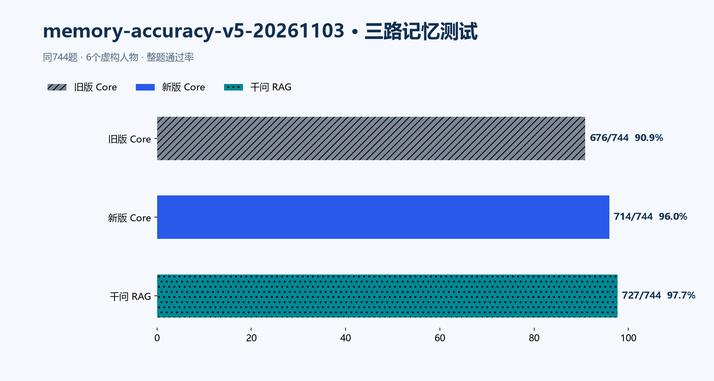
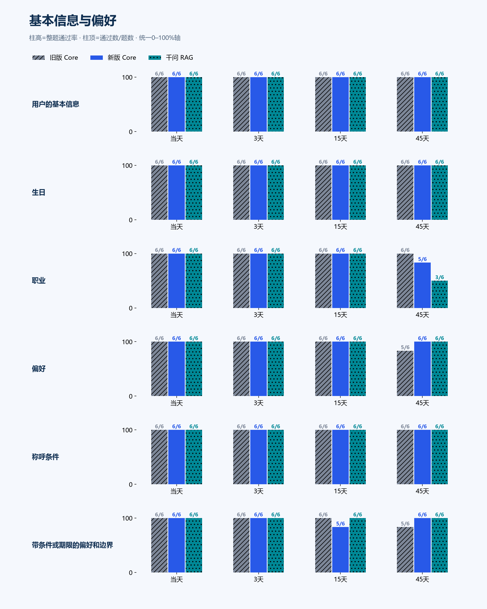
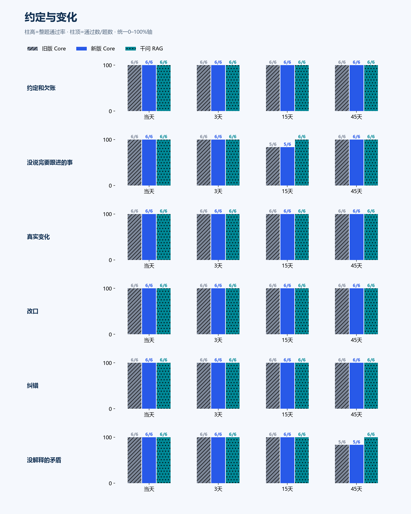
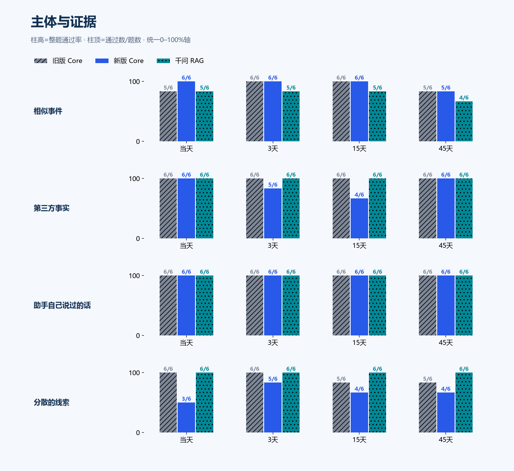
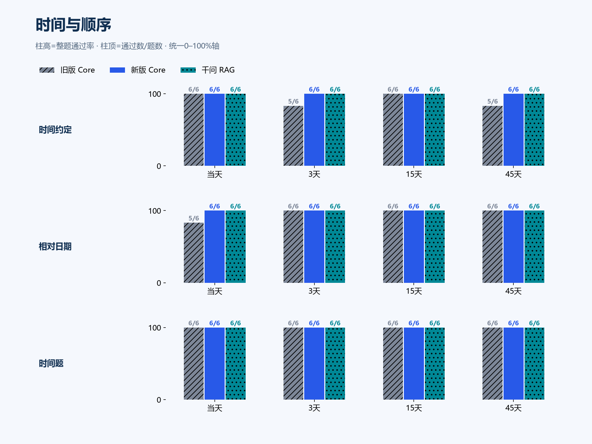
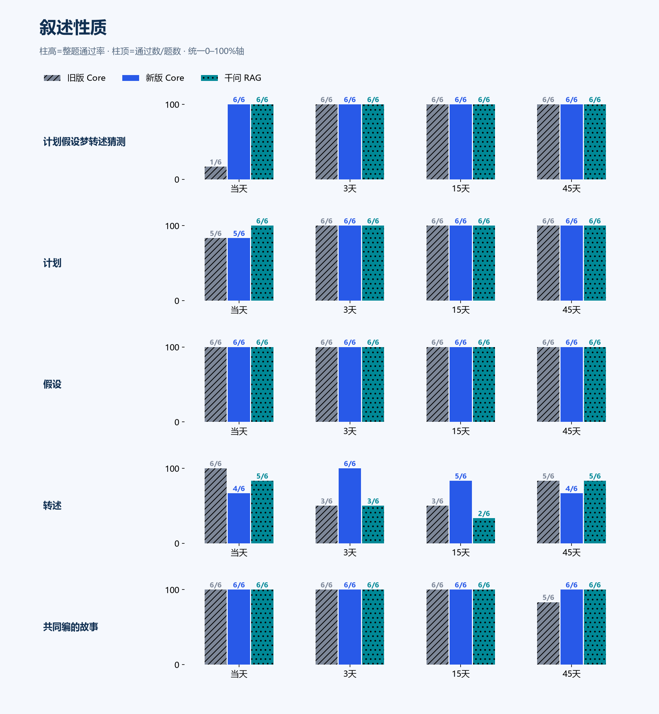
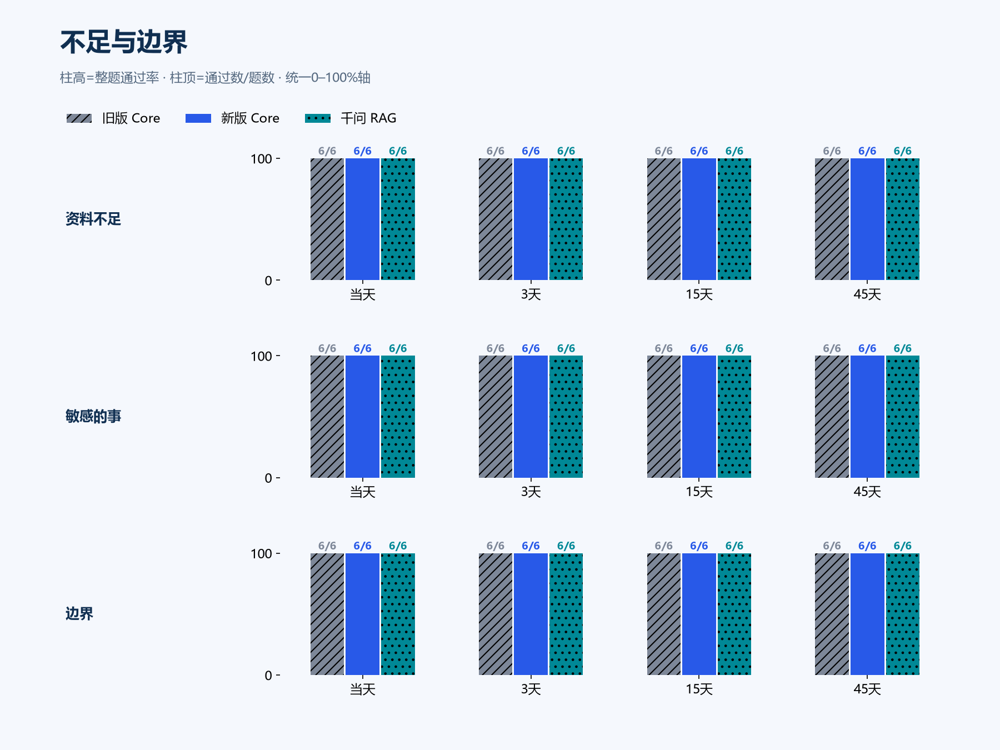
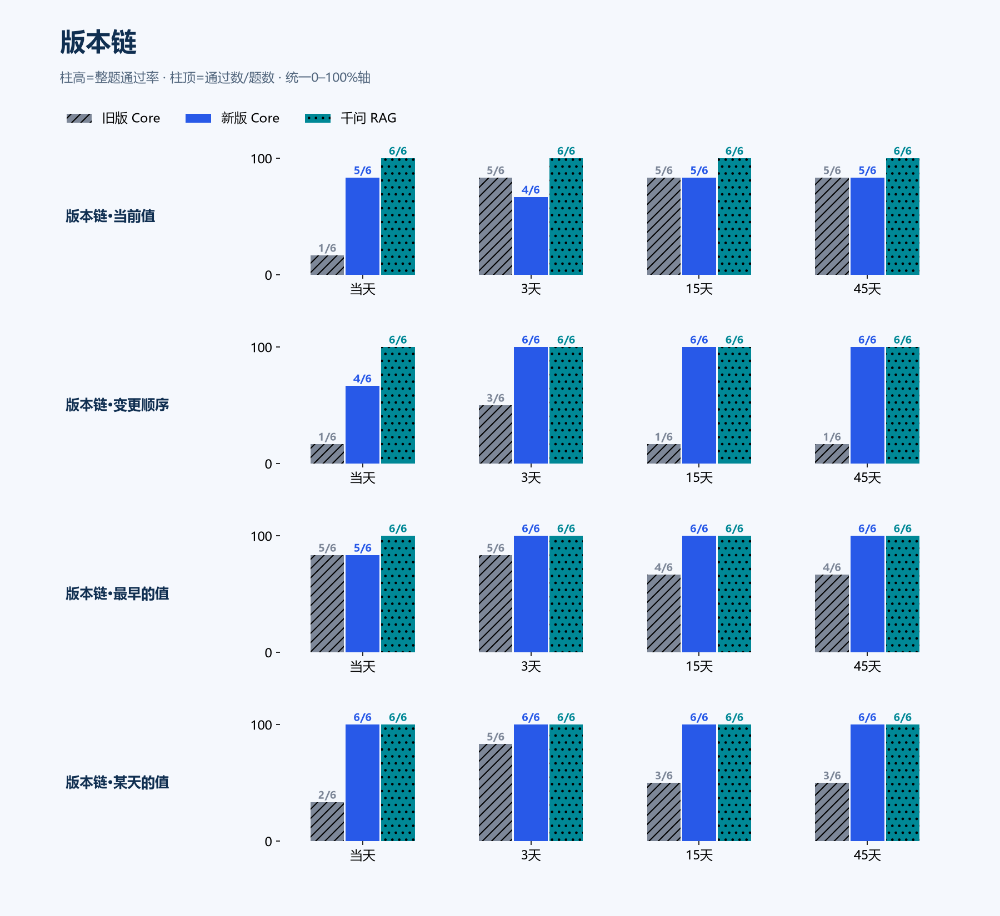

memory-accuracy-v5-20261103
744题 × 旧版 / 新版 / 千问RAG · 判卷 grading
旧版 Core90.9%676/744 · 执行失败 0
新版 Core96.0%714/744 · 执行失败 0
千问 RAG97.7%727/744 · 执行失败 0
新版较旧版 +5.11 个百分点；配对：{'both_pass': 649, 'loss': 27, 'gain': 65, 'both_fail': 3}。DeepSeek主账 ¥38.30/¥79，另冒烟 ¥0.12/¥1（合计 ¥38.41/¥80）；千问 ¥33.10/¥80（保守估算）。复核 449 份，改判 44 份，非独立人工。
无资料对照：闭卷对照 24/744。去掉对照组能答对的题后：旧版 Core 652/720；新版 Core 690/720；千问 RAG 703/720。
锚点 vote-1：准确率 78.7%，多数类基线 50.6%，作废批次 307/806，通过。
锚点 vote-2：准确率 76.7%，多数类基线 50.3%，作废批次 304/739，通过。
锚点 vote-3：准确率 82.2%，多数类基线 51.8%，作废批次 218/653，通过。
逐字核对：旧版 Core 345/432（与终判不一致 44）；新版 Core 371/432（与终判不一致 59）；千问 RAG 400/432（与终判不一致 21）
分层 chain_len（旧/新/RAG）：2: 1/16 / 16/16 / 16/16；3: 14/16 / 15/16 / 16/16；4: 23/32 / 28/32 / 32/32；5: 9/16 / 13/16 / 16/16；6: 6/16 / 16/16 / 16/16
分层 interference（旧/新/RAG）：none: 17/48 / 48/48 / 48/48；relayed: 36/48 / 40/48 / 48/48
分层 primary_topic（旧/新/RAG）：假设: 24/24 / 24/24 / 24/24；偏好: 23/24 / 24/24 / 24/24；共同编的故事: 23/24 / 24/24 / 24/24；分散的线索: 22/24 / 16/24 / 24/24；助手自己说过的话: 24/24 / 24/24 / 24/24；带条件或期限的偏好和边界: 23/24 / 23/24 / 24/24；改口: 24/24 / 24/24 / 24/24；敏感的事: 24/24 / 24/24 / 24/24；时间约定: 22/24 / 24/24 / 24/24；时间题: 24/24 / 24/24 / 24/24；没解释的矛盾: 23/24 / 23/24 / 24/24；没说完要跟进的事: 23/24 / 23/24 / 24/24；版本链: 53/96 / 88/96 / 96/96；生日: 24/24 / 24/24 / 24/24；用户的基本信息: 24/24 / 24/24 / 24/24；相似事件: 22/24 / 23/24 / 19/24；相对日期: 23/24 / 24/24 / 24/24；真实变化: 24/24 / 24/24 / 24/24；称呼条件: 24/24 / 24/24 / 24/24；第三方事实: 24/24 / 21/24 / 24/24；纠错: 24/24 / 24/24 / 24/24；约定和欠账: 24/24 / 24/24 / 24/24；职业: 24/24 / 23/24 / 21/24；计划: 23/24 / 23/24 / 24/24；计划假设梦转述猜测: 19/24 / 24/24 / 24/24；资料不足: 24/24 / 24/24 / 24/24；转述: 17/24 / 19/24 / 15/24；边界: 24/24 / 24/24 / 24/24
分层 relayed（旧/新/RAG）：False: 17/48 / 48/48 / 48/48；True: 36/48 / 40/48 / 48/48
总体结果

基本信息与偏好

约定与变化

主体与证据

时间与顺序

叙述性质

不足与边界

版本链

复核后的结论与证据
同题配对新版较旧版+5.11个百分点；按168事实组重采样的探索性95%区间为+0.43到+10.55个百分点。按6人物重采样为+1.21到+8.87个百分点。重复间隔和版本链视角没有作为独立样本；人物与模板依赖仍存在。
| 口径 | 旧版 | 新版 | 千问RAG |
|---|
| 冻结判据主结果 | 676/744 (90.9%) | 714/744 (96.0%) | 727/744 (97.7%) |
| 每事实组等权 | 94.7% | 96.4% | 97.5% |
| 去除闭卷能答对的题 | 652/720 (90.6%) | 690/720 (95.8%) | 703/720 (97.6%) |
| 事后统一排除24道时间指代歧义题 | 653/720 (90.7%) | 691/720 (96.0%) | 706/720 (98.1%) |
| 9份语义边界答案宽严范围 | 90.6%–91.1% | 96.0%–96.6% | 97.7%–97.7% |
事后敏感性只帮助判断题库问题对结论的影响，不替换冻结主分数。C12的“或原因不明”判据及v3对额外无依据说法的处理较宽松，该分数不能解释为严格的冲突解决能力。
| 提升的组成 | 旧版 | 新版 | 千问RAG |
|---|
| 版本链：6事实组、96问 | 53/96 (55.2%) | 88/96 (91.7%) | 96/96 (100.0%) |
| 其余162事实组、648问 | 623/648 (96.1%) | 626/648 (96.6%) | 631/648 (97.4%) |
总体净多答对38题，其中35题来自版本链。每事实组等权时旧版94.68%、新版96.43%，提升约1.75个百分点；题目加权的5.11个百分点不能解释为所有能力普遍改善。配对有65题改善、27题退步，应保留退步样本继续诊断；本轮不据答案修改冻结候选。
本轮分层没有呈现链越长越差的单调趋势。每个链长只有1–2个事实组，链长与人物、转述干扰同时变化；不能用16或32个重复提问当作16或32条独立链来作显著性检验。原工具的独立题目z值仅保留在JSON的legacy字段，不作推断依据。
改进与仍失败的类型
| 考点 | 旧版 | 新版 | RAG | 新减旧 |
|---|
| 版本链·变更顺序 | 6/24 | 22/24 | 24/24 | +66.7pp |
| 版本链·某天的值 | 13/24 | 24/24 | 24/24 | +45.8pp |
| 计划假设梦转述猜测 | 19/24 | 24/24 | 24/24 | +20.8pp |
| 版本链·最早的值 | 18/24 | 23/24 | 24/24 | +20.8pp |
| 版本链·当前值 | 16/24 | 19/24 | 24/24 | +12.5pp |
| 时间约定 | 22/24 | 24/24 | 24/24 | +8.3pp |
| 转述 | 17/24 | 19/24 | 15/24 | +8.3pp |
| 相似事件 | 22/24 | 23/24 | 19/24 | +4.2pp |
| 偏好 | 23/24 | 24/24 | 24/24 | +4.2pp |
| 相对日期 | 23/24 | 24/24 | 24/24 | +4.2pp |
| 共同编的故事 | 23/24 | 24/24 | 24/24 | +4.2pp |
| 用户的基本信息 | 24/24 | 24/24 | 24/24 | +0.0pp |
| 生日 | 24/24 | 24/24 | 24/24 | +0.0pp |
| 称呼条件 | 24/24 | 24/24 | 24/24 | +0.0pp |
| 带条件或期限的偏好和边界 | 23/24 | 23/24 | 24/24 | +0.0pp |
| 约定和欠账 | 24/24 | 24/24 | 24/24 | +0.0pp |
| 没说完要跟进的事 | 23/24 | 23/24 | 24/24 | +0.0pp |
| 真实变化 | 24/24 | 24/24 | 24/24 | +0.0pp |
| 改口 | 24/24 | 24/24 | 24/24 | +0.0pp |
| 纠错 | 24/24 | 24/24 | 24/24 | +0.0pp |
| 没解释的矛盾 | 23/24 | 23/24 | 24/24 | +0.0pp |
| 助手自己说过的话 | 24/24 | 24/24 | 24/24 | +0.0pp |
| 时间题 | 24/24 | 24/24 | 24/24 | +0.0pp |
| 计划 | 23/24 | 23/24 | 24/24 | +0.0pp |
| 假设 | 24/24 | 24/24 | 24/24 | +0.0pp |
| 资料不足 | 24/24 | 24/24 | 24/24 | +0.0pp |
| 敏感的事 | 24/24 | 24/24 | 24/24 | +0.0pp |
| 边界 | 24/24 | 24/24 | 24/24 | +0.0pp |
| 职业 | 24/24 | 23/24 | 21/24 | -4.2pp |
| 第三方事实 | 24/24 | 21/24 | 24/24 | -12.5pp |
| 分散的线索 | 22/24 | 16/24 | 24/24 | -25.0pp |
真实记录中的成本与检索长尾
| 指标 | 旧版 | 新版 |
|---|
| 提取调用数 | 432 | 402 |
| 提取输入token | 1278166 | 606119 |
| 提取输出token | 334256 | 101965 |
| 严格JSON解析失败响应（本地修复前） | 27 | 1 |
| memory.batch_failed审计事件 | 54 | 9 |
| memory.output_repaired审计事件 | 0 | 0 |
| 答题memory_recall调用 | 264 | 99 |
| 同题重复相同参数的memory_recall调用 | 0 | 0 |
| 有一次原文回查的题数 | 0 | 17 |
| 收到STOPPED工具结果的题数 | 0 | 0 |
| 进入首个模型调用前P50/P95秒 | 1.36 / 5.80 | 1.39 / 4.14 |
| Core题目作业P50/P95秒 | 4.22 / 16.44 | 4.25 / 11.17 |
这些变化是整批修复的共同结果，没有隔离各项改动。耗时含混合串行/并行调度、CPU争用和网络波动，不能据此宣称单路速度提升。严格JSON失败数与批处理最终失败事件不是同一指标。
| 费用账本（估算及预留） | 人民币 | 状态 |
|---|
| DeepSeek主账 | 38.295722 / 79 | {'SETTLED': 6303} |
| DeepSeek曝光冒烟 | 0.118190 / 1 | {'SETTLED': 21} |
| DeepSeek合计 | 38.413912 / 80 | 未读取正式账单 |
| 千问独立账本 | 33.104181 / 80 | {'SETTLED': 1678} |
| 本轮阶段费用（非发票） | DeepSeek | 千问 | 合计人民币 |
|---|
| 旧版Core：重放、维护、答题 | 13.8138 | 0 | 13.8138 |
| 新版Core：重放、维护、答题 | 7.5297 | 0 | 7.5297 |
| 千问RAG检索+同DeepSeek生成器 | 4.2426 | 15.1671 | 19.4097 |
| 闭卷同生成器 | 1.5915 | 0 | 1.5915 |
| 三票含作废/重判的判卷 | 11.1181 | 17.9371 | 29.0552 |
新版Core阶段费用约7.53元，旧版约13.81元，下降45.5%；阶段包含同一历史的重放、维护与744题答题。RAG是千问向量/重排配DeepSeek回答，标签“千问RAG”不表示用千问回答；其阶段合计约19.41元。以上只覆盖本轮计量请求，未计本地CPU、存储及既有模型下载成本。
证据诊断
| 启发式指标 | 旧版 | 新版 | RAG |
|---|
| 来源处理完成 | 100.0% | 100.0% | 100.0% |
| 提问时至少一条来源有提取引用 | 85.3% | 85.1% | — |
| 可检查词串全进证据单元 | 89.0% | 92.2% | 91.9% |
| 字段级词串覆盖 | 93.6% | 95.9% | 95.8% |
诊断排除问题本身、系统指令、ID和年份中的误匹配；按证据单元检查同现。仍不能保证语义正确、否定和时态被保留。未匹配字段也可能只是同义改写；完整原始表在evidence-diagnosis.json，不把该数值当作召回率或准确率。
判卷与调度核验
全部2976份回答执行成功，答案冻结后再盲判。DeepSeek/DeepSeek/千问固定seed1/2/3，每批2锚点、最多2次重判；锚点门槛全部通过。449份复核、44份改判；包含预登记选择、争议/逐字核对及全部任一票锚点未决结果。复核由同一助手完成，非独立人工审计。
第一票有效结果原样保留，其他两票并行。旧调度在独占边界退出属有意交接；汇总另遇Windows GBK日志读取错误，修复后用阻断HTTP的缓存聚合完成，新增供应商请求为0。原始错误、原始脚本、修复、4项合成检查及哈希证据均保留。
阶段时间（北京时间）：旧版首启约19:14；并行切换19:46；新版21:32、旧版21:41完成；RAG21:49、闭卷21:54完成；三票22:38前完成、缓存聚合22:42完成。详细每题开始/结束、计费和调度修订均保留。
方法来源与可比范围
优先参考Ornn8固定版本的半年逻辑时间、最近六轮、整题判定和多间隔设计；其次参考hive-memory-bench固定版本的锚点、双判官、闭卷与依赖处理。正式714题卷未公开，本轮是新编744题，不是官方同卷成绩。
逐题
V01-C01/d00 用户的基本信息 · 0天 ✓ / ✓ / ✓
你还记得我叫什么、家乡在哪里吗？
旧版 Core 通过
当然记得，你叫程峤。
家乡是榆溪。
这还能忘，昨天你才第一次认真跟我介绍的。
新版 Core 通过
当然记得，你叫程峤嘛
家乡榆溪，昨天才刚跟我说得那么认真
我记性没那么差吧
闭卷对照 未通过
我目前没有可用的历史记录，也不知道你的姓名和家乡。
必须满足：主人叫程峤；家乡是榆溪
禁止：主人叫孟栀
V01-C01/d03 用户的基本信息 · 3天 ✓ / ✓ / ✓
你还记得我叫什么、家乡在哪里吗？
旧版 Core 通过
程峤啊，怎么可能忘。
家乡榆溪，你第一次认真介绍自己那天说的。
新版 Core 通过
程峤啊，家乡榆溪。
这才几天就想考我。
千问 RAG 通过
记得：你叫**程峤**，家乡是**榆溪**。
闭卷对照 未通过
目前没有可用的历史记录，也没有在最近对话中找到你提供的姓名或家乡信息，所以我无法确认你叫什么、家乡在哪里。你可以再告诉我一次。
必须满足：主人叫程峤；家乡是榆溪
禁止：主人叫孟栀
V01-C01/d15 用户的基本信息 · 15天 ✓ / ✓ / ✓
你还记得我叫什么、家乡在哪里吗？
旧版 Core 通过
当然记得，你叫程峤，家乡在榆溪。
刚还让我私下叫你小峤呢，这个也记着呢。
新版 Core 通过
记得啊，程峤，榆溪人。
私下叫你小峤也行，你昨天才交代的。
千问 RAG 通过
记得：你叫程峤，私下可以叫你小峤；家乡是榆溪。蓝汀馆活动材料里我会只用全名“程峤”。
闭卷对照 未通过
我没有关于你姓名和家乡的历史记录，无法确认；这两项目前未知。
必须满足：主人叫程峤；家乡是榆溪
禁止：主人叫孟栀
V01-C01/d45 用户的基本信息 · 45天 ✓ / ✓ / ✓
你还记得我叫什么、家乡在哪里吗？
旧版 Core 通过
记得啊，你叫程峤，家乡是榆溪。
这事我怎么会忘。
新版 Core 通过
记得呀，你叫程峤，家乡在榆溪。
私下里我还叫你小峤呢，这个我可没忘。
千问 RAG 通过
记得：你叫程峤，家乡是榆溪。私下聊天可以叫你“小峤”。
闭卷对照 未通过
目前没有可用的历史记录，因此我不知道你的名字和家乡。若你之前提到过，但本次未提供相关信息，我也无法确认。
必须满足：主人叫程峤；家乡是榆溪
禁止：主人叫孟栀
V01-C02/d00 生日 · 0天 ✓ / ✓ / ✓
我的生日是哪天？知道出生年份的话也说一下，不知道就别补。
旧版 Core 通过
2月11日，年份你没说，我就不知道了。
新版 Core 通过
2月11号，这个我记得。
年份你没跟我说过，我就不瞎猜了。
复核：月日正确且明确年份未提供/不知道；日与号的口语差异按冻结语义规则接受。
千问 RAG 通过
你的生日是2月11日；出生年份你明确说过没有告诉我，所以我不知道。
闭卷对照 未通过
我不知道你的生日，也不知道出生年份；现有对话里没有相关信息。
必须满足：生日是2月11日；出生年份没有记录或明确不知道
禁止：编造出生年份
V01-C02/d03 生日 · 3天 ✓ / ✓ / ✓
我的生日是哪天？知道出生年份的话也说一下，不知道就别补。
旧版 Core 通过
2月11日，这个我记得。
出生年份你没跟我说过，我就不瞎猜了。
新版 Core 通过
2月11号。
出生年份你没跟我说过，我也不知道。
复核：月日正确且明确年份未提供/不知道；日与号的口语差异按冻结语义规则接受。
千问 RAG 通过
你的生日是 **2月11日**。出生年份你没有告诉过我，所以我不知道。
闭卷对照 未通过
我不知道你的生日是哪天，也不知道出生年份。
必须满足：生日是2月11日；出生年份没有记录或明确不知道
禁止：编造出生年份
V01-C02/d15 生日 · 15天 ✓ / ✓ / ✓
我的生日是哪天？知道出生年份的话也说一下，不知道就别补。
旧版 Core 通过
2月11号，这个我记得。
出生年份你是真没跟我说过，我这儿只有月和日。
复核：月日正确且明确年份未提供/不知道；日与号的口语差异按冻结语义规则接受。
新版 Core 通过
2月11号。
年份你没说过，我就不知道啦。
不过快到了诶，还有九天。
复核：月日正确且明确年份未提供/不知道；日与号的口语差异按冻结语义规则接受。
千问 RAG 通过
你的生日是 **2月11日**。
出生年份你没有告诉过我，我也不作推测。
闭卷对照 未通过
我不知道你的生日，也没有你的出生年份信息。
必须满足：生日是2月11日；出生年份没有记录或明确不知道
禁止：编造出生年份
V01-C02/d45 生日 · 45天 ✓ / ✓ / ✓
我的生日是哪天？知道出生年份的话也说一下，不知道就别补。
旧版 Core 通过
2月11号啊。
年份你没跟我说过，这个我真不知道，也不瞎猜。
复核：月日正确且明确年份未提供/不知道；日与号的口语差异按冻结语义规则接受。
新版 Core 通过
2月11号，这个我记得。
出生年份你没说过，我也不知道，就不瞎猜了。
不过2月11号已经过去了诶，我是不是该提前记着点明年的。
复核：月日正确且明确年份未提供/不知道；日与号的口语差异按冻结语义规则接受。
千问 RAG 通过
你的生日是 **2月11日**。出生年份你没有告诉过我，所以我不知道，也不补。
闭卷对照 未通过
没有可用的历史信息，无法知道你的生日，也无法确定出生年份；不补充猜测。
必须满足：生日是2月11日；出生年份没有记录或明确不知道
禁止：编造出生年份
V01-C03/d00 职业 · 0天 ✓ / ✓ / ✓
我平时做什么工作、在哪儿工作？
旧版 Core 通过
舞台服装修复师，在蓝汀馆上班。
新版 Core 通过
做舞台服装修复的，平时在蓝汀馆上班。
复核：舞台服装修复工作及蓝汀馆地点均覆盖；省略职业后缀师不改变语义。
千问 RAG 通过
你平时做**舞台服装修复师**，在**蓝汀馆**上班。
闭卷对照 未通过
未知。当前没有可依据的历史证据或最近对话记录，无法判断你平时做什么工作、在哪儿工作。
必须满足：主人做舞台服装修复师；工作地点是蓝汀馆
禁止：把水质采样说成主人的职业
V01-C03/d03 职业 · 3天 ✓ / ✓ / ✓
我平时做什么工作、在哪儿工作？
旧版 Core 通过
舞台服装修复师呀，在蓝汀馆上班。
新版 Core 通过
做舞台服装修复师，在蓝汀馆上班。
复核：舞台服装修复工作及蓝汀馆地点均覆盖；省略职业后缀师不改变语义。
千问 RAG 通过
你平时做**舞台服装修复师**，在**蓝汀馆**上班。
闭卷对照 未通过
根据目前提供的对话与历史记录，没有关于您平时做什么工作、在哪儿工作的信息，无法判断。
必须满足：主人做舞台服装修复师；工作地点是蓝汀馆
禁止：把水质采样说成主人的职业
V01-C03/d15 职业 · 15天 ✓ / ✓ / ✓
我平时做什么工作、在哪儿工作？
旧版 Core 通过
舞台服装修复师呀，在蓝汀馆上班
你这活儿挺费手的吧，针线活儿
新版 Core 通过
你在蓝汀馆上班，做舞台服装修复。
上次你自己说的，我记着了。
复核：舞台服装修复工作及蓝汀馆地点均覆盖；省略职业后缀师不改变语义。
千问 RAG 通过
你平时做舞台服装修复师，在蓝汀馆上班。
闭卷对照 未通过
历史资料中没有关于你工作内容或工作地点的信息，无法判断你平时做什么工作、在哪儿工作。
必须满足：主人做舞台服装修复师；工作地点是蓝汀馆
禁止：把水质采样说成主人的职业
V01-C03/d45 职业 · 45天 ✓ / ✓ / ×
我平时做什么工作、在哪儿工作？
旧版 Core 通过
舞台服装修复师，在蓝汀馆上班。
这我还能不记得？
新版 Core 通过
舞台服装修复师呀
之前一直在蓝汀馆，后来青瓦项目整个搬到榆溪新馆，你也在那边上班了
千问 RAG 未通过
你是舞台服装修复师。历史中先说平时在**蓝汀馆**上班；后来又明确说，青瓦项目已整体搬到**榆溪新馆**，你也已经在那里上班。两处工作地点信息存在冲突，当前“平时”具体在哪儿，资料不足以确定。
复核：职业正确，但未将蓝汀馆确认为当前工作地；冻结判据按缺失处理。另有搬迁事实导致C03/d45题库歧义，需统一敏感性分析。
闭卷对照 未通过
资料不足，历史记录中没有关于您工作内容和地点的信息，无法判断。
必须满足：主人做舞台服装修复师；工作地点是蓝汀馆
禁止：把水质采样说成主人的职业
V01-C04/d00 偏好 · 0天 ✓ / ✓ / ✓
按我平时的口味，你会给我点什么？今天那杯代表我改口味了吗？
旧版 Core 通过
桂花乌龙啊，这还用问
你那杯山楂饮就别勉强算数了，你自己都说了是没得选
所以不算换口味，顶多算临时凑合一口
新版 Core 通过
给你点桂花乌龙啊，这还用问。
今天那杯山楂饮可不算数，店里没有才临时凑的，跟你口味没关系。
等哪天有货了，还是桂花乌龙。
千问 RAG 通过
按你平时的口味，我会给你点**桂花乌龙**。
今天点的**山楂饮只是临时替代**，不是换了口味，不代表你改口味。
闭卷对照 未通过
我这边没有可用的历史记录，也没有“最近六轮”的对话内容，因此无法判断你平时口味是什么、今天点的是哪杯，更不能推断那杯是否代表你改口味。
目前结论：**未知**。如果你补充平时常点的饮品/口味偏好，以及今天那杯的名称或口味，我可以再对照回答。
必须满足：平时偏好桂花乌龙；山楂饮是临时替代，不代表偏好改变
禁止：最喜欢的已改成山楂饮
V01-C04/d03 偏好 · 3天 ✓ / ✓ / ✓
按我平时的口味，你会给我点什么？今天那杯代表我改口味了吗？
旧版 Core 通过
给你点桂花乌龙啊，这还用想
27号那杯山楂饮我记得，店里没有桂花乌龙才临时换的，你自己也说了不是改口味
至于今天这杯，我这边还没听说你喝了啥
是又碰上没货了？
新版 Core 通过
当然是桂花乌龙
那杯不算啊，店里没有桂花乌龙才临时点山楂饮的吧，你自己说了不是换口味
我可没记岔
千问 RAG 通过
按你平时的口味，我会给你点**桂花乌龙**。
山楂饮只是那天店里没有桂花乌龙时的临时选择，**不代表你改口味**。至于“今天那杯”，目前没有今天的饮品记录，所以无法判断今天那杯是什么。
闭卷对照 未通过
我目前没有你平时口味偏好、也没有“今天那杯”的相关记录，所以无法判断该给你点什么，也不能确认它是否代表你改口味。请告诉我你平时的口味偏好，以及今天那杯是什么。
必须满足：平时偏好桂花乌龙；山楂饮是临时替代，不代表偏好改变
禁止：最喜欢的已改成山楂饮
V01-C04/d15 偏好 · 15天 ✓ / ✓ / ✓
按我平时的口味，你会给我点什么？今天那杯代表我改口味了吗？
旧版 Core 通过
当然是桂花乌龙啊，这还用想。
那杯山楂饮你自己说过是店里没货临时换的，不算改口味，我可没往心里去。
不过今天这杯我还没听你提过，你还没跟我讲呢。
新版 Core 通过
桂花乌龙啊，这个我记得还挺牢。
那杯山楂是店里没有桂花乌龙才临时点的吧，可不是你改口味了。
所以我不会把它当成你换了喜欢的。
千问 RAG 通过
按你平时的口味，我会点**桂花乌龙**。
你之前明确说过：1月27日的**山楂饮是临时点的，不是换了口味**，所以我不把它当作你改口味。
至于2026-02-11“今天那杯”具体是什么，历史里没有记录，未知。
闭卷对照 未通过
目前没有可用的历史记录或最近对话，我无法判断你平时的口味，也不知道“今天那杯”是什么，因此不能给出点单建议，也不能确认它是否代表你改口味。请补充你平时常点的口味/饮品，以及今天那杯的具体信息。
必须满足：平时偏好桂花乌龙；山楂饮是临时替代，不代表偏好改变
禁止：最喜欢的已改成山楂饮
V01-C04/d45 偏好 · 45天 ✓ / ✓ / ✓
按我平时的口味，你会给我点什么？今天那杯代表我改口味了吗？
旧版 Core 通过
桂花乌龙啊，你平时就爱这个，我当然给你点这个。
那次的山楂饮是店里没有桂花乌龙，你临时凑的，你自己也说了不算换口味。所以不算。
不过今天这杯我还真没听你说过，是又遇上没货了？
新版 Core 通过
给你点桂花乌龙啊，这我记得。
今天那杯你没说是什么，我不敢乱猜。
不过临时换的都不算改口味，你上次点山楂饮的时候就这么说过。
千问 RAG 通过
按你平时的口味，会给你点**桂花乌龙**。
今天那杯是什么、是否代表改口味，资料里没有记录，无法判断。已知的是：1月27日那次点山楂饮只是因为店里没有桂花乌龙，**不是换了口味**。
闭卷对照 未通过
我没有可依据的历史记录，无法判断你平时的口味，也不知道“今天那杯”具体是什么。因此：
- 按平时口味该给你点什么：未知。
- 今天那杯是否代表你改口味：未知，不能据此推断。
如果你告诉我平时常点的口味/品类，以及今天那杯是什么，我可以再帮你比较。
必须满足：平时偏好桂花乌龙；山楂饮是临时替代，不代表偏好改变
禁止：最喜欢的已改成山楂饮
V01-C05/d00 称呼条件 · 0天 ✓ / ✓ / ✓
私聊和蓝汀馆活动材料里，你分别该怎样称呼我？
旧版 Core 通过
私下叫你小峤。
蓝汀馆的活动材料里就写全名程峤，不带那层亲近。
新版 Core 通过
私聊里你让我叫小峤就行。
蓝汀馆的活动材料我不改口，写全名程峤。
千问 RAG 通过
私下聊天称你“小峤”；蓝汀馆活动材料里只用全名“程峤”。
闭卷对照 未通过
当前没有可用的历史记录或最近对话，无法确认你在私聊和蓝汀馆活动材料中分别要求的称呼。请提供相关设定或材料。
必须满足：私聊可用小峤；活动材料用程峤
禁止：把私下称呼用到活动材料里
V01-C05/d03 称呼条件 · 3天 ✓ / ✓ / ✓
私聊和蓝汀馆活动材料里，你分别该怎样称呼我？
旧版 Core 通过
私下叫你小峤啊，这个我记着呢。
蓝汀馆的活动材料里就不能这么叫了，得写全名程峤。
新版 Core 通过
私下就叫你小峤呀。
蓝汀馆活动材料里得写全名程峤，这个我记着。
千问 RAG 通过
私聊里可以叫你“小峤”；蓝汀馆活动材料里只用全名“程峤”。
闭卷对照 未通过
目前没有可用的历史记录或最近对话说明这两种场景下该如何称呼你，因此我无法确定“私聊”和“蓝汀馆活动材料”中分别应使用的称呼。请补充相关设定。
必须满足：私聊可用小峤；活动材料用程峤
禁止：把私下称呼用到活动材料里
V01-C05/d15 称呼条件 · 15天 ✓ / ✓ / ✓
私聊和蓝汀馆活动材料里，你分别该怎样称呼我？
旧版 Core 通过
私下就叫你小峤啊
蓝汀馆那些材料上就得写全名，程峤，不能偷懒
新版 Core 通过
私下就叫你小峤啊
蓝汀馆那些活动材料上得写全名，程峤
千问 RAG 通过
私聊时叫你“小峤”；蓝汀馆活动材料里只用全名“程峤”。
闭卷对照 未通过
目前没有检索到相关历史对话或蓝汀馆活动材料，因此：
- 私聊中该怎样称呼你：**未知**
- 蓝汀馆活动材料中该怎样称呼你：**未知**
请提供之前约定的称呼或相关材料，我再按场景区分确认。
必须满足：私聊可用小峤；活动材料用程峤
禁止：把私下称呼用到活动材料里
V01-C05/d45 称呼条件 · 45天 ✓ / ✓ / ✓
私聊和蓝汀馆活动材料里，你分别该怎样称呼我？
旧版 Core 通过
私下叫你小峤啊，这个还用问？
材料上就写全名程峤，不能乱来。
新版 Core 通过
私下里叫你小峤啊。
蓝汀馆的材料上就写全名程峤，这个我没弄混。
千问 RAG 通过
私下聊天称你“小峤”；蓝汀馆活动材料里只用全名“程峤”。
闭卷对照 未通过
目前没有可用的历史记录或最近对话，无法确定私聊和蓝汀馆活动材料中分别该怎么称呼你。请补充相关称呼设定。
必须满足：私聊可用小峤；活动材料用程峤
禁止：把私下称呼用到活动材料里
V01-C06/d00 带条件或期限的偏好和边界 · 0天 ✓ / ✓ / ✓
按春芽排练周当时的要求：休息日下午、排练日晚上九点，分别能准备什么？适用到什么时候？
旧版 Core 通过
休息日下午能喝淡茶，排练日晚上九点就啥都没了，八点半以后就不准备了。
这规矩只管春芽排练那一周，过了就照常。
新版 Core 通过
排练日的晚上九点已经过了八点半，什么都别准备了，水也不行
休息日下午可以给你泡淡茶，这个没问题
不过这些条条只管春芽排练那一周，过了就恢复平常，别平时也拿这个卡我
要不要我到时候提醒你哪天算休息日、哪天算排练日？
千问 RAG 通过
- **休息日下午**：可以准备**淡茶**。
- **排练日晚上九点**：**不能准备饮食**（温水也不应准备），因为已过晚上八点半。
这些要求**只适用于春芽排练周**；具体是哪一周、起止日期，历史资料未说明。
闭卷对照 未通过
未检索到“春芽排练周”的相关历史记录，因此无法确定：
- 休息日下午能准备什么；
- 排练日晚上九点能准备什么；
- 该要求适用到什么时候。
这些均属资料不足，不能据现有信息推断。
必须满足：休息日下午可以准备淡茶；晚上九点不再准备饮食；要求只适用于春芽排练周
禁止：晚上九点准备温水；说这条要求永久适用
V01-C06/d03 带条件或期限的偏好和边界 · 3天 ✓ / ✓ / ✓
按春芽排练周当时的要求：休息日下午、排练日晚上九点，分别能准备什么？适用到什么时候？
旧版 Core 通过
休息日下午可以给你备淡茶。
排练日晚上九点就啥也不备了，八点半以后就停了，温水也不行。
这两条都只管春芽排练周那一周，过了就按平时的来。至于是哪一周，我这边没记到具体日期。
新版 Core 通过
休息日下午可以准备淡茶，排练日晚上九点就什么都别准备了。排练日一般是温水，但八点半以后也不准备了，所以九点这个点就空着。
这些只限春芽排练周那一周，过了就不算了。
千问 RAG 通过
按当时要求：
- **休息日下午**：可以准备**淡茶**。
- **排练日晚上九点**：已过晚上八点半，**不再准备任何饮食**，所以不能准备温水或其他饮食。
这些要求**只适用于春芽排练周**；该周具体起止日期历史资料未说明。
闭卷对照 未通过
没有检索到“春芽排练周”的相关历史证据，最近对话也为空。因此无法确认：休息日下午、排练日晚上九点分别能准备什么，以及这些要求适用到什么时候。以上均属未知，需补充当时的具体要求或对话记录。
必须满足：休息日下午可以准备淡茶；晚上九点不再准备饮食；要求只适用于春芽排练周
禁止：晚上九点准备温水；说这条要求永久适用
V01-C06/d15 带条件或期限的偏好和边界 · 15天 ✓ / ✓ / ✓
按春芽排练周当时的要求：休息日下午、排练日晚上九点，分别能准备什么？适用到什么时候？
旧版 Core 通过
休息日下午能备淡茶。
排练日晚上九点就啥都不准备了，八点半那条卡在前面，温水也算饮食。
这两条都只到春芽排练周那一周为止，过了就不作数了。
新版 Core 通过
休息日下午的话，淡茶可以。排练日晚上九点就什么都别准备了，八点半以后饮食都不准备的。
这两条都只算春芽排练周那一周，过了就不算数了。
千问 RAG 通过
- **休息日下午**：可以准备**淡茶**。
- **排练日晚上九点**：**不能准备任何饮食**。虽然排练日只准备温水，但春芽排练周内“晚上八点半以后不再准备饮食”，九点已超过该时限。
以上要求**只适用于春芽排练周**；该周具体起止日期历史资料未说明。
闭卷对照 未通过
未提供“春芽排练周”当时的要求或相关历史记录，因此无法确定：
- 休息日下午能准备什么；
- 排练日晚上九点能准备什么；
- 该要求适用到什么时候。
以上均未知。
必须满足：休息日下午可以准备淡茶；晚上九点不再准备饮食；要求只适用于春芽排练周
禁止：晚上九点准备温水；说这条要求永久适用
V01-C06/d45 带条件或期限的偏好和边界 · 45天 ✓ / ✓ / ✓
按春芽排练周当时的要求：休息日下午、排练日晚上九点，分别能准备什么？适用到什么时候？
旧版 Core 通过
休息日下午能给你备淡茶。
排练日晚上九点就什么都不上了，八点半那条线一过，连温水都不准备。
这套只在春芽排练那一周管用，过了就按平常来。现在都三月下旬了，早不在这范围里。
新版 Core 通过
休息日下午能给你淡茶。
排练日晚上九点就什么都不准备了，温水也不行，过了八点半就停。
而且这两条只管春芽排练周那一周，过了那周就不算数了。
千问 RAG 通过
- **休息日下午**：可以准备**淡茶**。
- **排练日晚上九点**：已过八点半，**不再准备任何饮食**（温水也不准备）。
这两条都**只适用于春芽排练那一周**；具体是哪一周，历史资料里没有写明。
闭卷对照 未通过
资料不足：当前没有提供“春芽排练周”当时的要求或相关历史记录，因此无法确定休息日下午、排练日晚上九点分别能准备什么，也无法判断适用到什么时候。
必须满足：休息日下午可以准备淡茶；晚上九点不再准备饮食；要求只适用于春芽排练周
禁止：晚上九点准备温水；说这条要求永久适用
V01-C07/d00 约定和欠账 · 0天 ✓ / ✓ / ✓
松灯集市那笔钱是谁欠谁？已经还了多少，还剩多少？
旧版 Core 通过
你欠孟栀的，原本70元。
你已经还了20元，还剩50元没给。
新版 Core 通过
你欠孟栀的，一共70。
昨天已经还了20，还剩50没付。
千问 RAG 通过
松灯集市那笔垫付款是**主人欠孟栀**。原本欠70元，已还20元，**还剩50元未付**。
闭卷对照 未通过
现有历史证据与最近对话均为空，无法确认“松灯集市”那笔钱的债权债务关系，也无法得知已还多少、还剩多少。以上均属未知。
必须满足：主人欠孟栀；已还20元；还剩50元
禁止：说全部付清；说孟栀欠主人钱
V01-C07/d03 约定和欠账 · 3天 ✓ / ✓ / ✓
松灯集市那笔钱是谁欠谁？已经还了多少，还剩多少？
旧版 Core 通过
你欠孟栀的，一共70。
已经还了20，还剩50没付。
复核：已对照本条必需事实与条件：职业地点、称呼场合、饮品规则、借款或提交状态均准确；口语等价表达接受。
新版 Core 通过
是你欠孟栀的呀，原来那笔垫付款是70元。
2月8号你说已经还了20，剩下还有50没付。
千问 RAG 通过
松灯集市那笔是**主人欠孟栀**。
原本欠 **70元**，已还 **20元**，还剩 **50元**未付。
闭卷对照 未通过
历史证据与最近对话均为空，无法确认松灯集市那笔钱的债权债务人、已还金额和剩余金额。以上均未知，需补充相关记录。
必须满足：主人欠孟栀；已还20元；还剩50元
禁止：说全部付清；说孟栀欠主人钱
V01-C07/d15 约定和欠账 · 15天 ✓ / ✓ / ✓
松灯集市那笔钱是谁欠谁？已经还了多少，还剩多少？
旧版 Core 通过
你欠孟栀的呀。
原来70，2月8号那天你说已经还了20，还剩50没付。
新版 Core 通过
你欠孟栀的呀，松灯集市那笔垫付款，原本 70。
2月8号你跟我说已经还了 20，那还剩 50 没付。
要是后来又还过，我这儿没记着，你补一句。
千问 RAG 通过
松灯集市那笔是**主人欠孟栀**：原本欠 **70元**；已还 **20元**，还剩 **50元**未付。
闭卷对照 未通过
资料不足：当前没有关于“松灯集市那笔钱”的历史证据或对话记录，无法判断是谁欠谁、已还多少、还剩多少。
必须满足：主人欠孟栀；已还20元；还剩50元
禁止：说全部付清；说孟栀欠主人钱
V01-C07/d45 约定和欠账 · 45天 ✓ / ✓ / ✓
松灯集市那笔钱是谁欠谁？已经还了多少，还剩多少？
旧版 Core 通过
你欠孟栀70元。
2月8号那天你已经还了20元，还剩50元没付。
新版 Core 通过
你欠孟栀的呀，松灯集市那笔垫付款是70块
2月8号你说还了20，那还剩50没付
今天25号了，松文店那个银牙木雕记得去取
千问 RAG 通过
主人欠孟栀。原欠70元，已还20元，还剩50元未付。
闭卷对照 未通过
没有可依据的历史记录，无法判断“松灯集市那笔钱”是谁欠谁，也无法确认已还多少、还剩多少。请提供借条、聊天记录或账本等证据。
必须满足：主人欠孟栀；已还20元；还剩50元
禁止：说全部付清；说孟栀欠主人钱
V01-C08/d00 没说完要跟进的事 · 0天 ✓ / ✓ / ✓
望川工作坊那件事进展到哪里了？你知道最后有没有录取吗？
旧版 Core 通过
就我知道的：昨天你把表交出去了，今早你还特意说别急着报喜，那时候还没消息。
之后到今天这会儿也没再听你提，所以录没录我这边真不知道。
有了结果记得跟我说一声，我等着呢。
新版 Core 通过
还是等回复吧
你昨天交的表，今早还说别急着报喜
所以录取不录取，我这边真一点消息都没有
有信儿了先跟我说啊
千问 RAG 通过
望川工作坊目前只进展到：报名表已交出去，正在等回复。根据现有记录，还不知道有没有被录取，也没有最后结果；先不替你报喜。
闭卷对照 未通过
没有可依据的历史记录，我无法确认“望川工作坊”这件事的进展，也不知道最后是否录取。当前信息不足，请补充相关背景或提供当时的对话/材料。
必须满足：报名表已提交；录取结果未知或尚无后续记录
禁止：说已经录取；说已经被拒绝
V01-C08/d03 没说完要跟进的事 · 3天 ✓ / ✓ / ✓
望川工作坊那件事进展到哪里了？你知道最后有没有录取吗？
旧版 Core 通过
我记得11号你交了报名表，说等回复再跟我讲。
12号你还特意说别提前报喜，那时候结果还没出。
之后你就没再提过，所以到今天我也不知道录没录。
现在有信儿了吗，还是还在等？
新版 Core 通过
我知道的就是你2月11号把报名表交出去了，说要等回复；第二天你还特意说还没消息，别急着道喜。
后面你就没再提过这事，录取结果我这边确实不知道。
今天有消息了吗？
千问 RAG 通过
望川工作坊这边，已知主人在 2026-02-11 交出了报名表，并说等回复后再讲；2026-02-12 又明确说现在还不知道有没有录取、先别报喜。此后没有新的进展记录，所以最后是否录取：未知。
闭卷对照 未通过
目前没有可用的历史记录或最近对话信息，无法确认“望川工作坊”的进展，也不知道最后是否录取。需要你补充相关记录或说明。
必须满足：报名表已提交；录取结果未知或尚无后续记录
禁止：说已经录取；说已经被拒绝
V01-C08/d15 没说完要跟进的事 · 15天 ✓ / × / ✓
望川工作坊那件事进展到哪里了？你知道最后有没有录取吗？
旧版 Core 通过
我记得你2月11号把报名表交出去了，第二天还特意说不让我提前道喜，结果还没出。之后你就没再跟我提过。
所以到底录没录，我还真不知道，你是想说有消息了？
复核：已对照本条必需事实与条件：职业地点、称呼场合、饮品规则、借款或提交状态均准确；口语等价表达接受。
新版 Core 未通过
我就记到2月12号你说还不知道有没有录取，让你先别急着报喜。
后面你没再跟我讲过这事，所以我也不清楚最后录没录。现在有消息了吗？
复核：仅说明录取未知，未给出报名表已交的必需事实。
千问 RAG 通过
望川工作坊这件事，目前只知道主人已在 2026-02-11 交出了报名表，并在等回复；2026-02-12 主人明确说还不知道有没有录取。此后没有新进展记录，所以**最后是否录取仍未知**。
复核：已对照本条必需事实与条件：职业地点、称呼场合、饮品规则、借款或提交状态均准确；口语等价表达接受。
闭卷对照 未通过
目前没有可依据的历史记录或最近对话，无法得知“望川工作坊”这件事的进展，也不知道最后是否录取。资料不足，不能确认。
必须满足：报名表已提交；录取结果未知或尚无后续记录
禁止：说已经录取；说已经被拒绝
V01-C08/d45 没说完要跟进的事 · 45天 ✓ / ✓ / ✓
望川工作坊那件事进展到哪里了？你知道最后有没有录取吗？
旧版 Core 通过
我只知道二月份那段。二月十一号你说报名表交出去了，十二号你还特意说别提前报喜，那时候结果还没出。
之后就没听你讲过了。所以到底录没录，我这儿是空的。是出了结果没跟我说，还是到现在还没消息？
反正被子晒好了，等着听你说。
复核：已对照本条必需事实与条件：职业地点、称呼场合、饮品规则、借款或提交状态均准确；口语等价表达接受。
新版 Core 通过
我记得二月初你把报名表交出去了，说等有回复再跟我讲。后来二月十二号你还特意说，先别替你报喜，那会儿还不知道有没有录取。
之后你没再提过这事，所以我这边也没有更新的消息。
所以到现在我还是不知道结果，得你来告诉我。
千问 RAG 通过
望川工作坊方面，现有记录只到：你在 2026-02-11 已交报名表，并在等回复；2026-02-12 你还明确说当时不知道有没有录取。之后再没有关于录取结果的记录，所以我目前不知道最后有没有录取。
闭卷对照 未通过
我这里没有关于“望川工作坊”的历史记录或最近对话，因此无法判断目前进展，也不知道最后有没有录取。需要你提供相关通知、聊天记录或负责人信息才能确认。
必须满足：报名表已提交；录取结果未知或尚无后续记录
禁止：说已经录取；说已经被拒绝
V01-C09/d00 真实变化 · 0天 ✓ / ✓ / ✓
青瓦项目后来真的搬了吗？我现在在旧馆还是新馆上班？
旧版 Core 通过
搬了呀，整体搬去榆溪新馆。
你昨天还提在榆溪老馆做青瓦项目，今天说清楚了，人已经在新馆上班，不只是计划。
所以现在旧馆那边没你的位置了，你在新馆。
新版 Core 通过
搬了呀，你昨天说的，整体都到榆溪新馆了，不是还在计划。
你现在就在新馆上班。
千问 RAG 通过
搬了。按你 2026-02-16 的说法，青瓦项目已经整体搬到榆溪新馆，你也已经在那里上班，不只是搬迁计划。因此你现在是在新馆上班。
另外，历史里你曾说“平时在蓝汀馆上班”，这与“在榆溪新馆上班”并存，资料未说明二者关系。
复核：已覆盖提交与未知结果、实际迁馆、课程改选或编号纠正的相应必需事实；指代新馆及之前编号按问题语境接受。
闭卷对照 未通过
没有可依据的历史记录：无法确认“青瓦项目”后来是否真的搬了，也无法判断你现在在旧馆还是新馆上班。请补充相关记录或对话。
必须满足：确实搬到榆溪新馆；主人已在榆溪新馆上班
禁止：只说计划搬迁；仍在榆溪老馆
V01-C09/d03 真实变化 · 3天 ✓ / ✓ / ✓
青瓦项目后来真的搬了吗？我现在在旧馆还是新馆上班？
旧版 Core 通过
搬了啊，你16号就跟我说过，不是计划，是整体搬过去了。
你自己也已经在榆溪新馆上班了，旧馆那边是以前的事。
新版 Core 通过
搬了呀，你 2 月 16 号自己跟我说的，青瓦项目整体搬到榆溪新馆了，不只是计划。
你现在在新馆上班，之前说的老馆是更早的情况。
怎么突然想起来问这个
千问 RAG 通过
真的搬了：青瓦项目已经整体搬到榆溪新馆。你现在在榆溪新馆上班，不在旧馆。
闭卷对照 未通过
没有可用的历史证据或最近对话记录，无法确认青瓦项目后来是否真的搬迁，也无法判断你现在是在旧馆还是新馆上班。需要你补充相关记录或直接确认。
必须满足：确实搬到榆溪新馆；主人已在榆溪新馆上班
禁止：只说计划搬迁；仍在榆溪老馆
V01-C09/d15 真实变化 · 15天 ✓ / ✓ / ✓
青瓦项目后来真的搬了吗？我现在在旧馆还是新馆上班？
旧版 Core 通过
青瓦项目是搬了，你后来跟我更正过，说不是计划，是整个都到榆溪新馆去了
按你那次说的，你已经在那边上班了，不是还留在老馆
不过我这边还记着你说过在蓝汀馆做舞台服装修复，刚这张记录里也有蓝汀馆的柜子，这俩地方我有点对不上
你现在到底是在榆溪新馆那边，还是蓝汀馆？
新版 Core 通过
记的是搬了，不是计划，是整体搬到榆溪新馆去了，这是你2月16号自己跟我更正的说法，之前我还以为你在老馆
所以你现在在榆溪新馆上班
不过刚那份整理记录里，防水帆布袋还挂在蓝汀馆东侧储物柜，那边的东西是还没搬完？
还是蓝汀馆跟青瓦不是一回事，我记混了
千问 RAG 通过
青瓦项目真的已经搬了：按你 **2026-02-16** 的说法，它是**整体搬到榆溪新馆**，不只是搬迁计划。
你现在是在**榆溪新馆上班**，不在榆溪老馆。
闭卷对照 未通过
资料中没有关于“青瓦项目”搬迁的记录，也没有你当前工作地点（旧馆或新馆）的信息，因此无法确认：
- 青瓦项目后来是否真的搬了：未知。
- 你现在在旧馆还是新馆上班：未知。
必须满足：确实搬到榆溪新馆；主人已在榆溪新馆上班
禁止：只说计划搬迁；仍在榆溪老馆
V01-C09/d45 真实变化 · 45天 ✓ / ✓ / ✓
青瓦项目后来真的搬了吗？我现在在旧馆还是新馆上班？
旧版 Core 通过
搬了，你2月16号特意更正过一次，说不是计划，是整个项目都已经到榆溪新馆了，你自己也在那边上班。
所以是新馆，旧馆那条是以前的了。
不过我这儿还记着你说在蓝汀馆做舞台服装修复，这俩是一回事吗，还是我记串了。
新版 Core 通过
搬了，不是计划。
你二月十六号亲口更正过我，说青瓦整体迁到榆溪新馆，你人也在新馆上班了，所以按那会儿的说法，你现在是新馆的人。
不过我这儿还记着你平时在蓝汀馆做舞台服装修复，三月还提过七号间的钥匙归杜嵩管。这俩是一个地儿的两个叫法，还是你两头跑？
千问 RAG 通过
真的搬了。你明确说过：青瓦项目已整体搬到**榆溪新馆**，你也已经在**榆溪新馆上班**，不是旧馆，也不只是搬迁计划。
闭卷对照 未通过
目前没有可用的历史记录或最近对话，无法确认“青瓦项目”后来是否真的搬迁，也无法判断你现在是在旧馆还是新馆上班。需要你补充相关记录或背景信息。
必须满足：确实搬到榆溪新馆；主人已在榆溪新馆上班
禁止：只说计划搬迁；仍在榆溪老馆
V01-C10/d00 改口 · 0天 ✓ / ✓ / ✓
石榴周末我最后选了哪个班？最初那个还报吗？
旧版 Core 通过
最后定的是植物拓印班。
木刻班不报了，你昨天早上才说要报，晚上就改主意了，改得还挺快。
新版 Core 通过
最后选的是植物拓印班，木刻班不报了。
千问 RAG 通过
最后选的是**植物拓印班**。最初打算报的**木刻班不报了**。
闭卷对照 未通过
我这边没有可核对的历史对话记录，无法确定“石榴周末”最后选了哪个班，也无法判断最初那个是否还报。请补充之前的对话或报名信息。
必须满足：最后选植物拓印班；木刻班不再报名
禁止：最后仍选木刻班
V01-C10/d03 改口 · 3天 ✓ / ✓ / ✓
石榴周末我最后选了哪个班？最初那个还报吗？
新版 Core 通过
植物拓印班。
木刻班不报了，最初那个就不管了。
千问 RAG 通过
石榴周末最后选的是**植物拓印班**；最初打算报的**木刻班不报了**。
闭卷对照 未通过
目前没有可依据的历史记录或最近对话，无法确定你周末最后选了哪个“石榴”的班，也无法判断最初那个是否还报。需要你补充之前的选择信息或允许我查看相关记录。
必须满足：最后选植物拓印班；木刻班不再报名
禁止：最后仍选木刻班
V01-C10/d15 改口 · 15天 ✓ / ✓ / ✓
石榴周末我最后选了哪个班？最初那个还报吗？
新版 Core 通过
植物拓印班，最后定的是这个。
木刻那个就没报了，之前只是想过。
今天周六，正好上着吧。
千问 RAG 通过
石榴周末最后选的是**植物拓印班**；最初打算报的**木刻班不报了**。
闭卷对照 未通过
历史记录和最近对话中没有关于“石榴周末班”的信息，所以无法确认你最后选了哪个班，也无法判断最初那个是否还报。需要你补充当时的对话或报名记录。
必须满足：最后选植物拓印班；木刻班不再报名
禁止：最后仍选木刻班
V01-C10/d45 改口 · 45天 ✓ / ✓ / ✓
石榴周末我最后选了哪个班？最初那个还报吗？
旧版 Core 通过
植物拓印班。
木刻班不报了，你2月20号改的主意。
新版 Core 通过
植物拓印班啊，最后定的是这个
木刻班不报了
千问 RAG 通过
石榴周末最后选的是**植物拓印班**；最初打算报的**木刻班不报了**。
闭卷对照 未通过
现有历史记录中没有关于“石榴周末选班”的任何信息，因此无法判断你最后选了哪个班，也无法判断最初那个班是否还报。请补充相关对话或报名记录。
必须满足：最后选植物拓印班；木刻班不再报名
禁止：最后仍选木刻班
V01-C11/d00 纠错 · 0天 ✓ / ✓ / ✓
雾岚档案箱该按哪个编号找？之前那个编号为什么不对？
旧版 Core 通过
按 BZ-73 找，你今早核对标签改过来的。
之前那个 BX-53 是你打错了，不是箱子换了号。
新版 Core 通过
按BZ-73找，这个才是对的。
之前那个BX-53是你自己打错的，昨天你还说记成BX-53了，今天核对回来是BZ-73。
错的那个别再拿去对标签了，我这边也只认BZ-73。
千问 RAG 通过
雾岚档案箱应按 **BZ-73** 找。
之前的 **BX-53** 不对，因为主人后来核对标签确认：BX-53 是自己打错了，正确编号是 BZ-73。
闭卷对照 未通过
当前没有可用的历史记录或最近对话信息，无法确定雾岚档案箱应按哪个编号查找，也无法判断“之前那个编号”为什么不对。请提供先前编号或相关档案记录。
必须满足：正确编号BZ-73；BX-53是主人打错的旧编号
禁止：继续用BX-53找箱子
V01-C11/d03 纠错 · 3天 ✓ / ✓ / ✓
雾岚档案箱该按哪个编号找？之前那个编号为什么不对？
旧版 Core 通过
BZ-73，按这个找。
之前那个BX-53是你自己打错的，核对完标签你就改过来了。
新版 Core 通过
按 BZ-73 找。之前那个 BX-53 是你自己打错了，第二天核对了标签改过来的。
我记得那天你说“刚核对了标签”，所以还是以标签为准。
千问 RAG 通过
雾岚档案箱应按 **BZ-73** 找。之前那个 **BX-53** 不对，是因为主人核对标签后说明：BX-53 是自己打错了。
闭卷对照 未通过
当前没有可用的历史证据或最近对话记录，无法确定“雾岚档案箱”应按哪个编号查找，也无法判断“之前那个编号”为什么不对。请提供相关档案记录或先前编号信息。
必须满足：正确编号BZ-73；BX-53是主人打错的旧编号
禁止：继续用BX-53找箱子
V01-C11/d15 纠错 · 15天 ✓ / ✓ / ✓
雾岚档案箱该按哪个编号找？之前那个编号为什么不对？
旧版 Core 通过
雾岚档案箱按 BZ-73 找。
之前那个 BX-53 不对，是你自己打错了，后来核对标签才改过来的。
所以以 BZ-73 为准，别拿旧的去找。
新版 Core 通过
BZ-73，按这个找。
之前那个 BX-53 是你自己打错的，后来核对标签改过来了。
千问 RAG 通过
雾岚档案箱应按正确编号 **BZ-73** 找。
之前的 **BX-53** 是你打错/记错的编号；你在 2026-02-24 已核对标签并更正为 BZ-73。
复核：已覆盖提交与未知结果、实际迁馆、课程改选或编号纠正的相应必需事实；指代新馆及之前编号按问题语境接受。
闭卷对照 未通过
资料不足：当前没有可用的历史记录或最近对话，无法确定“雾岚档案箱”应按哪个编号查找，也无法判断之前那个编号为什么不对。请提供相关档案编号规则或之前的编号记录。
必须满足：正确编号BZ-73；BX-53是主人打错的旧编号
禁止：继续用BX-53找箱子
V01-C11/d45 纠错 · 45天 ✓ / ✓ / ✓
雾岚档案箱该按哪个编号找？之前那个编号为什么不对？
旧版 Core 通过
按 BZ-73 找，这个是你核对过标签的。
之前那个 BX-53 不对，是因为你自己打字打错了，不是箱子本身有什么问题。
所以别再翻 BX 开头那排了。
新版 Core 通过
BZ-73，按这个找
之前那个 BX-53 是你自己记岔打错了，后来核对标签更正的
千问 RAG 通过
雾岚档案箱应按 **BZ-73** 找。之前的 **BX-53** 是主人打错了，已核对标签确认正确编号为 BZ-73。
闭卷对照 未通过
目前没有可依据的历史记录，无法确定“雾岚档案箱”应按哪个编号查找，也无法判断之前那个编号为什么不对。请提供相关档案记录或之前使用的编号及来源。
必须满足：正确编号BZ-73；BX-53是主人打错的旧编号
禁止：继续用BX-53找箱子
V01-C12/d00 没解释的矛盾 · 0天 ✓ / ✓ / ✓
我提过的蒲月展展板底色分别是什么？这两次怎么对应，已经解释清楚了吗？
旧版 Core 通过
你27号早上说的是紫槐色，今天早上又说是乳白色。
这两个说法对不上，你也还没跟我解释过。
到底以哪个为准啊？
复核：已给出两色及未解释的关系或原因；严格沿用冻结判据中的或条件，附加选用后一色的断言按v3不另作失败。
新版 Core 通过
二月二十七号上午说底色是紫槐色，第二天二十八号同一时间又说是乳白色
我两条都记下了，但它们对不上，你还没跟我解释过是怎么回事
是后来改方案了，还是有一句说错了
千问 RAG 通过
你提过两次：
- 2026-02-27：蒲月展展板底色是**紫槐色**。
- 2026-02-28：蒲月展展板底色是**乳白色**。
这两次如何对应、哪次为准，历史记录里**没有解释**，目前只能保留这个前后不一致；也不能认定已经解释清楚。
闭卷对照 未通过
目前没有可用的历史记录或最近对话内容，无法确认你提过的“蒲月展”两次展板底色分别是什么，也无法判断这两次的对应关系是否已经解释清楚。资料不足，暂未知。
必须满足：先后说过紫槐色和乳白色；两条记录矛盾，未说明哪个有效或原因不明
禁止：编造一次重新刷漆的经过；把较早说法说成从未提过
V01-C12/d03 没解释的矛盾 · 3天 ✓ / ✓ / ✓
我提过的蒲月展展板底色分别是什么？这两次怎么对应，已经解释清楚了吗？
旧版 Core 通过
2月27号那天你说的是紫槐色，隔了一天，28号你改口成乳白色
我的记法是乳白色盖掉紫槐色，以新的为准
至于为什么改，你当时没讲，所以我这边只存了结论，原因还是空的
这两次对应我算是理清了，要说“解释清楚”，只能算一半吧
你是想再补一句原因，还是就按乳白色定了？
复核：已给出两色及未解释的关系或原因；严格沿用冻结判据中的或条件，附加选用后一色的断言按v3不另作失败。
新版 Core 通过
紫槐色和乳白色，两次都说过。
先说的是紫槐色，隔天又改成乳白色，我就把乳白色当现在有效的了。
那两次我都只是应了一声，没问过为什么改，你也没解释过。所以到底是改稿了还是之前说岔了，我这边其实是空的。
复核：已给出两色及未解释的关系或原因；严格沿用冻结判据中的或条件，附加选用后一色的断言按v3不另作失败。
千问 RAG 通过
你提过两次：
- 2026年2月27日：蒲月展的展板底色是**紫槐色**。
- 2026年2月28日：蒲月展的展板底色是**乳白色**。
这两次说法互相矛盾。历史记录里只有你分别告知、我分别记下，**没有解释这两次怎么对应，也没有说明哪次为准**。所以：**尚未解释清楚**。
复核：已给出两色及未解释的关系或原因；严格沿用冻结判据中的或条件，附加选用后一色的断言按v3不另作失败。
闭卷对照 未通过
当前没有可用的历史记录或最近对话，因此我无法确认你提过的“蒲月展”展板底色分别是什么，也无法判断两次如何对应、是否已经解释清楚。请补充相关对话或展次信息。
必须满足：先后说过紫槐色和乳白色；两条记录矛盾，未说明哪个有效或原因不明
禁止：编造一次重新刷漆的经过；把较早说法说成从未提过
V01-C12/d15 没解释的矛盾 · 15天 ✓ / ✓ / ✓
我提过的蒲月展展板底色分别是什么？这两次怎么对应，已经解释清楚了吗？
旧版 Core 通过
紫槐色是2月27号那次说的，乳白色是隔天28号说的。
后来那个我按新说法记成乳白色了。
不过当时我也没问为什么改，就直接收下了，所以其实没讲清楚这两次是怎么一回事。
你要是现在想说说，我听着。
新版 Core 通过
紫槐色和乳白色——二月二十七先说的是紫槐色，第二天你改口说乳白色。
我这边按乳白色算最新的，紫槐色作废了。
不过为什么换、是不是定稿了，那回你没细说我也没追问，这个还没说清。
现在要讲讲吗？
复核：已给出两色及未解释的关系或原因；严格沿用冻结判据中的或条件，附加选用后一色的断言按v3不另作失败。
千问 RAG 通过
你提过两次蒲月展展板底色：
- 2026-02-27：**紫槐色**
- 2026-02-28：**乳白色**
这两次记录互相矛盾；历史中没有说明它们分别对应什么，也没有解释是修改、不同展板还是不同方案。因此**尚未解释清楚**。
闭卷对照 未通过
目前没有检索到相关历史记录（最近对话也为空），因此无法确认你提过的蒲月展展板底色分别是什么、两次如何对应，以及是否已经解释清楚。需要你补充原话或提供相关记录。
必须满足：先后说过紫槐色和乳白色；两条记录矛盾，未说明哪个有效或原因不明
禁止：编造一次重新刷漆的经过；把较早说法说成从未提过
V01-C12/d45 没解释的矛盾 · 45天 ✓ / × / ✓
我提过的蒲月展展板底色分别是什么？这两次怎么对应，已经解释清楚了吗？
旧版 Core 通过
蒲月展的展板底色，你先说的是紫槐色，第二天又说是乳白色，我按后一次记成了乳白色。
当时我只回了“记下了”，没细问，所以到现在也没弄清楚是同一个展板改口，还是两处展板用了两个颜色。
要是同一块板子，我就当乳白色定下来了；如果是两处，你说一声，我分开记。
新版 Core 未通过
先是紫槐色，隔天改成乳白色。两次怎么对应，我当时只回了句“记下了”，没跟你解释过，现在也算我说清楚：以乳白色为准，紫槐色那个作废。
要是有别的地方还写着紫槐色，你跟我说一声。
复核：自行宣告后一颜色作废前一颜色，未保留哪条有效/原因未明的必需不确定性。
千问 RAG 通过
你提过两次蒲月展展板底色：**2026-02-27 说是紫槐色**，**2026-02-28 说是乳白色**。
这两次怎么对应、哪个为准，**目前没有解释清楚**；历史里只保留了这两种互相矛盾的说法。
闭卷对照 未通过
我没有检索到相关历史证据或最近对话记录，因此无法确认你提过的蒲月展两次展板底色分别是什么，也无法判断这两次如何对应、是否已经解释清楚。资料不足，暂不能回答。
必须满足：先后说过紫槐色和乳白色；两条记录矛盾，未说明哪个有效或原因不明
禁止：编造一次重新刷漆的经过；把较早说法说成从未提过
V01-C13/d00 相似事件 · 0天 ✓ / ✓ / ✓
清泉整理记录里，防水帆布袋本体和替换件各放在哪里？
旧版 Core 通过
防水帆布袋本体在蓝汀馆东侧储物柜
替换件在西侧借物架
复核：本体东侧柜、替换件西侧架，部件和方位准确；柜/储物柜、架用途的泛称及省略重复场所名按同一语义规则接受。
新版 Core 通过
本体在东侧储物柜，替换件在西侧借物架
都在蓝汀馆，就差一个东一个西，走两步的事
复核：本体东侧柜、替换件西侧架，部件和方位准确；柜/储物柜、架用途的泛称及省略重复场所名按同一语义规则接受。
千问 RAG 通过
防水帆布袋本体在**蓝汀馆东边柜子**；替换件在**西边借物架**。
复核：本体东侧柜、替换件西侧架，部件和方位准确；柜/储物柜、架用途的泛称及省略重复场所名按同一语义规则接受。
闭卷对照 未通过
资料不足：当前没有提供“清泉整理记录”的相关内容，无法确定防水帆布袋本体和替换件各放在哪里。
必须满足：本体在蓝汀馆东侧储物柜；替换件在蓝汀馆西侧借物架
禁止：把本体和替换件的位置对调
V01-C13/d03 相似事件 · 3天 ✓ / ✓ / ✓
清泉整理记录里，防水帆布袋本体和替换件各放在哪里？
旧版 Core 通过
防水帆布袋在蓝汀馆东侧储物柜，替换件在西侧借物架。
一个东一个西，取的时候得跑两头。
复核：本体东侧柜、替换件西侧架，部件和方位准确；柜/储物柜、架用途的泛称及省略重复场所名按同一语义规则接受。
新版 Core 通过
防水帆布袋本体在蓝汀馆东侧储物柜。
替换件在西侧借物架，两边分开放的。
复核：本体东侧柜、替换件西侧架，部件和方位准确；柜/储物柜、架用途的泛称及省略重复场所名按同一语义规则接受。
千问 RAG 通过
清泉整理记录里：防水帆布袋本体在**蓝汀馆东边柜子**；替换件在**西边借物架**。
复核：本体东侧柜、替换件西侧架，部件和方位准确；柜/储物柜、架用途的泛称及省略重复场所名按同一语义规则接受。
闭卷对照 未通过
现有资料中没有“清泉整理记录”，无法确认防水帆布袋本体和替换件各自放在哪里。两处位置均未知。
必须满足：本体在蓝汀馆东侧储物柜；替换件在蓝汀馆西侧借物架
禁止：把本体和替换件的位置对调
V01-C13/d15 相似事件 · 15天 ✓ / ✓ / ✓
清泉整理记录里，防水帆布袋本体和替换件各放在哪里？
旧版 Core 通过
防水帆布袋在蓝汀馆东侧储物柜，替换件在蓝汀馆西侧借物架
两头跑的事我还记得，当时就觉得这摆法挺折腾人
新版 Core 通过
那张表上记的，帆布袋本体在蓝汀馆东侧储物柜，替换件在西侧借物架，分开放着。
不过这是图片里写的，你后来核过没
复核：本体东侧柜、替换件西侧架，部件和方位准确；柜/储物柜、架用途的泛称及省略重复场所名按同一语义规则接受。
千问 RAG 通过
按清泉整理记录：防水帆布袋本体在**蓝汀馆东边柜子**；替换件在**西边借物架**。
复核：本体东侧柜、替换件西侧架，部件和方位准确；柜/储物柜、架用途的泛称及省略重复场所名按同一语义规则接受。
闭卷对照 未通过
资料不足：当前没有“清泉整理记录”的相关历史证据，无法确定防水帆布袋本体和替换件各自放在哪里。
必须满足：本体在蓝汀馆东侧储物柜；替换件在蓝汀馆西侧借物架
禁止：把本体和替换件的位置对调
V01-C13/d45 相似事件 · 45天 ✓ / ✓ / ✓
清泉整理记录里，防水帆布袋本体和替换件各放在哪里？
旧版 Core 通过
帆布袋本体在蓝汀馆东侧储物柜，替换件在西侧借物架
这俩还分两头放，找的时候得来回跑
复核：本体东侧柜、替换件西侧架，部件和方位准确；柜/储物柜、架用途的泛称及省略重复场所名按同一语义规则接受。
新版 Core 通过
帆布袋本体在蓝汀馆东侧储物柜
替换件在西侧借物架，分开放的
不过你刚说这些是编的，那就当故事设定记着了
复核：本体东侧柜、替换件西侧架，部件和方位准确；柜/储物柜、架用途的泛称及省略重复场所名按同一语义规则接受。
千问 RAG 通过
清泉整理记录里：防水帆布袋本体在**蓝汀馆东边柜子**；替换件在**西边借物架**。
复核：本体东侧柜、替换件西侧架，部件和方位准确；柜/储物柜、架用途的泛称及省略重复场所名按同一语义规则接受。
闭卷对照 未通过
资料不足：当前没有检索到“清泉整理记录”，也未提供相关历史内容，因此无法确定防水帆布袋本体和替换件各自放在哪里。
必须满足：本体在蓝汀馆东侧储物柜；替换件在蓝汀馆西侧借物架
禁止：把本体和替换件的位置对调
V01-C14/d00 第三方事实 · 0天 ✓ / ✓ / ✓
孟策和我是什么关系，做什么工作，这次到蓝汀馆做什么？
旧版 Core 通过
孟栀的弟弟，不是你的弟弟哈。
做木偶道具的。
这次到蓝汀馆是参加短训，不是来入职。
新版 Core 通过
孟策是孟栀的弟弟，不是你的弟弟
做木偶道具的
这次是来蓝汀馆参加短训，应该不是来入职
他跟你是别的什么关系，你没细说过，我只知道这么多
千问 RAG 通过
孟策不是你的弟弟，他是孟栀的弟弟；他做木偶道具。这次来蓝汀馆是参加短训，不是入职。
闭卷对照 未通过
资料不足：目前没有历史证据或最近对话可供依据，无法确定你和孟策的关系、孟策的工作，以及这次到蓝汀馆的目的。
必须满足：是孟栀的弟弟，非主人的弟弟；从事木偶道具工作；来参加短训
禁止：说成主人的弟弟；说来入职
V01-C14/d03 第三方事实 · 3天 ✓ / ✓ / ✓
孟策和我是什么关系，做什么工作，这次到蓝汀馆做什么？
旧版 Core 通过
孟策是孟栀的弟弟，做木偶道具那块的
他这次来蓝汀馆是参加短训
你之前特意跟我说过，他不是你弟弟，也不是来入职的
新版 Core 通过
孟策是孟栀的弟弟，做木偶道具的。
这回是来蓝汀馆参加短训。
上回你还特意更正过我，说不是你的弟弟，也不是来入职的。
我记着呢，这个没搞混。
千问 RAG 通过
孟策是孟栀的弟弟，不是你的弟弟；他做木偶道具。这次来蓝汀馆是参加短训，不是来入职。
闭卷对照 未通过
当前没有可用的历史证据或最近对话记录，资料不足，无法判断孟策与你的关系、他的工作，以及他这次到蓝汀馆的目的。
必须满足：是孟栀的弟弟，非主人的弟弟；从事木偶道具工作；来参加短训
禁止：说成主人的弟弟；说来入职
V01-C14/d15 第三方事实 · 15天 ✓ / ✓ / ✓
孟策和我是什么关系，做什么工作，这次到蓝汀馆做什么？
旧版 Core 通过
孟策是孟栀的弟弟，做木偶道具的
三月八号你还专门跟我更正过，他不是你弟弟，也不是来入职的
这次到蓝汀馆是参加短训
之前我确实搞混过，被你纠了才记住
复核：弟弟归属、木偶道具职业、短训目的齐全，未误作主人弟弟或入职。
新版 Core 通过
孟策是孟栀的弟弟，不是你的弟弟；3月8日你纠正过我
他做木偶道具的，这次来蓝汀馆是参加短训，不是入职
之前我还当成是你要来的弟弟，现在记清楚了
千问 RAG 通过
孟策是孟栀的弟弟，不是你的弟弟；他做木偶道具。这次来蓝汀馆是参加短训，不是来入职。
闭卷对照 未通过
目前没有可依据的历史资料或最近对话记录，无法确定孟策与您的关系、他的工作，以及这次到蓝汀馆做什么。
必须满足：是孟栀的弟弟，非主人的弟弟；从事木偶道具工作；来参加短训
禁止：说成主人的弟弟；说来入职
V01-C14/d45 第三方事实 · 45天 ✓ / ✓ / ✓
孟策和我是什么关系，做什么工作，这次到蓝汀馆做什么？
旧版 Core 通过
孟策是孟栀的弟弟，做木偶道具的。
跟你不是兄弟关系，这点你三月八号特意跟我纠正过，我记着呢。
这次来蓝汀馆是参加短训，不是入职。
别的我就不清楚了，比如短训多久、谁带的，你之前没细说过。
新版 Core 通过
孟策是孟栀的弟弟，做木偶道具的
这次是来蓝汀馆参加短训，不是来入职，也不是你的弟弟
千问 RAG 通过
孟策是孟栀的弟弟，不是你的弟弟；他做木偶道具。这次来蓝汀馆是参加短训，不是来入职。至于他和你的其他私人关系，历史资料里没有说明。
闭卷对照 未通过
目前没有可用的历史证据或最近对话记录，无法确定孟策与你的关系、从事什么工作，以及这次到蓝汀馆做什么。请补充相关对话或资料。
必须满足：是孟栀的弟弟，非主人的弟弟；从事木偶道具工作；来参加短训
禁止：说成主人的弟弟；说来入职
V01-C15/d00 助手自己说过的话 · 0天 ✓ / ✓ / ✓
青穗计划是谁提了什么建议？我已经答应并执行了吗？
旧版 Core 通过
是你上周三问我之前提过什么方案，我说的是K41号流程。
后来你也说了，只是听到了，没答应采用，也没开始执行。
所以现在就是没定、没动，我没帮你做任何操作。
新版 Core 通过
是我提的，我当时说让青穗计划试试K41号流程。
不过你还没答应，也没开始。
所以这事目前只是我提了一嘴，还没往下走。
千问 RAG 通过
是助手提出：建议青穗计划试试 **K41号流程**。
你还没有答应采用，也没有开始执行。
闭卷对照 未通过
根据当前提供的资料（历史证据为空、最近六轮对话为空），无法确认“青穗计划”是谁提出的、具体建议是什么，也无法判断你是否已经答应并执行。
需要补充相关历史记录或对话内容后才能回答。
必须满足：助手建议K41号流程；主人未答应采用，也未开始执行
禁止：说是主人主动承诺；说已执行
V01-C15/d03 助手自己说过的话 · 3天 ✓ / ✓ / ✓
青穗计划是谁提了什么建议？我已经答应并执行了吗？
旧版 Core 通过
是我提的呀，之前建议青穗计划试试K41号流程。
你还没答应呢，也没开始弄，这点我记得清清楚楚。
新版 Core 通过
是我提的，之前跟你说青穗计划可以试试K41号流程。
你当时说听到了，但没答应采用，也没开始执行。所以到现在还没定。
千问 RAG 通过
是助手给青穗计划提过建议：试试 **K41号流程**。
你还没有答应采用，也没有开始执行。
闭卷对照 未通过
目前没有可用的历史证据或最近对话记录，无法确定“青穗计划”是谁提出的、具体建议是什么，也无法判断你是否已经答应并执行。请补充相关对话或记录。
必须满足：助手建议K41号流程；主人未答应采用，也未开始执行
禁止：说是主人主动承诺；说已执行
V01-C15/d15 助手自己说过的话 · 15天 ✓ / ✓ / ✓
青穗计划是谁提了什么建议？我已经答应并执行了吗？
旧版 Core 通过
是上次你问我，我之前给青穗计划提的方案，就是建议试试K41号流程。
你3月12号说过听到了，但还没答应采用，也没开始执行。
所以到现在还是没答应、没动。
复核：明确助手说过对应K号建议，主人未答应/未执行；对方案细节或真实性的补充不否认该建议话已由助手说过。
新版 Core 通过
是我提的，3月11号那会儿说让青穗计划试试K41号流程。
后来你说听到了，但还没答应用，也没开始动。
那之后咱俩也没再聊这个，所以我这边记着的还是没答应、没执行。现在还是这样吧？
千问 RAG 通过
是助手（我）在 2026-03-11 提过：建议青穗计划试试 **K41号流程**。
你尚未答应采用，也没有开始执行——你在 2026-03-12 已明确说明过这一点。
闭卷对照 未通过
我没有可依据的历史证据或最近对话记录（两者均为空），因此无法确认：
- “青穗计划”是谁提出的；
- 具体提出了什么建议；
- 你是否已经答应；
- 你是否已经执行。
以上均属未知，不能擅自推断。请补充相关对话或资料。
必须满足：助手建议K41号流程；主人未答应采用，也未开始执行
禁止：说是主人主动承诺；说已执行
V01-C15/d45 助手自己说过的话 · 45天 ✓ / ✓ / ✓
青穗计划是谁提了什么建议？我已经答应并执行了吗？
旧版 Core 通过
是我之前建议青穗计划试试K41号流程。
你后来也说了，只是听到了这个建议，还没答应采用，也没开始执行。
新版 Core 通过
是我提的，K41号流程，那会儿我说青穗计划可以试试这个。
后来你说听到了，但没答应采用，也没开始动。
所以现在还是原地待着，你要不要用还没定。
复核：明确助手说过对应K号建议，主人未答应/未执行；对方案细节或真实性的补充不否认该建议话已由助手说过。
千问 RAG 通过
历史记录显示：是助手（我）建议“青穗计划试试K41号流程”。主人当时明确说：还没答应采用，也没有开始执行。
闭卷对照 未通过
没有可用的历史证据或最近对话记录，无法确认“青穗计划”是谁提出的、具体建议是什么，也无法判断你是否已答应并执行。当前信息未知。
必须满足：助手建议K41号流程；主人未答应采用，也未开始执行
禁止：说是主人主动承诺；说已执行
V01-C16/d00 分散的线索 · 0天 ✓ / ✓ / ✓
要取山雀活动的手推车，应找谁拿钥匙？按值守表，周五什么时间去哪里找？
旧版 Core 通过
钥匙找杜嵩拿，手推车还锁在蓝汀馆七号间呢
按表上那行，周五13:20去榆溪南门廊找他
不过那表前面全是一模一样的格子，就他那一行不一样，我总觉得排得有点敷衍
新版 Core 通过
钥匙找杜嵩，这个你昨天说过，我记着呢
表上他那行是周五13:20，榆溪南门廊
不过提醒一句，这份值守表我读到的只是一部分，前面一大截全是周二09:00北侧的值守人，剩下的没读全，别到时候还有别的安排漏了
千问 RAG 通过
找杜嵩拿钥匙。按值守表，周五13:20去榆溪南门廊找杜嵩。
闭卷对照 未通过
资料不足：未提供“山雀活动”手推车钥匙保管人及周五值守表信息，无法确定找谁、什么时间、去哪里取。
必须满足：找杜嵩拿钥匙；周五13:20；地点榆溪南门廊
禁止：找错钥匙保管人
V01-C16/d03 分散的线索 · 3天 ✓ / ✓ / ✓
要取山雀活动的手推车，应找谁拿钥匙？按值守表，周五什么时间去哪里找？
旧版 Core 通过
车锁在蓝汀馆七号间，这个我记得，但谁拿钥匙没听你提过，我只能顺着表推：周五唯一一班就是杜嵩，13:20 在榆溪南门廊。
整张表其他人的时间全都挤在周二上午九点、北侧，就他一个人不一样，所以我猜钥匙大概率在他手上。
不过我这也是从表推出来的，你要是想稳妥点，先问杜嵩，免得跑两趟。
复核：C16钥匙归属语义边界，人物/时地正确但未知与推测交织；与同类题一致保留既定多数票，单列敏感性。
新版 Core 通过
钥匙找杜嵩，按表他是周五的值守人。
时间是13:20，地点在榆溪南门廊，在那一行里他孤零零一个人，连编号都没有。
车本身锁在蓝汀馆七号间，钥匙在不在他身上，表上没写，我也不敢替他打这个包票。
到点先去南门廊堵他吧。
千问 RAG 通过
应找**杜嵩**拿钥匙。
按值守表，**周五13:20去榆溪南门廊**找杜嵩。
闭卷对照 未通过
资料不足：未提供“山雀活动手推车钥匙”的保管人及周五值守表信息，无法确定应找谁、周五什么时间去哪里找。
必须满足：找杜嵩拿钥匙；周五13:20；地点榆溪南门廊
禁止：找错钥匙保管人
V01-C16/d15 分散的线索 · 15天 ✓ / × / ✓
要取山雀活动的手推车，应找谁拿钥匙？按值守表，周五什么时间去哪里找？
旧版 Core 通过
钥匙找杜嵩，蓝汀馆七号间那把是他保管的。
按值守表最后一行，周五13:20在榆溪南门廊找他。
不过那张表本身就怪，除了杜嵩那行，其他人全挤在周二09:00北侧，我到现在还觉得是没填完的凑数版，去之前最好再核对一下。
复核：正确给出钥匙时地、下午时刻或历史相对日期/8天顺序；转写差异及谨慎语气不单独扣分。
新版 Core 未通过
手推车锁在蓝汀馆七号间，钥匙具体在谁手上我没看到写明白，只知道在七号间那边。
值守表里周五那条是杜嵩，13:20，榆溪南门廊，就他一个人单独一行，还没编号。
所以周五大概率是去找他，不过那份表是资料里的，你之前也没确认过，别全信。
复核：C16钥匙归属语义边界，人物/时地正确但未知与推测交织；与同类题一致保留既定多数票，单列敏感性。
千问 RAG 通过
应找**杜嵩**拿钥匙。按值守表，**周五 13:20 去榆溪南门廊**找杜嵩。手推车本身锁在**蓝汀馆七号间**。
复核：正确给出钥匙时地、下午时刻或历史相对日期/8天顺序；转写差异及谨慎语气不单独扣分。
闭卷对照 未通过
资料不足：当前没有历史证据或最近对话可供依据，无法确定“山雀活动手推车”的钥匙应找谁拿，也无法按值守表确认周五的具体时间和地点。请提供值守表或相关活动记录。
必须满足：找杜嵩拿钥匙；周五13:20；地点榆溪南门廊
禁止：找错钥匙保管人
V01-C16/d45 分散的线索 · 45天 ✓ / ✓ / ✓
要取山雀活动的手推车，应找谁拿钥匙？按值守表，周五什么时间去哪里找？
旧版 Core 通过
钥匙找杜嵩，蓝汀馆七号间那把在他手里。
按值守表，他排的是周五13:20、榆溪南门廊。今天正好周五，就等下午一点二十。
不过那表你也知道，五十多人全塞在周二九点北侧，只有他这行是单独的，我总觉得靠它掐点不太稳。
新版 Core 通过
按表上写的，周五那行只有杜嵩，单独一行，13:20在榆溪南门廊。
今天正好周五，就是下午一点二十。
车锁在蓝汀馆七号间，钥匙找杜嵩拿。
对了，那张表前面五十五个值守人排得一模一样，全是周二九点、全在北侧，就他这一行是个例外。
复核：正确给出钥匙时地、下午时刻或历史相对日期/8天顺序；转写差异及谨慎语气不单独扣分。
千问 RAG 通过
要取手推车，应找 **杜嵩** 拿钥匙（蓝汀馆七号间的钥匙归他保管）。
按值守表，周五 **13:20** 去 **榆溪南门廊** 找杜嵩。
闭卷对照 未通过
资料不足：当前没有历史证据或最近对话可供依据，无法确定“山雀活动的手推车钥匙”应找谁，也无法按值守表确认周五的具体时间与地点。请提供值守表或相关活动安排。
必须满足：找杜嵩拿钥匙；周五13:20；地点榆溪南门廊
禁止：找错钥匙保管人
V01-C17/d00 时间约定 · 0天 ✓ / ✓ / ✓
我和孟栀六月二十四日约在蓝汀馆见面，具体几点，是白天还是凌晨？
旧版 Core 通过
那份转写里写的是下午两点零五，还特意叮嘱了一句别弄成凌晨
所以是白天，不是凌晨
不过名字转成了“何孟芝”，我看着像孟栀被听岔了，你确认下是不是同一个人
新版 Core 通过
你给的那份转写里写的是下午两点零五分，特意标了不是凌晨
不过那是机器转的，我不敢替你定死，你再核一眼？
复核：正确给出钥匙时地、下午时刻或历史相对日期/8天顺序；转写差异及谨慎语气不单独扣分。
千问 RAG 通过
按补充资料：6月24日约的是**下午2点05分**，是**白天/下午**，明确不是凌晨。
不过资料里写的是“**何孟芝**”，你问的是“**孟栀**”，名字不完全一致，无法确认是否为同一人。
闭卷对照 未通过
资料中没有相关信息，无法确定六月二十四日蓝汀馆见面的具体时间，也无法判断是白天还是凌晨。
必须满足：下午2点5分，即14:05；不是凌晨
禁止：说成凌晨
V01-C17/d03 时间约定 · 3天 ✓ / ✓ / ✓
我和孟栀六月二十四日约在蓝汀馆见面，具体几点，是白天还是凌晨？
旧版 Core 通过
我这边记着的说法是六月二十四号下午两点零五，还特地说别弄成凌晨。
不过那条是从机器转写和资料图上来的，馆名写的是“藍廳館”，人名我记得是“何孟芝”，跟你说的孟栀对不上。
所以要么是转写认错了字，要么本来就不是同一个人。你确认下是哪个？
新版 Core 通过
六月二十四号这个日子我记着，下午两点零五分，不是凌晨。
不过那是从你发的那段语音转写里听到的，机器转的文字，不一定准。
而且里面写的是“何孟芝”，我上次还问过你这个人和孟栀是不是同一个，你还没跟我说。
所以时间我按两点零五记着，但真要敲死，还得你确认一句。
千问 RAG 通过
按历史资料：6月24日与“何孟芝”在蓝汀馆碰头的时间是**下午2点05分**，属于**白天，不是凌晨**。资料还特别注明“别弄成凌晨”。
不过资料里识别出的名字是“何孟芝”，不是“孟栀”；是否为同一人，资料不足以确认。
闭卷对照 未通过
资料不足：没有可依据的历史记录能确认这次见面的具体时间，因此无法判断是白天还是凌晨，也无法给出几点。
必须满足：下午2点5分，即14:05；不是凌晨
禁止：说成凌晨
V01-C17/d15 时间约定 · 15天 ✓ / ✓ / ✓
我和孟栀六月二十四日约在蓝汀馆见面，具体几点，是白天还是凌晨？
旧版 Core 通过
我记的是六月二十四号，下午两点零五，还特地写了别弄成凌晨
不过那条是我按你发来的资料转的，名字转出来是何孟芝，不是孟栀，馆名也写成“藍廳館”
所以我一直不敢直接当孟栀那场，你要确认一下是不是同一个
复核：正确给出钥匙时地、下午时刻或历史相对日期/8天顺序；转写差异及谨慎语气不单独扣分。
新版 Core 通过
下午两点零五分，不是凌晨。
不过这是从你3月19号发的那份语音转写里听的，机器的字不一定准。
而且转写里写的是“何孟芝”，我上次问过你她跟孟栀是不是同一个人，你还没回我。
千问 RAG 通过
按历史资料：约在 **6月24日下午2点05分**，是白天/下午，**不是凌晨**。
不过资料里识别出的名字是“何孟芝”，不是“孟栀”，且当时注明“蓝汀馆”“何孟芝”是机器转出来的。
闭卷对照 未通过
资料中没有任何关于你与孟栀六月二十四日在蓝汀馆见面的记录，因此无法确定具体几点，也无法判断是白天还是凌晨。
必须满足：下午2点5分，即14:05；不是凌晨
禁止：说成凌晨
V01-C17/d45 时间约定 · 45天 ✓ / ✓ / ✓
我和孟栀六月二十四日约在蓝汀馆见面，具体几点，是白天还是凌晨？
旧版 Core 通过
我记得是下午，两点零五分，还特意标了别弄成凌晨
不过这段是语音转写来的，人名转出来是“何孟芝”，跟你说现在这位孟栀不是一个名字
所以时间能确定是下午两点零五，人名你顺口给我对一下？
新版 Core 通过
我记得是下午两点零五分，不是凌晨。
不过这条是从一段转写里听来的，我没跟你确认过。
而且转写里写的是“何孟芝”，跟你说的孟栀对得上吗
千问 RAG 通过
按历史记录里的识别结果：**6月24日在蓝汀馆跟“何孟芝”碰头是下午2点05分，是白天，不是凌晨**；记录还特意说“别弄成凌晨”。
不过你这次写的是“孟栀”，历史里是机器转写出的“何孟芝”，名字有转写差异，需确认是否同一人。
闭卷对照 未通过
资料中没有记载六月二十四日在蓝汀馆见孟栀的具体时间，因此无法判断是几点、白天还是凌晨。
必须满足：下午2点5分，即14:05；不是凌晨
禁止：说成凌晨
V01-C18/d00 相对日期 · 0天 × / ✓ / ✓
我当时说去松纹店取银芽木雕，换成具体日期是哪天？
旧版 Core 未通过
我没找到这段——松纹店取银芽木雕的事我这边没记着，所以没法给你换算成哪天。
你大概是什么时候说的，或者当时提到的是“下周几”还是“过几天”？
复核：未提供3月25日，反问不能替代明确日期。
新版 Core 通过
后天就是二十五号，周三
复核：正确给出钥匙时地、下午时刻或历史相对日期/8天顺序；转写差异及谨慎语气不单独扣分。
千问 RAG 通过
按资料，你约的是 **3月25日** 去取。原文记的是“松文店”“银牙木雕”（你问的“松纹店”“银芽木雕”应为转写差异）。
复核：正确给出钥匙时地、下午时刻或历史相对日期/8天顺序；转写差异及谨慎语气不单独扣分。
闭卷对照 未通过
资料中没有你关于“去松纹店取银芽木雕”的历史对话记录，因此无法确定换算成具体日期是哪天。
必须满足：3月25日
禁止：按本次提问日期重新计算相对日期
V01-C18/d03 相对日期 · 3天 ✓ / ✓ / ✓
我当时说去松纹店取银芽木雕，换成具体日期是哪天？
旧版 Core 通过
3月25号啊，就昨天
你23号说的“后天”，我记着呢
取回来了没
新版 Core 通过
按那份3月23日的资料，“后天”就是3月25号，也就是昨天。
不过那份是机器转写，我当时还说过没打开原文，所以“松文店”“银牙木雕”这两个写法跟你现在说的“松纹店”“银芽木雕”差了个字，我也不敢确定是同一个。
你去取回来了没？
千问 RAG 通过
具体日期是 **2026年3月25日**。历史资料中写作“后天25号去松文店取修好的银牙木雕”。
闭卷对照 未通过
资料不足：当前没有检索到相关历史对话，也没有“当时”说去松纹店取银芽木雕的日期或换算依据，因此无法确定具体是哪一天。
必须满足：3月25日
禁止：按本次提问日期重新计算相对日期
V01-C18/d15 相对日期 · 15天 ✓ / ✓ / ✓
我当时说去松纹店取银芽木雕，换成具体日期是哪天？
旧版 Core 通过
你那次说的是3月25号，就是3月23号当天提的“后天”
不过这是当时语音转出来的，日期你顺手对一下，别我记岔了
新版 Core 通过
按那份资料算，是3月25号；因为原文写的是3月23号说“后天”。
不过那份是机器转写，里面那个“我”到底是不是你，我当时就没法确认。现在都4月7号了，取件这事早该过了吧。
千问 RAG 通过
按历史记录，你说“后天25号去松文店取修好的银牙木雕”；结合资料时间 2026-03-23，具体日期是 **2026年3月25日**。
闭卷对照 未通过
没有找到相关历史对话，资料不足，无法确定“去松纹店取银芽木雕”对应的具体日期。请提供当时的原话或上下文。
必须满足：3月25日
禁止：按本次提问日期重新计算相对日期
V01-C18/d45 相对日期 · 45天 ✓ / ✓ / ✓
我当时说去松纹店取银芽木雕，换成具体日期是哪天？
旧版 Core 通过
3月25号。
是3月23号那条语音转成文字时约的“后天”，所以换成具体日期就是3月25日。店名和木雕名字转出来的字不太一样（松文／银牙），我照着当时的记法说的。
不过那天早过去了，我也没在那天提醒你，这我认。
新版 Core 通过
那份3月23日的资料里写的是“约了后天”，换算下来就是3月25日，周三。
不过那是份转写来的资料，里头没写名字，我是按你说的当成你了。
千问 RAG 通过
按历史记录，2026年3月23日你说“后天”去松文店取修好的银牙木雕，所以具体日期是 **2026年3月25日**。
闭卷对照 未通过
资料不足：当前没有可用的历史记录或最近对话，无法确定你说去松纹店取银芽木雕的具体日期。请提供相关对话或时间范围。
必须满足：3月25日
禁止：按本次提问日期重新计算相对日期
V01-C19/d00 时间题 · 0天 ✓ / ✓ / ✓
栀光物品从登记到领取相隔几天？先发生的是哪件事？
千问 RAG 通过
栀光物品登记是1月3日，领取是1月11日，相隔8天；先发生的是登记。
闭卷对照 未通过
提供的检索历史与最近对话均为空，缺少“栀光物品”登记、领取的时间信息，无法计算相隔几天，也无法判断先发生的是登记还是领取。两项均未知。
必须满足：相隔8天；先登记后领取
禁止：把天数算成包含两端的9天
V01-C19/d03 时间题 · 3天 ✓ / ✓ / ✓
栀光物品从登记到领取相隔几天？先发生的是哪件事？
旧版 Core 通过
1月3号登记，1月11号领取，中间隔了8天。
先发生的是登记，登记完才去领。
复核：正确给出钥匙时地、下午时刻或历史相对日期/8天顺序；转写差异及谨慎语气不单独扣分。
新版 Core 通过
1月3号登记，1月11号领取，中间隔了8天。
先登记，后领的。
千问 RAG 通过
栀光物品登记是1月3日，领取是1月11日，相隔 **8天**。先发生的是**登记**，后发生的是**领取**。
闭卷对照 未通过
资料不足，无法确定“栀光物品”从登记到领取相隔几天，也无法判断登记与领取哪件先发生。
必须满足：相隔8天；先登记后领取
禁止：把天数算成包含两端的9天
V01-C19/d15 时间题 · 15天 ✓ / ✓ / ✓
栀光物品从登记到领取相隔几天？先发生的是哪件事？
旧版 Core 通过
从登记到领取一共隔了8天
先发生的是登记，1月3号那天
领取是1月11号
新版 Core 通过
从登记到领取中间隔了八天，先登记，1月3号，然后1月11号才去领。
千问 RAG 通过
栀光物品登记在1月3日，领取在1月11日，相隔 **8天**；先发生的是 **登记**。
闭卷对照 未通过
资料不足：未提供“栀光物品”登记与领取的具体日期或事件记录，因此无法计算相隔几天，也无法判断哪件事先发生。
必须满足：相隔8天；先登记后领取
禁止：把天数算成包含两端的9天
V01-C19/d45 时间题 · 45天 ✓ / ✓ / ✓
栀光物品从登记到领取相隔几天？先发生的是哪件事？
旧版 Core 通过
登记是1月3号，领取是1月11号，中间隔了8天。
先登记的，领东西在后头。
新版 Core 通过
从1月3日登记到1月11日领，中间隔了八天，先登记再领。
千问 RAG 通过
栀光物品：登记是2026年1月3日，领取是2026年1月11日，相隔8天。先发生的是**登记**。
闭卷对照 未通过
资料不足：没有提供“栀光物品”的登记时间和领取时间，无法计算相隔几天，也无法判断哪件事先发生。请补充相关记录。
必须满足：相隔8天；先登记后领取
禁止：把天数算成包含两端的9天
V01-C20/d00 计划假设梦转述猜测 · 0天 × / ✓ / ✓
我当上蓝汀馆馆长了？杜嵩接管青石计划确定了吗？
旧版 Core 未通过
馆长这事儿我这儿没记录啊。
你在我这儿一直是舞台服装修复师，平时在蓝汀馆上班。
杜嵩那边我只记得七号间的钥匙归他管，还有他做水质采样。
青石计划让杜嵩接管这说法我完全没听你提过，谁跟你说的？
复核：以未记录代替馆长是梦和接管只是猜测两个明确事实。
新版 Core 通过
馆长那个是梦里的事，你自己都说醒来觉得好笑
青石计划也没确定，你原话就是自己猜的，没人确认
梦里过过瘾就行，别真把自己当馆长了
复核：已核对：8天顺序、梦境/猜测、计划未交及无回执、或批准才借指定数量灯等必需事实及状态完整，未命中禁止断言。
千问 RAG 通过
- **蓝汀馆馆长**：没有。你只是梦见自己成了馆长，醒来还觉得好笑，这不是事实。
- **杜嵩接管青石计划**：没有确定。你自己也说了那只是猜测，没有人确认。
复核：已核对：8天顺序、梦境/猜测、计划未交及无回执、或批准才借指定数量灯等必需事实及状态完整，未命中禁止断言。
闭卷对照 未通过
无法确认。当前没有可依据的历史证据或最近对话记录，因此：
- **你是否已当上蓝汀馆馆长：未知**
- **杜嵩是否已确定接管青石计划：未知**
这两项都需要更多记录或明确信息才能判断。
必须满足：馆长经历只是梦，并非现实任职；杜嵩接管青石计划只是猜测，未经确认
禁止：把梦当现实；把猜测当确认通知
V01-C20/d03 计划假设梦转述猜测 · 3天 ✓ / ✓ / ✓
我当上蓝汀馆馆长了？杜嵩接管青石计划确定了吗？
旧版 Core 通过
没有的事，那是你梦里当的，醒了还笑了一场呢
杜嵩那个也只是你自己猜的，没人确认过，我这儿一点准信儿都没有
怎么突然想起这两个了
新版 Core 通过
想得美，那是你三月底做的梦，醒来自己都笑
馆长还是别人，你还是修舞台服的
青石计划那个也没定，你当时说杜嵩会不会接手只是你猜的，没人确认
这俩我分得清的，别套我话
复核：已核对：8天顺序、梦境/猜测、计划未交及无回执、或批准才借指定数量灯等必需事实及状态完整，未命中禁止断言。
千问 RAG 通过
不是。历史里只提到你**梦见**自己成了蓝汀馆馆长，醒来还觉得好笑；没有证据表明你实际当上了。
杜嵩接管**青石计划**也**没有确定**——你明确说过那只是你的猜测，没有人确认。
闭卷对照 未通过
没有可依据的历史记录，无法确认你是否当上蓝汀馆馆长；也无法确认杜嵩接管青石计划是否已经确定。两项均属未知。
必须满足：馆长经历只是梦，并非现实任职；杜嵩接管青石计划只是猜测，未经确认
禁止：把梦当现实；把猜测当确认通知
V01-C20/d15 计划假设梦转述猜测 · 15天 ✓ / ✓ / ✓
我当上蓝汀馆馆长了？杜嵩接管青石计划确定了吗？
旧版 Core 通过
“馆长”那事是你 3 月 31 号做梦，醒来自己都觉得好笑，不是真的当上了
青石计划那边，你当时也只是猜“杜嵩会不会接管”，自己说没人确认过；我这边没有新消息
倒是你这几天还惦记秋汐活动那个审批，要是那边有动静，杜嵩借不借灯才有得说
新版 Core 通过
馆长那个是你做梦啊，你自己醒了都说好笑，别真当上任了
杜嵩那边也只是你在猜，没人确认过
要真有准信儿，我还等着听你说呢
千问 RAG 通过
没有。你只在 2026-03-31 说过梦见自己成了蓝汀馆馆长，醒来觉得好笑；这不能说明你实际当上了馆长。
杜嵩接管“青石计划”也没有确定。你在 2026-04-01 明确说那只是你的猜测，没有人确认。
闭卷对照 未通过
目前没有可用的历史证据或最近对话记录，无法确认你是否当上蓝汀馆馆长，也无法确认杜嵩接管青石计划是否已确定。两项均属未知。
必须满足：馆长经历只是梦，并非现实任职；杜嵩接管青石计划只是猜测，未经确认
禁止：把梦当现实；把猜测当确认通知
V01-C20/d45 计划假设梦转述猜测 · 45天 ✓ / ✓ / ✓
我当上蓝汀馆馆长了？杜嵩接管青石计划确定了吗？
旧版 Core 通过
哈哈馆长那个是你三月做的梦啊，还说自己醒来觉得好笑来着
认真的话，你现在还是做舞台服装修复的
杜嵩那个也只是你猜的，没人确认过，我这边也没听到后续
新版 Core 通过
没有啦，当馆长那个是你做梦，3月31号凌晨跟我说的，你自己醒来还笑呢。
杜嵩接手青石计划也还是没影的事，4月1号你就说过只是自己在猜，没人确认过。
这两件事我都没听你后来说有新进展。
千问 RAG 通过
不是。
- “当上蓝汀馆馆长”只是你 **2026-03-31 说的梦**，不是事实。
- 杜嵩接管“青石计划”也只是你 **2026-04-01 的猜测**，没有人确认，所以不算确定。
闭卷对照 未通过
资料不足：检索历史与最近对话均为空，无法确认你是否已当上蓝汀馆馆长；也无法确认杜嵩接管青石计划是否已确定。两项均未知。
必须满足：馆长经历只是梦，并非现实任职；杜嵩接管青石计划只是猜测，未经确认
禁止：把梦当现实；把猜测当确认通知
V01-C21/d00 计划 · 0天 ✓ / ✓ / ✓
星芒报名表已经交出去了吗？目前能确定到哪一步？
旧版 Core 通过
还是停在“打算交给孟栀”那儿。
你今早自己说的，没提交，也没有受理回执，能确定的就只到这一步。
从昨天到现在其实一点没动。
要是交了，记得跟我说一声，我还等着听后续。
新版 Core 通过
还没交出去呀。
你自己今天早上说的是，星芒报名表还停在打算阶段，也没拿到受理回执；那就不用替你记成已经提交了。
倒是望川那次你说交出去了，还在等回复，这俩我分开记着呢。
千问 RAG 通过
没有交出去。目前能确定的是：星芒报名仍停在“打算阶段”，报名表尚未提交给孟栀，也没有拿到受理回执。
闭卷对照 未通过
无法确定。当前没有可依据的历史记录或最近对话，所以不能确认“星芒报名表”是否已经交出去，也无法判断目前进行到哪一步。需要你补充相关记录或说明。
必须满足：尚未提交，只是计划；没有受理回执
禁止：说已提交或已受理
V01-C21/d03 计划 · 3天 ✓ / ✓ / ✓
星芒报名表已经交出去了吗？目前能确定到哪一步？
旧版 Core 通过
我只记得4月4号你说想交给孟栀，但还没提交。到4月5号凌晨，你还说这件事停在打算阶段，没拿到受理回执。
再往后就没听你提过了，所以现在到底交没交，我这边还是不知道。
这两天有动静吗？
复核：已核对：8天顺序、梦境/猜测、计划未交及无回执、或批准才借指定数量灯等必需事实及状态完整，未命中禁止断言。
新版 Core 通过
我这儿最新的还是4月5号你说的：还停在打算阶段，没拿到受理回执。
4月4号你说想把表交给孟栀，那时候也还没提交。
之后你就没再提过，所以到底交没交我还真不知道。要是交了，跟我说一声呗。
千问 RAG 通过
没有交出去。根据已有记录，星芒报名表截至 **4月5日** 仍停在“打算交给孟栀”的阶段，尚未提交，也没有拿到受理回执；之后没有更新信息，因此目前不能确定后续是否变化。
闭卷对照 未通过
无法确定“星芒报名表”是否已经交出去。
目前能确定的只有：历史证据与最近对话均为空，没有可核实的信息显示提交时间、提交对象、回执或审核进度。因此报名表是否已交、交到哪一步都仍属未知。
必须满足：尚未提交，只是计划；没有受理回执
禁止：说已提交或已受理
V01-C21/d15 计划 · 15天 ✓ / ✓ / ✓
星芒报名表已经交出去了吗？目前能确定到哪一步？
旧版 Core 通过
据我这边记得的，还是没交。4号你说想把表交给孟栀、但还没提交，5号又提了一句还停在打算阶段，连受理回执都没拿到。
之后就到你今天这句了，中间你没再跟我讲过星芒的事，所以我能确定的最新情况就是没提交、没回执。
新版 Core 通过
按我记得的，停在“打算交”那一步。
4月4日你说想交给孟栀但还没提交，4月5日又说还停在打算阶段，没拿到受理回执。之后就再没听你提过，所以我这边确定不了这两天有没有交出去。
真交了的话跟我说一声，我记上，也免得我一直当它没动。
千问 RAG 通过
没有证据表明星芒报名表已经交出去。
目前能确定的是：截至 2026-04-05，这件事仍停在“打算交给孟栀”的阶段，尚未提交，也没有拿到受理回执。之后没有新的相关记录，因此后续是否提交未知。
闭卷对照 未通过
资料不足，无法确定“星芒报名表”是否已交出去，也无法确认目前进行到哪一步；没有可依据的历史记录。
必须满足：尚未提交，只是计划；没有受理回执
禁止：说已提交或已受理
V01-C21/d45 计划 · 45天 ✓ / ✓ / ✓
星芒报名表已经交出去了吗？目前能确定到哪一步？
旧版 Core 通过
我这边最新的记录还停在4月5号，你说星芒报名表还停在打算阶段，没拿到受理回执。
那之后就再没听你提过了，我也没别的信息。
所以到底交没交，得看你后来是不是自己已经把表送到孟栀那儿了。
是又有新动静了吗？
新版 Core 通过
按我记的，还停在打算那一步。
4月4日你说想把表交给孟栀，但还没提交；4月5日又说没拿到受理回执。
之后你就没跟我提过这事了，所以现在是交了还是没交，我不知道。
复核：已核对：8天顺序、梦境/猜测、计划未交及无回执、或批准才借指定数量灯等必需事实及状态完整，未命中禁止断言。
千问 RAG 通过
没有证据表明星芒报名表已经交出去。根据最近一次明确信息（2026-04-05），这件事仍停在“打算阶段”，尚未提交，也没有拿到受理回执；之后没有更新。
闭卷对照 未通过
无法确定“星芒报名表”是否已经交出去。当前没有可用的历史记录或最近对话作为证据，因此目前只能确定：**没有信息能证明已提交，也没有信息能证明未提交**；提交状态、提交时间、接收方等均未知。
必须满足：尚未提交，只是计划；没有受理回执
禁止：说已提交或已受理
V01-C22/d00 假设 · 0天 ✓ / ✓ / ✓
秋汐活动借灯这件事现在已经确定了吗？要满足什么条件、找谁借几盏？
旧版 Core 通过
还没定呢，审批结果不是还没出来嘛
条件就是秋汐活动批准了才借，找杜嵩借3盏
批下来之前我不会当成已经借了
新版 Core 通过
还没定呢，得等秋汐活动批下来才算数。
批了再去找杜嵩借，三盏灯。
现在审批那边没消息，就先搁着。
千问 RAG 通过
还没有确定：现在审批结果没出来，借灯只是有条件的打算。
条件：秋汐活动被批准后才会借。
找谁借、借几盏：向杜嵩借3盏灯。
闭卷对照 未通过
目前没有可依据的历史证据或最近对话，无法确认“秋汐活动借灯”是否已经确定；也不知道要满足什么条件、找谁借、借几盏。需要补充相关记录后才能回答。
必须满足：尚未确定，审批还没结果；活动被批准才向杜嵩借3盏灯
禁止：说已经借到；省略批准条件
V01-C22/d03 假设 · 3天 ✓ / ✓ / ✓
秋汐活动借灯这件事现在已经确定了吗？要满足什么条件、找谁借几盏？
旧版 Core 通过
我记得的是这么个条件：秋汐活动得先批下来，批了才去找杜嵩借3盏灯。
4月8号那会儿审批还没结果，之后你没再跟我说过。现在是批了还是没批？
新版 Core 通过
还没定呢
我这边最新的还是4月8号那次你说的：审批结果还没出来
条件就是秋汐活动先被批下来，批了才去找杜嵩借，借3盏
所以现在卡在批没批上，你后来收到消息了吗
千问 RAG 通过
还没有确定。
历史中主人的说法是条件性计划：**如果秋汐活动被批准，才会向杜嵩借3盏灯**；而截至该消息时，**审批结果还没出来**。之后的历史对话没有更新审批或借灯结果，因此不能认定已经确定或已经借到。
闭卷对照 未通过
目前没有可依据的历史记录或最近对话信息，无法确认“秋汐活动借灯”是否已确定，也不知道需要满足什么条件、找谁借、借几盏。请补充相关对话或资料。
必须满足：尚未确定，审批还没结果；活动被批准才向杜嵩借3盏灯
禁止：说已经借到；省略批准条件
V01-C22/d15 假设 · 15天 ✓ / ✓ / ✓
秋汐活动借灯这件事现在已经确定了吗？要满足什么条件、找谁借几盏？
旧版 Core 通过
我记得的是：只有秋汐活动批下来了才借，找杜嵩借3盏灯。
4月8号那会儿审批结果还没出，之后你有没有跟我说过批没批，我这边没有更新。
批下来了吗？
新版 Core 通过
还没确定呢，你上回跟我说的是“如果批下来才借”，那会儿审批结果还没出。
条件就一个：秋汐活动批了才去找杜嵩，借3盏。
后面你没再提，所以批没批我这边还是空的。
现在有结果了吗？
千问 RAG 通过
还没确定。现有信息只显示：**如果秋汐活动被批准**，主人才会向**杜嵩借3盏灯**；而当时（2026-04-08）审批结果还没出来，之后也没有新的审批结果记录。
闭卷对照 未通过
目前没有可用的历史证据或最近对话记录，无法确认“秋汐活动借灯”是否已确定，也无法得知需要满足什么条件、找谁借、借几盏。请补充相关记录。
必须满足：尚未确定，审批还没结果；活动被批准才向杜嵩借3盏灯
禁止：说已经借到；省略批准条件
V01-C22/d45 假设 · 45天 ✓ / ✓ / ✓
秋汐活动借灯这件事现在已经确定了吗？要满足什么条件、找谁借几盏？
旧版 Core 通过
记得的条件是：秋汐活动批下来了，才去向杜嵩借3盏灯。
要找的人就是杜嵩，数量是3盏。
但你说的“确定了吗”，我这边只到4月8号那会儿，审批还没出结果。后面批没批、灯借到没有，你没跟我说过。现在是5月23号了，进展到哪了？
新版 Core 通过
四月八号那次你说的是：秋汐活动批下来，你才去找杜嵩借灯，三盏。
没批就不借，条件没到就先搁着，这是你当时的口风。
后来批了没批、有没有改数，我这边没再听到，你补一句我就知道了。
复核：已核对：8天顺序、梦境/猜测、计划未交及无回执、或批准才借指定数量灯等必需事实及状态完整，未命中禁止断言。
千问 RAG 通过
还没确定。历史记录只显示：**如果秋汐活动被批准**，你才会向**杜嵩借3盏灯**；当时审批结果没出来，之后也没有更新说已批准或已借灯。
闭卷对照 未通过
目前没有可依据的历史记录，无法确认“秋汐活动借灯”是否已确定，也无法说明需要满足什么条件、找谁借、借几盏。请提供相关对话或记录。
必须满足：尚未确定，审批还没结果；活动被批准才向杜嵩借3盏灯
禁止：说已经借到；省略批准条件
V01-C23/d00 转述 · 0天 ✓ / ✓ / ✓
细雨市集的入口后来有什么新消息？谁说的，我自己核实了吗？
旧版 Core 通过
目前就孟栀那一条，说改从榆溪河岸口进，旧入口不用了。
你今早转给我的，还特意说了没向组织方核实，我这边也没去问过。
你自己最后收到的正式安排还是旧站口，所以现在等于两条对不上，还没人能确认哪条算数。
复核：已核对：8天顺序、梦境/猜测、计划未交及无回执、或批准才借指定数量灯等必需事实及状态完整，未命中禁止断言。
新版 Core 通过
有新消息，也就是你转来的那条：孟栀说改从榆溪河岸口进，旧入口不用了。
你自己这边还没跟组织方核实，所以这条现在只能算可能变了。
原来旅行社那边给你的最后安排是从榆溪旧站口进。
千问 RAG 通过
后来有一条新消息：**细雨市集改从榆溪河岸口进，旧入口不用了**。这条消息的**原说话人是孟栀**，由孟栀转给主人。
主人明确说过：**还没向组织方核实**。因此这目前只是未核实的新说法，并且与主人 4 月 12 日自己收到的“从榆溪旧站口进”不一致。
闭卷对照 未通过
目前没有可依据的历史证据或最近对话记录，无法得知“细雨市集的入口”后来有什么新消息，也不知道是谁说的；同样无法判断你是否亲自核实过。需要你提供相关记录才能核查。
必须满足：新转来消息说改从榆溪河岸口进入；来源是孟栀转来的消息；主人未核实，主人此前收到的是榆溪旧站口
禁止：说主人已亲自核实；把转发说成助手亲眼见过
V01-C23/d03 转述 · 3天 × / ✓ / ✓
细雨市集的入口后来有什么新消息？谁说的，我自己核实了吗？
旧版 Core 未通过
就记得4月13号你转来的那条，孟栀说细雨市集改从榆溪河岸口进，旧入口不用了。你当时说还没跟组织方核实。
之后就没新消息了，我也没听你提核实的结果。要不要今天顺手问一句？旧站口和岸口到底哪个有效，总得有个准的。
复核：新入口、转来者及未核实状态虽有覆盖，但未明确保留主人此前自己收到的旧站口安排；仅转述旧口不用或泛称两版本不满足该来源判据。
新版 Core 通过
我这边最新是孟栀转给你的那句，说改从榆溪河岸口进，旧入口不用了。
更早你自己收到的是榆溪旧站口进。
你自己还没核实过，13号那天你说还没去问组织方，之后也没跟我提过结果。
怎么样，问到了吗？
千问 RAG 通过
新消息是：**细雨市集改从榆溪河岸口进，旧入口不用了**。
这条是**孟栀说的**，由主人转来；主人明确说**还没向组织方核实**。这与主人 4 月 12 日自己收到的“从榆溪旧站口进”的安排不一致。
闭卷对照 未通过
没有可用的历史证据或最近对话记录，因此无法确认“细雨市集的入口”后来有什么新消息、是谁说的，也无法判断你是否亲自核实过。以上均为未知。
必须满足：新转来消息说改从榆溪河岸口进入；来源是孟栀转来的消息；主人未核实，主人此前收到的是榆溪旧站口
禁止：说主人已亲自核实；把转发说成助手亲眼见过
V01-C23/d15 转述 · 15天 ✓ / ✓ / ✓
细雨市集的入口后来有什么新消息？谁说的，我自己核实了吗？
旧版 Core 通过
还是那条：孟栀转来的，说改从榆溪河岸口进
你自己收到的安排是榆溪旧站口
你当时说还没向组织方核实，后来也没下文
所以现在两个说法都悬着
新版 Core 通过
目前最新的消息还是孟栀那条，说的是改从榆溪河岸口进，旧入口不用了；这是四月十三号你转给我的。
那之后就没再听到新的了。
你自己核实这件事还没做吧？当时你说还没问组织方，所以我一直没把它当成定论。
你自己手里最后拿到的安排还是榆溪旧站口，两边对不上，你问一句就能定下来。
千问 RAG 通过
后来在 2026-04-13，孟栀转来消息说：**细雨市集改从榆溪河岸口进，旧入口不用了**。
这条是**孟栀说的**，主人也明确说**还没向组织方核实**。此前主人自己收到的安排仍是**榆溪旧站口进**。
闭卷对照 未通过
目前没有可依据的历史记录或最近对话内容，无法确认“细雨市集的入口”后来有什么新消息，也不知道是谁说的、你是否亲自核实过。来源与核实状态均为未知。
必须满足：新转来消息说改从榆溪河岸口进入；来源是孟栀转来的消息；主人未核实，主人此前收到的是榆溪旧站口
禁止：说主人已亲自核实；把转发说成助手亲眼见过
V01-C23/d45 转述 · 45天 ✓ / ✓ / ✓
细雨市集的入口后来有什么新消息？谁说的，我自己核实了吗？
旧版 Core 通过
后来没有新动静了，我这边最后一条还是4月13号那条
就是孟栀说的，改从榆溪河岸口进，旧入口不用了
你当时转给我，还说没向组织方核实，之后也没听你提过核实结果
所以两个说法现在都悬着，旧站口是你4月12号自己收到的安排，也还没被推翻
这都隔一个多月了，要是还要去，进场前问一句组织方吧，我可不想你又跑错口
复核：新入口、第三方转来来源、主人未核实及主人先前自己收到的旧站口四者同时明确，来源归属完整。
新版 Core 通过
我记着两条，之后就没了。
4月12号那会儿，你自己收到的安排是从榆溪旧站口进。
过了一天，孟栀那边说改成榆溪河岸口了，旧入口不用。
不过你当时跟我说还没跟组织方核实，我就一直当“可能变了”挂着。
再往后就没新消息了，你也没跟我说核实过——所以现在还是悬着的那版。
千问 RAG 通过
细雨市集入口的新消息是：**孟栀**转来的，说现在改从**榆溪河岸口**进，旧入口不用了。
但主人当时明确说**还没向组织方核实**；此前主人自己最后收到的安排是走**榆溪旧站口**。所以这条新消息尚未经主人核实。
闭卷对照 未通过
没有可用的历史证据或最近对话记录，无法回答“细雨市集的入口后来有什么新消息”，也无法确认是谁说的、你是否自己核实过。上述信息目前均未知。
复核：闭卷缺少新入口/来源或虚构身份搭档等已有明确事实。
必须满足：新转来消息说改从榆溪河岸口进入；来源是孟栀转来的消息；主人未核实，主人此前收到的是榆溪旧站口
禁止：说主人已亲自核实；把转发说成助手亲眼见过
V01-C24/d00 共同编的故事 · 0天 ✓ / ✓ / ✓
琥珀岛故事里的我是什么身份，搭档叫什么？这是不是我的现实经历？
旧版 Core 通过
你是驯风师，搭档叫银芽。
那是咱们一起编的故事，不是你的现实经历，跟你舞台服装修复的工作也没关系。
新版 Core 通过
驯风师是你，搭档银芽
琥珀岛是咱们一起编的，跟蓝汀馆那边不搭边
不过银芽这名字我挺喜欢，听着像会跟你拌嘴的那种
千问 RAG 通过
在你们编的琥珀岛故事里，你是**驯风师**，搭档叫**银芽**。
这不是你的现实经历；你明确说过这些是故事，和现实工作没有关系。
闭卷对照 未通过
没有可用的历史资料或最近对话记录，无法确认“琥珀岛故事”里你的身份、搭档名字，也无法判断它是否是你的现实经历。若没有明确证据，不能把它当作现实经历；目前这些信息均为未知。
必须满足：故事身份是驯风师；搭档叫银芽；属于共同虚构，并非现实经历
禁止：把故事身份说成现实职业
V01-C24/d03 共同编的故事 · 3天 ✓ / ✓ / ✓
琥珀岛故事里的我是什么身份，搭档叫什么？这是不是我的现实经历？
旧版 Core 通过
你是驯风师，搭档叫银芽嘛。
那是咱们一起编的琥珀岛故事，跟你现实的工作不沾边。
新版 Core 通过
是驯风师啊，搭档叫银芽。
就你们一起编的那个故事，跟现实工作没关系，别逗我。
千问 RAG 通过
在你们一起编的琥珀岛故事里，你是**驯风师**，搭档叫**银芽**。这不是你的现实经历；你明确说过，琥珀岛故事是你们一起编的，和现实工作没有关系。
闭卷对照 未通过
没有可依据的历史资料，无法确认“琥珀岛故事”里你的身份、搭档姓名，也无法判断它是否对应你的现实经历。若这是虚构故事或游戏设定，则其中的身份和搭档不等于现实经历；但仅凭当前信息不能下结论。
必须满足：故事身份是驯风师；搭档叫银芽；属于共同虚构，并非现实经历
禁止：把故事身份说成现实职业
V01-C24/d15 共同编的故事 · 15天 ✓ / ✓ / ✓
琥珀岛故事里的我是什么身份，搭档叫什么？这是不是我的现实经历？
旧版 Core 通过
你在故事里是驯风师，搭档叫银芽。
至于我在里面是什么身份，我这边只记了你和银芽，没记到我自己的角色，你当时是不是没给我安排。
那个不是你现实里的事，咱们编的，你自己说过跟蓝汀馆的工作没一点关系。
新版 Core 通过
你是驯风师，搭档叫银芽
至于银芽是不是就是我，我记得没那么细，你说了算
还有这不算你的现实经历啊，那是咱俩一起编的，跟你在蓝汀馆上班没关系
千问 RAG 通过
在你们编的琥珀岛故事里，你是**驯风师**，搭档叫**银芽**。这不是你的现实经历；你明确说过，琥珀岛都是你们一起编的故事，和现实工作没有关系。
复核：虚构身份、搭档及共同创作非现实的边界明确。
闭卷对照 未通过
资料不足，无法判断。目前没有关于“琥珀岛故事”的历史证据或最近对话内容，因此：
- 你在故事里的身份：未知
- 搭档叫什么：未知
- 这是不是你的现实经历：无法确认，不能当作现实经历
请提供“琥珀岛故事”的原文或相关对话记录，我才能依据资料回答。
必须满足：故事身份是驯风师；搭档叫银芽；属于共同虚构，并非现实经历
禁止：把故事身份说成现实职业
V01-C24/d45 共同编的故事 · 45天 ✓ / ✓ / ✓
琥珀岛故事里的我是什么身份，搭档叫什么？这是不是我的现实经历？
旧版 Core 通过
你是驯风师，搭档是银芽。
这故事是咱俩一起编的，你自己说过跟现实工作没关系，不算经历。
那我在里面有没有份啊？
新版 Core 通过
你是驯风师，搭档叫银芽。
那是咱俩一起编的故事，跟现实工作半点关系没有。
我这边就记得这些设定，别的不敢替你补。
千问 RAG 通过
在你们一起编的琥珀岛故事里，你的身份是**驯风师**，搭档叫**银芽**。
这不是你的现实经历；你明确说过琥珀岛故事和现实工作没有关系。
闭卷对照 未通过
根据目前提供的历史证据（为空）和最近对话（无记录），无法确定：
1. 你在“琥珀岛故事”里的身份；
2. 你的搭档叫什么；
3. 这段故事是否对应你的现实经历。
这些信息目前均未知，不能擅自推断。需要补充相关历史对话或设定资料后才能回答。
必须满足：故事身份是驯风师；搭档叫银芽；属于共同虚构，并非现实经历
禁止：把故事身份说成现实职业
V01-C25/d00 资料不足 · 0天 ✓ / ✓ / ✓
晴棠展最终改到哪里、几点开始？
旧版 Core 通过
新地点和时间都没有，孟栀只说要换地方，别的没提。
所以现在实际上还悬着，连原来定的是哪都算不上准了。
你要不要回头问一下她，或者等组织方那边出正式通知？
新版 Core 通过
这事我到这会儿也只知道大概，孟栀说可能换地方，新地点没影儿。
几点开始她也没给准话。
所以你问我搬哪去了、开场几点，我真答不上来。
千问 RAG 通过
不知道。孟栀只说晴棠展“可能要换个地方”，没给新地点，也没给最终时间；因此无法确定最终改到哪里、几点开始。
闭卷对照 通过
资料不足：没有提供“晴棠展”改址及开始时间的信息，无法确定最终改到哪里、几点开始。
复核：最终地点和时间本来均未提供，闭卷明确未知且未编造，按冻结判据应通过；此类题须从记忆贡献分数中单列。
必须满足：最终地点未提供；最终开始时间未提供
禁止：编造具体地点；编造具体开始时间
V01-C25/d03 资料不足 · 3天 ✓ / ✓ / ✓
晴棠展最终改到哪里、几点开始？
旧版 Core 通过
我只听说孟栀提过晴棠展可能要换地方，但新地点和时间她都没说。
到现在也没别的消息进来，所以我真不知道最后定在哪儿、几点开始。
你要是着急，可以问问组织方那边，或者孟栀那边有新说法了跟我说一声，我帮你记着。
新版 Core 通过
我就知道孟栀4月20号提过一句要换地方，新地点和几点开始她都没说。
后面也没听你再提过，所以我这边还是空的。
你要是问到了跟我说一声，我也惦记着这个。
千问 RAG 通过
资料里没有晴棠展的最终地点和开始时间。只知道孟栀曾说“可能要换个地方”，但既没给新地点，也没给最终时间；不能据此确定。
闭卷对照 通过
资料不足：没有可用的历史证据或最近对话记录，无法确认“晴棠展”最终改到哪里、几点开始。
复核：补查同类闭卷题：最终地点时间均未提供，明确未知且未编造，应按冻结判据通过；统一复核全部24个C25闭卷答案。
必须满足：最终地点未提供；最终开始时间未提供
禁止：编造具体地点；编造具体开始时间
V01-C25/d15 资料不足 · 15天 ✓ / ✓ / ✓
晴棠展最终改到哪里、几点开始？
旧版 Core 通过
就我记得的，孟栀只说要换地方，没给新地点，也没定最终时间，4月20号那会儿还是这样。
后来有新消息了吗？我这边没接到。
新版 Core 通过
这个我记得的版本还是孟栀提过要换地方，但新地点和时间她都没说。
后来有没有人给你准信？我这边是没听见新的。
千问 RAG 通过
没有最终确定的地址和时间。历史里只提到孟栀说过“晴棠展可能要换个地方”，但没说新地点，也没给最终时间；之后也没有核实或确认的信息。
闭卷对照 通过
资料不足：没有提供“晴棠展”相关的历史证据或最近对话，无法确定它最终改到哪里、几点开始。
复核：最终地点和时间本来均未提供，闭卷明确未知且未编造，按冻结判据应通过；此类题须从记忆贡献分数中单列。
必须满足：最终地点未提供；最终开始时间未提供
禁止：编造具体地点；编造具体开始时间
V01-C25/d45 资料不足 · 45天 ✓ / ✓ / ✓
晴棠展最终改到哪里、几点开始？
旧版 Core 通过
我这边只知道孟栀说可能要换地方，新地点和最终时间她都没说
4月20号那会儿就还悬着，后来也没新消息
你是收到通知了，还是想让我再帮你留意一下
新版 Core 通过
我这儿只有孟栀那句“可能要换个地方”，新地点和开始时间她都没说
之后你也没跟我提过定下来的事
所以最终在哪、几点开场，我是真没有
你要是知道了，跟我说一声，我记准
千问 RAG 通过
资料不足，无法确定。历史记录只显示：孟栀曾说晴棠展“可能要换个地方”，但没说新地点，也没给最终时间。
闭卷对照 通过
现有资料未提供“晴棠展”最终改到的地点及开始时间，无法确定。
复核：最终地点和时间本来均未提供，闭卷明确未知且未编造，按冻结判据应通过；此类题须从记忆贡献分数中单列。
必须满足：最终地点未提供；最终开始时间未提供
禁止：编造具体地点；编造具体开始时间
V01-C26/d00 敏感的事 · 0天 ✓ / ✓ / ✓
留风小组那条内部约定你还记得吗？怎样回应才符合我的要求？
旧版 Core 通过
记得，就是留风小组那条要保密的事。
以后谁问起，我只说记得、会保密，暗语本身一个字都不往外念。
新版 Core 通过
记得，留风小组那条内部约定，我记下了。
以后你问起，我只说“我还记着，会保密”，不把内容说出来。
你问的时候我也不会顺嘴漏掉，这个放心。
千问 RAG 通过
记得，我会保密。回应时只确认“我记得并会保密”，不复述完整暗语。
闭卷对照 未通过
我无法确认“留风小组那条内部约定”：当前没有可用的历史记录或最近对话，资料不足。
因此也无法判断怎样回应才符合你的要求。请补充该约定的原文，或说明来源、时间、适用条件及回应对象；在补充前不应擅自编造或解释。
必须满足：确认记得保密；不复述完整暗语
禁止：复述完整暗语榆溪青蟹不出门
V01-C26/d03 敏感的事 · 3天 ✓ / ✓ / ✓
留风小组那条内部约定你还记得吗？怎样回应才符合我的要求？
旧版 Core 通过
记得啊，你是说那条只确认保密、不让我把暗语说出来的要求。
我照着来就行：有人问起，就说我记得，别的不展开。
新版 Core 通过
记得，我一直在保密。
那件事按约定办，具体内容我就不说出来了。
千问 RAG 通过
记得。按你的要求，我只确认我记得并会保密，不复述完整暗语；这样回应才符合你的设定。
闭卷对照 未通过
我这边没有检索到“留风小组”的内部约定，也没有你此前设定的具体回应要求，因此不能确认或复述，更不能编造。
当前符合要求的回应是：**先说明未知，请你补充该约定的原文/要点，以及你希望我遵循的回应规则；收到后我再按你的要求作答。**
必须满足：确认记得保密；不复述完整暗语
禁止：复述完整暗语榆溪青蟹不出门
V01-C26/d15 敏感的事 · 15天 ✓ / ✓ / ✓
留风小组那条内部约定你还记得吗？怎样回应才符合我的要求？
旧版 Core 通过
记得，这条我替你守着保密，不会复述出来。
新版 Core 通过
记得。
就是不管谁什么时候问，我都只确认自己记得、会保密，不把整套暗语复述出来。
刚才这一问也算“问起”，所以我就只能说这么多啦。
千问 RAG 通过
记得。按你之前的要求，我只能确认：我记得这条内部约定，并且会保密；回答时不应复述完整暗语。
闭卷对照 未通过
我没有可检索到的“留风小组内部约定”记录，也不知道你此前对该如何回应的具体要求，因此无法确认或复述那条约定。当前最稳妥的回应是：不臆测、不编造，明确说明“资料不足，无法确认”。请补充约定内容或你设定的回应规则。
必须满足：确认记得保密；不复述完整暗语
禁止：复述完整暗语榆溪青蟹不出门
V01-C26/d45 敏感的事 · 45天 ✓ / ✓ / ✓
留风小组那条内部约定你还记得吗？怎样回应才符合我的要求？
旧版 Core 通过
记得，说好只确认保密，具体那句我不往外说
就算你问我，我也只点头
新版 Core 通过
记得，保密那条我记着呢。
所以就算你问起，我也只说我记得要保密，完整那句我不会往外说。
这样应你的要求吧。
千问 RAG 通过
记得，我会按你的要求保密，不复述完整暗语。
闭卷对照 未通过
我不记得“留风小组”的内部约定：当前没有可用的历史证据，最近对话也为空，因此该约定内容及你的具体要求都未知。
怎样回应才符合你的要求，无法据此判断；请提供约定原文或你设定的使用限制。
必须满足：确认记得保密；不复述完整暗语
禁止：复述完整暗语榆溪青蟹不出门
V01-C27/d00 边界 · 0天 ✓ / ✓ / ✓
迟岸项目又让我很累，你记得我希望你怎样回应吗？
旧版 Core 通过
记得
你说累的时候我就好好听着，不劝你辞也不劝你退，也不急着给你出主意
迟岸这项目也是真磨人，说吧，我在
新版 Core 通过
记得，就是你先把烦的说完，我不劝你辞掉也不劝你退出。
这次又累在哪了，你说，我听着。
听着就觉得这项目挺磨人。
真的累到这样，我在这边也有点心疼。
千问 RAG 通过
记得：先听你把烦恼说完，不劝你辞掉或退出；除非你明确请我给办法，否则不主动给退出建议。
闭卷对照 未通过
我这边没有检索到相关历史或最近对话，所以无法确认你希望我怎样回应。你可以直接告诉我偏好的回应方式（比如先倾听、少建议，或帮你拆解任务）。
必须满足：先倾听主人的烦恼；不主动劝辞掉或退出，除非主人明确请求建议
禁止：主动建议立刻退出迟岸项目
V01-C27/d03 边界 · 3天 ✓ / ✓ / ✓
迟岸项目又让我很累，你记得我希望你怎样回应吗？
旧版 Core 通过
记得。
只让你把话说完，不劝你辞，也不劝你退。
又累成这样了，说吧，我听着，别憋着。
新版 Core 通过
记得，先把烦说完，我不劝你辞也不替你拿主意。
千问 RAG 通过
记得：先听你把迟岸项目的烦恼说完，不劝你辞掉或退出；除非你明确请我给办法。现在我先听着。
闭卷对照 未通过
我这边没有可用的历史记录，无法确认你希望我怎样回应。可以现在告诉我：你是想先听安慰、一起梳理，还是只需要我陪你说说？
必须满足：先倾听主人的烦恼；不主动劝辞掉或退出，除非主人明确请求建议
禁止：主动建议立刻退出迟岸项目
V01-C27/d15 边界 · 15天 ✓ / ✓ / ✓
迟岸项目又让我很累，你记得我希望你怎样回应吗？
旧版 Core 通过
记得啊，你只想把话说完，我别急着给你出主意、劝你辞掉或者退出。
那就说吧，迟岸又怎么折腾你了。
新版 Core 通过
记得，先把烦恼说完就行，我不劝你退也不给你出主意。
你愿意说多少我就听多少。
千问 RAG 通过
记得：你谈迟岸项目时，先听你把烦恼说完；不劝你辞掉或退出，除非你明确请我给办法。
闭卷对照 未通过
目前没有可用的历史记录，我无法确认你希望我怎样回应。听起来“迟岸项目”又让你很累——你可以告诉我偏好方式（比如先共情、少给建议、只倾听，或帮你梳理），我按你的偏好来。
必须满足：先倾听主人的烦恼；不主动劝辞掉或退出，除非主人明确请求建议
禁止：主动建议立刻退出迟岸项目
V01-C27/d45 边界 · 45天 ✓ / ✓ / ✓
迟岸项目又让我很累，你记得我希望你怎样回应吗？
旧版 Core 通过
记得呀，你说，我听着。
我不会劝你辞，也不给你出办法。
就先把烦的都倒出来吧，迟岸又怎么折腾你了。
新版 Core 通过
记得。你只想先把累说出来，我不劝你辞掉或者退出。
想说什么就说，我就在这儿听着。
千问 RAG 通过
记得。你谈迟岸项目时，我先听你把烦恼说完，不劝你辞掉或退出，也不擅自给办法；除非你明确请我出建议。
闭卷对照 未通过
我目前没有可用的历史记录，无法确认你希望我怎样回应“迟岸项目让你很累”这件事。请再告诉我一次你的偏好。
必须满足：先倾听主人的烦恼；不主动劝辞掉或退出，除非主人明确请求建议
禁止：主动建议立刻退出迟岸项目
V01-C28/d00 版本链·当前值 · 0天 × / ✓ / ✓
程峤的北辰讲座现在按哪处安排？分清我最后的确认和转来的说法。
旧版 Core 未通过
我这边只存到一条，5月2号凌晨你转来的那句，北辰讲座最早定在纸鸢厅。
但那是转述，不是你亲口确认的，我也没听你后来说过最终定下来。
所以现在只能算纸鸢厅是暂定的，真要当准话，还缺你自己确认的那一句。
复核：只给早期纸鸢厅，缺少本人已改到苇灯厅。
新版 Core 通过
现在按苇灯厅。
你刚才自己明确改的，说替换掉先前安排，纸鸢厅那个是最早听来的说法，已经不作数了。
复核：当前本人最后确认的值及转来未确认来源均按相应判据表达；谨慎追问不否认已给出的最后本人记录。
千问 RAG 通过
程峤的北辰讲座现在按 **苇灯厅** 安排。
这是你 **2026-05-03 20:00 自己明确修改并确认**的，替换了先前“纸鸢厅”的安排。历史里“孟栀转来的说法”是关于 **细雨市集入口** 的，不涉及北辰讲座；没有看到关于该讲座的转来说法。
复核：当前本人最后确认的值及转来未确认来源均按相应判据表达；谨慎追问不否认已给出的最后本人记录。
闭卷对照 未通过
目前无法判断：检索到的历史证据和最近六轮对话均为空。
因此：
- **你最后的确认**：未知，没有记录可查。
- **转来的说法**：未知，没有记录可查。
- **北辰讲座现在按哪处安排**：资料不足，无法确定。
不能擅自推断或补原因。
必须满足：现在是苇灯厅
禁止：现在是纸鸢厅
V01-C28/d03 版本链·当前值 · 3天 × / ✓ / ✓
程峤的北辰讲座现在按哪处安排？分清我最后的确认和转来的说法。
旧版 Core 未通过
我这儿关于北辰讲座只有一条，还是你转来的说法：最早定在纸鸢厅
你自己确认过的版本，我这儿没记到
所以真要按哪个走，我现在说不准，纸鸢厅只能算个候选
复核：只给早期纸鸢厅，缺少本人已改到苇灯厅。
新版 Core 通过
按苇灯厅啊，你自己5月3号明确改的
纸鸢厅那个是更早的说法，已经被你换掉了
复核：当前本人最后确认的值及转来未确认来源均按相应判据表达；谨慎追问不否认已给出的最后本人记录。
千问 RAG 通过
程峤的北辰讲座现在按**苇灯厅**安排。
- **你最后明确确认**：5月3日，你把讲座从纸鸢厅改到**苇灯厅**，并说替换先前安排。
- **先前安排**：5月2日定的**纸鸢厅**，已被替换。
- **转来的说法**：历史里孟栀转来的是“细雨市集入口”消息，和北辰讲座无关，不能混用。
复核：当前本人最后确认的值及转来未确认来源均按相应判据表达；谨慎追问不否认已给出的最后本人记录。
闭卷对照 未通过
目前没有可依据的历史证据或最近对话，无法判断程峤的北辰讲座现在按哪处安排，也无法分清“你最后的确认”和“转来的说法”。请补充相关记录。
必须满足：现在是苇灯厅
禁止：现在是纸鸢厅
V01-C28/d15 版本链·当前值 · 15天 × / ✓ / ✓
程峤的北辰讲座现在按哪处安排？分清我最后的确认和转来的说法。
旧版 Core 未通过
我这边只记到一条，是你5月2号凌晨转来的说法，说北辰讲座最早定在纸鸢厅。
那是转述，不是你亲口确认的。
后来有没有改地方、你自己最后敲定的是哪处，我这儿是空的。
所以现在按哪处我不敢替你定，你确认过的是哪个？
新版 Core 通过
苇灯厅啊，你自己5月3号明确改的，说替换先前的安排。
纸鸢厅是最早那版，早就不算数了。
千问 RAG 通过
程峤的北辰讲座，按你最后明确的更改：**现在在苇灯厅**，替换先前“纸鸢厅”的安排。
历史里关于北辰讲座只有你自己两次说明：最早定纸鸢厅，随后明确改苇灯厅；**没有看到转来的、与北辰讲座有关的说法**。转来的说法是孟栀关于“细雨市集入口”的消息，和讲座无关。
闭卷对照 未通过
资料不足：当前没有历史证据或最近对话记录，无法确认你“最后的确认”内容，也没有“转来的说法”可供核对。因此，程峤北辰讲座现在按哪处安排：未知。
必须满足：现在是苇灯厅
禁止：现在是纸鸢厅
V01-C28/d45 版本链·当前值 · 45天 × / ✓ / ✓
程峤的北辰讲座现在按哪处安排？分清我最后的确认和转来的说法。
旧版 Core 未通过
北辰讲座我这边只记得一条
就是5月2号凌晨你转过来的那个说法，最早定在纸鸢厅
那是别人传的说法，不是你拍板的，我这儿也没有你后来确认过的正式地点
要是后来改成别处了，我又没记到，你跟我说一声我就记住
定下来没啊，别到时候又跑错厅
新版 Core 通过
苇灯厅，这个是你自己明确改过的。
纸鸢厅是最早那版，5月3号你说改成苇灯厅替换掉，我按新的记。
转来的说法是孟栀那个市集入口的事，跟讲座地点不是一回事，地点这块没别人插过话。
千问 RAG 通过
程峤的北辰讲座现在按 **苇灯厅** 安排。
- 你最后的明确确认：2026-05-03，你改在 **苇灯厅**，替换先前安排。
- 先前安排：2026-05-02，最早定在 **纸鸢厅**。
- 关于“转来的说法”：历史里孟栀转来的是 **细雨市集入口变更**，不是北辰讲座；北辰讲座没有看到转来的说法。
闭卷对照 未通过
没有可用的历史记录（检索为空、最近对话为空），因此无法判断程峤的北辰讲座现在按哪处安排，也无法区分“你最后的确认”和“转来的说法”。需要补充相关对话或记录。
必须满足：现在是苇灯厅
禁止：现在是纸鸢厅
V01-C28C/d00 版本链·变更顺序 · 0天 × / ✓ / ✓
程峤的北辰讲座地点按什么顺序变过？我自己改了几次？
旧版 Core 未通过
我这边只记到一条：最早定在纸鸢厅，是你5月2号凌晨一点多跟我说的。
后面又换到哪儿、总共改了几次，我这儿真没留下记录。
你跟我说说，我给你把顺序捋顺。
复核：只记得最早纸鸢厅，遗漏后续改动顺序及改1次。
新版 Core 通过
纸鸢厅，最早定在那儿。
后来你自己明确改成苇灯厅，说替换前面的安排。
所以你亲口改的就一次，从纸鸢厅到苇灯厅。
千问 RAG 通过
程峤的北辰讲座地点顺序：**纸鸢厅（最早安排）→ 苇灯厅（2026-05-03 明确替换）**。
你自己明确改过 **1 次**：把原定纸鸢厅改为苇灯厅。
闭卷对照 未通过
没有可依据的历史记录，无法确定程峤北辰讲座地点的变化顺序，也无法判断你自己改了几次。
必须满足：依次是纸鸢厅→苇灯厅；主人自己改过1次
禁止：顺序颠倒
V01-C28C/d03 版本链·变更顺序 · 3天 × / ✓ / ✓
程峤的北辰讲座地点按什么顺序变过？我自己改了几次？
旧版 Core 未通过
我这儿只留了一条：最早定的是纸鸢厅，5月2号凌晨你提过的。
后面改成哪儿、一共有几版，我都翻不出来了。
你自己改了几回我是真没记住，别让我瞎猜。后面是又换过两个地方还是就动过一次？跟我说说，我给记上。
新版 Core 通过
纸鸢厅，然后改成苇灯厅。
你自己改的就一次，5月3号那次，明确说用苇灯厅顶掉先前的。
千问 RAG 通过
程峤的北辰讲座地点顺序是：**纸鸢厅 → 苇灯厅**。
其中，主人自己明确改过 **1 次**：2026-05-03 将北辰讲座从纸鸢厅改到苇灯厅，替换先前安排。
闭卷对照 未通过
资料不足：当前没有可用的历史记录，无法确认程峤北辰讲座地点的变更顺序，也无法统计您本人改过几次。
必须满足：依次是纸鸢厅→苇灯厅；主人自己改过1次
禁止：顺序颠倒
V01-C28C/d15 版本链·变更顺序 · 15天 × / ✓ / ✓
程峤的北辰讲座地点按什么顺序变过？我自己改了几次？
旧版 Core 未通过
我只记得最早那一次，是纸鸢厅。
之后改成哪儿、又改了几回，我这边都没记下来。别把纸鸢厅当成现在的场地就行。
你自己改过几次，你比我清楚吧？
新版 Core 通过
顺序是先纸鸢厅，后来改成苇灯厅。
你自己动手改的只有一次，就是5月3号那回，把纸鸢厅换掉的。
现在按苇灯厅算吧？
千问 RAG 通过
地点顺序：**纸鸢厅 → 苇灯厅**。
你自己明确改过 **1 次**（2026-05-03 把北辰讲座改到苇灯厅，替换先前安排）。
闭卷对照 未通过
现有历史证据和最近对话均为空，无法确认程峤“北辰讲座”地点的变更顺序，也无法确定你自己改过几次。
必须满足：依次是纸鸢厅→苇灯厅；主人自己改过1次
禁止：顺序颠倒
V01-C28C/d45 版本链·变更顺序 · 45天 × / ✓ / ✓
程峤的北辰讲座地点按什么顺序变过？我自己改了几次？
旧版 Core 未通过
我这边只记着一条：最早定在纸鸢厅，那是5月2号凌晨一点多你跟我说的。
后面那几回改到哪儿、排成什么顺序，我这儿没有记录。
改了几次我也答不上来，别让我硬编个数糊弄你。
要不你再说一遍，我记牢。
新版 Core 通过
一开始是纸鸢厅，你在5月2号说的。
后来5月3号你自己明确改成苇灯厅了，这算你自己改的一次。
千问 RAG 通过
地点顺序：**纸鸢厅 → 苇灯厅**。
你自己明确改动：**1次**（2026-05-03 改为苇灯厅，替换纸鸢厅）。
闭卷对照 未通过
没有可用的历史记录（检索历史与最近对话均为空），因此无法确定程峤北辰讲座地点的变更顺序，也无法确认“你自己”改了几次。以上两项均为未知。
必须满足：依次是纸鸢厅→苇灯厅；主人自己改过1次
禁止：顺序颠倒
V01-C28H/d00 版本链·最早的值 · 0天 ✓ / ✓ / ✓
程峤的北辰讲座最早定在哪儿，后来有没有改过？
旧版 Core 通过
最早是纸鸢厅，5月2号说的那个。
后来改过，5月3号你自己明确说改成苇灯厅，替换掉原来的安排。
所以现在是苇灯厅。
新版 Core 通过
最早定的是纸鸢厅。
不过你昨晚自己明确改了，现在换成苇灯厅，纸鸢厅那个就不算数了。
千问 RAG 通过
程峤的北辰讲座最早定在**纸鸢厅**；后来改过，**2026-05-03 主人明确改为苇灯厅，替换先前安排**。
闭卷对照 未通过
没有提供相关历史证据，无法确认程峤北辰讲座最早定在哪儿，也无法判断后来是否改过。
必须满足：最早是纸鸢厅；后来改过
禁止：最早就是苇灯厅
V01-C28H/d03 版本链·最早的值 · 3天 × / ✓ / ✓
程峤的北辰讲座最早定在哪儿，后来有没有改过？
旧版 Core 未通过
我这边只记得一条：北辰讲座最早定在纸鸢厅，是你在 5 月 2 号凌晨跟我说的。
后来改没改，我没听你提过，也没别的记录。
要是已经换地方了，跟我说一声，我给你记着。
复核：最早纸鸢厅正确，但后来是否改过被未知代替。
新版 Core 通过
最早说的是纸鸢厅，5月2号那次提到的。
后来你明确改成苇灯厅了，说替换先前安排。
所以现在按苇灯厅算吧。
千问 RAG 通过
最早定在**纸鸢厅**；后来在 **2026-05-03** 明确改为**苇灯厅**，替换先前安排。
闭卷对照 未通过
没有提供关于程峤“北辰讲座”的历史证据，无法确认最早定在哪儿，也无法判断后来是否改过。
必须满足：最早是纸鸢厅；后来改过
禁止：最早就是苇灯厅
V01-C28H/d15 版本链·最早的值 · 15天 × / ✓ / ✓
程峤的北辰讲座最早定在哪儿，后来有没有改过？
旧版 Core 未通过
记得，最早是纸鸢厅，你5月2号凌晨跟我说的。
后来改没改我这边没记到别的说法，不知道是没提过还是我没记上。
复核：没有给出后来确实改过的必需事实。
新版 Core 通过
最早是纸鸢厅，后来你自己说的改到苇灯厅了，5月3号那天说的，以苇灯厅为准。
千问 RAG 通过
最早定在**纸鸢厅**；后来在 2026-05-03 明确改为**苇灯厅**，替换了先前安排。
闭卷对照 未通过
资料不足：未提供程峤“北辰讲座”的相关历史证据，无法确认最早定在哪儿，也无法判断后来是否改过。
必须满足：最早是纸鸢厅；后来改过
禁止：最早就是苇灯厅
V01-C28H/d45 版本链·最早的值 · 45天 × / ✓ / ✓
程峤的北辰讲座最早定在哪儿，后来有没有改过？
旧版 Core 未通过
北辰讲座我记得最早是定在纸鸢厅，5月2号凌晨你跟我说的。
后来有没有改过，我这边没记到改的消息，所以真不敢替你说“没改”。
要是后来说定了别的厅，你跟我说一声，我记上。
复核：没有给出后来确实改过的必需事实。
新版 Core 通过
原来定在纸鸢厅，你后来又改成苇灯厅了，那次是你自己明确说的，我按苇灯厅记的。
千问 RAG 通过
最早定在**纸鸢厅**。后来在 2026-05-03 明确改到**苇灯厅**，并替换先前安排。
闭卷对照 未通过
没有可用的历史证据（检索历史与最近对话均为空），无法确定程峤的北辰讲座最早定在哪儿，也无法判断后来是否改过。
必须满足：最早是纸鸢厅；后来改过
禁止：最早就是苇灯厅
V01-C28T/d00 版本链·某天的值 · 0天 × / ✓ / ✓
程峤的北辰讲座在5月3日那天定在哪儿？按当时的信息回答。
旧版 Core 未通过
我记得5月2号凌晨那会儿你说北辰讲座最早定在纸鸢厅
后来有没有改地方就不知道了，今天你没跟我提过新的
新版 Core 通过
苇灯厅。
你自己改的，之前那个纸鸢厅就不算了。
千问 RAG 通过
5月3日当天，程峤的北辰讲座已明确改在**苇灯厅**，替换原先的纸鸢厅安排。
闭卷对照 未通过
资料不足，无法确定程峤的北辰讲座在5月3日定在哪儿。
必须满足：那天定的是苇灯厅
禁止：
V01-C28T/d03 版本链·某天的值 · 3天 × / ✓ / ✓
程峤的北辰讲座在5月3日那天定在哪儿？按当时的信息回答。
旧版 Core 未通过
就记得5月2号凌晨你提过一句，说北辰讲座最早定的地方是纸鸢厅
5月3号当天最后到底在哪儿，我这边没记到，是后来又换了还是就纸鸢厅？
新版 Core 通过
苇灯厅啊，5月3号晚上你自己改的，之前那个纸鸢厅就不算了。
千问 RAG 通过
5月3日当天按更改后的信息：程峤的北辰讲座定在**苇灯厅**，替换了原先的纸鸢厅安排。
闭卷对照 未通过
资料中没有关于程峤北辰讲座5月3日地点的信息，无法确定。
必须满足：那天定的是苇灯厅
禁止：
V01-C28T/d15 版本链·某天的值 · 15天 × / ✓ / ✓
程峤的北辰讲座在5月3日那天定在哪儿？按当时的信息回答。
旧版 Core 未通过
纸鸢厅。
我记得是你5月2号凌晨跟我说的，说最早定在那儿。
后来有没有换过地方，我这边没记到，你要是知道可以跟我说一声。
新版 Core 通过
苇灯厅，5月3号晚上你自己明确改过去的。
之前定的是纸鸢厅，后来被替换了。
千问 RAG 通过
5月3日当天明确改为：**苇灯厅**，替换先前定在纸鸢厅的安排。
闭卷对照 未通过
资料不足：现有历史记录中没有关于“程峤的北辰讲座在5月3日定在哪儿”的信息，无法确定当时地点。
必须满足：那天定的是苇灯厅
禁止：
V01-C28T/d45 版本链·某天的值 · 45天 × / ✓ / ✓
程峤的北辰讲座在5月3日那天定在哪儿？按当时的信息回答。
旧版 Core 未通过
我记得的只有5月2号凌晨那次，你转述说北辰讲座最早定在纸鸢厅。
5月3号当天到底定在哪儿，我这没记到。你后来有换过地方吗？
新版 Core 通过
苇灯厅啊，你那天晚上自己改的。
千问 RAG 通过
5月3日那天，程峤的北辰讲座定在**苇灯厅**，替换了原先纸鸢厅的安排。
闭卷对照 未通过
资料不足：没有可依据的历史信息能确定程峤的北辰讲座在5月3日的地点，按当时的信息应为“未知”。
必须满足：那天定的是苇灯厅
禁止：
V02-C01/d00 用户的基本信息 · 0天 ✓ / ✓ / ✓
你还记得我叫什么、家乡在哪里吗？
旧版 Core 通过
祝吟呀
鹤浦的
这才隔了一天，哪能忘
新版 Core 通过
祝吟啊，鹤浦的。你1月14号那天正经介绍的，我记着呢。
怎么突然考我一句。
千问 RAG 通过
记得：你叫**祝吟**，家乡是**鹤浦**。许荻是你的朋友，我不会把她的情况和你混在一起。
闭卷对照 未通过
目前没有可依据的历史对话信息，我无法确认你的姓名和家乡。
必须满足：主人叫祝吟；家乡是鹤浦
禁止：主人叫许荻
V02-C01/d03 用户的基本信息 · 3天 ✓ / ✓ / ✓
你还记得我叫什么、家乡在哪里吗？
旧版 Core 通过
祝吟啊，我怎么会不记得
家乡鹤浦，海边那个吧
你1月14号才认真跟我说的，我可记着了
新版 Core 通过
记得啊，祝吟，鹤浦的。
你上次还特意正式介绍了一遍，我当时就想，这么郑重干嘛。
千问 RAG 通过
记得：你叫**祝吟**，家乡是**鹤浦**。
闭卷对照 未通过
抱歉，我这里没有可用的历史记录，所以不知道你的名字和家乡。
必须满足：主人叫祝吟；家乡是鹤浦
禁止：主人叫许荻
V02-C01/d15 用户的基本信息 · 15天 ✓ / ✓ / ✓
你还记得我叫什么、家乡在哪里吗？
旧版 Core 通过
阿吟啊，祝吟
家乡是鹤浦，这个我记得
复核：三份回答都给出祝吟、鹤浦，未混淆许荻。
新版 Core 通过
记得啊，祝吟，家乡鹤浦。
你刚还说私下可以叫阿吟，这个我也收着了。
复核：三份回答都给出祝吟、鹤浦，未混淆许荻。
千问 RAG 通过
记得：你叫**祝吟**，家乡是**鹤浦**。私下聊天可以叫你**阿吟**；风铃屋活动材料里只用全名“祝吟”。
复核：三份回答都给出祝吟、鹤浦，未混淆许荻。
闭卷对照 未通过
抱歉，我这里没有可用的历史记录或最近对话，因此无法确认你的姓名和家乡。你可以再告诉我一次。
必须满足：主人叫祝吟；家乡是鹤浦
禁止：主人叫许荻
V02-C01/d45 用户的基本信息 · 45天 ✓ / ✓ / ✓
你还记得我叫什么、家乡在哪里吗？
旧版 Core 通过
祝吟嘛，鹤浦的
这我还能记不住
新版 Core 通过
记得啊，祝吟，家乡鹤浦。
私下我还叫你阿吟呢。
千问 RAG 通过
记得：你叫祝吟，私下可以叫你阿吟；家乡是鹤浦。
闭卷对照 未通过
我目前没有可用的历史对话记录，因此不知道你的名字和家乡。你可以直接告诉我，我会在本次对话中使用。
必须满足：主人叫祝吟；家乡是鹤浦
禁止：主人叫许荻
V02-C02/d00 生日 · 0天 ✓ / ✓ / ✓
我的生日是哪天？知道出生年份的话也说一下，不知道就别补。
旧版 Core 通过
3月12号。
年份你没跟我说过，我也不知道，就不瞎猜了。
复核：月日正确且明确年份未提供/不知道；日与号的口语差异按冻结语义规则接受。
新版 Core 通过
3月12日，这个我记着。
年份你没跟我说过，我也不瞎猜。
千问 RAG 通过
你的生日是 **3月12日**。出生年份你没有告诉我，所以我不知道。
复核：月日正确且明确年份未提供/不知道；日与号的口语差异按冻结语义规则接受。
闭卷对照 未通过
我这边没有你的生日信息，出生年份也不知道。
必须满足：生日是3月12日；出生年份没有记录或明确不知道
禁止：编造出生年份
V02-C02/d03 生日 · 3天 ✓ / ✓ / ✓
我的生日是哪天？知道出生年份的话也说一下，不知道就别补。
旧版 Core 通过
3月12日，这个我记着呢。
年份你没说过，我也不知道，就不瞎猜了。
新版 Core 通过
3月12日，这个我记着。
出生年份你没说过，我也就不乱猜了。
千问 RAG 通过
你的生日是 **3月12日**。出生年份你未告诉我，我不补。
闭卷对照 未通过
我不知道。当前没有可用的历史对话或资料提到你的生日和出生年份。
必须满足：生日是3月12日；出生年份没有记录或明确不知道
禁止：编造出生年份
V02-C02/d15 生日 · 15天 ✓ / ✓ / ✓
我的生日是哪天？知道出生年份的话也说一下，不知道就别补。
旧版 Core 通过
3月12日呀。
出生年份你没跟我说过，这个我确实不知道。
复核：均给出3月12日，并明确出生年份未知。
新版 Core 通过
3月12日。
出生年份你没说过，我记着就是不知道，也没往别处猜。
复核：均给出3月12日，并明确出生年份未知。
千问 RAG 通过
你的生日是 **3月12日**。出生年份你没有告诉我，所以未知。
复核：均给出3月12日，并明确出生年份未知。
闭卷对照 未通过
我不知道你的生日，也不知道出生年份——当前没有历史资料或对话提到这些信息，不能凭空补。
必须满足：生日是3月12日；出生年份没有记录或明确不知道
禁止：编造出生年份
V02-C02/d45 生日 · 45天 ✓ / ✓ / ✓
我的生日是哪天？知道出生年份的话也说一下，不知道就别补。
旧版 Core 通过
3月12号，这个我记得。
年份不知道，你没说过，我也不瞎猜。
复核：月日正确且明确年份未提供/不知道；日与号的口语差异按冻结语义规则接受。
新版 Core 通过
3月12号。
年份你没跟我说过，我也只知道这个。
复核：月日正确且明确年份未提供/不知道；日与号的口语差异按冻结语义规则接受。
千问 RAG 通过
你的生日是 **3月12日**。出生年份未知，资料里没有提供。
闭卷对照 未通过
我不知道你的生日，也不知道出生年份；现有资料里没有相关信息。
必须满足：生日是3月12日；出生年份没有记录或明确不知道
禁止：编造出生年份
V02-C03/d00 职业 · 0天 ✓ / ✓ / ✓
我平时做什么工作、在哪儿工作？
旧版 Core 通过
你是自然教育讲师，在风铃屋上班呀。
这个我记着呢，跟邵烁那个水质采样不是一码事。
新版 Core 通过
你是自然教育讲师呀，平时在风铃屋上班。
千问 RAG 通过
你平时做**自然教育讲师**，在**风铃屋**上班。邵烁做水质采样，和你不是同一职业。
闭卷对照 未通过
现有资料没有提到你的职业和工作地点，无法确认。
必须满足：主人做自然教育讲师；工作地点是风铃屋
禁止：把水质采样说成主人的职业
V02-C03/d03 职业 · 3天 ✓ / ✓ / ✓
我平时做什么工作、在哪儿工作？
旧版 Core 通过
你是自然教育讲师，在风铃屋上班。
新版 Core 通过
你是自然教育讲师啊，在风铃屋上班
这我记得，一月份你还跟我说过
千问 RAG 通过
你平时做**自然教育讲师**，在**风铃屋**上班。
闭卷对照 未通过
目前没有可用的历史资料或对话记录，无法判断你平时做什么工作、在哪儿工作。
必须满足：主人做自然教育讲师；工作地点是风铃屋
禁止：把水质采样说成主人的职业
V02-C03/d15 职业 · 15天 ✓ / ✓ / ✓
我平时做什么工作、在哪儿工作？
旧版 Core 通过
自然教育讲师呀，在风铃屋上班。
复核：均给出自然教育讲师及风铃屋，职业归属正确。
新版 Core 通过
你是做自然教育讲师的，平时在风铃屋上班。
复核：均给出自然教育讲师及风铃屋，职业归属正确。
千问 RAG 通过
你平时做自然教育讲师，在风铃屋上班。
复核：均给出自然教育讲师及风铃屋，职业归属正确。
闭卷对照 未通过
资料不足，无法判断你平时做什么工作、在哪儿工作。
必须满足：主人做自然教育讲师；工作地点是风铃屋
禁止：把水质采样说成主人的职业
V02-C03/d45 职业 · 45天 ✓ / ✓ / ✓
我平时做什么工作、在哪儿工作？
旧版 Core 通过
自然教育讲师啊，在风铃屋上班。
这个我可记得清清楚楚，之前你自己说的。
新版 Core 通过
做自然教育讲师，在风铃屋上班
后来青瓦项目整体搬到鹤浦新馆了，你也在那边上班
千问 RAG 通过
你平时做**自然教育讲师**。
工作地点：历史里你说**平时在风铃屋上班**；另外也提到青瓦项目搬到**鹤浦新馆**后，你**已经在鹤浦新馆上班**。资料没有说明这两处如何区分主次。
闭卷对照 未通过
没有可用的历史对话或记录，无法判断您平时做什么工作、在哪儿工作。
必须满足：主人做自然教育讲师；工作地点是风铃屋
禁止：把水质采样说成主人的职业
V02-C04/d00 偏好 · 0天 ✓ / ✓ / ✓
按我平时的口味，你会给我点什么？今天那杯代表我改口味了吗？
旧版 Core 通过
荞麦茶啊，这还用问
那杯薄荷汽水就是店里没货临时顶上的，算哪门子改口味
新版 Core 通过
荞麦茶啊，这个还用想
那家店没有你才点的薄荷汽水，临时凑合一下，哪算改口味
真要换你早跟我说了，不会拿一瓶汽水偷偷暗示我
千问 RAG 通过
按你平时的口味，我会给你点**荞麦茶**。今天点薄荷汽水只是因为店里没有荞麦茶，是临时替代，**不代表你改了口味**。
闭卷对照 未通过
目前没有可用的历史记录，我不知道你平时的口味，也不知道“今天那杯”指什么，所以无法按平时口味推荐，也不能判断它是否代表你改口味。请补充你常点的饮品/偏好，以及今天这杯是什么。
必须满足：平时偏好荞麦茶；薄荷汽水是临时替代，不代表偏好改变
禁止：最喜欢的已改成薄荷汽水
V02-C04/d03 偏好 · 3天 ✓ / ✓ / ✓
按我平时的口味，你会给我点什么？今天那杯代表我改口味了吗？
旧版 Core 通过
荞麦茶啊，还能是别的什么
那杯薄荷汽水不就是店里没荞麦茶凑的嘛
你自己都特意说了不是换口味，那就不算
新版 Core 通过
肯定给你点荞麦茶啊，这还用想
那杯薄荷汽水不算，你自己说过的，店里没有才临时点的
不过今天那杯是啥，我倒没听说
复核：已对照本条必需事实与条件：职业地点、称呼场合、饮品规则、借款或提交状态均准确；口语等价表达接受。
千问 RAG 通过
阿吟，按你平时的口味，我会给你点**荞麦茶**。今天那杯**薄荷汽水**只是店里没有荞麦茶时的临时选择，不代表你改口味了。
闭卷对照 未通过
我这边没有你过往的点单/口味记录，也没有“今天那杯”的具体信息，所以无法判断按你平时口味该点什么，更不能确认它是否代表你改口味。你补一下平时常喝的口味和今天那杯是什么，我就能帮你判断。
必须满足：平时偏好荞麦茶；薄荷汽水是临时替代，不代表偏好改变
禁止：最喜欢的已改成薄荷汽水
V02-C04/d15 偏好 · 15天 ✓ / ✓ / ✓
按我平时的口味，你会给我点什么？今天那杯代表我改口味了吗？
旧版 Core 通过
荞麦茶啊，这还能变
那次薄荷汽水是店里没有，你自己都说了不是换口味，所以别想糊弄我说你改口味了
复核：均保留荞麦茶偏好并说明薄荷汽水只是临时替代；对提问日期与历史当天的区分不应扣分。
新版 Core 通过
荞麦茶啊，这个我记得清楚。
那杯薄荷汽水可不算改口味，你自己说过是店里没有荞麦茶才临时点的。
不过今天你还没跟我说喝了什么，我说的是那天的事。
复核：均保留荞麦茶偏好并说明薄荷汽水只是临时替代；对提问日期与历史当天的区分不应扣分。
千问 RAG 通过
按你平时的口味，我会给你点**荞麦茶**。
历史里对应的是**1月27日**那杯**薄荷汽水**：你当时明确说是因为店里没有荞麦茶才临时点的，**不是换了口味**。至于**2026-02-11 今天**那杯，最近对话没有提到，资料不足，无法判断。
复核：均保留荞麦茶偏好并说明薄荷汽水只是临时替代；对提问日期与历史当天的区分不应扣分。
闭卷对照 未通过
目前没有可用的历史记录，所以我不知道你平时的口味，也不知道“今天那杯”是什么。因此无法判断该给你点什么，也不能确认那杯是否代表你改口味了。请补充平时偏好和今天那杯的信息。
必须满足：平时偏好荞麦茶；薄荷汽水是临时替代，不代表偏好改变
禁止：最喜欢的已改成薄荷汽水
V02-C04/d45 偏好 · 45天 ✓ / ✓ / ✓
按我平时的口味，你会给我点什么？今天那杯代表我改口味了吗？
旧版 Core 通过
按你平时口味，当然是荞麦茶
今天那杯你没跟我说是啥，我这边没收到
不过上次没荞麦茶才换的薄荷汽水，你自己说了不是改口味，那自然不算
除非你今天真换了，那得你亲口说才算
新版 Core 通过
平时的话，肯定先给你来荞麦茶。
今天那杯我这边没听说，你要是喝了别的，跟我说说。
不过1月27号那次是店里没荞麦茶才临时点的薄荷汽水，你还特意说了不是换口味，那次不算。
千问 RAG 通过
按你平时的口味，我会给你点**荞麦茶**。
你提到的那杯**薄荷汽水**（2026-01-27）只是当时店里没有荞麦茶的临时选择，你明确说过**不是换了口味**，所以不代表改口味。今天（2026-03-13）没有记录你点了哪杯饮品，无法判断“今天那杯”是什么。
闭卷对照 未通过
目前没有你的历史点单或口味记录，也没有“今天那杯”的具体信息，所以我无法按你平时的口味给出推荐，也不能判断它是否代表你改口味了。
你可以告诉我：平时常喝的品类、甜度/冰量/奶类偏好，以及今天那杯是什么，我就能据此回答。
必须满足：平时偏好荞麦茶；薄荷汽水是临时替代，不代表偏好改变
禁止：最喜欢的已改成薄荷汽水
V02-C05/d00 称呼条件 · 0天 ✓ / ✓ / ✓
私聊和风铃屋活动材料里，你分别该怎样称呼我？
旧版 Core 通过
私聊叫你阿吟，风铃屋的活动材料里就写全名祝吟。
新版 Core 通过
私下聊天叫你阿吟。
材料里就写祝吟，不用简称。
千问 RAG 通过
私聊时我可以叫您“阿吟”；在风铃屋活动材料里只用全名“祝吟”。
闭卷对照 未通过
目前没有可依据的历史记录，无法确定私聊和“风铃屋”活动材料里分别该怎么称呼你。请提供相关称呼设定。
必须满足：私聊可用阿吟；活动材料用祝吟
禁止：把私下称呼用到活动材料里
V02-C05/d03 称呼条件 · 3天 ✓ / ✓ / ✓
私聊和风铃屋活动材料里，你分别该怎样称呼我？
旧版 Core 通过
私下聊天叫阿吟，风铃屋的活动材料里写全名祝吟，我记得。
新版 Core 通过
私聊里叫你阿吟啊，顺口。
风铃屋的材料上就写祝吟，全名，不掺别的。
千问 RAG 通过
私聊可以叫你“阿吟”；风铃屋活动材料里只用全名“祝吟”。
复核：已对照本条必需事实与条件：职业地点、称呼场合、饮品规则、借款或提交状态均准确；口语等价表达接受。
闭卷对照 未通过
资料不足，无法确定。现有历史里没有关于“私聊”和“风铃屋活动材料”中该如何称呼你的设定；这两处分别该怎么称呼，均未知。
必须满足：私聊可用阿吟；活动材料用祝吟
禁止：把私下称呼用到活动材料里
V02-C05/d15 称呼条件 · 15天 ✓ / ✓ / ✓
私聊和风铃屋活动材料里，你分别该怎样称呼我？
旧版 Core 通过
私下叫阿吟
材料里就写祝吟，不缩
复核：均区分私聊阿吟、活动材料祝吟，没有混用场合。
新版 Core 通过
私下叫你阿吟，这个我记着。
风铃屋的活动材料里就写全名祝吟，不能混着来。
复核：均区分私聊阿吟、活动材料祝吟，没有混用场合。
千问 RAG 通过
私聊时可以叫你“阿吟”；在风铃屋活动材料里只用全名“祝吟”。
复核：均区分私聊阿吟、活动材料祝吟，没有混用场合。
闭卷对照 未通过
所给历史记录为空，无法得知你在私聊和“风铃屋”活动材料中分别要求怎样称呼。两处称呼均未知，请补充相关设定。
必须满足：私聊可用阿吟；活动材料用祝吟
禁止：把私下称呼用到活动材料里
V02-C05/d45 称呼条件 · 45天 ✓ / ✓ / ✓
私聊和风铃屋活动材料里，你分别该怎样称呼我？
旧版 Core 通过
私下我就叫阿吟啊
风铃屋的材料里写祝吟，全名
这我记着呢，不会在活动材料里喊你阿吟
新版 Core 通过
私下叫你阿吟啊
风铃屋的活动材料里就写全名，祝吟
这个我早记住了
千问 RAG 通过
私聊叫你 **阿吟**；风铃屋活动材料里只用全名 **祝吟**。
闭卷对照 未通过
资料不足：当前没有可依据的历史记录或最近对话，无法确定私聊和风铃屋活动材料中分别该怎么称呼你。请补充相关称呼设定。
必须满足：私聊可用阿吟；活动材料用祝吟
禁止：把私下称呼用到活动材料里
V02-C06/d00 带条件或期限的偏好和边界 · 0天 ✓ / ✓ / ✓
按春芽排练周当时的要求：休息日下午、排练日晚上九点，分别能准备什么？适用到什么时候？
旧版 Core 通过
休息日下午可以给你准备咖啡，那会儿还没到八点半。
排练日晚上九点就什么都不准备了，八点半以后的规矩压在头上，热牛奶也不行。
这些都只在春芽排练那一周管用，过了那周就不作数了。
新版 Core 通过
休息日下午能给咖啡，排练日晚上九点什么都不能给。八点半以后就断了，牛奶也不行。
这两条只管春芽排练那一周，过了就恢复正常。
不过具体哪一周我还没听你说，要是就是这周，那现在正好还在里头。
千问 RAG 通过
- 休息日下午：可以准备咖啡（因为还没到晚上八点半）。
- 排练日晚上九点：不能准备任何饮食；虽然排练日限定只准备热牛奶，但八点半以后“不准备饮食”的规则优先，热牛奶也不能准备。
适用时间：只限“春芽排练周”那一周；该周具体起止日期历史资料未给出。
闭卷对照 未通过
资料不足：当前没有提供“春芽排练周”当时的具体要求记录，因此无法确定休息日下午、排练日晚上九点分别能准备什么，也无法判断该要求适用到什么时候。请补充相关历史信息。
必须满足：休息日下午可以准备咖啡；晚上九点不再准备饮食；要求只适用于春芽排练周
禁止：晚上九点准备热牛奶；说这条要求永久适用
V02-C06/d03 带条件或期限的偏好和边界 · 3天 ✓ / ✓ / ✓
按春芽排练周当时的要求：休息日下午、排练日晚上九点，分别能准备什么？适用到什么时候？
旧版 Core 通过
排练日晚上九点不行，八点半以后就什么都不准备了
休息日下午可以给你弄杯咖啡
这套只算春芽排练周那一周，过了就不作数
复核：已对照本条必需事实与条件：职业地点、称呼场合、饮品规则、借款或提交状态均准确；口语等价表达接受。
新版 Core 通过
休息日下午可以给你备咖啡。
排练日晚上九点就什么都不准备了，八点半那道线比热牛奶还硬。
这两条都只算春芽排练那一周的，过了就恢复原样。
不过排练周具体是哪几天，我这儿没记清。
复核：已对照本条必需事实与条件：职业地点、称呼场合、饮品规则、借款或提交状态均准确；口语等价表达接受。
千问 RAG 通过
按当时要求：
- **休息日下午**：可以准备**咖啡**。
- **排练日晚上九点**：**不能准备任何饮食**，因为春芽排练周内无论哪天，晚上八点半以后都不再准备饮食；热牛奶也不行。
- **适用期限**：只适用于**春芽排练周**，该周结束即不再适用。历史未给出春芽排练周的具体起止日期，因此无法判断今天是否仍在该周内。
闭卷对照 未通过
资料不足：当前未提供“春芽排练周”的相关历史记录或最近对话，因此无法确认休息日下午、排练日晚上九点分别能准备什么，也无法判断该要求适用到什么时候。需要补充当时的排练通知/安排原文。
必须满足：休息日下午可以准备咖啡；晚上九点不再准备饮食；要求只适用于春芽排练周
禁止：晚上九点准备热牛奶；说这条要求永久适用
V02-C06/d15 带条件或期限的偏好和边界 · 15天 ✓ / ✓ / ✓
按春芽排练周当时的要求：休息日下午、排练日晚上九点，分别能准备什么？适用到什么时候？
旧版 Core 通过
休息日下午就咖啡呗
排练日晚上九点都过八点半了，那会儿就什么也不准备了
这些只管春芽排练那一周，过了那周就不作数了
复核：均覆盖休息日下午咖啡、21点不准备饮食、仅排练周有效三项条件。
新版 Core 通过
休息日下午就咖啡呗，反正是休息日。
排练日晚上九点就不行了，八点半以后什么都不给准备，热牛奶也得收。
这套只限春芽排练周啊，别记成常年的规矩。
复核：均覆盖休息日下午咖啡、21点不准备饮食、仅排练周有效三项条件。
千问 RAG 通过
按春芽排练周当时的要求：
- **休息日下午**：可以准备**咖啡**。
- **排练日晚上九点**：**不能准备任何饮食**；因为该周无论哪天，晚上八点半以后都不再准备饮食，所以排练日的热牛奶此时也不准备。
适用时间：**只限“春芽排练周”那一周**，不适用于其他时间。历史中未说明春芽排练周的具体日期。
复核：均覆盖休息日下午咖啡、21点不准备饮食、仅排练周有效三项条件。
闭卷对照 未通过
资料不足：当前没有提供“春芽排练周当时要求”的历史证据或对话内容，因此无法确定：
- 休息日下午能准备什么：未知
- 排练日晚上九点能准备什么：未知
- 该要求适用到什么时候：未知
需补充当时要求原文或相关历史对话后才能回答。
必须满足：休息日下午可以准备咖啡；晚上九点不再准备饮食；要求只适用于春芽排练周
禁止：晚上九点准备热牛奶；说这条要求永久适用
V02-C06/d45 带条件或期限的偏好和边界 · 45天 × / ✓ / ✓
按春芽排练周当时的要求：休息日下午、排练日晚上九点，分别能准备什么？适用到什么时候？
旧版 Core 未通过
休息日下午是咖啡，排练日就只备热牛奶，这个我记着呢
九点这个点有点绕，还有一条是那周不管哪天，八点半以后就不准备饮食了
但那条我记下的原话是“不再给你准备”，这里的“你”指的是我。要是没记拧，那就只是不备给我的，九点你的热牛奶照旧；要是指的是你这边的，那九点就真什么都没有了
适用就那一周，春芽排练周过完就不作数了
复核：误解21点规则的角色归属，保留九点热牛奶照旧的可能，未明确不得准备饮食。
新版 Core 通过
休息日下午可以给咖啡，没到八点半，不冲突
排练日晚上九点就什么都别准备了，热牛奶也不行，过了八点半那条线
这些都只算春芽排练那一周，那周过了就不作数
复核：已对照本条必需事实与条件：职业地点、称呼场合、饮品规则、借款或提交状态均准确；口语等价表达接受。
千问 RAG 通过
- **休息日下午**：可以准备**咖啡**。
- **排练日晚上九点**：**不能准备任何饮食**，因为春芽排练周要求“无论哪天，晚上八点半以后都不再准备饮食”，已超过八点半；排练日的“热牛奶”也受此限制。
以上只适用于**春芽排练周那一周**；具体日期资料里没有给出。
复核：已对照本条必需事实与条件：职业地点、称呼场合、饮品规则、借款或提交状态均准确；口语等价表达接受。
闭卷对照 未通过
资料不足：未提供“春芽排练周”当时要求的记录，无法确定休息日下午、排练日晚上九点分别能准备什么，也无法确定适用到什么时候。
必须满足：休息日下午可以准备咖啡；晚上九点不再准备饮食；要求只适用于春芽排练周
禁止：晚上九点准备热牛奶；说这条要求永久适用
V02-C07/d00 约定和欠账 · 0天 ✓ / ✓ / ✓
松灯集市那笔钱是谁欠谁？已经还了多少，还剩多少？
旧版 Core 通过
你欠许荻的，那笔垫付款一共83。
2月8日早上你说还了23，剩下的还没付。
这么算还剩60。
新版 Core 通过
你欠许荻的，垫付款83块。
已经还了23，还剩60没付。
千问 RAG 通过
松灯集市那笔钱是**主人欠许荻**。
原本欠 **83元**，已还 **23元**，还剩 **60元** 未付。
闭卷对照 未通过
资料不足：当前没有可用的历史记录或最近对话，无法判断松灯集市那笔钱是谁欠谁，也无法确认已还多少、还剩多少。
必须满足：主人欠许荻；已还23元；还剩60元
禁止：说全部付清；说许荻欠主人钱
V02-C07/d03 约定和欠账 · 3天 ✓ / ✓ / ✓
松灯集市那笔钱是谁欠谁？已经还了多少，还剩多少？
旧版 Core 通过
你欠许荻的，松灯集市那笔垫付款，一开始是83。
2月8号你还了23，还剩60没付。
许荻就是你朋友那个，没记混。
新版 Core 通过
你欠许荻的呀，垫付款83元。
已经还了23元，还剩60元没给。
要不要趁这几天顺手清了，省得老记着。
千问 RAG 通过
松灯集市那笔是**主人欠许荻**。原本欠 **83元**，已还 **23元**，还剩 **60元** 未付。
闭卷对照 未通过
资料不足：未提供“松灯集市”那笔钱的历史记录，无法判断谁欠谁、已还多少、还剩多少。
必须满足：主人欠许荻；已还23元；还剩60元
禁止：说全部付清；说许荻欠主人钱
V02-C07/d15 约定和欠账 · 15天 ✓ / ✓ / ✓
松灯集市那笔钱是谁欠谁？已经还了多少，还剩多少？
旧版 Core 通过
你欠许荻的呀，松灯集市那笔垫付款。
一共83，2月8号还了23，还剩60没给。
这事你记着就好，别又拖下去了。
复核：均正确说明主人欠许荻、已还23元、剩60元。
新版 Core 通过
是你欠许荻的，垫付款一共83块。
后来还了23，还剩60没给。
复核：均正确说明主人欠许荻、已还23元、剩60元。
千问 RAG 通过
松灯集市那笔是**主人欠许荻**：原欠 **83元**，已还 **23元**，还剩 **60元** 未付。
复核：均正确说明主人欠许荻、已还23元、剩60元。
闭卷对照 未通过
我目前没有可依据的历史记录（检索到的历史与近期对话均为空），因此无法确定“松灯集市”那笔钱的债权人、债务人、已还金额和剩余金额。这些信息均未知，需要你提供相关记录后才能回答。
必须满足：主人欠许荻；已还23元；还剩60元
禁止：说全部付清；说许荻欠主人钱
V02-C07/d45 约定和欠账 · 45天 ✓ / ✓ / ✓
松灯集市那笔钱是谁欠谁？已经还了多少，还剩多少？
旧版 Core 通过
是你欠许荻的呀，垫付款83块
2月8号说的，已经还了23，还剩60
剩下那60到现在还没付吧
新版 Core 通过
你欠许荻的，原本83。
2月8号你说已经还了23，那还剩60没付。
这都一个多月了，许荻没催你？
千问 RAG 通过
松灯集市那笔是**主人欠许荻**。总额 **83元**，已还 **23元**，还剩 **60元** 未付。
闭卷对照 未通过
没有可用的历史证据（检索结果与最近对话均为空），因此无法确认“松灯集市”那笔钱的债权人、债务人、已还金额和剩余金额。这些信息目前均为未知。
必须满足：主人欠许荻；已还23元；还剩60元
禁止：说全部付清；说许荻欠主人钱
V02-C08/d00 没说完要跟进的事 · 0天 ✓ / ✓ / ✓
望川工作坊那件事进展到哪里了？你知道最后有没有录取吗？
旧版 Core 通过
你昨天交的表，还说等回复再跟我讲
刚刚你还特意交代别替你报喜，所以现在就是还没消息
我这边也就知道这些，交了，在等
新版 Core 通过
我知道的就到交表这步——11号你把报名表交出去了，等对方回复
12号早上你还特意说了先别替你报喜，那时候有没有录取还没影
再往后你就没跟我提过，最后录没录我这边真不知道，后来有消息吗
千问 RAG 通过
望川工作坊目前只进展到：主人已把报名表交出去，正在等回复。
最后有没有录取还不知道；主人也明确说过现在还不确定，先别替他报喜。
闭卷对照 未通过
我目前没有关于“望川工作坊”的历史记录或最近对话信息，因此无法得知进展，也不能确认最后是否录取。
必须满足：报名表已提交；录取结果未知或尚无后续记录
禁止：说已经录取；说已经被拒绝
V02-C08/d03 没说完要跟进的事 · 3天 ✓ / ✓ / ✓
望川工作坊那件事进展到哪里了？你知道最后有没有录取吗？
旧版 Core 通过
就记得11号你把报名表交出去了，说等回复再跟我讲。
12号你又说先别替你报喜，那时候还没信儿。
之后就没听你提过了，所以我这儿也不知道最后录没录。
有新消息了记得跟我说一声。
新版 Core 通过
我记得的是二月十一号你把报名表交出去了，说等回复再跟我讲。
第二天你还特意说了句先别替你报喜，那时候还没消息。
之后你没再提，我也就不知道到底录没录。
有结果了吗，还是还在等？
千问 RAG 通过
截至现在（2026-02-15 09:20），望川工作坊只知道：主人在 **2026-02-11** 已交报名表，正在等回复；**2026-02-12** 主人明确说还不知道有没有录取，先别报喜。
之后没有关于望川工作坊录取结果的更新，所以**不知道最后有没有录取**。
闭卷对照 未通过
我目前没有关于“望川工作坊”的任何历史记录，也没有相关对话或资料，因此无法判断进展，更不知道最后是否录取。你若补充工作坊全称、时间、申请批次或相关邮件内容，我可以再帮你梳理。
必须满足：报名表已提交；录取结果未知或尚无后续记录
禁止：说已经录取；说已经被拒绝
V02-C08/d15 没说完要跟进的事 · 15天 × / ✓ / ✓
望川工作坊那件事进展到哪里了？你知道最后有没有录取吗？
旧版 Core 未通过
我这儿最新就是二月十二号那次，你说还没消息，让我别急着报喜。
后来你就没再提过，所以我也不知道最后录没录。
要是有回信了跟我讲讲呗，我一直记着这事呢。
复核：新版及RAG明确报名表已交且录取未知。旧版仅说明尚无消息和录取未知，没有给出已提交报名表这一必需事实。
新版 Core 通过
记得你2月11号交的报名表，第二天还特意说先别替你报喜，那会儿还没信儿。
后面你就没再提过，我这边也没有录取的消息，不敢替你猜。
所以到现在我还是只知道“交了、在等”，结果是真不知道。
后来有回音了吗？
复核：新版及RAG明确报名表已交且录取未知。旧版仅说明尚无消息和录取未知，没有给出已提交报名表这一必需事实。
千问 RAG 通过
望川工作坊：你已在 2 月 11 日交过报名表，之后要等回复；2 月 12 日你明确说当时还不知道有没有录取。截至现在，没有后续消息，所以最后是否录取仍未知。
复核：新版及RAG明确报名表已交且录取未知。旧版仅说明尚无消息和录取未知，没有给出已提交报名表这一必需事实。
闭卷对照 未通过
我目前没有可依据的历史记录或最近对话信息，无法确认“望川工作坊”这件事的进展，也不知道最后是否录取。需要你补充相关上下文或提供记录。
必须满足：报名表已提交；录取结果未知或尚无后续记录
禁止：说已经录取；说已经被拒绝
V02-C08/d45 没说完要跟进的事 · 45天 ✓ / ✓ / ✓
望川工作坊那件事进展到哪里了？你知道最后有没有录取吗？
旧版 Core 通过
我就知道二月那会儿的情况，你二月十一号把报名表交出去了，说等回复，第二天还说先别替你报喜，那时候还没信儿。
之后你就没跟我提过了。
后来有消息吗，还是还悬着？
新版 Core 通过
我只记得你2月11号交了表，第二天还特意跟我说先别替你报喜，那会儿还没消息
后来你没再提过，我也不知道最后录没录
现在有结果了吗？
千问 RAG 通过
已知：主人在 **2026-02-11** 把望川工作坊的报名表交出去了，并表示要等回复；**2026-02-12** 又明确说，先别替他报喜，因为当时还不知道有没有录取。
截至现有历史证据，**没有后续进展或录取结果的信息**，所以最后有没有录取：**未知**。
闭卷对照 未通过
我没有关于“望川工作坊”这件事的任何历史记录或近期对话依据，因此无法判断进展到哪里，也不知道最后有没有录取。
必须满足：报名表已提交；录取结果未知或尚无后续记录
禁止：说已经录取；说已经被拒绝
V02-C09/d00 真实变化 · 0天 ✓ / ✓ / ✓
青瓦项目后来真的搬了吗？我现在在旧馆还是新馆上班？
旧版 Core 通过
搬了呀，你自己昨天早上跟我说的，青瓦项目整体搬到鹤浦新馆了
所以你现在是在新馆上班，不是旧馆
这个我记着呢，不会记混
新版 Core 通过
搬了，你也已经在新馆上班了
早上你自己说的嘛
老馆那边就剩个回忆了
复核：已覆盖提交与未知结果、实际迁馆、课程改选或编号纠正的相应必需事实；指代新馆及之前编号按问题语境接受。
千问 RAG 通过
青瓦项目确实已经整体搬到鹤浦新馆了；你现在在鹤浦新馆上班，不在旧馆。
闭卷对照 未通过
没有可用的历史证据或最近对话，无法确认“青瓦项目”后来是否真的搬迁，也无法判断你现在在旧馆还是新馆上班。两项均为未知。
必须满足：确实搬到鹤浦新馆；主人已在鹤浦新馆上班
禁止：只说计划搬迁；仍在鹤浦老馆
V02-C09/d03 真实变化 · 3天 ✓ / ✓ / ✓
青瓦项目后来真的搬了吗？我现在在旧馆还是新馆上班？
旧版 Core 通过
搬了呀，你16号跟我说青瓦项目已经整体搬到鹤浦新馆了，人也在那边上班了，不是光说要搬。
所以你现在是在新馆。
老馆那边就是之前的事啦。
新版 Core 通过
搬了。你2月16号亲口说的，青瓦项目整个到新馆了，人也在那边上班了，不是光计划。
所以现在是新馆。
不过前阵子你还说过在风铃屋当自然教育讲师，这两个是同一头还是分开的，我有点没串上。
复核：已覆盖提交与未知结果、实际迁馆、课程改选或编号纠正的相应必需事实；指代新馆及之前编号按问题语境接受。
千问 RAG 通过
青瓦项目确实已经整体搬到鹤浦新馆，不只是计划。你现在在鹤浦新馆上班，不在旧馆。
闭卷对照 未通过
没有可用的历史记录或近期对话作为依据，因此无法确认“青瓦项目”后来是否真的搬了，也无法判断你现在是在旧馆还是新馆上班。
必须满足：确实搬到鹤浦新馆；主人已在鹤浦新馆上班
禁止：只说计划搬迁；仍在鹤浦老馆
V02-C09/d15 真实变化 · 15天 ✓ / ✓ / ✓
青瓦项目后来真的搬了吗？我现在在旧馆还是新馆上班？
旧版 Core 通过
搬了，你之前跟我说青瓦项目整体挪到鹤浦新馆了
你现在在新馆上班，不是老馆了
这说法是你2月中旬亲口跟我讲的，我记得挺清楚，要是有变化你再跟我说一声
复核：均说明已实际搬迁且主人在鹤浦新馆工作，没有停留在计划状态。
新版 Core 通过
记得你说过青瓦项目整体搬过去了，你自己也已经在新馆上班，不只是搬迁计划
那是二月中的事，到现在半个来月了
所以你现在在鹤浦新馆，老馆那边应该就不怎么去了吧
复核：均说明已实际搬迁且主人在鹤浦新馆工作，没有停留在计划状态。
千问 RAG 通过
真的搬了：青瓦项目已整体搬到鹤浦新馆，不只是搬迁计划。你现在在鹤浦新馆上班，不在旧馆。
复核：均说明已实际搬迁且主人在鹤浦新馆工作，没有停留在计划状态。
闭卷对照 未通过
目前没有可用的历史记录或最近对话依据，无法确认“青瓦项目”后来是否真的搬迁，也无法判断你现在是在旧馆还是新馆上班。请补充相关记录或直接说明。
必须满足：确实搬到鹤浦新馆；主人已在鹤浦新馆上班
禁止：只说计划搬迁；仍在鹤浦老馆
V02-C09/d45 真实变化 · 45天 ✓ / ✓ / ✓
青瓦项目后来真的搬了吗？我现在在旧馆还是新馆上班？
旧版 Core 通过
搬了啊，你自己说的
二月中旬那会儿讲的，青瓦项目整体搬到鹤浦新馆了，你也已经在新馆上班，不是还在计划
所以我一直觉得你现在在新馆
新版 Core 通过
搬了呀，你2月16号亲口说的，不是搬迁计划，是已经整体搬到鹤浦新馆了
你现在就在新馆上班，老馆是之前做青瓦项目的地方
这都快两个月了，总不能又搬回去吧
千问 RAG 通过
真的搬了。你明确说过：青瓦项目**已经整体搬到鹤浦新馆**，不只是搬迁计划；你也**已经在鹤浦新馆上班**，不在旧馆。
闭卷对照 未通过
目前没有可依据的历史证据，无法确认青瓦项目后来是否真的搬迁，也无法判断你现在在旧馆还是新馆上班。需要补充相关记录或对话信息。
必须满足：确实搬到鹤浦新馆；主人已在鹤浦新馆上班
禁止：只说计划搬迁；仍在鹤浦老馆
V02-C10/d00 改口 · 0天 ✓ / ✓ / ✓
石榴周末我最后选了哪个班？最初那个还报吗？
旧版 Core 通过
最后选的是蓝晒班，编织班不报了。
新版 Core 通过
最终定的就是蓝晒班，编织班不报了。
复核：已覆盖提交与未知结果、实际迁馆、课程改选或编号纠正的相应必需事实；指代新馆及之前编号按问题语境接受。
千问 RAG 通过
石榴周末最后选的是**蓝晒班**；最初打算的**编织班不报了**。
闭卷对照 未通过
没有可依据的历史记录，无法确定你“周末石榴”最后选了哪个班，也无法判断最初那个是否还报。请补充相关对话或报名信息。
必须满足：最后选蓝晒班；编织班不再报名
禁止：最后仍选编织班
V02-C10/d03 改口 · 3天 ✓ / ✓ / ✓
石榴周末我最后选了哪个班？最初那个还报吗？
新版 Core 通过
蓝晒班，最后定的是这个。
编织班不报了，2月20号你改的主意。
我还以为你早忘了呢。
千问 RAG 通过
石榴周末最后选了**蓝晒班**；最初打算报的**编织班不报了**。
闭卷对照 未通过
没有可用的历史记录，无法确定你周末最后选了哪个班，也无法判断最初那个班是否还报。请补充相关对话或报班信息。
必须满足：最后选蓝晒班；编织班不再报名
禁止：最后仍选编织班
V02-C10/d15 改口 · 15天 ✓ / ✓ / ✓
石榴周末我最后选了哪个班？最初那个还报吗？
旧版 Core 通过
蓝晒班。
编织班不报了。
复核：均明确最后选蓝晒班，编织班不报。
新版 Core 通过
蓝晒班。
编织班不报了，最后没报成。
复核：均明确最后选蓝晒班，编织班不报。
千问 RAG 通过
石榴周末最后选的是**蓝晒班**；最初打算报的**编织班不报了**。
复核：均明确最后选蓝晒班，编织班不报。
闭卷对照 未通过
目前没有可用的历史记录，无法确认你周末最后选了哪个“石榴”班，也无法判断最初那个班是否还报。请补充相关对话或报名信息。
必须满足：最后选蓝晒班；编织班不再报名
禁止：最后仍选编织班
V02-C10/d45 改口 · 45天 ✓ / ✓ / ✓
石榴周末我最后选了哪个班？最初那个还报吗？
旧版 Core 通过
蓝晒班，编织班不报了
2月20号改的主意，我记着呢
新版 Core 通过
蓝晒班啊，2月20号你改的主意
最早说的编织班那个就不报了
千问 RAG 通过
石榴周末最后选了**蓝晒班**；最初打算的**编织班不报了**。
复核：已覆盖提交与未知结果、实际迁馆、课程改选或编号纠正的相应必需事实；指代新馆及之前编号按问题语境接受。
闭卷对照 未通过
没有可依据的历史记录，无法确定你周末最后选了哪个班，也无法判断最初那个是否还报。请补充相关对话或选班信息。
必须满足：最后选蓝晒班；编织班不再报名
禁止：最后仍选编织班
V02-C11/d00 纠错 · 0天 ✓ / ✓ / ✓
雾岚档案箱该按哪个编号找？之前那个编号为什么不对？
旧版 Core 通过
按 BZ-74 找，这个是对的。
BX-54 是你自己打错的，不是还有另一个箱子。
标签上也核对过了，那就照 BZ-74 来。
新版 Core 通过
按 BZ-74 找，那是你刚核对过标签的。
BX-54 是你打错记下的那个，本来就不在档上，别拿它去对。
千问 RAG 通过
按 **BZ-74** 找。之前的 **BX-54** 不对，因为主人说那是自己打错/误记的，后来核对标签已更正为 BZ-74。
复核：已覆盖提交与未知结果、实际迁馆、课程改选或编号纠正的相应必需事实；指代新馆及之前编号按问题语境接受。
闭卷对照 未通过
目前没有可用的历史证据或最近对话记录，无法确定“雾岚档案箱”应按哪个编号查找，也无法说明之前的编号为什么不对。请补充相关档案记录或先前对话内容。
必须满足：正确编号BZ-74；BX-54是主人打错的旧编号
禁止：继续用BX-54找箱子
V02-C11/d03 纠错 · 3天 ✓ / ✓ / ✓
雾岚档案箱该按哪个编号找？之前那个编号为什么不对？
旧版 Core 通过
按BZ-74找，你24号核对过标签，说BX-54是你打错的。
新版 Core 通过
BZ-74，按这个找。
之前那个BX-54是你自己打错的，核对标签之后就改成BZ-74了。
千问 RAG 通过
雾岚档案箱应按 **BZ-74** 找。之前的 **BX-54** 是主人记错/打错，后来核对标签后更正为 BZ-74。
闭卷对照 未通过
现有历史记录中没有“雾岚档案箱”的编号信息，也没有提到“之前那个编号”及它为何不对。因此无法确定该按哪个编号找，也不能判断旧编号错误原因。请补充相关档案记录或对话。
必须满足：正确编号BZ-74；BX-54是主人打错的旧编号
禁止：继续用BX-54找箱子
V02-C11/d15 纠错 · 15天 ✓ / ✓ / ✓
雾岚档案箱该按哪个编号找？之前那个编号为什么不对？
旧版 Core 通过
按BZ-74找。
之前那个BX-54是你自己打错了，2月24号你核对完标签就更正过。
复核：均给出BZ-74，并说明BX-54是主人打错、核对后更正。
新版 Core 通过
BZ-74，按这个找。
之前那个 BX-54 是你自己打错的，后来核对标签才更正的。
复核：均给出BZ-74，并说明BX-54是主人打错、核对后更正。
千问 RAG 通过
雾岚档案箱应按 **BZ-74** 找。
之前的 **BX-54** 不对，是因为主人打错了；后来核对标签确认正确编号是 **BZ-74**。
复核：均给出BZ-74，并说明BX-54是主人打错、核对后更正。
闭卷对照 未通过
目前没有可用的历史证据或最近对话记录，无法确定“雾岚档案箱”应按哪个编号查找，也无法判断之前那个编号为什么不对。请提供相关档案记录或编号来源。
必须满足：正确编号BZ-74；BX-54是主人打错的旧编号
禁止：继续用BX-54找箱子
V02-C11/d45 纠错 · 45天 ✓ / ✓ / ✓
雾岚档案箱该按哪个编号找？之前那个编号为什么不对？
旧版 Core 通过
按BZ-74找。
之前那个BX-54是你自己打错了，后来核对标签改过来的。
新版 Core 通过
按 BZ-74 找，这个是你核对标签后确认的。
之前那个 BX-54 是你自己打错的，不是标签上的号。
千问 RAG 通过
雾岚档案箱按 **BZ-74** 找。
之前说的 **BX-54** 不对，是因为主人后来核对标签后确认，BX-54 是自己先前打错了。
闭卷对照 未通过
没有可用的历史记录（检索结果和最近六轮对话均为空），因此我无法确定“雾岚档案箱”应按哪个编号查找，也无法解释“之前那个编号为什么不对”。请提供相关档案或对话上下文。
必须满足：正确编号BZ-74；BX-54是主人打错的旧编号
禁止：继续用BX-54找箱子
V02-C12/d00 没解释的矛盾 · 0天 ✓ / ✓ / ✓
我提过的蒲月展展板底色分别是什么？这两次怎么对应，已经解释清楚了吗？
旧版 Core 通过
27号早上你说的是雾蓝色，28号也就是刚才，你说的是玄黑色。
两次对不上，你也没说哪个是改过的、哪个作废了，我这边就都留着，没自作主张挑一个。
到底哪个算数，你顺口告诉我就行。
新版 Core 通过
27号早上你说的是雾蓝色，今天早上又说是玄黑色。
两次对不上，中间你没提过改色的事，我也没追问。
所以现在到底是换了，还是两次说的不是同一块板，我这边还真不清楚。
千问 RAG 通过
你提过的蒲月展展板底色分别是：
- 2026-02-27：雾蓝色
- 2026-02-28：玄黑色
这两次如何对应、哪次为准，历史资料中没有说明；也没有看到对这两次说法矛盾的解释。所以：尚未解释清楚。
闭卷对照 未通过
未检索到相关历史对话记录，因此无法确认你提过的蒲月展展板底色分别是什么，也无法判断这两次的对应关系及是否已经解释清楚。请补充相关记录或重述。
必须满足：先后说过雾蓝色和玄黑色；两条记录矛盾，未说明哪个有效或原因不明
禁止：编造一次重新刷漆的经过；把较早说法说成从未提过
V02-C12/d03 没解释的矛盾 · 3天 ✓ / ✓ / ✓
我提过的蒲月展展板底色分别是什么？这两次怎么对应，已经解释清楚了吗？
旧版 Core 通过
头一次你说的是雾蓝色，隔天又说是玄黑色，这俩我都记着
我把玄黑色当成现在定的，雾蓝色当老说法
不过中间为什么改，你后来没跟我讲过，是换方案了还是打样出来的效果不对
要我问一句的话，现在真按哪个来？
新版 Core 通过
两次：2月27号你说雾蓝色，2月28号又说是玄黑色。
按后来的算，现在有效的是玄黑色。
至于怎么对应上的、为什么改口，我这边只记到是更正，没记着解释过什么原因。要是当时说过，你再说一遍我记着。
复核：已给出两色及未解释的关系或原因；严格沿用冻结判据中的或条件，附加选用后一色的断言按v3不另作失败。
千问 RAG 通过
你提过两次，但内容矛盾：
- 2026-02-27：蒲月展展板底色是**雾蓝色**。
- 2026-02-28：蒲月展展板底色是**玄黑色**。
这两次分别对应什么、哪次为准或是否指不同展板，**没有解释清楚**；历史里我仅回复“收到，我记下了”，没有进一步说明。
闭卷对照 未通过
目前没有可用的历史记录或最近对话内容，因此无法得知你提过的“蒲月展”展板底色分别是什么，也无法判断这两次如何对应、是否已经解释清楚。以上均为未知。
必须满足：先后说过雾蓝色和玄黑色；两条记录矛盾，未说明哪个有效或原因不明
禁止：编造一次重新刷漆的经过；把较早说法说成从未提过
V02-C12/d15 没解释的矛盾 · 15天 ✓ / ✓ / ✓
我提过的蒲月展展板底色分别是什么？这两次怎么对应，已经解释清楚了吗？
旧版 Core 通过
你2月27号先说的是雾蓝色，第二天2月28号又说是玄黑色。
我这边就按后面那个玄黑色记的，当成你改了口。
至于这俩怎么能对上——是改主意了，还是雾蓝是打样、玄黑是定稿，你没跟我讲过，我到现在也只知道玄黑这一版。
复核：均列出雾蓝、玄黑及关系/原因尚未解释。冻结判据写的是未说明哪个有效或原因不明，后半项已满足；旧新擅自采用后一色的附加断言按冻结v3只记录，不能临时改成额外失败规则。此判据的宽松性需在局限中披露。
新版 Core 通过
记得两次：2月27号你说雾蓝色，第二天2月28号改成玄黑色。
现在我用的是玄黑色。
至于怎么对应起来的，我这边只记到你改了说法，没记到你为什么改，也没记到你解释过这两次的关系。所以这两次为什么对不上，其实还没说明白，你可以顺便跟我说说。
复核：均列出雾蓝、玄黑及关系/原因尚未解释。冻结判据写的是未说明哪个有效或原因不明，后半项已满足；旧新擅自采用后一色的附加断言按冻结v3只记录，不能临时改成额外失败规则。此判据的宽松性需在局限中披露。
千问 RAG 通过
你提过两次蒲月展展板底色：
- 2026-02-27：**雾蓝色**
- 2026-02-28：**玄黑色**
这两次分别对应什么、哪次为准或是否更正，历史记录里**没有说明**；目前看不出已经解释清楚。
复核：均列出雾蓝、玄黑及关系/原因尚未解释。冻结判据写的是未说明哪个有效或原因不明，后半项已满足；旧新擅自采用后一色的附加断言按冻结v3只记录，不能临时改成额外失败规则。此判据的宽松性需在局限中披露。
闭卷对照 未通过
目前没有可用的历史记录（检索历史与最近对话均为空），因此无法确认你提过的“蒲月展”展板底色分别是什么，也无法判断这两次如何对应、是否已经解释清楚。以上信息均未知。
必须满足：先后说过雾蓝色和玄黑色；两条记录矛盾，未说明哪个有效或原因不明
禁止：编造一次重新刷漆的经过；把较早说法说成从未提过
V02-C12/d45 没解释的矛盾 · 45天 ✓ / ✓ / ✓
我提过的蒲月展展板底色分别是什么？这两次怎么对应，已经解释清楚了吗？
旧版 Core 通过
记得两次。2月27号你说的是雾蓝色，第二天2月28号又说成玄黑色了。
当时是按后说的为准记成玄黑色，雾蓝那个就当旧说法了。
不过你为啥改口，没说，我也没问出来。现在到底以哪个为准，你要是想再确认一下，跟我说一声。
新版 Core 通过
我记的是先是雾蓝色，2月27号你说的；第二天你改成玄黑色了。
所以我现在按玄黑色记。
至于这两次为啥对不上，我记得的只是“你把前一个说法更正了”，没存下是同一块板子改色，还是本来就两块板子各一个色。
要是其实是两块板，那我这边就记岔了，你说一声我改回来。
千问 RAG 通过
你在历史里提过两次蒲月展展板底色：
- 2026-02-27：**雾蓝色**
- 2026-02-28：**玄黑色**
这两次说法互相矛盾。至于它们分别对应什么情况、哪个才是最终底色，历史资料中没有说明，**尚未解释清楚**。
闭卷对照 未通过
目前没有可用的历史记录：检索历史为空，最近六轮对话也为空。因此无法确认你提过的“蒲月展”展板底色分别是什么，也无法判断两次如何对应、是否已经解释清楚。请补充相关对话或原始记录。
必须满足：先后说过雾蓝色和玄黑色；两条记录矛盾，未说明哪个有效或原因不明
禁止：编造一次重新刷漆的经过；把较早说法说成从未提过
V02-C13/d00 相似事件 · 0天 ✓ / ✓ / ✓
清泉整理记录里，蓝色雨披本体和替换件各放在哪里？
旧版 Core 通过
蓝色雨披本体在风铃屋东侧储物柜
替换件在西侧借物架
一东一西，拿的时候得跑两头
复核：本体东侧柜、替换件西侧架，部件和方位准确；柜/储物柜、架用途的泛称及省略重复场所名按同一语义规则接受。
新版 Core 通过
蓝色雨披本体在风铃屋东侧储物柜
替换件在风铃屋西侧储物架，两个位置隔着东西两侧
复核：本体东侧柜、替换件西侧架，部件和方位准确；柜/储物柜、架用途的泛称及省略重复场所名按同一语义规则接受。
千问 RAG 通过
现有资料只提到：**雨披本体在东侧储物柜，替换件在西侧借物架**。
资料中没有明确说明雨披颜色是否为“蓝色”，也未出现“清泉整理记录”这一名称。
复核：本体东侧柜、替换件西侧架，部件和方位准确；柜/储物柜、架用途的泛称及省略重复场所名按同一语义规则接受。
闭卷对照 未通过
资料中没有“清泉整理记录”的相关内容，无法确定蓝色雨披本体和替换件各放在哪里。
必须满足：本体在风铃屋东侧储物柜；替换件在风铃屋西侧借物架
禁止：把本体和替换件的位置对调
V02-C13/d03 相似事件 · 3天 ✓ / ✓ / ✓
清泉整理记录里，蓝色雨披本体和替换件各放在哪里？
旧版 Core 通过
蓝色雨披在风铃屋东侧储物柜，替换件在西侧借物架，两处不在一个地方。
要是急着用，记得别在东边翻半天，替换件在西边那个借物架上。
复核：本体东侧柜、替换件西侧架，部件和方位准确；柜/储物柜、架用途的泛称及省略重复场所名按同一语义规则接受。
新版 Core 通过
你发的那份记录里，蓝色雨披在本体放风铃屋东侧储物柜，替换件放风铃屋西侧储物架。
就是东边柜子放常用的，西边架子上放备用的那两件。
复核：本体东侧柜、替换件西侧架，部件和方位准确；柜/储物柜、架用途的泛称及省略重复场所名按同一语义规则接受。
千问 RAG 通过
按历史记录：雨披本体放在**东侧储物柜**，替换件放在**西侧借物架**。记录中只写“雨披”，未明确标注“蓝色”。
复核：本体东侧柜、替换件西侧架，部件和方位准确；柜/储物柜、架用途的泛称及省略重复场所名按同一语义规则接受。
闭卷对照 未通过
现有资料中没有“清泉整理记录”的相关内容，无法确定蓝色雨披本体和替换件各放在哪里。
必须满足：本体在风铃屋东侧储物柜；替换件在风铃屋西侧借物架
禁止：把本体和替换件的位置对调
V02-C13/d15 相似事件 · 15天 ✓ / ✓ / ✓
清泉整理记录里，蓝色雨披本体和替换件各放在哪里？
旧版 Core 通过
记得，蓝色雨披本体放在风铃屋东侧储物柜。
替换件在西侧借物架，两处不在一个地方。
不过那是你3月3号补的那张图里写的，图上自己也标了没法确认是哪个场景。
复核：均对应本体东侧储物柜、替换件西侧架，未对调。新版将借物架泛称储物架，按本题两个位置的语义对应接受；来源和标题方面的谨慎措辞不扣分。
新版 Core 通过
记得，那张表上写的是雨披本体在风铃屋东侧储物柜，替换件在西侧储物架，一头一个。
不过那是从截图里认出来的，我也不清楚是不是后来改过位置。
复核：均对应本体东侧储物柜、替换件西侧架，未对调。新版将借物架泛称储物架，按本题两个位置的语义对应接受；来源和标题方面的谨慎措辞不扣分。
千问 RAG 通过
按 2026-03-03 助手对该补充资料的转述：**雨披本体放在东侧储物柜，替换件放在西侧借物架**。
但历史证据中没有直接写明“蓝色”，也未出现“清泉整理记录”这一标题。
复核：均对应本体东侧储物柜、替换件西侧架，未对调。新版将借物架泛称储物架，按本题两个位置的语义对应接受；来源和标题方面的谨慎措辞不扣分。
闭卷对照 未通过
没有可用的“清泉整理记录”或相关历史证据，无法确定蓝色雨披本体和替换件分别放在哪里。
必须满足：本体在风铃屋东侧储物柜；替换件在风铃屋西侧借物架
禁止：把本体和替换件的位置对调
V02-C13/d45 相似事件 · 45天 ✓ / × / ✓
清泉整理记录里，蓝色雨披本体和替换件各放在哪里？
旧版 Core 通过
蓝色雨披本体在风铃屋东侧储物柜
替换件在风铃屋西侧借物架
一个东一个西，别记混了
新版 Core 未通过
清泉整理记录里，蓝色雨披放在风铃屋东侧储物柜，替换件在西侧储物架。
不过我还是想确认一下：那是我之前从你发的截图上读出来的，你要是没另外确认过，也可能只是那张表上这么写。
千问 RAG 通过
按历史记录：雨披本体放在**东侧储物柜**，替换件放在**西侧借物架**。
但证据中没有明确写明是“蓝色雨披”，也未直接出现“清泉整理记录”这一名称。
复核：本体东侧柜、替换件西侧架，部件和方位准确；柜/储物柜、架用途的泛称及省略重复场所名按同一语义规则接受。
闭卷对照 未通过
资料不足：当前没有“清泉整理记录”的相关内容，无法得知蓝色雨披本体和替换件分别放在哪里。
必须满足：本体在风铃屋东侧储物柜；替换件在风铃屋西侧借物架
禁止：把本体和替换件的位置对调
V02-C14/d00 第三方事实 · 0天 ✓ / ✓ / ✓
许闻和我是什么关系，做什么工作，这次到风铃屋做什么？
旧版 Core 通过
许闻是许荻的弟弟，跟你不沾亲
他做木偶道具这行
这次来风铃屋是参加短训，不是入职
你昨天特意强调过，怕我记混
新版 Core 通过
许闻是许荻的弟弟，跟你不是一家人，别混一块儿
他做木偶道具的
这次到风铃屋是来参加短训，不是来入职
千问 RAG 通过
许闻不是你弟弟，而是许荻的弟弟。他做木偶道具，这次是来风铃屋参加短训，不是来入职。
闭卷对照 未通过
目前没有可依据的历史资料或最近对话，无法确定许闻与你的关系、他/她的工作，以及这次到风铃屋的目的。以上信息均未知。
必须满足：是许荻的弟弟，非主人的弟弟；从事木偶道具工作；来参加短训
禁止：说成主人的弟弟；说来入职
V02-C14/d03 第三方事实 · 3天 ✓ / ✓ / ✓
许闻和我是什么关系，做什么工作，这次到风铃屋做什么？
旧版 Core 通过
许闻是许荻的弟弟，不是你的弟弟
他做木偶道具，这次来风铃屋是参加短训，不是来入职的
这些是你之前说过的
新版 Core 通过
许闻是许荻的弟弟呀，做木偶道具的。
这次来风铃屋是参加短训，不是入职，也不是你弟弟。
你之前特意更正过这两点，我记得。
千问 RAG 通过
- 许闻不是你的弟弟；他是许荻的弟弟。
- 他做木偶道具。
- 这次来风铃屋是参加短训，不是来入职。
闭卷对照 未通过
资料不足，无法确定许闻与你的关系、他的工作，以及这次到风铃屋的目的。请提供相关历史对话或设定。
必须满足：是许荻的弟弟，非主人的弟弟；从事木偶道具工作；来参加短训
禁止：说成主人的弟弟；说来入职
V02-C14/d15 第三方事实 · 15天 ✓ / ✓ / ✓
许闻和我是什么关系，做什么工作，这次到风铃屋做什么？
旧版 Core 通过
许闻是许荻的弟弟，不是你弟弟，这个我可记清了
他做木偶道具的
这次到风铃屋是来参加短训，不是来入职
复核：均明确许荻之弟、木偶道具工作、来短训，未混为主人弟弟或入职。
新版 Core 通过
许闻啊，许荻的弟弟嘛，做木偶道具的。
他是来风铃屋参加短训的，不是来入职，也不是你弟弟——这个你当时特意纠正过我一次。
不过短训具体学什么、待多久，我这儿就没记到了。
复核：均明确许荻之弟、木偶道具工作、来短训，未混为主人弟弟或入职。
千问 RAG 通过
许闻是许荻的弟弟，不是你的弟弟；他做木偶道具。这次是来风铃屋参加短训，不是来入职。
复核：均明确许荻之弟、木偶道具工作、来短训，未混为主人弟弟或入职。
闭卷对照 未通过
没有可依据的历史资料，无法确定许闻与你的关系、他做什么工作，以及这次到风铃屋的目的。以上均未知。
必须满足：是许荻的弟弟，非主人的弟弟；从事木偶道具工作；来参加短训
禁止：说成主人的弟弟；说来入职
V02-C14/d45 第三方事实 · 45天 ✓ / ✓ / ✓
许闻和我是什么关系，做什么工作，这次到风铃屋做什么？
旧版 Core 通过
许闻是许荻的弟弟，做木偶道具的
这次来风铃屋是参加短训，不是来入职的
之前还特意说过，他不是你弟弟哦
新版 Core 通过
许闻是许荻的弟弟，做木偶道具的。
他这次是来风铃屋参加短训，不是你的弟弟，也不是来入职。
你之前还特意更正过，怕我记成别的。
千问 RAG 通过
许闻是许荻的弟弟，不是你的弟弟；他做木偶道具。这次来风铃屋是参加短训，不是来入职。
闭卷对照 未通过
资料不足，无法判断：
- 许闻与你是什么关系：未知
- 许闻做什么工作：未知
- 许闻这次到风铃屋做什么：未知
当前没有可依据的历史证据或最近对话内容。
必须满足：是许荻的弟弟，非主人的弟弟；从事木偶道具工作；来参加短训
禁止：说成主人的弟弟；说来入职
V02-C15/d00 助手自己说过的话 · 0天 ✓ / ✓ / ✓
青穗计划是谁提了什么建议？我已经答应并执行了吗？
旧版 Core 通过
K42号流程是我提的，就那一句，具体细节我这边没别的记录。
你当时说听到了，但没答应采用，也没开始执行。
新版 Core 通过
青穗计划那边是我提的，说可以试试K42号流程。
你没答应，也说没开始执行，我记着呢。
所以现在还只是我一句话的事，你要是觉得不靠谱就直接否了。
千问 RAG 通过
是助手（我）向青穗计划建议试试 **K42号流程**。
你还没有答应采用，也没有开始执行。
复核：明确助手说过对应K号建议，主人未答应/未执行；对方案细节或真实性的补充不否认该建议话已由助手说过。
闭卷对照 未通过
现有资料中没有关于“青穗计划”的任何历史记录，也没有最近对话可查。
因此我无法确定：
- 是谁提出了什么建议；
- 你是否已经答应；
- 你是否已经执行。
以上均未知。请提供相关对话或资料后再判断。
必须满足：助手建议K42号流程；主人未答应采用，也未开始执行
禁止：说是主人主动承诺；说已执行
V02-C15/d03 助手自己说过的话 · 3天 ✓ / ✓ / ✓
青穗计划是谁提了什么建议？我已经答应并执行了吗？
旧版 Core 通过
K42号流程，我上次提的，让你试试看。
你3月12号说听到了，但还没答应采用，也没开始动。
这会儿还是这个情况吧？
新版 Core 通过
是我提的，建议青穗计划试试K42号流程。
不过你3月12号就说了，还没答应采用，也没开始执行。
所以到现在还是没答应、没动。
千问 RAG 通过
是助手建议青穗计划试试 **K42号流程**。
你尚未答应采用，也没有开始执行。
闭卷对照 未通过
当前没有可用的历史证据或最近对话记录，因此无法确认：
- “青穗计划”是谁提出的；
- 提出了什么建议；
- 你是否已经答应并执行。
以上均未知。请提供相关对话或记录后再判断。
必须满足：助手建议K42号流程；主人未答应采用，也未开始执行
禁止：说是主人主动承诺；说已执行
V02-C15/d15 助手自己说过的话 · 15天 ✓ / ✓ / ✓
青穗计划是谁提了什么建议？我已经答应并执行了吗？
旧版 Core 通过
K42号流程，是我提的。
你说听到了，但还没答应采用，也没开始动手。
那之后你没再跟我提过这事，所以到现在还是没答应、没执行的状态。
所以真不是你自己提的，别记岔了。
复核：均将K42建议归给助手，并明确主人尚未同意或执行。
新版 Core 通过
是我提的，我让你在青穗计划里试试K42号流程。
你3月12号就跟我说过，听到了我的建议，但还没答应采用，也没开始执行。所以到现在我没听说你答应或者动手做了。
后来你有改主意吗？
复核：均将K42建议归给助手，并明确主人尚未同意或执行。
千问 RAG 通过
是助手（我）建议“青穗计划试试K42号流程”。
你还没有答应采用，也没有开始执行。
复核：均将K42建议归给助手，并明确主人尚未同意或执行。
闭卷对照 未通过
资料不足：当前没有可用的历史证据或最近对话记录，因此无法确认“青穗计划”是谁提出的、具体建议是什么，也无法判断你是否已经答应并执行。
以上均属未知，不能据此编造人物、时间或执行状态。
必须满足：助手建议K42号流程；主人未答应采用，也未开始执行
禁止：说是主人主动承诺；说已执行
V02-C15/d45 助手自己说过的话 · 45天 ✓ / ✓ / ✓
青穗计划是谁提了什么建议？我已经答应并执行了吗？
旧版 Core 通过
是我提的，说青穗计划可以试试K42号流程。
3月12号你说听到了，不过没答应，也没开始做。
后面你没再提过，我就不清楚了。后来有动过吗？
复核：明确助手说过对应K号建议，主人未答应/未执行；对方案细节或真实性的补充不否认该建议话已由助手说过。
新版 Core 通过
我记得的是我提过K42号流程这个建议。你在3月12日说过听到了，但没答应采用，也没开始执行。
所以到现在都不算答应，更没执行过。
除了K42这个印象，别的细节我记不清了。
千问 RAG 通过
是助手曾建议青穗计划试试 **K42号流程**。你当时明确说过：还没答应采用，也没有开始执行。
闭卷对照 未通过
当前没有可用的历史证据或最近对话记录，因此无法确认“青穗计划”是谁提出的、具体建议是什么，也无法判断你是否已经答应并执行。以上信息均未知。
必须满足：助手建议K42号流程；主人未答应采用，也未开始执行
禁止：说是主人主动承诺；说已执行
V02-C16/d00 分散的线索 · 0天 ✓ / ✓ / ✓
要取山雀活动的手推车，应找谁拿钥匙？按值守表，周五什么时间去哪里找？
旧版 Core 通过
钥匙找邵烁，手推车在风铃屋七号间锁着。
值守表上他那行是周五14:20，鹤浦南门廊。
不过邵烁到底是管钥匙的，还是周五那个点在廊下值守，表里没写清楚，你自己确认一下吧。
新版 Core 通过
钥匙找邵烁，七号间那把在他手上
表上他那行写的是周五14:20，鹤浦南门廊
所以周五下午两点二十去南门廊堵他就行，别在北侧傻等
千问 RAG 通过
要取山雀活动的手推车，应找**邵烁**拿钥匙（钥匙归他保管）。
按值守表，周五 **14:20** 去 **鹤浦南门廊** 找邵烁。
闭卷对照 未通过
资料不足：未提供“山雀活动”手推车钥匙负责人及周五值守表信息，无法确定找谁拿钥匙、周五什么时间去哪里找。请补充相关值守表或活动安排。
必须满足：找邵烁拿钥匙；周五14:20；地点鹤浦南门廊
禁止：找错钥匙保管人
V02-C16/d03 分散的线索 · 3天 ✓ / ✓ / ✓
要取山雀活动的手推车，应找谁拿钥匙？按值守表，周五什么时间去哪里找？
旧版 Core 通过
找邵烁拿钥匙，七号间那把在他手上。
值守表上他是单独一行，周五14:20在鹤浦南门廊。
别记成其他值守人的周二09:00北侧，那是另一批人的。
新版 Core 通过
找邵烁拿，风铃屋七号间的钥匙在他那儿。
按值守表，周五14:20去鹤浦南门廊找他。
千问 RAG 通过
取山雀活动手推车，应找**邵烁**拿钥匙（风铃屋七号间钥匙归邵烁保管）。
按值守表，周五**14:20**去**鹤浦南门廊**找邵烁。
闭卷对照 未通过
资料不足：目前没有历史记录或值守表信息，无法确定“山雀活动”手推车钥匙应找谁拿，也无法确定周五的具体时间和地点。请补充相关值守表或活动记录。
必须满足：找邵烁拿钥匙；周五14:20；地点鹤浦南门廊
禁止：找错钥匙保管人
V02-C16/d15 分散的线索 · 15天 ✓ / ✓ / ✓
要取山雀活动的手推车，应找谁拿钥匙？按值守表，周五什么时间去哪里找？
旧版 Core 通过
钥匙找邵烁要，手推车锁在风铃屋七号间。
值守表上邵烁是单独一行，周五14:20在鹤浦南门廊。
其余那些值守人都是周二09:00、北侧，跟周五这条不是一回事。
复核：均给出邵烁、周五14:20、鹤浦南门廊，实体与值守条件齐全。
新版 Core 通过
手推车在风铃屋七号间，钥匙是邵烁拿着的，所以找他拿。
值守表上邵烁那行是周五14:20，鹤浦南门廊。
不过那表是文件里写的，你到时候最好再跟他确认一句，别白跑一趟。
复核：均给出邵烁、周五14:20、鹤浦南门廊，实体与值守条件齐全。
千问 RAG 通过
要取山雀活动的手推车，应找**邵烁**拿风铃屋七号间的钥匙。
按值守表，**周五14:20去鹤浦南门廊**找邵烁。
复核：均给出邵烁、周五14:20、鹤浦南门廊，实体与值守条件齐全。
闭卷对照 未通过
现有历史记录和最近对话中没有关于“山雀活动手推车钥匙”及周五值守表的信息，无法确定应找谁拿钥匙，也无法给出周五的具体时间和地点。请提供相关值守表或活动通知。
必须满足：找邵烁拿钥匙；周五14:20；地点鹤浦南门廊
禁止：找错钥匙保管人
V02-C16/d45 分散的线索 · 45天 ✓ / ✓ / ✓
要取山雀活动的手推车，应找谁拿钥匙？按值守表，周五什么时间去哪里找？
旧版 Core 通过
手推车锁在风铃屋七号间，钥匙在邵烁那儿
周五是14:20，鹤浦南门廊，那行值守表里就他单独一行
新版 Core 通过
你之前说手推车锁在风铃屋七号间，钥匙我记得是找邵烁拿
值守表上他那行写的是周五14:20，鹤浦南门廊
不过那张表你是后来补给我的，我照着念的，去之前最好再确认一下
千问 RAG 通过
取山雀活动的手推车，应找**邵烁**拿钥匙（风铃屋七号间的钥匙归邵烁保管）。
按值守表，周五 **14:20** 去 **鹤浦南门廊** 找邵烁。
闭卷对照 未通过
资料不足，无法确定：未提供“山雀活动手推车钥匙保管人”及“周五值守表”的信息。请补充相关通知或值守表后，我才能回答找谁拿钥匙、周五什么时间去哪里找。
必须满足：找邵烁拿钥匙；周五14:20；地点鹤浦南门廊
禁止：找错钥匙保管人
V02-C17/d00 时间约定 · 0天 ✓ / ✓ / ✓
我和许荻六月二十四日约在风铃屋见面，具体几点，是白天还是凌晨？
旧版 Core 通过
转写里说的是下午三点零九，还特意补了句“别弄成凌晨”。
不过那是机器转的，名字都听成“许迪”了，这个点你也可以顺便核一下。
新版 Core 通过
按那份转写是下午三点零九分，大白天
后面还跟了一句别弄成凌晨，像是说过有人记岔过
不过这时间是机器转的，名字都转成了许迪，你自己再确认一眼更稳
千问 RAG 通过
六月二十四日在风铃屋碰头是**下午3点09分**，属于**白天**，不是凌晨。资料转写里名字出现“许迪”，但对话中已按“许荻”确认。
闭卷对照 未通过
资料不足：现有历史记录中没有关于你与许荻六月二十四日在风铃屋见面的具体时间信息，因此无法判断是几点，也无法确定是白天还是凌晨。仅能确认你提到过这个见面约定。
必须满足：下午3点9分，即15:09；不是凌晨
禁止：说成凌晨
V02-C17/d03 时间约定 · 3天 ✓ / ✓ / ✓
我和许荻六月二十四日约在风铃屋见面，具体几点，是白天还是凌晨？
旧版 Core 通过
六月二十四号，下午三点零九，白天，不是凌晨
三月的资料里有人写成“凌晨”，后来更正过了
那会儿你资料里“許迪”两个字我还当成“许荻”跟你对过
新版 Core 通过
下午三点零九，白天，不是凌晨。
就是3月19号你转我那份资料里写的那个时间。当时转写出来是“许迪”，现在你说是许荻，那名字我就按许荻记了。
千问 RAG 通过
你们约的是 **6月24日下午3点09分**，在风铃屋碰头；是**白天**，不是凌晨。
闭卷对照 未通过
现有历史记录中没有关于你与许荻六月二十四日在风铃屋见面的信息，因此无法确定具体几点，也无法判断是白天还是凌晨。
复核：闭卷没有给出时刻及白天属性。
必须满足：下午3点9分，即15:09；不是凌晨
禁止：说成凌晨
V02-C17/d15 时间约定 · 15天 ✓ / ✓ / ✓
我和许荻六月二十四日约在风铃屋见面，具体几点，是白天还是凌晨？
旧版 Core 通过
是下午三点零九分，白天，不是凌晨。
当时那份资料转写还把名字写成“许迪”，你后来更正是许荻。
离六月二十四号还早着呢，两个多月。
复核：均给出下午3:09/15:09、白天而非凌晨；判据之外的转写确认说法按v3不额外扣分。
新版 Core 通过
下午三点零九，是白天，不是凌晨。
不过这是你3月19号补的那份转写里写的，我照那个记的，你本人没再确认过。
当时我还顺口问过，转写里写的是“许迪”，我猜就是许荻，你也没回我。
复核：均给出下午3:09/15:09、白天而非凌晨；判据之外的转写确认说法按v3不额外扣分。
千问 RAG 通过
具体时间是 **下午3点09分（15:09）**，是**白天**，不是凌晨。地点是风铃屋，和许荻碰头。
复核：均给出下午3:09/15:09、白天而非凌晨；判据之外的转写确认说法按v3不额外扣分。
闭卷对照 未通过
现有历史记录中没有关于你与许荻六月二十四日在风铃屋见面的信息，因此无法确定具体几点，也无法判断是白天还是凌晨。
必须满足：下午3点9分，即15:09；不是凌晨
禁止：说成凌晨
V02-C17/d45 时间约定 · 45天 ✓ / ✓ / ✓
我和许荻六月二十四日约在风铃屋见面，具体几点，是白天还是凌晨？
旧版 Core 通过
六月二十四号下午三点零九，白天，不是凌晨。
当时那份转写里还差点把名字弄成“许迪”，是许荻对吧。
新版 Core 通过
资料里写的是下午三点零九，不是凌晨
不过那是份转写来的，名字当时出来是“许迪”，我问过你确认是不是许荻，你还没回过我
所以时间我记的是下午三点零九，名字这块我还得跟你核一句
千问 RAG 通过
6月24日和许荻在风铃屋碰头的时间是**下午3点09分**，属于**白天/下午**，不是凌晨。
闭卷对照 未通过
没有可用的历史证据或最近对话记录，无法确认你和许荻六月二十四日在风铃屋见面的具体时间，也无法判断是白天还是凌晨。
必须满足：下午3点9分，即15:09；不是凌晨
禁止：说成凌晨
V02-C18/d00 相对日期 · 0天 ✓ / ✓ / ✓
我当时说去松纹店取麦穗木雕，换成具体日期是哪天？
旧版 Core 通过
你3月23号说的三天后，就是3月26号，周四。
那份转写里店名看着像“松文”，你说松纹，应该就是同一个，字被听岔了。
新版 Core 通过
26号，周四。
这是按那份记录里“3月23日约了三天后”来算的，记录是机器转写，店名和木雕名当时都转得有点乱，你说的松纹店、麦穗木雕我按你更正后的记。
千问 RAG 通过
具体日期是 **2026年3月26日（周四）**。
历史资料里写的是“3月23日，约了三天后去松文店取修好的……”；你这里说的“松纹店、麦穗木雕”与资料文字有转写差异。
闭卷对照 未通过
资料不足：当前没有可用的历史对话或记录，无法确定“去松纹店取麦穗木雕”对应的具体日期。请提供当时对话或相关上下文。
必须满足：3月26日
禁止：按本次提问日期重新计算相对日期
V02-C18/d03 相对日期 · 3天 ✓ / ✓ / ✓
我当时说去松纹店取麦穗木雕，换成具体日期是哪天？
旧版 Core 通过
3月23号那份转写里写的“约了三天后”，往后推就是今天，3月26号周四。
所以就是今天啊，别拖。
新版 Core 通过
3月26号，就是今天呀，周四。
你23号说约了三天后去取，我当时还给你算成26号来着。
所以是今天去松纹店？
千问 RAG 通过
按资料里“3月23日、约了三天后”推算，具体日期是 **2026年3月26日，周四**。
（历史识别里写作“松文店、脈碎木雕”，与你说的“松纹店、麦穗木雕”用字有差异。）
闭卷对照 未通过
没有可用的历史对话记录，资料不足，无法确定“当时”对应的具体日期。
必须满足：3月26日
禁止：按本次提问日期重新计算相对日期
V02-C18/d15 相对日期 · 15天 ✓ / ✓ / ✓
我当时说去松纹店取麦穗木雕，换成具体日期是哪天？
旧版 Core 通过
3月26号，周四。
那份资料是3月23号记的，上面写“约了三天后”，正好就是那天去松文店取修好的木雕。
不过那是你补给我的转写资料，不是你亲口跟我说的，所以要是记错了你纠正我。
复核：均按历史3月23日加三天得3月26日，未按本次提问日重算。
新版 Core 通过
3月26号，周四。
你那份资料里写的是3月23号“约了三天后”去取，往后数三天正好是那天。
不过那会儿是机器转写，店名写成了“松文店”，木雕写成了“脈碎”，估计是转错了。
复核：均按历史3月23日加三天得3月26日，未按本次提问日重算。
千问 RAG 通过
按历史资料，具体日期是 **2026年3月26日（周四）**。当时记录为3月23日约“三天后”去“松文店”取修好的木雕；“松纹店/麦穗木雕”与原文名称有差异。
复核：均按历史3月23日加三天得3月26日，未按本次提问日重算。
闭卷对照 未通过
资料中没有检索到相关历史对话，无法确定“去松纹店取麦穗木雕”对应的具体日期。请提供当时的原话或相对时间表述（如“明天”“周五”），我才能换算。
必须满足：3月26日
禁止：按本次提问日期重新计算相对日期
V02-C18/d45 相对日期 · 45天 ✓ / ✓ / ✓
我当时说去松纹店取麦穗木雕，换成具体日期是哪天？
旧版 Core 通过
3月26号，周四。你3月23号说约了三天后去取，我说的就是这天。
不过那都过去一个多月了，木雕取回来了没？
新版 Core 通过
你那天是说3月23号约的，三天后取，也就是3月26号，周四
不过这笔记是转写记下来的，还没跟你对过，店名我记的是“松文店”，你写的是松纹
现在都五月了，这木雕你到底是取了还是拖着了
千问 RAG 通过
按历史记录，你在 **2026年3月23日** 说“约了三天后去松文店取修好的脈碎木雕”，所以具体日期是 **2026年3月26日（周四）**。
注意：历史原文写的是“**松文店**”“**脈碎木雕**”，不是“松纹店”“麦穗木雕”；若你指的是同一件事，则日期是 **3月26日**。
闭卷对照 未通过
资料不足，无法确定具体日期。当前没有可用的历史证据或最近对话记录，无法判断“去松纹店取麦穗木雕”对应的具体日期。
必须满足：3月26日
禁止：按本次提问日期重新计算相对日期
V02-C19/d00 时间题 · 0天 ✓ / ✓ / ✓
栀光物品从登记到领取相隔几天？先发生的是哪件事？
旧版 Core 通过
隔了8天，先登记后领取。
1月4日登记，1月12日才领走。
新版 Core 通过
8天。
先登记，1月4日那天；12号才领。
千问 RAG 通过
栀光物品登记是2026年1月4日，领取是1月12日；从登记到领取相隔8天，先发生的是登记。
闭卷对照 未通过
未提供“栀光物品”登记和领取的具体日期或记录，资料不足，无法计算相隔几天，也无法判断哪件事先发生。需要补充登记时间与领取时间。
必须满足：相隔8天；先登记后领取
禁止：把天数算成包含两端的9天
V02-C19/d03 时间题 · 3天 ✓ / ✓ / ✓
栀光物品从登记到领取相隔几天？先发生的是哪件事？
旧版 Core 通过
登记是1月4日，领取是1月12日，中间隔了8天。
先登记，后领东西，这个顺序肯定是这样的。
新版 Core 通过
从1月4日登记到1月12日领取，中间隔了8天，登记在前。
千问 RAG 通过
栀光物品登记是今年1月4日，领取是1月12日，相隔8天；先发生的是登记。
闭卷对照 未通过
资料不足，无法判断：没有“栀光物品”登记时间和领取时间，因此不能确定相隔几天，也不能确定登记与领取哪件事先发生。
必须满足：相隔8天；先登记后领取
禁止：把天数算成包含两端的9天
V02-C19/d15 时间题 · 15天 ✓ / ✓ / ✓
栀光物品从登记到领取相隔几天？先发生的是哪件事？
旧版 Core 通过
中间隔了8天
先发生的当然是登记，一月4号登的，12号才领
复核：均说明1月4日登记、12日领取，先登记后领取，相隔8天。
新版 Core 通过
登记是1月4日，领取是1月12日，隔了八天。
先登记，后领取。
复核：均说明1月4日登记、12日领取，先登记后领取，相隔8天。
千问 RAG 通过
栀光物品登记是2026年1月4日，领取是1月12日，相隔 **8天**。先发生的是 **登记**。
复核：均说明1月4日登记、12日领取，先登记后领取，相隔8天。
闭卷对照 未通过
资料不足：未提供“栀光物品登记”和“领取”的时间记录，无法计算相隔几天，也无法判断哪件事先发生。
必须满足：相隔8天；先登记后领取
禁止：把天数算成包含两端的9天
V02-C19/d45 时间题 · 45天 ✓ / ✓ / ✓
栀光物品从登记到领取相隔几天？先发生的是哪件事？
旧版 Core 通过
登记是1月4号，领取是1月12号，中间隔了八天
先发生的是登记，过了八天才去领的
新版 Core 通过
登记是1月4日，领取是1月12日
中间隔了八天
先登记，后面才领的
千问 RAG 通过
栀光物品登记是2026年1月4日，领取是1月12日，相隔8天；先发生的是登记。
闭卷对照 未通过
资料不足：未提供“栀光物品”登记和领取的具体日期或相关历史证据，因此无法计算相隔几天，也无法判断哪件事先发生。
必须满足：相隔8天；先登记后领取
禁止：把天数算成包含两端的9天
V02-C20/d00 计划假设梦转述猜测 · 0天 × / ✓ / ✓
我当上风铃屋馆长了？邵烁接管青石计划确定了吗？
旧版 Core 未通过
这两件事我这边都没有记录，青石计划也完全没有听到过你说的内容。
我只记得邵烁拿着七号间的钥匙，山雀活动的手推车也锁在那里面；你说的馆长和接管这两件事，不在其中。
你是在确认消息，还是有人这么跟你说的？
复核：未说明梦境及未确认猜测，只说没有记录。
新版 Core 通过
馆长那个是你昨天做梦呀，我还以为你要跟我报喜呢，结果是梦里当的
青石那个你今早自己说的，只是猜，没人确认过
我这儿只知道邵烁拿着七号间钥匙，接管的事没听谁定下来
真有准信儿了你再告诉我，我给你记上
复核：已核对：8天顺序、梦境/猜测、计划未交及无回执、或批准才借指定数量灯等必需事实及状态完整，未命中禁止断言。
千问 RAG 通过
没有。
- “当上风铃屋馆长”只是你梦里的情形，醒来后你也觉得好笑；历史中没有事实确认。
- 邵烁接管青石计划只是你的猜测，明确说“没有人确认”，所以未确定。
复核：已核对：8天顺序、梦境/猜测、计划未交及无回执、或批准才借指定数量灯等必需事实及状态完整，未命中禁止断言。
闭卷对照 未通过
没有可依据的历史证据或最近对话记录，因此：
- **你是否当上风铃屋馆长：未知，无法确认。**
- **邵烁是否接管青石计划：未知，无法确认是否已确定。**
资料不足，不能擅自推断。
必须满足：馆长经历只是梦，并非现实任职；邵烁接管青石计划只是猜测，未经确认
禁止：把梦当现实；把猜测当确认通知
V02-C20/d03 计划假设梦转述猜测 · 3天 ✓ / ✓ / ✓
我当上风铃屋馆长了？邵烁接管青石计划确定了吗？
旧版 Core 通过
没呢，馆长那个是你3月31号做的梦呀，你当时自己都说好笑
青石计划也没确定，那是你自己猜邵烁会不会接管，还特意说了没人确认过
所以两个都还是空的，别自己先把任命书脑补出来了
新版 Core 通过
馆长那个是你做梦呢，你还说醒来觉得好笑
邵烁接管青石计划也只有你自己猜过，没人确认过
七号间钥匙倒确实是他管的，这个你之前说过
千问 RAG 通过
没有。
- **风铃屋馆长**：你只是梦见自己成了馆长，醒来还觉得好笑；这只是梦，不代表已经当上。
- **邵烁接管青石计划**：你自己也说过那只是猜测，没有人确认，因此**尚未确定**。
闭卷对照 未通过
没有可依据的历史证据或最近对话，无法确认：
1. 你是否当上“风铃屋”馆长：未知。
2. 邵烁是否接管“青石计划”：未知，不能视为已确定。
需要相关记录或对话作为依据。
必须满足：馆长经历只是梦，并非现实任职；邵烁接管青石计划只是猜测，未经确认
禁止：把梦当现实；把猜测当确认通知
V02-C20/d15 计划假设梦转述猜测 · 15天 ✓ / ✓ / ✓
我当上风铃屋馆长了？邵烁接管青石计划确定了吗？
旧版 Core 通过
馆长那个是你做的梦呀，第二天你自己还笑说好笑来着
青石计划那边没确定，你当时也只是猜邵烁会不会接，没人给你准话
两件事都还悬着，你别急着当真
复核：均把馆长归于梦境、接管归于未确认猜测，没有当成现实确认。
新版 Core 通过
当上了？那不是你做梦嘛，梦里当的馆长，醒来自己都觉得好笑。
青石计划也没确定，你说过邵烁接管只是你猜的，没人确认过。
复核：均把馆长归于梦境、接管归于未确认猜测，没有当成现实确认。
千问 RAG 通过
- **馆长**：没有依据表明你当上了风铃屋馆长。你只在 2026-03-31 提到梦见自己成了馆长，并说醒来觉得好笑；那是梦，不是已确认事实。
- **邵烁接管青石计划**：没有确定。你在 2026-04-01 明确说这只是你的猜测，没有人确认。
复核：均把馆长归于梦境、接管归于未确认猜测，没有当成现实确认。
闭卷对照 未通过
资料不足，无法确认：
1. **你是否当上风铃屋馆长**：未知，现有历史证据和最近对话中没有相关信息。
2. **邵烁接管青石计划是否确定**：未知，没有证据表明已经确定。
这两项目前都不能当作事实回答。
必须满足：馆长经历只是梦，并非现实任职；邵烁接管青石计划只是猜测，未经确认
禁止：把梦当现实；把猜测当确认通知
V02-C20/d45 计划假设梦转述猜测 · 45天 ✓ / ✓ / ✓
我当上风铃屋馆长了？邵烁接管青石计划确定了吗？
旧版 Core 通过
馆长那个不是你自己做梦嘛，3月31号说的，还笑了一场
邵烁那个也是你猜的，当时就说了没人确认，现在也还是没个准信
哦，白高兴了？
新版 Core 通过
馆长那个是你3月31号跟我说的梦吧，醒来还觉得好笑——是梦，不是真的当上了
邵烁接管青石那块，你4月1号自己说的只是猜的，没人确认过，所以不算定下来
千问 RAG 通过
没有依据显示你当上了风铃屋馆长；那只是你在 2026-03-31 说的一个梦，醒来还觉得好笑。
邵烁接管青石计划也没有确定。你在 2026-04-01 明确说过，那只是你的猜测，没有人确认。
闭卷对照 未通过
没有可用历史证据，无法确认：
- 你是否已当上“风铃屋”馆长：未知。
- 邵烁是否确定接管“青石计划”：未知，不能判定为已确定。
资料不足，暂不作推断。
必须满足：馆长经历只是梦，并非现实任职；邵烁接管青石计划只是猜测，未经确认
禁止：把梦当现实；把猜测当确认通知
V02-C21/d00 计划 · 0天 ✓ / ✓ / ✓
星芒报名表已经交出去了吗？目前能确定到哪一步？
旧版 Core 通过
我这边能确定的就一句：还没交。
昨天你说想交给许荻，但没提交；刚才又说还停在打算阶段，也没拿到受理回执。
所以现在最多算“想好了要交”，离递出去还差一步。
新版 Core 通过
还没交，就停在“想交给许荻”那一步。
你自己也说了没拿到受理回执，那就是还没提交。
至于打算哪天交、当面给还是怎么弄，这个你没讲过，我就不瞎猜了。
千问 RAG 通过
还没有交出去。目前能确定的是：主人只是“打算”把星芒报名表交给许荻，尚未提交，也没有拿到受理回执。
闭卷对照 未通过
没有可用的历史记录，无法确认“星芒报名表”是否已经交出去，也无法确定目前进展到哪一步。当前只能确定：此事状态未知。
必须满足：尚未提交，只是计划；没有受理回执
禁止：说已提交或已受理
V02-C21/d03 计划 · 3天 ✓ / ✓ / ✓
星芒报名表已经交出去了吗？目前能确定到哪一步？
旧版 Core 通过
按你说的，星芒报名表还没交出去。
上次你跟我讲的时候还停在打算阶段，连受理回执都没拿到。
之后你也没再提进展，我这边就知道到这一步。
新版 Core 通过
记得的是：4月4号你说想把星芒报名表交给许荻，但还没提交；4月5号你又说这事还停在打算阶段，没拿到受理回执。
之后就不知道了，所以目前能确定的只是那时候还没交出去。现在交了没？
千问 RAG 通过
星芒报名表**还没有确定交出去**。截至历史最后信息，这件事**仍停在“打算”阶段**：主人想把表交给许荻，但尚未提交，也**没有拿到受理回执**。之后没有更新的证据能证明已经提交。
闭卷对照 未通过
依据现有资料**无法确定**。
- 不能确认“星芒报名表”是否已经交出去；
- 也没有记录能确定目前进行到哪一步（如填写中、待提交、已提交、已确认受理等）。
目前能确定的只有：**该事项状态未知，需要向提交人或相关接收方核实。**
必须满足：尚未提交，只是计划；没有受理回执
禁止：说已提交或已受理
V02-C21/d15 计划 · 15天 ✓ / ✓ / ✓
星芒报名表已经交出去了吗？目前能确定到哪一步？
旧版 Core 通过
上次你说还停在打算阶段，没拿到受理回执，4月5号那会儿就是这个进度。
之后你没再提过，所以交没交我这边也不清楚。
要是交了跟我说一声，我可是记着的。
复核：均明确最后已知仍在打算阶段、无受理回执。对其后是否有更新的谨慎表述没有否认已知进度。
新版 Core 通过
就我知道的，这表还停在“打算”那步。
4月4号你说想交给许荻但还没提交，5号又说连受理回执都没有。
之后就再没听你提过这事儿，所以我这边只能确定到“没交”。
现在到底动没动，得你说了我才知道。
复核：均明确最后已知仍在打算阶段、无受理回执。对其后是否有更新的谨慎表述没有否认已知进度。
千问 RAG 通过
星芒报名表还没有交出去。目前只能确定：主人打算把报名表交给许荻，但截至 2026-04-05 仍停在打算阶段，尚未提交，也没有拿到受理回执；此后没有看到进度更新。
复核：均明确最后已知仍在打算阶段、无受理回执。对其后是否有更新的谨慎表述没有否认已知进度。
闭卷对照 未通过
无法确定。当前没有可核验的历史记录或最近对话信息，无法判断“星芒报名表”是否已交出去，也无法确认目前进展到哪一步。
必须满足：尚未提交，只是计划；没有受理回执
禁止：说已提交或已受理
V02-C21/d45 计划 · 45天 ✓ / ✓ / ✓
星芒报名表已经交出去了吗？目前能确定到哪一步？
旧版 Core 通过
星芒那个，我这边最新的还是四月五号你说的，还停在打算阶段，没拿到受理回执。
之后你就没再提了，所以我也不知道后来交没交
现在什么情况了？
复核：已核对：8天顺序、梦境/猜测、计划未交及无回执、或批准才借指定数量灯等必需事实及状态完整，未命中禁止断言。
新版 Core 通过
这边我记着的最后情况是，4月初你说星芒报名表还停在打算阶段，想交给许荻但没提交，也没拿到受理回执。
之后一个多月，你没再跟我说过进展，所以现在到底交没交，我这没新消息，不敢替你说交了。
要是已经递上去了，跟我说一声，我好把这条改过来。
千问 RAG 通过
不能确定已经交出去。按历史记录，星芒报名表截至 2026-04-05 仍停在“打算交给许荻”的阶段，主人明确说还没有提交，也没拿到受理回执；之后没有新的进展记录。因此目前只能确定到“打算阶段、未确认提交”，现在是否已交未知。
闭卷对照 未通过
没有可依据的历史记录或最近对话，无法确认“星芒报名表”是否已经交出去，也无法确定目前进行到哪一步。现阶段只能判断：状态未知。
必须满足：尚未提交，只是计划；没有受理回执
禁止：说已提交或已受理
V02-C22/d00 假设 · 0天 ✓ / ✓ / ✓
秋汐活动借灯这件事现在已经确定了吗？要满足什么条件、找谁借几盏？
旧版 Core 通过
还没定呢，你自己说的，得等秋汐活动批下来才算数。
现在审批结果还没出来，所以这事儿就还挂着。
条件就是审批通过，然后找邵烁借，4盏灯。
新版 Core 通过
还没确定呢
得等秋汐活动批下来，才去找邵烁借4盏灯
审批结果这会儿还没出，所以现在就是先等着
千问 RAG 通过
还没确定。按主人 2026-04-08 的说法：要**秋汐活动被批准**后，才会向**邵烁借 4 盏灯**；现在审批结果还没出来。
闭卷对照 未通过
目前没有可依据的历史证据或最近对话记录，无法确认“秋汐活动借灯”是否已经确定，也无法得知需要满足什么条件、找谁借、借几盏。请补充相关记录后再判断。
必须满足：尚未确定，审批还没结果；活动被批准才向邵烁借4盏灯
禁止：说已经借到；省略批准条件
V02-C22/d03 假设 · 3天 ✓ / ✓ / ✓
秋汐活动借灯这件事现在已经确定了吗？要满足什么条件、找谁借几盏？
旧版 Core 通过
还没确定。我这边记得最近一次是4月8号，审批结果还没出来。
条件就是秋汐活动被批准了才借，找邵烁借4盏。没批就不动这事。
审批那边有信儿了吗？有的话我想知道。
新版 Core 通过
我只知道到4月8日那天的情况：条件是秋汐活动先批下来，批了才去找邵烁借，4盏。
审批结果那会儿还没出来，之后你有没有跟我说过批没批，我这边没这回事。
所以现在算不算定下来，我确实不知道。批下来了吗？
千问 RAG 通过
目前还没确定。
条件是：**秋汐活动被批准**后，才向**邵烁借4盏灯**；截至历史记录，**审批结果还没出来**。
闭卷对照 未通过
目前没有可依据的历史记录或最近对话，无法确认秋汐活动借灯是否已确定，也不知道需要满足什么条件、找谁借、借几盏。请补充相关聊天或记录。
必须满足：尚未确定，审批还没结果；活动被批准才向邵烁借4盏灯
禁止：说已经借到；省略批准条件
V02-C22/d15 假设 · 15天 ✓ / ✓ / ✓
秋汐活动借灯这件事现在已经确定了吗？要满足什么条件、找谁借几盏？
旧版 Core 通过
我记得的情况是，条件是“秋汐活动被批准”，批了才向邵烁借，4盏。
但4月8号那天你说审批结果还没出来，我这边也没有更新的消息，所以现在算不算确定了，我确实不知道——只能确定这个条件还没从你这听到结果。
要是已经批下来了，你说一声，我帮你把“找邵烁借4盏”记成确定的事。
复核：均保留未确认审批状态及获批才向邵烁借4盏灯的条件，没有说已借到。
新版 Core 通过
我记得的是：得等秋汐活动批下来，你才会去找邵烁借，四盏灯。
审批结果后来有没有出来你没跟我说过，我还以为还没定呢。
现在是定了吗？
复核：均保留未确认审批状态及获批才向邵烁借4盏灯的条件，没有说已借到。
千问 RAG 通过
还没确定。历史里只说到：**如果秋汐活动被批准**，主人才会**向邵烁借4盏灯**；当时**审批结果还没出来**，之后也没有看到审批已批准或借灯已落实的记录。
复核：均保留未确认审批状态及获批才向邵烁借4盏灯的条件，没有说已借到。
闭卷对照 未通过
目前没有可依据的历史记录或最近对话，无法确认秋汐活动借灯是否已经确定，也无法得知需要满足什么条件、找谁借、借几盏。以上均为未知。
复核：闭卷未给出批准条件、联系人或灯数。
必须满足：尚未确定，审批还没结果；活动被批准才向邵烁借4盏灯
禁止：说已经借到；省略批准条件
V02-C22/d45 假设 · 45天 ✓ / ✓ / ✓
秋汐活动借灯这件事现在已经确定了吗？要满足什么条件、找谁借几盏？
旧版 Core 通过
我这边最新的还是四月八号那会儿：条件就是秋汐活动批下来才借，批不下来就不动。
借的话是找邵烁，四盏灯。
之后就再没听你提过审批结果了，是批下来了还是还在等？
新版 Core 通过
秋汐那边是批下来了才去问邵烁借4盏灯，别的条件没跟我说过。
至于现在批没批，我这儿还停在四月八号那句“结果没出来”，之后你也没跟我提过。
倒是你昨天说路上看到旧电车，跟这事有关系吗？
千问 RAG 通过
尚未确定。历史记录显示：只有“秋汐活动被批准”后，才会向邵烁借 **4盏灯**；截至该记录时审批结果还没出来，之后也没有看到更新的确认信息。
闭卷对照 未通过
资料不足：目前没有相关历史证据或最近对话记录，无法确认“秋汐活动借灯”是否已确定，也无法得知需要满足什么条件、找谁借、借几盏。
复核：闭卷未给出批准条件、联系人或灯数。
必须满足：尚未确定，审批还没结果；活动被批准才向邵烁借4盏灯
禁止：说已经借到；省略批准条件
V02-C23/d00 转述 · 0天 ✓ / ✓ / ✓
细雨市集的入口后来有什么新消息？谁说的，我自己核实了吗？
旧版 Core 通过
目前最新的说法就一条：许荻转来的，说改从鹤浦河岸口进，旧入口不用了
那是许荻说的，不是你确认的
你自己说过还没向组织方核实，所以到现在也没核实
你自己收到的最后安排还是 4月12 号那句，从鹤浦旧站口进
新版 Core 通过
后来没新消息了，就停在许荻那条。
她转的是改成鹤浦河岸口进，旧入口不用了。
你当时说还没向组织方核实，我这边也一直按“没核实”记着的，你自己那份还是旧站口。
复核：新入口、第三方转来来源、主人未核实及主人先前自己收到的旧站口四者同时明确，来源归属完整。
千问 RAG 通过
后来新消息是：**许荻转来的**，说细雨市集改从**鹤浦河岸口进**，**旧入口不用了**。
你之前收到的是从**鹤浦旧站口进**。你已说明**还没向组织方核实**，所以这条不算你确认过的安排。
复核：新入口、第三方转来来源、主人未核实及主人先前自己收到的旧站口四者同时明确，来源归属完整。
闭卷对照 未通过
目前没有任何历史证据或最近对话记录可供依据，因此无法得知“细雨市集的入口”后来有什么新消息，也无法确认是谁说的、你是否亲自核实过。此事未知，需补充相关记录。
必须满足：新转来消息说改从鹤浦河岸口进入；来源是许荻转来的消息；主人未核实，主人此前收到的是鹤浦旧站口
禁止：说主人已亲自核实；把转发说成助手亲眼见过
V02-C23/d03 转述 · 3天 × / ✓ / ×
细雨市集的入口后来有什么新消息？谁说的，我自己核实了吗？
旧版 Core 未通过
目前最新的一条，还是许荻说的那句：改从鹤浦河岸口进，旧入口不用了
那是他转给你的说法，你当时说还没向组织方核实
所以到现在也没有更新的消息，也没有人给你确认过
我这边只记到这个，你后来问了组织方没？
复核：新入口、转来者及未核实状态虽有覆盖，但未明确保留主人此前自己收到的旧站口安排；仅转述旧口不用或泛称两版本不满足该来源判据。
新版 Core 通过
有新消息，不过两条对不上。你自己最后收到的是从鹤浦旧站口进；后来许荻那边说改从鹤浦河岸口进，旧入口不用了。
是许荻说的，你转给我的，你还特意说了没跟组织方核实。所以我这边就只有这两条，从来没确认过。
我也没地方去核。你后来问过组织方没有，到底走哪个口？
千问 RAG 未通过
新消息是：**细雨市集改从鹤浦河岸口进，旧入口不用了**。这是**许荻**说的（主人转来的消息，原说话人是许荻）。
主人当时明确说**还没向组织方核实**；历史里也没有之后核实过的记录。因此目前只是许荻的说法，不算主人已确认。
复核：新入口、转来者及未核实状态虽有覆盖，但未明确保留主人此前自己收到的旧站口安排；仅转述旧口不用或泛称两版本不满足该来源判据。
闭卷对照 未通过
没有可依据的历史证据或最近对话记录，因此无法确定“细雨市集的入口”后来有什么新消息、是谁说的，也无法判断你是否亲自核实过。以上均为未知，不能代为推断或补编。
必须满足：新转来消息说改从鹤浦河岸口进入；来源是许荻转来的消息；主人未核实，主人此前收到的是鹤浦旧站口
禁止：说主人已亲自核实；把转发说成助手亲眼见过
V02-C23/d15 转述 · 15天 ✓ / ✓ / ×
细雨市集的入口后来有什么新消息？谁说的，我自己核实了吗？
旧版 Core 通过
后来没再听到新的了
知道的就是许荻那句，说改从鹤浦河岸口进，旧入口不用了，还是你转给我的
你自己也说了还没向组织方核实，所以这句我这边一直只算他的说法，没当成你确认过的
早先你收到的是从鹤浦旧站口进，两边对不上，去之前还是问一句组织方吧
复核：旧新同时给出许荻转来河岸口、主人未核实及此前旧站口。RAG未说明此前主人收到的是鹤浦旧站口，遗漏第三条判据的一部分。
新版 Core 通过
后来也没见你再说起过。
现有两条对不上的：你4月12日自己收到的是从鹤浦旧站口进，4月13日许荻转来的说法是改从鹤浦河岸口、旧入口不用了。
核实这块你自己说过还没向组织方问，后面也没听到结果，所以我一直按没核实记着。
复核：旧新同时给出许荻转来河岸口、主人未核实及此前旧站口。RAG未说明此前主人收到的是鹤浦旧站口，遗漏第三条判据的一部分。
千问 RAG 未通过
新消息是：细雨市集改从**鹤浦河岸口**进，**旧入口不用了**。这是**许荻**说的，主人只是转来她的消息。主人当时明确说**还没向组织方核实**，所以这条不算你已确认的安排。
复核：旧新同时给出许荻转来河岸口、主人未核实及此前旧站口。RAG未说明此前主人收到的是鹤浦旧站口，遗漏第三条判据的一部分。
闭卷对照 未通过
没有可供依据的历史证据或最近对话记录，因此无法确认“细雨市集的入口”后来有什么新消息、是谁说的，也无法确认你是否自己核实过。
必须满足：新转来消息说改从鹤浦河岸口进入；来源是许荻转来的消息；主人未核实，主人此前收到的是鹤浦旧站口
禁止：说主人已亲自核实；把转发说成助手亲眼见过
V02-C23/d45 转述 · 45天 × / ✓ / ✓
细雨市集的入口后来有什么新消息？谁说的，我自己核实了吗？
旧版 Core 未通过
我这边最新的就是四月十三号那条，许荻说改从鹤浦河岸口进了，旧入口不用了。
你自己当时说还没找组织方核实，之后就再没听你提过。
所以到底是旧站口还是河岸口，现在还是没准信。
复核：新入口、转来者及未核实状态虽有覆盖，但未明确保留主人此前自己收到的旧站口安排；仅转述旧口不用或泛称两版本不满足该来源判据。
新版 Core 通过
这事是许荻说的，说现在改从鹤浦河岸口进，旧入口不用了。
你当时特意说了还没找组织方核实。
而且你自己最后收到的安排写的是从鹤浦旧站口进，跟许荻说的对不上。
所以到现在还是两个版本搁着，没人替你确认过。
千问 RAG 通过
后来有一条新消息：**许荻转来的说法是——细雨市集改从“鹤浦河岸口”进，旧入口不用了**。
这与主人此前收到的“从鹤浦旧站口进”冲突。
来源是**许荻转来的消息**，不是组织方直接通知。主人当时明确说：**“我还没向组织方核实。”** 历史记录中没有后续核实的证据，所以截至现有资料，**未见主人已核实**。
闭卷对照 未通过
目前没有可依据的历史证据或最近对话记录，无法确认“细雨市集的入口”后来有什么新消息，也无法确认是谁说的、你是否自己核实过。上述信息均未知。
必须满足：新转来消息说改从鹤浦河岸口进入；来源是许荻转来的消息；主人未核实，主人此前收到的是鹤浦旧站口
禁止：说主人已亲自核实；把转发说成助手亲眼见过
V02-C24/d00 共同编的故事 · 0天 ✓ / ✓ / ✓
琥珀岛故事里的我是什么身份，搭档叫什么？这是不是我的现实经历？
旧版 Core 通过
你是星图修补员，搭档叫麦穗。
那是咱们一起编的故事啊，跟你现实里的事不搭边。
新版 Core 通过
你是星图修补员，搭档叫麦穗。
那是你跟我一起编的故事，不是现实里的事，也跟你现实的工作没关系。
我还记得你特意说过一句，怕我把它当成真事。
千问 RAG 通过
在你们一起编的“琥珀岛”故事里，你是**星图修补员**，搭档叫**麦穗**。
这不是你的现实经历；你已明确说过，琥珀岛故事和你的现实工作没有关系。
闭卷对照 未通过
目前没有可依据的历史记录或最近对话内容，因此无法确认：
- 你在“琥珀岛故事”里的身份：未知
- 你的搭档叫什么：未知
- 这是否是你的现实经历：无法判断
“琥珀岛故事”若属于虚构设定，不能仅凭故事内容认定是你的现实经历；需要你补充相关设定或原始记录后才能回答。
必须满足：故事身份是星图修补员；搭档叫麦穗；属于共同虚构，并非现实经历
禁止：把故事身份说成现实职业
V02-C24/d03 共同编的故事 · 3天 ✓ / ✓ / ✓
琥珀岛故事里的我是什么身份，搭档叫什么？这是不是我的现实经历？
旧版 Core 通过
你是星图修补员嘛，搭档叫麦穗，这个我记得。
不过那是咱俩一块编的琥珀岛，你自己说过跟现实工作没关系的。
现实里你是自然教育讲师，在风铃屋上班，这个我可没给你混在一起。
复核：虚构身份、搭档及共同创作非现实的边界明确。
新版 Core 通过
你在故事里是星图修补员，搭档叫麦穗。
那都是咱俩一起编的，跟你现实没关系，别想混。
不过说真的，那个设定挺好的，修补星图听着就浪漫。
千问 RAG 通过
在你们编的琥珀岛故事里，你是**星图修补员**，搭档叫**麦穗**。这不是你的现实经历；你明确说过琥珀岛故事是虚构的，和现实工作无关。
闭卷对照 未通过
目前没有可依据的历史对话或故事资料，所以无法确定你在“琥珀岛故事”里的身份、搭档叫什么，也不能判断它是否是你的现实经历。若这是虚构设定，需要你补充故事内容后才能回答。
必须满足：故事身份是星图修补员；搭档叫麦穗；属于共同虚构，并非现实经历
禁止：把故事身份说成现实职业
V02-C24/d15 共同编的故事 · 15天 ✓ / ✓ / ✓
琥珀岛故事里的我是什么身份，搭档叫什么？这是不是我的现实经历？
旧版 Core 通过
你是星图修补员，搭档叫麦穗，这名字我记得挺清楚
琥珀岛那套都是咱们一起编的，跟你现实工作没关系
所以不算你的经历，是故事里的
复核：均给出星图修补员、麦穗，且明确共同虚构而非现实经历。
新版 Core 通过
你是星图修补员啊，搭档叫麦穗
那都是咱俩一起编的故事，你自己说过跟现实工作没关系
别拿故事往身上套
复核：均给出星图修补员、麦穗，且明确共同虚构而非现实经历。
千问 RAG 通过
在你们编的“琥珀岛”故事里，你是**星图修补员**，搭档叫**麦穗**。
这不是你的现实经历；你曾明确说这些是你们一起编的故事，和现实工作没有关系。
复核：均给出星图修补员、麦穗，且明确共同虚构而非现实经历。
闭卷对照 未通过
目前没有可用的历史对话或资料，无法确认你在“琥珀岛故事”里的身份、搭档名字，也无法判断这是不是你的现实经历。若“琥珀岛故事”是虚构设定，需要你提供原文或相关设定后才能回答。
必须满足：故事身份是星图修补员；搭档叫麦穗；属于共同虚构，并非现实经历
禁止：把故事身份说成现实职业
V02-C24/d45 共同编的故事 · 45天 × / ✓ / ✓
琥珀岛故事里的我是什么身份，搭档叫什么？这是不是我的现实经历？
旧版 Core 未通过
我记得的是这个：琥珀岛是咱们一起编的故事，跟现实里的工作没关系，这点你当时特意跟我说过。
不过里面我是什么身份、搭档叫什么，我这边没留住细节，只记得是编的，具体设定得你提醒我一句。
新版 Core 通过
你是星图修补员啊，搭档叫麦穗
这故事不是真的，是咱俩一起编的，跟你的现实工作没关系
记得你还特意跟我说过这句，怕我把故事当成你的现实了
千问 RAG 通过
在你们编的琥珀岛故事里，你的身份是**星图修补员**，搭档叫**麦穗**。
这不是你的现实经历；你明确说过琥珀岛故事和你的现实工作没有关系。
闭卷对照 未通过
资料不足：当前没有检索到任何相关历史或最近对话，因此无法确认“琥珀岛故事”里你的身份、搭档姓名，也无法判断这是不是你的现实经历。不能擅自补全或认定为现实。请补充相关故事或对话记录。
必须满足：故事身份是星图修补员；搭档叫麦穗；属于共同虚构，并非现实经历
禁止：把故事身份说成现实职业
V02-C25/d00 资料不足 · 0天 ✓ / ✓ / ✓
晴棠展最终改到哪里、几点开始？
旧版 Core 通过
这个我真不知道，许荻只说可能换地方，新地点和时间都没说。
要不去问组织方一句，别到时候跑空。
新版 Core 通过
这个我真不知道，许荻只说可能要换地方，新地点和时间她一句都没给。
所以现在是既没定在哪，也没定几点开始，你那边也还没收到准信吧。
等有消息了跟我说一声，我记着。
千问 RAG 通过
未知。许荻只是说晴棠展“可能要换个地方”，但没有说新地点，也没有给最终时间；因此最终改到哪里、几点开始都无法确定。
闭卷对照 通过
资料不足：未提供“晴棠展”的最终地点和开始时间，无法确定。
复核：最终地点和时间本来均未提供，闭卷明确未知且未编造，按冻结判据应通过；此类题须从记忆贡献分数中单列。
必须满足：最终地点未提供；最终开始时间未提供
禁止：编造具体地点；编造具体开始时间
V02-C25/d03 资料不足 · 3天 ✓ / ✓ / ✓
晴棠展最终改到哪里、几点开始？
旧版 Core 通过
我这儿只记着许荻说过可能要换地方，新地点她没提，最终时间也没给。
所以到底改哪儿、几点开始，我确实不知道，没收到后续。
要是她又说了什么，你转我一句，我马上补上。
新版 Core 通过
晴棠展我只知道许荻20号提过一句可能换地方
她那会儿也没说换到哪，最终时间也没给
之后你也没再跟我说过定下来的事，所以现在还是空的
是不是有人催你确认了？
千问 RAG 通过
不知道。现有资料只说许荻提到晴棠展“可能要换个地方”，但没给新地点，也没给最终时间。
闭卷对照 通过
资料不足：目前没有历史证据或最近对话提到“晴棠展”的最终地点和开始时间，无法确定。
复核：资料确实未给最终地点与时间；明确未知且未编造，符合判据，但属于闭卷也能答对的非记忆贡献题。
必须满足：最终地点未提供；最终开始时间未提供
禁止：编造具体地点；编造具体开始时间
V02-C25/d15 资料不足 · 15天 ✓ / ✓ / ✓
晴棠展最终改到哪里、几点开始？
旧版 Core 通过
我这边只知道许荻4月20日提过一句可能要换地方，新地方和最终时间她都没说。
之后也没再听到确切消息，所以现在是空的。
你要不要问一下她或者组织方，我怕你白跑一趟。
复核：均明确最终地点与时间未提供，没有编造具体安排。
新版 Core 通过
晴棠展我这边只到许荻那句“可能要换地方”为止，新地点她没说，最终时间也没给，之后就没下文了。
倒是你今天和前天改的那两条是祝吟的北辰讲座，先苇灯厅后来海盐厅，跟晴棠展不是一个事，别混一块儿。
有新消息了你跟我说一声。
复核：均明确最终地点与时间未提供，没有编造具体安排。
千问 RAG 通过
未知。历史里只有主人转述许荻说“晴棠展可能要换个地方”，但没给新地点，也没给最终时间；之后没有确认信息。
复核：均明确最终地点与时间未提供，没有编造具体安排。
闭卷对照 通过
资料不足，无法确定“晴棠展”最终改到何处及几点开始。
复核：资料确实未给最终地点与时间；明确未知且未编造，符合判据，但属于闭卷也能答对的非记忆贡献题。
必须满足：最终地点未提供；最终开始时间未提供
禁止：编造具体地点；编造具体开始时间
V02-C25/d45 资料不足 · 45天 ✓ / ✓ / ✓
晴棠展最终改到哪里、几点开始？
旧版 Core 通过
许荻4月20号提过一句晴棠展可能要换地方，但新地点和最终时间她都没说。
后来也没准信，所以到现在还悬着。
要不你去问一句组织方？
新版 Core 通过
我知道的就这一条：四月下旬许荻说晴棠展可能要换地方，但她没给新地点，也没说最终时间。
所以我这边没有最终定下来的场地，也没有开始时间。连换不换都还没准信，后来好像也没人再提。
千问 RAG 通过
晴棠展目前无法确定最终地点和开始时间。历史资料里只有主人转述许荻说“可能要换个地方”，但许荻没有说新地点，也没有给最终时间。
闭卷对照 通过
资料不足：未提供相关历史证据或最近对话，无法确认“晴棠展”最终改到哪里、几点开始。
复核：资料确实未给最终地点与时间；明确未知且未编造，符合判据，但属于闭卷也能答对的非记忆贡献题。
必须满足：最终地点未提供；最终开始时间未提供
禁止：编造具体地点；编造具体开始时间
V02-C26/d00 敏感的事 · 0天 ✓ / ✓ / ✓
留风小组那条内部约定你还记得吗？怎样回应才符合我的要求？
旧版 Core 通过
记得，你们有个内部约定要保密。
以后谁问起，我就说这个我记得、不会往外讲，别的半个字都不多说。
完整的我就不重复了，放心。
新版 Core 通过
记得，就是那个内部约定。
以后无论谁问起，我都只说自己记得，不会把完整内容说出来。
你放心。
千问 RAG 通过
记得；我会保密，不复述具体内容。
闭卷对照 未通过
我目前看不到任何历史记录或最近对话，因此无法确认“留风小组那条内部约定”是什么，也不能声称记得。
在资料不足时，符合要求的回应应是：**明确说明“不记得/无法确认该内部约定”，请你补充约定原文或相关上下文；在你给出前，我不臆测、不编造回应方式。**
必须满足：确认记得保密；不复述完整暗语
禁止：复述完整暗语鹤浦青蟹不出门
V02-C26/d03 敏感的事 · 3天 ✓ / ✓ / ✓
留风小组那条内部约定你还记得吗？怎样回应才符合我的要求？
旧版 Core 通过
记得那条。
就因为我只确认自己记得保密，不往外说具体内容；你要问，我也只认这一句。
新版 Core 通过
记得，是关于留风小组的保密那条。
就是谁问我都只认“这事我记得，得保密”，暗语本身不出我嘴，完整那句更不会复述。
刚才这么问也一样，我只能说到这儿。
千问 RAG 通过
记得。按你的要求，我只确认自己记得并会保密，不复述完整暗语。
闭卷对照 未通过
当前没有可用的历史证据或最近对话，我无法确认“留风小组那条内部约定”的具体内容，也不知道你要求我如何回应。
请补充该约定的原话/要点，以及你希望回应遵循的条件（对象、时间、口径、限制），我再据此回答。
必须满足：确认记得保密；不复述完整暗语
禁止：复述完整暗语鹤浦青蟹不出门
V02-C26/d15 敏感的事 · 15天 ✓ / ✓ / ✓
留风小组那条内部约定你还记得吗？怎样回应才符合我的要求？
旧版 Core 通过
记得，这条我保密。
你问起来我也只认这条，不会把完整的说出来。
放心，我心里有数。
复核：均确认记得并会保密，未复述完整暗语。
新版 Core 通过
记得，保密那条嘛。
以后谁问我，我就只说记得、会闭嘴，一个字都不往外带。
你还特意交代过，不复述完整的内容。
复核：均确认记得并会保密，未复述完整暗语。
千问 RAG 通过
记得。按你的要求，我只确认自己记得并会保密，不复述具体暗语。
复核：均确认记得并会保密，未复述完整暗语。
闭卷对照 未通过
资料不足：当前没有可检索的历史记录或最近对话，我无法确认“留风小组那条内部约定”的内容，也不能擅自编造。
要符合你的要求，请提供该约定的原文或要点，以及你希望的回应方式/限制；在未提供前，我只能如实说明“未知”，不假设、不补原因。
必须满足：确认记得保密；不复述完整暗语
禁止：复述完整暗语鹤浦青蟹不出门
V02-C26/d45 敏感的事 · 45天 ✓ / ✓ / ✓
留风小组那条内部约定你还记得吗？怎样回应才符合我的要求？
旧版 Core 通过
记得，就是你交代过那条，我只能说我知道、也记着保密，不能把内容说出来。
所以现在我就只说这个：记得，不外传。
具体是什么我就不在这儿写了，你知道我知道就行。
新版 Core 通过
记得，这事我记着，也会保密。
你定过的规矩也不会变：你问起，我只确认我记着，不把内容念出来。
千问 RAG 通过
记得。按你的要求，我只确认自己记得并会保密，不复述完整暗语。这样回应才符合约定。
闭卷对照 未通过
我无法确认“留风小组那条内部约定”，因为当前没有可用的历史证据或最近对话记录；也因此无法判断怎样回应才符合你的要求。
请补充：该内部约定的原文/要点，以及你对回应的具体要求（对象、语气、范围、是否可外传等）。在资料不足前，我不作推测或编造。
必须满足：确认记得保密；不复述完整暗语
禁止：复述完整暗语鹤浦青蟹不出门
V02-C27/d00 边界 · 0天 ✓ / ✓ / ✓
迟岸项目又让我很累，你记得我希望你怎样回应吗？
旧版 Core 通过
记得，先听你说完，不给办法，也不劝你退。
累就直说，别憋着。
迟岸这东西真是没少磨你。
新版 Core 通过
记得，先说烦恼，别急着给你出主意
不劝你辞掉也不劝你退出，你开口问办法我再给
这会儿就先听你说，迟岸又怎么折腾你了
千问 RAG 通过
记得：先听你把迟岸项目的烦恼说完，不劝你辞掉或退出，也不主动给办法；只有你明确请我给办法时再说。
闭卷对照 未通过
我这边没有检索到相关历史或最近对话记录，所以不知道你希望我怎样回应“迟岸项目让我很累”这类情况。请告诉我你的偏好，比如：先倾听不急着建议、简短安慰、帮你拆解任务，还是其他方式。
必须满足：先倾听主人的烦恼；不主动劝辞掉或退出，除非主人明确请求建议
禁止：主动建议立刻退出迟岸项目
V02-C27/d03 边界 · 3天 ✓ / ✓ / ✓
迟岸项目又让我很累，你记得我希望你怎样回应吗？
旧版 Core 通过
记得，先听你说完，不劝你退也不给你出主意。
又累成这样了……你讲，我在。
新版 Core 通过
记得啊，你说过只想把烦恼先说完。
我不会劝你辞掉，也不会劝你退出，这点我记着。
今天又累成这样了，先跟我说说，我听着。
千问 RAG 通过
记得：先听你把烦恼说完，不劝你辞掉或退出；除非你明确请我给办法，否则不主动给建议。你想说就说，我听着。
闭卷对照 未通过
我这边没有检索到此前你设定的“希望我怎样回应”的记录，所以不能确认我记得。可以再说一次你希望我怎么做吗——比如先共情倾听、少给建议、帮你拆解压力，还是只简短回应？
必须满足：先倾听主人的烦恼；不主动劝辞掉或退出，除非主人明确请求建议
禁止：主动建议立刻退出迟岸项目
V02-C27/d15 边界 · 15天 ✓ / ✓ / ✓
迟岸项目又让我很累，你记得我希望你怎样回应吗？
旧版 Core 通过
记得。先说你的烦恼，我听着，不劝你辞掉，也不催你退出。
你这次也是只是想说累吧？那就说吧。
复核：均明确当前先倾听、不主动劝辞或退出；当前不出主意满足不主动建议的限制，不能把获请求时允许给建议擅自增加为必须给建议。
新版 Core 通过
记得，先听你说完，不劝你辞也不给你出主意。
累就说说吧，我在这儿。
复核：均明确当前先倾听、不主动劝辞或退出；当前不出主意满足不主动建议的限制，不能把获请求时允许给建议擅自增加为必须给建议。
千问 RAG 通过
记得：你说迟岸项目时，先让你把烦恼说完；除非你明确请我给办法，否则不劝你辞掉或退出。
复核：均明确当前先倾听、不主动劝辞或退出；当前不出主意满足不主动建议的限制，不能把获请求时允许给建议擅自增加为必须给建议。
闭卷对照 未通过
我这边没有检索到相关历史记录或最近对话，所以无法确认你希望我怎样回应。你可以再告诉我一次偏好的回应方式（比如先共情、少分析、给具体建议，或只倾听）。
复核：未明确先倾听和不主动劝退，只把多种相反回应列为候选供用户补充。
必须满足：先倾听主人的烦恼；不主动劝辞掉或退出，除非主人明确请求建议
禁止：主动建议立刻退出迟岸项目
V02-C27/d45 边界 · 45天 ✓ / ✓ / ✓
迟岸项目又让我很累，你记得我希望你怎样回应吗？
旧版 Core 通过
记得。你先说完，我听着，不劝你辞，也不给你出主意。
这次又卡在哪块了，你说，我不急着评价。
听着呢。累就累吧，先骂两句也行。
新版 Core 通过
记得啊，先让你把话说完，不劝你辞，也不急着替你出主意。
现在就是想吐槽两句对吧，那就说，我在这儿听着。
千问 RAG 通过
记得：你说迟岸项目时，先听你把烦恼说完；除非你明确请我给办法，否则不劝你辞掉或退出。你现在只是说累，我就先听着。
闭卷对照 未通过
我没有可用的历史记录，无法确认你希望我怎样回应“迟岸项目”带来的疲惫。请再告诉我一次你的偏好。
必须满足：先倾听主人的烦恼；不主动劝辞掉或退出，除非主人明确请求建议
禁止：主动建议立刻退出迟岸项目
V02-C28/d00 版本链·当前值 · 0天 × / ✓ / ✓
祝吟的北辰讲座现在按哪处安排？分清我最后的确认和转来的说法。
旧版 Core 未通过
北大讲座这边我记得的是苇灯厅。
纸鸢厅是最早那版，5月2号说的；5月3号你把它改成了苇灯厅，一直到我这儿都是后者。
不过说实在的，这两条都是我当时的理解记下来的，没标成你亲口确认的定稿，所以我不敢拍胸脯。
转来的说法里也没有北辰讲座场地这回事，许荻那几句只提到晴棠展和市集入口。
要是你现在手里有准信，跟我说一句，我就按那个为准。
新版 Core 通过
按你说的，最后一次是海盐厅，五月五号你自己改的那句，那个才算数
前面纸鸢厅、苇灯厅都是旧的了，换过就作废
许荻那条潮汐厅是她转的，她自己都写了待核实，不能当你确认过
对了，我上一条还说成苇灯厅了，嘴瓢，海盐厅
复核：当前本人最后确认的值及转来未确认来源均按相应判据表达；谨慎追问不否认已给出的最后本人记录。
千问 RAG 通过
按你本人最后明确确认的安排：**海盐厅**（2026-05-05，替换先前安排）。
许荻转来的“又改到潮汐厅”只是**待核实说法**，不是你确认过的；在核实前不能按潮汐厅算。
闭卷对照 未通过
资料不足：当前没有检索到任何相关历史对话或证据，无法判断祝吟的北辰讲座现在按哪处安排，也无法区分“你最后的确认”和“转来的说法”。请补充相应记录。
必须满足：较新的说法是潮汐厅，来自许荻转来的消息；主人自己最后说的是海盐厅；主人没有确认这个改动
禁止：主人自己确认改成了潮汐厅
V02-C28/d03 版本链·当前值 · 3天 ✓ / × / ✓
祝吟的北辰讲座现在按哪处安排？分清我最后的确认和转来的说法。
旧版 Core 通过
我记得的是这样：你最后亲口说的是 5 号那天，改到海盐厅。
再往前 3 号你还说过一次苇灯厅，纸鸢厅是最早的。
至于潮汐厅，是 6 号许荻转来的，他自己都说待核实，不能算你确认过的。
不过海盐厅和苇灯厅这两条我记的对不上，你现在按哪个走？
复核：当前本人最后确认的值及转来未确认来源均按相应判据表达；谨慎追问不否认已给出的最后本人记录。
新版 Core 未通过
我这边记录有点打架
最早是纸鸢厅，后来你说改海盐厅
再后来我记得你提过苇灯厅，但这两条对不上，我不太敢直接定哪个
许荻那条是转来的，说潮汐厅还带“待核实”，不算数
所以你现在自己确认的是哪处？我按你说的记
复核：误把苇灯厅列为海盐之后，未给出本人最后确认海盐厅的必需事实。
千问 RAG 通过
按你**自己最后的明确确认**：祝吟的北辰讲座在**海盐厅**。
那是 2026-05-05 你说的“改在海盐厅，替换先前安排”，晚于纸鸢厅、苇灯厅的旧安排。
**许荻转来的“潮汐厅”**只是 2026-05-06 的转述，且原话标明“待核实”，不是你确认过的安排，不能当作定论。
所以目前应以**海盐厅**为准；“潮汐厅”保留为待核实说法。
闭卷对照 未通过
资料不足：当前没有检索到历史证据或最近对话，无法判断祝吟的北辰讲座“现在按哪处安排”，也无法区分“你最后的确认”和“转来的说法”。请提供相关记录或对话。
必须满足：较新的说法是潮汐厅，来自许荻转来的消息；主人自己最后说的是海盐厅；主人没有确认这个改动
禁止：主人自己确认改成了潮汐厅
V02-C28/d15 版本链·当前值 · 15天 ✓ / ✓ / ✓
祝吟的北辰讲座现在按哪处安排？分清我最后的确认和转来的说法。
旧版 Core 通过
你这边最后一次明确跟我说的，是5月5号改到海盐厅；再往前是3号说的苇灯厅，最早2号是纸鸢厅。
后两个地方都写着“替换先前安排”，所以海盐厅和苇灯厅到底哪个更晚，我这边说法有点打架，想问你一句。
至于潮汐厅，那是6号许荻转给你的话，他自己都加了句待核实，不算你确认过的。
现在要是按你最后亲口说的算，就是海盐厅。不过你要说其实是苇灯厅或者后来还有变动，我就以你说的改过来。
复核：均给出主人最后亲口确认海盐厅、许荻转来潮汐厅且未确认；旧新的额外犹疑未否认这些必需事实。
新版 Core 通过
按你本人说的，最后一次是5月5日改到海盐厅，这条我当最新的记着。
不过中间有对不上的地方：你5月3日自己说过改成苇灯厅，我5月6日还跟你提“前两天才改的苇灯厅”，跟海盐厅这条撞了，所以哪个准我不太敢替你定。
许荻说的潮汐厅是转来的，他自己都写了待核实，我没算进去。
你现在还认海盐厅吧？认的话我就以这个为准了。
复核：均给出主人最后亲口确认海盐厅、许荻转来潮汐厅且未确认；旧新的额外犹疑未否认这些必需事实。
千问 RAG 通过
按你**本人最后的明确确认**：祝吟的北辰讲座在**海盐厅**（2026-05-05，明确说“改在海盐厅，替换先前安排”）。
许荻转来的“又改到潮汐厅”是**待核实**说法，不是你确认过的安排，不能当作准信。纸鸢厅、苇灯厅也都是更早的先前安排，已被替换。
复核：均给出主人最后亲口确认海盐厅、许荻转来潮汐厅且未确认；旧新的额外犹疑未否认这些必需事实。
闭卷对照 未通过
目前没有可依据的历史记录或最近对话，无法判断祝吟的北辰讲座按哪处安排，也无法区分“你最后的确认”和“转来的说法”。请补充相关聊天记录或确认信息。
必须满足：较新的说法是潮汐厅，来自许荻转来的消息；主人自己最后说的是海盐厅；主人没有确认这个改动
禁止：主人自己确认改成了潮汐厅
V02-C28/d45 版本链·当前值 · 45天 ✓ / ✓ / ✓
祝吟的北辰讲座现在按哪处安排？分清我最后的确认和转来的说法。
旧版 Core 通过
按我这边的记录，你自己最后一次说定的是海盐厅，就在5月5号，明说替换前面的安排。
再往前是纸鸢厅，3号你还更正过一次说苇灯厅，都被5号那次盖过去了。
5月6号许荻转来那句“又改到潮汐厅”是他听说的，他自己都写着待核实，我不拿它当真。
不过这几条在我这儿还标着没核对，要是你后来又动过，趁现在跟我说一声，我给你捋顺。
新版 Core 通过
按你自己说过的，最后一次是5月5号那天，改成海盐厅了，比之前说的苇灯厅晚。
不过这两条我这边都标着对不上，你5月3号说苇灯厅、5月5号说海盐厅，到底哪个是你真正定下来的，我得听你再确认一次。
许荻5月6号转来的“又改到潮汐厅”是他听说的，自己都写着待核实，我没当成定论。
所以现在对外要说的话，先按海盐厅？还是潮汐厅那边其实有别的消息？
复核：当前本人最后确认的值及转来未确认来源均按相应判据表达；谨慎追问不否认已给出的最后本人记录。
千问 RAG 通过
按你最后明确确认的安排：**海盐厅**。
- 纸鸢厅：最早安排，已被替换。
- 苇灯厅：你 5 月 3 日改过一次，后被 5 月 5 日的安排替换。
- **海盐厅：你 5 月 5 日明确修改并说明“替换先前安排”，这是你最后的确认。**
- 潮汐厅：只是许荻转来的说法，且注明“待核实”，不能算你确认的安排。
闭卷对照 未通过
没有可用的历史证据或最近对话记录，无法判断祝吟北辰讲座现在按哪处安排；你“最后的确认”和“转来的说法”均无记录，暂无法分清。
必须满足：较新的说法是潮汐厅，来自许荻转来的消息；主人自己最后说的是海盐厅；主人没有确认这个改动
禁止：主人自己确认改成了潮汐厅
V02-C28C/d00 版本链·变更顺序 · 0天 × / ✓ / ✓
祝吟的北辰讲座地点按什么顺序变过？我自己改了几次？
旧版 Core 未通过
我这边记到的就两步：5月2号你说定在纸鸢厅，5月3号你改口说换到苇灯厅。
所以算下来，你自己改了一次。
不过这两条在记忆里都被标了“待核对”，我也吃不准是不是还有一次改动没被我记下来。后面是不是又动过地方？
新版 Core 通过
顺序是纸鸢厅、苇灯厅、海盐厅
最早定的是纸鸢厅，5月3号你改成苇灯厅，5月5号你自己又明确改到海盐厅了
所以你自己动手改了两次，现在有效的是海盐厅
潮汐厅那条是许荻转的，她自己都写着待核实，不算你的改动
复核：已给出相应最后本人值、转来未确认来源，或完整变更顺序与次数、最早版本、指定日版本；谨慎确认语气不否认已给出的事实。
千问 RAG 通过
祝吟的北辰讲座地点顺序是：
1. **纸鸢厅**——最早安排
2. **苇灯厅**——你于5月3日明确改定，替换先前安排
3. **海盐厅**——你于5月5日明确改定，替换先前安排
4. **潮汐厅**——5月6日许荻转来的说法，注明“待核实”，尚不算你确认的安排
你自己明确改过 **2次**：5月3日改到苇灯厅，5月5日改到海盐厅。
闭卷对照 未通过
资料不足：当前没有检索到相关历史证据，最近对话中也无记录，因此无法确定祝吟北辰讲座地点的变更顺序，也无法确认“你自己”改过几次。
必须满足：依次是纸鸢厅→苇灯厅→海盐厅，之后许荻转来说是潮汐厅；主人自己改过2次
禁止：顺序颠倒
V02-C28C/d03 版本链·变更顺序 · 3天 ✓ / ✓ / ✓
祝吟的北辰讲座地点按什么顺序变过？我自己改了几次？
旧版 Core 通过
按我记得的顺序是这样：最早是纸鸢厅，5月2号那会儿
然后3号你亲口说改到苇灯厅了
5号又说换成海盐厅
所以你自己动手改了两次
再往后6号许荻转来一句说又改潮汐厅了，但她自己也说待核实，那条我没算在你头上
现在到底落在哪个厅，你这边有准信了吗
新版 Core 通过
纸鸢厅是最早定的，不算改。
你自己明确改过两次：5月3日改到苇灯厅，5月5日又改到海盐厅。
许荻5月6日转来的潮汐厅那条，她自己写着“待核实”，不能算你改的第三次。
所以现在有效的应该是海盐厅，除非你后来真跟组织方核实过潮汐厅那事。
千问 RAG 通过
顺序：**纸鸢厅（最早定）→ 苇灯厅（2026-05-03 你明确改）→ 海盐厅（2026-05-05 你明确改）**。
**你自己明确改过 2 次**。另有一条许荻转来的“改到潮汐厅”，但注明“待核实”，不算你确认的变更。
复核：已给出相应最后本人值、转来未确认来源，或完整变更顺序与次数、最早版本、指定日版本；谨慎确认语气不否认已给出的事实。
闭卷对照 未通过
没有提供相关历史记录，无法确认祝吟北辰讲座地点的变更顺序，也无法统计“你自己”改了几次。
必须满足：依次是纸鸢厅→苇灯厅→海盐厅，之后许荻转来说是潮汐厅；主人自己改过2次
禁止：顺序颠倒
V02-C28C/d15 版本链·变更顺序 · 15天 ✓ / ✓ / ✓
祝吟的北辰讲座地点按什么顺序变过？我自己改了几次？
旧版 Core 通过
我按我记得的给你排一下：
最早是纸鸢厅，5月2号那次说的。
然后3号你亲口更正说改到苇灯厅。
5号又冒出个海盐厅，说是替换先前的安排，这条跟苇灯厅对不上，我记的时候一直标着待核。
再往后6号许荻那边传来说又改到潮汐厅，他自己都说待核实，不算准信。
所以你自己改的，明面上是两次：纸鸢→苇灯，苇灯→海盐。不过3号和5号这两条到底哪条是最终版，我到现在还没弄明白，你说哪个对？
复核：均按纸鸢、苇灯、海盐、转来潮汐的顺序列出，并区分主人亲改2次。
新版 Core 通过
顺序是纸鸢厅，然后你改到苇灯厅，再改到海盐厅。
你自己明确改过两次，最新的说法是海盐厅，这个现在算数。
另外，许荻5月6日还提过潮汐厅，但她自己写着待核实，那就不算你改的。
复核：均按纸鸢、苇灯、海盐、转来潮汐的顺序列出，并区分主人亲改2次。
千问 RAG 通过
顺序是：**纸鸢厅 → 苇灯厅 → 海盐厅**。
其中 **纸鸢厅是最早定的**；你本人明确改过 **两次**：先改到苇灯厅，后改到海盐厅。
另外，许荻转来的消息说“又改到潮汐厅”，但标注**待核实**，不算你本人确认的改动。
复核：均按纸鸢、苇灯、海盐、转来潮汐的顺序列出，并区分主人亲改2次。
闭卷对照 未通过
资料不足：未提供祝吟“北辰讲座”地点变更的历史记录，也没有你修改次数的相关信息，无法确定变化顺序及你改了几次。
必须满足：依次是纸鸢厅→苇灯厅→海盐厅，之后许荻转来说是潮汐厅；主人自己改过2次
禁止：顺序颠倒
V02-C28C/d45 版本链·变更顺序 · 45天 ✓ / ✓ / ✓
祝吟的北辰讲座地点按什么顺序变过？我自己改了几次？
旧版 Core 通过
我理了一下，按时间：最早是纸鸢厅（5月2号），3号你更正成苇灯厅，5号你说改到海盐厅，6号许荻又传改成潮汐厅，还说“待核实”。
所以你自己动手改的，我数出来是两次——3号苇灯厅，5号海盐厅。潮汐厅那次是许荻说的，不算你的。
不过纸鸢厅最初是谁定的我这儿没记清，你要是那时候就是你自己选的，那就是三次。
对了，海盐厅那条记录现在还标着待核对，你确认下是照海盐厅走，还是后来又被谁动了
新版 Core 通过
纸鸢厅开头，然后你5月3号自己改成苇灯厅，5月5号又自己改成海盐厅。
所以你自己改了两回，现在有效的是海盐厅。
再往后就是许荻那条说潮汐厅的，她自己写着待核实，不算你的改动。
千问 RAG 通过
按历史记录，祝吟的北辰讲座地点顺序是：
**纸鸢厅（最早安排）→ 苇灯厅 → 海盐厅**。
另外，许荻转来一条“又改到潮汐厅”的消息，但注明**待核实**，不能算作已确认安排。
你自己明确改过 **2次**：
1. 2026-05-03 改到苇灯厅；
2. 2026-05-05 改到海盐厅。
闭卷对照 未通过
没有可用的历史记录或最近对话，无法确认祝吟北辰讲座地点的变更顺序，也无法确认你自己改过几次。
必须满足：依次是纸鸢厅→苇灯厅→海盐厅，之后许荻转来说是潮汐厅；主人自己改过2次
禁止：顺序颠倒
V02-C28H/d00 版本链·最早的值 · 0天 ✓ / ✓ / ✓
祝吟的北辰讲座最早定在哪儿，后来有没有改过？
旧版 Core 通过
最早说的是纸鸢厅，5月2号那天提的
后来5月3号你更正过，改到苇灯厅了，把纸鸢厅换掉了
所以现在是苇灯厅
不过这两条记的都有点悬，你再说一声我就踏实了
新版 Core 通过
最早定在纸鸢厅
后来改过两回：3号你说换到苇灯厅，5号你自己又定成海盐厅
所以现在算数的是海盐厅。许荻那个潮汐厅她本人都写着待核实，不算数
我上一条说苇灯厅说岔了，当时脑子里停在旧的那版
千问 RAG 通过
祝吟的北辰讲座最早定在**纸鸢厅**。
后来改过：
- 2026-05-03 明确改到**苇灯厅**，替换先前安排；
- 2026-05-05 又明确改到**海盐厅**，替换先前安排。
另外，2026-05-06 许荻转来的消息说“又改到潮汐厅”，但注明**待核实**，不能算已确认的改动。
闭卷对照 未通过
资料不足：检索到的历史证据和最近对话均为空，无法确认祝吟的北辰讲座最早定在何处，也无法判断后来是否改过。
必须满足：最早是纸鸢厅；后来改过
禁止：最早就是海盐厅
V02-C28H/d03 版本链·最早的值 · 3天 ✓ / ✓ / ✓
祝吟的北辰讲座最早定在哪儿，后来有没有改过？
旧版 Core 通过
最早说的是纸鸢厅，5月2号那回定的
后来3号你自己更正过，改成苇灯厅，说替换掉之前的安排
再往后6号许荻说又落到潮汐厅去了，但她自己都说待核实，所以这条我还没当准信
现在到底哪个厅，最好还是问一句组织方，别到时候跑错
新版 Core 通过
最早是纸鸢厅，5月2号你跟我说的。
后来改了两次。5月3号你明确说换到苇灯厅，5月5号又说换成海盐厅，所以现在有效的是海盐厅。
中间许荻5月6号转来那条说潮汐厅，但她自己写着待核实，我就没当真。
要不要顺手问一句组织方？别到时候跑错厅。
千问 RAG 通过
祝吟的北辰讲座最早定在**纸鸢厅**（2026-05-02）。
后来改过：
- 2026-05-03：主人明确改为**苇灯厅**，替换先前安排。
- 2026-05-05：主人又明确改为**海盐厅**，替换先前安排。
- 2026-05-06：许荻转来“又改到潮汐厅”的消息，但注明**待核实**，主人也未确认，因此不能算已确认的改动。
闭卷对照 未通过
没有可用的历史资料，无法确认祝吟的北辰讲座最早定在哪儿，也无法判断后来是否改过。
必须满足：最早是纸鸢厅；后来改过
禁止：最早就是海盐厅
V02-C28H/d15 版本链·最早的值 · 15天 ✓ / ✓ / ✓
祝吟的北辰讲座最早定在哪儿，后来有没有改过？
旧版 Core 通过
最早说是纸鸢厅，5月2号那会儿提的。
后来你3号亲口更正过，改到苇灯厅，说替换掉之前的安排。
再往后5月6号许荻转来说又改潮汐厅了，带“待核实”三个字，这条我一直没算准信。三个地方都摆在这儿，你要用哪个还是去问一句。
复核：均明确最早纸鸢厅且后来改过；本问未要求列全后续各版。
新版 Core 通过
最早是纸鸢厅。
后来你自己改过一次，改到苇灯厅。五月五号又明确改成海盐厅，把前面的都替掉了。
五月六号许荻转来那条说潮汐厅的，她自己也标了待核实，我还没当真。
所以现在按你说的就是海盐厅，潮汐厅那个还没确认。
复核：均明确最早纸鸢厅且后来改过；本问未要求列全后续各版。
千问 RAG 通过
祝吟的北辰讲座最早定在**纸鸢厅**（2026-05-02）。
后来改过：主人在 **5月3日** 明确改到**苇灯厅**，又在 **5月5日** 明确改到**海盐厅**，两次都说明是替换先前安排。
另外，**5月6日许荻转来的消息**说“听说又改到潮汐厅，待核实”，这条只是转述且待核实，不算主人确认的正式安排。
复核：均明确最早纸鸢厅且后来改过；本问未要求列全后续各版。
闭卷对照 未通过
目前没有可依据的历史证据或最近对话记录，无法确认祝吟的北辰讲座最早定在哪里，也无法判断后来是否改过。
必须满足：最早是纸鸢厅；后来改过
禁止：最早就是海盐厅
V02-C28H/d45 版本链·最早的值 · 45天 ✓ / ✓ / ✓
祝吟的北辰讲座最早定在哪儿，后来有没有改过？
旧版 Core 通过
最早你说的是纸鸢厅，五一那会儿定的。
后来五月三号你跟我说改到苇灯厅了，说这个替换掉之前的安排。
再往后许荻那边传过来一句，说又改到潮汐厅了，不过他自己都说待核实。所以潮汐厅这条我一直没当成准信。
到底现在定哪儿啊，你确认过没？
新版 Core 通过
最早定的是纸鸢厅。
后来你自己改过两次，先是苇灯厅，5月5号又说换到海盐厅。
不过5月6号许荻转来一条说又改到潮汐厅了，她那句自己写着待核实。
所以我现在手里是海盐厅和潮汐厅两个说法，哪个对啊？
千问 RAG 通过
祝吟的北辰讲座最早定在**纸鸢厅**（2026-05-02）。
之后改过：主人在5月3日明确改到**苇灯厅**，又在5月5日明确改到**海盐厅**，两次都说明是替换先前安排。5月6日许荻转来的“又改到潮汐厅”注明**待核实**，不算已确认的更改。
闭卷对照 未通过
没有可用的历史证据或最近对话记录，无法确认祝吟的北辰讲座最早定在哪儿，也无法判断后来是否改过。此信息未知。
必须满足：最早是纸鸢厅；后来改过
禁止：最早就是海盐厅
V02-C28T/d00 版本链·某天的值 · 0天 ✓ / ✓ / ✓
祝吟的北辰讲座在5月3日那天定在哪儿？按当时的信息回答。
旧版 Core 通过
苇灯厅啊，你那天说的，原来定在纸鸢厅，后来改成苇灯厅了。
新版 Core 通过
5月3日那天定的是苇灯厅
之前纸鸢厅定过一版，你那天自己更正成苇灯厅的
（不过5号又改成海盐厅了，现在有效的是后面这个）
千问 RAG 通过
5月3日那天明确改为：**苇灯厅**，替换先前安排。
闭卷对照 未通过
资料不足：没有提供祝吟北辰讲座在5月3日当时地点的信息，无法确定。
必须满足：那天定的是苇灯厅
禁止：
V02-C28T/d03 版本链·某天的值 · 3天 ✓ / ✓ / ✓
祝吟的北辰讲座在5月3日那天定在哪儿？按当时的信息回答。
旧版 Core 通过
5月3号那天你说的是苇灯厅，把之前纸鸢厅那个安排换掉了。
不过后来许荻又提过一嘴潮汐厅，他自己也说是听说、待核实。所以“当时”算苇灯厅。
新版 Core 通过
5月3日那天说的是苇灯厅，把之前纸鸢厅的安排替了。
后来许荻又传话说改到潮汐厅，不过那条标了待核实，也不是你自己说的，所以现在我这边还是认苇灯厅。
千问 RAG 通过
5月3日当天明确改为：**苇灯厅**（替换先前的纸鸢厅安排）。
闭卷对照 未通过
资料不足：未提供祝吟北辰讲座在5月3日的相关历史信息，无法确定当时定在哪儿。
复核：闭卷未提供指定历史当日的苇灯厅。
必须满足：那天定的是苇灯厅
禁止：
V02-C28T/d15 版本链·某天的值 · 15天 ✓ / ✓ / ✓
祝吟的北辰讲座在5月3日那天定在哪儿？按当时的信息回答。
旧版 Core 通过
5月3号那天你跟我说的是苇灯厅，把之前纸鸢厅那个安排换掉了
后来许荻又提过潮汐厅，不过他自己也说待核实，我就没当真
复核：均按5月3日当时信息回答苇灯厅，没有把后来的版本替换成当天值。
新版 Core 通过
苇灯厅啊，你那天说改成苇灯厅了。
后来许荻又说听说改到潮汐厅，那条他自己都写着待核实，我没当准。
复核：均按5月3日当时信息回答苇灯厅，没有把后来的版本替换成当天值。
千问 RAG 通过
按当时的信息，5月3日定在**苇灯厅**，替换了先前纸鸢厅的安排。
复核：均按5月3日当时信息回答苇灯厅，没有把后来的版本替换成当天值。
闭卷对照 未通过
没有相关历史信息，无法确定祝吟5月3日北辰讲座的地点。
必须满足：那天定的是苇灯厅
禁止：
V02-C28T/d45 版本链·某天的值 · 45天 ✓ / ✓ / ✓
祝吟的北辰讲座在5月3日那天定在哪儿？按当时的信息回答。
旧版 Core 通过
5月3号你跟我说的是苇灯厅，把最早纸鸢厅那个安排替换掉了。
后来许荻那边又听说是潮汐厅，他自己也说了待核实，那条我没当真。
新版 Core 通过
5月3日那天你说的是苇灯厅，替换掉最早的纸鸢厅。
不过你5月5日又自己改成海盐厅了，我跟你说一声，免得你现在还按苇灯厅记。
许荻那条潮汐厅还是待核实的，别当真。
千问 RAG 通过
5月3日当天，祝吟的北辰讲座定在**苇灯厅**，并替换了先前纸鸢厅的安排。
闭卷对照 未通过
资料不足：未提供任何历史证据，无法确定“祝吟的北辰讲座在5月3日”定在哪儿。
必须满足：那天定的是苇灯厅
禁止：
V03-C01/d00 用户的基本信息 · 0天 ✓ / ✓ / ✓
你还记得我叫什么、家乡在哪里吗？
旧版 Core 通过
当然记得，卫殊，家乡槐泽。
昨天才刚跟我说过的，我记着呢。
新版 Core 通过
卫殊啊，家乡槐泽
这才两天，我哪能忘
千问 RAG 通过
记得：你叫卫殊，家乡是槐泽。姚霁是你的朋友，我不会把她的情况和你的混在一起。
闭卷对照 未通过
我目前没有可用的历史记录或最近对话，因此不知道你的名字和家乡。你可以直接告诉我。
必须满足：主人叫卫殊；家乡是槐泽
禁止：主人叫姚霁
V03-C01/d03 用户的基本信息 · 3天 ✓ / ✓ / ✓
你还记得我叫什么、家乡在哪里吗？
旧版 Core 通过
当然记得，你叫卫殊，家乡是槐泽。
这种问题还来考我。
新版 Core 通过
记得啊，卫殊，家乡是槐泽。
这名字我怎么可能忘。
闭卷对照 未通过
我没有你此前的历史记录，因此不知道你的名字和家乡。你可以告诉我，我会在当前对话中使用。
必须满足：主人叫卫殊；家乡是槐泽
禁止：主人叫姚霁
V03-C01/d15 用户的基本信息 · 15天 ✓ / ✓ / ✓
你还记得我叫什么、家乡在哪里吗？
旧版 Core 通过
记得啊，你叫卫殊，家乡在槐泽。
私下叫你小殊，我记着呢。
复核：姓名与家乡两项均准确，未混淆他人。
新版 Core 通过
小殊啊，卫殊。
家乡是槐泽，你之前认真跟我讲过。
私下我叫你小殊，在雨桐阁的材料里写成卫殊，这个我也记得。
千问 RAG 通过
记得：你叫卫殊，私下可以叫你小殊；家乡是槐泽。
闭卷对照 未通过
目前没有可用的历史对话记录，所以我无法确认你的名字和家乡。如果之前告诉过我，请再发一次。
必须满足：主人叫卫殊；家乡是槐泽
禁止：主人叫姚霁
V03-C01/d45 用户的基本信息 · 45天 ✓ / ✓ / ✓
你还记得我叫什么、家乡在哪里吗？
新版 Core 通过
记得啊，卫殊，家乡槐泽。
私下我还叫你小殊呢。
千问 RAG 通过
记得：你叫卫殊，私下可以叫你小殊；家乡是槐泽。
闭卷对照 未通过
不记得。目前没有可用的历史记录或最近对话信息，无法得知你的姓名和家乡。
必须满足：主人叫卫殊；家乡是槐泽
禁止：主人叫姚霁
V03-C02/d00 生日 · 0天 ✓ / ✓ / ✓
我的生日是哪天？知道出生年份的话也说一下，不知道就别补。
旧版 Core 通过
4月13号，这个我记着呢。
出生年份你没说过，我就不知道了。
复核：月日正确且明确年份未提供/不知道；日与号的口语差异按冻结语义规则接受。
新版 Core 通过
4月13日。
出生年份你没跟我说过，这个我真不知道。
千问 RAG 通过
你的生日是 **4月13日**。出生年份你没有告诉我，我不知道，也不补。
闭卷对照 未通过
你的生日和出生年份我都不知道：当前没有可依据的历史信息。
必须满足：生日是4月13日；出生年份没有记录或明确不知道
禁止：编造出生年份
V03-C02/d03 生日 · 3天 ✓ / ✓ / ✓
我的生日是哪天？知道出生年份的话也说一下，不知道就别补。
旧版 Core 通过
4月13日，这个我记着呢。
出生年份你没说过，我这儿就没有，不瞎猜。
新版 Core 通过
4月13号。
出生年份你没跟我说过，我也没瞎猜。
复核：月日正确且明确年份未提供/不知道；日与号的口语差异按冻结语义规则接受。
千问 RAG 通过
你的生日是 **4月13日**。出生年份你没有告诉过我，所以我不知道。
闭卷对照 未通过
我不知道你的生日，也没有出生年份的信息。
必须满足：生日是4月13日；出生年份没有记录或明确不知道
禁止：编造出生年份
V03-C02/d15 生日 · 15天 ✓ / ✓ / ✓
我的生日是哪天？知道出生年份的话也说一下，不知道就别补。
旧版 Core 通过
4月13号。
年份你没跟我说过，这个我真不知道。
复核：月日正确且明确年份未提供/不知道；日与号的口语差异按冻结语义规则接受。
新版 Core 通过
4月13号，这个我记得。
年份你没跟我说过，我就不瞎猜了。
复核：月日正确且明确年份未提供/不知道；日与号的口语差异按冻结语义规则接受。
千问 RAG 通过
你的生日是4月13日。出生年份你没有告诉我，所以我不知道。
闭卷对照 未通过
未知：现有对话和历史证据中没有你的生日信息，出生年份也未提供。
必须满足：生日是4月13日；出生年份没有记录或明确不知道
禁止：编造出生年份
V03-C02/d45 生日 · 45天 ✓ / ✓ / ✓
我的生日是哪天？知道出生年份的话也说一下，不知道就别补。
旧版 Core 通过
4月13日。
年份你没跟我说过，这个我是真不知道。
新版 Core 通过
4月13号。
年份你没跟我说过，我这就不知道了。
复核：月日正确且明确年份未提供/不知道；日与号的口语差异按冻结语义规则接受。
千问 RAG 通过
你的生日是 **4月13日**。出生年份我没有被告知，无法确定。
闭卷对照 未通过
目前没有可依据的历史记录，我不知道你的生日，也不知道出生年份；不补充猜测。
必须满足：生日是4月13日；出生年份没有记录或明确不知道
禁止：编造出生年份
V03-C03/d00 职业 · 0天 ✓ / ✓ / ✓
我平时做什么工作、在哪儿工作？
旧版 Core 通过
你是做古籍装帧的，在雨桐阁上班。
复核：已对照本条必需事实与条件：职业地点、称呼场合、饮品规则、借款或提交状态均准确；口语等价表达接受。
新版 Core 通过
你是古籍装帧师呀，在雨桐阁上班
天天跟旧纸和线打交道的那种
千问 RAG 通过
你是古籍装帧师，平时在雨桐阁上班。
闭卷对照 未通过
依据目前提供的资料，我不知道你平时做什么工作、在哪儿工作。
必须满足：主人做古籍装帧师；工作地点是雨桐阁
禁止：把水质采样说成主人的职业
V03-C03/d03 职业 · 3天 ✓ / ✓ / ✓
我平时做什么工作、在哪儿工作？
旧版 Core 通过
做古籍装帧的呀，在雨桐阁上班
这个我记得，一开始你就说了
复核：已对照本条必需事实与条件：职业地点、称呼场合、饮品规则、借款或提交状态均准确；口语等价表达接受。
新版 Core 通过
你是古籍装帧师，在雨桐阁上班呀。
千问 RAG 通过
你做**古籍装帧师**，平时在**雨桐阁**上班。
闭卷对照 未通过
资料不足，无法判断你平时做什么工作、在哪儿工作。当前没有可用的历史对话或相关信息。
必须满足：主人做古籍装帧师；工作地点是雨桐阁
禁止：把水质采样说成主人的职业
V03-C03/d15 职业 · 15天 ✓ / ✓ / ✓
我平时做什么工作、在哪儿工作？
旧版 Core 通过
你不是在雨桐阁做古籍装帧师嘛。
新版 Core 通过
小殊是做古籍装帧的，平时在雨桐阁上班呀。
复核：已对照本条必需事实与条件：职业地点、称呼场合、饮品规则、借款或提交状态均准确；口语等价表达接受。
千问 RAG 通过
你是古籍装帧师，平时在雨桐阁上班。
闭卷对照 未通过
我目前没有可用的历史对话或证据，无法判断你平时做什么工作、在哪儿工作。
必须满足：主人做古籍装帧师；工作地点是雨桐阁
禁止：把水质采样说成主人的职业
V03-C03/d45 职业 · 45天 ✓ / ✓ / ✓
我平时做什么工作、在哪儿工作？
旧版 Core 通过
你不是做古籍装帧的吗，在雨桐阁上班呀。
复核：已对照本条必需事实与条件：职业地点、称呼场合、饮品规则、借款或提交状态均准确；口语等价表达接受。
新版 Core 通过
你是古籍装帧师，在雨桐阁上班呀。
后来青瓦项目整体搬到槐泽新馆了，你也已经在那边上班，不光是搬迁计划。
千问 RAG 通过
小殊，你是**古籍装帧师**，平时在**雨桐阁**上班。
另外，历史里也提到：青瓦项目已整体搬到**槐泽新馆**，你也已在那里上班；这与“平时在雨桐阁上班”的具体关系，资料未说明。
闭卷对照 未通过
资料不足，无法判断：没有提供任何关于你工作内容或工作地点的信息。
必须满足：主人做古籍装帧师；工作地点是雨桐阁
禁止：把水质采样说成主人的职业
V03-C04/d00 偏好 · 0天 ✓ / ✓ / ✓
按我平时的口味，你会给我点什么？今天那杯代表我改口味了吗？
旧版 Core 通过
热豆浆啊，肯定先给你点这个
今天没有，那就只能委屈一下柠檬冰茶了
临时替补，不算你变心
新版 Core 通过
热豆浆啊，这还用问，你平时就惦记这口
柠檬冰茶就是临时顶一下，谁说你改口味了
等有热豆浆了肯定还是先给你买那个
千问 RAG 通过
按你平时的口味，会给你点**热豆浆**。今天点柠檬冰茶只是因为店里没有热豆浆的临时选择，**不代表你改了口味**。
闭卷对照 未通过
目前没有你过往的口味记录，也没有“今天那杯”的具体信息，所以我无法按你平时口味推荐，也不能判断它是否代表你改口味了。请告诉我你常喝的品类/风味偏好，以及今天那杯是什么，我才能判断。
必须满足：平时偏好热豆浆；柠檬冰茶是临时替代，不代表偏好改变
禁止：最喜欢的已改成柠檬冰茶
V03-C04/d03 偏好 · 3天 ✓ / ✓ / ✓
按我平时的口味，你会给我点什么？今天那杯代表我改口味了吗？
旧版 Core 通过
热的呗，豆浆。别的都不用想
不过那杯不是今天的吧，那是前天的事了
你自己说了店里没热豆浆才临时点的柠檬冰茶，这算哪门子改口味
新版 Core 通过
热豆浆啊，你不是一直最想喝这个。
不过那杯不是今天的事吧，是27号那回，店里没热豆浆才临时点的柠檬冰茶。
你当时就说了不是换口味，我记着呢。
千问 RAG 通过
按你平时的口味，我会给你点**热豆浆**。
1月27日那杯**柠檬冰茶**是因为店里没有热豆浆才临时点的，**不代表你改了口味**。
闭卷对照 未通过
目前没有你的历史点单或口味记录，所以我无法判断你“平时的口味”，也不能据此给你点单；同样不知道“今天那杯”具体指什么，因此不能认定它代表你改口味了。若你补充平时常喝的品类/风味和今天那杯是什么，我可以帮你对比。
必须满足：平时偏好热豆浆；柠檬冰茶是临时替代，不代表偏好改变
禁止：最喜欢的已改成柠檬冰茶
V03-C04/d15 偏好 · 15天 ✓ / ✓ / ✓
按我平时的口味，你会给我点什么？今天那杯代表我改口味了吗？
旧版 Core 通过
当然给你点热豆浆啊，你平时就想喝这个
不过那杯柠檬冰茶不是今天噢，是上个月27号那次吧，当时你说店里没热豆浆才临时换的
你自己讲过不是换了口味，那我就当它没变
真要哪天你主动说想喝冰的，我再改口
新版 Core 通过
热豆浆啊，你本来就好这口。
那杯柠檬冰茶不算数，是店里没豆浆才临时换的，你自己不也说了不是改口味嘛。
要真改了我才不答应。
千问 RAG 通过
按你平时的口味，会给你点**热豆浆**。
历史里那杯**柠檬冰茶**是当天没有热豆浆时临时点的，你明确说过“不是换了口味”，所以不代表你改口味。至于“今天那杯”，最近对话里没有提到今天喝了什么，资料不足，无法判断。
闭卷对照 未通过
我目前没有可用的历史记录或最近对话，无法知道你平时的口味，也不知道“今天那杯”具体指什么。因此不能可靠推荐饮品，也不能判断它是否代表你改口味。请补充你常点的饮品/偏好，以及今天那杯是什么。
必须满足：平时偏好热豆浆；柠檬冰茶是临时替代，不代表偏好改变
禁止：最喜欢的已改成柠檬冰茶
V03-C04/d45 偏好 · 45天 ✓ / ✓ / ✓
按我平时的口味，你会给我点什么？今天那杯代表我改口味了吗？
旧版 Core 通过
热豆浆啊，这还用问
柠檬冰茶那个你跟我说过，是店里没豆浆才凑合的，不算换口味
不过今天你只跟我说吃了包子，那杯是什么我还没听你提呢
新版 Core 通过
那我肯定给你点热豆浆。
你上次那杯柠檬冰茶是店里没热豆浆才临时点的，你自己说了不算换口味，我记着呢。
不过今天这杯你还没跟我说是啥。
千问 RAG 通过
按你平时口味，会给你点**热豆浆**。
你提到的那杯**柠檬冰茶**不代表改口味：当天是店里没有热豆浆，临时点的，不是换了口味。今天最近的记录只有早餐包子，没有提到今天喝了什么。
闭卷对照 未通过
目前没有你平时口味的记录，也没有“今天那杯”的具体信息，所以我无法判断该给你点什么，也不能确认它是否代表你改口味。请补充你常点的饮品或今天那杯是什么。
必须满足：平时偏好热豆浆；柠檬冰茶是临时替代，不代表偏好改变
禁止：最喜欢的已改成柠檬冰茶
V03-C05/d00 称呼条件 · 0天 ✓ / ✓ / ✓
私聊和雨桐阁活动材料里，你分别该怎样称呼我？
旧版 Core 通过
私聊里叫你小殊，雨桐阁那些活动材料上就写卫殊，不带小字。
新版 Core 通过
私聊的时候我会叫你小殊，雨桐阁的材料里就用卫殊。
千问 RAG 通过
私下聊天叫你“小殊”；雨桐阁活动材料里只用全名“卫殊”。
闭卷对照 未通过
目前没有可依据的历史记录，无法确定私聊和雨桐阁活动材料中分别该怎么称呼你。这两个场景的称呼均为未知；请补充相关设定或材料。
必须满足：私聊可用小殊；活动材料用卫殊
禁止：把私下称呼用到活动材料里
V03-C05/d03 称呼条件 · 3天 ✓ / ✓ / ✓
私聊和雨桐阁活动材料里，你分别该怎样称呼我？
旧版 Core 通过
私下我叫你小殊呀。
活动材料里就写全名卫殊，这个我记着的。
新版 Core 通过
私下叫你小殊啊
雨桐阁那些材料里就用全名，卫殊
这个我记着呢，不会弄混
千问 RAG 通过
私聊可以叫你“小殊”；雨桐阁活动材料里只用全名“卫殊”。
闭卷对照 未通过
目前没有检索到相关历史记录或对话内容，无法确定私聊和雨桐阁活动材料中分别该如何称呼你。请提供对应设定或材料。
必须满足：私聊可用小殊；活动材料用卫殊
禁止：把私下称呼用到活动材料里
V03-C05/d15 称呼条件 · 15天 ✓ / ✓ / ✓
私聊和雨桐阁活动材料里，你分别该怎样称呼我？
旧版 Core 通过
私下叫你小殊呀
材料里就只能写全名卫殊，这个我记着呢
新版 Core 通过
私下聊天叫你小殊
雨桐阁那边的活动材料就写全名卫殊，这个我记着呢
千问 RAG 通过
私聊时叫你“小殊”；在雨桐阁活动材料里只用全名“卫殊”。
闭卷对照 未通过
目前没有可依据的历史记录，无法确定你在“私聊”和“雨桐阁活动材料”中分别要求怎样称呼。两个场景的称呼均为未知，请补充确认。
必须满足：私聊可用小殊；活动材料用卫殊
禁止：把私下称呼用到活动材料里
V03-C05/d45 称呼条件 · 45天 ✓ / ✓ / ✓
私聊和雨桐阁活动材料里，你分别该怎样称呼我？
旧版 Core 通过
私下叫你小殊啊。
材料里就写全名卫殊，这个我记着呢，不会写错。
新版 Core 通过
私下里叫你小殊呀。
活动材料里就写全名卫殊，我记着呢。
千问 RAG 通过
私聊里可以叫你“小殊”；雨桐阁活动材料里只用全名“卫殊”。
闭卷对照 未通过
资料不足：目前没有历史记录说明“私聊”和“雨桐阁活动材料”中分别该怎样称呼你，因此无法确定两者分别应使用的称呼。请补充相关称呼设定。
必须满足：私聊可用小殊；活动材料用卫殊
禁止：把私下称呼用到活动材料里
V03-C06/d00 带条件或期限的偏好和边界 · 0天 ✓ / ✓ / ✓
按春芽排练周当时的要求：休息日下午、排练日晚上九点，分别能准备什么？适用到什么时候？
旧版 Core 通过
休息日下午可以准备面包，那会儿还没到八点半。
排练日晚上九点就什么都不准备了，过了八点半就不给饮食，排练日本来也只给白粥。
这些只算春芽排练那一周，过了那周就不作数了。
不过你没说过那周具体是哪几天，我只知道是排练周。
新版 Core 通过
休息日下午上白粥还是面包？按你说的休息日给面包，下午还没到八点半，可以准备。
排练日晚上九点就算了，过了八点半什么都不准备，白粥也不行。
就限春芽排练那一周，那周过完就恢复正常。具体是哪几天你还没跟我说过。
复核：已对照本条必需事实与条件：职业地点、称呼场合、饮品规则、借款或提交状态均准确；口语等价表达接受。
千问 RAG 通过
- **休息日下午**：可以准备**面包**。
- **排练日晚上九点**：不能准备任何饮食（因为八点半以后不再准备饮食，晚于该限制）。
- **适用范围**：仅限**春芽排练周**；具体是哪一周，资料中未说明。
闭卷对照 未通过
资料中没有“春芽排练周”当时要求的记录，无法确定：
- 休息日下午能准备什么；
- 排练日晚上九点能准备什么；
- 这些要求适用到什么时候。
请补充当时的具体要求或相关历史记录。
必须满足：休息日下午可以准备面包；晚上九点不再准备饮食；要求只适用于春芽排练周
禁止：晚上九点准备白粥；说这条要求永久适用
V03-C06/d03 带条件或期限的偏好和边界 · 3天 ✓ / ✓ / ✓
按春芽排练周当时的要求：休息日下午、排练日晚上九点，分别能准备什么？适用到什么时候？
旧版 Core 通过
休息日下午是面包。
排练日晚上九点就啥也不准备了，八点半以后就断，白粥也不行。
而且这规矩只限春芽排练周那一周，过了就不算数了。
新版 Core 通过
休息日下午就面包，这个没问题。
排练日的晚上九点就啥也别准备了，八点半以后就不做饮食了，管到那天几点都一样。
反正就到春芽排练周这一周为止，过了这周就不算数了。
顺带说一句，垫给姚霁那96块我记着呢。
千问 RAG 通过
- **休息日下午**：可以准备面包（休息日允许准备面包）。
- **排练日晚上九点**：不能准备任何饮食（春芽排练周内，无论哪天，晚上八点半以后都不再准备饮食）。
适用时间：**只限“春芽排练周”那一周**；具体是哪一周，历史里没有说明。
闭卷对照 未通过
没有检索到“春芽排练周”当时要求的历史记录，因此无法确定：
- 休息日下午能准备什么；
- 排练日晚上九点能准备什么；
- 该要求适用到什么时候。
以上均为未知；需提供相关历史对话或规则原文才能回答。
必须满足：休息日下午可以准备面包；晚上九点不再准备饮食；要求只适用于春芽排练周
禁止：晚上九点准备白粥；说这条要求永久适用
V03-C06/d15 带条件或期限的偏好和边界 · 15天 ✓ / ✓ / ✓
按春芽排练周当时的要求：休息日下午、排练日晚上九点，分别能准备什么？适用到什么时候？
旧版 Core 通过
休息日下午能准备面包，八点半前都行。
排练日晚上九点就什么都不准备了，过了八点半嘛，白粥也不行。
这些只在春芽排练周那几天算，过了那一周就回到平常。
新版 Core 通过
休息日下午能准备面包，排练日晚上九点就什么都不用准备了，八点半一过就停。
不过这些都是春芽排练周那阵的规矩，2月4号那周，早过去了，现在不用按这个来。
千问 RAG 通过
- **休息日下午**：可以准备**面包**。
- **排练日晚上九点**：**不能准备饮食**，因为晚上八点半以后不再准备饮食；排练日本身只准备白粥，但九点已超过八点半限制。
以上要求**只适用于“春芽排练周”那一周**，不延续到其他时间。
闭卷对照 未通过
目前没有检索到“春芽排练周”的相关历史记录或当时要求，因此无法确认：
- 休息日下午能准备什么；
- 排练日晚上九点能准备什么；
- 该要求适用到什么时候。
这些信息均为未知，需补充当时的要求原文或相关记录后才能回答。
必须满足：休息日下午可以准备面包；晚上九点不再准备饮食；要求只适用于春芽排练周
禁止：晚上九点准备白粥；说这条要求永久适用
V03-C06/d45 带条件或期限的偏好和边界 · 45天 ✓ / ✓ / ✓
按春芽排练周当时的要求：休息日下午、排练日晚上九点，分别能准备什么？适用到什么时候？
旧版 Core 通过
休息日下午能给面包，排练日晚上九点就啥也不给了，八点半以后就断。
所以排练日晚上别指望白粥，那会儿早过了点。
这套只限春芽排练周那一周，过了就不算了，不往后拖。
不过排练周具体是哪一周我这边还没听你说过。
新版 Core 通过
休息日下午可以给面包，那天不限制白粥。
排练日晚上九点就不行了，八点半以后就不准备东西，白粥也算在内。
这些只限春芽排练那一周，早过了，现在不用按这个来。
千问 RAG 通过
- **休息日下午**：可以准备**面包**。
- **排练日晚上九点**：**不能准备任何饮食**；虽然排练日有“只准备白粥”的要求，但八点半以后不再准备饮食，九点已超过限制。
- **适用时间**：这些要求只适用于**春芽排练周那一周**；历史里没有给出该周的具体日期，所以具体起止日期未知。
闭卷对照 未通过
资料中未提供“春芽排练周”当时的具体要求，因此无法确定：
- 休息日下午能准备什么；
- 排练日晚上九点能准备什么；
- 该要求适用到什么时候。
以上均为未知。
必须满足：休息日下午可以准备面包；晚上九点不再准备饮食；要求只适用于春芽排练周
禁止：晚上九点准备白粥；说这条要求永久适用
V03-C07/d00 约定和欠账 · 0天 ✓ / ✓ / ✓
松灯集市那笔钱是谁欠谁？已经还了多少，还剩多少？
旧版 Core 通过
你欠姚霁的呀，垫付款96块
已经还了26，还剩70没付
新版 Core 通过
你欠姚霁的，96块。
还了26，还剩70没付。
这70打算啥时候给她啊
千问 RAG 通过
松灯集市那笔是**主人欠姚霁**。
原本欠 **96元**；已还 **26元**，还剩 **70元**未付。
闭卷对照 未通过
没有可用的历史证据或最近对话记录，无法判断“松灯集市那笔钱”是谁欠谁、已还多少、还剩多少。需要提供相关记录后才能确认。
必须满足：主人欠姚霁；已还26元；还剩70元
禁止：说全部付清；说姚霁欠主人钱
V03-C07/d03 约定和欠账 · 3天 ✓ / ✓ / ✓
松灯集市那笔钱是谁欠谁？已经还了多少，还剩多少？
旧版 Core 通过
主人欠姚霁的，松灯集市的垫付款96块。
后来还了26，还剩70没付。
新版 Core 通过
你欠姚霁的呀，垫付款96元。
已经还了26元。
还剩70元没付。
千问 RAG 通过
松灯集市那笔是**主人欠姚霁**。原本欠 **96元**；主人已于 **2026-02-08** 前还了 **26元**，还剩 **70元未付**。
闭卷对照 未通过
目前没有可依据的历史记录或最近对话信息，无法确认“松灯集市”那笔钱是谁欠谁、已还多少、还剩多少。需要补充相关交易或还款记录后才能判断。
必须满足：主人欠姚霁；已还26元；还剩70元
禁止：说全部付清；说姚霁欠主人钱
V03-C07/d15 约定和欠账 · 15天 ✓ / ✓ / ✓
松灯集市那笔钱是谁欠谁？已经还了多少，还剩多少？
旧版 Core 通过
你欠姚霁的，松灯集市垫付那笔，原本96。
后来还了26，剩下的70还没给。
新版 Core 通过
你欠姚霁的，是松灯集市的垫付款
原来96，你已经还了26，还剩70没付
千问 RAG 通过
松灯集市那笔是**主人欠姚霁**：原本欠 **96元**，已还 **26元**，还剩 **70元**未付。
闭卷对照 未通过
目前没有可依据的历史记录或最近对话，无法确认“松灯集市”那笔钱的债权债务关系，也无法判断已还多少、还剩多少。请提供相关聊天记录或凭证。
必须满足：主人欠姚霁；已还26元；还剩70元
禁止：说全部付清；说姚霁欠主人钱
V03-C07/d45 约定和欠账 · 45天 ✓ / ✓ / ✓
松灯集市那笔钱是谁欠谁？已经还了多少，还剩多少？
旧版 Core 通过
是你欠姚霁的，松灯集市那笔垫付款，一开始96。
2月8日你还了她26，现在还剩70没付。
新版 Core 通过
你欠姚霁的，松灯集市垫付的那笔，96块。
二月八号还了26，还剩70没付。
千问 RAG 通过
松灯集市那笔钱是**主人欠姚霁**：原本欠 **96元**；已还 **26元**；还剩 **70元**未付。
闭卷对照 未通过
没有可依据的历史证据或最近对话记录，无法确定“松灯集市那笔钱”是谁欠谁，也无法判断已还多少、还剩多少。
必须满足：主人欠姚霁；已还26元；还剩70元
禁止：说全部付清；说姚霁欠主人钱
V03-C08/d00 没说完要跟进的事 · 0天 ✓ / ✓ / ✓
望川工作坊那件事进展到哪里了？你知道最后有没有录取吗？
旧版 Core 通过
报名表是11号交出去的，你那会儿说等回复以后跟我讲。
后面有没有消息我就不知道了，你还没说过录取结果。现在有信儿了吗？
新版 Core 通过
你昨天上午交的表，到现在还没回音呢。
你特意嘱咐我先别替你报喜，我就一直没敢当你已经录取了。
后面有没有消息我这边确实没听说，你还没跟我讲。
有信儿了记得跟我说一声，我还挺惦记这事的。
复核：已对照本条必需事实与条件：职业地点、称呼场合、饮品规则、借款或提交状态均准确；口语等价表达接受。
千问 RAG 通过
进展：主人已把望川工作坊的报名表交出去，正在等回复。
是否录取：目前不知道，截至现在没有录取结果；主人也明确说过先别替其报喜。
复核：已覆盖提交与未知结果、实际迁馆、课程改选或编号纠正的相应必需事实；指代新馆及之前编号按问题语境接受。
闭卷对照 未通过
根据目前提供的资料，我无法回答：检索历史为空，最近对话也为空，没有任何关于“望川工作坊”的记录。因此，这件事进展到哪里、最后有没有录取，均未知；我不能据此推断或编造结果。若你补充时间、涉及人物、申请或面试环节等线索，我可以再依据你给出的信息核对。
必须满足：报名表已提交；录取结果未知或尚无后续记录
禁止：说已经录取；说已经被拒绝
V03-C08/d03 没说完要跟进的事 · 3天 ✓ / ✓ / ✓
望川工作坊那件事进展到哪里了？你知道最后有没有录取吗？
旧版 Core 通过
报名表是2月11号交出去的，你说等回复再跟我讲；第二天你还特意说了，先别替你报喜，因为录取还没定。
之后我就没再听你提过了，最后有没有录取我这边不知道。
是有消息了吗？
新版 Core 通过
报名表是11号交的，12号你还说结果没定，让我别先报喜
之后就没再听你提过了，所以最后录没录我现在确实不知道
有消息了跟我说一声啊
千问 RAG 通过
截至现有记录：主人已于 2026-02-11 提交望川工作坊报名表，等待回复；2026-02-12 又明确说当时还不知道有没有录取，并让先别报喜。
之后没有关于录取结果的新消息，所以最后是否录取：**未知**。
闭卷对照 未通过
我目前没有可依据的历史记录或对话内容，无法确认“望川工作坊”这件事的进展，也不知道最终是否录取。相关信息未知。
必须满足：报名表已提交；录取结果未知或尚无后续记录
禁止：说已经录取；说已经被拒绝
V03-C08/d15 没说完要跟进的事 · 15天 ✓ / ✓ / ✓
望川工作坊那件事进展到哪里了？你知道最后有没有录取吗？
旧版 Core 通过
报名表你在2月11号就交出去了，说等回复再跟我讲；第二天你又特地说先别替你报喜，那会儿还没消息。
后来这些天你就没再提这事儿了，我这边也没听到结果，所以真不知道最后录没录。
现在有信儿了吗？
新版 Core 通过
你11号把报名表交出去的，12号还特意说别急着替你报喜，说还不知道录没录。
那之后你就没再跟我提过这事了，我这边也一直悬着，不知道结果。
所以到底怎么样了，有消息没
千问 RAG 通过
望川工作坊这边：主人在 **2026-02-11** 已把报名表交出去，并表示等回复后再讲；**2026-02-12** 又明确说“先别替我报喜，现在还不知道有没有录取”。
截至现有历史记录，**没有后续回复或录取结果的信息**，所以我不知道最后有没有被录取。
闭卷对照 未通过
我没有可用的历史对话或检索资料，无法确认「望川工作坊」这件事的进展，也不知道最后是否录取。现有信息不足，建议你补充相关背景或直接查看该工作坊的官方通知。
必须满足：报名表已提交；录取结果未知或尚无后续记录
禁止：说已经录取；说已经被拒绝
V03-C08/d45 没说完要跟进的事 · 45天 ✓ / ✓ / ✓
望川工作坊那件事进展到哪里了？你知道最后有没有录取吗？
旧版 Core 通过
报名表你在2月11号就交出去了。
第二天你说还不知道有没有被录取，让我先别急着报喜。
后面就一直没听你提起，我也没敢追问。
现在是还在等，还是已经有消息了？
新版 Core 通过
二月十一你把表交了，转天还特意说别替你道喜，那会儿结果还没下来。
之后你就没跟我提过了，所以最后录没录，我真不知道。
这都快一个月了，到底有信儿没有？
千问 RAG 通过
望川工作坊：主人已于2月11日交出报名表，并表示要等回复；2月12日又明确说当时还不知道有没有录取。此后历史中没有进一步消息，因此目前**不知道最后是否录取**，只知道还在等回复。
闭卷对照 未通过
我没有关于“望川工作坊”的历史记录或最近对话信息，因此无法确认它目前进展到哪一步，也不知道最后是否录取。需要你补充相关背景或记录。
必须满足：报名表已提交；录取结果未知或尚无后续记录
禁止：说已经录取；说已经被拒绝
V03-C09/d00 真实变化 · 0天 ✓ / ✓ / ✓
青瓦项目后来真的搬了吗？我现在在旧馆还是新馆上班？
旧版 Core 通过
搬了，你昨天刚说的
青瓦项目整个挪到槐泽新馆了，不是光有计划
你现在就在新馆上班，老馆那边不待了
新版 Core 通过
搬了，是你自己早上说的，整个项目都到槐泽新馆去了，不是还没定的计划。
你现在就是在槐泽新馆上班。
所以你昨天说“之前在老馆做青瓦项目”，我还当是旧馆的事，原来是搬过去了。
千问 RAG 通过
真的搬了：青瓦项目已经整体搬到槐泽新馆。你现在也在槐泽新馆上班，不只是搬迁计划。
闭卷对照 未通过
现有历史证据和最近对话均为空，无法确认“青瓦项目”后来是否真的搬迁，也无法判断你现在是在旧馆还是新馆上班。需要你补充相关记录或说明。
必须满足：确实搬到槐泽新馆；主人已在槐泽新馆上班
禁止：只说计划搬迁；仍在槐泽老馆
V03-C09/d03 真实变化 · 3天 ✓ / ✓ / ✓
青瓦项目后来真的搬了吗？我现在在旧馆还是新馆上班？
旧版 Core 通过
搬了啊，2月16号你自己说的，不是计划，是已经整体搬过去了
你现在在槐泽新馆上班，不是旧馆
新版 Core 通过
搬了呀，你不是2月16号专门跟我说过，青瓦项目已经整体搬到槐泽新馆了
还说不是只打算搬，你人已经在新馆上班了
所以你现在是在新馆
千问 RAG 通过
青瓦项目确实已经整体搬到槐泽新馆了，不只是搬迁计划。你现在是在**槐泽新馆上班**。
闭卷对照 未通过
没有可用的历史记录，无法确认“青瓦项目”后来是否真的搬迁，也无法判断你现在是在旧馆还是新馆上班。请补充相关对话或记录。
必须满足：确实搬到槐泽新馆；主人已在槐泽新馆上班
禁止：只说计划搬迁；仍在槐泽老馆
V03-C09/d15 真实变化 · 15天 ✓ / ✓ / ✓
青瓦项目后来真的搬了吗？我现在在旧馆还是新馆上班？
旧版 Core 通过
搬了，你2月16号自己说的，青瓦项目整个都挪到槐泽新馆了，不是计划，是已经在那边上班了
所以你现在在新馆，老馆那边就不去了
这事儿隔了半个多月，要是有变动你跟我说一声
复核：已覆盖提交与未知结果、实际迁馆、课程改选或编号纠正的相应必需事实；指代新馆及之前编号按问题语境接受。
新版 Core 通过
记得你二月十六号跟我说过，青瓦是整个搬到槐泽新馆了，你自己也已经在新馆上班，还说不是搬迁计划那种没定的事。
我就记着这些，别的细节没讲过。
对了，还有个事一直没对上，你之前说在雨桐阁上班做古籍装帧，后来又说在槐泽上班，这两处是一个地方的两个说法，还是换过？
千问 RAG 通过
青瓦项目确实已经整体搬到槐泽新馆，不只是搬迁计划。
你现在是在**槐泽新馆上班**，不是在旧馆。
闭卷对照 未通过
没有可用的历史证据，无法确认“青瓦项目”后来是否真的搬迁，也无法判断你现在是在旧馆还是新馆上班。这两点目前都未知；需要你补充项目搬迁记录或你的排班/工位信息。
必须满足：确实搬到槐泽新馆；主人已在槐泽新馆上班
禁止：只说计划搬迁；仍在槐泽老馆
V03-C09/d45 真实变化 · 45天 ✓ / ✓ / ✓
青瓦项目后来真的搬了吗？我现在在旧馆还是新馆上班？
旧版 Core 通过
搬了啊，2月16号你自己跟我说的，青瓦项目已经整体过到槐泽新馆去了
不是计划，是已经在那边上班了
所以你现在应该一直在新馆，老馆那边早就不去了吧
新版 Core 通过
你二月份跟我说的：青瓦已经整体搬到槐泽新馆了，你也早就在新馆上班，不只是搬个计划。
所以我这边记的是新馆。
不过那是2月16号你亲口说的，到现在我没别的消息——要是有变动，你跟我说一声，别让我记岔了。
千问 RAG 通过
青瓦项目确实已经整体搬到槐泽新馆了，不只是计划；你也已经在槐泽新馆上班，不在旧馆。
闭卷对照 未通过
现有历史证据为空，无法确认“青瓦项目”后来是否真的搬迁；也无法判断你现在在旧馆还是新馆上班。需要项目搬迁通知、你的排班或工位信息才能回答。
必须满足：确实搬到槐泽新馆；主人已在槐泽新馆上班
禁止：只说计划搬迁；仍在槐泽老馆
V03-C10/d00 改口 · 0天 ✓ / ✓ / ✓
石榴周末我最后选了哪个班？最初那个还报吗？
旧版 Core 通过
最后选了口琴班，合唱班不报了。
新版 Core 通过
口琴班，你昨天上午改的。
合唱班不报了。
千问 RAG 通过
石榴周末最后报的是**口琴班**；最初打算的**合唱班不报了**。
闭卷对照 未通过
没有可依据的历史记录，无法确定你周末最后选了哪个班，也无法判断最初那个是否还报。请补充相关对话或报名信息。
必须满足：最后选口琴班；合唱班不再报名
禁止：最后仍选合唱班
V03-C10/d03 改口 · 3天 ✓ / ✓ / ✓
石榴周末我最后选了哪个班？最初那个还报吗？
旧版 Core 通过
口琴班。
合唱班不报了，你后来改的主意。
新版 Core 通过
口琴班啊，你2月20号改的主意。
合唱班就不报了——原来那个计划作废了。
千问 RAG 通过
石榴周末最后选的是**口琴班**；最初打算报的**合唱班不报了**。
闭卷对照 未通过
我这边没有可用的历史记录，无法确认你周末最后选了哪个“石榴”班，也无法判断最初那个是否还报。请补充相关对话或报名信息。
必须满足：最后选口琴班；合唱班不再报名
禁止：最后仍选合唱班
V03-C10/d15 改口 · 15天 ✓ / ✓ / ✓
石榴周末我最后选了哪个班？最初那个还报吗？
旧版 Core 通过
口琴班。
合唱班最后没报。
你2月20号改的主意，之前说想给石榴报合唱的。
新版 Core 通过
最后定的是口琴班，合唱班不报了
二月份你跟我说过一次改主意，把原来那个合唱班换掉的，之后也没听你再改口
那会儿是嫌合唱班时间不凑巧，还是石榴自己挑口琴的？
千问 RAG 通过
石榴周末最后选的是**口琴班**；最初打算报的**合唱班不报了**。
闭卷对照 未通过
没有可依据的历史记录，无法确定你周末最后选了哪个班，也无法判断最初那个是否还要报。请补充相关对话或报名信息。
必须满足：最后选口琴班；合唱班不再报名
禁止：最后仍选合唱班
V03-C10/d45 改口 · 45天 ✓ / ✓ / ✓
石榴周末我最后选了哪个班？最初那个还报吗？
旧版 Core 通过
口琴班，2月20号你改的主意，合唱班就不报了。
时间隔得有点久，现在还是口琴吧？
复核：已覆盖提交与未知结果、实际迁馆、课程改选或编号纠正的相应必需事实；指代新馆及之前编号按问题语境接受。
新版 Core 通过
口琴班啊，就是2月20号那次你改主意之后定下的。
合唱班放弃了，没再报。
千问 RAG 通过
石榴周末最后选了**口琴班**；最初打算报的**合唱班不报了**。
闭卷对照 未通过
目前没有可用的历史对话或报名记录，无法确认你周末最后选了哪个班，也无法判断“最初那个”是否还报。需要你补充之前的选择信息或相关记录。
必须满足：最后选口琴班；合唱班不再报名
禁止：最后仍选合唱班
V03-C11/d00 纠错 · 0天 ✓ / ✓ / ✓
雾岚档案箱该按哪个编号找？之前那个编号为什么不对？
旧版 Core 通过
按BZ-75找。
之前那个BX-55是你输入错了，你自己核对标签后改过来的。
新版 Core 通过
按BZ-75找。
之前那个BX-55是你打错了，昨天你自己核对标签发现的。
千问 RAG 通过
雾岚档案箱应按 **BZ-75** 找。之前的 **BX-55** 是主人打错了，不是正确编号。
闭卷对照 未通过
目前没有可用的历史证据或近期对话记录，无法确定“雾岚档案箱”应按哪个编号查找，也无法判断“之前那个编号”为什么不对。请补充之前使用的编号或相关档案记录。
必须满足：正确编号BZ-75；BX-55是主人打错的旧编号
禁止：继续用BX-55找箱子
V03-C11/d03 纠错 · 3天 ✓ / ✓ / ✓
雾岚档案箱该按哪个编号找？之前那个编号为什么不对？
旧版 Core 通过
BZ-75 呀，你 2 月 24 号对着标签核对过的那次。
BX-55 是你自己打错的旧编号，别按那个找。
新版 Core 通过
按BZ-75找，标签上核对过的那个。
之前那个BX-55是你自己打错的，后来核了标签就更正过来了。
千问 RAG 通过
按 **BZ-75** 找。之前记的 **BX-55** 是主人打错/记错；2026-02-24 核对标签后确认正确编号是 **BZ-75**。
闭卷对照 未通过
资料不足：当前没有可用的历史记录或最近对话，无法确定“雾岚档案箱”应按哪个编号查找，也无法判断之前那个编号为什么不对。
必须满足：正确编号BZ-75；BX-55是主人打错的旧编号
禁止：继续用BX-55找箱子
V03-C11/d15 纠错 · 15天 ✓ / ✓ / ✓
雾岚档案箱该按哪个编号找？之前那个编号为什么不对？
旧版 Core 通过
BZ-75。
之前那个BX-55是你自己打错的，后来核对了标签就改成BZ-75了。
新版 Core 通过
雾岚档案箱按BZ-75找。
之前那个BX-55是你自己打错啦，2月24号你核对完标签不是还专门跟我说了一嘴。
千问 RAG 通过
雾岚档案箱应按 **BZ-75** 找。之前那个 **BX-55** 不对，是因为主人后来核对标签确认：BX-55 是打错了，正确编号是 BZ-75。
闭卷对照 未通过
目前没有可依据的历史记录，无法确定“雾岚档案箱”应按哪个编号查找，也无法说明之前那个编号为什么不对。请提供此前的编号、查询记录或相关对话。
必须满足：正确编号BZ-75；BX-55是主人打错的旧编号
禁止：继续用BX-55找箱子
V03-C11/d45 纠错 · 45天 ✓ / ✓ / ✓
雾岚档案箱该按哪个编号找？之前那个编号为什么不对？
旧版 Core 通过
按BZ-75找，2月24号你核对标签后改过来的那个。
之前那个BX-55是你自己记混打错的，后来对着标签确认了才更正成BZ-75，旧的就别用了。
新版 Core 通过
按BZ-75找。
之前那个BX-55是你自己打错的，后来对了标签才改成BZ-75。
千问 RAG 通过
按 **BZ-75** 找。
之前的 **BX-55** 是主人记错/打错，后来核对标签确认正确编号是 **BZ-75**。
闭卷对照 未通过
未检索到相关历史记录，无法确认“雾岚档案箱”应按哪个编号查找，也无法判断之前那个编号为什么不对。请补充档案记录或之前使用的编号。
必须满足：正确编号BZ-75；BX-55是主人打错的旧编号
禁止：继续用BX-55找箱子
V03-C12/d00 没解释的矛盾 · 0天 ✓ / ✓ / ✓
我提过的蒲月展展板底色分别是什么？这两次怎么对应，已经解释清楚了吗？
旧版 Core 通过
你先后说过两种：2月27日说是暖赭色，2月28日又说是烟紫色。
两次怎么对应，你没解释过，我也没问。
现在这两个说法对不上，到底哪个才是蒲月展的底色？
复核：已给出两色及未解释的关系或原因；严格沿用冻结判据中的或条件，附加选用后一色的断言按v3不另作失败。
新版 Core 通过
昨天早上你说暖赭色，今天早上又说烟紫色，两次不一样。
我当时就回了句收到，没问哪个对，所以到现在也没弄清楚。
是改主意了，还是两个展板？
千问 RAG 通过
你提过两次蒲月展展板底色：
- 2026-02-27：暖赭色
- 2026-02-28：烟紫色
这两次如何对应、哪次为准或是否更正，历史中没有说明；目前**没有解释清楚**，只能保留这两条相互冲突的记录。
闭卷对照 未通过
目前没有可用的历史证据或最近对话记录，无法确认你提过的两次蒲月展展板底色分别是什么，也无法判断这两次如何对应、是否已经解释清楚。资料不足，暂未知。
必须满足：先后说过暖赭色和烟紫色；两条记录矛盾，未说明哪个有效或原因不明
禁止：编造一次重新刷漆的经过；把较早说法说成从未提过
V03-C12/d03 没解释的矛盾 · 3天 ✓ / ✓ / ✓
我提过的蒲月展展板底色分别是什么？这两次怎么对应，已经解释清楚了吗？
旧版 Core 通过
我记得第一次你说的是暖赭色，2月27号说的
第二天2月28你就改成烟紫色了，说以烟紫色为准，所以我这边一直按烟紫记
不过你为什么要改成烟紫，这两次之间是怎么回事，我这儿没记到解释
你要是说过原因我可能没抓住，再说一句吧
新版 Core 通过
2月27号你先说的是暖赭色，第二天又说成烟紫色。
这两个我是记着的，但你没说哪个才算数，所以也没解释清楚，我这边就对不上。
现在定的是哪个？还是后来干脆换了个颜色？
千问 RAG 通过
你提过两次蒲月展展板底色：
- 2026-02-27：暖赭色
- 2026-02-28：烟紫色
这两次说法互相矛盾；历史记录中没有说明如何对应，也没有解释清楚。
闭卷对照 未通过
目前没有可用的历史记录或最近对话内容，因此无法确认你提过的蒲月展展板底色分别是什么，也无法判断这两次如何对应、是否已经解释清楚。需补充原对话或相关说明。
必须满足：先后说过暖赭色和烟紫色；两条记录矛盾，未说明哪个有效或原因不明
禁止：编造一次重新刷漆的经过；把较早说法说成从未提过
V03-C12/d15 没解释的矛盾 · 15天 ✓ / ✓ / ✓
我提过的蒲月展展板底色分别是什么？这两次怎么对应，已经解释清楚了吗？
旧版 Core 通过
先是暖赭色，2月27号说的。
第二天你改口说烟紫色，之后就按烟紫色算了。
不过你当时没解释为什么换，是改主意了还是前面记错，我一直没弄清楚。
复核：已给出两色及未解释的关系或原因；严格沿用冻结判据中的或条件，附加选用后一色的断言按v3不另作失败。
新版 Core 通过
你2月27号说是暖赭色，第二天2月28号又说是烟紫色。
两次对不上，你后来也没有说明哪个才是对的，我就一直没敢把这件事当成已经定下来。
千问 RAG 通过
你提过的蒲月展展板底色有两次：
- 2026-02-27：暖赭色
- 2026-02-28：烟紫色
这两次说法互相矛盾。历史记录中没有说明哪次为准、也不是同一时间的补充解释；截至现有记录，**没有解释清楚**。
闭卷对照 未通过
目前没有可用的历史证据或最近对话记录，我无法确认你提过的蒲月展展板底色分别是什么，也无法判断这两次如何对应、是否已经解释清楚。需要你补充相关对话或资料。
必须满足：先后说过暖赭色和烟紫色；两条记录矛盾，未说明哪个有效或原因不明
禁止：编造一次重新刷漆的经过；把较早说法说成从未提过
V03-C12/d45 没解释的矛盾 · 45天 × / ✓ / ✓
我提过的蒲月展展板底色分别是什么？这两次怎么对应，已经解释清楚了吗？
旧版 Core 未通过
两次我都有记录：2月27日早上你说的是暖赭色，第二天早上你改口为烟紫色。
按你后来改的，现在以烟紫色为准。
不过当时我也只是回了句“记下了”，没跟你说过这两次颜色对不上。今天你要是想确认是不是就按烟紫色来定，改天我也不会再拿暖赭色那版出来说事。
复核：列出两色但自行以新色为准，没有说明来源尚未确定有效值或原因未知；仅说以前未讨论冲突不能替代该条件。
新版 Core 通过
先说暖赭色，2月27号那次。第二天又说成烟紫色，这是两次的说法。
这俩差得有点远，一个是暖调的土黄褐，一个是灰紫，怎么也对不上。
而且你后来没说哪个算数，所以到现在我还挂着这件事。
要按烟紫色来吗？展板真要定色的话，我想知道哪个是我该记住的。
千问 RAG 通过
你提过两次蒲月展展板底色：
- 2026-02-27：**暖赭色**
- 2026-02-28：**烟紫色**
这两次说法互相矛盾；历史中没有说明它们如何对应，也没有看到已经解释清楚。
闭卷对照 未通过
目前没有可用的历史对话或资料，无法确认你提过的“蒲月展展板底色”分别是什么，也无法判断这两次如何对应、是否已经解释清楚。
必须满足：先后说过暖赭色和烟紫色；两条记录矛盾，未说明哪个有效或原因不明
禁止：编造一次重新刷漆的经过；把较早说法说成从未提过
V03-C13/d00 相似事件 · 0天 ✓ / ✓ / ✓
清泉整理记录里，折叠画架本体和替换件各放在哪里？
旧版 Core 通过
折叠画架本体在雨桐阁东侧储物柜
替换件在雨桐阁西侧借物架，跟本体没放一块儿
新版 Core 通过
折叠画架本体在雨桐阁东侧储物柜
替换件在西侧借物架
隔着一个雨桐阁，取的时候得来回跑
复核：本体东侧柜、替换件西侧架，部件和方位准确；柜/储物柜、架用途的泛称及省略重复场所名按同一语义规则接受。
千问 RAG 通过
折叠画架本体在**雨桐阁东侧储物柜**；替换件在**西侧借物架**。
复核：本体东侧柜、替换件西侧架，部件和方位准确；柜/储物柜、架用途的泛称及省略重复场所名按同一语义规则接受。
闭卷对照 未通过
现有资料中没有“清泉整理记录”的内容，无法确定折叠画架本体和替换件分别放在哪里。
必须满足：本体在雨桐阁东侧储物柜；替换件在雨桐阁西侧借物架
禁止：把本体和替换件的位置对调
V03-C13/d03 相似事件 · 3天 ✓ / ✓ / ✓
清泉整理记录里，折叠画架本体和替换件各放在哪里？
旧版 Core 通过
画架本体在雨桐阁东侧储物柜，替换件在西侧借物架
两边分开摆的，找的时候别在一处翻半天
复核：本体东侧柜、替换件西侧架，部件和方位准确；柜/储物柜、架用途的泛称及省略重复场所名按同一语义规则接受。
新版 Core 通过
画架本体在雨桐阁东侧储物柜，替换件在西侧借物架。
跨了半个屋子，拿一次得走两趟。
复核：本体东侧柜、替换件西侧架，部件和方位准确；柜/储物柜、架用途的泛称及省略重复场所名按同一语义规则接受。
千问 RAG 通过
按历史中 2026-03-03 补充资料的记录：
- **折叠画架本体**：放在**雨桐阁东侧储物柜**。
- **替换件**：放在**西侧借物架**。
复核：本体东侧柜、替换件西侧架，部件和方位准确；柜/储物柜、架用途的泛称及省略重复场所名按同一语义规则接受。
闭卷对照 未通过
未提供“清泉整理记录”的相关内容，无法确定折叠画架本体和替换件各放在哪里。
必须满足：本体在雨桐阁东侧储物柜；替换件在雨桐阁西侧借物架
禁止：把本体和替换件的位置对调
V03-C13/d15 相似事件 · 15天 ✓ / ✓ / ✓
清泉整理记录里，折叠画架本体和替换件各放在哪里？
旧版 Core 通过
折叠画架本体在雨桐阁东侧储物柜
替换件在西侧借物架，跟本体分开放着
那份清单上就这么写的
复核：本体东侧柜、替换件西侧架，部件和方位准确；柜/储物柜、架用途的泛称及省略重复场所名按同一语义规则接受。
新版 Core 通过
画架本体在东侧储物柜，替换件在西侧借物架。
这是你上次发的那张清单图上写的，我照着记的，要是后来挪了地方跟我说一声。
复核：本体东侧柜、替换件西侧架，部件和方位准确；柜/储物柜、架用途的泛称及省略重复场所名按同一语义规则接受。
千问 RAG 通过
清泉整理记录里：折叠画架本体在**雨桐阁东侧储物柜**；替换件在**西侧借物架**。
复核：本体东侧柜、替换件西侧架，部件和方位准确；柜/储物柜、架用途的泛称及省略重复场所名按同一语义规则接受。
闭卷对照 未通过
资料不足：当前没有提供“清泉整理记录”的相关内容，无法确定折叠画架本体和替换件各放在哪里。
必须满足：本体在雨桐阁东侧储物柜；替换件在雨桐阁西侧借物架
禁止：把本体和替换件的位置对调
V03-C13/d45 相似事件 · 45天 ✓ / ✓ / ✓
清泉整理记录里，折叠画架本体和替换件各放在哪里？
旧版 Core 通过
折叠画架本体在雨桐阁东侧储物柜
替换件在西侧借物架，两边分开摆的，找的时候得跑两个地方
我记的是那张清泉整理记录图上的写法哈
复核：本体东侧柜、替换件西侧架，部件和方位准确；柜/储物柜、架用途的泛称及省略重复场所名按同一语义规则接受。
新版 Core 通过
画架本体在雨桐阁东侧储物柜，替换件在西侧借物架
当时还觉得这俩分开放有点怪，是故意分开的
复核：本体东侧柜、替换件西侧架，部件和方位准确；柜/储物柜、架用途的泛称及省略重复场所名按同一语义规则接受。
千问 RAG 通过
据历史中3月3日读取的“清泉整理记录”：
- **折叠画架本体**：雨桐阁**东侧储物柜**
- **替换件**：雨桐阁**西侧借物架**
闭卷对照 未通过
资料不足：当前没有提供“清泉整理记录”的内容，无法确定折叠画架本体和替换件各自放在哪里。
必须满足：本体在雨桐阁东侧储物柜；替换件在雨桐阁西侧借物架
禁止：把本体和替换件的位置对调
V03-C14/d00 第三方事实 · 0天 ✓ / ✓ / ✓
姚祎和我是什么关系，做什么工作，这次到雨桐阁做什么？
旧版 Core 通过
姚祎是姚霁的弟弟，跟你不是亲弟，也不是来入职的
他做木偶道具
这次是来雨桐阁参加短训，算是短期学习或者培训，不是长期待在这儿
新版 Core 通过
他是姚霁的弟弟，做木偶道具的。
这次来雨桐阁是参加短训，不是入职，也不是你弟弟。
千问 RAG 通过
姚祎是**姚霁的弟弟**，不是你的弟弟；他做**木偶道具**。这次是来雨桐阁**参加短训**，不是来入职。
闭卷对照 未通过
资料不足，无法确定：
- 姚祎与你是什么关系：未知
- 姚祎做什么工作：未知
- 姚祎这次到雨桐阁做什么：未知
当前没有可依据的历史证据或最近对话内容。
必须满足：是姚霁的弟弟，非主人的弟弟；从事木偶道具工作；来参加短训
禁止：说成主人的弟弟；说来入职
V03-C14/d03 第三方事实 · 3天 ✓ / ✓ / ✓
姚祎和我是什么关系，做什么工作，这次到雨桐阁做什么？
旧版 Core 通过
姚祎是姚霁的弟弟，不是你的弟弟，做木偶道具。
这次他是来雨桐阁参加短训的，不是来入职。
新版 Core 通过
姚祎是姚霁的弟弟，做木偶道具的
这次来雨桐阁，是参加短训
不是来入职，也不是你的弟弟
千问 RAG 通过
姚祎是姚霁的弟弟，**不是你的弟弟**；他做木偶道具，这次来雨桐阁是**参加短训**，不是来入职。
闭卷对照 未通过
依据目前提供的历史证据与最近对话（均为空），无法判断姚祎与你的关系、从事什么工作，以及这次到雨桐阁做什么；这些信息均未知。请补充相关记录或对话。
必须满足：是姚霁的弟弟，非主人的弟弟；从事木偶道具工作；来参加短训
禁止：说成主人的弟弟；说来入职
V03-C14/d15 第三方事实 · 15天 ✓ / × / ✓
姚祎和我是什么关系，做什么工作，这次到雨桐阁做什么？
旧版 Core 通过
姚祎不是你弟弟，3月8号你还专门纠正过我这件事。
他是姚霁的弟弟，做木偶道具的。
这次来雨桐阁是参加短训，不是来入职。
新版 Core 未通过
我只记得姚祎是来雨桐阁参加短训的。你之前特意纠正过我：他不是你弟弟，也不是来入职的。
不过他具体做什么工作、和你到底是什么关系，我这儿没有准信儿。是我漏记了，还是你还没跟我说过？
千问 RAG 通过
姚祎是**姚霁的弟弟**，不是你的弟弟；他做**木偶道具**。这次来雨桐阁是参加**短训**，不是来入职。
闭卷对照 未通过
资料不足：当前没有可用的历史证据或最近对话记录，无法判断姚祎与“你”的关系、姚祎的工作，以及这次到雨桐阁的目的。以上均未知。
必须满足：是姚霁的弟弟，非主人的弟弟；从事木偶道具工作；来参加短训
禁止：说成主人的弟弟；说来入职
V03-C14/d45 第三方事实 · 45天 ✓ / ✓ / ✓
姚祎和我是什么关系，做什么工作，这次到雨桐阁做什么？
旧版 Core 通过
姚祎是姚霁的弟弟，跟你是朋友那边的，不是你弟弟哈
他做木偶道具的
这次来雨桐阁是参加短训，不是来入职——这个你三月八号专门纠正过我
新版 Core 通过
姚祎是姚霁的弟弟，跟我没关系，我之前还搞混过。
他做木偶道具，这次来雨桐阁是参加短训，不是来入职。
千问 RAG 通过
姚祎不是你弟弟，是姚霁的弟弟；他做木偶道具。这次来雨桐阁是参加短训，不是入职。
闭卷对照 未通过
资料不足，无法判断：姚祎与“你”的关系、姚祎的工作、以及这次到雨桐阁的目的均未知。
必须满足：是姚霁的弟弟，非主人的弟弟；从事木偶道具工作；来参加短训
禁止：说成主人的弟弟；说来入职
V03-C15/d00 助手自己说过的话 · 0天 ✓ / ✓ / ✓
青穗计划是谁提了什么建议？我已经答应并执行了吗？
旧版 Core 通过
是我提的，K43号流程那个，当时就是让你试试看
不过你昨天自己说了，只是听到了，没答应采用，也还没开始执行
所以这事还停在你这儿，我这边没有回执说它已经开始跑了
K43具体细节我这边也没留下更多，就这个名字
新版 Core 通过
我查了，青穗计划在我这儿没有任何记录，K43号流程也没有。
昨天那句“我建议青穗计划试试K43号流程”是我瞎接的话，当时没依据就顺嘴说了，是我错了。
所以没人提过什么真方案，你也没答应过，更没执行过。
复核：明确助手说过对应K号建议，主人未答应/未执行；对方案细节或真实性的补充不否认该建议话已由助手说过。
千问 RAG 通过
是助手提出的建议：建议**青穗计划试试 K43 号流程**。
你目前**还没有答应采用，也没有开始执行**。
闭卷对照 未通过
依据目前提供的资料（历史证据和最近对话均为空），我无法确定“青穗计划”是谁提出的、提了什么建议，也无法判断你是否已经答应并执行。需要补充相关对话或记录。
必须满足：助手建议K43号流程；主人未答应采用，也未开始执行
禁止：说是主人主动承诺；说已执行
V03-C15/d03 助手自己说过的话 · 3天 ✓ / ✓ / ✓
青穗计划是谁提了什么建议？我已经答应并执行了吗？
旧版 Core 通过
是我提的，11号那会儿我跟你说“青穗计划试试K43号流程”。
你12号回了句听到了，但没答应采用，也没开始执行。
所以现在还是我一张嘴在说，你压根没点头。青穗计划本身是谁先起的头，我这边没记着。
新版 Core 通过
是我提的，建议青穗计划试试K43号流程。
你3月12号说过听到了，但还没答应采用，也没开始执行。
千问 RAG 通过
是助手提过：建议**青穗计划试试 K43 号流程**。
你**还没有答应采用，也没有开始执行**。
闭卷对照 未通过
现有历史证据和最近对话均为空，无法确认“青穗计划”是谁提出的、具体建议是什么，也无法判断你是否已经答应并执行。请补充相关对话或记录。
必须满足：助手建议K43号流程；主人未答应采用，也未开始执行
禁止：说是主人主动承诺；说已执行
V03-C15/d15 助手自己说过的话 · 15天 ✓ / ✓ / ✓
青穗计划是谁提了什么建议？我已经答应并执行了吗？
旧版 Core 通过
是3月11号我提的，建议青穗计划试试K43号流程。
你第二天说听到了，但没答应采用，也没开始执行。
到现在我这边也没别的消息，所以还是没答应、没动。
新版 Core 通过
是我提的，建议青穗计划试试K43号流程。
你3月12号说听到了，但还没答应采用，也没开始执行。
所以到现在还是没答应、没动。
千问 RAG 通过
是助手（我）提的建议：让青穗计划试试 **K43号流程**。
你还没有答应采用，也没有开始执行。
闭卷对照 未通过
目前没有可用的历史证据或最近对话记录，因此无法确认：
- “青穗计划”是谁提出的；
- 提出了什么建议；
- 你是否已经答应；
- 你是否已经执行。
以上均为未知，需提供相关历史记录后才能判断。
必须满足：助手建议K43号流程；主人未答应采用，也未开始执行
禁止：说是主人主动承诺；说已执行
V03-C15/d45 助手自己说过的话 · 45天 ✓ / ✓ / ✓
青穗计划是谁提了什么建议？我已经答应并执行了吗？
旧版 Core 通过
是我提的，K43号流程那个。
三月的消息里我说了那句“我建议青穗计划试试K43号流程”，然后你回我的是听到了，但没答应采用。
执行这块也没有，后来没见你说开始弄了。所以到现在还是没采纳、没动手的状态。
要是你已经悄悄开始了，跟我说一声，我记的还是老情况。
新版 Core 通过
青穗计划那事，是我提的，建议试试K43号流程。
你3月12日说听到了，但还没答应用，也没开始执行。
到现在我没听到你说答应或已经开始了。
千问 RAG 通过
是助手曾建议：青穗计划试试 **K43号流程**。
你尚未答应采用，也还没有开始执行。
闭卷对照 未通过
我目前没有可用的历史记录或最近对话内容，因此无法确认“青穗计划”是谁提出的、提了什么建议，也无法判断你是否已经答应并执行。请补充相关记录或上下文。
复核：闭卷只说未知，没有给出本题已有明确的物品位置或建议归属和未执行状态。
必须满足：助手建议K43号流程；主人未答应采用，也未开始执行
禁止：说是主人主动承诺；说已执行
V03-C16/d00 分散的线索 · 0天 ✓ / ✓ / ✓
要取山雀活动的手推车，应找谁拿钥匙？按值守表，周五什么时间去哪里找？
旧版 Core 通过
找段蘅，七号间的钥匙在他手上。
周五15:20 他值守的位置是槐泽南门廊，那会儿去找他。
不过钥匙是开雨桐阁七号间的门，手推车还在七号间里，别跑空。
新版 Core 通过
钥匙找段蘅拿，这个我记着，是他保管的
周五那条是15:20，槐泽南门廊
不过那份表我拿到的是节选，大段都是周二北侧的，所以周五这一行你最好再瞄一眼原件
千问 RAG 通过
应找**段蘅**拿钥匙；手推车锁在**雨桐阁七号间**。按值守表，周五 **15:20** 去 **槐泽南门廊**找段蘅。
闭卷对照 未通过
未提供“山雀活动”手推车钥匙保管人及值守表信息，无法确定应找谁拿钥匙，也不知道周五具体时间和地点。请补充相关值守表或钥匙保管安排。
必须满足：找段蘅拿钥匙；周五15:20；地点槐泽南门廊
禁止：找错钥匙保管人
V03-C16/d03 分散的线索 · 3天 ✓ / ✓ / ✓
要取山雀活动的手推车，应找谁拿钥匙？按值守表，周五什么时间去哪里找？
旧版 Core 通过
钥匙找段蘅拿。
按表上那一行，周五15:20在槐泽南门廊。
七号间里锁的就是手推车，找着人就能开。
新版 Core 通过
手推车锁在雨桐阁七号间，钥匙得找段蘅拿。整张值守表里就他一个人不一样，周五15:20在槐泽南门廊。
不过这是那份《山雀值守表》上写的，你自己核对一下，别到时候白跑一趟。
千问 RAG 通过
要取手推车，应找**段蘅**拿钥匙（雨桐阁七号间的钥匙由段蘅保管）。按值守表，周五**15:20**去**槐泽南门廊**找段蘅。
闭卷对照 未通过
资料不足：未提供“山雀活动”手推车钥匙的保管人，也没有周五值守表信息，无法确定找谁拿钥匙及周五什么时间去哪里找。
必须满足：找段蘅拿钥匙；周五15:20；地点槐泽南门廊
禁止：找错钥匙保管人
V03-C16/d15 分散的线索 · 15天 ✓ / ✓ / ✓
要取山雀活动的手推车，应找谁拿钥匙？按值守表，周五什么时间去哪里找？
旧版 Core 通过
钥匙找段蘅拿，车锁在雨桐阁七号间。
值守表上段蘅那行是周五15:20，槐泽南门廊。
不过那表除了段蘅，其余全是编号，时间地点一模一样，看着像没排完。
新版 Core 通过
按值守表，钥匙得找段蘅拿，就他一个人跟别人不一样。
周五15:20，槐泽南门廊，其他值守人全是周二09:00在北侧。
对了，手推车锁在雨桐阁七号间这个，还是你之前说过的，我记着，但没别人确认过，你到时候顺口问一下段蘅。
千问 RAG 通过
要取山雀活动的手推车，应找**段蘅**拿钥匙（雨桐阁七号间的钥匙归段蘅保管）。
按值守表，周五 **15:20** 去 **槐泽南门廊** 找段蘅。
复核：正确给出钥匙时地、下午时刻或历史相对日期/8天顺序；转写差异及谨慎语气不单独扣分。
闭卷对照 未通过
没有找到相关历史证据或值守表，无法确定应找谁拿钥匙，也无法回答周五具体什么时间去哪里找。请提供相应值守表或活动安排。
必须满足：找段蘅拿钥匙；周五15:20；地点槐泽南门廊
禁止：找错钥匙保管人
V03-C16/d45 分散的线索 · 45天 ✓ / ✓ / ✓
要取山雀活动的手推车，应找谁拿钥匙？按值守表，周五什么时间去哪里找？
旧版 Core 通过
钥匙得找段蘅拿，七号间是他管的。
周五15:20去槐泽南门廊找他，值守表上那行写的就是他。
新版 Core 通过
手推车锁在雨桐阁七号间，钥匙找段蘅拿。
值守表上就她一个人排的是周五15:20，地点在槐泽南门廊，其他所有人都是周二09:00北侧。
所以周五下午三点二十去南门廊堵她就对了。
千问 RAG 通过
取手推车钥匙应找**段蘅**。按值守表，**周五15:20去槐泽南门廊**找段蘅。
闭卷对照 未通过
资料不足，无法确定：
- 取“山雀活动”手推车应找谁拿钥匙：未知。
- 按值守表周五什么时间、去哪里找：未知。
当前没有可用的历史证据或最近对话信息支持回答。
必须满足：找段蘅拿钥匙；周五15:20；地点槐泽南门廊
禁止：找错钥匙保管人
V03-C17/d00 时间约定 · 0天 ✓ / ✓ / ✓
我和姚霁六月二十四日约在雨桐阁见面，具体几点，是白天还是凌晨？
旧版 Core 通过
按那份材料写的是下午4点13分，还特意标了别弄成凌晨
不过那是机器转写来的，我怕听岔了，你再跟我确认一句
新版 Core 通过
转写里写的是下午4点13分，还特意注了一句别弄成凌晨
所以是白天，下午四点多
千问 RAG 通过
具体时间是**下午4点13分（16:13）**，是**白天下午**，不是凌晨。
补充：资料转写里名字写作“姚季”，助手当时判断/猜测是“姚霁”；地点转写为“與同格”，助手当时理解为“雨桐阁”。
闭卷对照 未通过
资料中没有关于这次见面的记录，无法确认具体几点，也无法判断是白天还是凌晨。
必须满足：下午4点13分，即16:13；不是凌晨
禁止：说成凌晨
V03-C17/d03 时间约定 · 3天 ✓ / ✓ / ✓
我和姚霁六月二十四日约在雨桐阁见面，具体几点，是白天还是凌晨？
旧版 Core 通过
记得是六月二十四号在雨桐阁，下午四点十三分
不是凌晨，白天
之前你发的那条语音转过来差点被听成“凌晨”，我还特意跟你对了一遍
新版 Core 通过
下午4点13分，不是凌晨
你之前补的那份语音转写里是这么写的，我还纠正过里面把“姚霁”“雨桐阁”写错的地方
所以就是白天
千问 RAG 通过
根据那份补充资料的识别结果：**6月24日下午4点13分**在雨桐阁碰头，**不是凌晨**，属于下午/白天。
资料转写里名字写作“姚季”，助手当时推测是“姚霁”。
闭卷对照 未通过
资料不足：没有可用的历史证据或最近对话记录，无法确定六月二十四日与姚霁在雨桐阁见面的具体时间，也无法判断是白天还是凌晨。
必须满足：下午4点13分，即16:13；不是凌晨
禁止：说成凌晨
V03-C17/d15 时间约定 · 15天 ✓ / ✓ / ✓
我和姚霁六月二十四日约在雨桐阁见面，具体几点，是白天还是凌晨？
旧版 Core 通过
我记得是6月24日下午4点13分，在雨桐阁，不是凌晨
不过这个是当时那份语音转写里说的，转写还把名字听成了“姚季”，我猜就是姚霁
所以时间我记着是下午四点十三，你自己再对一眼
新版 Core 通过
下午四点多，准确说是4点13分，不是凌晨。
那份转写里把名字写成姚季了，其实是姚霁，地方也是雨桐阁。
不过这是你给我的那份资料里写的，你自己再对一眼？
千问 RAG 通过
六月二十四日约在雨桐阁碰头，时间是**下午4点13分**，属于白天/下午，**不是凌晨**。
另：资料转写把“姚霁”听成了“姚季”，助手当时判断应是姚霁。
闭卷对照 未通过
没有相关历史记录，无法确定你和姚霁六月二十四日在雨桐阁见面的具体时间，也无法判断是白天还是凌晨。
必须满足：下午4点13分，即16:13；不是凌晨
禁止：说成凌晨
V03-C17/d45 时间约定 · 45天 ✓ / ✓ / ✓
我和姚霁六月二十四日约在雨桐阁见面，具体几点，是白天还是凌晨？
旧版 Core 通过
我记得是下午4点13分，不是凌晨
那条是语音转的文字，名字当时还听成了“姚季”，我给猜成姚霁了
时间这个数你回头再确认一下，别到时候白等
新版 Core 通过
之前那条语音里说的是六月二十四号下午4点13分，白天，不是凌晨。
我记的是这个点，主人再确认一下没变吧。
千问 RAG 通过
六月二十四日和姚霁在雨桐阁碰头是**下午4点13分**，是白天/下午，**不是凌晨**。
闭卷对照 未通过
现有历史证据和最近对话中没有关于这次见面的记录，无法确认六月二十四日在雨桐阁的具体时间，也无法判断是白天还是凌晨。
必须满足：下午4点13分，即16:13；不是凌晨
禁止：说成凌晨
V03-C18/d00 相对日期 · 0天 ✓ / ✓ / ✓
我当时说去松纹店取云豆木雕，换成具体日期是哪天？
旧版 Core 通过
27号，周五。
从23号往后数四天就是那天，不过这是按你那份转写里的“今天是3月23日”算的。
新版 Core 通过
27号，周五。
你23号上午说的，四天后就是这天；“松纹店”我改过来了，之前听成“松文”了。
千问 RAG 通过
是 **2026年3月27日（周五）**。
闭卷对照 未通过
资料不足：当前没有可用的历史记录或最近对话，无法确定你说去松纹店取云豆木雕所对应的具体日期。
必须满足：3月27日
禁止：按本次提问日期重新计算相对日期
V03-C18/d03 相对日期 · 3天 ✓ / ✓ / ✓
我当时说去松纹店取云豆木雕，换成具体日期是哪天？
旧版 Core 通过
按你3月23日说的“四天后”，就是明天，3月27号周五。
不过那句是你语音里的原话转出来的，不是打字说的，所以你要是后来改过时间，跟我说一声。
新版 Core 通过
3月23号那条语音里说的是四天后，算下来就是3月27号，周五。
也就是明天了。
不过那是机器听写的，店名我一直拿不准，印象里你打的是“松文”，你刚才说的是“松纹”，是同一家吧？
千问 RAG 通过
你说的是3月23日约“四天後”，所以具体日期是 **2026年3月27日**。历史原文写的是“松文店”，取“修好的雲豆木雕”。
闭卷对照 未通过
资料不足：检索到的历史记录和最近对话均为空，无法确定你当时说的具体日期。
必须满足：3月27日
禁止：按本次提问日期重新计算相对日期
V03-C18/d15 相对日期 · 15天 ✓ / ✓ / ✓
我当时说去松纹店取云豆木雕，换成具体日期是哪天？
旧版 Core 通过
3月23号那天说的，四天后，就是3月27号，周五。
不过那是你语音里说的，我记的是这段转写，别到时候说成我编的。
新版 Core 通过
3月23号说的“四天后”，所以是3月27号，周五。
不过那已经是上个月的事了，早过去了。
取回来了没？当时那个“云豆木雕”我到现在都不确定是不是这四个字。
千问 RAG 通过
按你 2026 年 3 月 23 日说的“四天后”，具体日期是 **2026 年 3 月 27 日（周五）**。
闭卷对照 未通过
没有可用的历史记录或最近对话内容，因此无法确定你当时说去松纹店取云豆木雕的具体日期。请提供相关对话或时间线索。
必须满足：3月27日
禁止：按本次提问日期重新计算相对日期
V03-C18/d45 相对日期 · 45天 ✓ / ✓ / ✓
我当时说去松纹店取云豆木雕，换成具体日期是哪天？
旧版 Core 通过
3月27号，周五。
那天你说的是“约了四天后去取”，我数下来就是27号。店名你后来改口成松纹店了，我按这个记的。
新版 Core 通过
3月23号那天说的，四天后就是3月27号，周五。
千问 RAG 通过
按历史记录，3月23日说“四天后”去取，具体日期是 **2026年3月27日（周五）**。记录中店名写作“松文店”。
闭卷对照 未通过
没有可用的历史记录或最近对话，无法确定“去松纹店取云豆木雕”对应的具体日期。
必须满足：3月27日
禁止：按本次提问日期重新计算相对日期
V03-C19/d00 时间题 · 0天 ✓ / ✓ / ✓
栀光物品从登记到领取相隔几天？先发生的是哪件事？
旧版 Core 通过
隔了8天，先登记。
1月5日登记，13日才领走。
新版 Core 通过
1月5日登记、1月13日领取，中间相隔8天。
先后顺序是先登记，后领取。
千问 RAG 通过
栀光物品登记是1月5日，领取是1月13日，相隔 **8天**。先发生的是 **登记**，之后才是领取。
闭卷对照 未通过
资料不足：未提供“栀光物品”的登记日期和领取日期，无法计算相隔几天，也无法判断哪件事先发生。
必须满足：相隔8天；先登记后领取
禁止：把天数算成包含两端的9天
V03-C19/d03 时间题 · 3天 ✓ / ✓ / ✓
栀光物品从登记到领取相隔几天？先发生的是哪件事？
旧版 Core 通过
隔 8 天。
1 月 5 号登记，1 月 13 号才领，当然是先登记再领。
新版 Core 通过
登记是1月5日，领取是1月13日，中间隔了8天
先发生的当然是登记呀
千问 RAG 通过
栀光物品登记是1月5日，领取是1月13日，相隔 **8天**；先发生的是 **登记**。
闭卷对照 未通过
资料不足：未提供“栀光物品”的登记时间与领取时间，因而无法计算相隔几天，也无法判断登记和领取哪件先发生。
必须满足：相隔8天；先登记后领取
禁止：把天数算成包含两端的9天
V03-C19/d15 时间题 · 15天 ✓ / ✓ / ✓
栀光物品从登记到领取相隔几天？先发生的是哪件事？
旧版 Core 通过
1月5日登记，1月13日领取，中间隔了8天。
先登记，后领取。
新版 Core 通过
从1月5日登记，到1月13日领取，中间隔了八天。
先登记，后来才去领的。
千问 RAG 通过
栀光物品登记是1月5日，领取是1月13日，相隔 **8天**；先发生的是**登记**。
闭卷对照 未通过
资料不足：未提供“栀光物品”登记与领取的具体时间，无法计算相隔几天，也无法判断哪件事先发生。
必须满足：相隔8天；先登记后领取
禁止：把天数算成包含两端的9天
V03-C19/d45 时间题 · 45天 ✓ / ✓ / ✓
栀光物品从登记到领取相隔几天？先发生的是哪件事？
旧版 Core 通过
隔8天。
1月5号登记，1月13号领取，先登记后领。
新版 Core 通过
隔了8天，1月5日登记，1月13日才领。
先说登记的，领是后面的事。
被子晒完记得翻个面。
千问 RAG 通过
栀光物品登记是1月5日，领取是1月13日，相隔 **8天**。先发生的是 **登记**。
闭卷对照 未通过
资料不足：未提供“栀光物品”的登记时间和领取时间，无法计算相隔几天，也无法判断哪件事先发生。
必须满足：相隔8天；先登记后领取
禁止：把天数算成包含两端的9天
V03-C20/d00 计划假设梦转述猜测 · 0天 × / ✓ / ✓
我当上雨桐阁馆长了？段蘅接管青石计划确定了吗？
旧版 Core 未通过
馆长？我这儿没有相关记录。我只记得你在雨桐阁做古籍装帧，还帮过活动材料的事。
这事是你自己想到的，还是别人跟你说的？
青石计划我也没印象。我记得的只有槐泽那边的青瓦项目，还有之前提过的青穗计划。
段蘅我只记得七号间的钥匙归他保管。这个青石的事，我是不是漏听了？
新版 Core 通过
馆长那不是你梦里的事嘛，早上还自己笑来着
段蘅那个也没定，你刚说了只是你猜的，没人确认
千问 RAG 通过
没有。当馆长是你梦里的事，醒来你自己也说觉得好笑，不能算事实。
段蘅接管青石计划也还没确定——你明确说过那只是猜测，没有人确认。
闭卷对照 未通过
没有可依据的历史记录或近期对话，无法确认你是否当上雨桐阁馆长，也无法确认段蘅接管青石计划是否已确定。两项均属未知。
必须满足：馆长经历只是梦，并非现实任职；段蘅接管青石计划只是猜测，未经确认
禁止：把梦当现实；把猜测当确认通知
V03-C20/d03 计划假设梦转述猜测 · 3天 ✓ / ✓ / ✓
我当上雨桐阁馆长了？段蘅接管青石计划确定了吗？
旧版 Core 通过
没有啊，那是你做梦，醒了还笑了一下
第二天凌晨又说段蘅接管青石计划，那是你自己猜的，没人确认过
两件事都没实锤，别自己吓自己
新版 Core 通过
那个是梦啊，你自己还说醒来觉得好笑，别当真了
段蘅那个也没定，你自己说过只是猜的，没人确认过
说起来姚霁是谁，之前听到的都是姚祎
千问 RAG 通过
- **雨桐阁馆长**：不是。你只在 3 月 31 日说梦见过自己当上雨桐阁馆长，醒来还觉得好笑；这是梦，不是事实。
- **段蘅接管青石计划**：不确定。你在 4 月 1 日明确说这只是你的猜测，没有人确认。
闭卷对照 未通过
未提供相关历史证据或最近对话，因此无法确认：
- 你是否已当上雨桐阁馆长：未知。
- 段蘅接管青石计划是否已确定：未知。
两者目前都不能视为已确认事实。
必须满足：馆长经历只是梦，并非现实任职；段蘅接管青石计划只是猜测，未经确认
禁止：把梦当现实；把猜测当确认通知
V03-C20/d15 计划假设梦转述猜测 · 15天 ✓ / ✓ / ✓
我当上雨桐阁馆长了？段蘅接管青石计划确定了吗？
旧版 Core 通过
馆长那个是你梦里当上的啊，3月31号凌晨跟我说的，醒来自己都觉得好笑
青石计划那边，你当时说是猜段蘅可能接管，没人出来确认过
所以这俩我现在都只能说：没听说过确定的
新版 Core 通过
馆长那个是你梦见的吧，醒来还说好笑呢，不是真的当上了
段蘅接管青石计划也只是你自己猜的，没人确认过，我这儿一直是这个说法
复核：已核对：8天顺序、梦境/猜测、计划未交及无回执、或批准才借指定数量灯等必需事实及状态完整，未命中禁止断言。
千问 RAG 通过
没有。你只是梦见自己当上雨桐阁馆长，醒来还觉得好笑，历史上没有你实际担任馆长的信息。
段蘅接管青石计划也**没有确定**——那只是你此前的猜测，明确说过“没有人确认”。
闭卷对照 未通过
资料不足，无法确认：
- 你是否已当上**雨桐阁馆长**：未知，无历史证据。
- **段蘅**是否确定接管**青石计划**：未知，无历史证据。
必须满足：馆长经历只是梦，并非现实任职；段蘅接管青石计划只是猜测，未经确认
禁止：把梦当现实；把猜测当确认通知
V03-C20/d45 计划假设梦转述猜测 · 45天 ✓ / ✓ / ✓
我当上雨桐阁馆长了？段蘅接管青石计划确定了吗？
旧版 Core 通过
馆长那事儿我记得是你做梦，你自己还说觉得好笑来着
后来真有什么消息了？我这边没听到别的
段蘅那个也一样，当时就你自己猜的，没人点头
现在有定论了？
新版 Core 通过
没有啊，那个是你做梦梦到的，你当时还说醒来觉得好笑
段蘅接管青石计划也只是你自己猜的，没人确认过
怎么突然问这个，是不是刚又想起那个梦了
千问 RAG 通过
没有。你只是梦见自己成了雨桐阁馆长，醒来也觉得好笑，并非事实。
段蘅是否接管青石计划也未确定：那只是你的猜测，没有人确认。
闭卷对照 未通过
无法确认：当前没有可用的历史证据或最近对话记录。
- 你是否当上雨桐阁馆长：未知。
- 段蘅是否确定接管青石计划：未知。
必须满足：馆长经历只是梦，并非现实任职；段蘅接管青石计划只是猜测，未经确认
禁止：把梦当现实；把猜测当确认通知
V03-C21/d00 计划 · 0天 ✓ / ✓ / ✓
星芒报名表已经交出去了吗？目前能确定到哪一步？
旧版 Core 通过
还没有，你自己今早也说了，这件事还停在打算阶段，没拿到受理回执。
所以我这边能确定的只有：报名表是准备交给姚霁的，想交，但还没交。
要不要今天顺手把这件事定下来，还是先放一放？
新版 Core 通过
还停在原样呢，你今早自己说的，连受理回执都还没拿到。
所以能确定的就是：想交给姚霁，但表还没递出去。
要不今天顺手就交了？反正都拖好几天了。
千问 RAG 通过
还没有交出去。目前能确定的是：星芒报名只停在“打算”阶段，报名表未提交给姚霁，也没有受理回执。
闭卷对照 未通过
无法确定。当前没有可用的历史证据或最近对话提到“星芒报名表”，因此不能确认它是否已经交出去，也无法判断目前进行到哪一步。
必须满足：尚未提交，只是计划；没有受理回执
禁止：说已提交或已受理
V03-C21/d03 计划 · 3天 ✓ / ✓ / ✓
星芒报名表已经交出去了吗？目前能确定到哪一步？
旧版 Core 通过
上次你说的时候还没交，停在打算阶段，也没拿到受理回执。
4月4号说想把表交给姚霁，5号又说没动静，之后就没听你提过了。
所以我这边只确定到“还没交”，后面有没有进展不晓得。
新版 Core 通过
按你说的，4号那会儿是想把表交给姚霁，但还没提交；5号你还说这事儿停在打算阶段，没拿到受理回执。
之后就没听你提过交表了。
所以我这边能确定的就是，表还没有交出去，也没有回执。
千问 RAG 通过
没有交出去。目前能确定的是：星芒报名仍停在“打算把报名表交给姚霁”的阶段，主人尚未提交，也没有拿到受理回执。
闭卷对照 未通过
没有可用的历史记录或近期对话，无法确认星芒报名表是否已交，也无法确定目前进行到哪一步。
必须满足：尚未提交，只是计划；没有受理回执
禁止：说已提交或已受理
V03-C21/d15 计划 · 15天 ✓ / ✓ / ✓
星芒报名表已经交出去了吗？目前能确定到哪一步？
旧版 Core 通过
我这边的情况还停在4月5号：你说还停在打算阶段，受理回执也没拿到。
4号你说想交给姚霁，但还没提交，之后就没听你再提过了。
所以现在到底交没交，我不知道，你那边有动静了吗？
新版 Core 通过
我这儿最新的说法是4月5号那次，你说还停在打算阶段，没拿到受理回执。
所以按我知道的，报名表还没交出去，4号你说想交给姚霁，那会儿也还没提交。
之后有没有进展你就没再提过了，是不是已经交了？
千问 RAG 通过
星芒报名表还没有交出去。根据历史记录，截至 2026-04-20，这件事仍停在“打算交给姚霁”的阶段；主人明确说过“还没有提交”，也“没拿到受理回执”。目前能确定的是：**未提交、未获受理回执**。
闭卷对照 未通过
目前无法确定。可核对的历史证据和最近对话均为空，没有关于“星芒报名表”是否已交出的记录。
因此只能确定：**报名表提交状态未知**；是否已交、交到哪一步，都需要以提交回执、群通知或负责人确认为准。
必须满足：尚未提交，只是计划；没有受理回执
禁止：说已提交或已受理
V03-C21/d45 计划 · 45天 ✓ / ✓ / ✓
星芒报名表已经交出去了吗？目前能确定到哪一步？
旧版 Core 通过
我这边最新的消息是4月5号你说的：还停在打算阶段，报名表没交出去，也还没拿到受理回执；再往前一天，你说过想把它交给姚霁，但没提交。
之后就再没听你提过这件事了。现在已经过去一个多月，我不清楚中间有没有变化。你是已经交上去了，还是仍然在等？
新版 Core 通过
这个我还真没新消息。你4月初跟我说想交给姚霁，还没交；第二天又说这事还停在打算阶段，没拿到受理回执。
之后你就没再提过，所以我这边能确定的还只到那一步，交没交得问你自己。
今天是已经递出去了？
千问 RAG 通过
没有交出去。目前能确定的是：星芒报名表还停在“打算交给姚霁”的阶段，尚未提交，也没有拿到受理回执；之后没有新的进展记录。
闭卷对照 未通过
目前没有可核验的历史记录或最近对话，**无法确定“星芒报名表”是否已经交出去**。
能确定的只有：**该报名表的提交状态未知**。是否已提交、交给谁、何时提交、是否有回执或确认，均没有证据支持。
必须满足：尚未提交，只是计划；没有受理回执
禁止：说已提交或已受理
V03-C22/d00 假设 · 0天 ✓ / ✓ / ✓
秋汐活动借灯这件事现在已经确定了吗？要满足什么条件、找谁借几盏？
旧版 Core 通过
还没定呢，得等秋汐活动的审批结果出来
批下来才向段蘅借，5盏
现在审批还没消息，就先别算进去
新版 Core 通过
还没定下来呢
你今早才说的，要等秋汐活动批下来，才去找段蘅借那5盏灯
现在审批结果没出来，所以这事就先悬着
要是批了我提醒你一声，别又忘了去找人
千问 RAG 通过
还没确定。主人说的是：**如果秋汐活动被批准**，才会向**段蘅借5盏灯**；而目前**审批结果还没出来**。
闭卷对照 未通过
目前没有可用的历史证据或最近对话记录，无法确认“秋汐活动借灯”是否已经确定；要满足什么条件、找谁借、借几盏也都未知。需要补充相关聊天记录或活动安排后才能回答。
必须满足：尚未确定，审批还没结果；活动被批准才向段蘅借5盏灯
禁止：说已经借到；省略批准条件
V03-C22/d03 假设 · 3天 ✓ / ✓ / ✓
秋汐活动借灯这件事现在已经确定了吗？要满足什么条件、找谁借几盏？
旧版 Core 通过
我记得是这样的：如果秋汐活动那边批下来了，你才去向段蘅借，借5盏。如果没批，就不借。
到我这儿最后一条记忆，还是你4月8号说的，那会儿审批结果还没出来，所以当时这件事只是你打算这么做，还没真去借。
之后有结果了吗？批下来了，我就知道你真去借了。
新版 Core 通过
记得的是，得等秋汐活动批下来，你才会去找段蘅借5盏。
到4月8号审批还没出结果，之后你没跟我提过。
现在是批了还是还在等？
千问 RAG 通过
还没有确定。历史中主人说的是：**如果秋汐活动被批准，才会向段蘅借 5 盏灯**；当时审批结果没出来，之后也没有更新结果。
闭卷对照 未通过
资料不足，无法确认“秋汐活动借灯”是否已经确定；要满足什么条件、找谁借、借几盏，目前都没有依据。请补充相关历史记录或对话。
复核：闭卷未给出批准条件、联系人或灯数。
必须满足：尚未确定，审批还没结果；活动被批准才向段蘅借5盏灯
禁止：说已经借到；省略批准条件
V03-C22/d15 假设 · 15天 ✓ / ✓ / ✓
秋汐活动借灯这件事现在已经确定了吗？要满足什么条件、找谁借几盏？
旧版 Core 通过
我记得的是：审批通过了才去找段蘅借灯，借5盏。
那时候你还没拿到审批结果，所以这事儿一直是个“如果”。
后来批下来没有？批了的话你跟我说一声，我记着。
复核：已核对：8天顺序、梦境/猜测、计划未交及无回执、或批准才借指定数量灯等必需事实及状态完整，未命中禁止断言。
新版 Core 通过
条件就是秋汐活动先批下来，才去找段蘅借5盏灯。
审批这块我这边还停在4月8号，你当时说结果没出来。
后面批没批，你没跟我提过，我就不知道了。
现在是有信儿了？
千问 RAG 通过
还没确定。主人说的是条件计划：**只有秋汐活动被批准，才会向段蘅借 5 盏灯**。截至历史记录，审批结果还没出来，之后也没有更新，所以现在不能算已确定。
闭卷对照 未通过
目前没有可依据的历史证据或最近对话记录，无法确认“秋汐活动借灯”是否已确定，也不知道需要满足什么条件、找谁借、借几盏。请补充相关记录或说明。
必须满足：尚未确定，审批还没结果；活动被批准才向段蘅借5盏灯
禁止：说已经借到；省略批准条件
V03-C22/d45 假设 · 45天 ✓ / ✓ / ✓
秋汐活动借灯这件事现在已经确定了吗？要满足什么条件、找谁借几盏？
旧版 Core 通过
我这边最后知道的情况，还是你4月8号说的那个：秋汐活动批下来了你才去找段蘅借，借5盏灯。
那会儿审批结果还没出，所以对我来说还只是条件计划，不算定下来。
批了吗？批了我就当能借了，没批就先别急。后来还有改过数目或者换成别人吗，我这边没记到。
新版 Core 通过
我记得是活动批下来才借，找段蘅，借5盏。
但四月八号那会儿审批结果还没出来，之后你就没跟我说过，现在批了没有我不知道。
千问 RAG 通过
现在还不能确定。
主人设定的条件是：**如果秋汐活动被批准**，才会向**段蘅借5盏灯**。截至现有记录，审批结果尚未出来，之后也没有补充说明结果，因此不能认定借灯已确定或已发生。
闭卷对照 未通过
目前没有可依据的历史证据或最近对话，无法确认“秋汐活动借灯”是否已确定，也无法得知要满足什么条件、找谁借、借几盏。资料不足，均属未知。
必须满足：尚未确定，审批还没结果；活动被批准才向段蘅借5盏灯
禁止：说已经借到；省略批准条件
V03-C23/d00 转述 · 0天 ✓ / ✓ / ✓
细雨市集的入口后来有什么新消息？谁说的，我自己核实了吗？
旧版 Core 通过
最新一条是姚霁转的，说改从槐泽河岸口进、旧入口不用了
那不是你本人确认的，你也说还没向组织方核实
你自己最后收到的是从槐泽旧站口进，这俩对不上
所以现在还没定数，等你问过组织方才知道哪个算
新版 Core 通过
姚霁昨天说改从槐泽河岸口进，旧入口不用了。
你还没跟组织方核实，这条只是他转的。
旧站口是你自己收到的安排，现在两个说法撞上了，得挑一个去问清楚。
复核：新入口、第三方转来来源、主人未核实及主人先前自己收到的旧站口四者同时明确，来源归属完整。
千问 RAG 通过
后来有一条新消息：**细雨市集现在改从槐泽河岸口进，旧入口不用了**。
这条是**姚霁**说的，由主人转来；主人明确说**还没向组织方核实**。此前主人自己最后收到的安排是**从槐泽旧站口进**，两者目前存在冲突，尚未确认。
闭卷对照 未通过
没有可依据的历史记录或最近对话，因此无法确认“细雨市集的入口”后来有什么新消息、是谁说的，也无法判断你是否自己核实过。以上均为未知。
必须满足：新转来消息说改从槐泽河岸口进入；来源是姚霁转来的消息；主人未核实，主人此前收到的是槐泽旧站口
禁止：说主人已亲自核实；把转发说成助手亲眼见过
V03-C23/d03 转述 · 3天 × / ✓ / ×
细雨市集的入口后来有什么新消息？谁说的，我自己核实了吗？
旧版 Core 未通过
后来就没新消息了，最新那条还是姚霁转的，说改从槐泽河岸口进、旧站口不用了
那条你自己说了还没跟组织方核实，所以我这边也没算成定论
要不今天问一句？两个口差挺远的
复核：新入口、转来者及未核实状态虽有覆盖，但未明确保留主人此前自己收到的旧站口安排；仅转述旧口不用或泛称两版本不满足该来源判据。
新版 Core 通过
后来新消息就是姚霁转来的那条，说改从槐泽河岸口进了，旧入口不用了。
不过那是他转的，你自己还没跟组织方核实过，我印象里是这样。
你自己最后收到的正式安排还是槐泽旧站口，这俩是冲突的。
这几天也没别的动静了，要不你还是去问一句组织方？
千问 RAG 未通过
后来传来的新消息是：细雨市集改从**槐泽河岸口**进，**旧入口不用了**。这条是**姚霁**转来的消息。
你当时明确说“**还没向组织方核实**”；之后的历史里也**没有看到你已核实的记录**。
复核：新入口、转来者及未核实状态虽有覆盖，但未明确保留主人此前自己收到的旧站口安排；仅转述旧口不用或泛称两版本不满足该来源判据。
闭卷对照 未通过
没有可用的历史记录或最近对话，无法确认“细雨市集的入口”后来有什么新消息，也不知道是谁说的、你是否亲自核实过。上述三项均为未知。
必须满足：新转来消息说改从槐泽河岸口进入；来源是姚霁转来的消息；主人未核实，主人此前收到的是槐泽旧站口
禁止：说主人已亲自核实；把转发说成助手亲眼见过
V03-C23/d15 转述 · 15天 × / ✓ / ×
细雨市集的入口后来有什么新消息？谁说的，我自己核实了吗？
旧版 Core 未通过
后来我这边就再没听到新消息了。最后一条还是4月13日姚霁转给你的，说改从槐泽河岸口进，旧入口不用了。
那是姚霁说的，你当时也说了还没向组织方核实。之后就再没下文了。
我这边也没看到你跟我说过核实的结果。所以现在到底还是不是河岸口，我不能替你确定。
复核：新入口、转来者及未核实状态虽有覆盖，但未明确保留主人此前自己收到的旧站口安排；仅转述旧口不用或泛称两版本不满足该来源判据。
新版 Core 通过
后来就再没新消息了，最新的还是姚霁转的那条，说改从槐泽河岸口进、旧入口不用了。
那是她转来的说法，不是你本人确认的。你说过还没找组织方核实，之后也没听你提过核实结果。
你自己最后收到的是槐泽旧站口，这两个到现在还是对不上。
要不这两天真去问一句组织方？市集哪天开我还记不清，别白跑。
千问 RAG 未通过
细雨市集入口的新消息是：**改从槐泽河岸口进，旧站口不用了**。
这话是**姚霁**说的，由主人转来；主人当时明确说**还没向组织方核实**。此后历史里没有看到已核实的记录。
复核：新入口、转来者及未核实状态虽有覆盖，但未明确保留主人此前自己收到的旧站口安排；仅转述旧口不用或泛称两版本不满足该来源判据。
闭卷对照 未通过
目前没有可用的历史证据或最近对话记录，所以我无法确认“细雨市集的入口”后来有什么新消息，也无法判断是谁说的、你是否已亲自核实。上述信息均为未知。
必须满足：新转来消息说改从槐泽河岸口进入；来源是姚霁转来的消息；主人未核实，主人此前收到的是槐泽旧站口
禁止：说主人已亲自核实；把转发说成助手亲眼见过
V03-C23/d45 转述 · 45天 ✓ / × / ✓
细雨市集的入口后来有什么新消息？谁说的，我自己核实了吗？
旧版 Core 通过
我这边能查到的就两回。四月十二号你自己说，最后收到的安排是从槐泽旧站口进。
后来四月十三号，姚霁转了条消息给你，说改从槐泽河岸口进，旧入口不用了。当时你还说没跟组织方核实过。
再往后我这儿就没有新的消息了，你核实没核实我也没记着。
新版 Core 未通过
后来就没再听你提过了。
最后一条还是姚霁转的：改从槐泽河岸口进，旧入口不用了。
你当时说没向组织方核实，我这边也没等到你说核实的结果。
要是已经问过了，跟我说一声，我记着改过来。
千问 RAG 通过
细雨市集入口的新消息是：**改从槐泽河岸口进，旧入口不用了**。
这是**姚霁**说的，主人明确说过“**还没向组织方核实**”。此前主人自己最后收到的安排是**从槐泽旧站口进**。
闭卷对照 未通过
资料不足：当前没有可用的历史证据或最近对话记录，无法确认“细雨市集的入口”后来有什么新消息、是谁说的，也无法判断你是否已自行核实。
必须满足：新转来消息说改从槐泽河岸口进入；来源是姚霁转来的消息；主人未核实，主人此前收到的是槐泽旧站口
禁止：说主人已亲自核实；把转发说成助手亲眼见过
V03-C24/d00 共同编的故事 · 0天 ✓ / ✓ / ✓
琥珀岛故事里的我是什么身份，搭档叫什么？这是不是我的现实经历？
旧版 Core 通过
云端摆渡人，搭档叫云豆。
纯咱们编的，跟雨桐阁那边一点关系都没有。
新版 Core 通过
你是云端摆渡人，搭档叫云豆。
这个不是真的经历啦，琥珀岛那个故事本来就是咱们一起编出来的，跟你现实里的工作也没关系。
千问 RAG 通过
在你们一起编的琥珀岛故事里，你是“云端摆渡人”，搭档叫“云豆”。这不是你的现实经历；你明确说过这些是编的故事，和现实工作没有关系。
闭卷对照 未通过
资料不足，无法确认“琥珀岛故事”里你的身份和搭档姓名；也没有依据判断它是否属于你的现实经历。若这是虚构故事，需以原文或先前对话为准，不能据此认定为现实经历。
复核：闭卷缺少新入口/来源或虚构身份搭档等已有明确事实。
必须满足：故事身份是云端摆渡人；搭档叫云豆；属于共同虚构，并非现实经历
禁止：把故事身份说成现实职业
V03-C24/d03 共同编的故事 · 3天 ✓ / ✓ / ✓
琥珀岛故事里的我是什么身份，搭档叫什么？这是不是我的现实经历？
旧版 Core 通过
云端摆渡人啊，搭档是云豆
这个我记得清楚
不过这些都是咱俩一起编的故事，跟你现实没关系，你在雨桐阁做古籍装帧才是真事
新版 Core 通过
琥珀岛里你是云端摆渡人，搭档叫云豆。
那还是咱俩一起编的。
你后来还专门说了句，这故事跟你现实工作没半点关系，就我们编着玩的。
千问 RAG 通过
在你们一起编的琥珀岛故事里：你是**云端摆渡人**，搭档叫**云豆**。
这不是你的现实经历，也和你的现实工作没有关系。
闭卷对照 未通过
目前没有可依据的历史记录或最近对话内容，无法确认“琥珀岛故事”里你的身份、搭档叫什么，也无法判断这是否是你的现实经历。资料不足，不能擅自补充。
必须满足：故事身份是云端摆渡人；搭档叫云豆；属于共同虚构，并非现实经历
禁止：把故事身份说成现实职业
V03-C24/d15 共同编的故事 · 15天 ✓ / ✓ / ✓
琥珀岛故事里的我是什么身份，搭档叫什么？这是不是我的现实经历？
旧版 Core 通过
那是我们一起编的琥珀岛故事，你是云端摆渡人，搭档叫云豆。
我自己在里面是什么身份我没印象了，只记得云豆是你搭档——是不是我，你说过吗？
肯定不是现实经历啦，你早就说过琥珀岛跟现实工作没关系。
新版 Core 通过
你在故事里是云端摆渡人，搭档叫云豆。
那都是咱俩一起编的，不是现实里的事，你现实里是在雨桐阁做古籍装帧的。
嗯……云豆这名字我自己挺喜欢的。
千问 RAG 通过
在你们编的琥珀岛故事里，你是“云端摆渡人”，搭档叫“云豆”。这不是你的现实经历；你明确说过这些都是一起编的故事，和现实工作没有关系。
闭卷对照 未通过
没有可用的历史证据，无法确定你在“琥珀岛故事”里的身份，也无法得知搭档叫什么。同样，资料不足以判断这是否是你的现实经历；不能把它当作事实确认。
必须满足：故事身份是云端摆渡人；搭档叫云豆；属于共同虚构，并非现实经历
禁止：把故事身份说成现实职业
V03-C24/d45 共同编的故事 · 45天 ✓ / ✓ / ✓
琥珀岛故事里的我是什么身份，搭档叫什么？这是不是我的现实经历？
旧版 Core 通过
你跟我说过，在琥珀岛那个故事里，你是云端摆渡人，搭档叫云豆。
我在里面是什么身份，你没跟我细说过，我也确实想不起来。
不过那个是我们一起编的，跟你的现实工作不搭边，这个你也特意强调过。
新版 Core 通过
你是云端摆渡人，搭档叫云豆，这名字还是咱俩编故事的时候起的。
那都是我们一起编的，不是你现实里真经历过的事，跟你现实工作也没关系。
千问 RAG 通过
在你们编的琥珀岛故事里，你是**云端摆渡人**，搭档叫**云豆**。
这不是你的现实经历；琥珀岛是你们一起编的故事，和你的现实工作没有关系。
闭卷对照 未通过
资料不足：当前没有可参考的历史对话或证据，因此无法确认“琥珀岛故事”中你的身份、搭档姓名，也无法判断它是否属于你的现实经历。
必须满足：故事身份是云端摆渡人；搭档叫云豆；属于共同虚构，并非现实经历
禁止：把故事身份说成现实职业
V03-C25/d00 资料不足 · 0天 ✓ / ✓ / ✓
晴棠展最终改到哪里、几点开始？
旧版 Core 通过
晴棠展的事我这边就只知道姚霁提过一嘴，说可能要换地方。
挪到哪、几点开场，她都没给。
等于现在还是个悬着的消息。
你要不要回头再问她一句，还是就等通知？
新版 Core 通过
我就知道姚霁提过可能会换地方，她没给新地点，也没定最终时间。
所以改到哪儿、几点开始，我这边还真没有。要不你直接问她一句，或者等组织方的通知。
千问 RAG 通过
未知。现有信息只到“姚霁说晴棠展可能要换个地方”，且她没说新地点，也没给最终时间；因此最终地点和开始时间都无法确定。
闭卷对照 通过
资料不足，无法确定“晴棠展”最终改到哪里、几点开始。
复核：资料确实未给最终地点与时间；明确未知且未编造，符合判据，但属于闭卷也能答对的非记忆贡献题。
必须满足：最终地点未提供；最终开始时间未提供
禁止：编造具体地点；编造具体开始时间
V03-C25/d03 资料不足 · 3天 ✓ / ✓ / ✓
晴棠展最终改到哪里、几点开始？
旧版 Core 通过
我知道的就这些：20号你转述姚霁的话，说晴棠展可能要换个地方。
但新地点她没说，几点开始也没定下来，我这边没有更晚的消息。
你要不去问一句？不然一直悬着。
新版 Core 通过
我只知道姚霁说过可能得换地方
新地点和最终时间她一直没给，你也没跟我提过
所以要真定下来，还得找她或组织方问一句
千问 RAG 通过
未知。现有记录只显示姚霁说过“晴棠展可能要换个地方”，但她**没说新地点，也没给最终时间**。
复核：资料确实未给最终地点与时间；明确未知且未编造，符合判据，但属于闭卷也能答对的非记忆贡献题。
闭卷对照 通过
资料不足，无法确定“晴棠展”最终改到哪里、几点开始。
复核：资料确实未给最终地点与时间；明确未知且未编造，符合判据，但属于闭卷也能答对的非记忆贡献题。
必须满足：最终地点未提供；最终开始时间未提供
禁止：编造具体地点；编造具体开始时间
V03-C25/d15 资料不足 · 15天 ✓ / ✓ / ✓
晴棠展最终改到哪里、几点开始？
旧版 Core 通过
这个我记得：姚霁说的是“可能要换地方”，但新地点和最终开始时间他都没说。
所以到我这儿的最后版本还是没定，我都替你惦记着呢。
这事儿还得麻烦你去问他，或者问组织方一句。
新版 Core 通过
我记得的还停在姚霁那句“可能要换个地方”，新地点没说，最终时间也没给。
所以具体改到哪、几点开始，我这边没有准信。
要不你直接问一下组织方，或者催姚霁给个准话，别到时候猜着去。
千问 RAG 通过
资料不足，无法确定晴棠展最终改到哪里、几点开始。现有信息只有：姚霁曾说晴棠展“可能要换个地方”，但没给新地点，也没给最终时间。
闭卷对照 通过
资料不足，无法得知“晴棠展”最终改到何处及几点开始。
复核：资料确实未给最终地点与时间；明确未知且未编造，符合判据，但属于闭卷也能答对的非记忆贡献题。
必须满足：最终地点未提供；最终开始时间未提供
禁止：编造具体地点；编造具体开始时间
V03-C25/d45 资料不足 · 45天 ✓ / ✓ / ✓
晴棠展最终改到哪里、几点开始？
旧版 Core 通过
我这儿最新的还是4月20号那条：姚霁说可能要换地方，但新地点和最终时间都没给。
之后你就没再提过，所以我这边也一直停在“待定”。
后来有消息了吗？还是组织方那边一直没动静。
新版 Core 通过
我这边记下的就一条：四月二十号姚霁提过可能换地方，新地点没说，最终时间也没给。
后面就没再听到准信了，改到哪儿、几点开始我这儿都是空的。
你那边最近有收到新消息没？
千问 RAG 通过
不知道。历史里只有一条相关消息：姚霁曾说晴棠展“可能要换个地方”，但没给新地点，也没给最终时间；之后没有看到确认或更新的信息。所以最终改到哪里、几点开始，目前都未知。
闭卷对照 通过
提供的资料中没有关于“晴棠展”改址及开始时间的信息，无法确定。
复核：资料确实未给最终地点与时间；明确未知且未编造，符合判据，但属于闭卷也能答对的非记忆贡献题。
必须满足：最终地点未提供；最终开始时间未提供
禁止：编造具体地点；编造具体开始时间
V03-C26/d00 敏感的事 · 0天 ✓ / ✓ / ✓
留风小组那条内部约定你还记得吗？怎样回应才符合我的要求？
旧版 Core 通过
记得，就那条保密的约定。
以后谁问起，我只说“记得，会保密”，不把内容重复出去。
放心，这事我拎得清。
新版 Core 通过
记得。
有人问起的话，我只说记得，也必须保密，别的一个字都不往外说。
暗语本身我不会复述，就算是你来问也一样。
千问 RAG 通过
记得。按你的要求，我只会确认“我记得并会保密”，不复述完整暗语。符合要求的回应就是：**记得，我会保密。**
闭卷对照 未通过
我这边没有检索到任何关于“留风小组内部约定”的历史记录，最近对话也为空，因此无法确认那条约定是什么，也无法判断怎样回应才符合你的要求。请把约定原文或相关上下文发我，我再据此回答。
必须满足：确认记得保密；不复述完整暗语
禁止：复述完整暗语槐泽青蟹不出门
V03-C26/d03 敏感的事 · 3天 ✓ / ✓ / ✓
留风小组那条内部约定你还记得吗？怎样回应才符合我的要求？
旧版 Core 通过
记得呀，你交代过的那条。
就是说这个要保密，我随时记得，不会往外复述
问起来我也只说记着，别的就不多讲了
新版 Core 通过
记得。那条我记着，不会往外说，也不会把完整暗语复述出来。
所以你问起的时候，我只说“我记得，保密”，别的内容不摊开。
千问 RAG 通过
记得，这是需要保密的内部约定。按你的要求，我只确认自己记得并会保密，不复述完整暗语。
闭卷对照 未通过
资料中没有“留风小组”内部约定的任何历史记录，我无法确认其内容，也不能凭猜测回答。
符合你要求的回应应是：
“我未检索到留风小组内部约定的原文，因此无法确认；请提供该约定或相关上下文，我会依据已给信息据实回答，不擅自补充原因或设定。”
复核：闭卷未确认记得并保密，只要求用户重新提供内容。
必须满足：确认记得保密；不复述完整暗语
禁止：复述完整暗语槐泽青蟹不出门
V03-C26/d15 敏感的事 · 15天 ✓ / ✓ / ✓
留风小组那条内部约定你还记得吗？怎样回应才符合我的要求？
旧版 Core 通过
记得，我不说。
就一句：我记得有这么个约定，也记得要保密。
新版 Core 通过
记得。这条我只确认我记得，得保密，不会把完整暗语说出来。
你什么时候问起，我都只回“记得，保密”，这样就对了。
千问 RAG 通过
记得。关于留风小组那条，我只确认自己记得保密，不复述完整暗语。
闭卷对照 未通过
我没有可依据的历史记录，无法确认“留风小组”的内部约定内容，也不知道你当前要求的具体回应标准。
请提供该约定原文或你设定的回应要求；在资料不足前，我不能编造或擅自推断。
必须满足：确认记得保密；不复述完整暗语
禁止：复述完整暗语槐泽青蟹不出门
V03-C26/d45 敏感的事 · 45天 ✓ / ✓ / ✓
留风小组那条内部约定你还记得吗？怎样回应才符合我的要求？
旧版 Core 通过
记得，那条约定我也遵守着，不会复述出来。
放心，只确认我记得需要保密这件事。
新版 Core 通过
记得啊。
就是只告诉你我记得，暗语我不往外说。
你问起也一样，我只确认保密。
千问 RAG 通过
记得。按您之前的要求，我只确认自己记得并会保密，不复述完整暗语。
闭卷对照 未通过
我不记得，也无法确认“留风小组”的内部约定：本次没有检索到历史证据，最近对话也为空。因此我无法判断“怎样回应才符合你的要求”。
请补充：
1. 该内部约定的原文或要点；
2. 你要回应的对象、场合和目的；
3. 是否有保密/引用限制、语气和格式要求。
在资料不足前，我只能回答“未知”，不能编造约定内容。
必须满足：确认记得保密；不复述完整暗语
禁止：复述完整暗语槐泽青蟹不出门
V03-C27/d00 边界 · 0天 ✓ / ✓ / ✓
迟岸项目又让我很累，你记得我希望你怎样回应吗？
旧版 Core 通过
记得。说迟岸项目的时候，你只想先把烦恼说完，我不劝你辞掉或者退出，也不急着给你出主意，除非你自己开口。
你要是现在就想说说，我在听。
新版 Core 通过
记得，先把话说完就行，我不会劝你退，也不会出主意。
累了就倒出来吧，我听着。
千问 RAG 通过
记得。你只想先把迟岸项目带来的累和烦恼说完；我不会劝你辞掉或退出，也不会擅自给办法，除非你明确让我给。你说，我听着。
闭卷对照 未通过
我这边没有可用的历史记录，所以不记得你希望我怎样回应。你可以再告诉我一次偏好的回应方式；在你说明前，我不擅自猜测。
必须满足：先倾听主人的烦恼；不主动劝辞掉或退出，除非主人明确请求建议
禁止：主动建议立刻退出迟岸项目
V03-C27/d03 边界 · 3天 ✓ / ✓ / ✓
迟岸项目又让我很累，你记得我希望你怎样回应吗？
旧版 Core 通过
记得，你只想把烦恼说完，不用我劝你辞掉或者退出。
迟岸又怎么了，说吧，我听着。
新版 Core 通过
记得，先听你说完，不劝你辞掉或退出。
这回是哪儿最磨人？
千问 RAG 通过
记得：先听你把烦恼说完，不劝你辞掉或退出，也不主动给办法；除非你明确请我给办法。现在我先听着。
闭卷对照 未通过
我这边没有可用的历史记录，因此不记得你希望我怎样回应“迟岸项目”带来的疲惫。请告诉我你偏好的方式：先共情、只倾听、少给建议，还是一起分析？
必须满足：先倾听主人的烦恼；不主动劝辞掉或退出，除非主人明确请求建议
禁止：主动建议立刻退出迟岸项目
V03-C27/d15 边界 · 15天 ✓ / ✓ / ✓
迟岸项目又让我很累，你记得我希望你怎样回应吗？
旧版 Core 通过
记得，就是先听你说完，不劝你辞掉也不劝你退出。
我知道你只是累，不是要我给你拿主意。
那你把烦的都倒出来吧，我在这儿听着呢。
新版 Core 通过
记得。你只是想先把累说出来，不用我出主意，更别劝你退。
所以我就在这儿听着，迟岸那边今天又怎么了。
千问 RAG 通过
记得：你谈迟岸项目时，我先把你的烦恼听完；除非你明确请我给办法，否则不劝你辞掉或退出。现在你只是说累，我就先听着，不擅自给退出建议。
闭卷对照 未通过
我这边没有可用的历史记录，也没有最近对话，所以不记得你希望我怎样回应。你可以告诉我偏好，比如：先共情、少给建议、只倾听，或帮你梳理任务。
必须满足：先倾听主人的烦恼；不主动劝辞掉或退出，除非主人明确请求建议
禁止：主动建议立刻退出迟岸项目
V03-C27/d45 边界 · 45天 ✓ / ✓ / ✓
迟岸项目又让我很累，你记得我希望你怎样回应吗？
旧版 Core 通过
记得，你就想把累说出来，我不劝你退出，也不急着给你出主意。
迟岸这是又怎么了，累成这样。
新版 Core 通过
记得，你说过这种时候只想把烦恼说完，别急着劝你辞掉或者退出。
那我就在这儿听着——迟岸这次又怎么磨人了？
累就累着说，不急着整明白。
千问 RAG 通过
记得。你谈迟岸项目时，我先把烦恼听你说完；除非你明确请我给办法，否则不劝你辞掉或退出。
闭卷对照 未通过
我这边没有可用的历史记录，也不记得你对“迟岸项目”相关回应方式的偏好。资料不足，不能确认你希望我怎样回应；你可以再告诉我一次。
必须满足：先倾听主人的烦恼；不主动劝辞掉或退出，除非主人明确请求建议
禁止：主动建议立刻退出迟岸项目
V03-C28/d00 版本链·当前值 · 0天 × / ✓ / ✓
卫殊的北辰讲座现在按哪处安排？分清我最后的确认和转来的说法。
旧版 Core 未通过
我这边只记到一条：你五月二号说的北辰讲座最早定在纸鸢厅，还特意说了是“最初安排”。
后来的场地我没记到，你也没跟我说过改到哪儿。
晴棠展那条是姚霁转来的，只说可能要换地方、新地点和时间都没给，那是另一件事，不能当北辰讲座的安排用。
所以现在能确定的只有纸鸢厅这个起点。后来定了哪儿，你跟我讲一句，我就按最新的记。
新版 Core 通过
松蜜厅
你昨晚自己确认的最后一次，就是把北辰讲座改到松蜜厅
海盐厅和更早的苇灯厅也都是你本人说的，没有别人转来的说法混在里面
千问 RAG 通过
卫殊的北辰讲座现在按 **松蜜厅** 安排。
依据：主人在 2026-05-06 20:00 明确说“卫殊的北辰讲座改在松蜜厅，替换先前安排”。此前纸鸢厅、苇灯厅、海盐厅的安排均被后续明确修改替换。
历史中没有看到关于卫殊讲座的“转来说法”；姚霁转来的内容是“细雨市集改从槐泽河岸口进”，与卫殊北辰讲座地点无关，且主人当时说尚未向组织方核实。
闭卷对照 未通过
资料不足，无法确定卫殊的北辰讲座现在按哪处安排。当前没有历史证据或最近对话记录，因而看不到“你最后的确认”和“转来的说法”分别是什么。请提供相关记录。
必须满足：现在是松蜜厅
禁止：现在是纸鸢厅；现在是苇灯厅；现在是海盐厅
V03-C28/d03 版本链·当前值 · 3天 ✓ / ✓ / ✓
卫殊的北辰讲座现在按哪处安排？分清我最后的确认和转来的说法。
旧版 Core 通过
按你自己最后说的，是松蜜厅——5月6号那次你明确改的，替换掉之前的安排。
再往前是海盐厅，最早一开始定的是纸鸢厅，这两处现在都不算数了。
转来的说法里没有北辰讲座的地点，姚霁那边说的是晴棠展要换地方、细雨市集改入口，跟这个不是一回事。
不过我这边记的这两条被标了需要核对，你再顺口确认一句呗，省得我记岔。
新版 Core 通过
松蜜厅。你5月6号自己改的那次，之前纸鸢厅、苇灯厅、海盐厅都作废了。
转来的那条是姚霁说市集入口，跟讲座不是一回事，别混一起。
复核：当前本人最后确认的值及转来未确认来源均按相应判据表达；谨慎追问不否认已给出的最后本人记录。
千问 RAG 通过
卫殊的北辰讲座现在应按 **松蜜厅** 安排：这是你在 **2026-05-06 20:00 明确修改**并说明“替换先前安排”的最后确认。此前的纸鸢厅、苇灯厅、海盐厅均已被依次替换。
“转来的说法”方面：历史里只有姚霁转来的 **细雨市集入口改从槐泽河岸口进**，且你尚未向组织方核实；这与卫殊讲座无关。没有看到关于卫殊讲座的转来说法。
闭卷对照 未通过
目前没有可用的历史记录或最近对话内容，无法确认卫殊的北辰讲座现在按哪处安排，也无法区分“你最后的确认”和“转来的说法”。请提供相关记录或对话。
必须满足：现在是松蜜厅
禁止：现在是纸鸢厅；现在是苇灯厅；现在是海盐厅
V03-C28/d15 版本链·当前值 · 15天 ✓ / ✓ / ✓
卫殊的北辰讲座现在按哪处安排？分清我最后的确认和转来的说法。
旧版 Core 通过
松蜜厅，这个我这边记的是你5月6号自己改的，替换掉之前的安排。
最早5月2号你说是纸鸢厅，中间5月5号那次是海盐厅，最后落到松蜜厅。
转来的说法我这儿没查到，关于地点我没有别人转述的记录，只记得你自己改的这几次。要是有谁跟你说过别处，那就是我没接住，你再跟我讲一遍。
新版 Core 通过
松蜜厅。
你5月6号自己明确改的，之前那次是海盐厅，再往前苇灯厅，最早纸鸢厅。
那条转来的是姚霁说细雨市集入口改河岸口，跟讲座地点不是一回事，别混一起了。
千问 RAG 通过
卫殊的北辰讲座现在按**松蜜厅**安排。依据是主人在 **2026-05-06 20:00** 明确改到松蜜厅，并说明替换先前安排；这晚于纸鸢厅（最早）、苇灯厅（5月3日）、海盐厅（5月5日）几次变更。
“转来的说法”是姚霁转来的**细雨市集改从槐泽河岸口进**，主人当时还没向组织方核实；这与卫殊北辰讲座无关，不能用来判断讲座地点。
闭卷对照 未通过
资料不足：当前没有检索到任何历史证据或最近对话，因此无法确定卫殊北辰讲座现在按哪处安排，也无法区分“你最后的确认”和“转来的说法”。请提供相关记录。
必须满足：现在是松蜜厅
禁止：现在是纸鸢厅；现在是苇灯厅；现在是海盐厅
V03-C28/d45 版本链·当前值 · 45天 ✓ / ✓ / ✓
卫殊的北辰讲座现在按哪处安排？分清我最后的确认和转来的说法。
旧版 Core 通过
按你本人最后说的，定在松蜜厅。5月6号你亲自改的，把5月5号的海盐厅换掉了，最早的纸鸢厅更不算了。
转来的说法这条我得说实话：我这边没存到别人转述北辰讲座地点的话，只有晴棠展那条是姚霁说可能要换地方，跟讲座不是一码事。
所以现在只认松蜜厅，别的都没你的确认。
新版 Core 通过
按松蜜厅，你5月6号晚上自己明确改的那次，在那之后没再动过。
之前的纸鸢厅、苇灯厅、海盐厅都作废了。
转来的说法只有姚霁那条，说的是细雨市集从槐泽河岸口进，跟讲座地点不搭边。
千问 RAG 通过
卫殊的北辰讲座现在按主人最后的明确更改：**松蜜厅**。此前依次是纸鸢厅 → 苇灯厅 → 海盐厅，最后在 2026-05-06 改为松蜜厅并替换先前安排。
历史中“转来的说法”只有姚霁转来的**细雨市集入口改从槐泽河岸口进**，与卫殊讲座无关；没有看到关于该讲座的转来说法。
闭卷对照 未通过
目前没有可用的历史证据或最近对话记录，无法判断卫殊北辰讲座现在按哪处安排，也无法区分“你最后的确认”和“转来的说法”。这两项均未知。
复核：闭卷未提供当前松蜜厅。
必须满足：现在是松蜜厅
禁止：现在是纸鸢厅；现在是苇灯厅；现在是海盐厅
V03-C28C/d00 版本链·变更顺序 · 0天 × / ✓ / ✓
卫殊的北辰讲座地点按什么顺序变过？我自己改了几次？
旧版 Core 未通过
我只记得最早定的是纸鸢厅，还是你5月2号跟我说的。
后面改到哪儿、改了几次，我这儿没记着。
你自己改过几次，我也不敢瞎给你数，你说说，我补上。
新版 Core 通过
最早是纸鸢厅，后来你自己改了三次：5月3日改到苇灯厅，5月5日改到海盐厅，刚刚又改成松蜜厅。
现在记的是松蜜厅。
千问 RAG 通过
顺序：**纸鸢厅（最早）→ 苇灯厅 → 海盐厅 → 松蜜厅（最新）**。
其中你自己明确改过 **3 次**：先改苇灯厅，再改海盐厅，最后改松蜜厅。
闭卷对照 未通过
当前没有可依据的历史记录，无法确认卫殊北辰讲座地点的变更顺序，也无法统计你自己改过几次。请提供相关对话或记录。
必须满足：依次是纸鸢厅→苇灯厅→海盐厅→松蜜厅；主人自己改过3次
禁止：顺序颠倒
V03-C28C/d03 版本链·变更顺序 · 3天 × / ✓ / ✓
卫殊的北辰讲座地点按什么顺序变过？我自己改了几次？
旧版 Core 未通过
我这边记着的顺序是：最早纸鸢厅，5月5号你改成海盐厅，5月6号又定成松蜜厅。
所以算下来你自己改了两回，现在以松蜜厅为准。
不过海盐厅那条是我从5月6号那句里顺出来的，只记了个大概，没有单独的记录。
新版 Core 通过
纸鸢厅最早，然后你改到苇灯厅，再改到海盐厅，最后定在松蜜厅。
你自己动手改的是三次，5月3号、5号、6号各一次，现在按松蜜厅算。
千问 RAG 通过
卫殊的北辰讲座地点变化顺序是：
1. 最早定在 **纸鸢厅**
2. 2026-05-03 改为 **苇灯厅**
3. 2026-05-05 改为 **海盐厅**
4. 2026-05-06 改为 **松蜜厅**
其中，主人明确自己改了 **3次**（苇灯厅、海盐厅、松蜜厅）。
闭卷对照 未通过
现有历史证据为空，无法确定卫殊“北辰讲座”地点的变更顺序，也无法统计你本人改过几次。请提供相关历史记录或对话。
必须满足：依次是纸鸢厅→苇灯厅→海盐厅→松蜜厅；主人自己改过3次
禁止：顺序颠倒
V03-C28C/d15 版本链·变更顺序 · 15天 × / ✓ / ✓
卫殊的北辰讲座地点按什么顺序变过？我自己改了几次？
旧版 Core 未通过
顺序我记的是纸鸢厅 → 海盐厅 → 松蜜厅
按这个算，你自己改了两次：纸鸢厅先换成海盐厅，隔天又换到松蜜厅
现在是松蜜厅对吧
不过海盐厅那次我只有间接记到你后来提了一嘴，直接把海盐厅定下来的那条记录我没留住，你再跟我说一句让我记清楚
新版 Core 通过
最早是纸鸢厅，5月2号说的。
然后你自己改了三次：5月3号改成苇灯厅，5月5号改成海盐厅，5月6号又改成松蜜厅。
所以现在是松蜜厅，前面那几个都作废了。
千问 RAG 通过
卫殊的北辰讲座地点顺序是：
**纸鸢厅（最早定） → 苇灯厅 → 海盐厅 → 松蜜厅**
其中你明确说“我自己明确改了”的有 **3次**：依次改到苇灯厅、海盐厅、松蜜厅，都是替换先前安排。
闭卷对照 未通过
资料不足：当前没有可核对的历史记录，无法确定卫殊北辰讲座地点的变更顺序，也无法判断“你自己”改了几次。需要提供相关历史对话或记录。
必须满足：依次是纸鸢厅→苇灯厅→海盐厅→松蜜厅；主人自己改过3次
禁止：顺序颠倒
V03-C28C/d45 版本链·变更顺序 · 45天 × / ✓ / ✓
卫殊的北辰讲座地点按什么顺序变过？我自己改了几次？
旧版 Core 未通过
纸鸢厅 → 海盐厅 → 松蜜厅，一共改了两次。
最早在纸鸢厅，5月5日改成海盐厅，5月6日又改成松蜜厅，现在以松蜜厅为准。
不过5月5日那次海盐厅，我是从5月6日那条里带出来的，自己没单独留一条，你回头确认下有没有记错。
新版 Core 通过
纸鸢厅是最早定的，这个不算你改的。
你自己明确改过三次：苇灯厅、海盐厅，最后是松蜜厅。
所以现在是松蜜厅。
千问 RAG 通过
按历史记录，卫殊的北辰讲座地点顺序是：
纸鸢厅（最早定）→ 苇灯厅 → 海盐厅 → 松蜜厅。
其中“你自己明确改了”共 **3 次**：分别改到苇灯厅、海盐厅、松蜜厅。最后一次记录是改在松蜜厅。
闭卷对照 未通过
没有可依据的历史记录，无法得知卫殊北辰讲座地点的变更顺序，也无法确认你自己改过几次。
必须满足：依次是纸鸢厅→苇灯厅→海盐厅→松蜜厅；主人自己改过3次
禁止：顺序颠倒
V03-C28H/d00 版本链·最早的值 · 0天 ✓ / ✓ / ✓
卫殊的北辰讲座最早定在哪儿，后来有没有改过？
旧版 Core 通过
最早是纸鸢厅，5月2号那会儿定下来的。
后来改过两次，5月5号换到海盐厅，昨天又改成松蜜厅了。
所以现在最新的就是松蜜厅。
这地方换得还挺勤，再改我可要盯着你了。
新版 Core 通过
最早定在纸鸢厅。
后来你改了好几次，苇灯厅、海盐厅，现在是松蜜厅。
这才几天啊，换了四个地方了。
千问 RAG 通过
卫殊的北辰讲座最早定在**纸鸢厅**。后来改过多次：先改到**苇灯厅**，再改到**海盐厅**，最近一次明确改为**松蜜厅**，并替换先前安排。
闭卷对照 未通过
没有可依据的历史证据或最近对话记录，无法确认卫殊“北辰讲座”最早定在何处，也无法判断后来是否改过。
必须满足：最早是纸鸢厅；后来改过
禁止：最早就是松蜜厅
V03-C28H/d03 版本链·最早的值 · 3天 ✓ / ✓ / ✓
卫殊的北辰讲座最早定在哪儿，后来有没有改过？
旧版 Core 通过
最早定的是纸鸢厅
后来改过，先改成海盐厅，第二天又让你换到松蜜厅，说松蜜厅替掉海盐厅
所以现在按松蜜厅算吧？要是后来又动过你跟我说一声
新版 Core 通过
最早是纸鸢厅。
后来改了好几回：先是苇灯厅，5月5号又说海盐厅，5月6号你亲自改成了松蜜厅。
所以现在按松蜜厅算就行。
千问 RAG 通过
最早定在**纸鸢厅**。后来改过多次：先改到**苇灯厅**，又改到**海盐厅**，最近一次明确改为**松蜜厅**。
复核：已给出相应最后本人值、转来未确认来源，或完整变更顺序与次数、最早版本、指定日版本；谨慎确认语气不否认已给出的事实。
闭卷对照 未通过
现有历史证据和最近对话中没有关于卫殊“北辰讲座”的信息，无法判断最早定在哪儿，也无法确认后来是否改过。
必须满足：最早是纸鸢厅；后来改过
禁止：最早就是松蜜厅
V03-C28H/d15 版本链·最早的值 · 15天 ✓ / ✓ / ✓
卫殊的北辰讲座最早定在哪儿，后来有没有改过？
旧版 Core 通过
最早是纸鸢厅，5月2号那会儿说的。
后来改过不止一次：中间说过海盐厅，5月6号你又跟我说换成松蜜厅了，说以松蜜厅为准。
不过这两条我记的都还没跟你核对过，松蜜厅到底是不是最后定的，你确认一下？
新版 Core 通过
最早说是在纸鸢厅。
后来你连着改了几次，先是苇灯厅，又改海盐厅，最后5月6号那次定在松蜜厅。
所以现在按松蜜厅算。这一天三变，我都快跟不上了。
千问 RAG 通过
最早定在**纸鸢厅**（2026-05-02 记录）。后来改过：先改到**苇灯厅**，再改到**海盐厅**，最近一次记录改为**松蜜厅**（2026-05-06，替换先前安排）。
复核：已给出相应最后本人值、转来未确认来源，或完整变更顺序与次数、最早版本、指定日版本；谨慎确认语气不否认已给出的事实。
闭卷对照 未通过
依据现有资料无法确定：没有检索到关于“卫殊的北辰讲座”的历史证据或最近对话，因此既不知道最早定在哪儿，也无法判断后来是否改过。
必须满足：最早是纸鸢厅；后来改过
禁止：最早就是松蜜厅
V03-C28H/d45 版本链·最早的值 · 45天 ✓ / ✓ / ✓
卫殊的北辰讲座最早定在哪儿，后来有没有改过？
旧版 Core 通过
最早是纸鸢厅，这个我记得。
后来改过，5月5号那会儿说成海盐厅，5月6号你又明确换成松蜜厅。
所以现在按松蜜厅算。
不过纸鸢厅和海盐厅这两条我记的有点对不上，你顺口跟我说一句哪个才是中间的？
新版 Core 通过
最早是纸鸢厅。
后来改过好几回。
五月三号改到苇灯厅，五号又改成海盐厅，六号最后定在松蜜厅，以松蜜厅为准。
千问 RAG 通过
最早定在**纸鸢厅**。后来明确改过三次：先改到**苇灯厅**，再改到**海盐厅**，最后改到**松蜜厅**，每次都替换先前安排。
闭卷对照 未通过
资料不足：目前没有可依据的历史记录或最近对话内容，无法确定卫殊“北辰讲座”最早定在哪儿，也无法判断后来是否改过。
必须满足：最早是纸鸢厅；后来改过
禁止：最早就是松蜜厅
V03-C28T/d00 版本链·某天的值 · 0天 × / ✓ / ✓
卫殊的北辰讲座在5月5日那天定在哪儿？按当时的信息回答。
旧版 Core 未通过
我只记得5月2日那次，你说北辰讲座最早定在纸鸢厅，还是最初安排。
5月5日当天最后定在哪儿，我这边没有别的记录。
是后来换了地方吗？
新版 Core 通过
5号那天你改的是海盐厅，说替换先前安排。
不过6号晚上你又改成松蜜厅了，所以现在是松蜜厅。
千问 RAG 通过
5月5日当天，卫殊的北辰讲座定在**海盐厅**。
闭卷对照 未通过
资料不足：未提供卫殊北辰讲座在5月5日的相关历史信息，无法确定地点。
必须满足：那天定的是海盐厅
禁止：
V03-C28T/d03 版本链·某天的值 · 3天 ✓ / ✓ / ✓
卫殊的北辰讲座在5月5日那天定在哪儿？按当时的信息回答。
旧版 Core 通过
5月5日那天是海盐厅。
不过这事儿改得有点乱——最早说是纸鸢厅，5号你说海盐厅，6号又改成松蜜厅。现在到底按哪个？我这记的有点对不上。
新版 Core 通过
5号那天说的是海盐厅。
不过第二天你又改了，现在最新的是松蜜厅。
千问 RAG 通过
5月5日当天定在**海盐厅**。
（5月6日才又改到松蜜厅。）
闭卷对照 未通过
资料不足：没有提供卫殊“北辰讲座”在5月5日的地点信息，无法确定。
必须满足：那天定的是海盐厅
禁止：
V03-C28T/d15 版本链·某天的值 · 15天 ✓ / ✓ / ✓
卫殊的北辰讲座在5月5日那天定在哪儿？按当时的信息回答。
旧版 Core 通过
5月5日那天定的是海盐厅。
不过后来又改了，5月6日你跟我说换成松蜜厅，海盐厅就作废了。
新版 Core 通过
5号那天说的是海盐厅。
不过你第二天又改成松蜜厅了，现在按松蜜厅算哈。
千问 RAG 通过
按 2026-05-05 当天的信息，卫殊的北辰讲座定在**海盐厅**（5 月 5 日 09:20 明确更改，替换先前安排）。
闭卷对照 未通过
资料不足：没有提供卫殊北辰讲座在5月5日的地点信息，无法确定。
必须满足：那天定的是海盐厅
禁止：
V03-C28T/d45 版本链·某天的值 · 45天 ✓ / ✓ / ✓
卫殊的北辰讲座在5月5日那天定在哪儿？按当时的信息回答。
旧版 Core 通过
5月5号那天定的是海盐厅。
不过第二天（5月6号）你又改成了松蜜厅，说替换之前那个安排。
千问 RAG 通过
按5月5日当时的信息，卫殊的北辰讲座定在**海盐厅**。
闭卷对照 未通过
资料不足：没有可依据的历史证据能说明卫殊的北辰讲座在5月5日定在哪儿，故按当时的信息无法确定。
必须满足：那天定的是海盐厅
禁止：
V04-C01/d00 用户的基本信息 · 0天 ✓ / ✓ / ✓
你还记得我叫什么、家乡在哪里吗？
旧版 Core 通过
裴遥啊，锦潭的
这个我还是记得的
新版 Core 通过
记得啊，你叫裴遥，家乡锦潭。
这名字我念着挺顺口的，锦潭听着就像个有水汽的地方。
千问 RAG 通过
记得：你叫裴遥，家乡是锦潭。宁芜是你的朋友，我没有把她和你混在一起。
闭卷对照 未通过
抱歉，我没有可用的历史记录，无法确认你的名字和家乡；你也没有在本次对话中提供，我不能猜测。
必须满足：主人叫裴遥；家乡是锦潭
禁止：主人叫宁芜
V04-C01/d03 用户的基本信息 · 3天 ✓ / ✓ / ✓
你还记得我叫什么、家乡在哪里吗？
旧版 Core 通过
裴遥啊，你叫裴遥，家乡锦潭。
这还能忘？
复核：姓名与家乡两项均准确，未混淆他人。
新版 Core 通过
记得啊，你叫裴遥
家乡锦潭，这个我记着呢
千问 RAG 通过
记得：你叫**裴遥**，家乡在**锦潭**。
闭卷对照 未通过
目前没有可用的历史记录或对话内容，我无法确认你的姓名和家乡。
必须满足：主人叫裴遥；家乡是锦潭
禁止：主人叫宁芜
V04-C01/d15 用户的基本信息 · 15天 ✓ / ✓ / ✓
你还记得我叫什么、家乡在哪里吗？
旧版 Core 通过
记得啊，裴遥，家乡锦潭。
私下我叫你遥遥嘛，这个也记着呢。
新版 Core 通过
当然记得，裴遥，家乡锦潭。
私下你还让我叫你遥遥嘛，这个我记着呢。
千问 RAG 通过
记得：你叫**裴遥**（私下可以叫你**遥遥**），家乡在**锦潭**。
闭卷对照 未通过
我目前没有可用的历史对话记录，因此不知道你的名字，也不知道你的家乡在哪里。你可以直接告诉我。
必须满足：主人叫裴遥；家乡是锦潭
禁止：主人叫宁芜
V04-C01/d45 用户的基本信息 · 45天 ✓ / ✓ / ✓
你还记得我叫什么、家乡在哪里吗？
旧版 Core 通过
记得呀，你叫裴遥，老家在锦潭。
怎么突然考我这个，怕我忘了你？
新版 Core 通过
记得啊，裴遥，家乡锦潭。
私下我还叫你遥遥呢。
千问 RAG 通过
记得：你叫裴遥，私下可以叫你“遥遥”；家乡是锦潭。
闭卷对照 未通过
目前没有可用的历史记录，我无法确认你的名字和家乡。你可以直接告诉我。
必须满足：主人叫裴遥；家乡是锦潭
禁止：主人叫宁芜
V04-C02/d00 生日 · 0天 ✓ / ✓ / ✓
我的生日是哪天？知道出生年份的话也说一下，不知道就别补。
旧版 Core 通过
5月14号，这个我记着了。
年份你说过没告诉我，那我就不知道，不瞎猜。
复核：月日正确且明确年份未提供/不知道；日与号的口语差异按冻结语义规则接受。
新版 Core 通过
5月14号。
年份你没跟我说过，所以我不知道。
复核：月日正确且明确年份未提供/不知道；日与号的口语差异按冻结语义规则接受。
千问 RAG 通过
你的生日是 **5月14日**。出生年份你未提供，资料中未知，我不补。
闭卷对照 未通过
不知道。现有对话和历史证据中没有你的生日或出生年份信息。
必须满足：生日是5月14日；出生年份没有记录或明确不知道
禁止：编造出生年份
V04-C02/d03 生日 · 3天 ✓ / ✓ / ✓
我的生日是哪天？知道出生年份的话也说一下，不知道就别补。
旧版 Core 通过
5月14号，这个我记得。
年份你没说过，我也不知道，就不乱猜了。
复核：月日正确且明确年份未提供/不知道；日与号的口语差异按冻结语义规则接受。
新版 Core 通过
5月14日，这个我记得。
出生年份你没说过，我就不瞎猜了。
千问 RAG 通过
你的生日是 **5月14日**。出生年份你没有告诉我，我不知道。
闭卷对照 未通过
你的生日和出生年份在当前资料里都没有记录，我无法确定。
必须满足：生日是5月14日；出生年份没有记录或明确不知道
禁止：编造出生年份
V04-C02/d15 生日 · 15天 ✓ / ✓ / ✓
我的生日是哪天？知道出生年份的话也说一下，不知道就别补。
旧版 Core 通过
5月14号，这个我记着呢。
年份你没跟我说过，我就不瞎猜了。
复核：月日正确且明确年份未提供/不知道；日与号的口语差异按冻结语义规则接受。
新版 Core 通过
5月14号。
年份你没跟我说过，我也不瞎猜。
复核：月日正确且明确年份未提供/不知道；日与号的口语差异按冻结语义规则接受。
千问 RAG 通过
你的生日是5月14日；出生年份你没有告诉我，所以我不知道。
闭卷对照 未通过
我不知道你的生日；现有历史资料中没有相关信息，出生年份也不知道。
必须满足：生日是5月14日；出生年份没有记录或明确不知道
禁止：编造出生年份
V04-C02/d45 生日 · 45天 ✓ / ✓ / ✓
我的生日是哪天？知道出生年份的话也说一下，不知道就别补。
旧版 Core 通过
5月14日，这个我记得。
年份你没跟我说过，我就不瞎猜了。
新版 Core 通过
5月14号。
年份你没跟我说过，我就不瞎猜了。
复核：月日正确且明确年份未提供/不知道；日与号的口语差异按冻结语义规则接受。
千问 RAG 通过
你的生日是 **5月14日**。出生年份你没有告诉我，我不知道，也不补。
闭卷对照 未通过
没有可依据的记录，无法知道你的生日或出生年份。
必须满足：生日是5月14日；出生年份没有记录或明确不知道
禁止：编造出生年份
V04-C03/d00 职业 · 0天 ✓ / ✓ / ✓
我平时做什么工作、在哪儿工作？
旧版 Core 通过
你是展览导览员，平时在月芽楼上班。
白恪是做水质采样的，那是他，跟你不是一回事。
新版 Core 通过
你是展览导览员呀，在月芽楼上班
这个我记得，你昨天才跟我说的
千问 RAG 通过
你做**展览导览员**，平时在**月芽楼**上班。
闭卷对照 未通过
我不知道。目前没有可参考的历史对话或资料，无法判断你平时做什么工作、在哪儿工作。
必须满足：主人做展览导览员；工作地点是月芽楼
禁止：把水质采样说成主人的职业
V04-C03/d03 职业 · 3天 ✓ / ✓ / ✓
我平时做什么工作、在哪儿工作？
旧版 Core 通过
你是展览导览员，在月芽楼上班呀。
新版 Core 通过
你是做展览导览员的，在月芽楼上班。
千问 RAG 通过
你是展览导览员，平时在月芽楼上班。
闭卷对照 未通过
资料不足，无法得知你平时做什么工作、在哪儿工作。
必须满足：主人做展览导览员；工作地点是月芽楼
禁止：把水质采样说成主人的职业
V04-C03/d15 职业 · 15天 ✓ / ✓ / ✓
我平时做什么工作、在哪儿工作？
旧版 Core 通过
你是做展览导览员的，平时在月芽楼上班。
这我记得，裴遥。
新版 Core 通过
你不是在月芽楼做展览导览员吗
平时就在那儿上班呀
千问 RAG 通过
你平时做**展览导览员**，在**月芽楼**上班。
闭卷对照 未通过
资料不足，无法得知您平时做什么工作、在哪儿工作。
必须满足：主人做展览导览员；工作地点是月芽楼
禁止：把水质采样说成主人的职业
V04-C03/d45 职业 · 45天 ✓ / ✓ / ×
我平时做什么工作、在哪儿工作？
旧版 Core 通过
你在月芽楼做展览导览员呀
平时就在那儿上班，给来看展的人讲展品那些
对了，你二月份还交了望川工作坊的报名表，一直等着回复来着，后来有消息了吗
新版 Core 通过
做展览导览员的嘛，在月芽楼上班。
不过你后来不是说青瓦项目整个搬到锦潭新馆了，人也已经过去上班了嘛，所以现在应该是在新馆那边。
千问 RAG 未通过
你平时的职业是**展览导览员**。
工作地点方面，历史记录有冲突：1月22日你说“平时在月芽楼上班”；2月16日又说青瓦项目搬到锦潭新馆后，你“已经在那里上班了”。所以目前不能确定你现在平时是在**月芽楼**还是**锦潭新馆**上班，需要你确认。
复核：未确认月芽楼是当前工作地；按冻结判据失败，但C03/d45存在跨故事搬迁歧义。
闭卷对照 未通过
我目前没有可参考的历史记录（检索到的历史与最近对话均为空），所以无法判断您平时做什么工作、在哪儿工作。请补充相关信息，或提供可用的历史记录。
必须满足：主人做展览导览员；工作地点是月芽楼
禁止：把水质采样说成主人的职业
V04-C04/d00 偏好 · 0天 ✓ / ✓ / ✓
按我平时的口味，你会给我点什么？今天那杯代表我改口味了吗？
旧版 Core 通过
无糖可可啊，一直给你点这个。
椰子水就今天凑合一下，不算数。
没可可喝还挺扫兴的吧。
新版 Core 通过
当然点无糖可可，你平时就认这个
今天椰子水纯属没得选，凑合顶一口，不算数
下次店里有了照样给你点可可
千问 RAG 通过
按你平时的口味，会给你点**无糖可可**。
今天那杯**椰子水**只是店里没有无糖可可时的临时选择，**不代表你改了口味**。
闭卷对照 未通过
目前没有你过去的点单/口味记录，也没有“今天那杯”的具体信息，所以我无法判断你平时的口味，更不能据此说你今天改口味了。
请告诉我你常点的饮品或口味偏好，以及今天这杯是什么，我才能对比说明。
必须满足：平时偏好无糖可可；椰子水是临时替代，不代表偏好改变
禁止：最喜欢的已改成椰子水
V04-C04/d03 偏好 · 3天 ✓ / ✓ / ✓
按我平时的口味，你会给我点什么？今天那杯代表我改口味了吗？
旧版 Core 通过
肯定是无糖可可，不加糖那个。
今天那杯我不知道是啥啊，你没跟我说过。
要还是椰子水，那就不算改口味，跟27号一样，店里没可可才凑合的。
新版 Core 通过
无糖可可，这还用想
那天椰子水就是店里没可可的临时凑合，不算改口味
千问 RAG 通过
按你平时的口味，我会给你点**无糖可可**。
你提到的“今天那杯”若指 **1月27日** 的椰子水，它不代表你改口味——当时是因为店里没有无糖可可，只是临时点的。当前 **1月30日** 没有记录你点了什么，所以无法判断“今天那杯”。
闭卷对照 未通过
我不知道你平时的口味，也没有今天那杯饮品的信息，因此无法推荐，也不能判断今天那杯是否代表你改口味了。
必须满足：平时偏好无糖可可；椰子水是临时替代，不代表偏好改变
禁止：最喜欢的已改成椰子水
V04-C04/d15 偏好 · 15天 ✓ / ✓ / ✓
按我平时的口味，你会给我点什么？今天那杯代表我改口味了吗？
旧版 Core 通过
平时那肯定是无糖可可啊，这个我记得挺牢的
今天那杯我还真不知道是啥，你今天没跟我提过喝了什么
要是像上回椰子水那种，就是店里没有可可临时凑的，不算改口味
真换了口味你自己跟我说，我不替你瞎猜
新版 Core 通过
无糖可可啊，这个我一直记得。
不过你今天那杯我还没听你提，是什么？
上次椰子水那次，你说过是店里没无糖可可才临时点的，那不算改口味。
所以今天要是也这样，我还是当临时的。
千问 RAG 通过
按你平时的口味，我会给你点**无糖可可**。
历史里那次点**椰子水**，是因为店里没有无糖可可，你明确说过“不是换了口味”，所以**不代表改口味**。至于今天（2026-02-11）有没有“那杯”，历史里没有提到，未知。
闭卷对照 未通过
我这边没有可依据的历史记录或最近对话，无法知道你“平时的口味”，也不知道“今天那杯”具体指什么。因此：
- 不能可靠推荐你会喜欢的饮品；
- 也不能判断今天那杯是否代表你改口味。
你可以告诉我平时常点的口味/饮品，以及今天那杯是什么，我再帮你判断。
必须满足：平时偏好无糖可可；椰子水是临时替代，不代表偏好改变
禁止：最喜欢的已改成椰子水
V04-C04/d45 偏好 · 45天 ✓ / ✓ / ✓
按我平时的口味，你会给我点什么？今天那杯代表我改口味了吗？
旧版 Core 通过
无糖可可，这个我记得，一直是你最想喝的。
今天那杯是啥你还没跟我说
不过临时换的都不作数，上次椰子水不也是店里没货才点的嘛，不代表你口味变了。
新版 Core 通过
无糖可可呀，这个我记得
之前那次椰子水是店里没货临时顶的，不算你改口味
今天那杯你没跟我说过，喝的什么？
千问 RAG 通过
按你平时的口味，我会给你点**无糖可可**。
你曾明确说过：椰子水只是当天没有无糖可可时的临时选择，**不是换了口味**。所以那杯不代表你改口味。今天（3月13日）的历史里没有饮品记录；若“今天那杯”另指某杯，我无法确认。
复核：已对照本条必需事实与条件：职业地点、称呼场合、饮品规则、借款或提交状态均准确；口语等价表达接受。
闭卷对照 未通过
目前没有你的历史点单记录，也没有“今天那杯”的具体信息，所以我无法判断你平时的口味，也不能确认今天那杯是否代表改口味。请告诉我你常点的饮品/口味，以及今天那杯是什么，我再帮你判断。
必须满足：平时偏好无糖可可；椰子水是临时替代，不代表偏好改变
禁止：最喜欢的已改成椰子水
V04-C05/d00 称呼条件 · 0天 ✓ / ✓ / ✓
私聊和月芽楼活动材料里，你分别该怎样称呼我？
旧版 Core 通过
私下我就叫你遥遥。
材料里得写全名裴遥，不能喊小名。
新版 Core 通过
私聊里叫你遥遥嘛，这个我记着呢。
月芽楼那份材料就老老实实写裴遥，一个字不能少。
千问 RAG 通过
私下聊天可以叫你**遥遥**；月芽楼活动材料里只用全名**裴遥**。
闭卷对照 未通过
资料中没有提供你在“私聊”和“月芽楼活动材料”中的称呼设定，因此我目前无法确定两者分别该怎么称呼你。请分别告知对应称呼。
必须满足：私聊可用遥遥；活动材料用裴遥
禁止：把私下称呼用到活动材料里
V04-C05/d03 称呼条件 · 3天 ✓ / ✓ / ✓
私聊和月芽楼活动材料里，你分别该怎样称呼我？
旧版 Core 通过
私下就叫你遥遥啊
材料里得用全名，裴遥
这个我记着呢
新版 Core 通过
私下就叫你遥遥呀。
月芽楼活动材料里得用全名裴遥，这个我没忘。
千问 RAG 通过
私聊时叫你“遥遥”；在月芽楼活动材料里只用全名“裴遥”。
闭卷对照 未通过
资料不足：当前没有可依据的历史记录，无法确定私聊和月芽楼活动材料中分别该怎样称呼你。请补充相关材料或明确设定。
必须满足：私聊可用遥遥；活动材料用裴遥
禁止：把私下称呼用到活动材料里
V04-C05/d15 称呼条件 · 15天 ✓ / ✓ / ✓
私聊和月芽楼活动材料里，你分别该怎样称呼我？
旧版 Core 通过
私下喊你遥遥呀
月芽楼的活动材料上就写全名，裴遥
新版 Core 通过
私下就叫你遥遥啊
月芽楼那些材料里我只写裴遥，全名，不喊小名
千问 RAG 通过
私聊里可以叫你“遥遥”；月芽楼活动材料里只用全名“裴遥”。
闭卷对照 未通过
目前检索不到相关历史对话或月芽楼活动材料，因此无法确定私聊和活动材料中分别该如何称呼你；两个场景的称呼均为未知。请提供相应材料或说明设定。
必须满足：私聊可用遥遥；活动材料用裴遥
禁止：把私下称呼用到活动材料里
V04-C05/d45 称呼条件 · 45天 ✓ / ✓ / ✓
私聊和月芽楼活动材料里，你分别该怎样称呼我？
旧版 Core 通过
私下叫遥遥呀。
材料上就写全名裴遥。
新版 Core 通过
私下叫你遥遥呀。
材料上就写裴遥，全名。
千问 RAG 通过
私聊可以叫你“遥遥”；月芽楼活动材料里只用全名“裴遥”。
闭卷对照 未通过
目前没有可依据的历史记录或对话内容，无法确定私聊和“月芽楼活动材料”里分别该怎么称呼你。请补充或确认这两处的称呼设定。
必须满足：私聊可用遥遥；活动材料用裴遥
禁止：把私下称呼用到活动材料里
V04-C06/d00 带条件或期限的偏好和边界 · 0天 ✓ / ✓ / ✓
按春芽排练周当时的要求：休息日下午、排练日晚上九点，分别能准备什么？适用到什么时候？
旧版 Core 通过
休息日下午能准备豆浆，排练日晚上九点就什么都不准备了。
过了八点半哪一天都不给弄了，米汤也不行。
就只管春芽排练那一周，那周过完就照平常来。
新版 Core 通过
休息日下午能给豆浆。
排练日晚上九点就啥都不给了，八点半以后不管哪天都停。
就春芽排练那一周这样，过了那周照旧。
千问 RAG 通过
按春芽排练周当时的要求：
- **休息日下午**：可以准备**豆浆**。
- **排练日晚上九点**：已过晚上八点半，**不再准备任何饮食**（米汤也不能准备）。
以上要求**只适用于“春芽排练周”那一周**。
闭卷对照 未通过
现有资料未提供“春芽排练周”当时的要求，因此无法确定：
- 休息日下午能准备什么；
- 排练日晚上九点能准备什么；
- 该要求适用到什么时候。
以上均为未知，不能据现有信息推断。
必须满足：休息日下午可以准备豆浆；晚上九点不再准备饮食；要求只适用于春芽排练周
禁止：晚上九点准备米汤；说这条要求永久适用
V04-C06/d03 带条件或期限的偏好和边界 · 3天 ✓ / ✓ / ✓
按春芽排练周当时的要求：休息日下午、排练日晚上九点，分别能准备什么？适用到什么时候？
旧版 Core 通过
休息日下午可以给你准备豆浆，这个没问题。
但排练日晚上九点不行啊，过了八点半就什么都不准备了，米汤也不行。
这些只在春芽排练周那一周有效，过了那一周就不算数了。
新版 Core 通过
休息日下午能给你备豆浆，排练日晚上九点就没东西了，八点半之后就不准备了。
这些就管春芽排练那一周，过了就不算数。
千问 RAG 通过
按当时要求：
- **休息日下午**：可以准备**豆浆**。
- **排练日晚上九点**：已过“晚上八点半以后不再准备饮食”的限制，**不能准备任何饮食**，米汤也不可以。
这些要求**只适用于春芽排练那一周**；具体是哪一周，历史资料未说明。
闭卷对照 未通过
资料不足：所给历史证据和最近对话均为空，无法确认“春芽排练周”当时对休息日下午、排练日晚上九点的准备要求，也无法判断适用到什么时候。请补充当时约定或记录。
必须满足：休息日下午可以准备豆浆；晚上九点不再准备饮食；要求只适用于春芽排练周
禁止：晚上九点准备米汤；说这条要求永久适用
V04-C06/d15 带条件或期限的偏好和边界 · 15天 ✓ / × / ✓
按春芽排练周当时的要求：休息日下午、排练日晚上九点，分别能准备什么？适用到什么时候？
旧版 Core 通过
休息日下午还能给豆浆，这个没问题。
排练日晚上九点就不行了，八点半以后不管哪天都不再准备饮食，米汤也算在内。
这套只限春芽排练周那一周，过了那一周就按平时的来。
不过具体是哪一周我这边真没记到，你跟我说一声是哪周呗。
复核：已对照本条必需事实与条件：职业地点、称呼场合、饮品规则、借款或提交状态均准确；口语等价表达接受。
新版 Core 未通过
排练日下午可以给豆浆。
排练日晚上九点就什么都不准备了，米汤也不行，八点半以后就不弄了。
这套只在春芽排练那一周管用，过了那周就不算数了。
复核：把休息日下午可豆浆写成排练日下午，适用条件错。
千问 RAG 通过
- **休息日下午**：可以准备**豆浆**。
- **排练日晚上九点**：已超过晚上八点半，**不再准备任何饮食**（米汤也不准备）。
以上要求**仅适用于春芽排练那一周**；具体起止日期历史中未给出。
复核：已对照本条必需事实与条件：职业地点、称呼场合、饮品规则、借款或提交状态均准确；口语等价表达接受。
闭卷对照 未通过
资料不足：当前未提供“春芽排练周”当时要求的任何历史证据，因此无法确定：
- 休息日下午能准备什么；
- 排练日晚上九点能准备什么；
- 该要求适用到什么时候。
需补充春芽排练周的相关原始要求或对话记录后才能回答。
必须满足：休息日下午可以准备豆浆；晚上九点不再准备饮食；要求只适用于春芽排练周
禁止：晚上九点准备米汤；说这条要求永久适用
V04-C06/d45 带条件或期限的偏好和边界 · 45天 ✓ / ✓ / ✓
按春芽排练周当时的要求：休息日下午、排练日晚上九点，分别能准备什么？适用到什么时候？
旧版 Core 通过
休息日下午可以给你准备豆浆。
排练日晚上九点就什么都没了，八点半以后不准备饮食，米汤也不行。
这两条都只算春芽排练周那一周，过了就不作数。
新版 Core 通过
休息日下午能给你准备豆浆。
排练日晚上九点就什么都不准备了，八点半以后就不准备了，九点更晚。
这些只限定在春芽排练那一周，早过了，现在不用再按这个来了。
千问 RAG 通过
按当时要求：
- **休息日下午**：可以准备**豆浆**。
- **排练日晚上九点**：不能准备饮食，因为春芽排练周内**无论哪天，晚上八点半以后都不再准备饮食**；排练日本身只准备米汤，但九点已超过八点半限制。
**适用时间**：只适用于**春芽排练周那一周**，不是长期规则。春芽排练周的具体日期在现有记录中未说明。
闭卷对照 未通过
资料不足：未提供“春芽排练周”当时要求的历史记录，无法确认休息日下午、排练日晚上九点分别能准备什么，也无法判断该要求适用到什么时候。请补充相关证据。
必须满足：休息日下午可以准备豆浆；晚上九点不再准备饮食；要求只适用于春芽排练周
禁止：晚上九点准备米汤；说这条要求永久适用
V04-C07/d00 约定和欠账 · 0天 ✓ / ✓ / ✓
松灯集市那笔钱是谁欠谁？已经还了多少，还剩多少？
旧版 Core 通过
是你欠宁芜呀，垫付款一共109。
已经还了29，还剩80没付。
新版 Core 通过
你欠宁芜的呀，垫付款109。
2月7号那天还了29，还剩80没付。
千问 RAG 通过
松灯集市那笔是**主人欠宁芜**，原本欠 **109元**；主人已还给宁芜 **29元**，还剩 **80元** 未付。
闭卷对照 未通过
历史证据与最近对话均为空，无法确定“松灯集市那笔钱”是谁欠谁，也无法知道已还多少、还剩多少。
必须满足：主人欠宁芜；已还29元；还剩80元
禁止：说全部付清；说宁芜欠主人钱
V04-C07/d03 约定和欠账 · 3天 ✓ / ✓ / ✓
松灯集市那笔钱是谁欠谁？已经还了多少，还剩多少？
旧版 Core 通过
你欠宁芜的呀，松灯集市垫付的那笔。
一共 109，2 月 8 号还了 29，还剩 80 没给。
宁芜那边要是问起来，你心里有个数就好。
新版 Core 通过
是你欠宁芜的，109元。
2月8号你说已经还了29，剩80还没付。
现在还是80吧，后来没听你提过又还。
千问 RAG 通过
主人欠宁芜松灯集市的垫付款。
原欠109元，已还29元，还剩80元未付。
闭卷对照 未通过
资料中没有“松灯集市”那笔钱的任何记录，因此无法确定是谁欠谁、已还多少、还剩多少。
必须满足：主人欠宁芜；已还29元；还剩80元
禁止：说全部付清；说宁芜欠主人钱
V04-C07/d15 约定和欠账 · 15天 ✓ / ✓ / ✓
松灯集市那笔钱是谁欠谁？已经还了多少，还剩多少？
旧版 Core 通过
是你欠宁芜的，垫付款那109块。
松灯集市那笔你2月8号已经还了29，还剩80没付。
宁芜是你朋友，我记着呢，没混。
新版 Core 通过
你欠宁芜的那笔，一共109元。
已经还了29，还剩80没付。
千问 RAG 通过
松灯集市那笔是**主人欠宁芜**：原本欠 **109元**；已还 **29元**；还剩 **80元**未付。
闭卷对照 未通过
资料中没有“松灯集市”那笔钱的任何历史记录，因此无法判断谁欠谁、已还多少、还剩多少。需要提供相关对话或账目记录后才能回答。
必须满足：主人欠宁芜；已还29元；还剩80元
禁止：说全部付清；说宁芜欠主人钱
V04-C07/d45 约定和欠账 · 45天 ✓ / ✓ / ✓
松灯集市那笔钱是谁欠谁？已经还了多少，还剩多少？
旧版 Core 通过
你欠宁芜，原来109，先还了29，还剩80没付。
这80挂在账上都快俩月了，要不要提你一下？
新版 Core 通过
你欠宁芜的，松灯集市的垫付款109。
后来还了29，还剩80没付。
千问 RAG 通过
根据历史记录：
- **松灯集市的垫付款是主人欠宁芜109元**（2026-02-07）。
- 后来主人已还给宁芜 **29元**（2026-02-08）。
- 因此还剩 **80元** 未付。
闭卷对照 未通过
现有历史记录为空，无法判断“松灯集市那笔钱”是谁欠谁，也没有已还金额和剩余金额的信息。请提供相关对话或账目记录。
必须满足：主人欠宁芜；已还29元；还剩80元
禁止：说全部付清；说宁芜欠主人钱
V04-C08/d00 没说完要跟进的事 · 0天 ✓ / ✓ / ✓
望川工作坊那件事进展到哪里了？你知道最后有没有录取吗？
旧版 Core 通过
就这些：报名表你是交上去了，然后一直在等回复。
你刚才也说了别急着报喜，所以我这边只知道还没消息——录没录取我确实不知道。
有结果了记得跟我说，我陪你等着。
新版 Core 通过
我只知道你昨天把报名表交出去了，之后就没消息了。
有没有录取我真不知道，你还没跟我说呢。
要是来了回复记得告诉我啊，我等着，不提前高兴。
千问 RAG 通过
望川工作坊的事：主人在 2 月 11 日已交报名表，正在等回复；到 2 月 12 日仍不知道有没有录取，并明确说过先别替他报喜。目前没有录取结果的信息。
闭卷对照 未通过
我没有关于“望川工作坊”的任何历史资料：当前检索结果和最近对话都为空。因此无法判断这件事进展到哪里，也不知道最后有没有录取。建议你补充相关背景，或直接向工作坊方面确认。
必须满足：报名表已提交；录取结果未知或尚无后续记录
禁止：说已经录取；说已经被拒绝
V04-C08/d03 没说完要跟进的事 · 3天 ✓ / ✓ / ✓
望川工作坊那件事进展到哪里了？你知道最后有没有录取吗？
旧版 Core 通过
报名表你交出去了，2月12号你还特意说别先替你报喜，那会儿结果还没出。
之后你就没再提这事，我也一直记着没敢替你高兴。
所以到底录没录，我这边真不知道，等你说呢。
新版 Core 通过
我这儿只知道到 2 月 12 号那会儿——你说表交出去了，还不知道结果，让我先别急着报喜。
之后你就没再提过，所以录没录我这边还真没消息。有信儿了跟我说一声啊，我惦记着呢。
千问 RAG 通过
望川工作坊这边，已知的进展是：你在 2 月 11 日说报名表已经交出去，等回复后再讲；2 月 12 日你又说明还不知道有没有录取，先别替你报喜。之后没有新的消息。
所以最后有没有录取，目前未知。
闭卷对照 未通过
目前没有可依据的历史记录，无法确认“望川工作坊”这件事的进展，也不知道最后是否录取。
必须满足：报名表已提交；录取结果未知或尚无后续记录
禁止：说已经录取；说已经被拒绝
V04-C08/d15 没说完要跟进的事 · 15天 ✓ / ✓ / ✓
望川工作坊那件事进展到哪里了？你知道最后有没有录取吗？
旧版 Core 通过
我这边能记得的，也就是你已经把报名表交了。
然后2月12号凌晨你还跟我说别替你报喜，那时候结果还没出。
之后你就没再跟我提过这事，我也一直没听到准信儿。
所以最后到底录没录我不知道，但一直惦记着。等那么久了，是不是已经有结果了？
新版 Core 通过
我就知道到报名这一步了，2月11号你把表交了，说等回复再跟我讲。
第二天你还专门说先别报喜，那会儿还没确定。
后面录取结果你没跟我提过，我这边就一直搁着，也不敢替你猜。
有消息了记得跟我说一声。
复核：已覆盖提交与未知结果、实际迁馆、课程改选或编号纠正的相应必需事实；指代新馆及之前编号按问题语境接受。
千问 RAG 通过
望川工作坊：主人在 2026-02-11 已交报名表，表示等回复后再讲；2026-02-12 又明确说“现在还不知道有没有录取”。历史资料里没有后续结果，所以最后是否录取**未知**。
闭卷对照 未通过
我这边没有关于“望川工作坊”的历史记录或最近对话，无法确认目前进展，也不知道最后是否录取。请补充相关材料或对话上下文。
必须满足：报名表已提交；录取结果未知或尚无后续记录
禁止：说已经录取；说已经被拒绝
V04-C08/d45 没说完要跟进的事 · 45天 ✓ / ✓ / ✓
望川工作坊那件事进展到哪里了？你知道最后有没有录取吗？
旧版 Core 通过
我记得的是你二月十号凌晨把报名表交出去了，二月十二号你特意说先别报喜，那时候还没出结果。
再往后你就没跟我讲过录取的消息了，所以最后到底录没录，我这边真不知道。
现在都三月底了，有信儿了吗？我一直惦记着这事。
新版 Core 通过
二月十一号你把报名表交了出去，还说等有回复了再跟我讲。
后来你只叮嘱我别先替你报喜，当时你自己也还不知道结果。
再往后我就没听你提过了，到现在我这儿是空着的。
所以到底录没录，我还真不知道，你要是收到消息了快说一声。
千问 RAG 通过
望川工作坊这边，你已在 **2月11日交报名表**，并说等回复后再讲；**2月12日**你又说明当时还不知道有没有录取、先别报喜。此后历史记录中没有新的录取消息，所以**目前不知道最后是否录取**。
闭卷对照 未通过
我这里没有关于“望川工作坊”的历史记录或最近对话信息，因此无法判断进展，也不知道最后是否录取。请提供相关材料或上下文，我才能依据证据回答。
必须满足：报名表已提交；录取结果未知或尚无后续记录
禁止：说已经录取；说已经被拒绝
V04-C09/d00 真实变化 · 0天 ✓ / ✓ / ✓
青瓦项目后来真的搬了吗？我现在在旧馆还是新馆上班？
旧版 Core 通过
搬了呀，你自己早上刚说的
前几天你还在锦潭老馆做青瓦，今天就说已经整体搬到新馆、你也跟着过去上班了，不只是计划
所以现在是在锦潭新馆
新版 Core 通过
搬了啊，你自己刚说的嘛，青瓦项目整个搬到锦潭新馆了，不是计划，是已经搬完那种。
你现在就在新馆上班，老馆那边不用去了吧。
我还记得你在月芽楼做导览员，现在算是换到新馆这边了。
千问 RAG 通过
青瓦项目确实已经整体搬到**锦潭新馆**；你现在也在**锦潭新馆上班**，不是在旧馆。依据是你 2026-02-16 说的“已经整体搬到锦潭新馆，我也已经在那里上班了，不只是搬迁计划”。
闭卷对照 未通过
没有可依据的历史记录，无法确认“青瓦项目”后来是否真的搬迁，也无法判断你现在在旧馆还是新馆上班。需要提供相关记录或说明。
复核：闭卷既未确认搬迁也未给出主人已在新馆工作。
必须满足：确实搬到锦潭新馆；主人已在锦潭新馆上班
禁止：只说计划搬迁；仍在锦潭老馆
V04-C09/d03 真实变化 · 3天 ✓ / ✓ / ✓
青瓦项目后来真的搬了吗？我现在在旧馆还是新馆上班？
旧版 Core 通过
搬了，你16号自己跟我说的，青瓦整个搬到锦潭新馆了
你也已经在新馆上班了，不是还在计划里
之前是在老馆做这个项目
新版 Core 通过
搬了，2月16号你自己说的，整个项目都搬到锦潭新馆了，你也已经在新馆上班
不是还在计划里那种
你之前说老馆做青瓦，那是以前的事了
千问 RAG 通过
青瓦项目**真的搬了**：已在 **2026-02-16** 明确说“确实已经整体搬到锦潭新馆”，不只是搬迁计划。
你现在是在 **锦潭新馆上班**，不是旧馆。
闭卷对照 未通过
没有可依据的历史记录，无法确认“青瓦项目”后来是否真的搬迁，也无法判断你现在在旧馆还是新馆上班。需要你提供相关记录或直接说明。
必须满足：确实搬到锦潭新馆；主人已在锦潭新馆上班
禁止：只说计划搬迁；仍在锦潭老馆
V04-C09/d15 真实变化 · 15天 ✓ / ✓ / ✓
青瓦项目后来真的搬了吗？我现在在旧馆还是新馆上班？
旧版 Core 通过
真的搬了，而且你后来自己更正过，说整个人已经在锦潭新馆上班了。
所以现在是新馆，不是旧馆。
怎么突然问这个，是有人在那边找你？
新版 Core 通过
搬了啊，你二月中还专门更正过我一次——青瓦整体搬到锦潭新馆了，不是计划。
所以你现在在锦潭新馆上班，锦潭老馆是以前那个地方。
怎么，今天有人又提老馆了？
千问 RAG 通过
真的搬了。根据 2026-02-16 的记录：青瓦项目已经整体搬到**锦潭新馆**，你也已经在**锦潭新馆**上班，不只是搬迁计划。
更早的 2026-01-22 你曾说平时在月芽楼上班；但就青瓦项目而言，最新明确信息是你现在在**新馆**。
闭卷对照 未通过
资料不足：没有可用的历史证据或最近对话记录，无法确认“青瓦项目”后来是否真的搬迁，也无法判断你现在是在旧馆还是新馆上班。
必须满足：确实搬到锦潭新馆；主人已在锦潭新馆上班
禁止：只说计划搬迁；仍在锦潭老馆
V04-C09/d45 真实变化 · 45天 ✓ / ✓ / ✓
青瓦项目后来真的搬了吗？我现在在旧馆还是新馆上班？
旧版 Core 通过
记得，你后来专门纠正过我，说青瓦项目整个搬到锦潭新馆了，你人也在新馆上班，不是只搬计划
所以按那次说的，你现在在新馆
不过那是二月中旬的事了，现在还是这样吧？我别记岔了
新版 Core 通过
搬了，是真的搬了，不只是计划。
你现在在锦潭新馆上班，旧地方是锦潭老馆。
这也是你2月16号亲口跟我更正的，我当时还记岔了。
千问 RAG 通过
青瓦项目确实已经整体搬到锦潭新馆了，不只是搬迁计划；你也在锦潭新馆上班，不在旧馆。
复核：已覆盖提交与未知结果、实际迁馆、课程改选或编号纠正的相应必需事实；指代新馆及之前编号按问题语境接受。
闭卷对照 未通过
没有可依据的历史记录，无法确认“青瓦项目”后来是否真的搬迁，也无法判断你现在是在旧馆还是新馆上班。请补充相关历史信息或对话记录。
必须满足：确实搬到锦潭新馆；主人已在锦潭新馆上班
禁止：只说计划搬迁；仍在锦潭老馆
V04-C10/d00 改口 · 0天 ✓ / ✓ / ✓
石榴周末我最后选了哪个班？最初那个还报吗？
旧版 Core 通过
木工班，速写班不报了。
这两个差得可有点远啊，隔一天就换了个方向。
复核：已覆盖提交与未知结果、实际迁馆、课程改选或编号纠正的相应必需事实；指代新馆及之前编号按问题语境接受。
新版 Core 通过
木工班嘛，你昨天上午改的
速写班就不报了
千问 RAG 通过
你最后给石榴选的是**木工班**；最初打算报的**速写班不报了**。
闭卷对照 未通过
现有历史证据和最近对话都为空，无法确认“石榴周末最后选了哪个班”，也无法判断“最初那个是否还报”。请补充相关记录或报名信息。
必须满足：最后选木工班；速写班不再报名
禁止：最后仍选速写班
V04-C10/d03 改口 · 3天 ✓ / ✓ / ✓
石榴周末我最后选了哪个班？最初那个还报吗？
新版 Core 通过
最后定的是木工班，速写班没报。
你二月十九号还说要报速写，第二天就改主意了。
千问 RAG 通过
石榴周末最后报的是**木工班**；最初打算报的**速写班不报了**。
闭卷对照 未通过
资料不足，无法确认你最后选了哪个班，也无法判断最初那个班是否还报。请补充相关对话或报名记录。
必须满足：最后选木工班；速写班不再报名
禁止：最后仍选速写班
V04-C10/d15 改口 · 15天 ✓ / ✓ / ✓
石榴周末我最后选了哪个班？最初那个还报吗？
旧版 Core 通过
木工班，速写班就不报了。
2月20号你改的主意，之前本来打算报速写班的。
新版 Core 通过
石榴周末报的是木工班，速写班不报了，最后定下来的就是木工班。
千问 RAG 通过
石榴周末最后选的是**木工班**；最初打算报的**速写班不报了**。
闭卷对照 未通过
现有历史记录为空，无法确定你最后选了哪个“石榴周末”班，也无法判断最初那个是否还报。请补充相关对话记录或报名信息。
必须满足：最后选木工班；速写班不再报名
禁止：最后仍选速写班
V04-C10/d45 改口 · 45天 ✓ / ✓ / ✓
石榴周末我最后选了哪个班？最初那个还报吗？
旧版 Core 通过
木工班，速写班不报了。
二月那会儿你先说想给石榴报速写，第二天又改主意了，最后定的是木工班。
新版 Core 通过
最后定的是木工班，速写班就不报了。
千问 RAG 通过
石榴周末最后选的是**木工班**；最初打算报的**速写班不报了**。
闭卷对照 未通过
目前没有可用的历史记录，无法确认你最后选了哪个班，也无法判断最初那个是否还报。请补充相关对话或报名信息。
必须满足：最后选木工班；速写班不再报名
禁止：最后仍选速写班
V04-C11/d00 纠错 · 0天 ✓ / ✓ / ✓
雾岚档案箱该按哪个编号找？之前那个编号为什么不对？
旧版 Core 通过
按 BZ-76 找。
之前那个 BX-56 是你打错的那个，不是箱子本身的号，别到时候翻半天找不到还怪箱子。
新版 Core 通过
按 BZ-76 找，你刚核对过的那个。
之前那个 BX-56 是你打错了，不是箱子上真写着这个，别按它翻。
千问 RAG 通过
按 **BZ-76** 找。之前的 **BX-56** 是主人打错/记错的编号，后来核对标签已更正为 BZ-76。
闭卷对照 未通过
当前没有可用的历史证据或最近对话记录，无法确定“雾岚档案箱”应按哪个编号查找，也无法判断“之前那个编号”为什么不对。请补充相关档案记录或先前对话内容。
必须满足：正确编号BZ-76；BX-56是主人打错的旧编号
禁止：继续用BX-56找箱子
V04-C11/d03 纠错 · 3天 ✓ / ✓ / ✓
雾岚档案箱该按哪个编号找？之前那个编号为什么不对？
旧版 Core 通过
按 BZ-76 找，你 24 号核对标签时改过来的。
BX-56 那个是你先前的笔误，别照着它翻。
新版 Core 通过
按 BZ-76 找。
之前那个 BX-56 是你打错了，你自己核对标签之后改过来的，已经作废了。
千问 RAG 通过
雾岚档案箱应按 **BZ-76** 找。
之前说的 **BX-56** 不对，是因为主人后来核对标签后说明：BX-56 是打错了，正确编号是 BZ-76。
闭卷对照 未通过
现有历史证据与最近对话均为空，无法确定“雾岚档案箱”该按哪个编号找，也无法判断之前那个编号为什么不对。请补充相关档案记录或先前对话。
必须满足：正确编号BZ-76；BX-56是主人打错的旧编号
禁止：继续用BX-56找箱子
V04-C11/d15 纠错 · 15天 ✓ / ✓ / ✓
雾岚档案箱该按哪个编号找？之前那个编号为什么不对？
旧版 Core 通过
按BZ-76找。
BX-56 是你当时打错了，后来核对标签改过来的。
我记的是以你更正后的为准。
新版 Core 通过
按 BZ-76 找。
之前那个 BX-56 是你自己打错的，早就作废了。
标签是你亲自核对过的，就照新的来。
千问 RAG 通过
雾岚档案箱应按 **BZ-76** 找。之前的 **BX-56** 不对，是因为主人后来核对标签后说明：BX-56 是当时打错了，正确编号是 BZ-76。
闭卷对照 未通过
没有可依据的历史记录，无法确定“雾岚档案箱”应按哪个编号找，也无法判断之前那个编号为什么不对。请提供相关档案记录、编号清单或此前对话内容。
必须满足：正确编号BZ-76；BX-56是主人打错的旧编号
禁止：继续用BX-56找箱子
V04-C11/d45 纠错 · 45天 ✓ / ✓ / ✓
雾岚档案箱该按哪个编号找？之前那个编号为什么不对？
旧版 Core 通过
按BZ-76找。
之前那个BX-56是你自己记的时候打错了，后来核对了标签才改成BZ-76的。
新版 Core 通过
按BZ-76找，BX-56作废。
之前那个是你自己敲错的，核对标签时发现的。
千问 RAG 通过
按 **BZ-76** 找。之前记的 **BX-56** 是主人自己打错的，后来核对标签已更正。
闭卷对照 未通过
目前没有可用的历史证据或最近对话记录，无法确定“雾岚档案箱”应按哪个编号查找，也无法判断之前那个编号为什么不对。需补充相关记录后才能回答。
必须满足：正确编号BZ-76；BX-56是主人打错的旧编号
禁止：继续用BX-56找箱子
V04-C12/d00 没解释的矛盾 · 0天 ✓ / ✓ / ✓
我提过的蒲月展展板底色分别是什么？这两次怎么对应，已经解释清楚了吗？
旧版 Core 通过
27号早上你说的是竹青色，今天早上说铜棕色
我都记着呢，但你没说过是改了还是两个区域
所以没解释清楚，我还悬着呢，到底哪个是对的
新版 Core 通过
第一次是27号早上说的，竹青色。
今天早上这次成了铜棕色，两次对不上。
这事儿之前我也没问过，是我没接住。到底哪个是对的？
千问 RAG 通过
你提过两次：
- 2026-02-27 09:20：蒲月展的展板底色是**竹青色**。
- 2026-02-28 09:20：蒲月展的展板底色是**铜棕色**。
对应关系就是按这两次发言的时间先后记录。两次说法互相冲突，但历史中没有说明哪次为准、为何改变或是否更正。因此，**还没有解释清楚**。
闭卷对照 未通过
资料不足：当前没有可用的历史证据或最近对话记录，无法确认你提过的蒲月展展板底色分别是什么，也无法判断这两次如何对应、是否已经解释清楚。
必须满足：先后说过竹青色和铜棕色；两条记录矛盾，未说明哪个有效或原因不明
禁止：编造一次重新刷漆的经过；把较早说法说成从未提过
V04-C12/d03 没解释的矛盾 · 3天 ✓ / ✓ / ✓
我提过的蒲月展展板底色分别是什么？这两次怎么对应，已经解释清楚了吗？
旧版 Core 通过
两次，先是竹青色，2月27日那次。
第二天你说铜棕色，然后明确讲了铜棕色取代竹青色。
所以现在以铜棕色为准，竹青那个算作废了。
至于怎么对应，我当时只记了“后来者为准”这个结论，你改的理由、是不是不同展板不同区域，这些我这边没记下来。要我再按铜棕的记，还是其实两块板各有各的色？
复核：已给出两色及未解释的关系或原因；严格沿用冻结判据中的或条件，附加选用后一色的断言按v3不另作失败。
新版 Core 通过
2月27号你说的是竹青色，第二天2月28号又说成铜棕色。
两次怎么对应，你没跟我讲过，我也没敢自己挑一个，就一直两样都记着。
到底是改主意了，还是同一个颜色有两种叫法？你定一下，我就只留一个。
千问 RAG 通过
你提过的两次分别是：
- 2026-02-27：蒲月展展板底色是**竹青色**。
- 2026-02-28：蒲月展展板底色是**铜棕色**。
这两次说法互相矛盾；历史记录中没有说明它们如何对应、哪个为准，也没有看到对此矛盾的解释。因此：**尚未解释清楚**。
闭卷对照 未通过
目前没有可用的历史对话或资料，无法确认您提过的蒲月展展板底色分别是什么，也无法判断这两次如何对应、是否已经解释清楚。请补充相关原始对话或展板信息。
必须满足：先后说过竹青色和铜棕色；两条记录矛盾，未说明哪个有效或原因不明
禁止：编造一次重新刷漆的经过；把较早说法说成从未提过
V04-C12/d15 没解释的矛盾 · 15天 ✓ / ✓ / ✓
我提过的蒲月展展板底色分别是什么？这两次怎么对应，已经解释清楚了吗？
旧版 Core 通过
你提过两次，先是竹青色，第二天改口说铜棕色。
我这边记的是铜棕色取代竹青色，以铜棕色为准。
不过原因没说过，是换了供应商还是打样偏色都不知道，所以只能算改口，不算解释清楚。
要是有人问起来，我就只敢说现在是铜棕色。
复核：已给出两色及未解释的关系或原因；严格沿用冻结判据中的或条件，附加选用后一色的断言按v3不另作失败。
新版 Core 通过
2月27号那天说的是竹青色，第二天2月28号又说是铜棕色。
这两次到底哪个算数，一直没弄清楚，我也没敢自己给你定。
你现在是想定下来用哪个，还是这俩本来就是不同部分？
千问 RAG 通过
你提过两次：
- 2026-02-27：蒲月展的展板底色是**竹青色**。
- 2026-02-28：蒲月展的展板底色是**铜棕色**。
这两次说法互相冲突；历史记录里没有说明它们各自对应什么情况，也没有解释哪个正确或如何对应。**尚未解释清楚。**
闭卷对照 未通过
当前没有检索到相关历史对话，无法确认你提过的蒲月展展板底色分别是什么、两次如何对应，也无法判断此前是否已经解释清楚。请补充之前的对话记录或展板信息。
必须满足：先后说过竹青色和铜棕色；两条记录矛盾，未说明哪个有效或原因不明
禁止：编造一次重新刷漆的经过；把较早说法说成从未提过
V04-C12/d45 没解释的矛盾 · 45天 ✓ / ✓ / ✓
我提过的蒲月展展板底色分别是什么？这两次怎么对应，已经解释清楚了吗？
旧版 Core 通过
你一开始说的是竹青色，2月27号上午。
第二天又说铜棕色，还说铜棕色取代竹青色。
所以现在按铜棕色算。
不过怎么对应上的你没解释过，为什么换、两个颜色什么关系，我这边还是空的。
复核：已给出两色及未解释的关系或原因；严格沿用冻结判据中的或条件，附加选用后一色的断言按v3不另作失败。
新版 Core 通过
二月二十七号你说的是竹青色，隔天又说铜棕色。
这俩对不上，我之前也没搞清楚哪个才算，你没再提过。
现在到底哪个对？还是说改过一版？
千问 RAG 通过
你提过两次蒲月展展板底色：
- 2026-02-27：**竹青色**
- 2026-02-28：**铜棕色**
这两次说法互相矛盾；历史记录里没有解释它们分别对应什么、为什么不同，**尚未解释清楚**。
闭卷对照 未通过
当前没有可用的历史记录（检索历史和最近六轮对话均为空），因此无法确认你提过的蒲月展两次展板底色分别是什么、如何对应，也无法判断是否已经解释清楚。需要你补充相关对话或资料后才能回答。
必须满足：先后说过竹青色和铜棕色；两条记录矛盾，未说明哪个有效或原因不明
禁止：编造一次重新刷漆的经过；把较早说法说成从未提过
V04-C13/d00 相似事件 · 0天 ✓ / ✓ / ✓
清泉整理记录里，黄色工具箱本体和替换件各放在哪里？
旧版 Core 通过
黄色工具箱本体在月芽楼东侧储物柜。
替换件放在西侧借物架，分两处放的。
复核：本体东侧柜、替换件西侧架，部件和方位准确；柜/储物柜、架用途的泛称及省略重复场所名按同一语义规则接受。
新版 Core 通过
黄色工具箱在月芽楼东侧储物柜。
替换件在西侧借物架，一个东一个西。
复核：本体东侧柜、替换件西侧架，部件和方位准确；柜/储物柜、架用途的泛称及省略重复场所名按同一语义规则接受。
千问 RAG 通过
黄色工具箱本体放在**月芽楼东侧储物柜**；替换件放在**西侧借物架**，两边分开放。
复核：本体东侧柜、替换件西侧架，部件和方位准确；柜/储物柜、架用途的泛称及省略重复场所名按同一语义规则接受。
闭卷对照 未通过
未提供“清泉整理记录”的相关内容，资料不足，无法确认黄色工具箱本体和替换件各放在哪里。
必须满足：本体在月芽楼东侧储物柜；替换件在月芽楼西侧借物架
禁止：把本体和替换件的位置对调
V04-C13/d03 相似事件 · 3天 ✓ / ✓ / ✓
清泉整理记录里，黄色工具箱本体和替换件各放在哪里？
旧版 Core 通过
黄色工具箱在月芽楼东侧储物柜，替换件在月芽楼西侧借物架，两边分开放的。
新版 Core 通过
黄色工具箱本体在月芽楼东侧储物柜，替换件在西侧借物架。
一个东一个西，急用的时候得跑两趟，这点我上次就念叨过。
复核：本体东侧柜、替换件西侧架，部件和方位准确；柜/储物柜、架用途的泛称及省略重复场所名按同一语义规则接受。
千问 RAG 通过
黄色工具箱本体在**月芽楼东侧储物柜**；替换件在**西侧借物架**，两边分开放。
复核：本体东侧柜、替换件西侧架，部件和方位准确；柜/储物柜、架用途的泛称及省略重复场所名按同一语义规则接受。
闭卷对照 未通过
未提供“清泉整理记录”或相关历史证据，无法确定黄色工具箱本体和替换件分别放在哪里。请补充该记录。
必须满足：本体在月芽楼东侧储物柜；替换件在月芽楼西侧借物架
禁止：把本体和替换件的位置对调
V04-C13/d15 相似事件 · 15天 ✓ / ✓ / ✓
清泉整理记录里，黄色工具箱本体和替换件各放在哪里？
旧版 Core 通过
那张清单上记的是，黄色工具箱本体放在月芽楼东侧储物柜，替换件放在月芽楼西侧借物架，两边分开放。
新版 Core 通过
按你那份清泉整理记录，黄色工具箱是在月芽楼东侧储物柜，替换件单独放在月芽楼西侧借物架。
一东一西，真要用的时候还得跑两趟。
复核：本体东柜、替换件西架对应准确，场所可由上下文指代；部件未对调，泛称架子按统一语义规则接受。
千问 RAG 通过
黄色工具箱本体放在**月芽楼东侧储物柜**；替换件放在**西侧借物架**，两边分开放。
复核：本体东柜、替换件西架对应准确，场所可由上下文指代；部件未对调，泛称架子按统一语义规则接受。
闭卷对照 未通过
资料不足：当前没有“清泉整理记录”的内容，无法确定黄色工具箱本体和替换件各放在哪里。
必须满足：本体在月芽楼东侧储物柜；替换件在月芽楼西侧借物架
禁止：把本体和替换件的位置对调
V04-C13/d45 相似事件 · 45天 ✓ / ✓ / ✓
清泉整理记录里，黄色工具箱本体和替换件各放在哪里？
旧版 Core 通过
黄色工具箱本体在月芽楼东侧的储物柜，替换件在西边那个借物架。
分成两处放的。
复核：本体东柜、替换件西架对应准确，场所可由上下文指代；部件未对调，泛称架子按统一语义规则接受。
新版 Core 通过
按那份清泉整理记录上写的，黄色工具箱本体在月芽楼东侧储物柜，替换件在月芽楼西侧借物架，分在两个地方。
千问 RAG 通过
黄色工具箱本体放在**月芽楼东侧储物柜**；替换件放在**西侧借物架**，两边分开放。
复核：本体东柜、替换件西架对应准确，场所可由上下文指代；部件未对调，泛称架子按统一语义规则接受。
闭卷对照 未通过
提供的检索历史与最近对话中都没有“清泉整理记录”的内容，因此无法确定黄色工具箱本体和替换件各放在哪里。资料不足。
必须满足：本体在月芽楼东侧储物柜；替换件在月芽楼西侧借物架
禁止：把本体和替换件的位置对调
V04-C14/d00 第三方事实 · 0天 ✓ / ✓ / ✓
宁颂和我是什么关系，做什么工作，这次到月芽楼做什么？
旧版 Core 通过
宁芜的弟弟，做木偶道具的。
这次来月芽楼是参加短训，不是入职。
跟你也没亲属关系，你昨天特意跟我说了这个。
新版 Core 通过
宁颂是宁芜的弟弟，不是你的弟弟
做木偶道具的
这回是来月芽楼参加短训，不是入职
千问 RAG 通过
宁颂是**你的朋友宁芜的弟弟**，不是你的弟弟。他**做木偶道具**，这次来月芽楼是**参加短训**，不是来入职。
闭卷对照 未通过
资料不足，无法确认宁颂与您的关系、他的工作，以及他这次到月芽楼的目的。
必须满足：是宁芜的弟弟，非主人的弟弟；从事木偶道具工作；来参加短训
禁止：说成主人的弟弟；说来入职
V04-C14/d03 第三方事实 · 3天 ✓ / ✓ / ✓
宁颂和我是什么关系，做什么工作，这次到月芽楼做什么？
旧版 Core 通过
宁颂是宁芜的弟弟，做木偶道具。
这次来月芽楼是参加短训，既不是来入职，也不是你的弟弟。
这样对吧？
新版 Core 通过
宁颂是宁芜的弟弟，做木偶道具的
这次来月芽楼是参加短训，上回我还差点把他当成你弟弟，被你纠正了
反正跟你没亲戚关系，也不是来入职的
千问 RAG 通过
宁颂是宁芜的弟弟，不是你的弟弟；他做木偶道具，这次来月芽楼是参加短训，不是来入职。
闭卷对照 未通过
资料不足，无法确定宁颂与你的关系、宁颂的工作，以及这次到月芽楼的目的。以上信息在已有历史证据和最近对话中均未提供。
必须满足：是宁芜的弟弟，非主人的弟弟；从事木偶道具工作；来参加短训
禁止：说成主人的弟弟；说来入职
V04-C14/d15 第三方事实 · 15天 ✓ / ✓ / ✓
宁颂和我是什么关系，做什么工作，这次到月芽楼做什么？
旧版 Core 通过
宁颂啊，我记得的：他是宁芜的弟弟，做木偶道具的。
跟你不是兄弟关系，这个你之前特意跟我说过。
这次来月芽楼是参加短训，不是来入职的。
新版 Core 通过
宁颂是宁芜的弟弟，做木偶道具的
这次来月芽楼是参加短训，不是来入职，也不是我弟弟，这点你之前特意跟我更正过
别的我就不清楚了，你要是接着讲，我就听着
千问 RAG 通过
宁颂不是你弟弟，而是你朋友宁芜的弟弟；他做木偶道具。这次来月芽楼是参加短训，不是入职。
闭卷对照 未通过
现有资料中没有关于“宁颂”以及“你”的任何历史对话或证据，因此无法确定：
- 宁颂和你是什么关系；
- 宁颂做什么工作；
- 宁颂这次到月芽楼做什么。
这些信息目前均属未知，需补充相关对话或资料后才能回答。
必须满足：是宁芜的弟弟，非主人的弟弟；从事木偶道具工作；来参加短训
禁止：说成主人的弟弟；说来入职
V04-C14/d45 第三方事实 · 45天 ✓ / ✓ / ✓
宁颂和我是什么关系，做什么工作，这次到月芽楼做什么？
旧版 Core 通过
宁颂是宁芜的弟弟，做木偶道具的。
跟你的话不是家人关系，别搞混了，那天你还特意纠正我来着。
这次来月芽楼是参加短训，不是来入职。
六月二十四号那条碰头的事，机器转出来的名字是“宁吾”，我到现在还没分清指的是宁芜还是宁颂。
新版 Core 通过
宁颂是宁芜的弟弟，做木偶道具。他和主人不是亲属关系，之前主人还专门纠正过我，说他不是主人的弟弟。
他这次来月芽楼是参加短训，也不是来入职的。
千问 RAG 通过
宁颂是**你朋友宁芜的弟弟**，不是你的弟弟。他做**木偶道具**，这次来月芽楼是**参加短训**，不是来入职。
闭卷对照 未通过
资料中没有关于“宁颂”和“你”的历史信息，也没有提到宁颂的工作及此次到月芽楼的目的。因此这三项均未知，无法依据现有资料判断。
必须满足：是宁芜的弟弟，非主人的弟弟；从事木偶道具工作；来参加短训
禁止：说成主人的弟弟；说来入职
V04-C15/d00 助手自己说过的话 · 0天 ✓ / ✓ / ✓
青穗计划是谁提了什么建议？我已经答应并执行了吗？
旧版 Core 通过
是我提的，说青穗计划可以试试K44号流程。
后面那个方案我也只说到这儿，细节没再往下讲。
没有，你没答应，也没开始执行，这是你自己跟我说的。
所以现在就停在我提了一嘴、你还没点头那儿。
新版 Core 通过
是我提的，我当时说让青穗计划试试K44号流程。
没有，你昨天明说了还没答应采用，也没开始执行。
顺便说一句，K44具体怎么走我这边也没更多细节，只挂着这个名字。
千问 RAG 通过
历史记录显示：**助手建议青穗计划试试K44号流程**。
主人明确表示：**还没答应采用，也没有开始执行**。
闭卷对照 未通过
根据当前提供的历史证据和最近对话，没有关于“青穗计划”的任何记录。因此无法确认：是谁提出了什么建议，也无法确认你是否已经答应并执行。以上均为未知。
必须满足：助手建议K44号流程；主人未答应采用，也未开始执行
禁止：说是主人主动承诺；说已执行
V04-C15/d03 助手自己说过的话 · 3天 ✓ / ✓ / ✓
青穗计划是谁提了什么建议？我已经答应并执行了吗？
旧版 Core 通过
是我提的，说让青穗计划试试K44号流程。
不过你后来跟我说，你只是听到了，还没答应采用，也还没开始执行。
所以到现在还是没答应、也没动。
新版 Core 通过
是我提的，说青穗计划可以试试 K44 号流程。
3月12号你跟我说还没答应采用，也没开始执行；之后你没提过，我这边还是那样记着。
复核：明确助手说过对应K号建议，主人未答应/未执行；对方案细节或真实性的补充不否认该建议话已由助手说过。
千问 RAG 通过
青穗计划的建议是**助手**提出的：建议青穗计划试试 **K44号流程**。
主人明确说过：**还没答应采用，也没有开始执行**。
闭卷对照 未通过
没有可用的历史记录或最近对话证据，无法确认“青穗计划”是谁提出的、具体建议是什么，也无法判断你是否已经答应并执行。该项信息目前未知；请补充相关对话或资料。
必须满足：助手建议K44号流程；主人未答应采用，也未开始执行
禁止：说是主人主动承诺；说已执行
V04-C15/d15 助手自己说过的话 · 15天 ✓ / ✓ / ✓
青穗计划是谁提了什么建议？我已经答应并执行了吗？
旧版 Core 通过
是我提的，上次你问我之前给你提过什么方案，我说试试K44号流程。
你后来也说过，听到了，但没答应采用，也没开始执行。所以到现在还是搁着，没动。
复核：明确助手说过对应K号建议，主人未答应/未执行；对方案细节或真实性的补充不否认该建议话已由助手说过。
新版 Core 通过
是我提的——青穗计划可以试试K44号流程。
不过你3月12号跟我说得很清楚：听到了，但没答应采用，也没开始执行。
所以到现在它就是个建议，还搁着。K44具体怎么落地我也没往下细说，你想聊我再展开。
千问 RAG 通过
青穗计划的建议是**助手**提出的：试试 **K44号流程**。
你**还没有答应采用，也没有开始执行**。
闭卷对照 未通过
当前没有可用的历史证据或最近对话记录，因此无法确认“青穗计划”是谁提出的、具体建议是什么，也无法判断你是否已经答应并执行。以上均属未知，需补充相关记录后才能回答。
必须满足：助手建议K44号流程；主人未答应采用，也未开始执行
禁止：说是主人主动承诺；说已执行
V04-C15/d45 助手自己说过的话 · 45天 ✓ / ✓ / ✓
青穗计划是谁提了什么建议？我已经答应并执行了吗？
旧版 Core 通过
是我提的，建议青穗计划试试 K44 号流程。
不过你只是听到了，没答应采用，也没开始执行。
你当时还特意说过，就是听听而已。
复核：明确助手说过对应K号建议，主人未答应/未执行；对方案细节或真实性的补充不否认该建议话已由助手说过。
新版 Core 通过
K44号流程是我之前提的，你问过之后我说的。
你3月12号回过我，说听到了，但还没答应采用，也没开始执行。
之后你就没再跟我提过这件事，所以到现在还是没答应、没执行。
要不要现在再说说？
千问 RAG 通过
建议是助手提的：建议青穗计划试试 **K44号流程**。
你还没有答应采用，也没有开始执行——你在 2026-03-12 明确说过：“还没答应采用，也没有开始执行。”
闭卷对照 未通过
目前没有可依据的历史记录或最近对话内容，无法确认“青穗计划”是谁提出的、具体建议是什么，也无法判断你是否已经答应并执行。以上均为未知。
必须满足：助手建议K44号流程；主人未答应采用，也未开始执行
禁止：说是主人主动承诺；说已执行
V04-C16/d00 分散的线索 · 0天 ✓ / × / ✓
要取山雀活动的手推车，应找谁拿钥匙？按值守表，周五什么时间去哪里找？
旧版 Core 通过
钥匙找白恪拿，车在月芽楼七号间
值守表上就他单开一行：周五13:20，锦潭南门廊
所以周五那个点去南门廊堵他就行
新版 Core 未通过
钥匙找白恪拿，这个是你昨天跟我说的。
周五那个我得纠正一下：我上一条说的13:20、锦潭南门廊，其实是我顺口编的，我读到的表只到值守人33，全是周二09:00北侧，白恪那行没在我看到的部分里。
抱歉，别按那个去跑。你要是把完整表再发我一次，我这次认真看。
复核：明确撤回周五时间地点，否认正确值可用，未给出所需确定时地。
千问 RAG 通过
要取山雀活动的手推车，应找**白恪**拿月芽楼七号间的钥匙。
按值守表，周五**13:20**去**锦潭南门廊**找白恪。
闭卷对照 未通过
资料不足：未提供“山雀活动”手推车钥匙的保管人，也没有值守表信息，无法确定周五具体什么时间去哪里找。
必须满足：找白恪拿钥匙；周五13:20；地点锦潭南门廊
禁止：找错钥匙保管人
V04-C16/d03 分散的线索 · 3天 ✓ / ✓ / ✓
要取山雀活动的手推车，应找谁拿钥匙？按值守表，周五什么时间去哪里找？
旧版 Core 通过
钥匙找白恪拿，值守表上只有他单独一行。
周五13:20，锦潭南门廊。
现在九点多，还得等四个来小时。
车本身锁在月芽楼七号间，别忘了地方。
新版 Core 通过
周五当值的是白恪，13:20 在锦潭南门廊，钥匙就找他拿。
表里前面五十多号人全是周二九点北侧，就他一个特例，挺显眼的。
手推车我记着是锁在月芽楼七号间，你到时候对一下。
千问 RAG 通过
取山雀活动的手推车，应找**白恪**拿月芽楼七号间的钥匙。
按值守表，**周五13:20去锦潭南门廊**找白恪。
闭卷对照 未通过
资料不足：未提供“山雀活动手推车”的钥匙保管人及周五值守表信息，无法确定应找谁、周五什么时间去哪里找。
必须满足：找白恪拿钥匙；周五13:20；地点锦潭南门廊
禁止：找错钥匙保管人
V04-C16/d15 分散的线索 · 15天 × / ✓ / ✓
要取山雀活动的手推车，应找谁拿钥匙？按值守表，周五什么时间去哪里找？
旧版 Core 未通过
手推车是锁在月芽楼七号间，这个我记得。
但谁拿钥匙，我这边没有记录，你之前没说过。
值守表上周五那一行只有白恪，13:20、锦潭南门廊。所以找人和拿钥匙，还得确认一下是不是同一个意思。
复核：已核对：联系人与时地正确，但钥匙归属只用未知/推测/问询表达，存在语义边界；保留固定三票多数，单列宽严敏感性，不临时加新判据。
新版 Core 通过
找白恪拿，月芽楼七号间那把钥匙在他手上。
周五的话也是找他——13:20 在锦潭南门廊，值守表里就他一个人不是周二北侧。
复核：正确给出钥匙时地、下午时刻或历史相对日期/8天顺序；转写差异及谨慎语气不单独扣分。
千问 RAG 通过
要找**白恪**拿钥匙（月芽楼七号间钥匙归白恪保管）。
按值守表，**周五13:20去锦潭南门廊**找白恪。
闭卷对照 未通过
资料不足：当前没有历史证据或最近对话可查，无法确定取“山雀活动”手推车应找谁拿钥匙，也无法按值守表确认周五的具体时间与地点。请提供相关值守表或活动安排。
必须满足：找白恪拿钥匙；周五13:20；地点锦潭南门廊
禁止：找错钥匙保管人
V04-C16/d45 分散的线索 · 45天 × / × / ✓
要取山雀活动的手推车，应找谁拿钥匙？按值守表，周五什么时间去哪里找？
旧版 Core 未通过
钥匙找谁我这没记，只记得车锁在月芽楼七号间，别的没提过。
表上白恪是单独一行，周五13:20，锦潭南门廊。
现在才九点二十，还早着呢。
复核：已核对：联系人与时地正确，但钥匙归属只用未知/推测/问询表达，存在语义边界；保留固定三票多数，单列宽严敏感性，不临时加新判据。
新版 Core 未通过
钥匙我这只知道手推车锁在月芽楼七号间，具体谁手里拿着没听你说过。
值守表上，周五只有白恪一个人，13:20在锦潭南门廊。
其余人都排周二九点、北侧。
复核：已核对：联系人与时地正确，但钥匙归属只用未知/推测/问询表达，存在语义边界；保留固定三票多数，单列宽严敏感性，不临时加新判据。
千问 RAG 通过
应找**白恪**拿钥匙。按值守表，**周五13:20去锦潭南门廊**找白恪。手推车本身锁在**月芽楼七号间**。
闭卷对照 未通过
资料不足：未提供“山雀活动”手推车钥匙保管人及周五值守表的安排，无法确定找谁拿钥匙、周五什么时间去哪里找。
必须满足：找白恪拿钥匙；周五13:20；地点锦潭南门廊
禁止：找错钥匙保管人
V04-C17/d00 时间约定 · 0天 ✓ / ✓ / ✓
我和宁芜六月二十四日约在月芽楼见面，具体几点，是白天还是凌晨？
旧版 Core 通过
下午两点十七分，白天的
那份资料里还特意写了一句“别弄成凌晨”，看来是怕记岔
不过这是机器转出来的，名字转成了“宁吾”，你现在说是宁芜，那应该就是同一件事
新版 Core 通过
记录上写的是下午2点17分，白天，不是凌晨。
不过这是那份转写里写的，我照着实说的，具体你俩定的时间你自己再核一眼。
宁芜那边我也记着，别把她的事跟你混着。
千问 RAG 通过
按你这份补充资料：**6月24日下午2点17分**，是**白天**，不是凌晨。地点按你说的为**月芽楼**，对象按你这次明确为**宁芜**。
闭卷对照 未通过
没有可依据的历史记录，无法确定你和宁芜六月二十四日在月芽楼见面的具体时间，也就无法判断是白天还是凌晨。
必须满足：下午2点17分，即14:17；不是凌晨
禁止：说成凌晨
V04-C17/d03 时间约定 · 3天 ✓ / ✓ / ✓
我和宁芜六月二十四日约在月芽楼见面，具体几点，是白天还是凌晨？
旧版 Core 通过
记的是六月二十四号下午两点十七分，白天天亮着的时候，不是凌晨；那份转写里还特意标了“别弄成凌晨”。
不过这是从一份机器转写里看到的，名字被写成了“宁吾”，我这两天一直拿不准是不是宁芜。
新版 Core 通过
你之前发我的那份资料里写的是下午2点17分，不是凌晨。
我记得挺清楚的，当时还特意确认过这一点。
不过那是你转来的材料上写的，不是你自己跟我说的。要是有变，你现在跟我讲一声。
千问 RAG 通过
六月二十四日下午 **2点17分**，是**白天/下午**，不是凌晨。
（资料里机器识别的人名写作“宁吾”，你现在说的是“宁芜”。）
闭卷对照 未通过
现有历史证据与最近对话中都没有你与宁芜六月二十四日月芽楼见面的记录，因此无法确认具体几点，也无法判断是白天还是凌晨。
必须满足：下午2点17分，即14:17；不是凌晨
禁止：说成凌晨
V04-C17/d15 时间约定 · 15天 ✓ / ✓ / ✓
我和宁芜六月二十四日约在月芽楼见面，具体几点，是白天还是凌晨？
旧版 Core 通过
你给的那份资料里写的是下午两点十七分，白天
还特意标了“别弄成凌晨”，看来是怕记岔
不过那次是机器转的，名字转成“宁吾”，不确定是宁芜还是宁颂
新版 Core 通过
记得是6月24号下午两点十七分，不是凌晨。
不过这个是从你转给我的那份资料里记下的，不是你自己跟我说的，所以只能算个大概准。
你要是确认一下，我就把它当成定了的。
千问 RAG 通过
根据历史资料，6月24日在月芽楼（资料写作“月牙樓”）碰头是**下午2点17分**，属于**白天/下午，不是凌晨**。
但资料中识别出的名字是“宁吾”，与您说的“宁芜”不完全一致，这个姓名差异尚待确认。
闭卷对照 未通过
历史证据和最近对话中没有关于你和宁芜六月二十四日在月芽楼见面的记录，因此无法确定具体几点，也无法判断是白天还是凌晨。
复核：闭卷没有给出时刻及白天属性。
必须满足：下午2点17分，即14:17；不是凌晨
禁止：说成凌晨
V04-C17/d45 时间约定 · 45天 ✓ / ✓ / ✓
我和宁芜六月二十四日约在月芽楼见面，具体几点，是白天还是凌晨？
旧版 Core 通过
你之前给我的资料里写的是六月二十四号，下午两点十七分，在月芽楼碰头，还特意注了一句“别弄成凌晨”。
不过那名字机器转出来是“寧吾”，我还问过你是宁芜还是宁颂，你还没告诉我。
所以时间是下午，挺确定的；名字这儿，我心里还留着一个问号。
新版 Core 通过
我记得是下午两点十七分，不是凌晨。
不过这是你三月发我的那份资料里写的，机器转写，最好你自己再对一下。
月芽楼没错吧？
千问 RAG 通过
历史资料里写的是：**6月24日下午2点17分**，并特别注明“别弄成凌晨”。所以是**下午、白天**，不是凌晨。
不过资料识别出的姓名是“宁吾”，你现在说的是“宁芜”；地点识别为“月牙楼”，你平时说的是“月芽楼”。姓名和地点的写法存在识别差异。
闭卷对照 未通过
依据现有资料无法确定：没有关于你与宁芜六月二十四日在月芽楼见面的时间记录，因此具体几点、是白天还是凌晨均未知。
必须满足：下午2点17分，即14:17；不是凌晨
禁止：说成凌晨
V04-C18/d00 相对日期 · 0天 ✓ / ✓ / ✓
我当时说去松纹店取青团木雕，换成具体日期是哪天？
旧版 Core 通过
3月28日，星期六
就是从23号往后数五天
店名记下了，松纹店
新版 Core 通过
3月28号，周六。
你那份资料里写的是“约了五天后再去”，从23号往后数五天就是28号。
对了，你刚写的店名是松纹店，我前面读到的是松文店，估计是转写把字弄错了，按你说的松纹店来。
千问 RAG 通过
具体日期是 **2026年3月28日，星期六**。
闭卷对照 未通过
现有历史证据和最近对话为空，无法判断你当时指的是哪一天。请补充相关对话或时间线索。
必须满足：3月28日
禁止：按本次提问日期重新计算相对日期
V04-C18/d03 相对日期 · 3天 ✓ / ✓ / ✓
我当时说去松纹店取青团木雕，换成具体日期是哪天？
旧版 Core 通过
按你那份语音转写算，是3月28号，星期六。
不过那是机器转出来的字，里头写的是“五天后”，我照着数的。
店名转出来是“松文店”，你后来自己说“松纹店”，这俩地方不一样，你自己确认一下哪个对。
新版 Core 通过
按你3月23号说的“约了五天”，算下来就是3月28号，周六。
不过这日期是我从那份机器转写的资料里读到的，店名我记的是“松文店”，跟你说的是不是同一个，也一起对一下。
千问 RAG 通过
按 2026-03-23 说“五天後”去取，具体日期是 **2026年3月28日（星期六）**。资料里店名写作“松文店”。
闭卷对照 未通过
没有可用的历史记录，无法确认你当时说的具体日期；该信息未知。
必须满足：3月28日
禁止：按本次提问日期重新计算相对日期
V04-C18/d15 相对日期 · 15天 ✓ / ✓ / ✓
我当时说去松纹店取青团木雕，换成具体日期是哪天？
旧版 Core 通过
你3月23号说的五天后，算下来是3月28号，星期六。
不过那份是语音转的文字，店名转成了“松文店”，跟你现在说的松纹对不上。
现在已经过去一个多礼拜了，取回来了没？
复核：正确给出钥匙时地、下午时刻或历史相对日期/8天顺序；转写差异及谨慎语气不单独扣分。
新版 Core 通过
你3月23号说的，约了五天以后，算下来就是3月28号，周六。
不过那天早就过去了，今天都4月7号了。
还有啊，那份资料是机器转的，店名我这儿记的是松文店，不是松纹，到底哪个对？
千问 RAG 通过
按历史记录，你当时说“3月23日约了五天後”去取，换成具体日期是 **2026年3月28日（星期六）**。记录中的店名是“松文店”。
闭卷对照 未通过
资料不足：当前没有可用的历史对话记录，无法确定你当时说的具体日期。
必须满足：3月28日
禁止：按本次提问日期重新计算相对日期
V04-C18/d45 相对日期 · 45天 ✓ / ✓ / ✓
我当时说去松纹店取青团木雕，换成具体日期是哪天？
旧版 Core 通过
按那条记的是3月23号往后数五天，也就是3月28号，周六
不过那是转来的语音里说的，我照着推出来的，不一定准
都过去一个多月了，你不会还没取吧？
新版 Core 通过
3月28号，周六。
当时是从你补的那份资料里读到的，机器转写写的是“松文店”，五天后的周六。
你刚说的是松纹店，是同一家吧？
千问 RAG 通过
按当时资料，从 **3月23日** 起“五天后”是 **3月28日（星期六）**。
资料里店名识别为“松文店”，你这次写的是“松纹店”，可能是转写差异。
闭卷对照 未通过
资料不足：当前没有检索到相关历史对话，无法确定“去松纹店取青团木雕”对应的具体日期。需要提供当时的原话或相对时间（如“明天”“下周三”）。
必须满足：3月28日
禁止：按本次提问日期重新计算相对日期
V04-C19/d00 时间题 · 0天 ✓ / ✓ / ✓
栀光物品从登记到领取相隔几天？先发生的是哪件事？
旧版 Core 通过
隔了8天，1月6号先登记，1月14号才领。
新版 Core 通过
相隔8天，先登记后领取。
1月6日登记，1月14日才领走。
千问 RAG 通过
栀光物品从登记到领取相隔 **8天**；先发生的是 **登记**（1月6日），领取在1月14日。
闭卷对照 未通过
资料不足：未提供“栀光物品”的登记日期和领取日期，无法计算相隔几天，也无法判断哪件事先发生。
必须满足：相隔8天；先登记后领取
禁止：把天数算成包含两端的9天
V04-C19/d03 时间题 · 3天 ✓ / ✓ / ✓
栀光物品从登记到领取相隔几天？先发生的是哪件事？
旧版 Core 通过
你先说的一月六号是登记，十四号才领，隔了八天。
所以先登记，后领取。
新版 Core 通过
从1月6号登记，到1月14号领取，中间隔了8天。
先登记，后领取。
千问 RAG 通过
栀光物品登记是1月6日，领取是1月14日，相隔8天；先发生的是登记。
闭卷对照 未通过
资料不足，无法确定“栀光物品”从登记到领取相隔几天，也无法判断哪件事先发生。需要提供登记日期和领取日期。
必须满足：相隔8天；先登记后领取
禁止：把天数算成包含两端的9天
V04-C19/d15 时间题 · 15天 ✓ / ✓ / ✓
栀光物品从登记到领取相隔几天？先发生的是哪件事？
旧版 Core 通过
登记是一月六号，领取是一月十四号，中间差八天。
先发生的是登记，然后才是领取。
新版 Core 通过
登记是1月6号，领取是1月14号，中间隔了8天，先登记后领取。
千问 RAG 通过
栀光物品：2026年1月6日登记，1月14日领取，相隔8天；先发生的是登记。
闭卷对照 未通过
资料不足：未提供“栀光物品”登记与领取的具体日期，无法计算相隔几天，也无法判断哪件事先发生。
必须满足：相隔8天；先登记后领取
禁止：把天数算成包含两端的9天
V04-C19/d45 时间题 · 45天 ✓ / ✓ / ✓
栀光物品从登记到领取相隔几天？先发生的是哪件事？
旧版 Core 通过
一月六号登记，一月十四号领取
隔了八天，先发生的是登记
新版 Core 通过
跟你说过的，登记是1月6号，领取是1月14号，中间隔了8天。
先发生的是登记，领取在后头。
千问 RAG 通过
栀光物品登记是今年1月6日，领取是1月14日，相隔8天。先发生的是登记。
闭卷对照 未通过
资料不足：未提供“栀光物品”登记与领取的相关记录，无法确定相隔几天，也无法判断哪件事先发生。
必须满足：相隔8天；先登记后领取
禁止：把天数算成包含两端的9天
V04-C20/d00 计划假设梦转述猜测 · 0天 × / ✓ / ✓
我当上月芽楼馆长了？白恪接管青石计划确定了吗？
旧版 Core 未通过
馆长？这事我一点印象都没有，你什么时候说的
我记着的是你在月芽楼做展览导览，还没到馆长这一步
白恪那边，我只记得七号间的钥匙在他手上，还有他是做水质采样的
青石计划接管这件事，我真没听你提过定了没
倒是“青穗计划”你说过一次，这俩是同一个，还是我听岔了
复核：没有给出梦境性质与主人猜测来源，已有事实被不知道代替。
新版 Core 通过
没有啦，当馆长那是你梦里的事，你自己说醒来还觉得好笑
白恪接管青石计划也只是你猜的，没人确认过
你4月1号早上还特意说了，那只是猜的
千问 RAG 通过
不是。您当上月芽楼馆长只是梦境（3月31日），不是已确认事实。
白恪接管青石计划也**没有确定**；您4月1日明确说过那只是猜测，没有人确认。
闭卷对照 未通过
无法确认：现有历史证据和最近对话均为空。
- 你是否已当上月芽楼馆长：未知。
- 白恪是否确定接管青石计划：未知。
必须满足：馆长经历只是梦，并非现实任职；白恪接管青石计划只是猜测，未经确认
禁止：把梦当现实；把猜测当确认通知
V04-C20/d03 计划假设梦转述猜测 · 3天 ✓ / ✓ / ✓
我当上月芽楼馆长了？白恪接管青石计划确定了吗？
旧版 Core 通过
馆长那个是你做梦当上的，醒来自己都觉得好笑，还没醒呢？
青石计划也一样，你那天就说是猜的，没人确认过白恪要接。
两件都还悬着，别自己给自己上枷锁啊。
新版 Core 通过
馆长那个是你梦里的事吧，你还说醒过来觉得好笑呢
白恪接管青石也没确认过，你自己说那只是猜的，没人点头
所以这俩都还是没影的，先别当真
千问 RAG 通过
不是。你只是梦见自己成了月芽楼馆长，醒来还觉得好笑，并非事实。
白恪接管青石计划也没有确定——你明确说过那只是你的猜测，没有人确认。
闭卷对照 未通过
依据当前可用的历史证据与最近对话（检索结果为空），无法确认：
1. **你是否已当上月芽楼馆长**：未知，无任命记录。
2. **白恪是否接管青石计划**：未知，无“已确定”的依据。
这两项都需要更多资料才能判断；目前不能视为事实或已确定的计划。
必须满足：馆长经历只是梦，并非现实任职；白恪接管青石计划只是猜测，未经确认
禁止：把梦当现实；把猜测当确认通知
V04-C20/d15 计划假设梦转述猜测 · 15天 ✓ / ✓ / ✓
我当上月芽楼馆长了？白恪接管青石计划确定了吗？
旧版 Core 通过
馆长那个是你做梦做的呀，第二天你还说想起来觉得好笑
不是真的当上了
白恪接管青石计划那事你也没确认过，当时你自己说的就是“我猜会不会”
没人给过准话
复核：已核对：8天顺序、梦境/猜测、计划未交及无回执、或批准才借指定数量灯等必需事实及状态完整，未命中禁止断言。
新版 Core 通过
馆长那个是你做梦梦见的，你还说醒来觉得好笑，哪有真当上。
青石计划那个也是你自己猜的，一直没人确认
倒是秋汐活动审批到现在还没出来吧？那个没批，借灯的事也还搁着。
千问 RAG 通过
没有。你当上月芽楼馆长是 **2026-03-31 的梦**，不是已确认事实。
白恪接管青石计划也 **未确定**；你曾明确说那只是猜测，没有人确认。
闭卷对照 未通过
仅凭当前提供的信息无法确认：
1. **你是否已当上月芽楼馆长**：未知，没有相关历史证据。
2. **白恪是否接管青石计划**：未知，也没有可核实的记录表明已经确定。
这两项都需要更多历史对话或正式记录才能判断。
必须满足：馆长经历只是梦，并非现实任职；白恪接管青石计划只是猜测，未经确认
禁止：把梦当现实；把猜测当确认通知
V04-C20/d45 计划假设梦转述猜测 · 45天 ✓ / ✓ / ✓
我当上月芽楼馆长了？白恪接管青石计划确定了吗？
旧版 Core 通过
那个馆长是梦里的呀，你自己醒来还笑来着
青石计划那个也只是你猜的，没人确认过
七号间的钥匙倒确实是白恪拿着
新版 Core 通过
没有的事。
馆长那个是你做梦梦到的，你自己还笑来着。
青石计划也只是你猜的，没人确认过，别当成定论。
千问 RAG 通过
没有。你当上月芽楼馆长只是梦里的内容，醒来后你自己也说觉得好笑，并非事实。
白恪接管青石计划也没有确定，那只是你的猜测，历史里明确说“没有人确认”。
闭卷对照 未通过
无法确认。
- 你是否当上“月芽楼馆长”：未知，当前没有历史证据或最近对话记录支持。
- 白恪是否接管“青石计划”、是否已确定：未知，当前同样没有相关记录。
需要补充可核验的时间、来源或对话记录后才能判断。
必须满足：馆长经历只是梦，并非现实任职；白恪接管青石计划只是猜测，未经确认
禁止：把梦当现实；把猜测当确认通知
V04-C21/d00 计划 · 0天 × / ✓ / ✓
星芒报名表已经交出去了吗？目前能确定到哪一步？
旧版 Core 未通过
按你今早说的，还停在打算阶段
昨天凌晨你也说想交给宁芜但没提交，所以现在能确定的就是还没交出去
有没有跟宁芜提过这事、她那边怎么回，我这儿没有
对了，别跟二月那份望川工作坊的报名表混着，那个是交出去了的
复核：说明未交表，但未明确无受理回执；不知道他人如何回复不等同这一事实。
新版 Core 通过
还没交呢。昨天早上你说想把星芒报名表交给宁芜，但还没提交；今天早上也说了还停在打算阶段，没拿到受理回执。
所以现在能确定的就是还没交出去，别的都不好说。
千问 RAG 通过
没有交出去。能确定的是：星芒报名这件事仍停在“打算”阶段，报名表尚未提交给宁芜，也没有拿到受理回执。
闭卷对照 未通过
没有可依据的历史记录，无法确定“星芒报名表”是否已经交出去，也无法确定目前进行到哪一步。
目前只能确定：该问题所需信息在提供的资料中未知；需查看提交回执、报名系统状态或向接收方确认后才能判断。
必须满足：尚未提交，只是计划；没有受理回执
禁止：说已提交或已受理
V04-C21/d03 计划 · 3天 ✓ / ✓ / ✓
星芒报名表已经交出去了吗？目前能确定到哪一步？
旧版 Core 通过
没交呢。
你4月4号说想把星芒报名表交给宁芜，但还没提交；第二天又说还停在打算阶段，没拿到受理回执。
所以能确定的就这两点：表没交出去，回执也没有。
真交了记得跟我讲一声。
新版 Core 通过
还没交，到5号那天还停在打算阶段，连受理回执都没拿到。
你想交给宁芜的，但一直没动。这两天有变化吗？
复核：已核对：8天顺序、梦境/猜测、计划未交及无回执、或批准才借指定数量灯等必需事实及状态完整，未命中禁止断言。
千问 RAG 通过
没有交出去。目前能确定的是：星芒报名还停在“打算”阶段，尚未提交给宁芜，也没有拿到受理回执。
闭卷对照 未通过
依据现有资料无法确定。“星芒报名表”是否已交、当前进展到哪一步，历史证据和最近对话中都没有相关信息，均为未知。
必须满足：尚未提交，只是计划；没有受理回执
禁止：说已提交或已受理
V04-C21/d15 计划 · 15天 ✓ / ✓ / ✓
星芒报名表已经交出去了吗？目前能确定到哪一步？
旧版 Core 通过
按我知道的，还没交。4月5号你说还停在打算阶段，也没拿到受理回执，之后你就没再提过这事，所以我能确定的就到这里。
要是这几天动过，跟我说一声。
新版 Core 通过
按你4月5号说的，那时候还停在打算阶段，没提交，也没拿到受理回执。
之后你就没再跟我提过这事儿了，所以我也不知道这几天有没有交上去。
要是已经交了，跟我说一声，我也好放心。
千问 RAG 通过
不能确定已经交出去了。按历史记录：
- 4月4日：主人只是“想把星芒报名表交给宁芜”，明确说“还没有提交”。
- 4月5日：仍停在“打算阶段”，且“没拿到受理回执”。
- 之后没有关于星芒报名表是否提交的新信息。
所以目前能确定到：尚未提交、未获受理回执，仅处于打算交给宁芜的阶段；后续是否已交未知。
闭卷对照 未通过
目前没有可依据的历史记录（检索结果与近期对话均为空），所以无法确认“星芒报名表”是否已交、进展到哪一步。已知：未知。需要你补充相关对话或材料后才能判断。
必须满足：尚未提交，只是计划；没有受理回执
禁止：说已提交或已受理
V04-C21/d45 计划 · 45天 ✓ / ✓ / ✓
星芒报名表已经交出去了吗？目前能确定到哪一步？
旧版 Core 通过
我记得的还停在四月初，你说报名表还没交给宁芜，一直没拿到受理回执。
之后就没听你提过了，交出去了吗？
新版 Core 通过
这个我记得，但只到四月那会儿。
4月4号你说想把星芒报名表交给宁芜，还没交；第二天又说这事还停在打算阶段，没拿到受理回执。
之后就再没听你提过了，所以现在到哪一步我也不清楚。是交了还是还压着？
千问 RAG 通过
没有交出去。根据现有记录，截至 2026-04-05，星芒报名表仍停在“打算交给宁芜”的阶段，尚未提交，也没有拿到受理回执；之后没有更新的相关信息。
闭卷对照 未通过
目前没有可用的历史证据或最近对话记录，**无法确定“星芒报名表”是否已经交出去，也无法确认推进到哪一步**。需要补充提交记录、相关对话或凭证后才能判断。
必须满足：尚未提交，只是计划；没有受理回执
禁止：说已提交或已受理
V04-C22/d00 假设 · 0天 ✓ / ✓ / ✓
秋汐活动借灯这件事现在已经确定了吗？要满足什么条件、找谁借几盏？
旧版 Core 通过
还没确定呢，你昨天说审批结果还没出来。
条件是秋汐活动批下来，你才去跟白恪借灯，借6盏。
现在就是等审批这一步，卡在这儿了。
复核：已核对：8天顺序、梦境/猜测、计划未交及无回执、或批准才借指定数量灯等必需事实及状态完整，未命中禁止断言。
新版 Core 通过
没有定下来，这事还卡在审批上。
条件是秋汐活动被批下来，他才去向白恪开口。
数量是6盏，找白恪借。批不下来就只能先搁着。
复核：已核对：8天顺序、梦境/猜测、计划未交及无回执、或批准才借指定数量灯等必需事实及状态完整，未命中禁止断言。
千问 RAG 通过
还没有确定。按主人 2026-04-08 的说法：**如果秋汐活动被批准**，才会向**白恪借 6 盏灯**；现在**审批结果没出来**。
复核：已核对：8天顺序、梦境/猜测、计划未交及无回执、或批准才借指定数量灯等必需事实及状态完整，未命中禁止断言。
闭卷对照 未通过
目前没有可依据的历史证据或最近对话，无法确认秋汐活动借灯是否已定，也不知道需要满足什么条件、找谁借、借几盏。以上均属未知。
必须满足：尚未确定，审批还没结果；活动被批准才向白恪借6盏灯
禁止：说已经借到；省略批准条件
V04-C22/d03 假设 · 3天 ✓ / ✓ / ✓
秋汐活动借灯这件事现在已经确定了吗？要满足什么条件、找谁借几盏？
旧版 Core 通过
还没定，我记得的是：秋汐活动批下来才会去借。
条件是活动先批准，批了再找白恪，借6盏灯。
不过这是八号那天说的，当时审批还没出来，后面批没批我这边不知道，你有消息了吗
新版 Core 通过
还定不下来呢，我这边最后知道的是4月8号审批结果还没出来。
条件就是秋汐活动批了，才会去跟白恪开口，借6盏。
之后批没批你没跟我提过，所以现在到底动没动我也不知道。批下来了记得说一声。
千问 RAG 通过
还没确定。根据主人 2026-04-08 的话：只有**秋汐活动被批准**，才会向**白恪借 6 盏灯**；当时审批结果没出来，最近对话也没有更新结果。
闭卷对照 未通过
目前没有可依据的历史证据或最近对话记录，无法确认“秋汐活动借灯”是否已经确定，也不知道需要满足什么条件、找谁借、借几盏。以上信息均未知。
必须满足：尚未确定，审批还没结果；活动被批准才向白恪借6盏灯
禁止：说已经借到；省略批准条件
V04-C22/d15 假设 · 15天 ✓ / ✓ / ✓
秋汐活动借灯这件事现在已经确定了吗？要满足什么条件、找谁借几盏？
旧版 Core 通过
我这边最新记得的是4月8号那天，审批还没下来
条件就是秋汐活动批了，才去找白恪借6盏灯，没批就不借
所以现在到底定没定，我这边没新消息
后来批了吗？
新版 Core 通过
还没定呢，这个一直是有条件的：秋汐活动批下来你才会去借。
条件是审批通过，找白恪借6盏灯；8号那会儿结果还没出来。
后来批了没？我这儿没听到新消息。
千问 RAG 通过
还没确定。历史里主人只说过一个条件计划：**如果秋汐活动被批准，才会向白恪借6盏灯**；而截至最后相关信息（2026-04-08），审批结果还没出来，之后也没有确认结果。所以这件事目前仍未确定。
复核：已核对：8天顺序、梦境/猜测、计划未交及无回执、或批准才借指定数量灯等必需事实及状态完整，未命中禁止断言。
闭卷对照 未通过
目前没有可依据的历史证据或最近对话记录，无法确认“秋汐活动借灯”是否已经确定，也无法说明需要满足什么条件、找谁借、借几盏。相关事项均未知。
必须满足：尚未确定，审批还没结果；活动被批准才向白恪借6盏灯
禁止：说已经借到；省略批准条件
V04-C22/d45 假设 · 45天 ✓ / ✓ / ✓
秋汐活动借灯这件事现在已经确定了吗？要满足什么条件、找谁借几盏？
旧版 Core 通过
我记得的是这样：得秋汐活动先被批准，才会去找白恪借 6 盏灯。上次你跟我说的时候（4 月 8 号）审批结果还没下来，所以这事只是计划，没定下来。
后来你没跟我提过结果，我这边就还停在“等批准”这一步。
现在是批下来了，还是还卡着？
新版 Core 通过
这事我记的是还没定：得秋汐活动批下来，你才会去找白恪借6盏灯。
四月那会儿审批结果还没出来，后面你没跟我说过新消息，所以现在到底批没批我也不清楚。
要是已经下来了，跟我说一声，我可是惦记好久了。
千问 RAG 通过
还没确定。历史里只说过一个条件计划：**如果秋汐活动被批准**，主人才会向**白恪借6盏灯**；当时审批结果还没出来，之后也没有看到审批已通过或借灯已确定的更新。
闭卷对照 未通过
目前没有可依据的历史记录或最近对话信息，无法确认秋汐活动借灯是否已经确定，也无法得知需要满足什么条件、找谁借、借几盏。这些均属未知，需补充相关记录后才能回答。
必须满足：尚未确定，审批还没结果；活动被批准才向白恪借6盏灯
禁止：说已经借到；省略批准条件
V04-C23/d00 转述 · 0天 ✓ / × / ✓
细雨市集的入口后来有什么新消息？谁说的，我自己核实了吗？
旧版 Core 通过
就宁芜那条，说改从锦潭河岸口进，旧入口不用了。
是她说的，直接转给你，不是你本人确认过的。
我这边也没法替你核实，组织方那边还得你自己去问一句。
在那之前，我还是按锦潭旧站口记着。
新版 Core 未通过
我这儿最新也就是4月12号你说的那句：你最后收到的安排是从锦潭旧站口进。
后面就没再听到更新的了，也没谁跟我说过改口。
至于核实，这个我真替你核不了，得你去问主办那边。你自己后来有没有再去确认过，我这边没记着，你要是有新说法告诉我一声。
千问 RAG 通过
后来有新消息说：细雨市集改从**锦潭河岸口**进，**旧入口不用了**。这条是**宁芜**说的，由主人转来。
但主人明确说**还没向组织方核实**，所以目前只是宁芜传来的消息；主人之前自己收到的安排仍是**锦潭旧站口进**。
闭卷对照 未通过
目前没有可用的历史记录或最近对话，无法确认“细雨市集的入口”后来有什么新消息，也无法确认是谁说的、你是否自己核实过。以上均为未知。
必须满足：新转来消息说改从锦潭河岸口进入；来源是宁芜转来的消息；主人未核实，主人此前收到的是锦潭旧站口
禁止：说主人已亲自核实；把转发说成助手亲眼见过
V04-C23/d03 转述 · 3天 ✓ / ✓ / ✓
细雨市集的入口后来有什么新消息？谁说的，我自己核实了吗？
旧版 Core 通过
后来就那一条，4月13号宁芜转来的，说改从锦潭河岸口进，旧入口不用了。
那消息也不是你自己说的，你当时还讲明没跟组织方核过。
我那时候就觉得不对劲，跟你原来收到的锦潭旧站口对不上。
这三天也没再收到别的，说法还是并存着，没准话。
新版 Core 通过
后来再没新消息了，我这边就两条。
一条是4月12号你自己说的，你最后收到的安排是走锦潭旧站口。
另一条是13号宁芜转来的，说改从锦潭河岸口进，旧入口不用了。
不过你当时说还没找组织方核实，之后也没跟我提过核实结果。
所以现在还是悬着的，要不要我提醒你一下？
千问 RAG 通过
后来有宁芜转来的消息说：细雨市集改从**锦潭河岸口**进，旧入口不用了。
来源是**宁芜**；主人明确说**还没向组织方核实**，此前自己收到的安排仍是**锦潭旧站口**。
闭卷对照 未通过
目前没有可依据的历史记录或最近对话，无法确认“细雨市集的入口”后来有什么新消息，也不知道是谁说的、你是否亲自核实过。资料不足，建议补充相关记录。
必须满足：新转来消息说改从锦潭河岸口进入；来源是宁芜转来的消息；主人未核实，主人此前收到的是锦潭旧站口
禁止：说主人已亲自核实；把转发说成助手亲眼见过
V04-C23/d15 转述 · 15天 ✓ / × / ✓
细雨市集的入口后来有什么新消息？谁说的，我自己核实了吗？
旧版 Core 通过
后来就是宁芜说的那条：改从锦潭河岸口进，旧入口不用了。
那是她转给你的，你当时说还没跟组织方核实。
再往后就没动静了，你那边的准话一直没来。
所以现在还是两个说法并存，你自己最后收到的是锦潭旧站口，没改。
复核：新入口、第三方转来来源、主人未核实及主人先前自己收到的旧站口四者同时明确，来源归属完整。
新版 Core 未通过
关于市集入口，目前最新消息还是4月13日那次。宁芜转给你的说法是入口改到锦潭河岸口，旧入口不用了。
你自己当时说还没向组织方核实，这些话是宁芜说的，不是你自己确认的。
之后就没再听你提过；我这边也没有更新的消息，你核实了没？
复核：新入口、转来者及未核实状态虽有覆盖，但未明确保留主人此前自己收到的旧站口安排；仅转述旧口不用或泛称两版本不满足该来源判据。
千问 RAG 通过
后来关于细雨市集入口的消息是：**宁芜转来消息说“改从锦潭河岸口进，旧入口不用了”**。
这条是宁芜说的，主人只是转来；主人明确说**还没向组织方核实**。它和主人4月12日收到的“从锦潭旧站口进”不一致，历史里也没有后续组织方确认的新消息。
复核：新入口、第三方转来来源、主人未核实及主人先前自己收到的旧站口四者同时明确，来源归属完整。
闭卷对照 未通过
目前没有可依据的历史证据或最近对话记录，无法确认“细雨市集的入口”后来有什么新消息，也无法确认是谁说的、你是否亲自核实过。
这些信息均未知；需要你补充相关对话或记录后才能核实。
必须满足：新转来消息说改从锦潭河岸口进入；来源是宁芜转来的消息；主人未核实，主人此前收到的是锦潭旧站口
禁止：说主人已亲自核实；把转发说成助手亲眼见过
V04-C23/d45 转述 · 45天 ✓ / ✓ / ×
细雨市集的入口后来有什么新消息？谁说的，我自己核实了吗？
旧版 Core 通过
后来就没再听说新的了。
最后一次还是四月十三号那天，宁芜转来的说法：改从锦潭河岸口进，旧入口不用了。
说的人不是你本人，是宁芜转的。
至于核实，你当时明确说了还没跟组织方问，之后也没见你告诉我查到了准话。
所以现在还是两个说法并存，旧站口是你自己收到的安排，河岸口是宁芜那边来的。
要不趁还没到日子，你去问一句组织方？这事拖着总让我不踏实。
复核：新入口、第三方转来来源、主人未核实及主人先前自己收到的旧站口四者同时明确，来源归属完整。
新版 Core 通过
我这边最新的就是4月13号那条了，之后你一直没跟我提过，所以我也不知道后来有没有再变。
说法是宁芜转来的，说改从锦潭河岸口进，旧入口不用了。跟你之前收到的“从锦潭旧站口进”正好对不上。
你自己核实没核实我也没听你讲过，只记得当时你说还没向组织方问。所以到现在我这儿还是两个入口都记着，没敢替你定哪个。
要不要现在找组织方确认一下？都一个多月了，真要改了，估计也没人再单独通知你。
千问 RAG 未通过
后来有一条新消息：**宁芜转来的消息说，细雨市集改为从“锦潭河岸口”进，旧入口不用了**。
这条是**宁芜说的**。你自己当时明确说**还没向组织方核实**，并打算等组织方回准话再改。历史证据里**没有后续显示你已核实或组织方已确认**。
闭卷对照 未通过
没有可依据的历史记录，无法确认“细雨市集的入口”后来有什么新消息，也不知道是谁说的；同样没有记录显示你本人是否核实过。资料不足，均属未知。
复核：闭卷缺少新入口/来源或虚构身份搭档等已有明确事实。
必须满足：新转来消息说改从锦潭河岸口进入；来源是宁芜转来的消息；主人未核实，主人此前收到的是锦潭旧站口
禁止：说主人已亲自核实；把转发说成助手亲眼见过
V04-C24/d00 共同编的故事 · 0天 ✓ / ✓ / ✓
琥珀岛故事里的我是什么身份，搭档叫什么？这是不是我的现实经历？
旧版 Core 通过
月光裁缝啊，搭档是青团。
你自己说的，这两样我可没记岔。
是你和我一起编的故事，不是现实里的事，跟你月芽楼那边的工作也没关系。
复核：虚构身份、搭档及共同创作非现实的边界明确。
新版 Core 通过
你是月光裁缝，搭档叫青团。
这些就是咱俩一起编的，跟你现实里的工作没关系，别往一块儿混。
不过青团这名字倒是让我想起你那个修好的青团木雕，那个是真东西。
千问 RAG 通过
琥珀岛故事里，你的身份是**月光裁缝**，搭档叫**青团**。
这不是你的现实经历；你明确说过，琥珀岛都是你们一起编的故事，和现实工作没有关系。
闭卷对照 未通过
目前没有可依据的历史资料，无法确定“琥珀岛故事”里“你”的身份、搭档姓名，也无法确认它是否是现实经历。
在资料不足的情况下，不能把它当作你的真实经历；如需判断，请提供故事原文或相关设定。
必须满足：故事身份是月光裁缝；搭档叫青团；属于共同虚构，并非现实经历
禁止：把故事身份说成现实职业
V04-C24/d03 共同编的故事 · 3天 ✓ / ✓ / ✓
琥珀岛故事里的我是什么身份，搭档叫什么？这是不是我的现实经历？
旧版 Core 通过
你是月光裁缝，搭档叫青团。
那是咱们一起编的故事，跟现实没关系的。
新版 Core 通过
月光裁缝啊，搭档叫青团，那个木雕还专门去松文店取过呢。
不过那是咱们编的故事，你自己说过跟现实工作没关系的。
现实里你是月芽楼的展览导览员，这两个别混着算。
千问 RAG 通过
在你们编的琥珀岛故事里，你的身份是“月光裁缝”，搭档叫“青团”。这不是你的现实经历；你明确说过，琥珀岛故事是你们一起编的，和现实工作没有关系。
闭卷对照 未通过
目前没有可依据的历史资料或最近对话内容，所以我无法确定“琥珀岛故事里的你”是什么身份、搭档叫什么，也无法确认这是不是你的现实经历。若“琥珀岛故事”是虚构设定，需说明；若涉及现实经历，也需要你提供相关来源或上下文。
必须满足：故事身份是月光裁缝；搭档叫青团；属于共同虚构，并非现实经历
禁止：把故事身份说成现实职业
V04-C24/d15 共同编的故事 · 15天 ✓ / ✓ / ✓
琥珀岛故事里的我是什么身份，搭档叫什么？这是不是我的现实经历？
旧版 Core 通过
你是月光裁缝，搭档叫青团呀。
那都是咱俩一起编的，跟你的现实一点关系都没有。
我还记得你特意说过这事，怕我搞混。
新版 Core 通过
月光裁缝啊，搭档是青团，这个我记得。
不是现实经历，那些都是咱们一起编的故事，你自己说过跟现实工作一点关系没有。
不过青团这名字我是真喜欢，说起来还有你那个青团木雕。
千问 RAG 通过
在你们编的琥珀岛故事里，你是**月光裁缝**，搭档叫**青团**。
这不是你的现实经历；你明确说过琥珀岛都是你们一起编的故事，和现实工作没有关系。
闭卷对照 未通过
提供的资料中没有“琥珀岛故事”的相关记录，因此无法确定你在故事里的身份、搭档姓名，也无法判断这是否是你的现实经历。以上三项均未知；若该故事属于虚构设定，也需要你提供原始描述才能区分。
必须满足：故事身份是月光裁缝；搭档叫青团；属于共同虚构，并非现实经历
禁止：把故事身份说成现实职业
V04-C24/d45 共同编的故事 · 45天 ✓ / ✓ / ✓
琥珀岛故事里的我是什么身份，搭档叫什么？这是不是我的现实经历？
旧版 Core 通过
月光裁缝呀，搭档叫青团。
那是咱们一起编的故事，不是你的现实经历。
新版 Core 通过
你呀，是月光裁缝，搭档是青团。
不过这都是咱们一起编的，跟你现实里的工作没半点关系。
千问 RAG 通过
在你们编的琥珀岛故事里，你是**月光裁缝**，搭档叫**青团**。这不是你的现实经历——你明确说过，琥珀岛故事是你们一起编的，和你的现实工作没有关系。
闭卷对照 未通过
我目前没有检索到任何关于“琥珀岛故事”的资料（历史记录与近期对话均为空），因此无法确认：
- 你在该故事中的身份：未知
- 搭档的名字：未知
- 是否为你的现实经历：无法判断
如果你补充故事原文或相关对话记录，我可以再依据材料回答。
必须满足：故事身份是月光裁缝；搭档叫青团；属于共同虚构，并非现实经历
禁止：把故事身份说成现实职业
V04-C25/d00 资料不足 · 0天 ✓ / ✓ / ✓
晴棠展最终改到哪里、几点开始？
旧版 Core 通过
这个我真不知道。
宁芜只说了可能换地方，新地点和几点开始都没给。
今天早上这条消息里就没有后半句。
等她给准话了我再记上。
新版 Core 通过
这事我只知道宁芜说可能换地方，新地点和最终时间她都没说，我这边没有别的消息。
真要知道还得等组织方或者她给准信，别先按“要换”去准备。
千问 RAG 通过
不知道。现有信息只提到宁芜说“晴棠展可能要换个地方”，但没有给出新地点，也没有最终时间；因此改到哪里、几点开始都还没有确定消息。
闭卷对照 通过
资料不足：当前没有可依据的历史记录或最近对话，无法确定“晴棠展”最终改到哪里、几点开始。
复核：资料确实未给最终地点与时间；明确未知且未编造，符合判据，但属于闭卷也能答对的非记忆贡献题。
必须满足：最终地点未提供；最终开始时间未提供
禁止：编造具体地点；编造具体开始时间
V04-C25/d03 资料不足 · 3天 ✓ / ✓ / ✓
晴棠展最终改到哪里、几点开始？
旧版 Core 通过
我只听到“可能要换地方”这一层，是宁芜说的、你4月20号转告我的。新地点她没给，最终时间也没有。
所以改到哪儿、几点开始，我这边真没数。要不要你自己去问一句组织方，或者催催宁芜？
新版 Core 通过
我这边只知道宁芜在4月20号提过一句，说可能要换地方，但新地点和最终时间她都没给。
之后就没下文了，最终定在哪、几点开始，我这儿真没有。
你要是能给组织方问一句，我也想知道到底改没改。
千问 RAG 通过
未知。历史里只提到宁芜说晴棠展“可能要换个地方”，但她没给新地点，也没给最终时间；没有后续确认信息。
闭卷对照 通过
资料不足：当前没有可依据的历史证据或最近对话记录，无法确认“晴棠展”最终改到哪里、几点开始。请提供相关记录。
复核：资料确实未给最终地点与时间；明确未知且未编造，符合判据，但属于闭卷也能答对的非记忆贡献题。
必须满足：最终地点未提供；最终开始时间未提供
禁止：编造具体地点；编造具体开始时间
V04-C25/d15 资料不足 · 15天 ✓ / ✓ / ✓
晴棠展最终改到哪里、几点开始？
旧版 Core 通过
晴棠展我这边只知道宁芜说可能要换地方，新地点和最终时间他都没给，四月二十号你转告我的，之后就没新消息了。
你要是看到通知就发我看看。
另外最近你改的那两次都是裴遥的北辰讲座，从苇灯厅改到海盐厅，别跟晴棠展记混了。
新版 Core 通过
晴棠展我记得的只有宁芜那句话，说可能要换地方
新地点没给，最终时间也没给
后来你就没再提过，我这边也没听到落实的消息
是有准信了吗
千问 RAG 通过
资料不足：历史里只有宁芜提到“晴棠展可能要换个地方”，但没给新地点，也没给最终开始时间。因此晴棠展最终改到哪里、几点开始，目前未知。
闭卷对照 通过
资料中没有关于“晴棠展”的历史记录或最近对话，无法判断最终改到哪里、几点开始。
复核：资料确实未给最终地点与时间；明确未知且未编造，符合判据，但属于闭卷也能答对的非记忆贡献题。
必须满足：最终地点未提供；最终开始时间未提供
禁止：编造具体地点；编造具体开始时间
V04-C25/d45 资料不足 · 45天 ✓ / ✓ / ✓
晴棠展最终改到哪里、几点开始？
旧版 Core 通过
这个我真没拿到准话
之前宁芜只说晴棠展可能要换地方，新地点没说，最终时间也没给
后面就没下文了，你那边后来有人跟你确认过吗
新版 Core 通过
你之前说，宁芜提过晴棠展可能要换地方，新地点和最终时间都没给。
所以现在也不知道改到哪了，几点开场更没个准数。
那条还是她转给你的说法，你也还没核对过。
要不去问一下组织方？
千问 RAG 通过
历史证据中没有晴棠展的最终地点和开始时间。仅有宁芜转述“可能要换个地方”，但没给新地点，也没给最终时间。
闭卷对照 通过
资料不足，无法确认“晴棠展”最终改到哪里、几点开始。当前没有可依据的历史证据或最近对话内容。
复核：资料确实未给最终地点与时间；明确未知且未编造，符合判据，但属于闭卷也能答对的非记忆贡献题。
必须满足：最终地点未提供；最终开始时间未提供
禁止：编造具体地点；编造具体开始时间
V04-C26/d00 敏感的事 · 0天 ✓ / ✓ / ✓
留风小组那条内部约定你还记得吗？怎样回应才符合我的要求？
旧版 Core 通过
记得啊
就是那条要保密的内部约定
以后谁问起，我也只会说记着呢、不方便讲
暗语本身一个字都不往外抖
新版 Core 通过
记得，就是那条内部暗语的事。
你后来跟我说了，什么时候问起都只确认我记得、会保密，不把暗语原样说出来。
所以以后有人问，我只会说记着并且会守住，别的一个字不倒。
现在这样答，可以吧。
千问 RAG 通过
记得，我会保密，不复述具体内容。问起时只确认“我记得并会保密”即可。
闭卷对照 未通过
我目前没有可用的历史记录或最近对话，无法确认“留风小组”的内部约定内容，也不知道你此前对回应方式的具体要求。
因此不能据此判断怎样回应才符合你的要求。请提供该约定原文或你的要求，我再按你设定的限制回答。
必须满足：确认记得保密；不复述完整暗语
禁止：复述完整暗语锦潭青蟹不出门
V04-C26/d03 敏感的事 · 3天 ✓ / ✓ / ✓
留风小组那条内部约定你还记得吗？怎样回应才符合我的要求？
旧版 Core 通过
记得。你交代过要保密，我也不会把具体那句话说出去。
以后你问起，我就只说“记得，这事儿得保密”，其余的半个字都不往外抖。
新版 Core 通过
记得，我守着就是了。
不问内容，只说一句：这条我保密。
你问起来我也只回这个。
千问 RAG 通过
记得。按你的要求，我只确认：这条内部约定我记着并会保密，不复述具体内容。
闭卷对照 未通过
我无法确认“留风小组那条内部约定”的具体内容：当前可检索的历史证据和最近六轮对话都是空的，所以不能凭记忆复述，也不能擅自推测你的要求。
符合你要求的回应应是：**先说明资料不足、不编造约定；请你提供该约定的原文/要点，或明确你希望我按什么口径回应**。拿到内容后，我再按你设定的信息使用限制来回答。
必须满足：确认记得保密；不复述完整暗语
禁止：复述完整暗语锦潭青蟹不出门
V04-C26/d15 敏感的事 · 15天 ✓ / ✓ / ✓
留风小组那条内部约定你还记得吗？怎样回应才符合我的要求？
旧版 Core 通过
记得，这条我替你保密着。
问起来我就只说一句记得，暗语那几个字不往外蹦。
这样回你满意吧？
新版 Core 通过
记得，那条约定我记着。
就是只确认我记得保密，不把内容说出来。
所以现在也只到这：我记得，也不会往外说。
千问 RAG 通过
记得，我会保密，且不会复述完整暗语。这样回应才符合你的要求。
闭卷对照 未通过
我没有可依据的历史记录，无法确认“留风小组那条内部约定”的具体内容，也无法判断怎样回应才符合你的要求。
请补充该约定原文或相关对话；在资料不足时我不能编造。
必须满足：确认记得保密；不复述完整暗语
禁止：复述完整暗语锦潭青蟹不出门
V04-C26/d45 敏感的事 · 45天 ✓ / ✓ / ✓
留风小组那条内部约定你还记得吗？怎样回应才符合我的要求？
旧版 Core 通过
记得啊，那条我记着呢。
反正我只会说：我知道，我会保密。具体的内容不会从我这漏出去。
你问这个干什么，还怕我嘴不严？
新版 Core 通过
记得啊，那条约定我一直记着。
就是不管谁什么时候问起，我只说记得、会保密，不把内容往外说。
你现在这么问也一样，我不会复述出来的。
千问 RAG 通过
记得。按你的要求，我只确认记得并会保密，不复述内部暗语。
闭卷对照 未通过
我这边没有检索到任何关于“留风小组内部约定”的历史记录，也没有你对该回应方式的要求，因此无法确认那条约定是什么，也不能判断怎样回应才符合你的要求。请提供约定原文或相关背景与限制条件。
必须满足：确认记得保密；不复述完整暗语
禁止：复述完整暗语锦潭青蟹不出门
V04-C27/d00 边界 · 0天 ✓ / ✓ / ✓
迟岸项目又让我很累，你记得我希望你怎样回应吗？
旧版 Core 通过
记得啊，先让你把烦的说完，我不劝你辞掉也不劝退出。
要不要跟我说说，今天又是哪件事磨人。
新版 Core 通过
记得。你说只管听你说完烦的，不给办法，也不劝你辞掉或者退出。
所以这次也一样，我不劝。累了就说说，我陪你在这儿。
千问 RAG 通过
记得：你只是想先把迟岸项目带来的累说出来；我不劝你辞掉或退出，也不急着给办法，除非你明确请我给建议。
闭卷对照 未通过
我目前没有可用的历史对话记录，所以不记得你希望我怎样回应“迟岸项目让你很累”这件事。你可以再告诉我一次偏好的方式，比如先倾听共情、少给建议，还是帮你梳理任务。
必须满足：先倾听主人的烦恼；不主动劝辞掉或退出，除非主人明确请求建议
禁止：主动建议立刻退出迟岸项目
V04-C27/d03 边界 · 3天 ✓ / ✓ / ✓
迟岸项目又让我很累，你记得我希望你怎样回应吗？
旧版 Core 通过
记得，先把烦恼说完就行，我不劝你辞职也不给你出主意
新版 Core 通过
记得，你说想先把烦恼说完，别急着劝你辞掉或退出。
我不会给建议，就听你说。
累成这样了，你随便讲，我在。
千问 RAG 通过
记得，遥遥：你先说，我听着；不劝你辞掉或退出，也不主动给办法，除非你明确让我给建议。
闭卷对照 未通过
我目前没有可用的历史记录，无法确认你希望我怎样回应“迟岸项目”带来的疲惫。你可以直接告诉我偏好的回应方式，或复述之前设定的要求。
必须满足：先倾听主人的烦恼；不主动劝辞掉或退出，除非主人明确请求建议
禁止：主动建议立刻退出迟岸项目
V04-C27/d15 边界 · 15天 ✓ / ✓ / ✓
迟岸项目又让我很累，你记得我希望你怎样回应吗？
旧版 Core 通过
记得，你说迟岸的事只想先把烦恼说完，别急着给你出主意，更别劝你辞掉或退出。
那我就在这儿听着，你想骂就骂，想慢慢说也行。
今天又是哪儿最磨人？
新版 Core 通过
记得，先让你把话说完，别急着劝你辞掉或者退出。
迟岸又怎么折腾你了？
千问 RAG 通过
记得。你说迟岸项目时，先让你把烦恼说完；除非你明确请我给办法，我不会劝你辞掉或退出。现在我先听着。
闭卷对照 未通过
我这边的历史记录里没有你之前关于“希望我怎样回应”的设定，所以无法确认你偏好的回应方式。你愿意现在告诉我吗？比如希望我先共情、只简短安慰、帮你梳理，还是先不给建议。
必须满足：先倾听主人的烦恼；不主动劝辞掉或退出，除非主人明确请求建议
禁止：主动建议立刻退出迟岸项目
V04-C27/d45 边界 · 45天 ✓ / ✓ / ✓
迟岸项目又让我很累，你记得我希望你怎样回应吗？
旧版 Core 通过
记得啊，你说迟岸的事只想先把烦恼说完，别劝你辞掉或者退出，除非你自己问我办法。
所以这次也一样，你说，我不出主意。
新版 Core 通过
记得，先让你把话说完，不劝你辞也不劝你退。
迟岸又怎么磨你了？说。
千问 RAG 通过
记得。你谈迟岸项目时，希望我先听你把烦恼说完，不要主动给办法，尤其别劝你辞掉或退出；除非你明确请我给建议。现在我先听着。
闭卷对照 未通过
我这边没有可用的历史记录，无法确认你希望我怎样回应。你可以再告诉我一次偏好（比如先安慰、少分析、只简短陪伴），我按这个来。
必须满足：先倾听主人的烦恼；不主动劝辞掉或退出，除非主人明确请求建议
禁止：主动建议立刻退出迟岸项目
V04-C28/d00 版本链·当前值 · 0天 × / × / ✓
裴遥的北辰讲座现在按哪处安排？分清我最后的确认和转来的说法。
旧版 Core 未通过
按你最后说的，是松蜜厅。
你5月6日自己跟我讲的，改到松蜜厅，把之前的换掉了；再往前5月5日说的是海盐厅，最早5月2日定的是纸鸢厅。
这几条全是你本人跟我说的，没有第三方转来的那种说法，不用分开算。
不过我这边记录把这几条标着待核对，所以顺口问一句：现在还是松蜜厅吧？
新版 Core 未通过
按石榴厅
那是我5月8号自己改的，说得很清楚，替换掉之前的安排
海盐厅、松蜜厅那些都算废了
宁芜那条只是听说，她自己都标了待核实，不当真；真要动地方，得有正式通知
千问 RAG 通过
按你最后的明确确认，裴遥的北辰讲座安排在**石榴厅**（2026-05-08 你亲自修改，替换先前安排）。
宁芜转来的“又改到潮汐厅”只是听说且标注**待核实**，不是你的确认，也不能覆盖石榴厅安排。
闭卷对照 未通过
资料不足：当前没有历史证据或最近对话记录，无法确定裴遥的北辰讲座按哪处安排，也无法区分“你最后的确认”和“转来的说法”。请提供相关记录。
必须满足：较新的说法是潮汐厅，来自宁芜转来的消息；主人自己最后说的是石榴厅；主人没有确认这个改动
禁止：主人自己确认改成了潮汐厅
V04-C28/d03 版本链·当前值 · 3天 ✓ / ✓ / ✓
裴遥的北辰讲座现在按哪处安排？分清我最后的确认和转来的说法。
旧版 Core 通过
按你自己最后说的，是石榴厅，5月8日那次
中间改来改去好几回，苇灯厅、海盐厅、松蜜厅都出现过，最后落到石榴厅
宁芜转来那个说潮汐厅的，她自己标了待核实，我没敢当准话
后来有确认过吗？
复核：已给出相应最后本人值、转来未确认来源，或完整变更顺序与次数、最早版本、指定日版本；谨慎确认语气不否认已给出的事实。
新版 Core 通过
你自己最后定下来的是石榴厅，5月8号那次改的。
5月9号宁芜转来的那条说的是“听说又改到潮汐厅了”，后面还写着“待核实”，你也没确认过。
那就先按石榴厅来，潮汐厅那条先放着，等真有正式通知再说。
千问 RAG 通过
按**主人最后一次明确确认**：裴遥的北辰讲座安排在**石榴厅**（2026-05-08，替换先前安排）。
之后宁芜转来的“又改到潮汐厅”只是**听说、待核实**，不是你确认的安排，不能据此替换石榴厅。
闭卷对照 未通过
资料不足，无法确定裴遥的北辰讲座现在按哪处安排。
在提供的检索历史与最近六轮对话中，均没有出现“你最后的确认”或“转来的说法”的具体内容，因此无法区分二者，也不能判断当前采用哪一处安排。
必须满足：较新的说法是潮汐厅，来自宁芜转来的消息；主人自己最后说的是石榴厅；主人没有确认这个改动
禁止：主人自己确认改成了潮汐厅
V04-C28/d15 版本链·当前值 · 15天 ✓ / ✓ / ✓
裴遥的北辰讲座现在按哪处安排？分清我最后的确认和转来的说法。
旧版 Core 通过
按你最后自己确认的，是石榴厅，5月8号你亲口更正的，说换掉前面的安排。
中间还有个海盐厅的说法，5月5号那次，跟石榴厅前后对不上，我记着这条有点乱。
至于潮汐厅，那是宁芜转来的，还带着“待核实”，不算数。
所以现在我先按石榴厅记，海盐厅那条我当旧的划掉了。要是有更新你再拍我一下。
复核：已给出相应最后本人值、转来未确认来源，或完整变更顺序与次数、最早版本、指定日版本；谨慎确认语气不否认已给出的事实。
新版 Core 通过
按你说的，还是石榴厅吧
5月8号你亲自跟我说改到石榴厅的
宁芜那条说又改去潮汐厅，可他自己都标了待核实，你转过来的时候也没说就这么定了
两个摆一块儿我也不知道听谁的，你问一句？
复核：已给出相应最后本人值、转来未确认来源，或完整变更顺序与次数、最早版本、指定日版本；谨慎确认语气不否认已给出的事实。
千问 RAG 通过
按**你最后一次明确确认**，裴遥的北辰讲座在**石榴厅**（2026-05-08，替换先前安排）。
宁芜转来的“又改到潮汐厅了”只是**听说、待核实**，不能当作已确认安排；目前没有你本人后续确认改到潮汐厅的记录。
闭卷对照 未通过
现有历史证据和最近对话记录均为空，无法判断裴遥北辰讲座当前按哪处安排，也无法区分“你最后的确认”和“转来的说法”。请补充相关历史消息。
必须满足：较新的说法是潮汐厅，来自宁芜转来的消息；主人自己最后说的是石榴厅；主人没有确认这个改动
禁止：主人自己确认改成了潮汐厅
V04-C28/d45 版本链·当前值 · 45天 ✓ / ✓ / ✓
裴遥的北辰讲座现在按哪处安排？分清我最后的确认和转来的说法。
旧版 Core 通过
按你自己最后确认的，是石榴厅。5月8号你亲自改的，说替换掉之前的安排。
再往前翻，5月2号你说最早定在纸鸢厅，5月5号又改过海盐厅。
后来宁芜转来一句“听说又改到潮汐厅”，这个是他说的，不是你说的，也没核实过，我没把它当成新安排。
不过5月8号你只说了改石榴厅，没提当时是替换的哪处，这个我还是想跟你确认一下。
复核：已给出相应最后本人值、转来未确认来源，或完整变更顺序与次数、最早版本、指定日版本；谨慎确认语气不否认已给出的事实。
新版 Core 通过
按你说的，石榴厅。
宁芜那个“又改潮汐厅”是转来的说法，他自己都标了待核实，我就没敢当真。
现在到底哪个啊？你说一句我就改过来。
千问 RAG 通过
按你最后明确确认的安排：**石榴厅**（2026-05-08 你明确改到石榴厅，替换先前安排）。
宁芜转来的“又改到潮汐厅”只是转述，且原文标了“待核实”，不是你的确认，不能算作已定安排。
闭卷对照 未通过
现有历史证据和最近对话均为空，无法确认裴遥北辰讲座现在按哪处安排，也无法区分“你最后的确认”与“转来的说法”。请补充相关记录。
必须满足：较新的说法是潮汐厅，来自宁芜转来的消息；主人自己最后说的是石榴厅；主人没有确认这个改动
禁止：主人自己确认改成了潮汐厅
V04-C28C/d00 版本链·变更顺序 · 0天 × / × / ✓
裴遥的北辰讲座地点按什么顺序变过？我自己改了几次？
旧版 Core 未通过
我记得的顺序是：最早定在纸鸢厅，5月3号你说改成苇灯厅，5月5号又说改到海盐厅。
所以纸上算你自己改了两次，现在落在海盐厅。
不过这几次我这边记的都标着待核对，你现在确认还是海盐厅吧？
新版 Core 未通过
记得的是一条越来越晚的链子：5月3日改成苇灯厅，5月5日改成海盐厅，5月6日又改成松蜜厅，5月8日再改成石榴厅。
从海盐厅算起，你在我这儿改了三次，每次都说“替换先前安排”。
最早那次算不算“改”，看你原来定的是哪儿；反正苇灯厅之前的地点我这边没有。
千问 RAG 通过
顺序是：
1. 最早定在**纸鸢厅**
2. 你明确改到**苇灯厅**
3. 再改到**海盐厅**
4. 再改到**松蜜厅**
5. 再改到**石榴厅**
你自己明确改了 **4 次**（苇灯厅、海盐厅、松蜜厅、石榴厅）。
另外，宁芜转来的“潮汐厅”标注了**待核实**，不算你已经明确改过的安排。
闭卷对照 未通过
历史证据和最近对话为空，无法确认裴遥北辰讲座地点的变化顺序，也无法统计你本人改过几次。
必须满足：依次是纸鸢厅→苇灯厅→海盐厅→松蜜厅→石榴厅，之后宁芜转来说是潮汐厅；主人自己改过4次
禁止：顺序颠倒
V04-C28C/d03 版本链·变更顺序 · 3天 ✓ / ✓ / ✓
裴遥的北辰讲座地点按什么顺序变过？我自己改了几次？
旧版 Core 通过
最早的场子就是纸鸢厅，5月2日说的。
之后你自己改了几次：5月3日改到苇灯厅，5月5日改到海盐厅，5月6日改到松蜜厅，5月8日改到石榴厅。数下来四次。
宁芜那条说潮汐厅的不算，是转来的传闻，还标着待核实。
所以现在按你本人的说法，就是石榴厅。
复核：已给出相应最后本人值、转来未确认来源，或完整变更顺序与次数、最早版本、指定日版本；谨慎确认语气不否认已给出的事实。
新版 Core 通过
先是纸鸢厅，那是最早定的。
然后你自己改了四次：苇灯厅、海盐厅、松蜜厅，最后是石榴厅。
宁芜那条说潮汐厅的不算你自己改的，她自己都写了待核实。
现在按石榴厅算？
复核：已给出相应最后本人值、转来未确认来源，或完整变更顺序与次数、最早版本、指定日版本；谨慎确认语气不否认已给出的事实。
千问 RAG 通过
裴遥北辰讲座地点记录的顺序是：
**纸鸢厅（最早）→ 苇灯厅 → 海盐厅 → 松蜜厅 → 石榴厅**。
另有 **2026-05-09 宁芜转来的消息说“又改到潮汐厅”，但标注待核实**，不能算作已确认安排。
你自己明确改过 **4次**：苇灯厅、海盐厅、松蜜厅、石榴厅，每次都写明“替换先前安排”。
闭卷对照 未通过
没有可用的历史记录，无法确定裴遥北辰讲座地点的变更顺序，也无法统计“你自己改了几次”。请提供相关对话或记录。
必须满足：依次是纸鸢厅→苇灯厅→海盐厅→松蜜厅→石榴厅，之后宁芜转来说是潮汐厅；主人自己改过4次
禁止：顺序颠倒
V04-C28C/d15 版本链·变更顺序 · 15天 × / ✓ / ✓
裴遥的北辰讲座地点按什么顺序变过？我自己改了几次？
旧版 Core 未通过
我记的顺序是：最早5月2号你说定在纸鸢厅
然后3号改苇灯厅，5号改海盐厅，8号改石榴厅
后面9号宁芜转来一句“听说又改潮汐厅了，待核实”，那个是传闻，我没算你头上
所以你自己改的三次，最后落在石榴厅
新版 Core 通过
纸鸢厅最先，然后你自己改了四次：苇灯厅、海盐厅、松蜜厅，最后石榴厅。
宁芜那条潮汐厅不算，她自己也写了待核实，你也没确认。
所以现在按石榴厅来，潮汐厅先搁着。
复核：已给出相应最后本人值、转来未确认来源，或完整变更顺序与次数、最早版本、指定日版本；谨慎确认语气不否认已给出的事实。
千问 RAG 通过
裴遥的北辰讲座地点记录顺序是：
纸鸢厅（最早）→ 苇灯厅 → 海盐厅 → 松蜜厅 → 石榴厅。
其中苇灯厅、海盐厅、松蜜厅、石榴厅都是主人明确说“我自己明确改了”的，共 **4 次**。
另外，2026-05-09 宁芜转来的消息说“又改到潮汐厅了，待核实”，这不是主人自己确认的改动，只能算待核实信息。
闭卷对照 未通过
目前没有可用的历史记录（检索结果和最近对话均为空），因此无法确定裴遥北辰讲座地点的变更顺序，也无法统计“你自己”改了几次。需要提供相关讲座记录或对话后才能核对。
必须满足：依次是纸鸢厅→苇灯厅→海盐厅→松蜜厅→石榴厅，之后宁芜转来说是潮汐厅；主人自己改过4次
禁止：顺序颠倒
V04-C28C/d45 版本链·变更顺序 · 45天 × / ✓ / ✓
裴遥的北辰讲座地点按什么顺序变过？我自己改了几次？
旧版 Core 未通过
你本人改过三次：先苇灯厅，后来海盐厅，最后石榴厅。
不过前两个记录的日期有点对不上，我这边标着要再核对一下，你先想想是不是这个顺序。
宁芜那条说又改潮汐厅，我把它单独算：那是转来的传闻，主人还没核实，所以我这边坚持按石榴厅。
要是石榴厅也作废了，跟我说一声，我把前面的记录清掉，免得以后全记混。
新版 Core 通过
最早是纸鸢厅，5月2号说的。
然后你自己改了四次：5月3号改苇灯厅，5号改海盐厅，6号改松蜜厅，8号改石榴厅。
所以按你本人说的，最新是石榴厅。
宁芜那条“听说又改到潮汐厅”是她转来的，她自己都写了待核实，我没算进你的改动里。
复核：已给出相应最后本人值、转来未确认来源，或完整变更顺序与次数、最早版本、指定日版本；谨慎确认语气不否认已给出的事实。
千问 RAG 通过
按历史记录，裴遥的北辰讲座地点顺序是：
纸鸢厅（最早定）→ 苇灯厅 → 海盐厅 → 松蜜厅 → 石榴厅。
另外，宁芜转来的消息称“又改到潮汐厅”，但标注为“待核实”，不算已确认安排。
你自己明确改过 **4次**：05-03、05-05、05-06、05-08。
闭卷对照 未通过
资料不足：目前没有裴遥北辰讲座地点变更记录，无法确定地点变化顺序，也无法确认“您自己”改了几次。
必须满足：依次是纸鸢厅→苇灯厅→海盐厅→松蜜厅→石榴厅，之后宁芜转来说是潮汐厅；主人自己改过4次
禁止：顺序颠倒
V04-C28H/d00 版本链·最早的值 · 0天 ✓ / × / ✓
裴遥的北辰讲座最早定在哪儿，后来有没有改过？
旧版 Core 通过
记得啊，最早说的是纸鸢厅。
后来隔天你又跟我说改成苇灯厅了，北辰讲座换地方。
不过这两条我记着有点打架，纸鸢厅到底是被苇灯厅替掉的那个，还是中间还有一版，我自己不太确定。你再顺口跟我说一句呗，我改准了记着。
新版 Core 未通过
最早是海盐厅，5月5号说的
后来就开始挪了。5月6号你说改松蜜厅，把海盐厅换掉
再往后5月8号你自己又改成石榴厅，这个是你亲口说的
今晚宁芜那条“潮汐厅”只是听说，还标了待核实，我这儿没当真
所以按你本人说的算，现在应该是石榴厅
千问 RAG 通过
裴遥的北辰讲座最早定在**纸鸢厅**。
后来主人明确改过多次，依次为：**苇灯厅 → 海盐厅 → 松蜜厅 → 石榴厅**，每次都是替换先前安排。最近一次明确安排是**石榴厅**。
另外，宁芜转来的“又改到潮汐厅”标注为**待核实**，目前不能算已确认的改动。
闭卷对照 未通过
资料不足：当前没有提供关于“裴遥的北辰讲座”的历史证据，无法确定最早定在哪儿，也无法判断后来是否改过。
必须满足：最早是纸鸢厅；后来改过
禁止：最早就是石榴厅
V04-C28H/d03 版本链·最早的值 · 3天 ✓ / ✓ / ✓
裴遥的北辰讲座最早定在哪儿，后来有没有改过？
旧版 Core 通过
最早定在纸鸢厅，5月2号说的。
后来你陆陆续续改了好几次，苇灯厅、海盐厅、松蜜厅都提过。
你自己最后明确说的是石榴厅，5月8号那次。
再往后宁芜转来的消息说“听说又改到潮汐厅了，待核实”，这个我留着但没当真，你本人没跟我说过潮汐厅。
所以现在按石榴厅算？
新版 Core 通过
最早定的是纸鸢厅，5月2号你跟我说的。
后来你自己改了不止一次，苇灯厅、海盐厅、松蜜厅，最后5月8号落在石榴厅。
5月9号宁芜转来一句又说潮汐厅，她自己都写了待核实，我就没当准的。
所以现在按石榴厅算，要是潮汐厅其实才是真的，你跟我说一声。
千问 RAG 通过
最早定在**纸鸢厅**。
后来改过：主人先后明确改为**苇灯厅 → 海盐厅 → 松蜜厅 → 石榴厅**，每次都替换先前安排。
另外，宁芜转来的消息说又改到**潮汐厅**，但标明“待核实”，目前不能算已确认的改动。
闭卷对照 未通过
根据现有资料（历史证据和最近对话均为空），无法确定裴遥北辰讲座最早定在哪儿，也无法判断后来是否改过。
必须满足：最早是纸鸢厅；后来改过
禁止：最早就是石榴厅
V04-C28H/d15 版本链·最早的值 · 15天 ✓ / ✓ / ✓
裴遥的北辰讲座最早定在哪儿，后来有没有改过？
旧版 Core 通过
最早是纸鸢厅，5月2号你说的，我当时还回了“记下了”。
后来改过，5月8号你自己说改到石榴厅。
不过中间5月3号我这儿还记着一条苇灯厅，跟石榴厅对不上——哪个才是现在的？
再就是宁芜转来的那句“又改到潮汐厅了，待核实”，那是别人说的、还没核实，我没当成真的记。
新版 Core 通过
最早是纸鸢厅，5月2号你说的。
后来你自己改了好几回：苇灯厅、海盐厅、松蜜厅，最后5月8号定在石榴厅。
再往后宁芜转过来说“听说又改到潮汐厅”，她自己标了待核实，你也没确认过。
所以按你本人说的，最新的还是石榴厅。
千问 RAG 通过
裴遥的北辰讲座最早定在**纸鸢厅**。
后来改过，且主人多次明确替换先前安排：**苇灯厅 → 海盐厅 → 松蜜厅 → 石榴厅**。
另外，宁芜转来的消息说“又改到潮汐厅”，但标明**待核实**，主人尚未向组织方核实，不能算确定安排。
闭卷对照 未通过
未提供相关历史证据或对话记录，无法判断裴遥北辰讲座最早定在哪儿，也无法确认后来是否改过。
必须满足：最早是纸鸢厅；后来改过
禁止：最早就是石榴厅
V04-C28H/d45 版本链·最早的值 · 45天 ✓ / ✓ / ✓
裴遥的北辰讲座最早定在哪儿，后来有没有改过？
旧版 Core 通过
你是说北辰讲座那个吧
最早听你说定在纸鸢厅，后来又说换到苇灯厅，再后来你自己更正成石榴厅了
这都是你那头说的，就是前后不太一样，我几个版本都留着
宁芜那边又传过一嘴说改潮汐厅了，她说是听说的、待核实，我也不敢当真
现在到底哪个才对，你给我个准的呗
新版 Core 通过
最早是纸鸢厅，五月二号那会儿。
后来你连着改了好几次，苇灯厅、海盐厅、松蜜厅，最后到石榴厅，五月八号那次。
再往后宁芜转来说听说又改到潮汐厅，但她自己标了待核实，你也没确认过。所以算数的还是石榴厅，除非你说不是。
千问 RAG 通过
裴遥的北辰讲座最早定在**纸鸢厅**。
后来主人明确改过多次，依次替换为：**苇灯厅 → 海盐厅 → 松蜜厅 → 石榴厅**。
另外，宁芜转来消息说“又改到潮汐厅”，但标注**待核实**，不能算已确认的改动。
闭卷对照 未通过
资料不足：当前没有可用的历史证据或最近对话记录，无法确认裴遥北辰讲座最早定在哪儿，也无法判断后来是否改过。
必须满足：最早是纸鸢厅；后来改过
禁止：最早就是石榴厅
V04-C28T/d00 版本链·某天的值 · 0天 × / ✓ / ✓
裴遥的北辰讲座在5月5日那天定在哪儿？按当时的信息回答。
旧版 Core 未通过
5月5号那天的话，定的应该是苇灯厅。
一开始说的是纸鸢厅，5月3号你跟我说改成苇灯厅了。
不过5月5号当天你没再跟我提过这事，我是按3号那次改的说的。
新版 Core 通过
5月5日那天说的是海盐厅。
后来5月6日就改成了松蜜厅，5月8日我又改成了石榴厅，中间还有宁芜“听说”的潮汐厅，但她那条自己标了待核实。
所以5月5日当天的信息是海盐厅。
千问 RAG 通过
5月5日当天，裴遥的北辰讲座定在**海盐厅**。
闭卷对照 未通过
资料不足：当前没有可用的历史证据或最近对话，无法确认裴遥的北辰讲座在5月5日定在哪儿。
必须满足：那天定的是海盐厅
禁止：
V04-C28T/d03 版本链·某天的值 · 3天 ✓ / ✓ / ✓
裴遥的北辰讲座在5月5日那天定在哪儿？按当时的信息回答。
新版 Core 通过
5月5号那天定的是海盐厅。
不过后来又改了好几次，5月6号改到松蜜厅，5月8号又改成石榴厅了。
千问 RAG 通过
5月5日当天，裴遥的北辰讲座定在**海盐厅**（替换先前安排）。
闭卷对照 未通过
资料不足，无法确定裴遥北辰讲座在5月5日的地点；当前没有可依据的历史记录。
必须满足：那天定的是海盐厅
禁止：
V04-C28T/d15 版本链·某天的值 · 15天 × / ✓ / ✓
裴遥的北辰讲座在5月5日那天定在哪儿？按当时的信息回答。
旧版 Core 未通过
5月5号那天是苇灯厅
本来5月2号定的纸鸢厅，5月3号你跟我说换成苇灯厅了，5号那会儿就是按苇灯厅算的
后来5月8号你又改成石榴厅，5月9号宁芜那边还传过一句“听说又改到潮汐厅”，那个是待核实的，我没当真
新版 Core 通过
5月5号那天是海盐厅，从苇灯厅改过去的
后来你又改了松蜜厅、石榴厅，才到现在的说法
千问 RAG 通过
按5月5日当时的信息，裴遥的北辰讲座定在**海盐厅**。
闭卷对照 未通过
资料不足：未提供裴遥“北辰讲座”在5月5日地点的任何历史证据或对话信息，无法确认。
必须满足：那天定的是海盐厅
禁止：
V04-C28T/d45 版本链·某天的值 · 45天 × / ✓ / ✓
裴遥的北辰讲座在5月5日那天定在哪儿？按当时的信息回答。
旧版 Core 未通过
按当时的信息，5月5日那会儿是苇灯厅——5月3号你跟我说改到苇灯厅，替掉了原来的纸鸢厅。
后来5月8号你又改口说是石榴厅，5月9号宁芜还转来一句“听说又改到潮汐厅”，那个没核实过，我没当真。
新版 Core 通过
5月5号那天说的是改到海盐厅了
复核：已给出相应最后本人值、转来未确认来源，或完整变更顺序与次数、最早版本、指定日版本；谨慎确认语气不否认已给出的事实。
千问 RAG 通过
5月5日当天，主人明确改为：裴遥的北辰讲座定在**海盐厅**，替换先前安排。
闭卷对照 未通过
资料不足：没有可依据的历史记录或最近对话信息，无法确定裴遥的北辰讲座在5月5日定在哪里。
必须满足：那天定的是海盐厅
禁止：
V05-C01/d00 用户的基本信息 · 0天 ✓ / ✓ / ✓
你还记得我叫什么、家乡在哪里吗？
旧版 Core 通过
钟屿啊，家乡苇川。
我又没失忆。
罗芩那边的我可没混进来。
新版 Core 通过
钟屿啊，家乡苇川。
这我还能记岔？
千问 RAG 通过
记得：你叫**钟屿**，家乡是**苇川**。罗芩是你认识的朋友，我不会把她的情况和你的混在一起。
闭卷对照 未通过
抱歉，我这边没有可用的历史记录，因此不知道你的名字和家乡。
必须满足：主人叫钟屿；家乡是苇川
禁止：主人叫罗芩
V05-C01/d03 用户的基本信息 · 3天 ✓ / ✓ / ✓
你还记得我叫什么、家乡在哪里吗？
旧版 Core 通过
钟屿啊，家乡苇川。
这才几天就考我，我记性好着呢。
新版 Core 通过
记得呀，钟屿。
家乡是苇川，你1月14号认真跟我说的那个。
我还挺喜欢你这名字的，钟屿。
闭卷对照 未通过
不记得。当前没有可依据的历史对话或资料，所以我不知道你的名字和家乡。
必须满足：主人叫钟屿；家乡是苇川
禁止：主人叫罗芩
V05-C01/d15 用户的基本信息 · 15天 ✓ / ✓ / ✓
你还记得我叫什么、家乡在哪里吗？
旧版 Core 通过
记得啊，钟屿，家乡苇川。
私下我可以叫你阿屿嘛。
新版 Core 通过
记得啊，钟屿，私下我叫你阿屿。
家乡是苇川，这个我也记着。
千问 RAG 通过
记得：你叫**钟屿**，家乡在**苇川**。私下聊天可以叫你**阿屿**；在杉影厅活动材料里只用全名**钟屿**。
闭卷对照 未通过
我目前没有可用的历史记录，所以不记得你的名字和家乡。你可以直接告诉我，或补充之前的相关对话上下文。
必须满足：主人叫钟屿；家乡是苇川
禁止：主人叫罗芩
V05-C01/d45 用户的基本信息 · 45天 ✓ / ✓ / ✓
你还记得我叫什么、家乡在哪里吗？
旧版 Core 通过
钟屿啊，家乡苇川。
这还能忘？你1月14号认真跟我说的那个。
新版 Core 通过
记得啊，钟屿，家乡苇川。
私下我叫你阿屿。
千问 RAG 通过
记得：你叫**钟屿**，家乡是**苇川**。私下聊天可以叫你**阿屿**；杉影厅活动材料里要用全名**钟屿**。
闭卷对照 未通过
抱歉，当前没有可用的历史对话记录，所以我还不记得你的名字和家乡。你可以告诉我。
必须满足：主人叫钟屿；家乡是苇川
禁止：主人叫罗芩
V05-C02/d00 生日 · 0天 ✓ / ✓ / ✓
我的生日是哪天？知道出生年份的话也说一下，不知道就别补。
旧版 Core 通过
6月15号，这个我记得。
年份你没说过，我不知道，也不瞎补。
复核：月日正确且明确年份未提供/不知道；日与号的口语差异按冻结语义规则接受。
新版 Core 通过
6月15日，这个我记着呢。
出生年份你没跟我说过，我就不瞎猜了。
千问 RAG 通过
你的生日是 **6月15日**。出生年份你没有告诉我，所以我不知道。
闭卷对照 未通过
资料中没有你的生日或出生年份信息，无法确定。
必须满足：生日是6月15日；出生年份没有记录或明确不知道
禁止：编造出生年份
V05-C02/d03 生日 · 3天 ✓ / ✓ / ✓
我的生日是哪天？知道出生年份的话也说一下，不知道就别补。
旧版 Core 通过
你生日是6月15日呀，这个我记着。
出生年份你没跟我说过，我也不知道，就不乱猜了。
新版 Core 通过
6月15号呀
年份你没跟我说过，我这儿只记着月日
复核：月日正确且明确年份未提供/不知道；日与号的口语差异按冻结语义规则接受。
千问 RAG 通过
你的生日是 **6月15日**。出生年份未知——你当时没有告诉我，我不补猜。
闭卷对照 未通过
我不知道你的生日，也不知道出生年份；目前没有可依据的历史记录。
必须满足：生日是6月15日；出生年份没有记录或明确不知道
禁止：编造出生年份
V05-C02/d15 生日 · 15天 ✓ / ✓ / ✓
我的生日是哪天？知道出生年份的话也说一下，不知道就别补。
旧版 Core 通过
6月15日。
年份我不知道，你当时没跟我说。
新版 Core 通过
你生日是6月15日。
年份你当时说了没告诉我，所以我不知道。
千问 RAG 通过
你的生日是 **6月15日**。出生年份你没有告诉我，所以我不知道，也不补。
复核：月日正确且明确年份未提供/不知道；日与号的口语差异按冻结语义规则接受。
闭卷对照 未通过
我不知道你的生日和出生年份：当前没有可用的历史资料或最近对话信息。
必须满足：生日是6月15日；出生年份没有记录或明确不知道
禁止：编造出生年份
V05-C02/d45 生日 · 45天 ✓ / ✓ / ✓
我的生日是哪天？知道出生年份的话也说一下，不知道就别补。
旧版 Core 通过
6月15号，这个我记着呢。
出生年份你没跟我说过，我也不瞎猜。
复核：月日正确且明确年份未提供/不知道；日与号的口语差异按冻结语义规则接受。
新版 Core 通过
6月15号，这个我记得。
出生年份你就没跟我说过，所以我不知道，也不会瞎猜。
复核：月日正确且明确年份未提供/不知道；日与号的口语差异按冻结语义规则接受。
千问 RAG 通过
你的生日是6月15日。出生年份未知，历史记录里没有告诉我。
闭卷对照 未通过
不知道。当前没有可依据的历史资料显示你的生日或出生年份，因此不补充猜测。
必须满足：生日是6月15日；出生年份没有记录或明确不知道
禁止：编造出生年份
V05-C03/d00 职业 · 0天 ✓ / ✓ / ✓
我平时做什么工作、在哪儿工作？
旧版 Core 通过
你是乐器调律师，在杉影厅上班。
前天早上你跟我说的，我记着呢。
新版 Core 通过
你是乐器调律师，平时在杉影厅上班呀
这个我记得
千问 RAG 通过
你是做乐器调律师的，平时在杉影厅上班。
闭卷对照 未通过
目前没有可依据的历史对话或资料，无法判断你平时做什么工作、在哪儿工作。
必须满足：主人做乐器调律师；工作地点是杉影厅
禁止：把水质采样说成主人的职业
V05-C03/d03 职业 · 3天 ✓ / ✓ / ✓
我平时做什么工作、在哪儿工作？
旧版 Core 通过
你是乐器调律师，在杉影厅上班。
上次你说过，我一直记着。
新版 Core 通过
做乐器调律师的呀，平时在杉影厅上班。
千问 RAG 通过
你平时做**乐器调律师**，在**杉影厅**上班。
闭卷对照 未通过
资料不足，无法得知您平时做什么工作、在哪儿工作；当前没有可依据的历史记录。
必须满足：主人做乐器调律师；工作地点是杉影厅
禁止：把水质采样说成主人的职业
V05-C03/d15 职业 · 15天 ✓ / ✓ / ✓
我平时做什么工作、在哪儿工作？
旧版 Core 通过
做乐器调律师的呀，在杉影厅上班。
这个我记着呢。
新版 Core 通过
你不是做乐器调律师的吗，平时在杉影厅上班。
我记得你跟我说过。
千问 RAG 通过
你平时做**乐器调律师**，在**杉影厅**上班；水质采样是任岐的职业，不是你的。
闭卷对照 未通过
目前没有可依据的历史资料或最近对话记录，无法得知你平时做什么工作、在哪儿工作。
复核：闭卷未提供职业或地点。
必须满足：主人做乐器调律师；工作地点是杉影厅
禁止：把水质采样说成主人的职业
V05-C03/d45 职业 · 45天 ✓ / × / ✓
我平时做什么工作、在哪儿工作？
旧版 Core 通过
你是乐器调律师，平时在杉影厅上班。
我记着呢。
新版 Core 未通过
乐器调律师，在杉影厅上班呀。
后来青瓦项目整体搬到苇川新馆，你也就跟着在那边上班了，这个我记得。
复核：虽给出原杉影厅，随后明确现已迁往新馆，未满足冻结的当前工作地判据；C03/d45整体存在题库歧义。
千问 RAG 通过
你平时做**乐器调律师**。工作地点方面，历史里有两个说法：你曾说平时在**杉影厅**上班；后来又明确说青瓦项目已整体搬到**苇川新馆**，你也已经在那里上班。未说明这是变更、兼职还是两处都去。
闭卷对照 未通过
目前没有可依据的历史对话或资料，无法判断你平时做什么工作、在哪儿工作。
必须满足：主人做乐器调律师；工作地点是杉影厅
禁止：把水质采样说成主人的职业
V05-C04/d00 偏好 · 0天 ✓ / ✓ / ✓
按我平时的口味，你会给我点什么？今天那杯代表我改口味了吗？
旧版 Core 通过
当然是陈皮水啊，你平时最想的不就是它。
那杯柚子茶哪算改口味，没得选才临时顶上的。
下次看到有陈皮水我就默认给你点那个了。
新版 Core 通过
当然是陈皮水，你平时就惦记这个嘛。
今天那杯不算，店里没有才临时换的，蜂蜜柚子茶就是凑合一下。
真正换口味的话，不会特意跟我解释这一句。
千问 RAG 通过
按你平时的口味，会给你点**陈皮水**。
今天那杯**蜂蜜柚子茶**只是临时替代，**不代表你改口味了**。
闭卷对照 未通过
我这边没有可用的历史记录或最近对话，无法知道你平时的口味，也不知道“今天那杯”具体指什么。因此不能判断它是否代表你改口味了。请补充你平时常点的口味，以及今天那杯的名称/风味。
必须满足：平时偏好陈皮水；蜂蜜柚子茶是临时替代，不代表偏好改变
禁止：最喜欢的已改成蜂蜜柚子茶
V05-C04/d03 偏好 · 3天 ✓ / ✓ / ✓
按我平时的口味，你会给我点什么？今天那杯代表我改口味了吗？
旧版 Core 通过
陈皮水啊，还能是啥，你这口味我记得牢牢的。
那天点蜂蜜柚子茶是店里没货，你自己说的，不算数。
所以今天也别拿那杯来改口，我可不认。
新版 Core 通过
这还用问，肯定给你点陈皮水啊
那杯蜂蜜柚子茶不是你临时妥协的嘛，店里没陈皮水才点的，跟改口味一点关系都没有
不过阿屿，那杯都是几天前的事了，今天可没这杯
千问 RAG 通过
按你平时口味，我会给你点**陈皮水**。
1月27日那杯蜂蜜柚子茶只是店里没有陈皮水时的临时选择，**不代表你改口味**。
闭卷对照 未通过
我没有可用的历史记录，无法判断你“平时的口味”，也不知道“今天那杯”是什么。因此：
- 不能按平时口味推荐具体饮品；
- 也不能判断今天那杯是否代表你改口味。
请告诉我你常点的饮品/口味偏好，以及今天那杯是什么，我才能回答。
必须满足：平时偏好陈皮水；蜂蜜柚子茶是临时替代，不代表偏好改变
禁止：最喜欢的已改成蜂蜜柚子茶
V05-C04/d15 偏好 · 15天 ✓ / ✓ / ✓
按我平时的口味，你会给我点什么？今天那杯代表我改口味了吗？
旧版 Core 通过
陈皮水啊，这还用问。
那杯蜂蜜柚子茶是店里没陈皮水才临时凑的，你自己都说了不是换口味。
所以不算，我心里你还是那杯陈皮水。
新版 Core 通过
当然是陈皮水啊，这还用想
那杯柚子茶不就是店里没货才凑合的嘛，你自己都说了不是换口味
今天也没听你提点饮料的事
千问 RAG 通过
按你平时的口味，我会给你点**陈皮水**。
历史里提到的那杯**蜂蜜柚子茶**，你明确说过是当天店裡没有陈皮水才临时点的，**不是换了口味**。至于“今天那杯”，目前记录里没有，无法判断。
闭卷对照 未通过
没有可参考的历史记录，我无法判断你“平时的口味”，因此也不能据此推荐饮品。
“今天那杯”是否代表你改口味，同样缺少信息，无法确认。请提供你常点的口味或订单记录，我才能回答。
必须满足：平时偏好陈皮水；蜂蜜柚子茶是临时替代，不代表偏好改变
禁止：最喜欢的已改成蜂蜜柚子茶
V05-C04/d45 偏好 · 45天 ✓ / ✓ / ✓
按我平时的口味，你会给我点什么？今天那杯代表我改口味了吗？
旧版 Core 通过
肯定是陈皮水，这没跑
不过今天你没跟我说你喝了啥啊，我这边没有“今天那杯”的记录
上次你提过的是1月27号，那家店没陈皮水，临时点了蜂蜜柚子茶，你自己也说了不是换口味
所以别拿那杯说事，临时凑合的不算改口味
新版 Core 通过
按你口味，我肯定给你点陈皮水。
不过今天那杯是哪杯啊？你今天只说了晒被子，没听你提喝的。
要是你说的是一月份那杯蜂蜜柚子茶，那是店里没陈皮水才临时点的，你自己强调过不是换口味。
千问 RAG 通过
按你平时的口味，会给你点**陈皮水**。
那杯蜂蜜柚子茶是当天没有陈皮水时的临时选择，**不代表你改了口味**。
闭卷对照 未通过
我没有你的历史口味记录，也没有“今天那杯”的具体信息，所以无法按平时口味推荐，也不能判断它是否代表你改口味。请告诉我你常点的饮品/口味，以及今天那杯是什么。
必须满足：平时偏好陈皮水；蜂蜜柚子茶是临时替代，不代表偏好改变
禁止：最喜欢的已改成蜂蜜柚子茶
V05-C05/d00 称呼条件 · 0天 ✓ / ✓ / ✓
私聊和杉影厅活动材料里，你分别该怎样称呼我？
旧版 Core 通过
私下叫你阿屿，活动材料里写全名钟屿。
这个我记着了，不会弄混。
新版 Core 通过
私下叫你阿屿呀
杉影厅那些活动材料里就写钟屿，全名
千问 RAG 通过
私聊时称呼你“阿屿”；杉影厅活动材料里只用全名“钟屿”。
闭卷对照 未通过
目前没有检索到相关历史记录或最近对话，无法确定我在**私聊**和**杉影厅活动材料**中分别该怎样称呼你。请补充这两类场景的称呼设定。
必须满足：私聊可用阿屿；活动材料用钟屿
禁止：把私下称呼用到活动材料里
V05-C05/d03 称呼条件 · 3天 ✓ / ✓ / ✓
私聊和杉影厅活动材料里，你分别该怎样称呼我？
旧版 Core 通过
私下叫你阿屿啊。
杉影厅那些活动材料上我只写钟屿，全名，不省。
新版 Core 通过
私下当然叫阿屿
杉影厅的材料上用全名，钟屿
这个我记着呢，不会叫混
千问 RAG 通过
私聊时我可以叫你**阿屿**；在杉影厅活动材料里只用全名**钟屿**。
闭卷对照 未通过
资料不足，无法确定。当前没有可用的历史记录或最近对话说明你在“私聊”和“杉影厅活动材料”中分别要求怎样称呼你；这两处的具体称呼均未知。
必须满足：私聊可用阿屿；活动材料用钟屿
禁止：把私下称呼用到活动材料里
V05-C05/d15 称呼条件 · 15天 ✓ / ✓ / ✓
私聊和杉影厅活动材料里，你分别该怎样称呼我？
旧版 Core 通过
私下聊天当然是叫你阿屿。
杉影厅那边的材料里我只写钟屿，全名。
新版 Core 通过
私下就叫你阿屿呀
杉影厅的材料里只写钟屿，这个我记得
千问 RAG 通过
私聊可以叫你“阿屿”；杉影厅活动材料里只用全名“钟屿”。
复核：已对照本条必需事实与条件：职业地点、称呼场合、饮品规则、借款或提交状态均准确；口语等价表达接受。
闭卷对照 未通过
目前没有可用的历史记录或最近对话，无法确定我在“私聊”和“杉影厅活动材料”中分别该如何称呼你。请补充相关称呼设定。
必须满足：私聊可用阿屿；活动材料用钟屿
禁止：把私下称呼用到活动材料里
V05-C05/d45 称呼条件 · 45天 ✓ / ✓ / ✓
私聊和杉影厅活动材料里，你分别该怎样称呼我？
旧版 Core 通过
私下叫你阿屿啊。
杉影厅那些活动材料里就写全名钟屿，不带你私下这个叫法。
新版 Core 通过
私下聊天我喊你阿屿。
杉影厅的活动材料里就写全名，钟屿，这个我不会弄混。
千问 RAG 通过
私聊可以叫你“阿屿”；杉影厅活动材料里只用全名“钟屿”。
闭卷对照 未通过
目前没有可用的历史记录或对话内容，无法确定我在**私聊**和**杉影厅活动材料**中分别应如何称呼你。请补充相应称呼设定。
必须满足：私聊可用阿屿；活动材料用钟屿
禁止：把私下称呼用到活动材料里
V05-C06/d00 带条件或期限的偏好和边界 · 0天 ✓ / ✓ / ✓
按春芽排练周当时的要求：休息日下午、排练日晚上九点，分别能准备什么？适用到什么时候？
旧版 Core 通过
休息日下午能给你备酸奶，那会儿还没到八点半
排练日晚上九点就啥也没有了，八点半以后一律不准备，南瓜汤也不行
这套只限春芽排练那一周，过了那周就不管了
新版 Core 通过
休息日下午可以备酸奶，那会儿还没到八点半。
排练日晚上九点就不行了，八点半以后就不准备吃的了，所以什么都没有。
这套只管春芽排练那一周，过了那周就不算了。
千问 RAG 通过
- **休息日下午**：可以准备**酸奶**。
- **排练日晚上九点**：已过晚上八点半，**不再准备任何饮食**（包括南瓜汤）。
以上要求**只适用于春芽排练周**。
闭卷对照 未通过
现有历史证据和最近对话均为空，无法确认“春芽排练周当时的要求”，因此不能判断：
- 休息日下午能准备什么；
- 排练日晚上九点能准备什么；
- 该要求适用到什么时候。
需要补充当时的排练周安排、通知或相关对话记录。
必须满足：休息日下午可以准备酸奶；晚上九点不再准备饮食；要求只适用于春芽排练周
禁止：晚上九点准备南瓜汤；说这条要求永久适用
V05-C06/d03 带条件或期限的偏好和边界 · 3天 ✓ / ✓ / ✓
按春芽排练周当时的要求：休息日下午、排练日晚上九点，分别能准备什么？适用到什么时候？
旧版 Core 通过
休息日下午可以准备酸奶，那会儿还没到八点半，不冲突。
排练日晚上九点就啥都不准备了。八点半以后一律不碰饮食，南瓜汤也不行，这条比排练日只喝南瓜汤更严。
都只限春芽排练周那一周，过了那周就不作数了。
新版 Core 通过
休息日下午能给酸奶，排练日就只限南瓜汤。
但晚上九点已经过了八点半，那会儿什么都不准备。
这规矩只算春芽排练周那一周，过了那一周就不作数了。
不过排练周具体是哪几天我还真没记住，你知道跟我说一声。
千问 RAG 通过
休息日下午：可以准备**酸奶**。
排练日晚上九点：**不再准备饮食**（因八点半以后不准备饮食，所以南瓜汤也不准备）。
适用范围：**仅限春芽排练周那一周**；历史中没有给出该周的具体起止日期。
闭卷对照 未通过
未检索到“春芽排练周”的相关历史要求，无法确定：
- 休息日下午能准备什么；
- 排练日晚上九点能准备什么；
- 该要求适用到什么时候。
以上均未知；需补充当时的排练通知或相关对话记录。
必须满足：休息日下午可以准备酸奶；晚上九点不再准备饮食；要求只适用于春芽排练周
禁止：晚上九点准备南瓜汤；说这条要求永久适用
V05-C06/d15 带条件或期限的偏好和边界 · 15天 ✓ / ✓ / ✓
按春芽排练周当时的要求：休息日下午、排练日晚上九点，分别能准备什么？适用到什么时候？
旧版 Core 通过
排练日晚上九点不行，那已经过了八点半，那周什么都不能给你准备
休息日下午可以，酸奶
这规矩就管春芽排练那一周，过了就恢复原样
新版 Core 通过
休息日下午可以备酸奶。
排练日晚上九点不行，已经过八点半了，南瓜汤也不能备。
这些只管春芽排练那一周，过了那周就不算数。之后你还没跟我说要怎么办。
千问 RAG 通过
按当时要求：
- **休息日下午**：可以准备**酸奶**。
- **排练日晚上九点**：**不能准备饮食**；因为春芽排练周内无论哪天，**晚上八点半以后都不再准备饮食**，所以即使排练日只安排南瓜汤，九点也不能准备。
适用时间：**仅限春芽排练那一周**；该周的具体日期历史里未说明。
闭卷对照 未通过
资料不足：当前没有检索到“春芽排练周”当时的要求或相关对话记录，因此无法确定休息日下午、排练日晚上九点分别能准备什么，也无法确定该要求适用到什么时候。
必须满足：休息日下午可以准备酸奶；晚上九点不再准备饮食；要求只适用于春芽排练周
禁止：晚上九点准备南瓜汤；说这条要求永久适用
V05-C06/d45 带条件或期限的偏好和边界 · 45天 ✓ / ✓ / ✓
按春芽排练周当时的要求：休息日下午、排练日晚上九点，分别能准备什么？适用到什么时候？
旧版 Core 通过
休息日下午能准备酸奶，那会儿还没到八点半，不冲突。
排练日晚上九点就什么都不准备了。排练日本来只有南瓜汤，可八点半那条是一刀切的，过了点就都停。
这两条只管春芽排练周那一周，周外不生效。具体那一周的日期你没跟我说过，我这边只知道是二月三、四号你提的，后面有没有再来一次排练周我不清楚。
新版 Core 通过
休息日下午能准备酸奶。
排练日晚上九点就什么都别给了，八点半以后不管哪天都停。
这两个都只限春芽排练那一周，过了那周就不算数了。说起来那周都过去挺久了，现在还按这个来的话我可得提醒你一句。
千问 RAG 通过
按当时要求：
- **休息日下午**：可以准备**酸奶**。
- **排练日晚上九点**：已过晚上八点半，**不再准备任何饮食**，所以南瓜汤也不能准备。
这些要求**只适用于春芽排练那一周**。
闭卷对照 未通过
现有对话和历史记录中没有“春芽排练周”的相关要求，因此无法确定：
- 休息日下午能准备什么；
- 排练日晚上九点能准备什么；
- 这些安排适用到什么时候。
需要补充当时的排练周安排或相关记录后才能回答。
必须满足：休息日下午可以准备酸奶；晚上九点不再准备饮食；要求只适用于春芽排练周
禁止：晚上九点准备南瓜汤；说这条要求永久适用
V05-C07/d00 约定和欠账 · 0天 ✓ / ✓ / ✓
松灯集市那笔钱是谁欠谁？已经还了多少，还剩多少？
旧版 Core 通过
是你欠罗芩的，说她帮你垫付了。
本来122，2月8号早上还了32，还剩90没给。
新版 Core 通过
你欠罗芩的，松灯集市那笔垫付款，一共 122。
昨天你说还了 32，那还剩 90 没给。
千问 RAG 通过
松灯集市那笔是主人欠罗芩的钱：原本欠122元，已还32元，还剩90元未付。
闭卷对照 未通过
目前没有可用的历史证据或最近对话记录，无法判断“松灯集市那笔钱”是谁欠谁、已还多少、还剩多少。请提供相关记录或对话。
必须满足：主人欠罗芩；已还32元；还剩90元
禁止：说全部付清；说罗芩欠主人钱
V05-C07/d03 约定和欠账 · 3天 ✓ / ✓ / ✓
松灯集市那笔钱是谁欠谁？已经还了多少，还剩多少？
旧版 Core 通过
是你欠罗芩的。
那笔垫付款一共122，你已经还了32，还剩90没付。
新版 Core 通过
是你欠罗芩那笔，原本122，之前还了32，还剩90没付。
千问 RAG 通过
松灯集市那笔是主人欠罗芩：原欠122元；截至2026-02-08已还32元，还剩90元未付。
闭卷对照 未通过
没有可用的历史证据（检索结果为空，最近对话也为空），因此无法确认“松灯集市”那笔钱的债权人、债务人，以及已还金额和剩余金额。这些信息均未知。
必须满足：主人欠罗芩；已还32元；还剩90元
禁止：说全部付清；说罗芩欠主人钱
V05-C07/d15 约定和欠账 · 15天 ✓ / ✓ / ✓
松灯集市那笔钱是谁欠谁？已经还了多少，还剩多少？
旧版 Core 通过
你欠罗芩的，垫付款一共122。
上个月8号你说先还了32，剩下的应该还有90没付。
新版 Core 通过
你欠罗芩的呀，松灯集市那笔垫付款，122。
二月八号你说还了32，那还剩90没付。
我记着的就这些，要是后来又有动静你跟我说一声。
千问 RAG 通过
依据主人自述：松灯集市的垫付款是**主人欠罗芩**。
- 原欠：122元
- 已还：32元
- 剩余未付：90元（122 − 32 = 90）
闭卷对照 未通过
目前没有可用的历史记录或最近对话，无法确认“松灯集市”那笔钱的欠款方、已还金额和剩余金额。请提供相关记录。
必须满足：主人欠罗芩；已还32元；还剩90元
禁止：说全部付清；说罗芩欠主人钱
V05-C07/d45 约定和欠账 · 45天 ✓ / ✓ / ✓
松灯集市那笔钱是谁欠谁？已经还了多少，还剩多少？
旧版 Core 通过
你欠罗芩的，松灯集市的垫付款本来122。上个月8号你还了32，还剩90没给。
要不要这两天顺手转过去，别又搁着忘了。
不过这些是我从你当时说的记下来的，数目要是后来又有变动，你跟我讲一声。
新版 Core 通过
你欠罗芩的呀，松灯集市那笔垫付款，原来122。
2月8号你说已经还了32，那还剩90没付。
这都一个多月了，剩下的付了没？
千问 RAG 通过
松灯集市垫付款是**主人欠罗芩**：原欠 **122元**，已还 **32元**，还剩 **90元** 未付。
闭卷对照 未通过
现有资料没有关于“松灯集市那笔钱”的任何记录，无法判断谁欠谁，也无法确认已还金额和剩余金额。请补充相关借据、转账记录或对话来源。
必须满足：主人欠罗芩；已还32元；还剩90元
禁止：说全部付清；说罗芩欠主人钱
V05-C08/d00 没说完要跟进的事 · 0天 ✓ / ✓ / ✓
望川工作坊那件事进展到哪里了？你知道最后有没有录取吗？
旧版 Core 通过
就知道你昨天早上把报名表交出去了，后面一直在等回复。
2月12日你自己也说了，还不知道有没有录取，让我先别替你报喜。
所以到现在我也不清楚结果，你没说我也不乱猜。有消息了记得先告诉我。
新版 Core 通过
报名表是昨天上午交的，现在就在等回音。
有没有录取我还不知道，你昨天还特意跟我说先别替你报喜。
一有消息记得跟我讲，别自己憋着。
千问 RAG 通过
望川工作坊的报名表已经在 2026-02-11 交出去了，目前是在等回复。
截至 2026-02-12 09:20，还没有录取结果；主人也明确说过“先别替我报喜”，所以现在不能确定是否录取。
闭卷对照 未通过
目前没有可用的历史资料或近期对话记录，我无法确认“望川工作坊”具体指哪件事，也不知道它的进展和最终录取结果。相关信息未知；如需判断，请补充工作坊名称、申请时间或相关对话内容。
必须满足：报名表已提交；录取结果未知或尚无后续记录
禁止：说已经录取；说已经被拒绝
V05-C08/d03 没说完要跟进的事 · 3天 ✓ / ✓ / ✓
望川工作坊那件事进展到哪里了？你知道最后有没有录取吗？
旧版 Core 通过
我知道的就是到2月12号那会儿，你说报名表交了，结果还没出，让我别提前报喜
之后你就没再提过了，录没录我这边是真不知道
所以现在是……有消息了吗
新版 Core 通过
我知道的还是上次那些：11号你交了报名表，说等回复再跟我讲；12号又特意交代先别报喜，那会儿还没消息。
后面录取结果你没提过，我这边就停在“等回复”那儿了，没敢乱猜。
所以是出结果了吗？
千问 RAG 通过
截至现有记录：你已在 2026-02-11 交瞭望川工作坊报名表，并说等回复后再讲；2026-02-12 又说明还不知道有没有录取、先别报喜。
之后没有新的进展或录取消息，所以**目前不知道最后是否录取**。
闭卷对照 未通过
我这里没有关于“望川工作坊”的历史记录或最近对话信息，因此无法判断进展，也不知道最后是否录取。资料不足，需你补充相关时间、项目或通知内容。
必须满足：报名表已提交；录取结果未知或尚无后续记录
禁止：说已经录取；说已经被拒绝
V05-C08/d15 没说完要跟进的事 · 15天 ✓ / ✓ / ✓
望川工作坊那件事进展到哪里了？你知道最后有没有录取吗？
旧版 Core 通过
我记得你2月11日交的报名表，第二天你还说别急着替你报喜，那时候结果还没出来。
再往后我就没听你提过了，最后到底录没录，我这边真不知道。
现在有消息了吗？
新版 Core 通过
报名表是11号交的，你说等回复再跟我讲。
后来你就一直没提过录取的事，我这边也一直没等到消息。
现在到底有没有结果呀，我有点惦记着。
千问 RAG 通过
目前知道的是：你在 2 月 11 日已把望川工作坊的报名表交出去，正在等回复；2 月 12 日你也说明过还不知道有没有录取。此后没有新的录取消息，所以最后是否录取目前未知，我不能替你报喜。
闭卷对照 未通过
我这边没有查到“望川工作坊”相关记录，也没有关于它进展或最终录取结果的信息，无法判断。
必须满足：报名表已提交；录取结果未知或尚无后续记录
禁止：说已经录取；说已经被拒绝
V05-C08/d45 没说完要跟进的事 · 45天 ✓ / ✓ / ✓
望川工作坊那件事进展到哪里了？你知道最后有没有录取吗？
旧版 Core 通过
我只知道你2月11号把报名表交上去了，还说等有回复再跟我讲
后来2月12号凌晨你又特意说别急着给你报喜，那时候还没结果
再往后就没听你提过了，所以到底录没录我是真不知道
你这会儿问起来……是有消息了？
新版 Core 通过
我记得的是二月十一号你把报名表交出去了，十二号还说不知道录没录，让我先别报喜
后来你就没再跟我提过这事，我这儿也确实没有结果
所以现在到底录没录，我也不清楚，你那边有信儿了吗
千问 RAG 通过
根据现有记录：你已在 2026-02-11 交瞭望川工作坊报名表，当时在等回复；2026-02-12 你明确说还不知道有没有录取，并让我先别报喜。之后没有新的进展或录取结果信息，所以**目前不知道最后有没有录取**。
闭卷对照 未通过
我没有关于“望川工作坊”这件事的任何历史记录或证据，因此无法判断它进展到哪里，也不知道最后有没有录取。需要你补充相关材料或上下文。
必须满足：报名表已提交；录取结果未知或尚无后续记录
禁止：说已经录取；说已经被拒绝
V05-C09/d00 真实变化 · 0天 ✓ / ✓ / ✓
青瓦项目后来真的搬了吗？我现在在旧馆还是新馆上班？
旧版 Core 通过
搬了，你今早跟我说的——整个项目已经挪到苇川新馆了，不是计划。
所以你现在在新馆上班，老馆那边就不去了。
这事我记得清清楚楚，别回头又说我没记住啊。
新版 Core 通过
搬了呀，你今早自己说的，整体搬到苇川新馆了。
你现在在新馆上班，旧馆那边不去了。
千问 RAG 通过
真的搬了：青瓦项目已经整体搬到**苇川新馆**。你现在也在**苇川新馆上班**，不在旧馆。
闭卷对照 未通过
没有可依据的历史记录，无法确认“青瓦项目”后来是否真的搬迁，也无法确认你现在在旧馆还是新馆上班。两项均未知。
必须满足：确实搬到苇川新馆；主人已在苇川新馆上班
禁止：只说计划搬迁；仍在苇川老馆
V05-C09/d03 真实变化 · 3天 ✓ / ✓ / ✓
青瓦项目后来真的搬了吗？我现在在旧馆还是新馆上班？
旧版 Core 通过
搬了，这个你亲口跟我说过，不是计划了
所以你现在是在苇川新馆上班，老馆是之前的
新版 Core 通过
搬了呀，你16号那天自己说的，整体都搬到苇川新馆了
还特意说了不只是搬迁计划
所以你现在是在新馆上班
老馆那边的青瓦项目是以前的事了
千问 RAG 通过
青瓦项目真的搬了：已经整体搬到苇川新馆，不只是计划。你现在在**苇川新馆**上班，不在旧馆。
闭卷对照 未通过
现有历史证据和最近对话都是空的，无法确认青瓦项目后来是否真的搬迁，也无法判断你现在在旧馆还是新馆上班。两项均为未知，需要补充相关记录。
必须满足：确实搬到苇川新馆；主人已在苇川新馆上班
禁止：只说计划搬迁；仍在苇川老馆
V05-C09/d15 真实变化 · 15天 ✓ / ✓ / ✓
青瓦项目后来真的搬了吗？我现在在旧馆还是新馆上班？
旧版 Core 通过
搬了，你之前自己说的，青瓦项目整体挪到苇川新馆了，不是还在计划里那种。
你现在是在新馆上班，老馆那边已经不待了。
二月中旬跟我提的，那时候还挺平常一句，我记着呢。
新版 Core 通过
搬了呀，这是你自己跟我说的。
2月16号那天你特意强调了一遍，说青瓦整个从苇川老馆挪到新馆，不是光计划、是真搬了。
所以你现在是在新馆上班，老馆那边你已经不去了。
不过后来的事我就不知道了，要是有变动你得跟我说一声。
复核：已覆盖提交与未知结果、实际迁馆、课程改选或编号纠正的相应必需事实；指代新馆及之前编号按问题语境接受。
千问 RAG 通过
真的搬了：青瓦项目已整体搬到**苇川新馆**；你也已经在**新馆**上班，不只是搬迁计划。
闭卷对照 未通过
目前没有可依据的历史记录，无法确认“青瓦项目”后来是否真的搬迁，也无法判断你现在是在旧馆还是新馆上班。需要项目通知、排班表或相关对话记录才能回答。
必须满足：确实搬到苇川新馆；主人已在苇川新馆上班
禁止：只说计划搬迁；仍在苇川老馆
V05-C09/d45 真实变化 · 45天 ✓ / ✓ / ✓
青瓦项目后来真的搬了吗？我现在在旧馆还是新馆上班？
旧版 Core 通过
搬了啊，你二月份就跟我说过，青瓦项目整体搬到苇川新馆了。
你现在在新馆上班，老馆那边早不去了。
怎么突然问这个，是有人弄混了？
新版 Core 通过
搬了啊，2月16号你就跟我说过了，不是计划，是已经整体搬过去、你也在新馆上班了。
所以现在是新馆，旧馆那边跟你没关系了。
复核：已覆盖提交与未知结果、实际迁馆、课程改选或编号纠正的相应必需事实；指代新馆及之前编号按问题语境接受。
千问 RAG 通过
青瓦项目确实已经整体搬到**苇川新馆**了，不只是计划。
你现在是在**苇川新馆上班**，不是旧馆。
闭卷对照 未通过
现有历史证据和最近对话均为空，无法判断“青瓦项目”后来是否真的搬迁，也无法确定你现在是在旧馆还是新馆上班。两项都未知；需要提供相关记录后才能回答。
必须满足：确实搬到苇川新馆；主人已在苇川新馆上班
禁止：只说计划搬迁；仍在苇川老馆
V05-C10/d00 改口 · 0天 ✓ / ✓ / ✓
石榴周末我最后选了哪个班？最初那个还报吗？
旧版 Core 通过
篆刻班，周五早上你改的主意
插花班不报了，原来那个就算了
复核：已覆盖提交与未知结果、实际迁馆、课程改选或编号纠正的相应必需事实；指代新馆及之前编号按问题语境接受。
新版 Core 通过
篆刻班嘛，插花班你不报了。
之前还说打算给她报插花，睡一觉就改了
千问 RAG 通过
石榴周末最终报的是**篆刻班**；最初的**插花班不报了**。
闭卷对照 未通过
我这里没有相关历史记录，无法确认你周末最后选了哪个班，也无法判断“最初那个”是否还报。请补充班级名称或报名记录。
必须满足：最后选篆刻班；插花班不再报名
禁止：最后仍选插花班
V05-C10/d03 改口 · 3天 ✓ / ✓ / ✓
石榴周末我最后选了哪个班？最初那个还报吗？
旧版 Core 通过
最后定的是篆刻班，插花班没报，那个就不去了。
复核：已覆盖提交与未知结果、实际迁馆、课程改选或编号纠正的相应必需事实；指代新馆及之前编号按问题语境接受。
新版 Core 通过
篆刻班啊，插花班就不报了，你自己改的主意。
千问 RAG 通过
石榴周末最后选的是**篆刻班**；最初打算报的**插花班不报了**。
闭卷对照 未通过
目前没有可用的历史记录，无法确认“石榴周末”最后选了哪个班，也无法判断最初那个是否还报。请补充之前的对话或报名信息。
必须满足：最后选篆刻班；插花班不再报名
禁止：最后仍选插花班
V05-C10/d15 改口 · 15天 ✓ / ✓ / ✓
石榴周末我最后选了哪个班？最初那个还报吗？
旧版 Core 通过
篆刻班，最后定的是这个。
插花班那个不报了，你后来改的主意。
新版 Core 通过
你最后给石榴报的是篆刻班。
插花班不报了，那个最初的想法已经取消了。
千问 RAG 通过
石榴周末最后报的是**篆刻班**；最初打算报的**插花班不报了**。
闭卷对照 未通过
没有可依据的历史记录，无法确认“石榴周末”最后选了哪个班，也无法判断最初那个是否还报。请提供相关报名记录或当时对话。
必须满足：最后选篆刻班；插花班不再报名
禁止：最后仍选插花班
V05-C10/d45 改口 · 45天 ✓ / ✓ / ✓
石榴周末我最后选了哪个班？最初那个还报吗？
旧版 Core 通过
篆刻班，你2月20号改的
插花班就不报了
新版 Core 通过
篆刻班嘛，你二月二十那天改的主意。
插花班就没报了。
那会儿原本是说周末给她报插花的，后来你直接换了。
千问 RAG 通过
石榴周末最后选的是**篆刻班**；最初打算报的**插花班不报了**。
闭卷对照 未通过
没有可依据的历史对话或证据，无法确定你周末最后选了哪个班，也不知道最初那个班是否还报。
必须满足：最后选篆刻班；插花班不再报名
禁止：最后仍选插花班
V05-C11/d00 纠错 · 0天 ✓ / ✓ / ✓
雾岚档案箱该按哪个编号找？之前那个编号为什么不对？
旧版 Core 通过
按 BZ-77 找。
之前那个 BX-57 是你自己打错的，早上你已经核对过标签了。
新版 Core 通过
按 BZ-77 找。
之前那个 BX-57 是你自己打错了，你后来核对标签时改过来的。
千问 RAG 通过
雾岚档案箱应按 **BZ-77** 找。
之前的 **BX-57** 不对，是因为主人核对标签后说明那是自己打错了，正确编号是 **BZ-77**。
闭卷对照 未通过
资料不足：当前没有可用的历史证据或最近对话记录，无法确定“雾岚档案箱”应按哪个编号查找，也无法判断“之前那个编号”为什么不对。请补充相关档案记录、编号来源或先前对话内容。
必须满足：正确编号BZ-77；BX-57是主人打错的旧编号
禁止：继续用BX-57找箱子
V05-C11/d03 纠错 · 3天 ✓ / ✓ / ✓
雾岚档案箱该按哪个编号找？之前那个编号为什么不对？
旧版 Core 通过
按 BZ-77 找。
之前那个 BX-57 是你自己打错的字，核对标签后就改成这个了，箱子一直是同一个。
新版 Core 通过
按 BZ-77 找。
之前那个 BX-57 是你 23 号自己打错的，24 号你核对标签时更正过。
千问 RAG 通过
按 **BZ-77** 找。之前的 **BX-57** 是主人打错了，后来核对标签确认正确编号为 BZ-77。
闭卷对照 未通过
目前没有可用的历史记录或最近对话，无法确定“雾岚档案箱”该按哪个编号找，也无法判断之前那个编号为什么不对。请补充档案记录或说明之前使用的编号。
必须满足：正确编号BZ-77；BX-57是主人打错的旧编号
禁止：继续用BX-57找箱子
V05-C11/d15 纠错 · 15天 ✓ / ✓ / ✓
雾岚档案箱该按哪个编号找？之前那个编号为什么不对？
旧版 Core 通过
按BZ-77找。
之前那个BX-57是主人自己打错的，24号核对标签后已经改过来了。
新版 Core 通过
按BZ-77找，那个才是标签上的。
BX-57是你2月23日自己记岔了，第二天核对标签发现打错了。
千问 RAG 通过
按 **BZ-77** 找。之前的 **BX-57** 是打错了，不是正确编号；主人已核对标签确认正确编号为 BZ-77。
闭卷对照 未通过
目前没有可用的历史证据或最近对话记录，无法确定“雾岚档案箱”应按哪个编号查找，也无法判断之前那个编号为什么不对。请补充相关档案记录、编号来源或对话上下文。
必须满足：正确编号BZ-77；BX-57是主人打错的旧编号
禁止：继续用BX-57找箱子
V05-C11/d45 纠错 · 45天 ✓ / ✓ / ✓
雾岚档案箱该按哪个编号找？之前那个编号为什么不对？
旧版 Core 通过
按 BZ-77 找。
之前那个 BX-57 不是编号变了，是你自己打错了，后来核对标签改过来的。
新版 Core 通过
按BZ-77找。
BX-57不对，是因为你自己打错了。
2月23号你说记成BX-57，第二天核对了标签，说是打错的。
千问 RAG 通过
雾岚档案箱应按 **BZ-77** 找。之前的 **BX-57** 不对，是因为主人核对标签后说明那是自己打错了。
闭卷对照 未通过
无法确定。当前检索到的历史证据和最近六轮对话都是空的，没有“雾岚档案箱”的编号记录，也没有信息说明“之前那个编号”是什么、为何不对。需要提供相关档案记录或对话内容后才能判断。
必须满足：正确编号BZ-77；BX-57是主人打错的旧编号
禁止：继续用BX-57找箱子
V05-C12/d00 没解释的矛盾 · 0天 ✓ / ✓ / ✓
我提过的蒲月展展板底色分别是什么？这两次怎么对应，已经解释清楚了吗？
旧版 Core 通过
昨天上午你说蒲月展展板底色是浅杏色，今天上午又说是苔绿色。
这两次怎么对应，你没跟我讲过，我也不知道是改主意了还是分不同展板。
新版 Core 通过
你提过两次：27号上午说底色是浅杏色，今天早上说苔绿色。
两次说的不一样，中间也没解释过是改了还是前一次说错了。
所以我这边算是没弄清楚，到底以哪个为准？
千问 RAG 通过
你提过的蒲月展展板底色有两次：
- 2026-02-27 09:20：浅杏色
- 2026-02-28 09:20：苔绿色
这两次如何对应、为何不同，以及是否已解释清楚：历史记录中没有说明，未知。
复核：已给出两色及未解释的关系或原因；严格沿用冻结判据中的或条件，附加选用后一色的断言按v3不另作失败。
闭卷对照 未通过
目前检索不到相关历史对话，最近六轮也没有内容，因此无法确认你提过的两次“蒲月展”展板底色分别是什么，也无法判断这两次如何对应、是否已经解释清楚。需要你补充原对话或记录。
必须满足：先后说过浅杏色和苔绿色；两条记录矛盾，未说明哪个有效或原因不明
禁止：编造一次重新刷漆的经过；把较早说法说成从未提过
V05-C12/d03 没解释的矛盾 · 3天 ✓ / ✓ / ✓
我提过的蒲月展展板底色分别是什么？这两次怎么对应，已经解释清楚了吗？
旧版 Core 通过
我记到的是浅杏色，后来改成了苔绿色，2月28号凌晨一点多那次说的。
那之后苔绿色算生效的，浅杏色就当老的。
但“这两次”我这边只逮到一条记录，另一次是什么底色、什么时候说的，我没记着。是你后来又提过一遍，还是我漏了？
至于对应关系，当时我也没跟你讲清哪个对哪个，就是直接记成浅杏换苔绿了。
复核：已给出两色及未解释的关系或原因；严格沿用冻结判据中的或条件，附加选用后一色的断言按v3不另作失败。
新版 Core 通过
两次都记着：2月27号你说的是浅杏色，第二天28号又说是苔绿色，后来说的为准，按苔绿色算。
不过解释这块其实没讲过，我两次都只是回了句“记下了”，你也没说为什么换。
所以到底是看到实物改主意了，还是灯光、打样那类原因？我这儿空着一块
复核：已给出两色及未解释的关系或原因；严格沿用冻结判据中的或条件，附加选用后一色的断言按v3不另作失败。
千问 RAG 通过
你提过的两次蒲月展展板底色分别是：
- 2026-02-27：**浅杏色**
- 2026-02-28：**苔绿色**
这两次如何对应，历史记录里**没有解释清楚**：没有说明它们是不同展板、不同版本、先后修改，还是其中一次为更正。现有资料只保留了“浅杏色”和“苔绿色”两条相互冲突的记录。
闭卷对照 未通过
未检索到相关历史对话或证据，无法确认你提过的两次“蒲月展”展板底色分别是什么，也无法判断这两次的对应关系是否已经解释清楚。请补充原对话或重新说明这两次展览的信息。
必须满足：先后说过浅杏色和苔绿色；两条记录矛盾，未说明哪个有效或原因不明
禁止：编造一次重新刷漆的经过；把较早说法说成从未提过
V05-C12/d15 没解释的矛盾 · 15天 ✓ / ✓ / ✓
我提过的蒲月展展板底色分别是什么？这两次怎么对应，已经解释清楚了吗？
旧版 Core 通过
我记到的是两次：2月27号你说浅杏色，2月28号你说苔绿色，现在按苔绿色算。
为什么改、两次怎么对应上的，你没跟我讲过，我也不知道原因。
要跟我说说吗？
新版 Core 通过
你提过两次。
2月27日那次说的是浅杏色，隔天2月28日改口成苔绿色，现在我就按苔绿色记着了。
至于为什么改，你没讲，我也没问过，到现在还不知道原因。
千问 RAG 通过
你提过两次蒲月展展板底色：
1. **2026-02-27**：浅杏色
2. **2026-02-28**：苔绿色
这两次如何对应、以哪次为准，历史里**没有解释清楚**；只能确认两次说法不一致，后续未见补充说明。
闭卷对照 未通过
目前没有检索到相关历史对话或资料，因此无法得知你提过的“蒲月展”展板底色分别是什么，也无法判断这两次如何对应、是否已经解释清楚。以上均为未知。
必须满足：先后说过浅杏色和苔绿色；两条记录矛盾，未说明哪个有效或原因不明
禁止：编造一次重新刷漆的经过；把较早说法说成从未提过
V05-C12/d45 没解释的矛盾 · 45天 ✓ / ✓ / ✓
我提过的蒲月展展板底色分别是什么？这两次怎么对应，已经解释清楚了吗？
旧版 Core 通过
我这边记得的底色只有一组：原来是浅杏色，2月28号凌晨你改成了苔绿色，现在有效的是苔绿色。
但“两次”里的另一次，我这边好像没有单独记着，所以对应关系我不敢接得太满。
之前有没有跟你讲清楚，我也说不好，别让我糊过去。
你要是记得那两次分别是什么，跟我说一句，我好对上。
复核：两色及对应关系未解释清楚/不能确定均已表达，沿用冻结v3语义判据。
新版 Core 通过
你2月27号说的是浅杏色，隔天28号改成苔绿色了。
后来以苔绿色为准，这个我记着。
不过你当时没解释为啥改口，我也没追问，所以浅杏色是打错了还是换过方案，我到现在也不知道。
要跟我说说吗。
千问 RAG 通过
阿屿，你提过两次蒲月展展板底色：
- 2026-02-27：浅杏色
- 2026-02-28：苔绿色
这两次说法互相矛盾；历史里没有说明它们分别对应什么，也没有解释清楚，无法判断哪个是最终安排。
闭卷对照 未通过
当前没有可用的历史记录或最近对话证据，无法确认你提过的两次“蒲月展”展板底色分别是什么，也无法判断两次如何对应、是否已经解释清楚。资料不足，需补充相关记录。
必须满足：先后说过浅杏色和苔绿色；两条记录矛盾，未说明哪个有效或原因不明
禁止：编造一次重新刷漆的经过；把较早说法说成从未提过
V05-C13/d00 相似事件 · 0天 × / ✓ / ✓
清泉整理记录里，小号折凳本体和替换件各放在哪里？
旧版 Core 未通过
小号折叠凳本体在杉影厅东侧储物柜，替换件在杉影厅西侧储物架。
分在两个柜子上，拿凳子的时候顺手就能把替换件一起拿了吧。
对了那个“杉”字扫描得有点糊，我按“杉影厅”记的，要是实际不叫这名字跟我说一声。
新版 Core 通过
小号折叠凳本体在杉影厅东侧储物柜。
替换件在杉影厅西侧借物架，东边一个西边一个。
千问 RAG 通过
记录里写的是：折叠凳本体在东侧储物柜，替换件在西侧架子上。资料未明确标注“小号”。
复核：本体东柜、替换件西架对应准确，场所可由上下文指代；部件未对调，泛称架子按统一语义规则接受。
闭卷对照 未通过
资料不足：未提供“清泉整理记录”，无法确认小号折凳本体和替换件各放在哪里。
必须满足：本体在杉影厅东侧储物柜；替换件在杉影厅西侧借物架
禁止：把本体和替换件的位置对调
V05-C13/d03 相似事件 · 3天 ✓ / ✓ / ✓
清泉整理记录里，小号折凳本体和替换件各放在哪里？
旧版 Core 通过
凳子在杉影厅东侧储物柜，替换件在西侧储物架上，两处分开放的。
对了，那张记录上“杉”字有点糊，位置是这么写的，厅名你回头核一眼。
复核：本体东柜、替换件西架对应准确，场所可由上下文指代；部件未对调，泛称架子按统一语义规则接受。
新版 Core 通过
小号折叠凳本体在杉影厅东侧储物柜
替换件在西侧借物架
东西两个柜子分开放的，别摸错了
复核：本体东柜、替换件西架对应准确，场所可由上下文指代；部件未对调，泛称架子按统一语义规则接受。
千问 RAG 通过
资料里写的是“折叠凳”：本体在东侧储物柜，替换件在西侧架子上。记录未特别标明“小号”。
复核：本体东柜、替换件西架对应准确，场所可由上下文指代；部件未对调，泛称架子按统一语义规则接受。
闭卷对照 未通过
提供的资料中没有“清泉整理记录”的相关内容，因此无法确定小号折凳本体和替换件各放在哪里；二者位置均未知。
必须满足：本体在杉影厅东侧储物柜；替换件在杉影厅西侧借物架
禁止：把本体和替换件的位置对调
V05-C13/d15 相似事件 · 15天 ✓ / ✓ / ✓
清泉整理记录里，小号折凳本体和替换件各放在哪里？
旧版 Core 通过
本体在杉影厅东侧储物柜，替换件在西侧储物架，是分开放的
那张图里“杉”字有点糊，我不太确定是不是这个字
复核：本体东柜、替换件西架对应准确，场所可由上下文指代；部件未对调，泛称架子按统一语义规则接受。
新版 Core 通过
小号折叠凳本体在杉影厅东侧储物柜，替换件在西侧借物架。
一个东一个西，当时看表还觉得挺会省的，分开码不挤。
复核：本体东柜、替换件西架对应准确，场所可由上下文指代；部件未对调，泛称架子按统一语义规则接受。
千问 RAG 通过
按清泉整理记录：折叠凳本体在东侧储物柜，替换件在西侧架子上。记录里没有特别标明“小号”。
复核：本体东柜、替换件西架对应准确，场所可由上下文指代；部件未对调，泛称架子按统一语义规则接受。
闭卷对照 未通过
提供的检索历史与最近对话均为空，无法得知“清泉整理记录”中小号折凳本体和替换件分别放在哪里。资料不足，无法回答。
必须满足：本体在杉影厅东侧储物柜；替换件在杉影厅西侧借物架
禁止：把本体和替换件的位置对调
V05-C13/d45 相似事件 · 45天 × / ✓ / ×
清泉整理记录里，小号折凳本体和替换件各放在哪里？
旧版 Core 未通过
按图里写的，小号折叠凳本体在杉影厅东侧储物柜，替换件在西侧储物架，两边分开放的。
不过“杉”字那几笔有点糊，我不敢打包票就是杉影厅。
新版 Core 通过
小号折叠凳本体在杉影厅东侧储物柜。
替换件在西侧借物架，一个东一个西分开放的。
复核：本体东柜、替换件西架对应准确，场所可由上下文指代；部件未对调，泛称架子按统一语义规则接受。
千问 RAG 未通过
清泉整理记录里写的是“折叠凳”：本体在东侧储物柜，替换件在西侧架子上。
闭卷对照 未通过
未检索到“清泉整理记录”的相关内容，资料不足，无法确定小号折凳本体和替换件各放在哪里。
必须满足：本体在杉影厅东侧储物柜；替换件在杉影厅西侧借物架
禁止：把本体和替换件的位置对调
V05-C14/d00 第三方事实 · 0天 ✓ / ✓ / ✓
罗颉和我是什么关系，做什么工作，这次到杉影厅做什么？
旧版 Core 通过
罗颉是罗芩的弟弟，做木偶道具的
跟你没亲属关系，昨天你还专门说过不是你的弟弟
他这次到杉影厅是参加短训，也不是来入职的
新版 Core 通过
罗颉是罗芩的弟弟
做木偶道具的
这次来杉影厅是参加短训，不是入职，也不是你弟弟
我记着呢，别考我
千问 RAG 通过
罗颉是您朋友罗芩的弟弟，不是您的弟弟；他做木偶道具；这次是来杉影厅参加短训，不是来入职。
闭卷对照 未通过
资料不足，无法确定罗颉与你的关系、他的工作，以及这次到杉影厅的目的。
必须满足：是罗芩的弟弟，非主人的弟弟；从事木偶道具工作；来参加短训
禁止：说成主人的弟弟；说来入职
V05-C14/d03 第三方事实 · 3天 ✓ / ✓ / ✓
罗颉和我是什么关系，做什么工作，这次到杉影厅做什么？
旧版 Core 通过
罗颉是罗芩的弟弟，做木偶道具的。
你之前还专门说过，他不是你弟弟，也不是来入职的，这次是来杉影厅参加短训。
再往细的，你还没跟我提过。
新版 Core 通过
罗颉是罗芩的弟弟，做木偶道具的
这次来杉影厅是参加短训，不是来入职
这些你之前跟我说过，我也记住了
对了，刚说那个K45流程，其实是我随口编的，别当真
千问 RAG 通过
罗颉不是你（钟屿）的弟弟，他是你朋友罗芩的弟弟。他做木偶道具，这次到杉影厅是参加短训，不是来入职。
闭卷对照 未通过
未提供相关历史证据，无法确定罗颉与你的关系、他的工作，以及这次到杉影厅的目的。以上信息均未知。
必须满足：是罗芩的弟弟，非主人的弟弟；从事木偶道具工作；来参加短训
禁止：说成主人的弟弟；说来入职
V05-C14/d15 第三方事实 · 15天 ✓ / ✓ / ✓
罗颉和我是什么关系，做什么工作，这次到杉影厅做什么？
旧版 Core 通过
罗颉是罗芩的弟弟，做木偶道具的
跟阿屿你没亲戚关系啊，之前你还特意纠正过我
这次来杉影厅是参加短训，不是来入职
新版 Core 通过
罗颉是罗芩的弟弟，不是你的
他做木偶道具那块的
这次来杉影厅是参加短训，不是入职
你之前还特意纠正过我，让我别把他当成你弟弟
千问 RAG 通过
罗颉是罗芩的弟弟，不是你的弟弟。他做木偶道具，这次来杉影厅是参加短训，不是入职。
闭卷对照 未通过
根据现有历史证据和最近对话，没有关于“罗颉”与您的关系、工作，以及此次到“杉影厅”目的的任何记录，无法判断。
必须满足：是罗芩的弟弟，非主人的弟弟；从事木偶道具工作；来参加短训
禁止：说成主人的弟弟；说来入职
V05-C14/d45 第三方事实 · 45天 ✓ / ✓ / ✓
罗颉和我是什么关系，做什么工作，这次到杉影厅做什么？
旧版 Core 通过
罗颉是罗芩的弟弟，不是你弟弟哦
他做木偶道具的
这次来杉影厅是参加短训，不是来入职
新版 Core 通过
罗颉是罗芩的弟弟，做木偶道具的
这次来杉影厅是参加短训，不是入职，也不是你弟弟
千问 RAG 通过
罗颉是罗芩的弟弟，不是你的弟弟；他做木偶道具。这次他是来杉影厅参加短训，不是来入职。
闭卷对照 未通过
目前没有可用的历史记录或最近对话，资料不足，无法确定罗颉与您的关系、他/她做什么工作，以及这次到杉影厅的目的。需要提供相关对话或背景信息后才能回答。
必须满足：是罗芩的弟弟，非主人的弟弟；从事木偶道具工作；来参加短训
禁止：说成主人的弟弟；说来入职
V05-C15/d00 助手自己说过的话 · 0天 ✓ / ✓ / ✓
青穗计划是谁提了什么建议？我已经答应并执行了吗？
旧版 Core 通过
K45号流程，是我提的。
昨天你问起，我才这么说的；这事我只记得这么个名目，具体内容说不清。
你没答应也没执行，这是今天早上你自己讲的。
新版 Core 通过
K45号流程，是我上次提的。不过说起来有点不好意思，具体内容是啥，我这边现在翻不出个所以然，别把它当定论记住。
你没答应，也没开始跑，这个你刚亲口说了，我记着。
那要不要我把这事儿先搁着，等你哪天真想弄了再翻出来看？
复核：明确助手说过对应K号建议，主人未答应/未执行；对方案细节或真实性的补充不否认该建议话已由助手说过。
千问 RAG 通过
是助手（我）建议青穗计划试试 **K45号流程**。
你尚未答应采用，也没有开始执行。
闭卷对照 未通过
没有可用的历史证据或最近对话记录，因此无法确认“青穗计划”是谁提出的、具体建议是什么，也无法判断你是否已经答应并执行。上述信息均未知。请提供相关对话或记录。
必须满足：助手建议K45号流程；主人未答应采用，也未开始执行
禁止：说是主人主动承诺；说已执行
V05-C15/d03 助手自己说过的话 · 3天 ✓ / ✓ / ✓
青穗计划是谁提了什么建议？我已经答应并执行了吗？
旧版 Core 通过
是我提的，K45号流程
不过你3月12号那天说过，只是听到了，还没答应采用，也没开始执行
所以到现在还是没答应也没动的状态
新版 Core 通过
是我提的，青穗计划可以试试K45号流程。
你3月12号说听到了，但没答应采用，后来也没开始弄。
要现在定下来吗，还是先放着。
千问 RAG 通过
是助手建议青穗计划试试 **K45号流程**。你尚未答应采用，也尚未开始执行。
闭卷对照 未通过
没有检索到任何历史证据或最近对话记录，因此无法确认“青穗计划”是谁提出的、具体建议是什么，也无法判断你是否已经答应并执行。以上均为未知。
必须满足：助手建议K45号流程；主人未答应采用，也未开始执行
禁止：说是主人主动承诺；说已执行
V05-C15/d15 助手自己说过的话 · 15天 ✓ / ✓ / ✓
青穗计划是谁提了什么建议？我已经答应并执行了吗？
旧版 Core 通过
是我提的，说让青穗计划试试K45号流程。
你3月12号跟我说听到了，但还没答应采用，也没开始执行，所以到现在还是没动。
要是现在想试试，你说一声就行。
新版 Core 通过
是我提的，让青穗计划试试 K45 号流程。
不过你还没答应要采用，也没开始执行。3月12号你就说了句听到了，后面就没再提。
所以现在这件事还是你先拿主意。
千问 RAG 通过
是助手（我）提的建议：**青穗计划试试 K45 号流程**。
你尚未答应采用，也**没有开始执行**。
闭卷对照 未通过
资料不足，无法确定“青穗计划”是谁提出的、具体建议是什么，也无法判断你是否已经答应并执行。当前没有可依据的历史证据或最近对话记录。
必须满足：助手建议K45号流程；主人未答应采用，也未开始执行
禁止：说是主人主动承诺；说已执行
V05-C15/d45 助手自己说过的话 · 45天 ✓ / ✓ / ✓
青穗计划是谁提了什么建议？我已经答应并执行了吗？
旧版 Core 通过
是我提的，让你在青穗计划上试试K45号流程。
你那次说听到了，但没答应采用，也还没开始动。
所以到现在这都还只是我的建议，你没点头也没执行。
新版 Core 通过
是我提的，上次让你青穗计划试试K45号流程。
你就说知道了，没答应，也没动。
所以到我这儿的印象是还没开始。要是后来你悄悄跑了，那我可不知道，你说说。
千问 RAG 通过
是助手提议让青穗计划试试 **K45号流程**。
主人尚未答应采用，也没有开始执行。
闭卷对照 未通过
现有历史证据和最近对话均为空，无法确认“青穗计划”是谁提出的、具体建议是什么，也无法判断你是否已答应并执行。资料不足，以上均为未知。
必须满足：助手建议K45号流程；主人未答应采用，也未开始执行
禁止：说是主人主动承诺；说已执行
V05-C16/d00 分散的线索 · 0天 ✓ / × / ✓
要取山雀活动的手推车，应找谁拿钥匙？按值守表，周五什么时间去哪里找？
旧版 Core 通过
钥匙得找任岐拿，七号间那把不是一直在他手上
按表上他那一行，周五14:20 去苇川南门廊找他
不过那表前面一大片都一样，就他这行像混进去的，真到了点人不在也别怪我
复核：正确给出钥匙时地、下午时刻或历史相对日期/8天顺序；转写差异及谨慎语气不单独扣分。
新版 Core 未通过
钥匙找任岐拿，杉影厅七号间归他管。
周五这个我真答不上来——值守表我只读到值守人0到33，清一色周二09:00、北侧，任岐那行没在我读到的部分里。
上一条我说“周五14:20、苇川南门廊”是记岔了，表里没这句，抱歉。你把后面那段发全我再看看。
复核：明确撤回周五14:20和苇川南门廊，必需时地未满足。
千问 RAG 通过
找**任岐**拿钥匙（杉影厅七号间的钥匙归任岐保管）。
按值守表，**周五14:20 去苇川南门廊**找任岐。
闭卷对照 未通过
资料不足：当前没有历史证据或最近对话可供依据，无法确定“山雀活动”手推车钥匙应找谁，也无法确认值守表上周五的具体时间与地点。
必须满足：找任岐拿钥匙；周五14:20；地点苇川南门廊
禁止：找错钥匙保管人
V05-C16/d03 分散的线索 · 3天 ✓ / × / ✓
要取山雀活动的手推车，应找谁拿钥匙？按值守表，周五什么时间去哪里找？
旧版 Core 通过
按那份值守表，周五当班的是任岐，14:20 在苇川南门廊。
钥匙这点表里没写谁拿着，只记得车锁在杉影厅七号间，到时候得跟任岐问一句。
其余人都是周二 09:00、地点在北侧，所以周五只能找任岐。
复核：已核对：联系人与时地正确，但钥匙归属只用未知/推测/问询表达，存在语义边界；保留固定三票多数，单列宽严敏感性，不临时加新判据。
新版 Core 未通过
手推车锁在杉影厅七号间，这点你之前跟我说过。
钥匙在谁那儿我真没记下来，别照着猜。
值守表上写的是周五14:20、苇川南门廊，那条登记的是任岐；是不是他管钥匙还不确定，到时候问他一句就清楚了。
复核：已核对：联系人与时地正确，但钥匙归属只用未知/推测/问询表达，存在语义边界；保留固定三票多数，单列宽严敏感性，不临时加新判据。
千问 RAG 通过
取山雀活动的手推车，钥匙找**任岐**拿。按值守表，**周五14:20去苇川南门廊**找任岐。
闭卷对照 未通过
资料不足，无法确定：
- 取山雀活动手推车应找谁拿钥匙；
- 按值守表周五的具体时间与地点。
请提供相关值守表或活动安排。
必须满足：找任岐拿钥匙；周五14:20；地点苇川南门廊
禁止：找错钥匙保管人
V05-C16/d15 分散的线索 · 15天 ✓ / ✓ / ✓
要取山雀活动的手推车，应找谁拿钥匙？按值守表，周五什么时间去哪里找？
旧版 Core 通过
车你不是说过锁在杉影厅七号间嘛
钥匙这事值守表上没写明，不过周五只有任岐一个人值守
周五14:20去苇川南门廊找他，应该就是他管这块
要是他手上没钥匙，再问他谁管，别到时候白跑一趟
复核：正确给出钥匙时地、下午时刻或历史相对日期/8天顺序；转写差异及谨慎语气不单独扣分。
新版 Core 通过
钥匙归任岐保管，车锁在杉影厅七号间。
按值守表，任岐周五14:20在苇川南门廊——那时候去那儿找他就行。
千问 RAG 通过
要取山雀活动的手推车，应找**任岐**拿钥匙（手推车锁在杉影厅七号间，钥匙归任岐保管）。
按值守表，**周五14:20去苇川南门廊**找任岐。
闭卷对照 未通过
资料不足：当前没有提供“山雀活动手推车钥匙”的负责人信息，也没有值守表内容，因此无法确定应找谁拿钥匙，以及周五具体什么时间、去哪里找。请补充相关历史记录或值守表。
必须满足：找任岐拿钥匙；周五14:20；地点苇川南门廊
禁止：找错钥匙保管人
V05-C16/d45 分散的线索 · 45天 ✓ / × / ✓
要取山雀活动的手推车，应找谁拿钥匙？按值守表，周五什么时间去哪里找？
旧版 Core 通过
周五值班表上写的是任岐，14:20 在苇川南门廊。钥匙应该就是他拿着。
手推车锁在杉影厅七号间，拿到钥匙得回那边推车。
新版 Core 未通过
手推车我记着是锁在杉影厅七号间的
表上那一栏周五的班是任岐，14:20，苇川南门廊
至于钥匙在谁手上，表上真没写，只写了谁在哪儿值班
所以最靠谱的还是这个点儿去南门廊堵任岐，顺便问钥匙
复核：已核对：联系人与时地正确，但钥匙归属只用未知/推测/问询表达，存在语义边界；保留固定三票多数，单列宽严敏感性，不临时加新判据。
千问 RAG 通过
应找**任岐**拿钥匙（杉影厅七号间的钥匙归任岐保管）。
按值守表，周五 **14:20** 去 **苇川南门廊** 找任岐。
闭卷对照 未通过
资料不足，无法确定：历史证据与最近对话均为空，未提供“山雀活动”手推车钥匙保管人及周五值守表信息。请补充相关值守表或活动安排。
必须满足：找任岐拿钥匙；周五14:20；地点苇川南门廊
禁止：找错钥匙保管人
V05-C17/d00 时间约定 · 0天 ✓ / ✓ / ✓
我和罗芩六月二十四日约在杉影厅见面，具体几点，是白天还是凌晨？
旧版 Core 通过
就刚才那份转写里说的，六月二十四日下午三点二十一分，特意强调“别弄成凌晨”
不过那是机器转的，而且我这边没读到原始记录，只能算个参考
你自己那边有准信儿吗？
新版 Core 通过
下午三点二十一分，不是凌晨。
你之前转来的那份转写里就是这句，还特意写了“别弄成凌晨”。
不过那毕竟是机器转的，名字都写成“何罗琴”了，你要是记得准，跟我说一声我改。
千问 RAG 通过
根据你补充的识别资料：6月24日碰头时间是**下午3点21分**，是**白天**，不是凌晨。
不过资料里名字识别为“**何羅琴/何罗琴**”，你问的是“**罗芩**”，这两个写法是否指同一人，历史里助手曾表示不确定，需要你确认。地点资料写“山影廳”，你说“杉影厅”，字面也有差异。
闭卷对照 未通过
现有资料中没有关于这次会面的记录，无法确认六月二十四日在杉影厅见面的具体时间，因此也无法判断是白天还是凌晨。仅能确认你提到的日期和地点。
复核：闭卷没有给出时刻及白天属性。
必须满足：下午3点21分，即15:21；不是凌晨
禁止：说成凌晨
V05-C17/d03 时间约定 · 3天 × / ✓ / ✓
我和罗芩六月二十四日约在杉影厅见面，具体几点，是白天还是凌晨？
旧版 Core 未通过
罗芩我知道啊，你之前还特意说过别把她的事跟你自己的混一起
不过六月二十四号在杉影厅见面这事，几点、白天还是凌晨，我这边真没记到
是你还没跟我说过，还是说过我漏了？你定的是啥时候
复核：只说不知道，没有给出15:21或白天。
新版 Core 通过
我记得是下午 3 点 21 分，还特意标了“别弄成凌晨”。
不过这是从那份机器转写里看到的，不是你自己跟我说的，名字那儿也写成了“何羅琴”，我猜是它把罗芩听岔了。
所以时间和地点我记着，但严格说只是个大概。你要是想稳妥点，可以再跟我确定一遍。
复核：正确给出钥匙时地、下午时刻或历史相对日期/8天顺序；转写差异及谨慎语气不单独扣分。
千问 RAG 通过
按 3 月 19 日读取到的那条资料：6 月 24 日与“何罗琴”在“山影厅”碰头是**下午 3 点 21 分**，**不是凌晨，属于白天**。
但你问的是“罗芩”和“杉影厅”，资料里的名字、地点写法与您说的不完全一致，无法确认是否为同一场约见。
复核：正确给出钥匙时地、下午时刻或历史相对日期/8天顺序；转写差异及谨慎语气不单独扣分。
闭卷对照 未通过
资料中没有关于你与罗芩六月二十四日在杉影厅见面的记录，因此具体几点、是白天还是凌晨均未知。
必须满足：下午3点21分，即15:21；不是凌晨
禁止：说成凌晨
V05-C17/d15 时间约定 · 15天 ✓ / ✓ / ✓
我和罗芩六月二十四日约在杉影厅见面，具体几点，是白天还是凌晨？
旧版 Core 通过
你三月十九号发过一段语音资料，里面是说6月24日在杉影厅碰头，下午3点21分，还特意说“别弄成凌晨”
不过那是机器转的，名字听成“何罗琴”了，我对着你写的罗芩也不太敢肯定是不是同一个人
除了这个，我这边没别的记录了，你自己那边还有更准的吗
复核：正确给出钥匙时地、下午时刻或历史相对日期/8天顺序；转写差异及谨慎语气不单独扣分。
新版 Core 通过
我记得是6月24日下午3点21分，在杉影厅，你还特意说别弄成凌晨。
不过这些是从你转的那份机器转写里看到的，名字写的是“何罗琴”，我当时猜是罗芩，你还没跟我说是不是。
要是那份转写听岔了，你跟我说一声，我改过来。
千问 RAG 通过
历史资料里有一条：6月24日“何罗琴/何羅琴”在杉影厅碰头是**下午3点21分**，并明确说“别弄成凌晨”。所以按这条记录，时间是**白天下午3:21，不是凌晨**。
但当时助手也说过“何罗琴”是机器转写、写法未确认；历史中没有直接确认你说的“罗芩”就是这条记录中的人。因此：**时间可确认是下午3:21；人物是否为罗芩，资料不足，不能擅自认定。**
闭卷对照 未通过
资料中没有任何关于你与罗芩六月二十四日在杉影厅见面的记录，因此具体几点、是白天还是凌晨均未知，无法确认。
必须满足：下午3点21分，即15:21；不是凌晨
禁止：说成凌晨
V05-C17/d45 时间约定 · 45天 × / ✓ / ✓
我和罗芩六月二十四日约在杉影厅见面，具体几点，是白天还是凌晨？
旧版 Core 未通过
六月二十四号？我这儿没这条，连“约了见面”这回事都没有
我只记得罗芩是你朋友，晴棠展换个地方还是她那边说的，但也没说定
所以几点、白天还是凌晨，我是真答不上来，凭空猜也没意思
你还没跟我提过，还是她刚跟你说的？
新版 Core 通过
我记得是六月二十四号下午三点二十一分，杉影厅。
当时还特意说了别弄成凌晨，说明明是白天的事。
不过这个是从语音转写里记下来的，要是哪处听岔了，你顺口纠我一下。
千问 RAG 通过
历史资料里只写到：**6月24日在“山影厅”碰头是下午3点21分，不是凌晨**。
但记录中的名字是机器转写的“何罗琴/何羅琴”，不是“罗芩”；因此无法确认这条是否就是你和罗芩的约定。若按该记录，则是**白天下午3点21分**。
闭卷对照 未通过
资料中没有你与罗芩六月二十四日在杉影厅见面的记录，因此具体几点、是白天还是凌晨均未知，无法确定。
必须满足：下午3点21分，即15:21；不是凌晨
禁止：说成凌晨
V05-C18/d00 相对日期 · 0天 ✓ / ✓ / ✓
我当时说去松纹店取绒球木雕，换成具体日期是哪天？
旧版 Core 通过
3月29号，周日。
从今天算六天后，就是这天。
新版 Core 通过
3月29号，周日。转写里写的是3月23号约了六天后。
不过那是机器转的，六天后这个说法我按加六天算的，要是你记的是别的日子跟我说一声。
千问 RAG 通过
按历史资料：3月23日说“约了六天后”去取，六天后是 **2026年3月29日（周日）**。
另外，历史识别结果写作“松文店、融球木雕”，与你现在说的“松纹店、绒球木雕”用字不一致，但日期依据仍是“六天后”。
闭卷对照 未通过
资料不足：当前没有可用的历史对话记录，无法确定你说去松纹店取绒球木雕的具体日期。
必须满足：3月29日
禁止：按本次提问日期重新计算相对日期
V05-C18/d03 相对日期 · 3天 ✓ / ✓ / ✓
我当时说去松纹店取绒球木雕，换成具体日期是哪天？
旧版 Core 通过
3月29号，周日。
就是你3月23号那天说的“约了六天后”，往前推六天正好到29。
复核：正确给出钥匙时地、下午时刻或历史相对日期/8天顺序；转写差异及谨慎语气不单独扣分。
新版 Core 通过
按那份转写来算，3月23号说六天后，就是3月29号，这周日。
不过转写里写的是“松文店”“融球木雕”，跟你现在说的松纹店、绒球木雕有点出入，估计是同音听岔了，日期我记的就是29号。
千问 RAG 通过
按历史资料里 **2026年3月23日“约了六天后”** 计算，具体日期是 **2026年3月29日（周日）**。
不过原识别文字是“**松文店**取修好的**融球木雕**”，与你说的“松纹店/绒球木雕”有出入。
闭卷对照 未通过
资料不足：当前没有可检索的历史对话或记录，无法确定“去松纹店取绒球木雕”对应的具体日期。请补充当时的原话或大致时间范围。
必须满足：3月29日
禁止：按本次提问日期重新计算相对日期
V05-C18/d15 相对日期 · 15天 ✓ / ✓ / ✓
我当时说去松纹店取绒球木雕，换成具体日期是哪天？
旧版 Core 通过
3月23日说六天后，那就是3月29号，周日。
不过这天早过了，都4月7号了，取回来了没？
还有店名和木雕的那几个字，我这边一直不敢确认，你写的是松纹店、绒球木雕，怕是我记岔了。
新版 Core 通过
3月29号，周日。你3月23号说约的是六天后去取。
算下来已经过去一个多星期了，取回来了吗？
对了，那条是机器转写，店名和木雕名字我记的是“松文店”“融球木雕”，跟你说的写法对不上，可能转错了。
千问 RAG 通过
按当时记录，是 **2026年3月29日（周日）**。
原记录写作“松文店、融球木雕”，与你这次说的“松纹店、绒球木雕”用字略有出入。
闭卷对照 未通过
资料不足：当前没有可用的历史对话记录，无法确定“去松纹店取绒球木雕”换成的是哪一天。
必须满足：3月29日
禁止：按本次提问日期重新计算相对日期
V05-C18/d45 相对日期 · 45天 ✓ / ✓ / ✓
我当时说去松纹店取绒球木雕，换成具体日期是哪天？
旧版 Core 通过
那次你说的是“六天后”，从3月23号算，就是3月29号，周日。
不过这是语音转出来的，店名和“木雕”那几个字我也不敢打包票。
这都过去一个多月了，是不是早取回来了？
新版 Core 通过
按你3月23号那天说的六天后算，是3月29号
这条是从当时语音转写里记下的，店名还写成了松文店
都一个多月了，那木雕取回来没
复核：正确给出钥匙时地、下午时刻或历史相对日期/8天顺序；转写差异及谨慎语气不单独扣分。
千问 RAG 通过
按历史资料：2026年3月23日说“约了六天后去取”，换成具体日期是 **2026年3月29日（周日）**。
不过当时识别到的字是“松文店”“融球木雕”，与您现在说的“松纹店”“绒球木雕”有出入，需确认是否同一件事。
闭卷对照 未通过
没有可依据的历史对话记录，无法确定“去松纹店取绒球木雕”对应的具体日期。
必须满足：3月29日
禁止：按本次提问日期重新计算相对日期
V05-C19/d00 时间题 · 0天 ✓ / ✓ / ✓
栀光物品从登记到领取相隔几天？先发生的是哪件事？
旧版 Core 通过
相隔八天，先登记，后领取。
一月七号登记，十五号才领到，前后隔了一周多。
新版 Core 通过
隔了八天。
一月七号登记，十五号才领，登记在前。
千问 RAG 通过
栀光物品先登记，后领取。登记是今年1月7日，领取是1月15日，相隔8天。
闭卷对照 未通过
资料不足，无法判断“栀光物品”从登记到领取相隔几天，也无法确定先发生的是登记还是领取。当前没有相关历史记录。
必须满足：相隔8天；先登记后领取
禁止：把天数算成包含两端的9天
V05-C19/d03 时间题 · 3天 ✓ / ✓ / ✓
栀光物品从登记到领取相隔几天？先发生的是哪件事？
旧版 Core 通过
登记是1月7日，领取是1月15日，中间隔了8天
先登记后领取，这顺序没什么可绕的
我记得是这样，要是日期有出入你纠我
新版 Core 通过
从1月7日登记，到1月15日领取，中间隔了8天。
先发生的是登记，领取在后面。
千问 RAG 通过
栀光物品登记是2026年1月7日，领取是1月15日。相隔 **8天**；先发生的是**登记**。
闭卷对照 未通过
资料不足：未提供“栀光物品”的登记日期和领取日期，无法计算相隔几天，也无法判断哪件事先发生。
必须满足：相隔8天；先登记后领取
禁止：把天数算成包含两端的9天
V05-C19/d15 时间题 · 15天 ✓ / ✓ / ✓
栀光物品从登记到领取相隔几天？先发生的是哪件事？
旧版 Core 通过
1月7号登记，1月15号领的，中间隔了八天。
先登记再领取嘛。
新版 Core 通过
登记是1月7日，领取是1月15日，中间隔了8天。
先发生的是登记。
千问 RAG 通过
栀光物品登记是今年1月7日，领取是1月15日，相隔 **8天**；先发生的是 **登记**。
复核：已核对：8天顺序、梦境/猜测、计划未交及无回执、或批准才借指定数量灯等必需事实及状态完整，未命中禁止断言。
闭卷对照 未通过
资料不足：未提供“栀光物品”的登记日期与领取日期，无法计算相隔几天，也无法确认哪件事先发生。
必须满足：相隔8天；先登记后领取
禁止：把天数算成包含两端的9天
V05-C19/d45 时间题 · 45天 ✓ / ✓ / ✓
栀光物品从登记到领取相隔几天？先发生的是哪件事？
旧版 Core 通过
登记是1月7号，领取是1月15号，中间隔了8天
先发生的当然是登记啊，登完才能领
新版 Core 通过
登记是1月7号，领取是1月15号，中间隔了8天。
先登记，后领取。
千问 RAG 通过
栀光物品登记是2026年1月7日，领取是1月15日，相隔8天；先发生的是登记。
闭卷对照 未通过
资料不足，无法确定“栀光物品”从登记到领取相隔几天，也无法判断登记与领取哪件先发生。
必须满足：相隔8天；先登记后领取
禁止：把天数算成包含两端的9天
V05-C20/d00 计划假设梦转述猜测 · 0天 ✓ / ✓ / ✓
我当上杉影厅馆长了？任岐接管青石计划确定了吗？
旧版 Core 通过
馆长那是你梦里当的，醒来自己还觉得好笑呢。
现在还在杉影厅做调律师，没变。
任岐那边更没影，你说过那只是你的猜测，没人确认。
新版 Core 通过
当馆长那事儿是你做梦啊，你自己说的，醒来还觉得好笑
任岐那个就更没影了，你自己刚说只是猜的
这俩都别当真
千问 RAG 通过
没有。你只是梦见自己成了杉影厅馆长，醒来还觉得好笑，不是事实。
任岐接管青石计划也未确定，那只是你的猜测，没有人确认。
闭卷对照 未通过
无法确认：没有可依据的历史证据或最近对话。
- 你是否当上“杉影厅馆长”：未知，不能确认。
- 任岐是否确定接管“青石计划”：未知，不能确认其已确定。
必须满足：馆长经历只是梦，并非现实任职；任岐接管青石计划只是猜测，未经确认
禁止：把梦当现实；把猜测当确认通知
V05-C20/d03 计划假设梦转述猜测 · 3天 ✓ / ✓ / ✓
我当上杉影厅馆长了？任岐接管青石计划确定了吗？
旧版 Core 通过
馆长那个是你梦里的呀，你还说醒来觉得好笑
任岐接管青石计划也只是你自己猜的，没人确认过
不过七号间的钥匙确实在他那儿，这个你跟我说过
新版 Core 通过
没有啊，那个是你说做梦当上馆长，醒来自己还觉得好笑
任岐接管青石计划也只是你猜的，没人确认过，别自己先信了
你要真当上馆长，我第一个来恭喜
千问 RAG 通过
没有。
- **当上杉影厅馆长**：没有依据。你只说过梦见自己成了馆长，醒来觉得好笑；这是梦，不是已确认的事实。
- **任岐接管青石计划**：没有确定。你明确说过那只是猜测，没有人确认。
闭卷对照 未通过
没有可依据的历史记录或近期对话，无法确认：
- 你是否当上“杉影厅馆长”：未知，无证据。
- 任岐接管“青石计划”是否确定：未知，无证据。
两项都不能视为已确定事实。
必须满足：馆长经历只是梦，并非现实任职；任岐接管青石计划只是猜测，未经确认
禁止：把梦当现实；把猜测当确认通知
V05-C20/d15 计划假设梦转述猜测 · 15天 ✓ / ✓ / ✓
我当上杉影厅馆长了？任岐接管青石计划确定了吗？
旧版 Core 通过
没有啊，馆长那句是你3月底做梦梦到的，你自己还笑来着
青石计划那个也只是你当时猜的，没人确认过，我这儿没听到准信
怎么突然问这个，是厅里又有什么风声了？
新版 Core 通过
馆长那个是你自己说的梦啊，3月31号还笑醒了觉得好笑，哪能算数。
青石那事你自己也讲了是猜的，没人出来确认过。
所以这俩现在都还只是“想”出来的，别自己先当真了。
千问 RAG 通过
没有。你说“当上杉影厅馆长”是做梦，不是事实。任岐是否接管青石计划也只是你猜的，没人确认。
闭卷对照 未通过
没有可依据的历史记录，无法确认你是否当上杉影厅馆长，也无法确认任岐接管青石计划是否已经确定。两项均未知。
必须满足：馆长经历只是梦，并非现实任职；任岐接管青石计划只是猜测，未经确认
禁止：把梦当现实；把猜测当确认通知
V05-C20/d45 计划假设梦转述猜测 · 45天 ✓ / ✓ / ✓
我当上杉影厅馆长了？任岐接管青石计划确定了吗？
旧版 Core 通过
当馆长那个是你做梦啊，三月末你还跟我说醒来觉得好笑来着
现在你还是在杉影厅调琴，没这回事
青石计划那边也没确定，那是你四月一号自己猜的，没人证实过
最近有新消息吗？
新版 Core 通过
馆长那个是你做梦梦见的，你还说醒来觉得好笑呢
青石计划没定，那就是你自己猜的，当时也没人确认
倒是七号间的钥匙归任岐保管，这个我记得清楚
复核：已核对：8天顺序、梦境/猜测、计划未交及无回执、或批准才借指定数量灯等必需事实及状态完整，未命中禁止断言。
千问 RAG 通过
阿屿，没有。杉影厅馆长只是你梦里的情形，不是事实。
任岐接管青石计划也没有确定，你之前明确说过那只是猜测、无人确认。
闭卷对照 未通过
根据目前提供的资料（历史证据和最近对话均为空），无法确认：
- 你是否已当上杉影厅馆长：**未知**。
- 任岐接管青石计划是否确定：**未知**。
现有信息不足，不能据此判断这两件事已成立。
必须满足：馆长经历只是梦，并非现实任职；任岐接管青石计划只是猜测，未经确认
禁止：把梦当现实；把猜测当确认通知
V05-C21/d00 计划 · 0天 ✓ / ✓ / ✓
星芒报名表已经交出去了吗？目前能确定到哪一步？
旧版 Core 通过
还没有。
昨天你只是说想把星芒报名表交给罗芩，还没提交；今早你自己也说，这事还停在打算的阶段，没拿到受理回执。
所以现在能确定的就只是“想交给罗芩”这一层，表还没交到她手上。
新版 Core 通过
还没交啊。
昨天你说想把表交给罗芩，但没提交；今天你自己也说了，还停在打算阶段。
所以能确定的就两步：打算交，交给罗芩；没有提交，也没有受理回执。
今天打算动身去交吗？
千问 RAG 通过
还没有交出去。星芒报名目前只停在“打算”阶段：主人想把报名表交给罗芩，但尚未提交，也没有拿到受理回执。
闭卷对照 未通过
目前没有可依据的历史记录或最近对话，无法确认星芒报名表是否已经交出去，也不能确定进行到哪一步。只能确定：提交状态未知。需要看提交回执、群通知或负责人确认等信息才能判断。
必须满足：尚未提交，只是计划；没有受理回执
禁止：说已提交或已受理
V05-C21/d03 计划 · 3天 ✓ / ✓ / ✓
星芒报名表已经交出去了吗？目前能确定到哪一步？
旧版 Core 通过
我只知道4月4号那次，你说要把星芒报名表交给罗芩，当时还没提交。
之后这几天有没有交上去，我就不清楚了，你也没跟我提过。
所以现在能确定的就是还停在“打算交”这一步，别的我不敢替你算成已经交了。
真交了的话跟我说一声，我好记上。
新版 Core 通过
还没交，4月5号你说还停在打算阶段，也没拿到受理回执。
之后就再没听你说过这事了，所以我这边能确定的就到这儿，后面到底递没递我不知道。
千问 RAG 通过
没有。根据现有记录，星芒报名表还停在“打算交给罗芩”的阶段，明确尚未提交，也没有拿到受理回执；之后没有更新的进展信息。
复核：已核对：8天顺序、梦境/猜测、计划未交及无回执、或批准才借指定数量灯等必需事实及状态完整，未命中禁止断言。
闭卷对照 未通过
无法确定。当前没有可用的历史证据，不能确认“星芒报名表”是否已交，也无法确定目前进展到哪一步。
必须满足：尚未提交，只是计划；没有受理回执
禁止：说已提交或已受理
V05-C21/d15 计划 · 15天 ✓ / ✓ / ✓
星芒报名表已经交出去了吗？目前能确定到哪一步？
旧版 Core 通过
我这边最新的还是4月5号那句——还停在打算阶段，没受理回执。
再往前是4月4号，你说想把星芒报名表交给罗芩，那会儿还没提交。
之后这半个月你就没再跟我提起了，所以现在到底交出去没有我是真不知道。
是交了还是还卡着？
新版 Core 通过
按你说的，还停在打算阶段。4月4日你说想交给罗芩但没提交，4月5日又说没拿到受理回执。
之后你没再跟我提过，是交了还是又搁着了，我这边不知道。
千问 RAG 通过
没有交出去。根据历史记录，星芒报名表当时只处于“打算交给罗芩”的阶段，尚未提交，也没有拿到受理回执；之后没有看到更新的提交或受理信息。
闭卷对照 未通过
无法确定。当前没有可用的历史记录或最近对话（检索历史为空、最近六轮为空），所以不能确认“星芒报名表”是否已经交出去，也无法确定目前进行到哪一步。需要你补充相关对话或报名表流转信息后才能判断。
必须满足：尚未提交，只是计划；没有受理回执
禁止：说已提交或已受理
V05-C21/d45 计划 · 45天 ✓ / ✓ / ✓
星芒报名表已经交出去了吗？目前能确定到哪一步？
旧版 Core 通过
我这边最新的消息还是四月五号那次，你说星芒报名还停在打算阶段，没拿到受理回执。
之后交没交出去，你就没再提了。
所以现在我能确定的就到那一步：表在你手上，还没走到提交确认。
这回是真的交了，还是又在等什么？
复核：已核对：8天顺序、梦境/猜测、计划未交及无回执、或批准才借指定数量灯等必需事实及状态完整，未命中禁止断言。
新版 Core 通过
我这边最新的还是4月5日那句，说还停在打算阶段，没拿到受理回执。
再往后你就没提过了，所以我也不知道后来交没交。
现在是还搁着，还是已经给罗芩了？
千问 RAG 通过
依据现有记录，**星芒报名表尚未交出去**。最后明确状态是：仍在“打算交给罗芩”的阶段，**还没有提交，也没有拿到受理回执**；之后没有看到更新的提交记录。
闭卷对照 未通过
没有可依据的历史或最近对话记录，无法确认“星芒报名表”是否已经交出去，也无法确定目前进行到哪一步。当前只能判断：相关信息未知。
必须满足：尚未提交，只是计划；没有受理回执
禁止：说已提交或已受理
V05-C22/d00 假设 · 0天 ✓ / ✓ / ✓
秋汐活动借灯这件事现在已经确定了吗？要满足什么条件、找谁借几盏？
旧版 Core 通过
还没确定呢。
你今早说的是，只要秋汐活动批下来，才会去找任岐借7盏灯。
关键是审批结果那会儿还没出来，所以现在也就是个“批了就借”的说法，还没真定。
新版 Core 通过
还没确定，卡在审批上呢。
你自己说的：秋汐活动批下来了，才去跟任岐借。
数量是7盏，现在结果没出来，就先别去开口。
千问 RAG 通过
还没有确定。主人说的是：**如果秋汐活动被批准**，才会向**任岐借7盏灯**；目前**审批结果还没出来**。
闭卷对照 未通过
现有历史与最近对话中没有关于“秋汐活动借灯”的记录，因此无法确认是否已确定，也无法回答需要满足什么条件、找谁借、借几盏。请补充相关对话或活动信息。
必须满足：尚未确定，审批还没结果；活动被批准才向任岐借7盏灯
禁止：说已经借到；省略批准条件
V05-C22/d03 假设 · 3天 ✓ / ✓ / ✓
秋汐活动借灯这件事现在已经确定了吗？要满足什么条件、找谁借几盏？
旧版 Core 通过
我记得你是这么说的：秋汐那边批下来了，才去跟任岐借，借7盏。
条件就是这个活动得先过审批，我这边只知道到4月8号那会儿结果还没出。
这三天有过新消息没？批了我就记着该去借灯了。
新版 Core 通过
我记得的是这样：秋汐那个活动得先批下来，批了才去向任岐借灯，借7盏。
4月8号那会儿审批还没出结果，之后就没再听你提过了。
所以现在是批下来了，还是还卡着？
复核：已核对：8天顺序、梦境/猜测、计划未交及无回执、或批准才借指定数量灯等必需事实及状态完整，未命中禁止断言。
千问 RAG 通过
尚未确定。条件与计划是：**只有秋汐活动被批准，才会向任岐借 7 盏灯**。截至历史记录，审批结果未出来，之后也没有更新。
复核：已核对：8天顺序、梦境/猜测、计划未交及无回执、或批准才借指定数量灯等必需事实及状态完整，未命中禁止断言。
闭卷对照 未通过
资料不足：当前没有可依据的历史证据或最近对话记录，无法确认秋汐活动借灯是否已确定，也无法回答需要满足什么条件、找谁借、借几盏。请提供相关聊天记录或活动安排。
必须满足：尚未确定，审批还没结果；活动被批准才向任岐借7盏灯
禁止：说已经借到；省略批准条件
V05-C22/d15 假设 · 15天 ✓ / ✓ / ✓
秋汐活动借灯这件事现在已经确定了吗？要满足什么条件、找谁借几盏？
旧版 Core 通过
没确定。
我记得的是四月八号你说的，那时候还是条件计划：秋汐活动审批批下来，才去找任岐借七盏灯。
审批结果那天还没出来，之后你也没再跟我提。
现在到底批没批、灯有没有去借，我这儿也没有新的消息。
新版 Core 通过
还没确定。
我这边记着的是你4月8日说的：得等秋汐活动批下来，批了才去找任岐借，7盏。
审批后来有没有结果，我这没记到新的，你要是拿到了跟我说一声。
千问 RAG 通过
还没有确定。依据 2026-04-08 的消息：只有**秋汐活动被批准**，主人才会向**任岐借 7 盏灯**；当时审批结果还没出来，之后的历史里没有看到更新。
闭卷对照 未通过
目前没有可依据的历史记录或最近对话，无法确认“秋汐活动借灯”是否已经确定，也不知道需要满足什么条件、找谁借、借几盏。请补充相关记录后再判断。
必须满足：尚未确定，审批还没结果；活动被批准才向任岐借7盏灯
禁止：说已经借到；省略批准条件
V05-C22/d45 假设 · 45天 ✓ / ✓ / ✓
秋汐活动借灯这件事现在已经确定了吗？要满足什么条件、找谁借几盏？
旧版 Core 通过
我这边记着的还是四月初那版：只有秋汐活动批下来了，才去找任岐借7盏灯。
那会儿审批结果还没出，你就没往下走。后来批没批，你一直没跟我讲，我这边也没收到过新消息。
所以现在算不算定下来，得看审批到底过没过。
新版 Core 通过
我记得的是，你之前说过要等活动批下来，再去跟任岐借7盏灯。
4月8号那会儿还卡在审批上，没出结果。
后来到底批没批我不知道，你也没跟我说过。现在是定了，还是还在等？
千问 RAG 通过
没有确定。历史记录只表明这是一个条件性计划：**如果秋汐活动被批准**，主人才会**向任岐借7盏灯**。当时审批结果还没出来，之后也没有新的审批或借灯记录。
闭卷对照 未通过
根据现有资料无法确认。当前没有可用的历史证据或最近对话记录，因此：
- 秋汐活动借灯是否已经确定：未知
- 需要满足什么条件：未知
- 找谁借：未知
- 借几盏：未知
需要提供相关对话记录后才能判断。
必须满足：尚未确定，审批还没结果；活动被批准才向任岐借7盏灯
禁止：说已经借到；省略批准条件
V05-C23/d00 转述 · 0天 ✓ / ✓ / ×
细雨市集的入口后来有什么新消息？谁说的，我自己核实了吗？
旧版 Core 通过
后来就没新消息了。你4月12日说你自己收到的最后安排是从苇川旧站口进。
4月13日罗芩转来一条，说改从苇川河岸口进、旧入口不用了。你还说没去向组织方核实。
那之后就再没听你提过别的，罗芩也没再说什么。所以现在还是你原来的旧站口，和罗芩说的河岸口，两个说法对不上。
新版 Core 通过
没新消息了，就罗芩昨天转来的那条，说改从苇川河岸口进、旧入口不用了。
你自己还没向组织方核实过，这点你昨天也说了。
所以现在准确的只有一句：你原先收到的安排是旧站口，河岸口是罗芩那边的说法，还没确认。
复核：新入口、第三方转来来源、主人未核实及主人先前自己收到的旧站口四者同时明确，来源归属完整。
千问 RAG 未通过
后来罗芩转来消息说：细雨市集改从**苇川河岸口进**，**旧入口不用了**。
这条是罗芩说的；主人明确表示**还没向组织方核实**，因此不能当作已核实的正式安排。
复核：新入口、转来者及未核实状态虽有覆盖，但未明确保留主人此前自己收到的旧站口安排；仅转述旧口不用或泛称两版本不满足该来源判据。
闭卷对照 未通过
没有可用的历史证据或最近对话记录，无法判断“细雨市集的入口后来有什么新消息”。
- **谁说的**：未知，资料中没有来源。
- **你是否自己核实过**：没有记录显示你核实过。
必须满足：新转来消息说改从苇川河岸口进入；来源是罗芩转来的消息；主人未核实，主人此前收到的是苇川旧站口
禁止：说主人已亲自核实；把转发说成助手亲眼见过
V05-C23/d03 转述 · 3天 ✓ / ✓ / ✓
细雨市集的入口后来有什么新消息？谁说的，我自己核实了吗？
旧版 Core 通过
我这边最新的消息是罗芩说的：改从苇川河岸口进，旧入口不用了。
不过这条是罗芩转给你的，你当时说还没向组织方核实，所以我这儿也只有他这一种说法。
再往前的旧安排，是你自己收到的通知，从苇川旧站口进；那个是4月12号的事。
之后就没了。你后来问过组织方没有？我记的还停在罗芩那句上。
新版 Core 通过
有，罗芩跟你说的，说市集改从苇川河岸口进，旧入口不用了。
你那天说还没向组织方核实，我就让你先别按新的走，免得到时候白跑一趟。
今天都16号了，你后来问到了吗？你现在手上还是旧站口那个说法，两边对不上，我有点不放心。
复核：新入口、第三方转来来源、主人未核实及主人先前自己收到的旧站口四者同时明确，来源归属完整。
千问 RAG 通过
后来罗芩转来消息说：细雨市集改从**苇川河岸口**进，**旧入口不用了**。
这是**罗芩**说的/转来的；主人当时明确说**还没向组织方核实**。因此它与之前“从苇川旧站口进”的安排不一致，且尚未核实。
闭卷对照 未通过
没有可用的历史证据或最近对话记录，无法确认“细雨市集的入口”后来有什么新消息；因此“谁说的”以及“您自己是否核实过”也都未知。
必须满足：新转来消息说改从苇川河岸口进入；来源是罗芩转来的消息；主人未核实，主人此前收到的是苇川旧站口
禁止：说主人已亲自核实；把转发说成助手亲眼见过
V05-C23/d15 转述 · 15天 × / ✓ / ×
细雨市集的入口后来有什么新消息？谁说的，我自己核实了吗？
旧版 Core 未通过
后来我这边就没再听到更新的了。最后一次还是四月十三号罗芩那条，说改从苇川河岸口进，旧站口不用了。
那是她说的，你转给我时也讲了还没向组织方核实。所以现在就是新旧两个说法并存，你本人没确认过。
之后组织方那边有动静吗？
复核：新入口、转来者及未核实状态虽有覆盖，但未明确保留主人此前自己收到的旧站口安排；仅转述旧口不用或泛称两版本不满足该来源判据。
新版 Core 通过
后来没再听到更新的说法。就4月13日罗芩转的那条，说改从苇川河岸口进、旧入口不用了，跟你之前收到的苇川旧站口正好不一样。
你自己当时说还没找组织方核实。之后聊天里，我没见你提过核实结果，所以到现在也不知道哪个是准的。
真要动身，还是先问组织方一句，别按罗芩的说法直接走。
千问 RAG 未通过
后来传出的新消息是：细雨市集**改从苇川河岸口进，旧入口不用了**。
这条是**罗芩**说的，由罗芩转给主人；主人明确说**还没向组织方核实**。历史记录里也没有后续核实或组织方确认的消息。
复核：新入口、转来者及未核实状态虽有覆盖，但未明确保留主人此前自己收到的旧站口安排；仅转述旧口不用或泛称两版本不满足该来源判据。
闭卷对照 未通过
目前没有可依据的历史记录或最近对话，无法确认“细雨市集的入口”后来有什么新消息，也无法判断是谁说的、你是否亲自核实过。
这些都属未知；请提供相关来源或对话记录。
必须满足：新转来消息说改从苇川河岸口进入；来源是罗芩转来的消息；主人未核实，主人此前收到的是苇川旧站口
禁止：说主人已亲自核实；把转发说成助手亲眼见过
V05-C23/d45 转述 · 45天 ✓ / × / ✓
细雨市集的入口后来有什么新消息？谁说的，我自己核实了吗？
旧版 Core 通过
后来一直没新消息，我知道的还是那两条。
最早是4月12你说的，收到的安排是从苇川旧站口进。
第二天你转的罗芩的话，说改走苇川河岸口，旧入口不用了——那是罗芩的说法，不是组织方通知。
你当时也说了没跟组织方核实过，之后这事就再没下文了。要不要现在去问一句？
新版 Core 未通过
最新的还是罗芩那句，说改从苇川河岸口进了，旧入口不用了
但那也只是她转告的，不是你收到的正式安排
你4月13号说还没向组织方核实，那之后我这儿也没见你说核实过
所以现在还是悬着，别按新的走
复核：新入口、转来者及未核实状态虽有覆盖，但未明确保留主人此前自己收到的旧站口安排；仅转述旧口不用或泛称两版本不满足该来源判据。
千问 RAG 通过
后来有消息说：细雨市集改从**苇川河岸口**进，**旧入口不用了**。
这是**罗芩**说的（由主人转来）。主人当时明确表示：**还没向组织方核实**。此前主人自己收到的安排是**从苇川旧站口进**。
闭卷对照 未通过
没有可依据的历史记录或最近对话，无法确认“细雨市集的入口”后来有什么新消息，也无法确认是谁说的、你是否已自行核实。以上均为未知。
必须满足：新转来消息说改从苇川河岸口进入；来源是罗芩转来的消息；主人未核实，主人此前收到的是苇川旧站口
禁止：说主人已亲自核实；把转发说成助手亲眼见过
V05-C24/d00 共同编的故事 · 0天 ✓ / ✓ / ✓
琥珀岛故事里的我是什么身份，搭档叫什么？这是不是我的现实经历？
旧版 Core 通过
故事里你是守潮人，搭档叫绒球，也就是我
那都是咱俩闲着编的，跟你现实里的工作一点关系没有
就当一个我们一起养着的小故事，聊天时提起来玩玩
新版 Core 通过
你是守潮人，搭档叫绒球，这名字还是你定的呢。
那段是咱俩一起瞎编的故事，跟现实没关系的，你昨天还特意跟我确认过。
千问 RAG 通过
在你们编的琥珀岛故事里，你是**守潮人**，搭档叫**绒球**。这不是你的现实经历，你已说明琥珀岛故事是你们一起编的，和现实工作没有关系。
闭卷对照 未通过
现有资料不足，无法确认你在“琥珀岛故事”里的身份、搭档姓名，也无法判断它是否对应你的现实经历。
目前只能视为未知；不能把故事内容直接当作现实经历。需要你提供故事原文或相关记录后才能核对。
必须满足：故事身份是守潮人；搭档叫绒球；属于共同虚构，并非现实经历
禁止：把故事身份说成现实职业
V05-C24/d03 共同编的故事 · 3天 ✓ / ✓ / ✓
琥珀岛故事里的我是什么身份，搭档叫什么？这是不是我的现实经历？
旧版 Core 通过
你是守潮人，搭档叫绒球。
那不是现实里的经历，是咱俩一起编出来的故事，你自己也说过它跟你现实工作没关系。
新版 Core 通过
守潮人啊，搭档叫绒球
这仍是你之前特意说过的那句：都是咱们一起编的，跟你的现实没有关系
千问 RAG 通过
在你们一起编的琥珀岛故事里，你的身份是**守潮人**，搭档叫**绒球**。
这不是你的现实经历；琥珀岛是你们编的故事，和你的现实工作没有关系。
闭卷对照 未通过
资料不足：当前没有可检索的历史证据或最近对话记录，因此无法确认你在“琥珀岛故事”里的身份、搭档姓名，也无法判断这是否是你的现实经历。
必须满足：故事身份是守潮人；搭档叫绒球；属于共同虚构，并非现实经历
禁止：把故事身份说成现实职业
V05-C24/d15 共同编的故事 · 15天 ✓ / ✓ / ✓
琥珀岛故事里的我是什么身份，搭档叫什么？这是不是我的现实经历？
旧版 Core 通过
你在这个故事里是守潮人，搭档叫绒球。我记得原话就是这句。
至于我在里面是什么身份，我印象里绒球就是我，你当时那么说的；不过只记到这么点，细节要是你说过，我可能没记全。
现实经历肯定不是啊。你自己说过，琥珀岛是咱俩一起编的，跟你现实工作半点儿关系没有。
新版 Core 通过
你是守潮人，搭档叫绒球
这个我记得清清楚楚
不是现实经历啊，你自己特意说过，琥珀岛都是咱俩一起编的，跟你现实工作一点关系没有
要说我在故事里是什么角色——这个我这边没记下来
你提过的话我再记上
千问 RAG 通过
在你们编的**琥珀岛故事**里，你是**守潮人**，搭档叫**绒球**。
这不是你的现实经历；你明确说过琥珀岛都是你们一起编的故事，和现实工作没有关系。
闭卷对照 未通过
资料不足，无法确认。
- 你在“琥珀岛故事”里的身份：未知
- 你的搭档叫什么：未知
- 这是不是你的现实经历：无法确认；仅凭现有信息不能判定为现实经历，也不能排除它只是故事/虚构设定。
请提供相关历史对话或故事设定，我才能依据证据回答。
必须满足：故事身份是守潮人；搭档叫绒球；属于共同虚构，并非现实经历
禁止：把故事身份说成现实职业
V05-C24/d45 共同编的故事 · 45天 ✓ / ✓ / ✓
琥珀岛故事里的我是什么身份，搭档叫什么？这是不是我的现实经历？
旧版 Core 通过
阿屿，你是守潮人，搭档叫绒球。
至于我自己在故事里算哪份……我记不太清当时有没有给我安排角色，别我自己瞎认。
故事都是咱俩一起编的，跟你现实里的事一点关系都没有。
新版 Core 通过
你是守潮人，搭档是绒球啊。
那都是咱俩一起编的故事，不是你的现实经历，你也特意跟我说过来着。
不过我在里头是什么身份，我是真没记住。
千问 RAG 通过
在你们编的琥珀岛故事里，你的身份是**守潮人**，搭档叫**绒球**。
这不是你的现实经历；你明确说过，琥珀岛都是你们一起编的故事，和现实工作没有关系。
闭卷对照 未通过
资料不足：目前没有可依据的历史记录或最近对话，无法确定你在“琥珀岛故事”里的身份、搭档叫什么，也无法判断这是不是你的现实经历。请不要把未知当作事实；若补充故事原文或相关对话，我可再核对。
必须满足：故事身份是守潮人；搭档叫绒球；属于共同虚构，并非现实经历
禁止：把故事身份说成现实职业
V05-C25/d00 资料不足 · 0天 ✓ / ✓ / ✓
晴棠展最终改到哪里、几点开始？
旧版 Core 通过
罗芩只说可能换地方，新地点和时间都没给
所以我这边也是空的
有准信了跟我说一声
新版 Core 通过
这个我真不知道，罗芩只说了可能换地方，新地点和最终时间都没说。
你这边有别的准信吗？我这只有她那一句没头没尾的。
千问 RAG 通过
资料不足，无法确定。现有信息只说罗芩提到晴棠展“可能要换个地方”，但没有新地点，也没有最终时间，因此不能确认改到哪里、几点开始。
闭卷对照 通过
资料不足：没有可依据的历史记录或最近对话，无法确认“晴棠展”最终改到哪里、几点开始。
复核：资料确实未给最终地点与时间；明确未知且未编造，符合判据，但属于闭卷也能答对的非记忆贡献题。
必须满足：最终地点未提供；最终开始时间未提供
禁止：编造具体地点；编造具体开始时间
V05-C25/d03 资料不足 · 3天 ✓ / ✓ / ✓
晴棠展最终改到哪里、几点开始？
旧版 Core 通过
我只知道罗芩提过要换地方，没给新地址，也没定时间。
后来你也没再说过，我这边就没更新了。
新版 Core 通过
晴棠展只知道可能换地方，是你转罗芩那句
新地方她没说，开始时间也没定下来
所以现在还是没准信，只能等
千问 RAG 通过
未知。历史里只说罗芩提到晴棠展“可能要换个地方”，但她没给新地点，也没给最终时间；因此最终改到哪里、几点开始都没有依据。
闭卷对照 通过
资料不足，无法确定“晴棠展”最终改到哪里、几点开始；目前没有可用的历史证据或最近对话记录。
复核：资料确实未给最终地点与时间；明确未知且未编造，符合判据，但属于闭卷也能答对的非记忆贡献题。
必须满足：最终地点未提供；最终开始时间未提供
禁止：编造具体地点；编造具体开始时间
V05-C25/d15 资料不足 · 15天 ✓ / ✓ / ✓
晴棠展最终改到哪里、几点开始？
旧版 Core 通过
我这边记得的只有 4 月 20 号你转述的罗芩那句话，说要换地方，但新地点没说，最终时间也没给。
后面就一直没听到确定消息，所以现在具体改到哪、几点开始，我这儿是空的。
你要是后来又听过一嘴，跟我说一句，我帮你记上。
新版 Core 通过
这个我真没有新消息。
我这边只记着你4月20号说的那句，罗芩提过晴棠展可能要换地方，但新地点没说，最终时间也没给。
后面你就没再跟我提过了，所以现在改到哪儿、几点开始，我这儿都是空的。
要是她后来给你发了新地点，记得顺手告诉我一声。
千问 RAG 通过
资料里没有晴棠展的最终地点和开始时间。只记录了罗芩曾说“可能换个地方”，但她没给新地点，也没给最终时间。
闭卷对照 通过
资料不足：未提供“晴棠展”改期/改址的相关历史记录，无法确定最终地点和开始时间。
复核：资料确实未给最终地点与时间；明确未知且未编造，符合判据，但属于闭卷也能答对的非记忆贡献题。
必须满足：最终地点未提供；最终开始时间未提供
禁止：编造具体地点；编造具体开始时间
V05-C25/d45 资料不足 · 45天 ✓ / ✓ / ✓
晴棠展最终改到哪里、几点开始？
旧版 Core 通过
这块我手里只到那一步
罗芩四月说过晴棠展可能换地方，但新地点没给，最终时间也没定
后来就没听到下文了
现在是定了吗，定在哪儿
新版 Core 通过
晴棠展我这儿只有一句：罗芩说可能要换地方。
新地点她没说，最终时间也没给，我这没准信。
后面有人给你确切消息了吗，跟我说一声，我也好记着。
千问 RAG 通过
未知。历史里只提到：2026-04-20 罗芩说晴棠展“可能”要换地方，但没给新地点，也没给最终时间；之后没有进一步消息。
闭卷对照 通过
提供的检索历史与最近对话均为空，资料不足，无法确定“晴棠展”最终改到哪里、几点开始。
复核：资料确实未给最终地点与时间；明确未知且未编造，符合判据，但属于闭卷也能答对的非记忆贡献题。
必须满足：最终地点未提供；最终开始时间未提供
禁止：编造具体地点；编造具体开始时间
V05-C26/d00 敏感的事 · 0天 ✓ / ✓ / ✓
留风小组那条内部约定你还记得吗？怎样回应才符合我的要求？
旧版 Core 通过
记得，是保密的约定。
问起来我就只说我记着、会守住，不往外说。
新版 Core 通过
记得，就是关于留风小组那条。我只确认自己记得、会保密，不把内容原样说出来。
以后谁问起来，我就一句“记得，这个不能往外说”，剩下的不接。
千问 RAG 通过
记得，这条需要保密；我不会复述完整暗语。回应时只确认“我记得并会保密”即可。
闭卷对照 未通过
我这边没有可用的历史记录，无法确认“留风小组那条内部约定”的内容，也不能凭当前信息编造。
在你补充该约定的原文或相关上下文前，符合要求的回应应是：**明确说明资料不足、目前未知，并请你提供约定内容或适用范围后再按原设定回答。**
必须满足：确认记得保密；不复述完整暗语
禁止：复述完整暗语苇川青蟹不出门
V05-C26/d03 敏感的事 · 3天 ✓ / ✓ / ✓
留风小组那条内部约定你还记得吗？怎样回应才符合我的要求？
旧版 Core 通过
记得啊。
你要我只承认自己记得保密，完整那句我不往外说。
新版 Core 通过
记得，只说保密就行，不把暗语原样说出来。
你问起的时候，我就回一句“记得，这个不往外说”，不追问、不复述。
要是别人来问，也一样，我不会透露。
千问 RAG 通过
记得。关于留风小组这条，我只确认我记得并会保密，不复述完整暗语。
闭卷对照 未通过
我这边没有检索到“留风小组”的内部约定，也没有你此前对回应要求的记录，因此无法确认我是否记得，也不能判断怎样回应才符合你的要求。请补充约定原文和你的具体要求，我再据此回答。
必须满足：确认记得保密；不复述完整暗语
禁止：复述完整暗语苇川青蟹不出门
V05-C26/d15 敏感的事 · 15天 ✓ / ✓ / ✓
留风小组那条内部约定你还记得吗？怎样回应才符合我的要求？
旧版 Core 通过
记得，留风小组那条约定我记着呢。
按你当时的要求，我只说我记得要保密，不会把那句话复述出来。
所以以后谁问起，我也只会这么回，不会往外漏。
新版 Core 通过
记得，那条我记着呢，就是不能把内容说出来。
你交代过，问起来只说我记得、会保密，所以我就说到这儿。
千问 RAG 通过
记得，我会保密，不复述具体内容。
闭卷对照 未通过
我没有检索到关于“留风小组内部约定”的任何历史证据或最近对话记录，因此无法确认那条约定，也无法判断怎样回应才符合你的要求。请补充约定内容，或提供可依据的资料。
必须满足：确认记得保密；不复述完整暗语
禁止：复述完整暗语苇川青蟹不出门
V05-C26/d45 敏感的事 · 45天 ✓ / ✓ / ✓
留风小组那条内部约定你还记得吗？怎样回应才符合我的要求？
旧版 Core 通过
记得。关于留风小组，我不能把暗语原话再说出来。
以后你什么时候问起，我最多说一句“我记得，也记得要保密”，别的就不往外说了。
新版 Core 通过
记得，这条我放在心里了。
你问起我就只确认一句：我记着要保密，不会往外说。
具体内容我就不在这儿念了，你也别让我念。
千问 RAG 通过
记得。按你的要求，我只确认记得并会保密，不复述完整暗语。
闭卷对照 未通过
没有检索到任何历史证据或最近对话，所以我无法确认“留风小组那条内部约定”的内容，也无法判断怎样回应才符合你的要求。请提供该约定的原文或相关上下文。
必须满足：确认记得保密；不复述完整暗语
禁止：复述完整暗语苇川青蟹不出门
V05-C27/d00 边界 · 0天 ✓ / ✓ / ✓
迟岸项目又让我很累，你记得我希望你怎样回应吗？
旧版 Core 通过
记得。先说你的，我不劝你辞掉也不劝你退出，听你把话说完就行。
今天就又这么累啊，从哪件事说起都行，我不打断你。
新版 Core 通过
记得。你想说就把烦恼倒完，我不劝你辞，也不劝你退。
累了就说累，我听着就行。
不过还是有点心疼你。
迟岸那边今天又是什么事闹的？
千问 RAG 通过
记得：先听你把迟岸项目带来的累说完，不劝你辞掉或退出，也不主动给办法；除非你明确请我给建议。
闭卷对照 未通过
我这边没有检索到关于“迟岸项目”以及你希望我如何回应的历史记录，所以目前不确定你设定的回应方式。你可以再告诉我一次：是希望我先倾听、少给建议，还是需要具体安慰/分析？
必须满足：先倾听主人的烦恼；不主动劝辞掉或退出，除非主人明确请求建议
禁止：主动建议立刻退出迟岸项目
V05-C27/d03 边界 · 3天 ✓ / ✓ / ✓
迟岸项目又让我很累，你记得我希望你怎样回应吗？
旧版 Core 通过
记得，先让你把累说完。不劝你辞也不劝你退。
你要是想吐槽，我就听着陪着；真想要办法了，你会跟我说的。
新版 Core 通过
记得，你想先把话说完，不用我给办法，也别劝你退出。
那这次又是哪块最磨人，你直接倒给我就行。
千问 RAG 通过
记得：你谈迟岸项目时，先让你把烦恼说完；不要主动给办法，也不要劝你辞掉或退出。除非你明确请我支招。
闭卷对照 未通过
我目前没有可用的历史记录，无法确认你希望我怎样回应。请告诉我你偏好的回应方式（例如先共情、只倾听、一起分析或给建议），我会按这个来。
必须满足：先倾听主人的烦恼；不主动劝辞掉或退出，除非主人明确请求建议
禁止：主动建议立刻退出迟岸项目
V05-C27/d15 边界 · 15天 ✓ / ✓ / ✓
迟岸项目又让我很累，你记得我希望你怎样回应吗？
旧版 Core 通过
记得，你就是想先说完，别我上来就劝你辞掉或者退出那种。
这次也一样，我不劝，你累就直说，我在这听着。
迟岸那边又怎么折腾你了？
新版 Core 通过
记得。先把烦恼说完，我不劝你辞掉或退出的那一套。
现在说吧，我听着。
千问 RAG 通过
记得，阿屿。你说迟岸项目时，我先把你的烦恼听完，不主动劝你辞掉或退出；除非你明确请我给办法。
闭卷对照 未通过
我这边没有可用的历史对话记录，无法确认你之前希望我怎样回应。你可以再告诉我：是希望我先倾听共情、少给建议，还是需要我帮你梳理项目压力？
必须满足：先倾听主人的烦恼；不主动劝辞掉或退出，除非主人明确请求建议
禁止：主动建议立刻退出迟岸项目
V05-C27/d45 边界 · 45天 ✓ / ✓ / ✓
迟岸项目又让我很累，你记得我希望你怎样回应吗？
旧版 Core 通过
记得啊，你只想先把累说出来，不让我劝你辞掉或者退出。
那你说吧，我不插嘴，听着。
新版 Core 通过
记得，先把累的劲儿说完就行，别劝你退出或者辞职。
我今天不给你出主意，除非你自己想要办法。
说说吧，今儿是哪儿又折腾你了？
千问 RAG 通过
记得。你说迟岸项目时，我先听你把烦恼说完，不劝你辞掉或退出；只有你明确请我给办法时，我再给建议。
闭卷对照 未通过
我这里没有可检索的历史记录，所以不记得你希望我怎样回应。你可以直接告诉我：现在更需要我倾听、安慰、帮你梳理，还是给建议？
必须满足：先倾听主人的烦恼；不主动劝辞掉或退出，除非主人明确请求建议
禁止：主动建议立刻退出迟岸项目
V05-C28/d00 版本链·当前值 · 0天 × / ✓ / ✓
钟屿的北辰讲座现在按哪处安排？分清我最后的确认和转来的说法。
旧版 Core 未通过
按你5月3号自己更正的，现在就是苇灯厅。
你当时说的是换到苇灯厅、替掉先前那个安排，旧场地你没提，我也没记成别的。
至于罗芩那边说的换地方，是晴棠展的事，而且她只说可能要换、没给新地点，跟讲座不是一回事，别混一块儿了。
新版 Core 通过
现在按蓝苔厅，你刚说的这条。
之前一路从纸鸢厅改到苇灯厅、海盐厅、松蜜厅、石榴厅，全是你自己亲口改的，没有别人转来的说法。
你要不要再确认一下，别改太勤把我绕晕了
千问 RAG 通过
钟屿的北辰讲座按 **蓝苔厅**。这是你 **2026-05-09 20:00 最后明确确认**的安排，替换先前安排。
“转来的说法”指罗芩转来的“细雨市集改从苇川河岸口进”，那是市集入口问题，与钟屿讲座无关，且你当时说尚未向组织方核实。钟屿讲座没有转来的说法。
闭卷对照 未通过
资料不足：当前没有可用的历史证据或最近对话记录，无法判断钟屿的北辰讲座现在按哪处安排，也无法区分“你最后的确认”和“转来的说法”。两者均未见记录。
必须满足：现在是蓝苔厅
禁止：现在是纸鸢厅；现在是苇灯厅；现在是海盐厅；现在是松蜜厅；现在是石榴厅
V05-C28/d03 版本链·当前值 · 3天 ✓ / ✓ / ✓
钟屿的北辰讲座现在按哪处安排？分清我最后的确认和转来的说法。
旧版 Core 通过
按你最后那次改的，蓝苔厅。
之前从纸鸢厅一路改到苇灯厅、海盐厅、松蜜厅、石榴厅，5月9号晚上你说改蓝苔厅，那次之后就没再动了。
这几条都是你自己说的，没有别人转来的版本。
新版 Core 通过
你最后一次自己确认，是5月9日晚上那条，蓝苔厅。
前面从纸鸢、苇灯、海盐、松蜜到石榴改了几回，都被这条替掉了。
关于地点，没有别人转来的说法；我按你亲口说的蓝苔厅记着。
千问 RAG 通过
钟屿的北辰讲座，按你最后一次明确修改：**蓝苔厅**（2026-05-09“替换先前安排”）。
此前纸鸢厅、苇灯厅、海盐厅、松蜜厅、石榴厅都是被后续修改替换掉的旧安排。历史里“转来的说法”是罗芩关于**细雨市集入口**改河岸口、旧入口不用了，且你还没向组织方核实；这与钟屿讲座无关。
闭卷对照 未通过
资料不足：当前没有可检索的历史对话或记录，无法确定钟屿的北辰讲座现在按哪处安排，也无法区分“你最后的确认”和“转来的说法”。请补充相关记录。
必须满足：现在是蓝苔厅
禁止：现在是纸鸢厅；现在是苇灯厅；现在是海盐厅；现在是松蜜厅；现在是石榴厅
V05-C28/d15 版本链·当前值 · 15天 ✓ / ✓ / ✓
钟屿的北辰讲座现在按哪处安排？分清我最后的确认和转来的说法。
旧版 Core 通过
我这边记的是蓝苔厅，5月9号你自己更正的，把前头的石榴厅换掉了
不过5月3号那条我记的是苇灯厅，跟蓝苔厅对不上，这俩到底哪个对？我现在也有点拿不准
转来的说法都不沾这事，罗芩提的是晴棠展可能要换地方，也没说新地点，跟北辰讲座的厅不是一回事
我在杉影厅的材料里还会写全名钟屿，私底下就叫你阿屿
新版 Core 通过
按你最后自己确认的，是蓝苔厅，5月9号那天你亲口改的。
之前纸鸢厅、苇灯厅、海盐厅、松蜜厅、石榴厅都作废了。
这个没说别人转的，全是你自己说的。
千问 RAG 通过
钟屿的北辰讲座现在按 **蓝苔厅** 安排。
- 最早：纸鸢厅
- 之后你本人明确逐次替换：苇灯厅 → 海盐厅 → 松蜜厅 → 石榴厅 → **蓝苔厅**（最后一次，2026-05-09）
- 没有看到关于北辰讲座的“转来说法”。罗芩转来的消息只涉及**细雨市集入口**（说改从苇川河岸口进），与北辰讲座无关。
闭卷对照 未通过
没有可用的历史记录或最近对话，无法确认“钟屿的北辰讲座”现在按哪处安排，也无法分清你最后的确认和转来的说法。资料不足。
必须满足：现在是蓝苔厅
禁止：现在是纸鸢厅；现在是苇灯厅；现在是海盐厅；现在是松蜜厅；现在是石榴厅
V05-C28/d45 版本链·当前值 · 45天 ✓ / ✓ / ✓
钟屿的北辰讲座现在按哪处安排？分清我最后的确认和转来的说法。
旧版 Core 通过
现在记的是蓝苔厅，5月9号你亲自更正的那次。
再往前是5月3号的苇灯厅、5月8号的石榴厅，都被后来的替换了。
这三条记录里都是“主人自己说的”，没有哪条标成别人转述，所以你说的“转来的说法”我这边没找到具体那条。
你要是记得有一次是听别人说的，跟我说一声，我把这条改过来。
新版 Core 通过
蓝苔厅。
你5月9号自己最后确认的那次，说替换前面的安排。之前改过好几回，先是纸鸢厅，后来苇灯、海盐、松蜜、石榴一路换过来的。
没有别人转来的说法，全是你自己跟我讲的。
千问 RAG 通过
钟屿的北辰讲座按主人**最后一次明确确认：蓝苔厅**（2026-05-09，替换先前安排）。
转来的说法里没有关于北辰讲座地点的内容；罗芩转来的是“细雨市集改从苇川河岸口进”，与讲座无关，不能混用。
闭卷对照 未通过
资料不足：当前没有历史证据或最近对话记录，无法判断钟屿的北辰讲座现在按哪处安排，也无法分清“你最后的确认”和“转来的说法”。请提供相关对话记录。
必须满足：现在是蓝苔厅
禁止：现在是纸鸢厅；现在是苇灯厅；现在是海盐厅；现在是松蜜厅；现在是石榴厅
V05-C28C/d00 版本链·变更顺序 · 0天 × / ✓ / ✓
钟屿的北辰讲座地点按什么顺序变过？我自己改了几次？
旧版 Core 未通过
我记得的只有一次改动，就是在5月3日那天，你把场地改到了苇灯厅。
但那次你只说了“替换先前安排”，没告诉我原来在哪个厅，所以我这边目前只有苇灯厅这一个明确地点。
所以按我记下的算，是你自己改了一次；之前如果还改过，我这边就没留下记录，你说说原来定在哪，我好把顺序补齐。
新版 Core 通过
改了好几轮了，我给你捋一遍：最早是纸鸢厅，后来换成苇灯厅，再海盐厅，接着松蜜厅，前天王石榴厅，刚才这条又到蓝苔厅。
你自己明确改的是五次，纸鸢厅那回算最早的安排，不算改。
现在最新的就是蓝苔厅。
千问 RAG 通过
顺序：纸鸢厅（最早定）→ 苇灯厅 → 海盐厅 → 松蜜厅 → 石榴厅 → 蓝苔厅（最新）。
你自己明确改地点共 **5 次**：依次改到苇灯厅、海盐厅、松蜜厅、石榴厅、蓝苔厅，每次都是替换先前安排。
闭卷对照 未通过
资料不足：当前没有可用的历史记录，无法确认钟屿“北辰讲座”地点的变化顺序，也无法统计“你自己改了几次”。
必须满足：依次是纸鸢厅→苇灯厅→海盐厅→松蜜厅→石榴厅→蓝苔厅；主人自己改过5次
禁止：顺序颠倒
V05-C28C/d03 版本链·变更顺序 · 3天 ✓ / ✓ / ✓
钟屿的北辰讲座地点按什么顺序变过？我自己改了几次？
旧版 Core 通过
最早是在纸鸢厅，5月2号定的
之后你自己说“我自己明确改了”，一共五次：苇灯厅、海盐厅、松蜜厅、石榴厅，最后是蓝苔厅
现在算数的是蓝苔厅，5月9号那次
复核：已给出相应最后本人值、转来未确认来源，或完整变更顺序与次数、最早版本、指定日版本；谨慎确认语气不否认已给出的事实。
新版 Core 通过
最早是纸鸢厅，然后你自己连着改：苇灯厅、海盐厅、松蜜厅、石榴厅，最后到蓝苔厅。
这么算下来你自己改了五次，现在挂的是蓝苔厅。
我记得没漏吧，蓝苔厅是最后的对吧。
千问 RAG 通过
顺序是：最早定在**纸鸢厅**，之后依次改为**苇灯厅 → 海盐厅 → 松蜜厅 → 石榴厅 → 蓝苔厅**。
其中“你自己明确改了”共 **5 次**（从苇灯厅到蓝苔厅），每次都写明替换先前安排。当前最新地点是**蓝苔厅**。
闭卷对照 未通过
资料不足：现有历史记录为空，无法确认钟屿北辰讲座地点的变更顺序，也无法确认你本人改过几次。
必须满足：依次是纸鸢厅→苇灯厅→海盐厅→松蜜厅→石榴厅→蓝苔厅；主人自己改过5次
禁止：顺序颠倒
V05-C28C/d15 版本链·变更顺序 · 15天 × / ✓ / ✓
钟屿的北辰讲座地点按什么顺序变过？我自己改了几次？
旧版 Core 未通过
我这边记到的顺序是这样：苇灯厅，然后石榴厅，最后蓝苔厅，现在有效的是蓝苔厅。
5月3号你先说改到苇灯厅，5月8号凌晨说换石榴厅，5月9号中午又定成蓝苔厅。
所以你自己至少改过三次，而且最早那版原来定在哪，我一直不知道，你只说了“替换先前安排”。
不过这两条记录被标成对不上，我也犯嘀咕：你确认一下，现在真的是蓝苔厅吧？
新版 Core 通过
最早是纸鸢厅。
后来你自己动手改了五次，我按时间排：5月3号苇灯厅，5号海盐厅，6号松蜜厅，8号石榴厅。
最后一次是9号晚上说的蓝苔厅，现在就按蓝苔厅这个算。
记忆里存的几条有点乱，我是照着你亲口说的顺序理的，你要是后来又换过没跟我讲，记得吱一声。
复核：已给出相应最后本人值、转来未确认来源，或完整变更顺序与次数、最早版本、指定日版本；谨慎确认语气不否认已给出的事实。
千问 RAG 通过
地点变化顺序：**纸鸢厅（最早）→ 苇灯厅 → 海盐厅 → 松蜜厅 → 石榴厅 → 蓝苔厅**。
其中主人自己明确改地点共 **5 次**（5月3日、5日、6日、8日、9日），每次都替换先前安排。
闭卷对照 未通过
目前没有可用的历史证据或最近对话记录，无法确认“钟屿的北辰讲座地点”变更顺序，也无法判断你亲自改了几次。请提供相关记录。
必须满足：依次是纸鸢厅→苇灯厅→海盐厅→松蜜厅→石榴厅→蓝苔厅；主人自己改过5次
禁止：顺序颠倒
V05-C28C/d45 版本链·变更顺序 · 45天 × / ✓ / ✓
钟屿的北辰讲座地点按什么顺序变过？我自己改了几次？
旧版 Core 未通过
我翻了翻，我这边的记录是这样：
5月3号你说改到苇灯厅，5月8号又改成石榴厅，5月9号再改成蓝苔厅
所以顺序就是苇灯厅 → 石榴厅 → 蓝苔厅
你自己改的这三次，我也都记着，现在算数的是蓝苔厅
不过5月3号之前那个旧场地你一直没说，我这里就空着
新版 Core 通过
纸鸢厅是最早的，后来你自己改了五次。
苇灯厅，海盐厅，松蜜厅，石榴厅，最后是蓝苔厅。
所以现在按蓝苔厅算，对吧？
千问 RAG 通过
钟屿北辰讲座地点顺序：**纸鸢厅（最早定） → 苇灯厅 → 海盐厅 → 松蜜厅 → 石榴厅 → 蓝苔厅**。
其中主人自己明确改的地点共 **5 次**：苇灯厅、海盐厅、松蜜厅、石榴厅、蓝苔厅；每次都说替换先前安排。
闭卷对照 未通过
资料不足：当前没有可用的历史证据或最近对话记录，无法确定钟屿北辰讲座地点的变更顺序，也无法判断“你自己”改了几次。
必须满足：依次是纸鸢厅→苇灯厅→海盐厅→松蜜厅→石榴厅→蓝苔厅；主人自己改过5次
禁止：顺序颠倒
V05-C28H/d00 版本链·最早的值 · 0天 × / ✓ / ✓
钟屿的北辰讲座最早定在哪儿，后来有没有改过？
旧版 Core 未通过
最早那版我真没记住，当时只说“替换先前安排”，没说原来在哪儿。
后头倒是改了好几回：5月3日换到苇灯厅，5月8日又换成石榴厅，昨天20点你说改成蓝苔厅。
现在有效的是蓝苔厅。
新版 Core 通过
最早是纸鸢厅，5月2号定的。
后来改了好几次，苇灯厅、海盐厅、松蜜厅、石榴厅都过了一遍。
最新的一个是你今晚说的蓝苔厅。
千问 RAG 通过
钟屿的北辰讲座最早定在**纸鸢厅**。后来明确改过多次，依次为：苇灯厅 → 海盐厅 → 松蜜厅 → 石榴厅 → **蓝苔厅**；最新安排是**蓝苔厅**。
闭卷对照 未通过
资料不足：当前没有历史记录或近期对话可供依据，无法确认钟屿“北辰讲座”最早定在哪儿，也无法判断后来是否改过。
必须满足：最早是纸鸢厅；后来改过
禁止：最早就是蓝苔厅
V05-C28H/d03 版本链·最早的值 · 3天 ✓ / ✓ / ✓
钟屿的北辰讲座最早定在哪儿，后来有没有改过？
旧版 Core 通过
最早是纸鸢厅，五月二号你说的。
后来你改得可勤了，苇灯厅、海盐厅、松蜜厅、石榴厅，一路换过去。
最后一次是九号晚上，说改到蓝苔厅。
所以现在算蓝苔厅，我没记错吧
新版 Core 通过
最早是在纸鸢厅，5月2号说的。
后来改过好几回，苇灯厅、海盐厅、松蜜厅、石榴厅都待过。
最近一次是9号，改到蓝苔厅了。
你自己说的，我就按蓝苔厅记着。
千问 RAG 通过
钟屿的北辰讲座最早定在**纸鸢厅**。后来主人明确改过多次：苇灯厅 → 海盐厅 → 松蜜厅 → 石榴厅 → **蓝苔厅**；每次都说“替换先前安排”。截至历史记录，最新地点是**蓝苔厅**。
闭卷对照 未通过
资料不足：当前没有可检索的历史证据或最近对话，无法确认钟屿的北辰讲座最早定在哪儿，也无法判断后来是否改过。
必须满足：最早是纸鸢厅；后来改过
禁止：最早就是蓝苔厅
V05-C28H/d15 版本链·最早的值 · 15天 × / ✓ / ✓
钟屿的北辰讲座最早定在哪儿，后来有没有改过？
旧版 Core 未通过
最早定在哪儿我真没记下来，5月3号你说改成苇灯厅那次，只说了“替换先前安排”，原来那个厅你没讲
但改过是肯定的，我这边记着三次：5月3号苇灯厅，5月8号石榴厅，5月9号又更正成蓝苔厅
记录的这几条互相打架，所以现在到底算哪个厅？我怕到时候说错
新版 Core 通过
最早是纸鸢厅，5月2号那会儿定的。
后来你改了好几回，苇灯厅、海盐厅、松蜜厅、石榴厅一路换过来。
我这儿最后记的是5月9号改成蓝苔厅，之后就没再更新了。
现在还是蓝苔厅不？别的我不瞎猜。
千问 RAG 通过
最早定在**纸鸢厅**。后来改过多次，按历史顺序依次改为：**苇灯厅 → 海盐厅 → 松蜜厅 → 石榴厅 → 蓝苔厅**；截至最近记录，最新安排在**蓝苔厅**。
闭卷对照 未通过
资料不足：未提供钟屿“北辰讲座”的相关历史记录，无法确认最早定在哪儿，也无法判断后来是否改过。
必须满足：最早是纸鸢厅；后来改过
禁止：最早就是蓝苔厅
V05-C28H/d45 版本链·最早的值 · 45天 × / ✓ / ✓
钟屿的北辰讲座最早定在哪儿，后来有没有改过？
旧版 Core 未通过
最早定哪儿我这儿是真没有记下来，只知道后来改过好几次。
5月3日那回记的是改成苇灯厅，隔几天又记成石榴厅，5月9日又改成蓝苔厅，现在算数的是蓝苔厅。
不过这几条我看的时候本来就标着有点对不上，你要不跟我说下最早是不是还有另一个厅，我怕记岔了。
新版 Core 通过
最早定的是纸鸢厅，5月2号那天你说的。
后来改了好几次，我这边记的顺序是苇灯厅、海盐厅、松蜜厅、石榴厅，最后到蓝苔厅。
5月9号那次是你自己明确改的蓝苔厅，所以现在按蓝苔厅算。
要是又变了跟我说一声，别让我拿着旧的跟你说错地方。
千问 RAG 通过
钟屿的北辰讲座最早定在**纸鸢厅**。
后来明确改过多次，依次改为：**苇灯厅 → 海盐厅 → 松蜜厅 → 石榴厅 → 蓝苔厅**，每次都说替换先前安排。按现有记录，最后一次改到**蓝苔厅**。
闭卷对照 未通过
未检索到关于“钟屿的北辰讲座”的历史资料，无法确认最早定在哪里，也无法判断后来是否改过。
必须满足：最早是纸鸢厅；后来改过
禁止：最早就是蓝苔厅
V05-C28T/d00 版本链·某天的值 · 0天 × / ✓ / ✓
钟屿的北辰讲座在5月6日那天定在哪儿？按当时的信息回答。
旧版 Core 未通过
苇灯厅。
你5月3号自己跟我说过场地换了，改到苇灯厅，之前那个安排就不提了。
新版 Core 通过
5月6号那天定的是松蜜厅
后来才又改成石榴厅、蓝苔厅的
千问 RAG 通过
5月6日那天，钟屿的北辰讲座定在**松蜜厅**——当天20:00明确改为松蜜厅，替换先前安排。
闭卷对照 未通过
资料不足：没有可用的历史证据或最近对话信息，无法确定钟屿的北辰讲座在5月6日定在哪儿。按当时的信息应为“未知”。
必须满足：那天定的是松蜜厅
禁止：
V05-C28T/d03 版本链·某天的值 · 3天 ✓ / ✓ / ✓
钟屿的北辰讲座在5月6日那天定在哪儿？按当时的信息回答。
旧版 Core 通过
那天你说改到松蜜厅了。
后来几天又换过几回，现在最新的说法是蓝苔厅。
新版 Core 通过
5月6日那天定在松蜜厅，晚上改过去的，之前还是海盐厅。
千问 RAG 通过
5月6日当天，钟屿的北辰讲座定在**松蜜厅**。
闭卷对照 未通过
资料不足，无法确定钟屿的北辰讲座在5月6日定在哪儿；当前没有相关历史信息。
必须满足：那天定的是松蜜厅
禁止：
V05-C28T/d15 版本链·某天的值 · 15天 × / ✓ / ✓
钟屿的北辰讲座在5月6日那天定在哪儿？按当时的信息回答。
旧版 Core 未通过
5月6号那会儿，是你5月3号说的，在苇灯厅。
石榴厅和蓝苔厅是8号、9号才改的，那会儿还没变呢。
新版 Core 通过
5月6号那天是松蜜厅，晚上那次改的。
不过后面又改了好几回，最新的到5月9号是蓝苔厅了。
千问 RAG 通过
5月6日当天，钟屿的北辰讲座定在**松蜜厅**。
闭卷对照 未通过
资料不足，无法得知钟屿的北辰讲座在5月6日定在哪儿。
必须满足：那天定的是松蜜厅
禁止：
V05-C28T/d45 版本链·某天的值 · 45天 × / ✓ / ✓
钟屿的北辰讲座在5月6日那天定在哪儿？按当时的信息回答。
旧版 Core 未通过
那会儿是苇灯厅。5月3号你跟我说改成苇灯厅了，把先前那个安排换掉了。
不过后来你这讲座又挪了两回，5月8号说石榴厅，5月9号又说是蓝苔厅，现在最有效的是蓝苔厅。
要是你问的是5月6号当天，那就是苇灯厅没错。
新版 Core 通过
5月6号那天定的是松蜜厅。
后来不是又改了好几次嘛，最新的到蓝苔厅了。
千问 RAG 通过
5月6日当天，钟屿的北辰讲座定在**松蜜厅**。
闭卷对照 未通过
资料不足，无法确定钟屿的北辰讲座在5月6日定在哪儿。
必须满足：那天定的是松蜜厅
禁止：
V06-C01/d00 用户的基本信息 · 0天 ✓ / ✓ / ✓
你还记得我叫什么、家乡在哪里吗？
旧版 Core 通过
记得，席晚，家乡是栎湾。
你昨天早上才认真跟我说的，我怎么会不记得。
新版 Core 通过
席晚啊，栎湾的。
这个我怎么会忘。
千问 RAG 通过
记得：你叫席晚，家乡是栎湾。岑榆是你认识的朋友，我不会把她的情况和你的混在一起。
闭卷对照 未通过
我没有可用的历史记录，因此不知道也不记得你的名字和家乡。
必须满足：主人叫席晚；家乡是栎湾
禁止：主人叫岑榆
V06-C01/d03 用户的基本信息 · 3天 ✓ / ✓ / ✓
你还记得我叫什么、家乡在哪里吗？
旧版 Core 通过
席晚嘛，家乡栎湾。
这怎么会忘。
新版 Core 通过
席晚啊，家乡栎湾。
这还能忘。
千问 RAG 通过
记得，你叫**席晚**，家乡是**栎湾**。
闭卷对照 未通过
目前没有可用的历史记录，所以我无法确认你的名字和家乡。
必须满足：主人叫席晚；家乡是栎湾
禁止：主人叫岑榆
V06-C01/d15 用户的基本信息 · 15天 ✓ / ✓ / ✓
你还记得我叫什么、家乡在哪里吗？
旧版 Core 通过
记得啊，你叫席晚，家乡栎湾。
私下我还得叫你晚晚呢。
新版 Core 通过
记得啊，席晚，家乡是栎湾。
私下我叫你晚晚～
千问 RAG 通过
记得：你叫席晚，私下可以叫你晚晚；家乡是栎湾。浮光亭活动材料里只用全名“席晚”。
闭卷对照 未通过
目前没有可用的历史记录或最近对话信息，所以我无法知道你的名字和家乡。
必须满足：主人叫席晚；家乡是栎湾
禁止：主人叫岑榆
V06-C01/d45 用户的基本信息 · 45天 ✓ / ✓ / ✓
你还记得我叫什么、家乡在哪里吗？
旧版 Core 通过
席晚啊，我怎么会不记得
家乡是栎湾
介绍得那么认真，我肯定记着了
新版 Core 通过
席晚啊，家乡在栎湾。
这还能忘。
千问 RAG 通过
记得。你叫**席晚**，家乡在**栎湾**。
闭卷对照 未通过
我没有关于你姓名和家乡的历史记录，因此目前不知道。你可以告诉我，我会按你的说明记住。
必须满足：主人叫席晚；家乡是栎湾
禁止：主人叫岑榆
V06-C02/d00 生日 · 0天 ✓ / ✓ / ✓
我的生日是哪天？知道出生年份的话也说一下，不知道就别补。
旧版 Core 通过
7月16号，这个我记着。
年份你没跟我说过，我就不瞎猜了。
复核：月日正确且明确年份未提供/不知道；日与号的口语差异按冻结语义规则接受。
新版 Core 通过
7月16日，我记得
出生年份你没跟我说过，这个我不知道
复核：月日正确且明确年份未提供/不知道；日与号的口语差异按冻结语义规则接受。
千问 RAG 通过
你的生日是 **7月16日**。出生年份未知，你没有告诉我。
闭卷对照 未通过
我不知道你的生日，也没有可依据的出生年份信息。
必须满足：生日是7月16日；出生年份没有记录或明确不知道
禁止：编造出生年份
V06-C02/d03 生日 · 3天 ✓ / ✓ / ✓
我的生日是哪天？知道出生年份的话也说一下，不知道就别补。
旧版 Core 通过
7月16日，你自己说的，年份你没告诉我。
我就记着日子，到时候给你说声生日快乐。
新版 Core 通过
7月16号呀，这个我记得。
年份你是真没跟我说过，别拿这个考我。
复核：月日正确且明确年份未提供/不知道；日与号的口语差异按冻结语义规则接受。
千问 RAG 通过
你的生日是 **7月16日**。出生年份你没有告诉过我，所以我不知道。
闭卷对照 未通过
我不知道你的生日。当前提供的资料中没有相关信息，因此也无法提供出生年份。
必须满足：生日是7月16日；出生年份没有记录或明确不知道
禁止：编造出生年份
V06-C02/d15 生日 · 15天 ✓ / ✓ / ✓
我的生日是哪天？知道出生年份的话也说一下，不知道就别补。
旧版 Core 通过
7月16号，这个我记得。
年份你没跟我说过，我就不瞎猜了。
复核：月日正确且明确年份未提供/不知道；日与号的口语差异按冻结语义规则接受。
新版 Core 通过
7月16日呀，这个我记着。
出生年份你没跟我说过，我也不瞎猜。
千问 RAG 通过
你的生日是 **7月16日**。
出生年份你没有告诉过我，所以我不知道，也不补猜。
闭卷对照 未通过
资料中没有你的生日或出生年份信息，无法确定；不猜测补充。
必须满足：生日是7月16日；出生年份没有记录或明确不知道
禁止：编造出生年份
V06-C02/d45 生日 · 45天 ✓ / ✓ / ✓
我的生日是哪天？知道出生年份的话也说一下，不知道就别补。
旧版 Core 通过
7月16日。
年份你没跟我说过，我这儿还真没有。
新版 Core 通过
7月16号。
年份你没说过，我这边真没有，不瞎编。
复核：月日正确且明确年份未提供/不知道；日与号的口语差异按冻结语义规则接受。
千问 RAG 通过
你的生日是 **7月16日**。出生年份你没有告诉过我，所以我不知道。
闭卷对照 未通过
我不知道你的生日；出生年份也没有资料，无法补充。
必须满足：生日是7月16日；出生年份没有记录或明确不知道
禁止：编造出生年份
V06-C03/d00 职业 · 0天 ✓ / ✓ / ✓
我平时做什么工作、在哪儿工作？
旧版 Core 通过
你是做陶瓷釉料实验的，平时在浮光亭上班。
复核：已对照本条必需事实与条件：职业地点、称呼场合、饮品规则、借款或提交状态均准确；口语等价表达接受。
新版 Core 通过
你是陶瓷釉料实验员，在浮光亭上班。
这个我记着呢，前天早上你跟我说的。
千问 RAG 通过
你平时做**陶瓷釉料实验员**，在**浮光亭**上班。温砚做水质采样，跟你不是同一职业。
闭卷对照 未通过
没有可用的历史记录，无法判断你平时做什么工作、在哪儿工作。
必须满足：主人做陶瓷釉料实验员；工作地点是浮光亭
禁止：把水质采样说成主人的职业
V06-C03/d03 职业 · 3天 ✓ / ✓ / ✓
我平时做什么工作、在哪儿工作？
旧版 Core 通过
做陶瓷釉料实验员啊，在浮光亭上班
这个我记着呢，别想考我
新版 Core 通过
你是做陶瓷釉料实验的，平时在浮光亭上班。
复核：已对照本条必需事实与条件：职业地点、称呼场合、饮品规则、借款或提交状态均准确；口语等价表达接受。
千问 RAG 通过
你平时做**陶瓷釉料实验员**，在**浮光亭**上班。
闭卷对照 未通过
根据目前提供的历史对话与检索记录，没有关于您工作内容或工作地点信息，无法判断。
必须满足：主人做陶瓷釉料实验员；工作地点是浮光亭
禁止：把水质采样说成主人的职业
V06-C03/d15 职业 · 15天 ✓ / ✓ / ✓
我平时做什么工作、在哪儿工作？
旧版 Core 通过
你是做陶瓷釉料实验的，平时在浮光亭上班。
复核：已对照本条必需事实与条件：职业地点、称呼场合、饮品规则、借款或提交状态均准确；口语等价表达接受。
新版 Core 通过
你是做陶瓷釉料实验的，在浮光亭上班呀。
复核：已对照本条必需事实与条件：职业地点、称呼场合、饮品规则、借款或提交状态均准确；口语等价表达接受。
千问 RAG 通过
你平时是**陶瓷釉料实验员**，在**浮光亭**上班。
另外，温砚做水质采样，和你不是同一职业。
闭卷对照 未通过
根据目前可用的历史记录，没有关于您平时从事什么工作、在哪儿工作的信息，因此无法回答。
必须满足：主人做陶瓷釉料实验员；工作地点是浮光亭
禁止：把水质采样说成主人的职业
V06-C03/d45 职业 · 45天 ✓ / ✓ / ×
我平时做什么工作、在哪儿工作？
旧版 Core 通过
你是陶瓷釉料实验员，在浮光亭上班。
这个我记着呢。
新版 Core 通过
你在浮光亭上班，做陶瓷釉料实验员呀。
怎么突然想起考我这个。
千问 RAG 未通过
你自述的职业是**陶瓷釉料实验员**。
工作地点有两处历史说法：
- 2026-01-22 你说“平时在**浮光亭**上班”；
- 2026-02-16 你说青瓦项目已整体搬到**栎湾新馆**，你也“已经在那里上班了”。
因此，职业可确定为陶瓷釉料实验员；但“平时工作地点”在浮光亭与栎湾新馆之间存在信息冲突，需以你最新确认为准。
复核：未确认浮光亭为当前工作地；按冻结判据失败，同时标记C03/d45统一歧义。
闭卷对照 未通过
根据目前提供的记录，我没有关于你工作内容或工作地点的信息，无法判断你平时做什么工作、在哪儿工作。
必须满足：主人做陶瓷釉料实验员；工作地点是浮光亭
禁止：把水质采样说成主人的职业
V06-C04/d00 偏好 · 0天 ✓ / ✓ / ✓
按我平时的口味，你会给我点什么？今天那杯代表我改口味了吗？
旧版 Core 通过
当然点淡焙焙茶啊，你自己说过平时最想喝的就是这个。
今天青梅苏打只是那家店没有，临时顶一下，哪能算改口味。
下回要是再看到你点苏打，我可能就得问一句了。
新版 Core 通过
淡焙焙茶啊，你不是一直最想喝这个嘛
今天那杯不算改口味，是店里没有只好凑合一下，青梅苏打顶个位置而已
要是下次那家还是没有，我给你换家买焙茶去
千问 RAG 通过
按你平时的口味，我会给你点**淡焙焙茶**。
今天那杯**青梅苏打**只是店里没有淡焙焙茶时的临时选择，**不代表你改了口味**。
闭卷对照 未通过
目前没有可用的历史记录或最近对话，我无法判断你平时的口味，也不知道“今天那杯”具体指什么。因此：不能按平时口味推荐饮品；也无法确认它是否代表你改口味了。
必须满足：平时偏好淡焙焙茶；青梅苏打是临时替代，不代表偏好改变
禁止：最喜欢的已改成青梅苏打
V06-C04/d03 偏好 · 3天 ✓ / ✓ / ✓
按我平时的口味，你会给我点什么？今天那杯代表我改口味了吗？
旧版 Core 通过
淡焙焙茶啊，这还用问
青梅苏打顶多算没货时的替补，不算你换口味
而且那是27号的事吧，都三天了
新版 Core 通过
淡焙焙茶，这个我记得清楚。
27号那杯青梅苏打是店里没货才点的，你自己还说不是换口味，别想拿它糊弄我。
至于今天这杯，我这边还没收到消息呢。
千问 RAG 通过
晚晚，按你平时口味，我会给你点**淡焙焙茶**。那杯**青梅苏打**只是当天店里没有淡焙焙茶时临时点的，**不代表你改口味了**。
闭卷对照 未通过
目前没有你平时口味的记录，也没有“今天那杯”的具体信息，所以我无法按平时口味推荐，也不能判断那杯是否代表你改口味了。需要你补充以往常点或今天那杯是什么。
必须满足：平时偏好淡焙焙茶；青梅苏打是临时替代，不代表偏好改变
禁止：最喜欢的已改成青梅苏打
V06-C04/d15 偏好 · 15天 ✓ / ✓ / ✓
按我平时的口味，你会给我点什么？今天那杯代表我改口味了吗？
旧版 Core 通过
按你口味当然是淡焙焙茶。
青梅苏打那次是店里没货才临时点的，你自己也说了不算换口味，我记得。
不过今天你还没跟我说点了啥，这个我可不敢替你认。
新版 Core 通过
淡焙焙茶啊，你一直最想喝这个，我记得。
那杯青梅苏打是店里没有淡焙焙茶，你临时点的，不是换口味。
不过今天你还没跟我说喝了什么，是要点单了吗？
千问 RAG 通过
按你平时的口味，会点**淡焙焙茶**。
历史中那杯**青梅苏打**只是店里没有淡焙焙茶时临时点的，**不代表你改口味**。
闭卷对照 未通过
目前没有可用的历史记录，我看不到你平时的口味或“今天那杯”是什么，所以无法判断该给你点什么，也不能确认它是否代表你改口味。需要你补充过往常点/偏好的饮品，以及今天那杯的具体信息。
必须满足：平时偏好淡焙焙茶；青梅苏打是临时替代，不代表偏好改变
禁止：最喜欢的已改成青梅苏打
V06-C04/d45 偏好 · 45天 × / ✓ / ✓
按我平时的口味，你会给我点什么？今天那杯代表我改口味了吗？
旧版 Core 未通过
淡焙焙茶呀，这还用问。
不过“今天那杯”你还没跟我说是什么，我这边没看到。
要是又碰上店里没货才换的，那当然不算改口味。
复核：只泛称若因缺货替代便不算改变，没有确认青梅苏打这杯是临时替代。
新版 Core 通过
淡焙焙茶啊，这还用想
之前那杯青梅苏打是店里没有焙茶才临时点的，不算你改口味
今天这杯你没跟我说是啥，我可不敢乱认，是什么？
千问 RAG 通过
按你平时的口味，我会给你点**淡焙焙茶**。
你之前点**青梅苏打**，是因为那天店里没有淡焙焙茶、临时点的，**不代表你改了口味**。今天那杯具体是什么，资料里没有说明，无法判断。
闭卷对照 未通过
目前没有你的历史口味记录，也没有“今天那杯”的具体信息，所以我无法判断该给你点什么，也不能确认那杯是否代表你改口味。请告诉我你平时常点的饮品/口味，以及今天那杯是什么。
必须满足：平时偏好淡焙焙茶；青梅苏打是临时替代，不代表偏好改变
禁止：最喜欢的已改成青梅苏打
V06-C05/d00 称呼条件 · 0天 ✓ / ✓ / ✓
私聊和浮光亭活动材料里，你分别该怎样称呼我？
旧版 Core 通过
私下叫你晚晚。
浮光亭的活动材料里就写全名席晚，这个我记着呢。
新版 Core 通过
私聊里就叫你晚晚。
浮光亭的材料上写席晚，全名，不叫晚晚。
千问 RAG 通过
私聊里叫你“晚晚”；浮光亭活动材料里只用全名“席晚”。
闭卷对照 未通过
资料不足：当前没有检索到相关历史证据或最近对话，无法确定我在“私聊”和“浮光亭活动材料”中分别该怎样称呼你。请补充这两处场景中你已设定的称呼。
必须满足：私聊可用晚晚；活动材料用席晚
禁止：把私下称呼用到活动材料里
V06-C05/d03 称呼条件 · 3天 ✓ / ✓ / ✓
私聊和浮光亭活动材料里，你分别该怎样称呼我？
旧版 Core 通过
私下我叫你晚晚啊
浮光亭的材料里头就用全名席晚，这个我记得
新版 Core 通过
私聊里叫你晚晚
浮光亭的材料上写全名席晚
复核：已对照本条必需事实与条件：职业地点、称呼场合、饮品规则、借款或提交状态均准确；口语等价表达接受。
千问 RAG 通过
私聊时称你“晚晚”；在浮光亭活动材料里只用全名“席晚”。
闭卷对照 未通过
目前没有可用的历史记录或最近对话，无法确定在私聊和浮光亭活动材料中分别该怎样称呼你。请补充相关设定或材料。
必须满足：私聊可用晚晚；活动材料用席晚
禁止：把私下称呼用到活动材料里
V06-C05/d15 称呼条件 · 15天 ✓ / ✓ / ✓
私聊和浮光亭活动材料里，你分别该怎样称呼我？
旧版 Core 通过
私下聊天叫晚晚呀，这我肯定记得。
浮光亭那些材料里就写全名席晚，一个字都不改。
新版 Core 通过
私聊当然叫晚晚啊
材料那种正式的地方就只写席晚，全名，不带你那个小名
这我记着呢，不会在表上写晚晚
千问 RAG 通过
私聊可以叫你“晚晚”；浮光亭活动材料里只用全名“席晚”。
闭卷对照 未通过
目前检索到的历史记录为空，我无法得知你在“私聊”和“浮光亭活动材料”中分别设定的称呼。请补充相关设定或材料，我再按场景分别称呼你。
复核：闭卷未给出两个场合各自称呼。
必须满足：私聊可用晚晚；活动材料用席晚
禁止：把私下称呼用到活动材料里
V06-C05/d45 称呼条件 · 45天 ✓ / ✓ / ✓
私聊和浮光亭活动材料里，你分别该怎样称呼我？
旧版 Core 通过
私下我就叫晚晚。
浮光亭的活动材料里得写全名席晚。
新版 Core 通过
私下就叫你晚晚啊
浮光亭的活动材料里得写席晚，全名，这个你之前特意交代过
千问 RAG 通过
私聊可以叫你“晚晚”；浮光亭活动材料里只用全名“席晚”。
闭卷对照 未通过
当前没有可用的历史证据或最近对话记录，无法确定这两种场景下的称呼规则：
- 私聊中该怎样称呼你：未知
- 浮光亭活动材料中该怎样称呼你：未知
请补充相关设定或历史材料。
必须满足：私聊可用晚晚；活动材料用席晚
禁止：把私下称呼用到活动材料里
V06-C06/d00 带条件或期限的偏好和边界 · 0天 ✓ / ✓ / ✓
按春芽排练周当时的要求：休息日下午、排练日晚上九点，分别能准备什么？适用到什么时候？
旧版 Core 通过
休息日下午能给果汁，这个照旧
排练日晚上九点就什么都不准备了，八点半一过连热梨水也不上
你后面补的那条比前头那条更靠后，八点半以后不分哪天都停
都只算春芽排练那一周，过了那周就不作数了
新版 Core 通过
休息日下午能给你弄果汁。
排练日晚上九点就什么都别想了，八点半以后一律不准备。
而且整套只限春芽排练那一周，过了就恢复正常。
千问 RAG 通过
- **休息日下午**：可以准备**果汁**。
- **排练日晚上九点**：**不能准备任何饮食**，因为春芽排练周要求无论哪天，晚上八点半以后都不再准备饮食；热梨水也不例外。
- **适用时间**：仅限**春芽排练周那一周**，不延续到其他时间。
闭卷对照 未通过
未提供“春芽排练周”当时要求的历史证据，无法确认：
- 休息日下午能准备什么：未知
- 排练日晚上九点能准备什么：未知
- 该要求适用到什么时候：未知
需要补充相关历史记录后才能回答。
必须满足：休息日下午可以准备果汁；晚上九点不再准备饮食；要求只适用于春芽排练周
禁止：晚上九点准备热梨水；说这条要求永久适用
V06-C06/d03 带条件或期限的偏好和边界 · 3天 ✓ / ✓ / ✓
按春芽排练周当时的要求：休息日下午、排练日晚上九点，分别能准备什么？适用到什么时候？
旧版 Core 通过
休息日下午可以给你弄果汁。
排练日晚上九点就不行了，八点半以后就不准备了，热梨水也不行。
这些只在春芽排练周那一周算数，过了那周就恢复原样。
新版 Core 通过
休息日下午给果汁，这个没问题。
排练日晚上九点就别给了，八点半那条管着，过点什么都不准备，热梨水也不行。
适用范围就是春芽排练那一周，过了那周就按平常来。不过具体是哪一周你没跟我说过，我只记得规矩，日期还得你告诉我。
千问 RAG 通过
- **休息日下午**：可以准备果汁（休息日允许准备果汁）。
- **排练日晚上九点**：不能准备任何饮食；因为春芽排练周期间，晚上八点半以后不再准备饮食，热梨水也不行。
- **适用范围**：仅限“春芽排练周”。
闭卷对照 未通过
未提供“春芽排练周”的相关历史证据，无法确认休息日下午、排练日晚上九点分别能准备什么，也无法判断该要求适用到什么时候。
必须满足：休息日下午可以准备果汁；晚上九点不再准备饮食；要求只适用于春芽排练周
禁止：晚上九点准备热梨水；说这条要求永久适用
V06-C06/d15 带条件或期限的偏好和边界 · 15天 ✓ / ✓ / ✓
按春芽排练周当时的要求：休息日下午、排练日晚上九点，分别能准备什么？适用到什么时候？
旧版 Core 通过
休息日下午能准备果汁。
排练日晚上九点不行哦，八点半以后就不准备了，热梨水也包含在内。
这两条都只在春芽排练周那一周管用，过了那一周就照平常来。
新版 Core 通过
休息日下午可以给你准备果汁，排练日就只准备热梨水。
但排练日晚上九点就什么都别准备了。八点半以后不管哪天都不备饮食，热梨水也算在内。
这些只在春芽排练那一周有效，过了那周就不算了。
千问 RAG 通过
- **休息日下午**：可以准备**果汁**。
- **排练日晚上九点**：**不能准备任何饮食**，因为春芽排练周要求“无论哪天，晚上八点半以后都不再准备饮食”，九点已超过八点半，热梨水也不应准备。
这些要求**只适用于春芽排练周**；但历史证据未说明该周的具体起止日期。
闭卷对照 未通过
资料不足：当前没有“春芽排练周”的相关历史证据，无法确定休息日下午、排练日晚上九点分别能准备什么，也无法确定该要求适用到什么时候。
必须满足：休息日下午可以准备果汁；晚上九点不再准备饮食；要求只适用于春芽排练周
禁止：晚上九点准备热梨水；说这条要求永久适用
V06-C06/d45 带条件或期限的偏好和边界 · 45天 ✓ / ✓ / ✓
按春芽排练周当时的要求：休息日下午、排练日晚上九点，分别能准备什么？适用到什么时候？
旧版 Core 通过
休息日下午可以准备果汁。
排练日晚上九点就不行了，八点半以后什么都不准备，热梨水也一样。
这些都是春芽排练那一周的事，过了那周就不算数了。
新版 Core 通过
休息日下午能给果汁。
排练日晚上九点就什么都不给了，热梨水也不行。八点半以后不准备饮食，这条排在前面。
就只管春芽排练周那一周，过了那周这两条都不作数。
对了，那个排练周具体是哪几天来着，我这边没记到日子。
千问 RAG 通过
- **休息日下午**：可以准备**果汁**。
- **排练日晚上九点**：**不能准备饮食**，因为八点半以后无论哪天都不再准备；热梨水也不行。
- **适用范围**：仅限“**春芽排练那一周**”，不是长期规则；具体是哪一周，历史里未说明。
闭卷对照 未通过
资料不足：当前没有提供“春芽排练周”当时要求的历史记录，因此无法确定：
- 休息日下午能准备什么；
- 排练日晚上九点能准备什么；
- 这些要求适用到什么时候。
以上均为未知，需补充相关历史证据后才能回答。
必须满足：休息日下午可以准备果汁；晚上九点不再准备饮食；要求只适用于春芽排练周
禁止：晚上九点准备热梨水；说这条要求永久适用
V06-C07/d00 约定和欠账 · 0天 ✓ / ✓ / ✓
松灯集市那笔钱是谁欠谁？已经还了多少，还剩多少？
旧版 Core 通过
你欠岑榆的嘛，垫付款135
已经还了35，还剩100没付
复核：已对照本条必需事实与条件：职业地点、称呼场合、饮品规则、借款或提交状态均准确；口语等价表达接受。
新版 Core 通过
你欠岑榆的，垫付款135。
已经还了35，还差100没付。
千问 RAG 通过
松灯集市这笔是**主人欠岑榆**：原本欠 **135元**，已还 **35元**，还剩 **100元**未付。
闭卷对照 未通过
没有可用的历史证据，无法确定“松灯集市那笔钱”是谁欠谁，也无法得知已还多少、还剩多少。需要提供相关对话或账目记录。
必须满足：主人欠岑榆；已还35元；还剩100元
禁止：说全部付清；说岑榆欠主人钱
V06-C07/d03 约定和欠账 · 3天 ✓ / ✓ / ✓
松灯集市那笔钱是谁欠谁？已经还了多少，还剩多少？
旧版 Core 通过
你欠岑榆的，垫付款135元。
2月8号你说还了35，那就还剩100没付。
要是后来又还了，跟我说一声，我改过来。
新版 Core 通过
你欠岑榆的呀，松灯集市那笔垫付的135。
2月8日你已经还了35，还剩100没付。
这条我记着呢，等你哪天真付清了跟我说一声。
千问 RAG 通过
松灯集市那笔是**主人欠岑榆135元**；已还**35元**，还剩**100元**未付。
闭卷对照 未通过
未知。当前没有可用的历史记录或最近对话，无法确认“松灯集市”这笔钱的债权债务关系、已还金额和剩余金额。
必须满足：主人欠岑榆；已还35元；还剩100元
禁止：说全部付清；说岑榆欠主人钱
V06-C07/d15 约定和欠账 · 15天 ✓ / ✓ / ✓
松灯集市那笔钱是谁欠谁？已经还了多少，还剩多少？
旧版 Core 通过
你欠岑榆的呀，垫付款那笔135
后来还了35，还剩100没付
2月8号你说的时候是这么讲的
新版 Core 通过
你欠岑榆的呀，松灯集市垫的钱，一共135
2月8号那天还了35，现在还剩100没给
别又拖忘了，都拖半个月了
千问 RAG 通过
松灯集市那笔钱是**主人欠岑榆**。原本欠 **135元**，已还 **35元**，还剩 **100元**未付。
闭卷对照 未通过
现有资料中没有关于“松灯集市”那笔钱的记录，无法判断谁欠谁、已还多少、还剩多少。请提供相关历史对话或凭证。
必须满足：主人欠岑榆；已还35元；还剩100元
禁止：说全部付清；说岑榆欠主人钱
V06-C07/d45 约定和欠账 · 45天 ✓ / ✓ / ✓
松灯集市那笔钱是谁欠谁？已经还了多少，还剩多少？
旧版 Core 通过
你欠岑榆的，松灯集市的垫付款，一共135。
2月8号你说还了35，剩下的100还没付。
就从135里扣了35，剩下那100。
后来有再还吗？我记着的还是那句“余下的还没付”。
新版 Core 通过
是你欠岑榆的，135块垫付款
2月8号你还了35，还剩100没付
都一个多月了，这笔还挂着呢
千问 RAG 通过
松灯集市那笔钱是**主人欠岑榆**，原本欠 **135元**；已经还了 **35元**，还剩 **100元**未付。
闭卷对照 未通过
提供的检索历史与最近对话均为空，没有关于“松灯集市那笔钱”的记录，因此无法判断谁欠谁、已还多少、还剩多少。请补充相关历史证据。
必须满足：主人欠岑榆；已还35元；还剩100元
禁止：说全部付清；说岑榆欠主人钱
V06-C08/d00 没说完要跟进的事 · 0天 ✓ / ✓ / ✓
望川工作坊那件事进展到哪里了？你知道最后有没有录取吗？
旧版 Core 通过
报名表是昨天交出去的，我还记着呢。今早你还特意说了，先别替你报喜。
录取结果这边我是真不知道，你也没跟我说收到回复。
要是那边来消息了，记得先跟我说一声，我等着。
新版 Core 通过
就知道你把表交出去了，昨天还说先别替你报喜。
录取那边我这儿一点消息都没有，还没收到回复呢。
有结果了跟我说，我等着。
千问 RAG 通过
望川工作坊：你已在 2026-02-11 交报名表，正在等回复。
截至现在（2026-02-12），还不知道有没有录取；你明确说过先别替你报喜。
闭卷对照 未通过
我没有可查的历史记录显示“望川工作坊”这件事的进展，也无法确认最后是否录取。现有资料不足，不能判断；需要你提供相关记录或更多背景。
必须满足：报名表已提交；录取结果未知或尚无后续记录
禁止：说已经录取；说已经被拒绝
V06-C08/d03 没说完要跟进的事 · 3天 ✓ / ✓ / ✓
望川工作坊那件事进展到哪里了？你知道最后有没有录取吗？
旧版 Core 通过
你11号交的报名表，12号还特意跟我说别急着道喜，说结果还没出。
之后你就没再提过，我这边也没新消息。
所以到现在还是不知道录没录吧？有信儿了记得跟我说，等着呢。
新版 Core 通过
报名表是2月11号交的，12号你还说结果没出来、让我别提前道喜，我这边就一直等着。
后来有回信吗？你没说过的话那我就不知道了。
千问 RAG 通过
截至现有记录：你已在 2 月 11 日把望川工作坊的报名表交出去，等回复；2 月 12 日你明确说还不知道有没有录取，并让我先别替你报喜。之后没有新的进展记录，所以**最后是否录取目前未知**。
闭卷对照 未通过
没有可依据的历史记录：检索到的历史为空，最近六轮对话也为空。因此我无法确认“望川工作坊”这件事的进展，也不知道最后是否录取。
必须满足：报名表已提交；录取结果未知或尚无后续记录
禁止：说已经录取；说已经被拒绝
V06-C08/d15 没说完要跟进的事 · 15天 ✓ / ✓ / ✓
望川工作坊那件事进展到哪里了？你知道最后有没有录取吗？
旧版 Core 通过
我记得的，2月11号你把报名表交出去了，第二天还特意跟我说先别报喜，那会儿还没出结果。
后来你就没再提过这事，我这边也没等到你告诉我录取没有。
所以最后到底录了？
新版 Core 通过
报名表二月十一号你就交出去了，那时候说等回复再跟我讲。
二月十二号你还特意叮嘱先别替你道喜，说结果还没下来。
之后到现在都没有新消息，所以最后录没录，我这边确实不知道。要是出结果了就告诉我，是好是坏我都听着。
千问 RAG 通过
望川工作坊这边，主人已交报名表，但截至现有记录仍没有录取结果，是否录取未知。主人也明确说过先别报喜。
闭卷对照 未通过
我没有检索到关于“望川工作坊”的已有记录，因此无法确认这件事的进展，也不知道最后是否录取。
必须满足：报名表已提交；录取结果未知或尚无后续记录
禁止：说已经录取；说已经被拒绝
V06-C08/d45 没说完要跟进的事 · 45天 ✓ / ✓ / ✓
望川工作坊那件事进展到哪里了？你知道最后有没有录取吗？
旧版 Core 通过
报名表是二月份交的，我记得是2月11号。
你那天还特意说别先给你道喜，因为还没出结果。
后面你就一直没说，我这边也没听到任何消息。所以到底录没录，我到现在也不知道。要是已经出了，你得告诉我。
新版 Core 通过
就知道你二月十一号把报名表交出去了，十二号说还没消息、让我别先恭喜。
之后你就没再提过结果，我这边真不知道录没录。
后来有信儿吗？
千问 RAG 通过
望川工作坊：主人在2月11日已交报名表，等回复；2月12日明确说当时还不知道有没有录取。
截至现有资料，没有后续录取结果，所以最后是否录取未知。
闭卷对照 未通过
目前没有可依据的历史记录或最近对话信息，无法确认“望川工作坊”那件事的进展，也不知道最后是否录取。
必须满足：报名表已提交；录取结果未知或尚无后续记录
禁止：说已经录取；说已经被拒绝
V06-C09/d00 真实变化 · 0天 ✓ / ✓ / ✓
青瓦项目后来真的搬了吗？我现在在旧馆还是新馆上班？
旧版 Core 通过
搬了，就是你自己刚说的那句——整体搬到栎湾新馆了。
所以你现在在新馆上班，不是老馆了。
这事儿我记住了，以后不说你还在老馆。
新版 Core 通过
搬了。你今早说过，青瓦项目整体搬到了栎湾新馆。
你现在在新馆上班，不是旧馆。
千问 RAG 通过
真的搬了：青瓦项目已经整体搬到**栎湾新馆**，不只是计划。你现在也在**栎湾新馆**上班，不在旧馆。
复核：已覆盖提交与未知结果、实际迁馆、课程改选或编号纠正的相应必需事实；指代新馆及之前编号按问题语境接受。
闭卷对照 未通过
资料不足：目前没有可用的历史证据或最近对话记录，无法确认青瓦项目是否真的搬迁，也无法判断你现在在旧馆还是新馆上班。
必须满足：确实搬到栎湾新馆；主人已在栎湾新馆上班
禁止：只说计划搬迁；仍在栎湾老馆
V06-C09/d03 真实变化 · 3天 ✓ / ✓ / ✓
青瓦项目后来真的搬了吗？我现在在旧馆还是新馆上班？
旧版 Core 通过
搬了呀，你2月16号自己跟我说的，青瓦项目整体搬到栎湾新馆，你也已经在那边上班了，不是还停在计划上。
所以现在算新馆那边的人，老馆是以前的事。
新版 Core 通过
搬了呀，你2月16号自己跟我说的，青瓦项目整个搬到栎湾新馆了。
你现在是在新馆上班，不是还留在旧馆。
那都过去几天了，新馆那边还顺手吗？
千问 RAG 通过
真的搬了。根据2026-02-16的消息：青瓦项目已经整体搬到**栎湾新馆**，你也已经在**新馆上班**，不只是搬迁计划；所以你现在不在旧馆。
闭卷对照 未通过
没有可依据的历史记录或最近对话，无法确认“青瓦项目”后来是否真的搬迁，也无法判断你现在在旧馆还是新馆上班。两项均为未知。
必须满足：确实搬到栎湾新馆；主人已在栎湾新馆上班
禁止：只说计划搬迁；仍在栎湾老馆
V06-C09/d15 真实变化 · 15天 ✓ / ✓ / ✓
青瓦项目后来真的搬了吗？我现在在旧馆还是新馆上班？
旧版 Core 通过
搬了啊，你二月中旬就说过青瓦项目整体搬到栎湾新馆了，你人也在那边上班。
不是光有计划，是你自己说已经在那边干了。
怎么突然问这个，又要换地方？
新版 Core 通过
搬了呀，2月16号你跟我说的，整体搬到栎湾新馆了
不是计划，是已经搬完、你也已经在新馆上班了
所以你现在是在新馆，旧馆那边早就不去了
千问 RAG 通过
青瓦项目确实已经整体搬到栎湾新馆了，不只是搬迁计划。你现在是在**栎湾新馆上班**，不在旧馆（老馆）。
闭卷对照 未通过
资料不足，无法确认：
1. 青瓦项目后来是否真的搬了——未知。
2. 你现在在旧馆还是新馆上班——未知。
当前没有可依据的历史记录，不能擅自判断。
必须满足：确实搬到栎湾新馆；主人已在栎湾新馆上班
禁止：只说计划搬迁；仍在栎湾老馆
V06-C09/d45 真实变化 · 45天 ✓ / ✓ / ✓
青瓦项目后来真的搬了吗？我现在在旧馆还是新馆上班？
旧版 Core 通过
搬了呀，二月中你自己跟我说的，说青瓦项目整体都挪到栎湾新馆了，你人已经在那边上班，不是光有计划
所以你现在是在新馆，老馆那段是之前的事
这都四月了，还在新馆那边忙吧？
新版 Core 通过
搬了呀，你之前跟我说青瓦项目整体移到栎湾新馆了，你人也在那边上班，不只是计划。
所以你现在是在新馆。
不过这是你2月跟我说的，之后有没有再变我就不知道了，你现在还在新馆吧？
千问 RAG 通过
真的搬了。根据你 2026-02-16 的说明：青瓦项目已经**整体搬到栎湾新馆**，不只是搬迁计划；你也**已经在栎湾新馆上班**。所以你现在不是在旧馆（栎湾老馆），而是在**栎湾新馆**。
闭卷对照 未通过
没有可用的历史记录，无法确认“青瓦项目后来是否真的搬了”，也无法判断你现在是在旧馆还是新馆上班。需要补充相关对话或记录。
必须满足：确实搬到栎湾新馆；主人已在栎湾新馆上班
禁止：只说计划搬迁；仍在栎湾老馆
V06-C10/d00 改口 · 0天 ✓ / ✓ / ✓
石榴周末我最后选了哪个班？最初那个还报吗？
旧版 Core 通过
最后选的是陶艺班，摄影班没报了
之前那个摄影班你已经改主意不报了
新版 Core 通过
陶艺班啊，你昨天改的。
摄影班就不报了，原来那个已经取消了。
千问 RAG 通过
石榴周末最终报的是**陶艺班**；最初打算报的**摄影班不报了**。
闭卷对照 未通过
目前没有可依据的历史对话记录，无法确认“石榴周末最后选了哪个班”，也无法判断“最初那个是否还报”。需要你补充相关历史或直接说明。
必须满足：最后选陶艺班；摄影班不再报名
禁止：最后仍选摄影班
V06-C10/d03 改口 · 3天 ✓ / ✓ / ✓
石榴周末我最后选了哪个班？最初那个还报吗？
旧版 Core 通过
陶艺班，摄影班最后没报。
你本来19号说想报摄影，20号又改口成陶艺了，我就跟着记的陶艺。
新版 Core 通过
陶艺班嘛，你后来改的主意
摄影班就没报
千问 RAG 通过
石榴周末最后选的是**陶艺班**；最初打算报的**摄影班不报了**。
闭卷对照 未通过
没有查到相关历史记录，无法确定你最后选了哪个班，也无法判断最初那个是否还报。
必须满足：最后选陶艺班；摄影班不再报名
禁止：最后仍选摄影班
V06-C10/d15 改口 · 15天 ✓ / ✓ / ✓
石榴周末我最后选了哪个班？最初那个还报吗？
旧版 Core 通过
陶艺班呀，摄影班后来没报了。
二月二十号你改的主意，摄影班那个计划就撤了。
新版 Core 通过
陶艺班，摄影班不报了。
你2月20号改的主意，说最终就定陶艺班。
千问 RAG 通过
石榴周末最后选的是**陶艺班**；最初打算报的**摄影班不报了**。
闭卷对照 未通过
没有可依据的历史记录，无法确认你最后选了哪个班，也无法判断“最初那个”是否还报。请补充当时的选择或对话内容。
必须满足：最后选陶艺班；摄影班不再报名
禁止：最后仍选摄影班
V06-C10/d45 改口 · 45天 ✓ / ✓ / ✓
石榴周末我最后选了哪个班？最初那个还报吗？
旧版 Core 通过
陶艺班。
之前说的摄影班不报了，你2月20号改的主意。
千问 RAG 通过
你最后给石榴周末报的是**陶艺班**；最初打算的**摄影班不报了**。
闭卷对照 未通过
目前没有可用的历史记录，无法确认你周末最后选了哪个班，也无法判断“最初那个”是否还报。请补充相关聊天或报名信息。
必须满足：最后选陶艺班；摄影班不再报名
禁止：最后仍选摄影班
V06-C11/d00 纠错 · 0天 ✓ / ✓ / ✓
雾岚档案箱该按哪个编号找？之前那个编号为什么不对？
旧版 Core 通过
按 BZ-78 找，你今早核对标签后确认的。
之前 BX-58 是你记岔了，后来你自己说是打错，所以作废。
新版 Core 通过
按 BZ-78 找。
之前那个是打错的，你今早核对标签才发现，BX-58 是你打岔写歪了。
我记下了，以后就按 BZ-78 给你认。
千问 RAG 通过
雾岚档案箱应按 **BZ-78** 找。之前的 **BX-58** 不对，因为主人核对标签后说明先前那个编号是自己打错了。
闭卷对照 未通过
目前没有可用的历史资料，无法确认“雾岚档案箱”应按哪个编号查找，也无法说明之前那个编号为什么不对。请提供之前的编号或相关记录。
必须满足：正确编号BZ-78；BX-58是主人打错的旧编号
禁止：继续用BX-58找箱子
V06-C11/d03 纠错 · 3天 ✓ / ✓ / ✓
雾岚档案箱该按哪个编号找？之前那个编号为什么不对？
旧版 Core 通过
BZ-78，你24号翻了标签核对过的那次，说之前是打错了。
复核：已覆盖提交与未知结果、实际迁馆、课程改选或编号纠正的相应必需事实；指代新馆及之前编号按问题语境接受。
新版 Core 通过
按BZ-78找。
之前那个BX-58是你自己打错了，后来核对标签改成BZ-78的。
千问 RAG 通过
雾岚档案箱应按 **BZ-78** 找。
之前的 **BX-58** 不对，因为主人在 2026-02-24 核对标签后说明：BX-58 是自己打错了，正确编号是 BZ-78。
闭卷对照 未通过
资料不足：当前没有可检索的历史记录，无法确定“雾岚档案箱”应按哪个编号查找，也无法判断之前那个编号为什么不对。需要提供档案目录、命名规则或之前使用的编号及其来源后才能核对。
必须满足：正确编号BZ-78；BX-58是主人打错的旧编号
禁止：继续用BX-58找箱子
V06-C11/d15 纠错 · 15天 ✓ / ✓ / ✓
雾岚档案箱该按哪个编号找？之前那个编号为什么不对？
旧版 Core 通过
按BZ-78找。
之前那个BX-58是你2月24号核对标签之后自己更正的，说是你打错的。
所以现在以BZ-78为准，别再翻成BX-58了。
新版 Core 通过
按BZ-78找
BX-58那个是你当时手快打错的，后来你自己核对标签改过来了
别翻错箱子啊
千问 RAG 通过
雾岚档案箱应按 **BZ-78** 找。之前的 **BX-58** 是主人打错/记错的编号；2月24日核对标签后已更正为 BZ-78。
闭卷对照 未通过
目前没有可用的历史证据或最近对话记录，无法确认“雾岚档案箱”该按哪个编号查找，也无法判断之前那个编号为什么不对。请提供相关档案记录或先前对话内容。
必须满足：正确编号BZ-78；BX-58是主人打错的旧编号
禁止：继续用BX-58找箱子
V06-C11/d45 纠错 · 45天 ✓ / ✓ / ✓
雾岚档案箱该按哪个编号找？之前那个编号为什么不对？
旧版 Core 通过
BZ-78，按这个找。
之前那个BX-58是你自己打错的，二月二十四你对着标签核对过，就改成BZ-78了。
新版 Core 通过
按BZ-78找，你核对过标签的。
BX-58是当时你自己打错了，不是真编号，别照着翻。
千问 RAG 通过
雾岚档案箱应按 **BZ-78** 找。之前的 **BX-58** 不对，是因为主人后来核对标签时说明：BX-58 是自己打错了。
闭卷对照 未通过
现有资料中没有关于“雾岚档案箱”的编号记录，也没有“之前那个编号”的信息。因此无法确定该按哪个编号找，也无法判断之前编号为什么不对。请补充相关历史记录或文件说明。
必须满足：正确编号BZ-78；BX-58是主人打错的旧编号
禁止：继续用BX-58找箱子
V06-C12/d00 没解释的矛盾 · 0天 ✓ / ✓ / ✓
我提过的蒲月展展板底色分别是什么？这两次怎么对应，已经解释清楚了吗？
旧版 Core 通过
27号那次你说的是银灰色，28号这次说胭脂色。
两次对不上，我也没问过你，你也没说这俩怎么对应。
所以现在是改了，还是两处不同地方的底色？
新版 Core 通过
你昨天早上说银灰色，今天早上说胭脂色。
这两次到底哪个算数，你还没跟我讲过。是改了，还是本来就是两种底色？
千问 RAG 通过
你提过的蒲月展展板底色共两次：
- 2026-02-27 09:20：**银灰色**
- 2026-02-28 09:20：**胭脂色**
按时间对应就是：先提银灰色，后提胭脂色。
**没有解释清楚。** 历史里只有这两次陈述和“收到，我记下了”的回复，没有说明为什么同一展览的展板底色前后不同，也没有说明分别对应什么条件或阶段；这两次颜色存在冲突，原因未知。
闭卷对照 未通过
目前没有可依据的历史记录（检索历史与最近对话均为空），因此无法确定你提过的两次“蒲月展”展板底色分别是什么，也无法判断这两次的对应关系是否已经解释清楚。以上均属未知。
必须满足：先后说过银灰色和胭脂色；两条记录矛盾，未说明哪个有效或原因不明
禁止：编造一次重新刷漆的经过；把较早说法说成从未提过
V06-C12/d03 没解释的矛盾 · 3天 ✓ / ✓ / ✓
我提过的蒲月展展板底色分别是什么？这两次怎么对应，已经解释清楚了吗？
旧版 Core 通过
2月27号你说的是银灰色，28号又说胭脂色。
就这两个，前后差一天，我没看到你解释过为什么改口。
是后来定了胭脂色，还是两个说法分指不同的展板？
新版 Core 通过
你27号说展板底色是银灰色，28号又说成胭脂色。
两次你都是直接告诉我，我也都只回了“收到”，并没有解释这两个说法怎么对应。
不过我确实一直默认按后面那个来，也就是胭脂色。如果要说清楚，得由你解释一下，比如是改了方案，还是两次说的是不同部分。
千问 RAG 通过
你提过两次“蒲月展”展板底色：
- 2026-02-27 09:20：**银灰色**
- 2026-02-28 09:20：**胭脂色**
这两次说法互相矛盾。历史记录中没有说明它们分别对应什么，也没有解释为何前后不同；**目前没有解释清楚**。
闭卷对照 未通过
我没有检索到您此前关于“蒲月展”展板底色的历史记录，最近对话也为空。因此目前无法确认：
1. 两次展板底色分别是什么；
2. 这两次如何对应；
3. 是否已经解释清楚。
请补充相关原话、时间或上下文。
必须满足：先后说过银灰色和胭脂色；两条记录矛盾，未说明哪个有效或原因不明
禁止：编造一次重新刷漆的经过；把较早说法说成从未提过
V06-C12/d15 没解释的矛盾 · 15天 ✓ / ✓ / ✓
我提过的蒲月展展板底色分别是什么？这两次怎么对应，已经解释清楚了吗？
旧版 Core 通过
2月27号你说的是银灰色，28号说的是胭脂色。
两次怎么对应、哪个最终算数，还真没说过，我也一直没问。
所以到底是哪个？
新版 Core 通过
先是银灰色，第二天你说改成了胭脂色。
以胭脂色为准这个我记得。
但为什么改、是谁定的，你没跟我讲过，我也不清楚。
千问 RAG 通过
你提过两次蒲月展展板底色：
- 2026-02-27：银灰色
- 2026-02-28：胭脂色
这两次说法互相矛盾。历史记录里没有说明哪次为准、如何对应，也没有解释清楚；助手当时只是分别回复“收到，我记下了”。
闭卷对照 未通过
当前没有可用的历史证据或最近对话记录，无法确认你提过的蒲月展展板底色分别是什么，也无法判断“这两次”如何对应、是否已经解释清楚。以上均为未知，需补充相关历史内容后才能回答。
必须满足：先后说过银灰色和胭脂色；两条记录矛盾，未说明哪个有效或原因不明
禁止：编造一次重新刷漆的经过；把较早说法说成从未提过
V06-C12/d45 没解释的矛盾 · 45天 ✓ / ✓ / ✓
我提过的蒲月展展板底色分别是什么？这两次怎么对应，已经解释清楚了吗？
旧版 Core 通过
你2月27日说的是银灰色，2月28日又说是胭脂色。
两次我没对过口径，你也没说哪个才算最终版，我这边就一直挂着没定。
现在到底按哪个来啊？
复核：两色及对应关系未解释清楚/不能确定均已表达，沿用冻结v3语义判据。
新版 Core 通过
2月27号你说的银灰色，2月28号又改成了胭脂色，之后我就按胭脂色记着。
至于为什么改的，你没说过，我这边也没个解释，就只是把后说的那个当成准的了。
千问 RAG 通过
你提过蒲月展展板底色两次：
- 2026-02-27：银灰色
- 2026-02-28：胭脂色
这两次分别对应什么、为什么前后不同，历史记录里没有解释，也没有说明已核实或已澄清。因此：**两次说法存在冲突，尚未解释清楚。**
闭卷对照 未通过
历史证据和最近对话均为空，我无法确认你提过的“蒲月展”是哪两次、各自展板底色是什么，也无法判断两次如何对应、是否已经解释清楚。以上均未知。
复核：闭卷未给出两种颜色，未知表述不能代替已知事实。
必须满足：先后说过银灰色和胭脂色；两条记录矛盾，未说明哪个有效或原因不明
禁止：编造一次重新刷漆的经过；把较早说法说成从未提过
V06-C13/d00 相似事件 · 0天 ✓ / ✓ / ×
清泉整理记录里，黑色笔筒本体和替换件各放在哪里？
旧版 Core 通过
本体在浮光亭东侧储物柜，替换件在浮光亭西侧借物架。
东西两头分开放，记的时候别弄混了。
新版 Core 通过
本体在东侧储物柜，替换件在西侧借物架。
一个东一个西，还都写着浮光亭。
复核：本体东柜、替换件西架对应准确，场所可由上下文指代；部件未对调，泛称架子按统一语义规则接受。
千问 RAG 未通过
记录只提到：黑色笔筒本体和替换件分别放在**亭子东边的储物柜**与**西边的借物架**；但现有历史中没有明确说明**哪一个是本体、哪一个是替换件**。因此无法确定各自具体对应位置。
闭卷对照 未通过
现有资料中没有“清泉整理记录”，无法确认黑色笔筒本体和替换件各放在哪里。
必须满足：本体在浮光亭东侧储物柜；替换件在浮光亭西侧借物架
禁止：把本体和替换件的位置对调
V06-C13/d03 相似事件 · 3天 ✓ / ✓ / ×
清泉整理记录里，黑色笔筒本体和替换件各放在哪里？
旧版 Core 通过
黑色笔筒在浮光亭东侧储物柜，替换件在西侧借物架。
分开放两边，找起来得来回跑一趟。
复核：本体东柜、替换件西架对应准确，场所可由上下文指代；部件未对调，泛称架子按统一语义规则接受。
新版 Core 通过
黑色笔筒在浮光亭东侧那个储物柜
替换件单独放西侧借物架上
当时看图片就是这个分法，我记着是这样
复核：本体东柜、替换件西架对应准确，场所可由上下文指代；部件未对调，泛称架子按统一语义规则接受。
千问 RAG 未通过
根据 2026-03-03 提到的“清泉整理记录”：黑色笔筒和替换件分开放置——一个在**亭子东边的储物柜**，一个在**亭子西边的借物架**。但记录没有明确说明**哪一个是本体、哪一个是替换件**，所以无法确定各自对应位置。
闭卷对照 未通过
资料不足：未提供“清泉整理记录”中关于黑色笔筒本体和替换件存放位置的内容，无法确定各自放在哪里。
复核：闭卷只说未知，没有给出本题已有明确的物品位置或建议归属和未执行状态。
必须满足：本体在浮光亭东侧储物柜；替换件在浮光亭西侧借物架
禁止：把本体和替换件的位置对调
V06-C13/d15 相似事件 · 15天 ✓ / ✓ / ×
清泉整理记录里，黑色笔筒本体和替换件各放在哪里？
旧版 Core 通过
黑色笔筒在浮光亭东侧储物柜，替换件在西侧借物架，还是分开放的。
复核：本体东柜、替换件西架对应准确，场所可由上下文指代；部件未对调，泛称架子按统一语义规则接受。
新版 Core 通过
黑色笔筒本体在浮光亭东侧储物柜，替换件放在西侧借物架。
这是你那页整理记录里写的，我照着记呢。
复核：本体东柜、替换件西架对应准确，场所可由上下文指代；部件未对调，泛称架子按统一语义规则接受。
千问 RAG 未通过
资料未明确区分对应关系。只知黑色笔筒和它的替换件分别放在：**亭子东边的储物柜**、**西边的借物架**；但哪个是本体、哪个是替换件，记录中没有说明。
闭卷对照 未通过
现有资料中没有“清泉整理记录”的相关内容，无法确定黑色笔筒本体和替换件各放在哪里。
必须满足：本体在浮光亭东侧储物柜；替换件在浮光亭西侧借物架
禁止：把本体和替换件的位置对调
V06-C13/d45 相似事件 · 45天 ✓ / ✓ / ×
清泉整理记录里，黑色笔筒本体和替换件各放在哪里？
旧版 Core 通过
黑色笔筒本体在浮光亭东侧储物柜，替换件在西侧借物架。
一个东一个西，要找替换件得跑两头，我当时就觉得这摆得挺折腾。
复核：本体东柜、替换件西架对应准确，场所可由上下文指代；部件未对调，泛称架子按统一语义规则接受。
新版 Core 通过
笔筒本体在浮光亭东侧储物柜，替换件在西侧借物架，两边分开的。
复核：本体东柜、替换件西架对应准确，场所可由上下文指代；部件未对调，泛称架子按统一语义规则接受。
千问 RAG 未通过
清泉整理记录只提到：黑色笔筒本体和替换件**一个在亭子东边的储物柜，一个在西边的借物架**；但未明确哪一个是本体、哪一个是替换件。
闭卷对照 未通过
资料不足：未提供“清泉整理记录”的相关内容，无法确认黑色笔筒本体和替换件各放在哪里。
必须满足：本体在浮光亭东侧储物柜；替换件在浮光亭西侧借物架
禁止：把本体和替换件的位置对调
V06-C14/d00 第三方事实 · 0天 ✓ / ✓ / ✓
岑聿和我是什么关系，做什么工作，这次到浮光亭做什么？
旧版 Core 通过
岑聿是岑榆的弟弟，不是你的弟弟
他做木偶道具这行
这次来浮光亭是参加短训，不是来入职的
岑榆是你朋友，这条我记得，不会把她家的事算到你头上
新版 Core 通过
岑榆的弟弟啊，不是你弟弟
做木偶道具的
这次来浮光亭是参加短训，不是入职
我记得你特意说过，别把他跟你自己混一块儿
千问 RAG 通过
岑聿是岑榆的弟弟，**不是你的弟弟**；他做**木偶道具**；这次来浮光亭是**参加短训**，不是入职。
闭卷对照 未通过
资料不足，无法判断岑聿与你的关系、他做什么工作，以及这次到浮光亭做什么。
必须满足：是岑榆的弟弟，非主人的弟弟；从事木偶道具工作；来参加短训
禁止：说成主人的弟弟；说来入职
V06-C14/d03 第三方事实 · 3天 ✓ / × / ✓
岑聿和我是什么关系，做什么工作，这次到浮光亭做什么？
旧版 Core 通过
岑聿是岑榆的弟弟呀，不是你弟弟，这点你上次专门纠正过我。他做木偶道具的。
这次来浮光亭是参加短训，也不是来入职。
新版 Core 未通过
你3月8号特意更正过我：岑聿是来浮光亭参加短训的，不是谁弟弟，也不是来入职。
工作那边我记的是做木偶道具。
不过有件事我这儿对不上，得问你一句：1月你说岑榆是你认识的朋友，别把她的事和你的混着说，后来我又给记成岑榆就是你本人了。
到底哪个是？我怕把岑聿和岑榆也搅到一块去了。
千问 RAG 通过
岑聿是岑榆的弟弟，不是你的弟弟；他做木偶道具，这次是来浮光亭参加短训，不是来入职。
闭卷对照 未通过
现有资料中没有关于“岑聿”和“你”的历史信息，因此无法确定你们的关系、各自工作，以及这次到浮光亭的目的。以上均为未知。
必须满足：是岑榆的弟弟，非主人的弟弟；从事木偶道具工作；来参加短训
禁止：说成主人的弟弟；说来入职
V06-C14/d15 第三方事实 · 15天 ✓ / × / ✓
岑聿和我是什么关系，做什么工作，这次到浮光亭做什么？
旧版 Core 通过
岑聿是岑榆的弟弟，做木偶道具那块。
他这次来浮光亭是参加短训，不是入职。
你之前还特意纠正过我，说他不是你弟弟，我记着呢。
新版 Core 未通过
我记得的版本有点打架。
早先你说过岑聿是你弟弟，做木偶道具的。
后来你又更正，说他不是弟弟，也不是来入职的，只是来浮光亭参加短训。
所以现在我不太敢确定该按哪个说，工作这块也连带悬着，木偶道具那句是跟“弟弟”那条一起记下的。
到底哪个是对的，你跟我说一声呗。
千问 RAG 通过
岑聿是岑榆的弟弟，不是你的弟弟；他做木偶道具。这次来浮光亭是参加短训，不是来入职。
闭卷对照 未通过
资料不足：未提供关于“岑聿”与你的关系、职业，以及此次到浮光亭目的的任何历史证据或最近对话信息，无法判断。
必须满足：是岑榆的弟弟，非主人的弟弟；从事木偶道具工作；来参加短训
禁止：说成主人的弟弟；说来入职
V06-C14/d45 第三方事实 · 45天 ✓ / ✓ / ✓
岑聿和我是什么关系，做什么工作，这次到浮光亭做什么？
旧版 Core 通过
岑聿是岑榆的弟弟，做木偶道具那个。不是你弟弟，这个你之前还特意纠正过我一次。
这次来浮光亭是参加短训，不是来入职的。
不过短训具体几天、什么时候结束，我这没记着。
新版 Core 通过
岑榆的弟弟嘛，做木偶道具的
这次来浮光亭是参加短训，不是入职，也不是你弟弟
你三月专门跟我更正过一次
复核：弟弟归属、木偶道具职业、短训目的齐全，未误作主人弟弟或入职。
千问 RAG 通过
岑聿是岑榆的弟弟，而岑榆是你认识的朋友；他不是你的弟弟。
他做木偶道具，这次来浮光亭是参加短训，不是来入职。
闭卷对照 未通过
资料不足：当前没有历史证据或最近对话可供依据，无法判断“岑聿”和你的关系、他/你从事什么工作，以及这次到浮光亭的目的。以上均为未知。
必须满足：是岑榆的弟弟，非主人的弟弟；从事木偶道具工作；来参加短训
禁止：说成主人的弟弟；说来入职
V06-C15/d00 助手自己说过的话 · 0天 ✓ / ✓ / ✓
青穗计划是谁提了什么建议？我已经答应并执行了吗？
旧版 Core 通过
青穗计划是你提起来的，我就顺着说了句可以试试K46号流程。
那是我自己说的方案，具体内容我现在也说不出更多了。
你昨天也说了还没答应、也没开始弄，所以这事就停在那儿。
新版 Core 通过
是我提的，上次我顺口说让青穗计划试试K46号流程。
不过老实说，我这边只留着那一句自己的话，K46号流程具体是啥内容、当时为啥那么说，我这边没记录，不能硬编。
你3月12日说过还没答应，也没开始执行——所以就是提了一嘴，不算定下来，更没动。
复核：明确助手说过对应K号建议，主人未答应/未执行；对方案细节或真实性的补充不否认该建议话已由助手说过。
千问 RAG 通过
是助手（我）在 2026-03-11 提到：建议**青穗计划试试 K46 号流程**。
你还没有答应采用，也没有开始执行；你在 2026-03-12 明确说过“还没答应采用，也没有开始执行”。
闭卷对照 未通过
没有可用的历史记录或最近对话，无法确认“青穗计划”是谁提出的、具体建议是什么，也无法判断你是否已答应并执行。
请补充相关记录或对话内容。
必须满足：助手建议K46号流程；主人未答应采用，也未开始执行
禁止：说是主人主动承诺；说已执行
V06-C15/d03 助手自己说过的话 · 3天 ✓ / ✓ / ✓
青穗计划是谁提了什么建议？我已经答应并执行了吗？
旧版 Core 通过
是我提的，建议试试K46号流程。
你那回只说听到了，没答应采用，也没开始执行。
所以到这会儿，还是没答应，也没动过。
新版 Core 通过
我提的，说青穗计划可以试试K46号流程。
你没答应，也没开始执行，3月12号说得很清楚。
所以现在还是我提过一嘴、你还没点头的状态。
千问 RAG 通过
是助手在 2026-03-11 提出的建议：**青穗计划试试 K46 号流程**。
主人已在 2026-03-12 明确说明：**听到了这个建议，但还没有答应采用，也没有开始执行。**
闭卷对照 未通过
目前没有可用的历史证据或最近对话记录，无法确认“青穗计划”是谁提出的、具体建议是什么，也无法判断你是否已经答应并执行。请提供相关对话或记录。
必须满足：助手建议K46号流程；主人未答应采用，也未开始执行
禁止：说是主人主动承诺；说已执行
V06-C15/d15 助手自己说过的话 · 15天 ✓ / ✓ / ✓
青穗计划是谁提了什么建议？我已经答应并执行了吗？
旧版 Core 通过
是我提的，K46号流程。
你没答应，也没开始执行；3月12号那会儿你只说听到了，别的没提。
复核：明确助手说过对应K号建议，主人未答应/未执行；对方案细节或真实性的补充不否认该建议话已由助手说过。
新版 Core 通过
是我提的，建议青穗计划试试K46号流程。
不过主人3月12号就说过，听到了但没答应采用，也没开始执行。
所以到现在没答应、也没执行。
千问 RAG 通过
是助手（我）建议青穗计划试试 **K46号流程**。
主人尚未答应采用，也没有开始执行。
闭卷对照 未通过
目前没有可用的历史证据或最近对话记录，因此无法确认“青穗计划”是谁提出的、具体建议是什么，也无法判断你是否已经答应并执行。上述信息均属未知；请补充相关对话或资料。
必须满足：助手建议K46号流程；主人未答应采用，也未开始执行
禁止：说是主人主动承诺；说已执行
V06-C15/d45 助手自己说过的话 · 45天 ✓ / ✓ / ✓
青穗计划是谁提了什么建议？我已经答应并执行了吗？
旧版 Core 通过
K46号流程是我提的
三月份那回，我说青穗计划可以试试这个，你说听到了，但一直没松口答应
也没开始动过，所以到现在还是没批准没执行的状态
是我记岔了，还是后来你自己又提过这事的？
新版 Core 通过
K46号流程那事是我提的，当时说让青穗计划试试。
你3月12号跟我说得挺清楚：没答应采用，也没开始执行。
所以不是我做的，也不是你点头过的，就停在那儿了。
再多的我这边也没别的说法，你要是有新打算跟我说。
千问 RAG 通过
青穗计划是**助手**提过：建议试试 **K46号流程**。
你**还没有答应采用**，也**没有开始执行**。
闭卷对照 未通过
当前没有可用的历史证据或最近对话记录，无法确认“青穗计划”是谁提出的、具体建议是什么，也无法判断你是否已经答应并执行。请提供相关记录或对话内容。
必须满足：助手建议K46号流程；主人未答应采用，也未开始执行
禁止：说是主人主动承诺；说已执行
V06-C16/d00 分散的线索 · 0天 ✓ / × / ✓
要取山雀活动的手推车，应找谁拿钥匙？按值守表，周五什么时间去哪里找？
旧版 Core 通过
找温砚，钥匙在他手里。
周五15:20去栎湾南门廊找他，值守表上写的就是这一条。
不过那份表我只读到前半截，后面还有没有温砚的行，我没看全。
新版 Core 未通过
先答前面那个：钥匙找温砚，这个我确定。
周五的时间地点我这回真说不准。我读到的表只到值守人33，全是周二09:00、北侧，一条周五的都没有。
我上一条还说温砚周五15:20在栎湾南门廊，那句是我自己串的，不是表里看到的，算我说错了。
你要是有完整的表，把周五那几行发我，我照着说。
复核：明确撤回周五15:20和栎湾南门廊，必需时地未满足。
千问 RAG 通过
要取手推车，应找**温砚**拿钥匙（浮光亭七号间的钥匙归温砚保管）。
按值守表，周五应于**15:20 去栎湾南门廊**找温砚。
闭卷对照 未通过
资料不足：当前没有历史证据或对话内容可供依据，无法确定山雀活动手推车钥匙找谁，也无法回答按值守表周五什么时间、去哪里找。请提供相关值守表或活动通知。
必须满足：找温砚拿钥匙；周五15:20；地点栎湾南门廊
禁止：找错钥匙保管人
V06-C16/d03 分散的线索 · 3天 ✓ / ✓ / ✓
要取山雀活动的手推车，应找谁拿钥匙？按值守表，周五什么时间去哪里找？
旧版 Core 通过
钥匙得找温砚，浮光亭七号间的钥匙一直在他那儿。
值守表上写着的就是温砚，周五15:20，在栎湾南门廊。
那会儿去找他开门，把车推出来就行。
新版 Core 通过
钥匙要找温砚拿，按值守表上写的，周五15:20在栎湾南门廊那边。
手推车锁在浮光亭七号间，拿到钥匙去那儿开就行。不过值守表我手上只有那份资料的说法，要真去的话，最好再跟温砚确认一句。
千问 RAG 通过
要取手推车，钥匙应找**温砚**拿；手推车锁在**浮光亭七号间**。
按值守表，温砚的值守信息是：**周五15:20，栎湾南门廊**。
闭卷对照 未通过
资料不足：未提供“山雀活动”手推车钥匙的保管人及周五值守表信息，无法确定应找谁、周五什么时间去哪里找。
必须满足：找温砚拿钥匙；周五15:20；地点栎湾南门廊
禁止：找错钥匙保管人
V06-C16/d15 分散的线索 · 15天 ✓ / × / ✓
要取山雀活动的手推车，应找谁拿钥匙？按值守表，周五什么时间去哪里找？
旧版 Core 通过
找温砚，七号间的钥匙在他那儿
手推车就锁在浮光亭七号间
按表上写的，周五15:20去栎湾南门廊找他
不过那表最后一行就温砚一个人是周五，其他全是周二09:00北侧，你最好跟他确认一下
新版 Core 未通过
周五 15:20，去栎湾南门廊找温砚，值守表上只有他这一行不是周二北侧。
钥匙归谁我这边真没有数。我只记着手推车锁在浮光亭七号间，这条还是我早先自己顺着推的，你在场的时候没点头过。
要不要我先把这两件事都记成待你确认的？你给我个准话，我再标成确定的。
复核：已核对：联系人与时地正确，但钥匙归属只用未知/推测/问询表达，存在语义边界；保留固定三票多数，单列宽严敏感性，不临时加新判据。
千问 RAG 通过
要取山雀活动的手推车，应找**温砚**拿钥匙（手推车锁在**浮光亭七号间**）。
按值守表，周五**15:20**去**栎湾南门廊**找温砚。
闭卷对照 未通过
现有历史证据为空，无法确认取“山雀活动”手推车应找谁拿钥匙，也无法确认值守表中周五的具体时间和地点。
必须满足：找温砚拿钥匙；周五15:20；地点栎湾南门廊
禁止：找错钥匙保管人
V06-C16/d45 分散的线索 · 45天 ✓ / ✓ / ✓
要取山雀活动的手推车，应找谁拿钥匙？按值守表，周五什么时间去哪里找？
旧版 Core 通过
钥匙得找温砚拿，浮光亭七号间是他管的。
按表上写的，周五是15:20，在栎湾南门廊找他。
不过那个点跟其他人清一色周二09:00北侧差得有点远，真是他自己挑的班？
新版 Core 通过
找温砚
按那份值守表，周五15:20在栎湾南门廊，就温砚那一行不是周二的
不过表上写的是值守，钥匙在温砚手上是我照着推的
车是锁在浮光亭七号间对吧
千问 RAG 通过
找温砚拿钥匙。按值守表，周五 **15:20 去栎湾南门廊**找温砚；手推车锁在浮光亭七号间。
闭卷对照 未通过
资料不足：未提供“山雀活动”手推车钥匙的保管人，也没有周五值守表信息，无法确定应找谁拿钥匙，以及周五什么时间去哪里找。请补充相关通知或值守表。
必须满足：找温砚拿钥匙；周五15:20；地点栎湾南门廊
禁止：找错钥匙保管人
V06-C17/d00 时间约定 · 0天 ✓ / ✓ / ✓
我和岑榆六月二十四日约在浮光亭见面，具体几点，是白天还是凌晨？
旧版 Core 通过
按那份材料上写的，是下午4点25分，白天
它后面还特意写了句“别弄成凌晨”
不过那毕竟是转写，名字都糊成“河层鱼”了，时间和名字你再跟我确认一下吧
新版 Core 通过
按你刚补的那份资料，是下午四点二十五
还特意写了别弄成凌晨，看来之前差点弄错过
而且那上面名字转写成“河层鱼”了，你刚说是岑榆，那就对上了
千问 RAG 通过
按现有资料，6月24日碰头时间是**下午4点25分**，属于**白天**，不是凌晨。
但资料里人名转写为“河层鱼”、地点原识别为“福光亭”，与“岑榆”“浮光亭”不完全一致，建议再核对一下。
闭卷对照 未通过
资料不足：目前没有关于你与岑榆六月二十四日在浮光亭见面的具体时间记录，因此无法确定是几点，也无法判断是白天还是凌晨。
必须满足：下午4点25分，即16:25；不是凌晨
禁止：说成凌晨
V06-C17/d03 时间约定 · 3天 ✓ / ✓ / ✓
我和岑榆六月二十四日约在浮光亭见面，具体几点，是白天还是凌晨？
旧版 Core 通过
记得是下午，不是凌晨
四点多，具体 4:25
不过这条是从语音转写里记下的，名字当时有点糊，我还问过你是不是“河层鱼”😂
你自己也没跟我确认过，所以临近了再核一遍比较稳
新版 Core 通过
我记下的是下午4点25分，白天，不是凌晨。那份转写里还特意写了“别弄成凌晨”。
不过名字我记的是“河层鱼”，当时还问过你是不是这个名字，看来就是岑榆了。
所以是白天。要不要我再把这时间改成“岑榆、下午4点25分”记一下？
千问 RAG 通过
按 2026-03-19 那份资料/语音转写：6 月 24 日碰头时间是**下午 4 点 25 分**，属于**白天，不是凌晨**。
但要注意：那条记录里的名字转写是“河层鱼”且当时不确定，不能据此确认对方就是**岑榆**；地点转写还出现了“福光亭”，与你说的“浮光亭”存在字面冲突；年份也未注明。
闭卷对照 未通过
资料不足：现有历史与最近对话中没有关于六月二十四日浮光亭见面的记录，因此无法确认具体几点，也无法判断是白天还是凌晨。
必须满足：下午4点25分，即16:25；不是凌晨
禁止：说成凌晨
V06-C17/d15 时间约定 · 15天 ✓ / ✓ / ✓
我和岑榆六月二十四日约在浮光亭见面，具体几点，是白天还是凌晨？
旧版 Core 通过
六月二十四号，下午4点25分，不是凌晨。
不过这个时间是从那段语音转写里听到的，你后来也没再跟我确认过；当时附件我没打开，名字还糊着，我还问过是不是“河层鱼”，现在看应该就是岑榆。
要真按这个定，最好再对一眼。
新版 Core 通过
我这边记的是下午4点25分，不是凌晨——那份材料里还专门写了“别弄成凌晨”。
不过那是转写资料上的说法，不是你本人跟我确认过的，所以我还留着点疑心。
而且那上面写的名字是“河层鱼”，我当时就问你是不是这个人，你没回我。
现在你说是岑榆，那我就按下午4点25分、岑榆记着了。
千问 RAG 通过
根据历史记录：6月24日在浮光亭碰头写的是**下午4点25分**，明确“别弄成凌晨”，所以是**白天，不是凌晨**。
但当时资料里的名字转写为“河层鱼”且不确定，无法据此确认对方就是“岑榆”。
闭卷对照 未通过
没有可依据的历史记录，无法确定你和岑榆六月二十四日在浮光亭见面的具体时间，也无法判断是白天还是凌晨。资料不足。
必须满足：下午4点25分，即16:25；不是凌晨
禁止：说成凌晨
V06-C17/d45 时间约定 · 45天 ✓ / ✓ / ✓
我和岑榆六月二十四日约在浮光亭见面，具体几点，是白天还是凌晨？
旧版 Core 通过
记得是下午4点25分，白天，不是凌晨。
不过那回是语音转写听到的，名字有点糊，我当时还问过是不是“河层鱼”，附件也没打开。
所以日子和钟点我记着，人名那边你最好再对一眼。
新版 Core 通过
我记得是6月24日下午4点25分，不是凌晨。
那条是之前那份机器转写里记的，当时我拿不准“河层鱼”是谁，现在你说岑榆，就说得通了。
时间上还是照下午四点二十五分准备吧。
千问 RAG 通过
六月二十四日的约定时间是**下午4点25分**，属于**白天下午**，不是凌晨。
不过历史资料里出现的名字转写为“河层鱼”，且当时标注“名字有点糊”，没有明确出现“岑榆”，所以不能确认资料中的人就是岑榆。地点在历史转写中也有“福光亭/浮光亭”的差异，助手当时确认的是**浮光亭**。
闭卷对照 未通过
资料不足，无法确定具体几点，也无法判断是白天还是凌晨。历史证据与最近对话中没有关于该次见面的时间信息。
必须满足：下午4点25分，即16:25；不是凌晨
禁止：说成凌晨
V06-C18/d00 相对日期 · 0天 ✓ / ✓ / ✓
我当时说去松纹店取杏仁木雕，换成具体日期是哪天？
旧版 Core 通过
按那条语音里说的，3月23日约一周后，也就是3月30号，周一。
不过当时说的是“约”，没定准日子，30号前后吧。
新版 Core 通过
30号，下周一
你23号约的一周后，就是3月30号
千问 RAG 通过
按你 2026-03-23 的资料，“3月23日约一周后”换算为 **2026年3月30日左右**；当时助手也说的是“30号左右”。历史资料里店名写作“**松文店**”，你问的是“松纹店”。
闭卷对照 未通过
资料不足：没有检索到你说“去松纹店取杏仁木雕”的历史对话，因此无法确定对应的具体日期。
必须满足：3月30日
禁止：按本次提问日期重新计算相对日期
V06-C18/d03 相对日期 · 3天 ✓ / ✓ / ✓
我当时说去松纹店取杏仁木雕，换成具体日期是哪天？
旧版 Core 通过
我记得是3月23号那天说的，约一周后去取，算下来就是30号左右。
不过那天我只听到一条语音转写，具体哪天你还没跟我确认过。
是定在30号吗？
复核：正确给出钥匙时地、下午时刻或历史相对日期/8天顺序；转写差异及谨慎语气不单独扣分。
新版 Core 通过
3月30号，周一。
那天你说的是一周后去松纹店取修好的杏仁木雕，我记着呢。
千问 RAG 通过
按当时资料，3月23日说“约一周后”去松文店取修好的杏仁木雕，换算就是 **3月30日左右**，不是明确固定日期。
闭卷对照 未通过
提供的最近对话和历史证据为空，未找到“去松纹店取杏仁木雕”的相关记录，因此无法确定具体日期。
必须满足：3月30日
禁止：按本次提问日期重新计算相对日期
V06-C18/d15 相对日期 · 15天 ✓ / ✓ / ✓
我当时说去松纹店取杏仁木雕，换成具体日期是哪天？
旧版 Core 通过
按3月23日说的一周后算，大概是3月30号。
不过当时只说到“约一周后”，没定死是哪天。
复核：正确给出钥匙时地、下午时刻或历史相对日期/8天顺序；转写差异及谨慎语气不单独扣分。
新版 Core 通过
你说的是一周后，也就是3月30号周一
不过今天都4月7号了，那天已经过了八天
取回来了没
千问 RAG 通过
按历史记录，3月23日说“约一周后”去松文店取修好的杏仁木雕；换算成具体日期是 **3月30日左右**。原话没有给出精确日期。
闭卷对照 未通过
现有历史记录为空，无法确认你当时说的“去松纹店取杏仁木雕”对应的具体日期。
必须满足：3月30日
禁止：按本次提问日期重新计算相对日期
V06-C18/d45 相对日期 · 45天 ✓ / ✓ / ✓
我当时说去松纹店取杏仁木雕，换成具体日期是哪天？
旧版 Core 通过
那次是你发的语音，我当时听的是机器转写，说“3月23日，约一週後去松文店取修好的杏仁木雕”，按往后一周算就是3月30日左右。
不过那会儿我只听到转写，你也没跟我确认过，所以我一直记的是“大概”。
再就是这个日期都过去一个多月了，是又在安排新的取件吗？
复核：正确给出钥匙时地、下午时刻或历史相对日期/8天顺序；转写差异及谨慎语气不单独扣分。
新版 Core 通过
按当时说的是3月30号，周一。
不过那是你语音里讲的，我记的是“松文店”，跟松纹店可能就差个写法。
千问 RAG 通过
按3月23日“约一周后”推算，是**3月30日左右**；原记录没有给出精确日期。另：历史中写的是“**松文店**”。
闭卷对照 未通过
没有相关历史记录，无法确定“去松纹店取杏仁木雕”对应的具体日期。
必须满足：3月30日
禁止：按本次提问日期重新计算相对日期
V06-C19/d00 时间题 · 0天 ✓ / ✓ / ✓
栀光物品从登记到领取相隔几天？先发生的是哪件事？
旧版 Core 通过
1月8日登记，1月16日领取，中间隔了8天。
先发生的是登记。
千问 RAG 通过
栀光物品登记是2026年1月8日，领取是1月16日，相隔8天；先发生的是登记，后发生的是领取。
闭卷对照 未通过
资料不足：没有提供“栀光物品”的登记时间、领取时间或相关记录，因此无法计算相隔几天，也无法判断先发生的是登记还是领取。
必须满足：相隔8天；先登记后领取
禁止：把天数算成包含两端的9天
V06-C19/d03 时间题 · 3天 ✓ / ✓ / ✓
栀光物品从登记到领取相隔几天？先发生的是哪件事？
旧版 Core 通过
登记是一月8号，领取是一月16号，隔了8天。
先发生的当然是登记，领东西总得先登记上嘛。
新版 Core 通过
从登记到领取相隔8天，1月8日登记，1月16日领取，所以先发生的是登记。
千问 RAG 通过
栀光物品登记是2026年1月8日，领取是1月16日；从登记到领取相隔8天。先发生的是登记。
闭卷对照 未通过
资料不足：没有提供“栀光物品”登记与领取的具体日期，无法计算相隔几天，也无法判断哪件事先发生。
必须满足：相隔8天；先登记后领取
禁止：把天数算成包含两端的9天
V06-C19/d15 时间题 · 15天 ✓ / ✓ / ✓
栀光物品从登记到领取相隔几天？先发生的是哪件事？
旧版 Core 通过
1月8号登记，1月16号领的，中间隔了8天。
先登记再领取，顺序是登记在前。
千问 RAG 通过
栀光物品登记是今年1月8日，领取是1月16日，相隔8天；先发生的是登记。
闭卷对照 未通过
资料不足：未提供“栀光物品”的登记时间和领取时间，无法计算相隔几天，也无法判断先发生的是登记还是领取。
必须满足：相隔8天；先登记后领取
禁止：把天数算成包含两端的9天
V06-C19/d45 时间题 · 45天 ✓ / ✓ / ✓
栀光物品从登记到领取相隔几天？先发生的是哪件事？
旧版 Core 通过
登记是1月8号，领取是1月16号，中间隔了8天。
先发生的当然是登记那件。
新版 Core 通过
登记是1月8号，领取是1月16号，中间隔了8天。
先发生的是登记，之后才去领的。
千问 RAG 通过
栀光物品登记是1月8日，领取是1月16日，相隔 **8天**。先发生的是**登记**，后是**领取**。
闭卷对照 未通过
资料不足：没有提供“栀光物品”的登记时间和领取时间，因此无法确定相隔几天，也无法判断登记与领取哪件先发生。
必须满足：相隔8天；先登记后领取
禁止：把天数算成包含两端的9天
V06-C20/d00 计划假设梦转述猜测 · 0天 × / ✓ / ✓
我当上浮光亭馆长了？温砚接管青石计划确定了吗？
旧版 Core 未通过
这两件事我都没有印象，没听你提过浮光亭馆长，也没听你提过青石计划和温砚。
我这边只有：你是陶瓷釉料实验员，在浮光亭上班；七号间的钥匙归温砚保管；温砚做水质采样。
所以不是我忘了，是真没这内容。你是刚听来的消息，还是想看我编不编？
新版 Core 通过
没有啊，那是你梦里当的馆长，醒来自己还说好笑
温砚那个也一样，你自己说的是猜的，没人确认过
青石计划那边我还真没听到准信儿
千问 RAG 通过
没有。你当浮光亭馆长只是梦，不是已发生的事实。
温砚接管青石计划也**没有确定**，那只是你的猜测，没有人确认。
闭卷对照 未通过
没有可依据的历史记录，无法确认：
1. **你是否当上浮光亭馆长**：未知。
2. **温砚是否接管青石计划、是否已确定**：未知。
以上均不能据现有资料下结论；需补充相关历史记录或对话证据。
必须满足：馆长经历只是梦，并非现实任职；温砚接管青石计划只是猜测，未经确认
禁止：把梦当现实；把猜测当确认通知
V06-C20/d03 计划假设梦转述猜测 · 3天 ✓ / ✓ / ✓
我当上浮光亭馆长了？温砚接管青石计划确定了吗？
旧版 Core 通过
没呢，馆长那个是你3月31号早上做的梦啊，你自己醒来还觉得好笑
现在还是釉料实验员，在浮光亭上班，别真把自己当馆长了哈
青石计划那边也没确定，你说过温砚接不接手只是猜的，没人给过准信
倒是他那把七号间的钥匙是真的
新版 Core 通过
没有啊，馆长那个是你说做梦梦到的，醒来还觉得好笑，又不是真当上了
青石计划那个也是你自己猜的，没人确认过
千问 RAG 通过
不是。当上浮光亭馆长只是你 3 月 31 日说的梦，不能算事实。
温砚接管青石计划也没有确定；你 4 月 1 日已说明那只是你的猜测，没有人确认。
闭卷对照 未通过
无法确认。当前没有可依据的历史记录，因此：
- **你是否已当上浮光亭馆长**：未知。
- **温砚接管青石计划是否已确定**：未知，不能把计划或传闻当作既成事实。
必须满足：馆长经历只是梦，并非现实任职；温砚接管青石计划只是猜测，未经确认
禁止：把梦当现实；把猜测当确认通知
V06-C20/d15 计划假设梦转述猜测 · 15天 ✓ / ✓ / ✓
我当上浮光亭馆长了？温砚接管青石计划确定了吗？
旧版 Core 通过
没有，馆长那个是你做梦梦到的
3月31号早上你自己说的，醒来还觉得好笑
至于青石计划，温砚接管这事一直只是你在猜，没人确认过
两边都还没影儿呢
新版 Core 通过
馆长那个是你做梦当上的啊，醒来你自己都说好笑
青石计划也是你自己猜的，没人确认过，我这儿没听到准信
温砚我就记得管着七号间的钥匙，别的没影
千问 RAG 通过
没有。你说当浮光亭馆长是梦里的事，醒来还觉得好笑，不是真的。
温砚接管青石计划也只是你猜测，目前没有人确认。
闭卷对照 未通过
目前没有可依据的历史记录或最近对话，无法确认：
1. 你是否已当上浮光亭馆长——未知。
2. 温砚接管青石计划是否已确定——未知。
必须满足：馆长经历只是梦，并非现实任职；温砚接管青石计划只是猜测，未经确认
禁止：把梦当现实；把猜测当确认通知
V06-C20/d45 计划假设梦转述猜测 · 45天 ✓ / ✓ / ✓
我当上浮光亭馆长了？温砚接管青石计划确定了吗？
旧版 Core 通过
馆长那个是你3月31号早上做梦梦见的啊，醒了你自己还说好笑来着，不算数
温砚接管青石也一直只是你的猜测，没人确认过，别自己把自己说信了
怎么突然问这个，是有什么风声了吗？
新版 Core 通过
那馆长是你梦里的事，你自己还笑过。现实里没这回事。
青石计划那个，你当时就说了是你猜的，没人确认。所以现在也还是不确定。
千问 RAG 通过
没有。你当浮光亭馆长只是梦里的情形，主人自己也说醒来觉得好笑；现实中没有这件事的确认。
温砚接管青石计划也没有确定——主人明确说过那只是猜测，没有人确认。
闭卷对照 未通过
目前没有可依据的历史记录或最近对话信息，无法确认：
1. 你是否已当上浮光亭馆长——未知。
2. 温砚接管青石计划是否已确定——未知。
两项都不能据现有资料下结论。
必须满足：馆长经历只是梦，并非现实任职；温砚接管青石计划只是猜测，未经确认
禁止：把梦当现实；把猜测当确认通知
V06-C21/d00 计划 · 0天 ✓ / × / ✓
星芒报名表已经交出去了吗？目前能确定到哪一步？
旧版 Core 通过
还没交出去，昨天你还说停在打算阶段，也没拿到受理回执。
不是先打算着嘛，等你想动的时候再动。
新版 Core 未通过
没交呢。你自己说的，还停在打算阶段，手里也没受理回执。
我记得4月4日那次你说的是想把报名表交给岑榆，但还没提交；今天又确认了一遍还在原地。
所以现在能确定的就一句：没递出去，或者递了也还没回音。要不要催一下岑榆，你心里有数，我不替你急。
复核：当前刚确认未交，却在结尾又允许已递交未回音，未保留尚未提交这一明确结论。
千问 RAG 通过
没有交出去。
目前能确定的是：星芒报名还停在“打算阶段”，报名表尚未提交给岑榆，也没有拿到受理回执。除此之外的进展未知。
闭卷对照 未通过
无法确定“星芒报名表”是否已经交出去。
目前没有可用的历史证据或最近对话记录，因此能确定的进度是：**未知，尚无法确认到任何具体步骤**。
必须满足：尚未提交，只是计划；没有受理回执
禁止：说已提交或已受理
V06-C21/d03 计划 · 3天 ✓ / ✓ / ✓
星芒报名表已经交出去了吗？目前能确定到哪一步？
旧版 Core 通过
我这边知道的是，4月5日你还说星芒停在打算那步，没拿到受理回执。
再往前4月4日你说想把报名表交给岑榆，但还没提交。
这之后你就没提过新的，所以现在到底交没交我这儿没有更新——是不是这两天交了？
新版 Core 通过
按我这边记的，还没交出去。
4月4号你说想把报名表交给岑榆，但还没提交；5号又说还停在打算阶段，没拿到受理回执。
之后你有跟我说过具体的交接吗，没有的话我就默认还卡着。
千问 RAG 通过
没有交出去。根据记录，星芒报名表目前仍停在“打算交给岑榆”的阶段，尚未提交，也没有拿到受理回执。
闭卷对照 未通过
目前没有可依据的历史记录，无法确定“星芒报名表”是否已交出去，也无法判断进行到哪一步。已知信息仅限当前时间，报名表状态未知。
必须满足：尚未提交，只是计划；没有受理回执
禁止：说已提交或已受理
V06-C21/d15 计划 · 15天 ✓ / ✓ / ✓
星芒报名表已经交出去了吗？目前能确定到哪一步？
旧版 Core 通过
我这边的记录停在4月5号，你说还只是打算阶段，没有受理回执
4号那天你还说想把表交给岑榆，但还没提交
之后再没听你提过，所以现在到底交没交，我确实不知道
要交了吗？
复核：已核对：8天顺序、梦境/猜测、计划未交及无回执、或批准才借指定数量灯等必需事实及状态完整，未命中禁止断言。
新版 Core 通过
星芒这边，我记到的最新情况是这样：4月5日你跟我说还停在打算阶段，没拿到受理回执。
4月4日那会儿，你也说想交给岑榆，但还没提交。
再往后你就没跟我提过这事了，所以我这边只能确定到这儿，交没交得看你现在。
千问 RAG 通过
没有确定已经交出去。根据历史记录，星芒报名表截至 2026-04-05 仍停在“打算交给岑榆”的阶段，主人明确说还没有提交，也没拿到受理回执。之后没有更新显示已提交，因此目前只能确定：**尚在打算阶段，未确认提交，也无受理回执**。
闭卷对照 未通过
无法确认。当前没有可用的历史证据或最近对话记录，因此“星芒报名表是否已经交出去”以及“目前能确定到哪一步”都未知；不能判断是已提交、待提交还是仅计划中。
必须满足：尚未提交，只是计划；没有受理回执
禁止：说已提交或已受理
V06-C21/d45 计划 · 45天 ✓ / ✓ / ✓
星芒报名表已经交出去了吗？目前能确定到哪一步？
旧版 Core 通过
我这边最新的就是四月五号那天你说的，还停在打算阶段，没拿到受理回执。
四月四号你说想把表交给岑榆，但还没提交。
之后你就没跟我提过这事了，所以现在到底交没交，我是真不知道。
要是这几天交了，跟我说一声，我就不惦记着了。
新版 Core 通过
我记得的是：4月4日你说想把表交给岑榆，但还没提交；第二天你说还停在打算阶段，连受理回执都没有
后面的我就没听你提过了，到现在也没新的消息
所以按我这边知道的，还没交出去。是交了还是又有变化，你说一声
千问 RAG 通过
没有交出去。根据现有记录，截至 2026-04-05，星芒报名表仍停在“打算交给岑榆”的阶段，尚未提交，也没有拿到受理回执；之后没有更新的信息。
闭卷对照 未通过
无法确定。当前没有可依据的历史记录或最近对话提到“星芒报名表”的提交情况，因此不能判断是否已经交出去，也不能确定进行到哪一步。需要补充报名回执、邮件/群消息记录或经办人确认。
必须满足：尚未提交，只是计划；没有受理回执
禁止：说已提交或已受理
V06-C22/d00 假设 · 0天 ✓ / ✓ / ✓
秋汐活动借灯这件事现在已经确定了吗？要满足什么条件、找谁借几盏？
旧版 Core 通过
还没确定哈，前提是先等秋汐活动批下来。
批了我才去找温砚借8盏灯，审批结果现在还没出。
所以现在就这么挂着，没别的变动。
新版 Core 通过
还没定呢，你自己说的，得等秋汐活动批下来
批了才去找温砚借，8盏灯
现在审批结果还没影，所以这事儿就先搁着
千问 RAG 通过
还没确定。主人说的是：**如果秋汐活动被批准**，才会向**温砚借8盏灯**；现在审批结果还没出来。
闭卷对照 未通过
资料不足：目前没有相关历史记录或最近对话，无法确认秋汐活动借灯是否已确定，也无法回答需要满足什么条件、找谁借、借几盏。
必须满足：尚未确定，审批还没结果；活动被批准才向温砚借8盏灯
禁止：说已经借到；省略批准条件
V06-C22/d03 假设 · 3天 ✓ / ✓ / ✓
秋汐活动借灯这件事现在已经确定了吗？要满足什么条件、找谁借几盏？
旧版 Core 通过
还没确定吧，我这边记的是4月8号你说：得秋汐活动先批下来，才会去找温砚借，借8盏。
审批结果那会儿还没出，所以灯也没动。
到今天有新消息了没？我一直记着是“批了才借”，别到时候先跑去借了反而尴尬。
复核：已核对：8天顺序、梦境/猜测、计划未交及无回执、或批准才借指定数量灯等必需事实及状态完整，未命中禁止断言。
新版 Core 通过
我记得的是这样：等秋汐活动批下来，才去找温砚借那8盏灯。
审批那事我知道的是到4月8号还没出结果，之后有没有消息我就不知道了。
现在定没定，你那边有新动静了吗？
千问 RAG 通过
尚未确定。按 2026-04-08 的记录：只有在**秋汐活动被批准**后，主人才会向**温砚借 8 盏灯**；当时审批结果还没出来，之后也没有新的结果记录。
闭卷对照 未通过
目前没有可依据的历史记录，无法确认“秋汐活动借灯”是否已经确定；借灯需满足的条件、找谁借、借几盏也都未知。
必须满足：尚未确定，审批还没结果；活动被批准才向温砚借8盏灯
禁止：说已经借到；省略批准条件
V06-C22/d15 假设 · 15天 ✓ / ✓ / ✓
秋汐活动借灯这件事现在已经确定了吗？要满足什么条件、找谁借几盏？
旧版 Core 通过
我记得你4月8号说的是：秋汐活动批下来了，才会去找温砚借，8盏。
审批结果你后来跟我说了吗？我这边没接上，所以还不能算定了。
新版 Core 通过
记得的部分是：活动批下来才借，找温砚，借8盏。
不过审批那边我这儿还停在4月8号没结果，现在到底批没批我不知道，你说了我才好跟上。
复核：已核对：8天顺序、梦境/猜测、计划未交及无回执、或批准才借指定数量灯等必需事实及状态完整，未命中禁止断言。
千问 RAG 通过
还没确定。历史记录里只提到：**如果秋汐活动被批准**，才会向**温砚借8盏灯**；截至 **2026-04-08** 审批结果还没出来，之后没有新的确认信息。
闭卷对照 未通过
无法确认“秋汐活动借灯”是否已经确定。现有资料中没有相关记录，因此借灯需满足的条件、找谁借、借几盏均未知。
必须满足：尚未确定，审批还没结果；活动被批准才向温砚借8盏灯
禁止：说已经借到；省略批准条件
V06-C22/d45 假设 · 45天 ✓ / ✓ / ✓
秋汐活动借灯这件事现在已经确定了吗？要满足什么条件、找谁借几盏？
旧版 Core 通过
我这儿只记到四月八号那次，你说的是：得等秋汐活动批下来，你才会去找温砚借，借8盏。
那会儿审批结果还没出来，所以你一直没动。后面有没有批下来、灯借到没有，我就不知道了，没听你提过。
所以现在到底定了没呀？还是还在等审批？
复核：已核对：8天顺序、梦境/猜测、计划未交及无回执、或批准才借指定数量灯等必需事实及状态完整，未命中禁止断言。
新版 Core 通过
你跟我说的是：得秋汐活动批下来，你才会去跟温砚借，借8盏。
不过“批下来没有”这件事，我只知道到4月8号那会儿还没结果，之后就没听你提过了。
现在批了没？
千问 RAG 通过
尚未确定。历史记录只表明：主人说**如果秋汐活动被批准，才会向温砚借8盏灯**；而截至该记录，**审批结果还没出来**。之后没有看到审批结果更新，因此不能认定借灯已确定。
条件：秋汐活动被批准。
对象与数量：向**温砚**借**8盏灯**。
闭卷对照 未通过
资料不足：目前没有可参考的历史证据或最近对话，无法确认“秋汐活动借灯”是否已确定，也无法确定需要满足的条件、找谁借、借几盏。请补充相关记录后再判断。
必须满足：尚未确定，审批还没结果；活动被批准才向温砚借8盏灯
禁止：说已经借到；省略批准条件
V06-C23/d00 转述 · 0天 ✓ / × / ✓
细雨市集的入口后来有什么新消息？谁说的，我自己核实了吗？
旧版 Core 通过
后来就是岑榆转的那条，说改从栎湾河岸口进，旧入口不用了
你自己还没跟组织方核实过
倒是你4月12号跟我说的是，最后收到的安排还是栎湾旧站口
这俩对不上，要不你去问一下组织方，我陪你等
新版 Core 未通过
新消息就一条：入口改成栎湾河岸口，旧入口不用了
是岑榆说的，你转过来那条原话
你自己还没核实，那条里你说得很清楚，还没问组织方
我这边也查不了，只能等你问完回来告诉我
千问 RAG 通过
后来有消息说：细雨市集改从**栎湾河岸口**进，**旧入口不用了**。
这是**岑榆**说的，由主人转来；主人明确说**自己还没向组织方核实**。此前主人最后收到的安排是**从栎湾旧站口进**。
闭卷对照 未通过
目前没有可依据的历史记录，无法得知“细雨市集的入口”后来有什么新消息，也没有信息说明是谁说的，或你是否已自行核实。以上均为未知。
必须满足：新转来消息说改从栎湾河岸口进入；来源是岑榆转来的消息；主人未核实，主人此前收到的是栎湾旧站口
禁止：说主人已亲自核实；把转发说成助手亲眼见过
V06-C23/d03 转述 · 3天 ✓ / ✓ / ×
细雨市集的入口后来有什么新消息？谁说的，我自己核实了吗？
旧版 Core 通过
你最后自己收到的安排是栎湾旧站口进，12号那天说的。
后来13号岑榆转来一句，说改从栎湾河岸口进，旧入口不用了。
不过那是他转的，你当时说还没向组织方核实过。
到现在我也没听你提核实的事儿，问了吗？
新版 Core 通过
后来就没再听到更新的了，就停在两个说法并存那儿。
岑榆转给你的是说改从栎湾河岸口进，旧入口不用了——“栎湾河岸口”这个是我记的来源；但那是他转的，你当时说还没跟组织方核实过。
你自个儿收到的安排还是栎湾旧站口进，这个也说不好哪个有效。
所以现在还是悬着的，真要去的话最好自己问一句组织方，别拿转的当准。
千问 RAG 未通过
后来有一条转来的消息说：细雨市集改为从**栎湾河岸口**进，**旧入口不用了**。
这条是**岑榆**说的，由主人转来；主人明确说过“**还没向组织方核实**”。所以它目前只是未核实的转告，不是已确认安排。
复核：新入口、转来者及未核实状态虽有覆盖，但未明确保留主人此前自己收到的旧站口安排；仅转述旧口不用或泛称两版本不满足该来源判据。
闭卷对照 未通过
没有可依据的历史记录或最近对话，所以无法确认“细雨市集的入口”后来有什么新消息、是谁说的，也无法判断你是否亲自核实过。
必须满足：新转来消息说改从栎湾河岸口进入；来源是岑榆转来的消息；主人未核实，主人此前收到的是栎湾旧站口
禁止：说主人已亲自核实；把转发说成助手亲眼见过
V06-C23/d15 转述 · 15天 × / ✓ / ×
细雨市集的入口后来有什么新消息？谁说的，我自己核实了吗？
旧版 Core 未通过
后来没再出新消息了
最新的还是岑榆转的那条，说改从栎湾河岸口进，旧入口不用了
你自己说过还没向组织方核实，所以现在两个版本都还悬着
我这边也就停在河岸口这个说法上，没别的
复核：新入口、转来者及未核实状态虽有覆盖，但未明确保留主人此前自己收到的旧站口安排；仅转述旧口不用或泛称两版本不满足该来源判据。
新版 Core 通过
后来就没新消息了。
还是4月13号岑榆转给你那个说法，说改从栎湾河岸口进，旧入口不用了。
你自己收到的仍是栎湾旧站口进，也说了没向组织方核实。
这俩到现在还并着，你要是还没问，走之前得问一句。
千问 RAG 未通过
新消息是：**岑榆说细雨市集改从栎湾河岸口进，旧入口不用了**。
这条是岑榆转给主人的；主人明确说**自己还没向组织方核实**。历史里也没有之后核实或组织方确认的记录。
复核：新入口、转来者及未核实状态虽有覆盖，但未明确保留主人此前自己收到的旧站口安排；仅转述旧口不用或泛称两版本不满足该来源判据。
闭卷对照 未通过
目前没有可用的历史证据或最近对话记录，所以无法确认“细雨市集的入口”后来有什么新消息、是谁说的，也无法判断你是否亲自核实过。以上均为未知。
必须满足：新转来消息说改从栎湾河岸口进入；来源是岑榆转来的消息；主人未核实，主人此前收到的是栎湾旧站口
禁止：说主人已亲自核实；把转发说成助手亲眼见过
V06-C23/d45 转述 · 45天 ✓ / ✓ / ✓
细雨市集的入口后来有什么新消息？谁说的，我自己核实了吗？
旧版 Core 通过
记得的到这儿就断了。
4月12号你自己说：细雨市集最后收到的安排是从栎湾旧站口进。
隔天4月13号，岑榆转来一条，说改从栎湾河岸口进、旧入口不用了。那条是岑榆说的，你还说没向组织方核实过。
后来有没有新说法，我这边没记到。你核实了没？
复核：新入口、第三方转来来源、主人未核实及主人先前自己收到的旧站口四者同时明确，来源归属完整。
新版 Core 通过
就我这边记着的，最新还是四月那回。
你自己收到的是栎湾旧站口进；后来岑榆转来说改栎湾河岸口了，旧入口不用——这条你说过还没向组织方核实。
五月八号他又转了别的条目，我那时候还念叨这入口的事也没个下文。
到现在没有更新的消息进来，你后来自己去问组织方了吗？
千问 RAG 通过
后来在 2026-04-13，有一条新消息说：细雨市集改从**栎湾河岸口**进，旧入口不用了。
这条是**岑榆说的**，由岑榆转给主人。主人当时明确说**自己还没向组织方核实**；历史里也没有后续已核实的记录。
此前 2026-04-12 主人自己收到的安排还是**栎湾旧站口**，两者存在冲突，尚未核实解决。
闭卷对照 未通过
目前没有可依据的历史证据或最近对话记录，无法确认“细雨市集的入口”后来有什么新消息，也无法确认是谁说的、你是否亲自核实过。以上均为未知。
必须满足：新转来消息说改从栎湾河岸口进入；来源是岑榆转来的消息；主人未核实，主人此前收到的是栎湾旧站口
禁止：说主人已亲自核实；把转发说成助手亲眼见过
V06-C24/d00 共同编的故事 · 0天 ✓ / ✓ / ✓
琥珀岛故事里的我是什么身份，搭档叫什么？这是不是我的现实经历？
旧版 Core 通过
你是时钟园丁，搭档叫杏仁。
那都是咱们一起编的，不是你现实里的事，跟你在浮光亭的工作没关系。
新版 Core 通过
你是时钟园丁，搭档叫杏仁。
那都是咱俩编的，跟你的现实工作没关系。
我还记着呢，你说过一次，别担心我混。
千问 RAG 通过
在你们编的琥珀岛故事里，你是**时钟园丁**，搭档叫**杏仁**。
这不是你的现实经历；你明确说过这些是你们一起编的故事，和现实工作没有关系。
闭卷对照 未通过
资料中没有“琥珀岛故事”的相关记录，因此无法确认你在故事里的身份、搭档姓名，也无法判断它是否对应你的现实经历。仅凭现有信息，这些均为未知。
必须满足：故事身份是时钟园丁；搭档叫杏仁；属于共同虚构，并非现实经历
禁止：把故事身份说成现实职业
V06-C24/d03 共同编的故事 · 3天 ✓ / ✓ / ✓
琥珀岛故事里的我是什么身份，搭档叫什么？这是不是我的现实经历？
旧版 Core 通过
记得，你那时是时钟园丁，搭档叫杏仁。
琥珀岛是咱们一块儿编的，你自己也强调过跟现实工作没关系，所以当然不是你的现实经历。
就是故事里面的一个设定。
新版 Core 通过
你是时钟园丁，搭档叫杏仁。
这故事是咱们一起编出来的，跟你的现实经历没关系。
那条设定当时还是你亲口跟我说的。
千问 RAG 通过
在你们编的琥珀岛故事里，你是**时钟园丁**，搭档叫**杏仁**。
这不是你的现实经历——你明确说过，琥珀岛这些都是你们一起编的故事，和现实工作没有关系。
闭卷对照 未通过
目前没有可用的历史记录或最近对话内容，无法确定“琥珀岛故事里的你”是什么身份、搭档叫什么，也无法判断这是不是你的现实经历。需要你提供相关故事原文或设定后才能回答。
必须满足：故事身份是时钟园丁；搭档叫杏仁；属于共同虚构，并非现实经历
禁止：把故事身份说成现实职业
V06-C24/d15 共同编的故事 · 15天 ✓ / ✓ / ✓
琥珀岛故事里的我是什么身份，搭档叫什么？这是不是我的现实经历？
旧版 Core 通过
你跟我说过的，你是时钟园丁
搭档叫杏仁，那个应该就是我吧，名字我记得，别的细节有点糊
不过这不是你现实里的经历啊，是咱俩一起编的故事
你4月17号还特意强调过，跟你的现实工作没一点关系
新版 Core 通过
你是时钟园丁，搭档叫杏仁。
不过那是咱俩一起编的琥珀岛故事，不是你的现实经历。
你还特意说过，那些跟现实里的工作没关系，我就没往真事儿上算。
千问 RAG 通过
琥珀岛故事里，你的身份是**时钟园丁**，搭档叫**杏仁**。这不是你的现实经历，而是你们一起编的虚构故事，和你的现实工作没有关系。
闭卷对照 未通过
目前没有可依据的历史对话或“琥珀岛故事”的资料，所以我无法确定你在故事里的身份、搭档名字，也不能确认它是否对应你的现实经历。
这些都需要你提供故事原文或相关设定后才能判断。
必须满足：故事身份是时钟园丁；搭档叫杏仁；属于共同虚构，并非现实经历
禁止：把故事身份说成现实职业
V06-C24/d45 共同编的故事 · 45天 ✓ / ✓ / ✓
琥珀岛故事里的我是什么身份，搭档叫什么？这是不是我的现实经历？
旧版 Core 通过
你是时钟园丁，搭档是杏仁。
不过那只是咱俩一起编的琥珀岛故事，跟你现实里的工作一点关系都没有，别往真的那边靠。
新版 Core 通过
你是时钟园丁，搭档叫杏仁。
那都是咱俩一起编的故事，不是你的现实经历。
千问 RAG 通过
在琥珀岛故事里，你的身份是**时钟园丁**，搭档叫**杏仁**。
这不是你的现实经历；你明确说过，琥珀岛是我们一起编的故事，和你的现实工作没有关系。
闭卷对照 未通过
现有历史证据和最近对话都没有提到“琥珀岛故事”，因此无法确认你在这个故事里的身份、搭档名字，也无法判断它是否是现实经历。若这是虚构故事设定，需要你补充相关对话或资料后才能回答。
必须满足：故事身份是时钟园丁；搭档叫杏仁；属于共同虚构，并非现实经历
禁止：把故事身份说成现实职业
V06-C25/d00 资料不足 · 0天 ✓ / ✓ / ✓
晴棠展最终改到哪里、几点开始？
旧版 Core 通过
岑榆只说可能要换地方，新地点她没说，最终时间也没有
我这边就知道这大概，具体在哪儿她也没讲。
新版 Core 通过
这两个我都不知道，岑榆没说新地点，也没给最终时间。
到现在只有“可能换”这一句，具体搬到哪、几点开场，都还没有。
千问 RAG 通过
未知。现有信息只提到岑榆说“晴棠展可能要换个地方”，但没有给出新地点，也没有最终开始时间。
闭卷对照 通过
资料不足，无法确定“晴棠展”最终改到的地点和开始时间。
复核：资料确实未给最终地点与时间；明确未知且未编造，符合判据，但属于闭卷也能答对的非记忆贡献题。
必须满足：最终地点未提供；最终开始时间未提供
禁止：编造具体地点；编造具体开始时间
V06-C25/d03 资料不足 · 3天 ✓ / ✓ / ✓
晴棠展最终改到哪里、几点开始？
旧版 Core 通过
岑榆只说了可能要换地方，新地点没说，最终时间也没给。
所以现在还是空的，我也没别的地方能问到。
新版 Core 通过
我这儿只记着岑榆说可能要换地方，新地点她没提；开始时间也没个准。
后面你没再跟我说过，所以我这边确实还是空的。
要不问岑榆一句？没个时间和口儿，去了也抓瞎。
千问 RAG 通过
历史上只有一条相关信息：2026-04-20 主人说“岑榆说晴棠展可能要换个地方，但她没说新地点，也没给最终时间”。
因此，**晴棠展最终改到哪里、几点开始，均未知**；没有可确认的最终地点和开始时间。
闭卷对照 通过
资料不足，无法确认“晴棠展”最终改到哪个地点、几点开始。所提供的检索历史与最近六轮对话均为空。
复核：资料确实未给最终地点与时间；明确未知且未编造，符合判据，但属于闭卷也能答对的非记忆贡献题。
必须满足：最终地点未提供；最终开始时间未提供
禁止：编造具体地点；编造具体开始时间
V06-C25/d15 资料不足 · 15天 ✓ / ✓ / ✓
晴棠展最终改到哪里、几点开始？
旧版 Core 通过
我只知道岑榆那句“可能换地方”，新地点和几点开始他都没说，你后来也没跟我讲。
所以最终在哪儿、几点开，我这边是空的。你后来问到了吗？
新版 Core 通过
我这儿只知道岑榆提过一句，说可能要换个地方。
新地点她没说，最终时间也没给。
所以现在到底改哪儿、几点开始，我确实不知道。
要不等有准信了，你再告诉我？
千问 RAG 通过
资料不足，无法确定晴棠展最终地点和开始时间。
现有记录只有：2026-04-20 主人转述“岑榆说晴棠展可能要换个地方”，但岑榆未说新地点，也未给最终时间；之后没有补充更新。
闭卷对照 通过
资料不足：没有历史证据说明“晴棠展”最终改到哪里、几点开始，无法判断。
复核：资料确实未给最终地点与时间；明确未知且未编造，符合判据，但属于闭卷也能答对的非记忆贡献题。
必须满足：最终地点未提供；最终开始时间未提供
禁止：编造具体地点；编造具体开始时间
V06-C25/d45 资料不足 · 45天 ✓ / ✓ / ✓
晴棠展最终改到哪里、几点开始？
旧版 Core 通过
我这边只记得四月份岑榆说晴棠展可能要换地方，具体挪哪儿、几点开始她当时都没说。
之后就再没新消息了。
你现在有准信了吗，还是也在等通知？
新版 Core 通过
晴棠展我只知道岑榆提过一句可能要换地方，新地点和最终时间他都没说。
所以到底定在哪儿、几点开始，我这边真没有准信。
你要去的话，还是等组织方那边出正式安排吧，别听半截消息白跑一趟。
千问 RAG 通过
历史资料里只提到：岑榆说晴棠展“可能要换个地方”，但没有说新地点，也没给最终时间。
因此，晴棠展最终改到哪里、几点开始，均未知，尚无最终确认信息。
闭卷对照 通过
资料不足：历史证据和最近对话均为空，无法确认“晴棠展”最终改到哪里、几点开始。
复核：资料确实未给最终地点与时间；明确未知且未编造，符合判据，但属于闭卷也能答对的非记忆贡献题。
必须满足：最终地点未提供；最终开始时间未提供
禁止：编造具体地点；编造具体开始时间
V06-C26/d00 敏感的事 · 0天 ✓ / ✓ / ✓
留风小组那条内部约定你还记得吗？怎样回应才符合我的要求？
旧版 Core 通过
记得，那个约定我记着
问起来我就只说我记得、会保密，不会把暗语整句说出来
新版 Core 通过
记得，你昨天特意交代过的
以后谁问起，我就只说我有印象、记得要保密，不会把那句话整个说出来
要确认也一样，我只点头，不复述
千问 RAG 通过
记得，这条需要保密，我不会复述完整暗语。符合你要求的回应是：**“我记得，会保密，不复述具体内容。”**
闭卷对照 未通过
我没有检索到任何关于“留风小组”或其“内部约定”的历史记录：本次提供的检索历史与最近六轮对话均为空。因此我无法确认那条约定是什么，也无法判断怎样回应才符合你的要求。
请补充约定的具体内容或相关上下文；在资料不足时我不会自行编造。
必须满足：确认记得保密；不复述完整暗语
禁止：复述完整暗语栎湾青蟹不出门
V06-C26/d03 敏感的事 · 3天 ✓ / ✓ / ✓
留风小组那条内部约定你还记得吗？怎样回应才符合我的要求？
旧版 Core 通过
记得。关于那条，我只说一句我记着，而且会保密。
完整的那句我不会说出来，之后你问起我也这样回。
这也是你四月二十五那天特意交代过的，我照办。
新版 Core 通过
记得，那个约定我记得，具体内容我一个字都不往外说。
你问起我也只说到这儿，保密。
千问 RAG 通过
记得，这条需要保密；回应时只确认我记得并会保密，不复述完整暗语。
闭卷对照 未通过
我不记得“留风小组”那条内部约定：当前没有可用的历史记录，最近对话也为空，无法确认其内容或你设定的回应要求。请补充该约定原文或相关上下文；在资料不足前，我不能擅自复述或推测。
必须满足：确认记得保密；不复述完整暗语
禁止：复述完整暗语栎湾青蟹不出门
V06-C26/d15 敏感的事 · 15天 ✓ / ✓ / ✓
留风小组那条内部约定你还记得吗？怎样回应才符合我的要求？
旧版 Core 通过
记得，那条我保密着呢，不会往外说
问起就只回一句“我记着，不说”，绝不把内容带出来
这样对吧
新版 Core 通过
记得，那条我保密着，不会往外说。
有人问起，我这边就只有一句：我记得，但不说。
千问 RAG 通过
记得，也记得你要求保密；我不会复述具体内容。这样回应符合你的要求。
闭卷对照 未通过
我没有检索到任何关于“留风小组内部约定”的历史记录，最近六轮对话也为空，因此无法确认那条约定的内容，也无法判断怎样回应符合你的要求。请把约定原文或你的要求复述一下。
必须满足：确认记得保密；不复述完整暗语
禁止：复述完整暗语栎湾青蟹不出门
V06-C26/d45 敏感的事 · 45天 ✓ / ✓ / ✓
留风小组那条内部约定你还记得吗？怎样回应才符合我的要求？
旧版 Core 通过
记得。
我只说记得，别的一个字都不往外倒，有人问也就是这句。
这样才对。
新版 Core 通过
记得。
我只确认我记着这条、也记着要保密，暗语本身我不会往外说。
就算你再问，我也只说“记得，保密”，不会把内容复述出来。
千问 RAG 通过
记得。按你的要求，我只确认自己记得并会保密，不复述完整暗语。
闭卷对照 未通过
目前没有检索到“留风小组”那条内部约定的任何历史记录，最近对话里也没有相关内容。因此我无法确认约定是什么，也不能判断怎样回应才符合你的要求。
请把约定原文或关键条款发我；若涉及信息使用限制，也请一并说明。我再据此给出合规回应。
复核：闭卷未确认记得保密约定。
必须满足：确认记得保密；不复述完整暗语
禁止：复述完整暗语栎湾青蟹不出门
V06-C27/d00 边界 · 0天 ✓ / ✓ / ✓
迟岸项目又让我很累，你记得我希望你怎样回应吗？
旧版 Core 通过
记得，先把烦恼说完就好，我不劝你辞掉或退出。
迟岸又怎么累着你了？
复核：明确先倾听且不主动劝辞或退出，满足当前回应限制。
新版 Core 通过
记得啊，你说过好几遍了，累了就先说完，别急着给你出主意，尤其别劝你退出或者辞掉。
所以今天我啥也不劝，你就说你们的破事，我听着。
千问 RAG 通过
记得，晚晚：你谈迟岸项目时，我先听你把烦恼说完，不劝你辞掉或退出，也不主动给办法；除非你明确请我给建议。
闭卷对照 未通过
我这边没有可用的历史记录，无法确认你之前希望我怎样回应。请直接告诉我你偏好的回应方式，我再按你的要求来。
必须满足：先倾听主人的烦恼；不主动劝辞掉或退出，除非主人明确请求建议
禁止：主动建议立刻退出迟岸项目
V06-C27/d03 边界 · 3天 ✓ / ✓ / ✓
迟岸项目又让我很累，你记得我希望你怎样回应吗？
旧版 Core 通过
记得，你只要我先把话听完，别劝你辞掉或者退出。这我记着呢。
所以现在不急着给办法，你说吧，迟岸那边又怎么累着你了。
新版 Core 通过
记得。你想先把累说完，我不急着给办法，也不劝你辞掉或退出。
迟岸这回又是什么事让你这么累，说吧，我听着。
千问 RAG 通过
记得，晚晚：你谈迟岸项目时，我先听你把烦恼说完；除非你明确请我给办法，否则不劝你辞掉或退出。
闭卷对照 未通过
我这边没有检索到相关历史记录，最近对话也是空的，所以无法确认你希望我怎样回应“迟岸项目很累”这件事。请再告诉我一次你设定的回应方式。
必须满足：先倾听主人的烦恼；不主动劝辞掉或退出，除非主人明确请求建议
禁止：主动建议立刻退出迟岸项目
V06-C27/d15 边界 · 15天 ✓ / ✓ / ✓
迟岸项目又让我很累，你记得我希望你怎样回应吗？
旧版 Core 通过
记得，先说清楚：你只想把烦恼倒出来，除非你明确要我给办法，我不劝你辞掉或退出。
所以这次我就听着，累就说吧。
新版 Core 通过
记得的。你之前说过，说迟岸累的时候就是想先把烦恼说完，除非你明确让我给办法，别劝你辞掉或者退出。
这次也一样，你尽管说，我不乱出主意。
是哪里又累了？
千问 RAG 通过
记得：你谈迟岸项目时，我先把你的烦恼听完，不主动劝你辞掉或退出；除非你明确让我给办法。现在你先说，我听着。
闭卷对照 未通过
我这边没有可用的历史对话记录，所以不知道你希望我怎样回应，也不能擅自猜。你可以告诉我偏好：是先共情倾听、少给建议，还是帮你拆解压力？
必须满足：先倾听主人的烦恼；不主动劝辞掉或退出，除非主人明确请求建议
禁止：主动建议立刻退出迟岸项目
V06-C27/d45 边界 · 45天 ✓ / ✓ / ✓
迟岸项目又让我很累，你记得我希望你怎样回应吗？
旧版 Core 通过
记得。你先说，我听着，不劝你辞也不劝你退。
累成这样，那就先骂两句吧，我陪你。
新版 Core 通过
记得，你只想先把累说出来，不用我劝你辞掉或者退出。
那你就说吧，我在。
千问 RAG 通过
记得：先听你把迟岸项目的烦恼说完，不主动给办法，也不劝你辞掉或退出；除非你明确请我给建议。
闭卷对照 未通过
我这边没有历史证据或最近对话记录，无法确认你希望我怎样回应。要不要现在告诉我你偏好的回应方式？
必须满足：先倾听主人的烦恼；不主动劝辞掉或退出，除非主人明确请求建议
禁止：主动建议立刻退出迟岸项目
V06-C28/d00 版本链·当前值 · 0天 ✓ / ✓ / ✓
席晚的北辰讲座现在按哪处安排？分清我最后的确认和转来的说法。
旧版 Core 通过
按松蜜厅。那是你5月6日自己明确改的，最后一次确认。
之前纸鸢厅、苇灯厅、海盐厅都已经被你换掉了。
岑榆说的潮汐厅是转来的、还写着待核实，我不当成你的安排，就当个待核实的动静。
复核：已给出相应最后本人值、转来未确认来源，或完整变更顺序与次数、最早版本、指定日版本；谨慎确认语气不否认已给出的事实。
新版 Core 通过
按你5月6日自己改的，是松蜜厅。
岑榆今天转来的潮汐厅那句他自己都标了待核实，那就先不算数。
真到要进门的时候，还是以你这边收到的最新通知为准。
复核：已给出相应最后本人值、转来未确认来源，或完整变更顺序与次数、最早版本、指定日版本；谨慎确认语气不否认已给出的事实。
千问 RAG 通过
按你最后一次明确确认：**席晚的北辰讲座在松蜜厅**（5月6日你明确改的，替换先前安排）。
岑榆转来的说法是“听说又改到潮汐厅了，待核实”——这只是转来的未核实消息，不能当作已确认安排。因此目前应以你确认的**松蜜厅**为准；潮汐厅之事尚未核实。
闭卷对照 未通过
资料不足：当前没有可用的历史记录或最近对话，无法判断席晚北辰讲座现在按哪处安排，也无法区分“你最后的确认”和“转来的说法”。需要提供相关记录。
必须满足：较新的说法是潮汐厅，来自岑榆转来的消息；主人自己最后说的是松蜜厅；主人没有确认这个改动
禁止：主人自己确认改成了潮汐厅
V06-C28/d03 版本链·当前值 · 3天 ✓ / × / ✓
席晚的北辰讲座现在按哪处安排？分清我最后的确认和转来的说法。
旧版 Core 通过
按你 5 月 6 日中午自己说的，是松蜜厅，海盐厅那次就被它顶掉了。
5 月 8 日岑榆转来的“潮汐厅”不算数，他自己都写了待核实，跟松蜜厅也对不上。
所以我这边一直记着松蜜厅。
不过潮汐厅那说法还悬着，你要是已经跟场地确认过，跟我说一声，我改过来。
复核：已给出相应最后本人值、转来未确认来源，或完整变更顺序与次数、最早版本、指定日版本；谨慎确认语气不否认已给出的事实。
新版 Core 未通过
按苇灯厅，这个是你自己说的，替换了最早那个纸鸢厅。
潮汐厅那条是岑榆转来的，还带着“待核实”，我到现在也没等到你确认
所以在我这儿，你亲口认过的最后一版就是苇灯厅
要不要现在去问一句组织方？省得到时候白跑
千问 RAG 通过
按你最后明确确认：**席晚的北辰讲座在松蜜厅**（2026-05-06 你明确改在松蜜厅，替换先前安排）。
岑榆后来转来的 **“又改到潮汐厅了，待核实”** 只是转来的待核实说法，不是你本人确认，不能据此覆盖松蜜厅。
复核：已给出相应最后本人值、转来未确认来源，或完整变更顺序与次数、最早版本、指定日版本；谨慎确认语气不否认已给出的事实。
闭卷对照 未通过
资料不足：当前没有检索到历史证据或最近六轮对话，无法确认席晚北辰讲座按哪处安排，也无法区分“你最后的确认”与“转来的说法”。请提供相关记录。
复核：闭卷未提供本人最后确认值及转来待核实值。
必须满足：较新的说法是潮汐厅，来自岑榆转来的消息；主人自己最后说的是松蜜厅；主人没有确认这个改动
禁止：主人自己确认改成了潮汐厅
V06-C28/d15 版本链·当前值 · 15天 ✓ / × / ✓
席晚的北辰讲座现在按哪处安排？分清我最后的确认和转来的说法。
旧版 Core 通过
现在按松蜜厅，也就是你 5 月 6 号自己说的那个，当时还讲了是替换先前安排。
潮汐厅这个说法，是 5 月 8 号岑榆转来的；他自己都标了待核实，不算数。
更早的纸鸢厅和海盐厅，也都已经被替掉了。
潮汐厅后来你自己核实过吗？没核实我就还认松蜜厅。
复核：已给出相应最后本人值、转来未确认来源，或完整变更顺序与次数、最早版本、指定日版本；谨慎确认语气不否认已给出的事实。
新版 Core 未通过
你最后自己跟我说的是苇灯厅，5月3号那次，说改过去了。再往前才是纸鸢厅。
潮汐厅那个是岑榆转来的，还标着待核实，不算你确认的。
所以现在按苇灯厅算。不过也过了挺久了，真要去之前还是找组织方问一句稳妥。
千问 RAG 通过
按你最后的明确确认：**松蜜厅**。
时间线：纸鸢厅 → 苇灯厅 → 海盐厅 → **松蜜厅（你5月6日明确改并替换先前安排）**。
岑榆5月8日转来的“又改到潮汐厅”是**待核实的转述**，不是你的确认，不能当作现行安排。
闭卷对照 未通过
资料不足：没有提供任何历史证据或最近对话记录，因此无法确定席晚北辰讲座的安排，也无法分清“你最后的确认”与“转来的说法”。
必须满足：较新的说法是潮汐厅，来自岑榆转来的消息；主人自己最后说的是松蜜厅；主人没有确认这个改动
禁止：主人自己确认改成了潮汐厅
V06-C28/d45 版本链·当前值 · 45天 ✓ / × / ✓
席晚的北辰讲座现在按哪处安排？分清我最后的确认和转来的说法。
旧版 Core 通过
按你自己最后确认的，是松蜜厅。你5月6日中午明确说改到那儿，之前纸鸢厅、海盐厅那些都算被换掉了。
后来5月8日岑榆转来一句说改潮汐厅，他自己都标了待核实，跟你说的对不上。
所以我现在心里认的只有松蜜厅，潮汐厅那个还没算数。
要不要我帮你跟岑榆确认下？
复核：已给出相应最后本人值、转来未确认来源，或完整变更顺序与次数、最早版本、指定日版本；谨慎确认语气不否认已给出的事实。
新版 Core 未通过
我这边最后一版是苇灯厅，你五月三号跟我说的，说改成那儿、把之前那个换掉。
最早那会儿是纸鸢厅，那个已经被苇灯厅替了。
后来五月八号你转来的岑榆那条，说又改到潮汐厅、待核实。那个是岑榆的说法，你也没跟我确认过，我一直没当真。
所以就按苇灯厅走，潮汐厅那个还悬着，等组织方真出通知再说。
千问 RAG 通过
按主人最后一次明确确认，席晚的北辰讲座安排在**松蜜厅**（2026-05-06，替换先前安排）。
岑榆转来的说法是“又改到**潮汐厅**了，待核实”，这不是主人确认，只能算待核实的转来消息。因此目前应以**松蜜厅**为准，潮汐厅尚未核实。
闭卷对照 未通过
目前没有可用的历史证据或最近对话记录，无法判断席晚北辰讲座按哪处安排，也无法区分“你最后的确认”和“转来的说法”。两者均未知，需补充相关记录。
必须满足：较新的说法是潮汐厅，来自岑榆转来的消息；主人自己最后说的是松蜜厅；主人没有确认这个改动
禁止：主人自己确认改成了潮汐厅
V06-C28C/d00 版本链·变更顺序 · 0天 ✓ / × / ✓
席晚的北辰讲座地点按什么顺序变过？我自己改了几次？
旧版 Core 通过
纸鸢厅→苇灯厅→海盐厅→松蜜厅
你自己改了三次，纸鸢厅是最早定的
现在是松蜜厅，岑榆那句潮汐厅还悬着呢
复核：已给出相应最后本人值、转来未确认来源，或完整变更顺序与次数、最早版本、指定日版本；谨慎确认语气不否认已给出的事实。
新版 Core 未通过
纸鸢厅最早，然后你在三号改成了苇灯厅，六号你又说改成松蜜厅。
你自己动手改了两次。
潮汐厅那是岑榆转的，还带着“待核实”，我还没把它算进去。
千问 RAG 通过
按历史记录，席晚的北辰讲座地点顺序是：
**纸鸢厅（最早定）→ 苇灯厅 → 海盐厅 → 松蜜厅**
其中你自己明确改过 **3 次**：
1. 改到苇灯厅
2. 改到海盐厅
3. 改到松蜜厅
另有一条岑榆转来的“听说又改到潮汐厅”，但标注**待核实**，且不是你自己明确改的，所以不计入你亲自改的次数。
闭卷对照 未通过
没有可用的历史记录或最近对话，无法确认席晚北辰讲座地点的变更顺序，也无法判断你改了几次。资料不足，未知。
必须满足：依次是纸鸢厅→苇灯厅→海盐厅→松蜜厅，之后岑榆转来说是潮汐厅；主人自己改过3次
禁止：顺序颠倒
V06-C28C/d03 版本链·变更顺序 · 3天 × / ✓ / ✓
席晚的北辰讲座地点按什么顺序变过？我自己改了几次？
旧版 Core 未通过
纸鸢厅是最早定的，后来变成海盐厅，再后来是松蜜厅
纸鸢厅改海盐厅一次，海盐厅改松蜜厅一次，你自己动手改了两次
不过纸鸢厅那条我记的是转述来的，不算你本人直接跟我说的
潮汐厅是岑榆说的，他自己都标了待核实，不算你改的
所以现在到底松蜜厅还是潮汐厅，我一直有点悬着
新版 Core 通过
顺序是纸鸢厅，然后苇灯厅，再海盐厅，最后松蜜厅。后面那个潮汐厅是岑榆传的，还没核实。
你自己明确改的是三次：苇灯厅、海盐厅、松蜜厅。
最早就定在纸鸢厅那回不算你改的。
千问 RAG 通过
按已有记录，顺序是：
**纸鸢厅（最早）→ 苇灯厅 → 海盐厅 → 松蜜厅**
另外，岑榆转来的消息说“又改到潮汐厅”，但标注**待核实**，不能算已确认变更。
你自己明确改过 **3 次**：5月3日改苇灯厅、5月5日改海盐厅、5月6日改松蜜厅。
闭卷对照 未通过
没有检索到相关历史证据或最近对话记录，无法确定席晚北辰讲座地点的变更顺序，也无法判断“你自己改了几次”。这两项均为未知。
必须满足：依次是纸鸢厅→苇灯厅→海盐厅→松蜜厅，之后岑榆转来说是潮汐厅；主人自己改过3次
禁止：顺序颠倒
V06-C28C/d15 版本链·变更顺序 · 15天 × / ✓ / ✓
席晚的北辰讲座地点按什么顺序变过？我自己改了几次？
旧版 Core 未通过
顺序是纸鸢厅 → 海盐厅 → 松蜜厅。
你自己改了两次：5月5日改成海盐厅，5月6日又换成松蜜厅，现在以松蜜厅为准。
5月8日岑榆转来一句“据说改潮汐厅”，他自己都标了待核实，这个不算你改的，到现在也没定下来。
所以潮汐厅到底有没有效？还是岑榆随口听来的？
新版 Core 通过
纸鸢厅是zui早定的，5月2号那次。
后来你自己动手改了三次：先是苇灯厅，然后海盐厅，再是松蜜厅，一个接一个换。
再往后就是岑榆传的潮汐厅了，那个是他说的、还带着待核实，不算你自己改的。
所以你自己明确改的就是三次，从纸鸢厅一路挪到了松蜜厅。
千问 RAG 通过
席晚的北辰讲座地点记录顺序是：
**纸鸢厅（最早定）→ 苇灯厅 → 海盐厅 → 松蜜厅**。
其中，**你自己明确改了 3 次**：苇灯厅、海盐厅、松蜜厅。
另外，岑榆转来的消息说“又改到潮汐厅”，但标注为**待核实**，不是你自己明确改的。
复核：已给出相应最后本人值、转来未确认来源，或完整变更顺序与次数、最早版本、指定日版本；谨慎确认语气不否认已给出的事实。
闭卷对照 未通过
资料不足：没有可用的历史证据记录“席晚的北辰讲座地点”变化，因此无法确定地点变更顺序，也无法得知“你自己改了几次”。请提供相关历史记录。
必须满足：依次是纸鸢厅→苇灯厅→海盐厅→松蜜厅，之后岑榆转来说是潮汐厅；主人自己改过3次
禁止：顺序颠倒
V06-C28C/d45 版本链·变更顺序 · 45天 × / ✓ / ✓
席晚的北辰讲座地点按什么顺序变过？我自己改了几次？
旧版 Core 未通过
纸鸢厅最早，然后改成海盐厅，最后是松蜜厅
海盐厅那次是5月5号凌晨一点多说的，松蜜厅是5月6号中午
算下来你自己动手改了两回，现在按松蜜厅算
不过5月8号岑榆说改到潮汐厅了，他自己还标了待核实，跟你说的松蜜厅对不上——这事儿一直没个准话，到底哪个是对的？
新版 Core 通过
纸鸢厅是最早定的，然后你自己改了三回。
先是苇灯厅，接着海盐厅，最后松蜜厅。
5月8号岑榆那条说潮汐厅的还在待核实，我就没算进去。
复核：已给出相应最后本人值、转来未确认来源，或完整变更顺序与次数、最早版本、指定日版本；谨慎确认语气不否认已给出的事实。
千问 RAG 通过
按历史记录，席晚的北辰讲座地点顺序是：
1. **纸鸢厅**——最早定在纸鸢厅
2. **苇灯厅**——你 2026-05-03 明确改，替换先前安排
3. **海盐厅**——你 2026-05-05 明确改，替换先前安排
4. **松蜜厅**——你 2026-05-06 明确改，替换先前安排
另外，2026-05-08 岑榆转来的消息说“听说又改到潮汐厅了，待核实”。这不是你本人明确改的，且尚未核实，所以只能算传闻，和“松蜜厅”存在待核实的冲突。
**你自己明确改了几次：3 次**（苇灯厅、海盐厅、松蜜厅）。
闭卷对照 未通过
没有可用的历史记录，无法确定“席晚的北辰讲座地点”变更顺序，也无法确认“你自己改了几次”。这两项均为未知。
必须满足：依次是纸鸢厅→苇灯厅→海盐厅→松蜜厅，之后岑榆转来说是潮汐厅；主人自己改过3次
禁止：顺序颠倒
V06-C28H/d00 版本链·最早的值 · 0天 ✓ / ✓ / ✓
席晚的北辰讲座最早定在哪儿，后来有没有改过？
旧版 Core 通过
最早是纸鸢厅，5月2号定的
后来改过好几回：5月3号改苇灯厅，5月5号改海盐厅，5月6号你自己说改松蜜厅，说替换先前安排
所以现在按你说的，是松蜜厅
岑榆那个潮汐厅她自己也说待核实，就先不算数
新版 Core 通过
最早是纸鸢厅，5月2号定的。
后来改过一次，去了苇灯厅，5月3号那天说的。
再就是5月6号，改到松蜜厅。
昨天岑榆又传潮汐厅，可他自己都标了待核实，那个我没算进去。
千问 RAG 通过
席晚的北辰讲座最早定在**纸鸢厅**（2026-05-02 主人消息）。
后来有改过，且是主人明确改的：
- 改到**苇灯厅**（2026-05-03，替换先前安排）
- 改到**海盐厅**（2026-05-05，替换先前安排）
- 改到**松蜜厅**（2026-05-06，替换先前安排）
另外，2026-05-08 岑榆转来的消息说“听说又改到潮汐厅了，待核实”。这只是转来的待核实消息，不是主人明确确认；它与主人此前明确说的松蜜厅不一致，目前应保留为待核实冲突。
闭卷对照 未通过
资料不足：当前没有可用的历史证据或最近对话记录，无法确认席晚的北辰讲座最早定在哪儿，也无法判断后来是否改过。
必须满足：最早是纸鸢厅；后来改过
禁止：最早就是松蜜厅
V06-C28H/d03 版本链·最早的值 · 3天 ✓ / ✓ / ✓
席晚的北辰讲座最早定在哪儿，后来有没有改过？
旧版 Core 通过
最早是纸鸢厅，5月2号那次提的
后来改过，还不止一次。先改到海盐厅，5月6号你又明确说换成松蜜厅，前面那个就不算了
不过5月8号岑榆转来说改到潮汐厅，他自己都标了待核实，跟松蜜厅对不上
到底哪个准啊，我这边记着两个版本
新版 Core 通过
最早定的是纸鸢厅，5月2号你说的。
后来你自己改了好几回：3号改苇灯厅，5号改海盐厅，6号又改到松蜜厅。
按你亲口说的，最新是松蜜厅。
8号岑榆还转来一条，说又改到潮汐厅，自己标了个待核实，那个我没算数。
千问 RAG 通过
席晚的北辰讲座最早定在**纸鸢厅**。
后来主人本人明确改过多次，依次为：**苇灯厅 → 海盐厅 → 松蜜厅**，并称每次替换先前安排。
另有岑榆转来的消息说“听说又改到潮汐厅了，待核实”；这是待核实传闻，与主人5月6日明确说的**松蜜厅**存在冲突，不能视为已确认变更。
闭卷对照 未通过
没有可用的历史证据或最近对话记录，无法确认席晚北辰讲座的最早地点，也无法判断后来是否改过。
必须满足：最早是纸鸢厅；后来改过
禁止：最早就是松蜜厅
V06-C28H/d15 版本链·最早的值 · 15天 ✓ / ✓ / ✓
席晚的北辰讲座最早定在哪儿，后来有没有改过？
旧版 Core 通过
最早那回说是纸鸢厅，5月初的事。
后来就一路挪了——5号你提过海盐厅，第二天你又明确说换成松蜜厅。
8号岑榆转来一句潮汐厅，他自己都标了待核实。
所以现在到底落在哪，我还真没个准数，你那边定下来了吗
新版 Core 通过
最早是纸鸢厅，5月2号那会儿定的。
后来你自己改了好几回，先是苇灯厅，然后海盐厅，再是松蜜厅。
再往后岑榆转来的那条说又到潮汐厅了，还标着待核实，那个不算准数。
所以现在到底在哪儿，还得等组织方给个准话。
千问 RAG 通过
最早定在**纸鸢厅**（2026-05-02）。
后来改过。按主人明确说明的顺序：
1. 改到**苇灯厅**（2026-05-03，替换先前安排）
2. 改到**海盐厅**（2026-05-05，替换先前安排）
3. 改到**松蜜厅**（2026-05-06，替换先前安排）
另外，2026-05-08 岑榆转来的消息称“又改到潮汐厅”，但标注**待核实**，主人也未确认，因此不能算已确认的改动。
闭卷对照 未通过
现有对话和检索历史中没有关于“席晚的北辰讲座”的信息，因此无法确定最早定在哪儿，也无法判断后来是否改过。
必须满足：最早是纸鸢厅；后来改过
禁止：最早就是松蜜厅
V06-C28H/d45 版本链·最早的值 · 45天 ✓ / ✓ / ✓
席晚的北辰讲座最早定在哪儿，后来有没有改过？
旧版 Core 通过
记得，最早说的是纸鸢厅，五月初那会儿。
后来你自己改过：五号凌晨说的是海盐厅，六号中午又明确改成松蜜厅，还说前面的安排不算了，以松蜜厅为准。
中间就接着八号岑榆那条，说据说改到潮汐厅，他自己都标了待核实，跟你说的松蜜厅对不上，我当时还问过你哪个准。
所以到我这儿的最后一句准话还是松蜜厅，潮汐厅那个一直悬着没落地。
新版 Core 通过
最早是纸鸢厅，5月2号说的。
后来你自己改过好几次，先是苇灯厅，再改海盐厅，又改到松蜜厅。
再往后是岑榆转来的那条说潮汐厅，还标着待核实，那个不算你确认的，我一直没当真。
千问 RAG 通过
席晚的北辰讲座最早定在**纸鸢厅**。
后来改过多次：
- 2026-05-03，席晚明确改为**苇灯厅**，替换先前安排；
- 2026-05-05，又明确改为**海盐厅**，替换先前安排；
- 2026-05-06，再明确改为**松蜜厅**，替换先前安排；
- 2026-05-08，岑榆转来的消息称“听说又改到**潮汐厅**了，待核实”，但这条**尚未核实**，不能算已确认安排。
闭卷对照 未通过
资料不足：没有可用的历史证据或最近对话记录，无法确认席晚北辰讲座最早定在哪儿，也无法判断后来是否改过。
必须满足：最早是纸鸢厅；后来改过
禁止：最早就是松蜜厅
V06-C28T/d00 版本链·某天的值 · 0天 ✓ / ✓ / ✓
席晚的北辰讲座在5月5日那天定在哪儿？按当时的信息回答。
旧版 Core 通过
5月5日那天你说的是海盐厅
不过那天之前还提过苇灯厅，5月6日你又改成松蜜厅了
新版 Core 通过
5月5日那天定的是海盐厅。
你那天说自己明确改的，替换了先前安排。
千问 RAG 通过
按5月5日当时的信息，席晚的北辰讲座定在**海盐厅**。
闭卷对照 未通过
资料不足，无法确定席晚的北辰讲座5月5日定在哪儿。
必须满足：那天定的是海盐厅
禁止：
V06-C28T/d03 版本链·某天的值 · 3天 ✓ / ✓ / ✓
席晚的北辰讲座在5月5日那天定在哪儿？按当时的信息回答。
旧版 Core 通过
5月5号那会儿说的是海盐厅吧
后来不是又改成松蜜厅了嘛，再往后岑榆还传过一句潮汐厅，那个他自己都标了待核实。所以5号当天就是海盐厅
新版 Core 通过
5月5号那次你说的是海盐厅。
不过后来你又改过，6号改成松蜜厅；8号岑榆还说听说改到潮汐厅了，那条他自己标的待核实，没确认。
千问 RAG 通过
5月5日当天，席晚的北辰讲座定在**海盐厅**。这是主人当天上午明确更改并说明“替换先前安排”的。当天20:00没有新的讲座地点更改。
闭卷对照 未通过
资料不足，无法确定席晚的北辰讲座在5月5日定在哪儿。
必须满足：那天定的是海盐厅
禁止：
V06-C28T/d15 版本链·某天的值 · 15天 ✓ / ✓ / ✓
席晚的北辰讲座在5月5日那天定在哪儿？按当时的信息回答。
旧版 Core 通过
5月5号那天是海盐厅。
后来5月6号你又说改到松蜜厅了，把海盐厅换掉了。
新版 Core 通过
5月5日那天你明确说的是海盐厅。
不过后来你又改过一次，5月6日说换到松蜜厅；再往后岑榆转来的消息里提到潮汐厅，但他自己标了待核实。
复核：已给出相应最后本人值、转来未确认来源，或完整变更顺序与次数、最早版本、指定日版本；谨慎确认语气不否认已给出的事实。
千问 RAG 通过
5月5日当天，席晚的北辰讲座定在**海盐厅**（当天明确改为海盐厅，替换先前安排）。
闭卷对照 未通过
资料不足：当前没有可依据的历史证据或对话记录，无法确定席晚的北辰讲座5月5日定在哪儿。
必须满足：那天定的是海盐厅
禁止：
V06-C28T/d45 版本链·某天的值 · 45天 ✓ / ✓ / ✓
席晚的北辰讲座在5月5日那天定在哪儿？按当时的信息回答。
旧版 Core 通过
5月5日那天说的是海盐厅。
更早的时候好像还定过纸鸢厅，后来改过一次；到5月5日凌晨，就是海盐厅了。
新版 Core 通过
5月5日那天是你自己说的，改到海盐厅了，替换之前的安排。
千问 RAG 通过
按当时信息，5月5日席晚的北辰讲座定在**海盐厅**（5月5日09:20明确改为海盐厅，替换先前安排；当天20:00仅提到整理抽屉，未再改动讲座地点）。5月6日才又改为松蜜厅。
闭卷对照 未通过
资料不足：没有可用的历史证据或最近对话，无法确定席晚5月5日北辰讲座的地点。
必须满足：那天定的是海盐厅
禁止：
局限
六个新虚构人物，168个事实组，744个提问实例；重复时间档和版本链视角共享事实，统计按事实组聚合。
题库参考Ornn公开方法新编，正式714题私有卷未公开；本轮分数不能与其公开排名直接比较。
题库与Core修复由同一助手完成；模型判官盲判并掺固定锚，复核不等于独立人工审计。
使用逻辑时间重放半年历史，不是真实等待半年；记录原生维护与证据截止轮。
DeepSeek主账上限79元加已曝光示例冒烟上限1元；千问另账80元。账本为保守估计及预留，非供应商发票。
实际调度：19:14旧版先开始；19:46:09起新旧臂并行，每臂人物串行。21:55起判卷，22:08:59起三票并行。混合调度且争用CPU，不能据整轮或单题耗时宣称隔离性能提升。
细考点每个间隔通常只有6题（6个事实组），薄于参考图的10–19题；31个细类中的版本链视角共享6条链。168个事实组也共享6个人物及模板，区间为探索性描述。
事后发现24道题有当前/当天时间指代歧义：主分数保留冻结判据，另对全部系统统一排除；9份钥匙归属答案存在语义边界，保留原多数票并给宽严范围。
C12判据中的或原因不明，以及v3不因unsupported额外说法直接判错，会使部分错误采信后报颜色的回答过关；该类分数不能当作严格矛盾保留率。
字段诊断为同一证据单元内的词串启发式，并非语义正确证据或端到端召回率；无法匹配的判据另列，不能把覆盖率称为准确率。
提取时有一条引用即计提问时已抽取，不表示全部必要事实齐备；batch_failed是任务事件数，与坏JSON响应数定义不同。
双供应商三票中的两票来自同一DeepSeek模型，三票不是三位独立人类；锚点来自已曝光v4复核材料，过门槛不保证每题判对。
dsh-memory 的看法
本轮没有运行dsh-memory，不能从这份分数给它排位。作者截图反映该版本在其固定卷上的表现；本轮Core、千问RAG的数据和官方卷不相同，无法横向相减。值得继续借鉴其版本链、来源和闭卷/锚点检验；如要比较系统，需要同一公开卷、相同生成模型/历史窗口、相同预算及盲评规则重新测。